1 Why positive eigenvalues suggest matching
1.1 The joint matrix of a writer and a reader
In the induction pattern , two attention heads work together. At the historical position, an earlier head—the writer —uses its QK circuit to attend to the preceding . Its value projection reads the residual stream at , and its output projection writes the resulting information into the residual stream at . The later reader applies to this updated residual stream to form its key at historical , containing information about the preceding .
At the current position, the reader uses to form a query from the current residual stream. Its QK circuit compares this query with the keys at historical positions. For induction, this comparison favors the historical position because its key carries information about an matching the current token. The reader’s OV circuit then reads information about the historical successor from its residual stream and writes it into the residual stream at the current position, supporting the prediction of .
Using column vectors, define their K-composition matrix and its bilinear score by
(1)
Here are reader and writer inputs: represents current , while can represent any historical source token, matching or competing. The projection dimensions are , , and . The source contributes to the reader’s key at a candidate position, with writer attention weight . A previous-token writer typically gives the preceding token most weight. We omit and analyze .
A central question here is how this composition assigns a higher attention score to and representing the same token identity than to inputs representing different tokens, so that the reader can attend to and read from the correct historical successor.
1.2 A spectral clue, rather than a ranking conclusion
In 2022, Anthropic associated positive eigenvalues of the token-space matrix in a pure K-composition term with “same-matching” [2]. For one reader–writer pair, that matrix is , where maps one-hot token vectors to embeddings. Both contain the same QK–OV product, but includes embeddings and acts on one-hot inputs, while acts on residual representations. For the same one-hot vector on both sides, .
Anthropic weighted these matrices by , the earlier head’s mean attention to the immediately preceding position in example text, and computed the trace of their sum: where and denote the heads’ layers. Anthropic reported a correlation with behavioral prefix-matching scores in their small models [2].
The distinction between token embeddings and deep residual-stream representations matters here. Anthropic’s statistic selects pure K-composition paths: the query is projected directly from the embedding, while the key-side path passes the embedding through the writer’s OV matrix and then the reader’s K projection [2]. Deep residual inputs, however, contain not just token embeddings but also contributions from earlier attention heads and, when present, MLPs. We therefore use to study matching between these contextual representations without restricting them to embeddings.
1.2.0.1 Why a positive eigenvalue bias suggests self-matching
For a real eigenvector with positive eigenvalue , implies
(2)
This describes an eigenvector-aligned input. An arbitrary nonsymmetric matrix need not possess an orthonormal eigenbasis, or even a complete ordinary eigenbasis. Therefore this observation cannot be extended to every input by treating its eigenvectors as independent orthogonal coordinates.
For example,
(3)
Its eigenvectors and have eigenvalues and . Since and , expanding in this eigenbasis reveals a negative cross term:
(4)
Here the nonorthogonal eigenvectors yield a negative cross term that makes .
Even a nonnegative exact self-score would not establish that a contextual representation of the same token outranks all contextual representations of different tokens. That competitive question is the target of Section 3.
For RoPE, choose the convention and write
(5)
1.3 Select functional Writer–Reader routes
At a historical token position, the residual stream contains OV outputs written by many attention heads in earlier layers. The Reader forms its key from this combined representation. We focus on which of these OV messages actually supports the Reader’s induction behavior: attending from the current token A to a historical B that followed an earlier A. We test candidate heads individually and call the behaviorally relevant sources Writers.
Construct the repeated input. We use 5,000 medium-frequency token identities, defined by empirical frequency ranks 5,001–10,000 among 50,252 eligible shared token identities in a fixed Pythia reference corpus. This excludes the 5,000 most frequent eligible tokens and the lower-frequency tail. “Medium-frequency” refers to this reference ranking, rather than a universal boundary between common and rare tokens. Tokens here can be word pieces, not necessarily complete words.
We randomly group and order tokens from this pool into 25-token blocks, with no repeated token identity inside a block. The blocks are random token sequences, not natural-language passages. Each block is copied four times after the beginning-of-sequence token (BOS), producing a 101-token input. The assignment is balanced so that each of the 5,000 identities is a designated query token in ten distinct random blocks.
A query is one position where we inspect the Reader’s attention. We evaluate designated positions in copies 2, 3, and 4 of the block: each then has an earlier occurrence whose successor can be retrieved. Copy 1 provides the initial history and is not evaluated. This is what “the final three occurrences” means. There are therefore
A normal block has 24 designated query tokens; its 25th token supplies the successor of the 24th. We pack the 50,000 token–context combinations into 2,083 such blocks and one final block with eight designated tokens: . This gives 2,084 input sequences. The remaining positions in the last block are fillers. Every block, including its fillers, is repeated unchanged four times.

Measure attention to the correct successors. At a query A, the Reader assigns attention probabilities to the positions it can see. Softmax converts its raw attention scores, called logits, into probabilities that sum to one. For induction, the correct locations are the historical B positions immediately after earlier occurrences of A. We add the attention probabilities assigned to all these locations. For example, probabilities of 0.20, 0.15, and 0.10 on three correct B positions give a total of 0.45: 45% of the Reader’s attention goes to correct successors.
Let denote these correct historical positions for query , and let denote the Reader’s original-model attention logits. The total correct-successor attention is
Combine the three evaluated copies. The same designated token is tested once in copy 2, once in copy 3, and once in copy 4 of each input sequence. We calculate these three results separately because their available histories differ:
| Current query | Correct historical-successor positions |
|---|---|
| A in copy 2 | B after A in copy 1 |
| A in copy 3 | B after A in copies 1 and 2 |
| A in copy 4 | B after A in copies 1, 2, and 3 |
For token identity in context , write for the total correct-successor attention at its query in copy . Each result first sums the probabilities on the correct B positions visible to that query. We then take the equal-weight mean of the three results, rather than using only copy 4:
Finally, we average equally over the ten contexts of each token and over all 5,000 token identities:
The sum over correct positions is therefore within one query. The mean over copies combines the three tests of the same token in the same context; the outer means combine tokens and contexts. The three copies retain equal weight even though they have one, two, and three correct historical B positions, respectively.
Test each candidate attention head. For each candidate attention head in an earlier layer, its QK circuit determines how strongly it attends from a historical position B to the preceding A; its OV circuit writes the corresponding message into B’s residual stream. We isolate this QK-weighted OV contribution from the previous token and subtract its contribution to the Reader’s key. This removes the Reader’s QK matching against that specific message. The Reader’s QK parameters and its matching against the other OV messages remain intact. The actual query and the recorded Reader normalization denominator are also held fixed, and attention probabilities are recomputed over all visible positions.
Write for the total attention to correct successors after this removal. The removal decrease is combined in the same order. For each token and context , we compute the before-minus-after decrease separately in copies 2, 3, and 4, then average those three decreases equally:
The route’s final Reader score averages these values equally over all tokens and contexts:
Here ranges over all query positions in copies 2, 3, and 4, giving tests in total. Thus the expectation over includes all three evaluated copies; it is not an average restricted to copy 4.
This is a route-removal attention decrease, not the reader’s unmodified attention probability and not a relative percentage decrease. For example, means a decrease of 20 percentage points.
At Pythia’s final checkpoint, step 143,000, we retain every route satisfying both
The first condition requires removing the candidate head’s contribution to reduce correct-successor attention by more than ten percentage points. The second requires the head itself to assign more than 10% attention to the previous token on this probe. The retained heads are the Writers for the corresponding Reader routes.
The resulting cohort has 193 routes into 104 distinct Readers, across 70M, 160M, 410M, 1B, 1.4B, and 2.8B models. Their route counts are 10, 29, 36, 18, 36, and 64, respectively. Several routes may share a Reader or a Writer. We track these same endpoint-selected routes backward through the 19 checkpoints; early-checkpoint plots describe eventual endpoint routes, not routes newly selected at each earlier step. Negative early removal effects are retained.
The older OLMo matrix survey is used only as a separately identified descriptive comparison in Section 2.3. It is not presented as another cohort selected by this Pythia route-removal protocol.
2 Decomposing the matrix and its energy
2.1 Positive, negative, and antisymmetric contributions
Every real square matrix has the exact decomposition
(6)
Because , the scalar is equal to its own negative:
(7)
Consequently . This cancellation holds for the same vector on both sides. It does not remove from a cross-context score with .
The real symmetric matrix has a complete orthonormal eigenbasis. Writing separates mutually orthogonal directions, allowing its quadratic form to be read without nonsymmetric cross terms. Define
(8)
Here is the eigenvector for , and . Writing gives
(9)
Every squared coordinate is nonnegative, so the retained eigenvalue signs determine both inequalities. Either score is zero exactly when has no component in its corresponding positive or negative eigenspace.
The positive component rewards agreement in its weighted directions.
2.2 An additive energy accounting
Define the matrix energy as its squared Frobenius norm. Symmetric and antisymmetric matrices are orthogonal under the Frobenius inner product. In addition, and occupy disjoint eigenspaces, so . Expanding the squared norm therefore gives
(10)
For each composition path, we calculate its full-distance energy fractions in three steps: first calculate squared energy separately at every distance, then sum those energies over distances, and finally take the component-to-complete-C ratio. At each distance , we form , , and , retaining every eigenvalue, and calculate their squared Frobenius norms. For any one component , the resulting fraction is
Equivalently, divide both the numerator and denominator by 2,048. For the positive component, this gives
For example, if these two mean squared energies are 30 and 100, the positive-energy fraction is 30%. We average the squared energies, after computing them at each distance; we do not average the matrices before squaring. Nor do we take an equally weighted average of the per-distance fractions, which can give a different answer when complete-C energy varies with distance. The distance-wise additive identity above ensures . Section 2.3 plots the distribution of these path-level fractions. A matrix-energy fraction is distinct from a fraction of an observed attention score or margin.
2.3 Energy distributions and route-removal fits
The first comparison asks whether functional paths have a different energy composition from ordinary paths in the same models. The 193 functional Pythia routes are selected using the attention decrease after removing a route, together with the Writer’s previous-token attention, as defined in Section 1.3. Throughout this comparison and the fits below, a functional route’s Reader score means that removal-induced decrease in total correct-successor attention, measured in percentage points.
The ordinary background comes from an earlier control pool with a different screening rule: its Reader’s unmodified total correct-successor attention is at most 10%, and its Writer’s previous-token attention is also at most 10%. This pool was not selected by a route-removal test. We retain its actual definition here; its raw Reader attention is not the removal-decrease score used to select the functional routes or fit Figure 2. For both groups, we compare the full spectra, rather than only a few leading eigenvectors.

Ordinary paths concentrate near 25% positive, 25% negative, and 50% antisymmetric energy. The functional Pythia paths shift toward a larger positive fraction and a smaller negative fraction. This distributional shift motivates the next question: within the selected cohort, does positive energy track the route’s actual behavioral contribution?

The association is positive at every scale:
| Model | Routes / Readers | Pearson r | Spearman ρ | OLS R² |
|---|---|---|---|---|
| 70M | 10 / 10 | 0.962 | 0.891 | 0.926 |
| 160M | 29 / 22 | 0.701 | 0.725 | 0.492 |
| 410M | 36 / 19 | 0.774 | 0.664 | 0.599 |
| 1B | 18 / 10 | 0.893 | 0.841 | 0.797 |
| 1.4B | 36 / 16 | 0.843 | 0.819 | 0.710 |
| 2.8B | 64 / 27 | 0.640 | 0.632 | 0.409 |
Across all 193 paths, Pearson and OLS . After subtracting each scale’s mean from both variables, . The positive association therefore is not explained only by a difference between model sizes.
Download the fit coefficients, conditional intervals, and scope definitions.
3 Complete matching scores and positive-spectral geometry
We start from the complete matching score to ask when different token identities can each rank their own representations highest. Token representations vary around their respective centers. The full margin connects this requirement to the symmetric and antisymmetric parts of , and then identifies the role of eigenvector directions associated with positive eigenvalues of within that same comparison.
Let token have a center in a shared space. Two representations and can differ through deviations around that same center; a competing token has its own center : The deviations capture variation across contexts and layers. For a matching score , define the pairwise margin Self-matching has the strictly highest score when for every competing representation under the variations being considered. Modern Hopfield networks address a related separation-and-perturbation problem: comparing a perturbed input with fixed stored patterns . In our setting, the representations on both sides of a score vary across contexts and layers, so we expand the deviations of both same-token and different-token representations.
3.1 From the complete matching score to positive geometry
Recall that the complete Reader–Writer composition takes two residual representations as its left and right inputs: The reader maps through ; passes through the writer’s value and output maps and the reader’s key map. Fix a common distance and suppress . We use q for a query-side input representation and x for a candidate representation. Two representations of token and one of token are
(11)
Each token has its own center, chosen as an observed mean or specified population center. Deviations across contexts and layers are expressed in a common residual coordinate frame.
3.1.0.1 Keep the complete score in the margin decomposition.
Direct expansion gives
(12)
To separate the center contributions, first substitute and expand: The last line uses . Since , the cross terms satisfy . Expanding the symmetric quadratic form therefore gives Solving for the cross term gives Substitute this expression into the first expansion:
(13)
Substituting this center identity into (12) gives the complete expanded margin: The last two terms combine as . Grouping this full expression, define
(14)
(15)
(16)
The exact complete-score margin is
(17)
Here the three terms describe different parts of the score comparison.
Center separation . This term measures how the symmetric part weights the difference between token centers. It enters the margin as . Since has both positive and negative parts, this contribution can have either sign.
Signed center bias . This combines the quadratic-form imbalance with the antisymmetric center interaction . The first compares the centers’ self scores under ; the second records the direction-dependent cross score from . Because is subtracted, a positive value reduces the self-matching margin and a negative value increases it.
Representation variation . This collects all terms involving deviations from the centers: the first representation’s deviation against the center difference, the center against the other deviations, and interactions between deviations on both sides. It retains the contributions to contextual variation and may increase or decrease the actual margin.
3.1.0.2 From positive energy to a possible training direction
The energy distributions in Section 2 show that the selected functional paths are shifted toward a larger energy fraction. Applying the margin decomposition to separates its center-dependent contribution into center separation and signed center bias ; retains the contribution of representation deviations.
Increasing the positive eigenvalue weights along directions that separate token centers increases . In this sense, greater energy can support a larger separation contribution, provided that its directions remain aligned with the token-center differences.
The bias behaves differently. Because is symmetric, : a center-norm imbalance that favors one token against another disfavors the reverse comparison. With equal weight on the two orders of each token pair, these bias contributions cancel on average. Thus redistributes the advantage between tokens rather than providing a shared positive separation contribution.
This suggests a possible training optimization direction: increase positive spectral weight along token-separating directions, thereby increasing and supporting a broader self-matching advantage. The complete margin still combines this gain with the changes in and . The following derivation makes these terms explicit.
3.1.0.3 Resolve the positive contribution in the original space.
Applying the same expansion to the contribution gives
(18)
The first term compares token centers. The remaining terms couple the first representation’s deviation to the center difference, its center to the other deviations, and deviations on both sides. The matrix acts in every term.
Symmetry of gives Rearranging the center comparison therefore yields
(19)
Substituting this center identity into (18) gives the complete expanded margin: The last two terms combine as . Grouping the full expression now gives the three contributions in the original coordinates:
(20)
(21)
(22)
Then the exact margin is
(23)
measures center separation under . The signed bias compares the two center quadratic forms: a larger competing-center value is adverse, while a smaller one is favorable. The signed term records the representation deviations and their interactions; it can help or hurt a particular comparison.
3.1.0.4 Read the effect of the positive directions and their weights.
Write , where is a unit eigenvector and . Substituting this decomposition into the geometry term gives
(24)
The squared difference measures how far apart the token centers lie along ; sets its contribution to . Directions with larger center differences, together with greater positive weights, enlarge this geometry contribution to the matching margin.
The same directions and weights also enter and : Thus weights center differences, center magnitudes, and representation deviations through the same selected directions. Their signed combination determines the same-token score advantage.
3.1.0.5 View the same comparison inside the positive subspace.
Let be the number of positive eigenvalues. The columns of are the corresponding orthonormal directions, and contains their positive eigenvalues. Factoring these weights gives
(25)
Here contains the coordinates along the selected directions. Multiplication by turns coordinate into . The same transformation is applied to , so their inner product weights the product of the two coordinates by , reproducing .
We study the token distribution inside this shared space to understand how the selected directions increase center separation and strengthen the same-token score advantage.
Map centers and deviations separately. By linearity, each original representation maps to the sum of its mapped center and deviation. Define
(26)
Applying these definitions to , , and gives Thus representations of token share the center code , while their contextual or layer deviations remain distinct.
Expand the same margin in these coordinates. Apply (25) to both scores, then substitute the mapped inputs: The center term can be separated by expanding : Substituting this identity into the complete margin gives We can now identify the three contributions in the mapped space:
(27)
This form lets us view matching under H⁺ as a mapping of the input representations into another subspace. We can then inspect the distances between their token centers, the differences in their squared norms, and the perturbations around those centers. These three terms together determine the H⁺ contribution to the self-matching advantage, giving a more intuitive picture of what H⁺ does.
These are the original-space quantities in new coordinates. For example, The same bilinear identity converts the two center quadratic forms in into squared norms and the two deviation products in into inner products. Thus center distances, center-norm differences, and the distribution of deviations describe the same margin as (23), now through the token distribution within the selected space.
3.1.0.6 Keep the component interpretation attached to the complete score.
Replacing by in the original-space definitions gives , , and . Let Then the complete quantities satisfy
(28)
Every positive-component term is part of the same complete comparison. Although , the signed norm and deviation terms can help or hurt a directed margin; contributes to both directed center matching and variation. Component margins must be evaluated against the same competitor chosen using the full score, rather than selecting a separate competitor for each component.
3.2 Position-wise competition, variability, and a direction intervention
The derivation in Section 3.1 concerns a fixed operator. We now measure its terms on the actual finite-sequence competition, retaining the different RoPE distance of every candidate. The trajectory explorer includes all 193 fixed endpoint-selected routes across six Pythia scales (70M, 160M, 410M, 1B, 1.4B, and 2.8B), each at all 19 checkpoints: 3,667 route–checkpoint measurements for each of complete C and H⁺. Each route is identified by its Reader and Writer heads. The component-decomposition examples use the 70M cohort, whose Writer is L2H7. The rotation selector includes all six Pythia scales and the 13 additional models introduced below.
3.2.1 Calculate a margin on one sequence
At the current query, look only at the positions it can see. Find all correct positions, then separately subtract every wrong-position score from each correct-position score.

Repeat this at the query positions in copies 2, 3, and 4. For every designated query token, we look again at what is visible at that occurrence, collect all correct historical successors, and compare each one with every visible wrong position. Copy 1 supplies the initial history and is not evaluated. Each occurrence therefore gets its own candidate list.
For the same A shown in the diagram:
| Query occurrence | Correct B positions it can see | Separate correct–wrong margins |
|---|---|---|
| A in copy 2, at position 26 | B at position 2 | 1 correct × 26 wrong = 26 |
| A in copy 3, at position 51 | B at positions 2 and 27 | 2 correct × 50 wrong = 100 |
| A in copy 4, at position 76 | B at positions 2, 27, and 52 | 3 correct × 74 wrong = 222 |
Take the final average. The margin means in the following figures give each individual score difference the same weight. We collect the differences from all evaluated queries in copies 2–4, across all ten contexts per token and all 5,000 token identities, then calculate
For this A in this one context, all differences enter that collection. An occurrence with more comparisons contributes more differences to the final average. The component means for use the same comparison weights.
We also save a second, separately named summary: first average the margins within each query, then average the three copies equally, the ten contexts equally, and the 5,000 tokens equally. This gives every evaluated query equal weight. The figures here use the first, comparison-weighted convention. The Reader attention and attention-decrease scores still use the equal-copy attention averaging defined in Section 1.3.
3.2.2 Why the position-wise margin needs R
First, the notation. means the matrix used at query–key distance : we set when analyzing the complete Writer–Reader composition, and when analyzing only its positive-spectral component.
The subscripts are positions in the same input sequence:
| Symbol | Meaning | In the example above |
|---|---|---|
| Current query position | A at position 51 | |
| One correct key position | B at position 2 or 27 | |
| One wrong key position | For example, C at position 3 |
The correct candidate uses distance ; the wrong candidate uses . Thus the first B-versus-C comparison uses distances and .
In the formulas, is the Reader input at the query position. The vectors and are the Writer inputs one position before the correct and wrong keys, at and . For example, comes from A at position 1, while comes from B at position 2.
Section 3.1 uses one fixed matrix; actual candidates are at different distances. RoPE makes the operator depend on the query–key distance. In the example above, the first correct B uses , the second uses , and the incorrect C uses . Their scores therefore do not all use the same matrix.
To describe token-center separation and contextual variation with one common reference, we use the average matrix
The decomposition describes the margin we would obtain if both candidates used this reference matrix. The actual margin instead uses each candidate’s own distance-dependent matrix. R is the correction that takes us from the common-reference margin back to the actual-position margin.
For the first B-versus-C comparison,
For an illustrative numerical example, if the reference calculation gave a margin of 2.6 while the actual-distance calculation gave 2.8, then . It supplies exactly the missing difference. The correction can be positive or negative; its size is measured rather than assumed.
For any query and candidate pair, the same correction is
so the exact identity is
Here is the query token and the incorrect candidate’s Writer-source token; in the example, they are A and B. measures center separation, is the signed center bias, and contains the representation deviations from the common token centers. accounts for using the actual candidate distances instead of the common matrix. Greater cross-distance stability can make smaller, but the exact calculation keeps it.
Exact component definitions and averaging conventions
For , we take the positive part at each distance before averaging. The reference is the mean over distances 0–2047, not the matrix at . Actual distances in the 101-token inputs reach 100; we retain the same predeclared reference.
Both sides use the same Writer-layer token centers. Define and . Then
For the zero-source key at , both the source and its center are zero; for , the separately stored BOS center is used. Reader-layer centers are stored separately, and their displacement from the Writer reference remains in . For complete , also includes the antisymmetric center contribution.
The standardized figures compute the mean and standard deviation over the same 20,849,616 comparisons, with equal comparison weight. We also save a separate mean that first averages within each query, then weights contexts and token identities equally. These conventions are explicitly named in the downloadable data and are not interchanged.
3.2.3 Two gaps between a route margin and attention
There are two separate issues when relating a route’s matching margin to attention.
1. A mean does not tell us how consistently the advantage appears. Each of , and has its own variance across actual comparisons. Two routes can have similar mean margins but different distributions. A route may perform well in some comparisons but poorly in many others. Exceptionally high margins in the well-performing comparisons can mask the disadvantages in the others. Softmax uses all visible scores within each query, rather than their overall mean. Low-margin comparisons can therefore allow wrong positions to take substantial attention even when the mean margin is high.
Example: 70M L3H5 and L4H1 at step 120,000, both with Writer L2H7. Their mean positive center-separation terms are almost identical: 4.543 and 4.598. To see what happens to the complete margin , compare the component means and standard deviations on the same full set of actual comparisons:
| Quantity | L3H5 mean | L3H5 std | L4H1 mean | L4H1 std |
|---|---|---|---|---|
| 4.543 | 1.552 | 4.598 | 1.875 | |
| 4.376 | 1.547 | 2.940 | 1.714 | |
| -0.067 | 1.997 | -0.061 | 1.522 | |
| 0.575 | 2.549 | 1.077 | 11.230 | |
| -0.017 | 0.097 | 0.014 | 0.629 | |
| 5.001 | 3.453 | 4.092 | 11.432 |
The center-separation terms provide a substantial positive mean. The signed mean of is close to zero in both heads. Their and standard deviations are about 1.5–2.0; the conspicuous difference is , whose standard deviation rises from 2.549 in L3H5 to 11.230 in L4H1. These are relative comparisons, not claims that or is constant or that a near-zero mean bias makes every individual bias small. The complete margin’s standard deviation is consequently much larger in L4H1: 11.432 versus 3.453.
Here is the change caused by using actual representations instead of the common token centers under the reference matrix. It can increase the margin in one comparison and decrease it in another. For these two heads, similar mean therefore accompanies very different complete-margin distributions and native attention outcomes:
| Native behavior at step 120,000 | L3H5 | L4H1 |
|---|---|---|
| Correct-successor attention | 73.86% | 23.12% |
| Attention decrease after route removal | 68.32 pp | 14.83 pp |
These measurements show the difference in behavior; they do not assign the entire attention gap to alone. The other component means, candidate-level competition, and the rest of the Reader’s input also matter.
Where within is the variation? The decomposition is
A separate CPU diagnostic on sequence 0 at the same step 120,000 measures the three pieces on aligned comparisons:
| Standard deviation in the sequence-0 diagnostic | L3H5 | L4H1 |
|---|---|---|
| 2.073 | 2.791 | |
| 0.476 | 3.245 | |
| 1.181 | 4.964 | |
| 2.819 | 9.508 |
The positive-part term changes comparatively modestly between these heads. In this diagnostic, the negative-part term and especially the antisymmetric term fluctuate much more in L4H1. Their fluctuations can also reinforce one another; the standard deviations cannot simply be added. L4H1 also has larger negative and antisymmetric squared-energy fractions: 13.25% and 43.91%, versus 3.05% and 18.59% for L3H5. Energy describes the operator’s scale, while its directions and the actual representations determine the resulting values. This one-sequence CPU diagnostic is supplementary; its numbers are not the full-population GPU statistics in the first table.
Read both magnitude and variation. The explorer below retains the raw mean and the mean divided by each term’s own standard deviation:
This divides by the standard deviation, not the variance. Every component and checkpoint has its own denominator, so these ratios are not additive; the raw identity remains . A high ratio need not mean a large absolute score. The values table reports means and standard deviations together.
Available trajectory results: all six Pythia scales, 193 Writer–Reader routes, and all 19 checkpoints.
Loading the selected trajectory…
Values at the selected checkpoint: mean and standard deviation
| Term | Mean (μ) | Std (σ) | μ / own σ | Query-equal mean |
|---|
Data and weighting definitions
The trajectory uses comparison-weighted means and population standard deviations. The separately named query-equal mean averages comparisons within each query before equal copy/context/token weighting. The raw identity is m = G − b + T + R. Mean plots show −b; the table retains the raw sign of b.
- Selected model's trajectory data and reference definitions (JSON)
- Selected model’s trajectory means and standard deviations (CSV)
- Six-scale trajectory coverage and acceptance checks
- 193-route energy fits
- 70M raw/standardized margin fits, including grouped validation
- Separate sequence-0 T spectral diagnostic
- All ten rotation interventions
- Source SHA manifest and scope audit
2. The score of one route cannot by itself determine the full Reader’s attention or its removal decrease. A historical position receives messages from many sources in the residual stream. Under the fixed-query, fixed-normalization removal used here, the complete native logit is the sum of the isolated route contribution and the contributions that remain. If the isolated route keeps the same correct-versus-wrong advantage, but the remaining contributions increasingly favor a wrong position, the full attention to correct positions can still fall.

Example: 160M Reader L4H0 ← Writer L3H0, step 20,000 versus 30,000. On the same frozen inputs, the structural mean margin barely changes, yet the actual attention and the route-removal decrease fall sharply:
| 160M L4H0 ← L3H0 | Step 20,000 | Step 30,000 |
|---|---|---|
| Mean structural | 8.505 | 8.322 |
| Mean structural (including ) | 8.801 | 8.824 |
| Structural -only softmax attention | 94.80% | 95.12% |
| Native route-only softmax attention | 81.68% | 83.33% |
| Full Reader correct-successor attention | 65.48% | 34.75% |
| BOS attention in the full Reader | 19.35% | 53.67% |
| Attention decrease after route removal | 63.66 pp | 34.37 pp |
For each isolated-softmax result, we use only that route’s scores at all causally visible positions, sum the resulting probabilities over all correct historical-successor positions, and then average queries equally, as in Section 1.3. Structural -only scores include the actual candidate distances and . Native route-only scores additionally retain the actual Writer attention and the captured Reader normalization and native scoring factors. Both isolated distributions hold the recorded upstream representations fixed; they are not a new forward pass with all other heads removed.
The structural route-only attention stays near 95%, and native route-only attention rises from 81.68% to 83.33%. The full Reader’s correct attention instead drops from 65.48% to 34.75%, while BOS attention rises from 19.35% to 53.67%. Thus this route’s isolated matching ability has not deteriorated; the full result changes when it competes together with the remaining contributions. This identifies a change in complete-score competition, without assigning it to a particular remaining head or parameter.
An isolated route-softmax measurement removes other contributions directly from the logits and is useful for studying the route’s own scoring ability. The native removal decrease remains the measure of its contribution to the current model’s behavior. They answer different questions. Complete, query-specific native margins determine attention; a structural route mean does not retain all that information.
How large is the position correction R?
R accounts for the change from the common reference matrix to the matrices at the actual candidate distances. Its positive and negative values can cancel in a mean, so we measure its typical magnitude with the root mean square, RMS(R), and compare it with RMS(m). For either term X, the stored comparison-weighted mean and population standard deviation give RMS(X) = √(μX² + σX²). We compute RMS(R)/RMS(m) separately for each route and checkpoint.
These statistics cover all six Pythia scales, all 19 checkpoints, and all 193 fixed routes, for both complete C and H⁺: 7,334 operator–route–checkpoint records. From step 20,000 onward, the median route-level ratio at each model/checkpoint remains within 4.18%–8.26% for complete C and 2.26%–4.19% for H⁺. The relative correction thus stays in a similar, small range across model sizes; this does not require the absolute RMS values to be equal. Early checkpoints and individual routes can have larger ratios and are retained below.
The small relative correction is consistent with cross-distance score stability of C on these evaluated representations. It does not by itself bound changes of C in every input direction. The matrix-level derivation and direct cross-distance measurements are presented in Why Matching Operators Stay Stable Across Distance.
Loading R and margin RMS statistics…
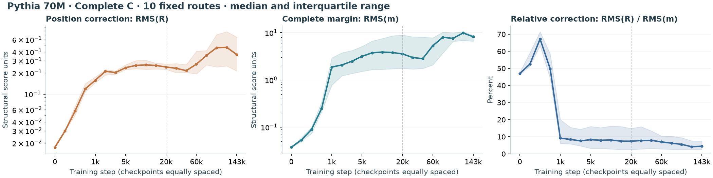
Per-route RMS values at the selected checkpoint
| Reader ← Writer | RMS(R) | RMS(m) | RMS(R)/RMS(m) |
|---|
All three quantities use the same actual-comparison weighting within a route. These are magnitudes of score terms, not matrix-energy fractions or attention percentages. A small ratio can also reflect a large RMS(m), so both absolute values remain visible.
All six-scale RMS values, route quartiles and definitions (JSON) · All 7,334 route/checkpoint/operator records (CSV)
Explore the fits separately by model and checkpoint. The panel below fits the native removal attention decrease against four selectable predictors: the mean of , the mean of G divided by its own standard deviation, the mean of , and the mean of divided by its own standard deviation. Select complete or to specify which operator supplies and . Each view shows one model, one checkpoint, and one predictor; checkpoints and scales are not pooled.
Loading checkpoint-specific fits…
Individual routes in this fit
| Reader ← Writer | Predictor | Attention decrease (pp) |
|---|
Every point is one fixed endpoint-selected route: 10 routes in 70M and 29 routes into 22 Readers in 160M. The line is OLS with an intercept; r, ρ and R² describe this selected sample, not held-out prediction or causation. Routes may share a Reader. Negative early removal effects are retained. The predictor uses comparison-weighted structural statistics; the behavioral outcome uses equal-query attention averaging. Both ratios use each quantity’s own population standard deviation: μG/σG and μm/σm. Neither divides by variance.
Download all checkpoint-specific fits and route values (JSON) · Fit coefficients and correlations (CSV) · Sources and numerical examples for the two issues
What the fits tell us about the mechanism. Among the four summaries, the complete- mean margin divided by its own standard deviation, , gives the strongest overall fit across the checkpoints examined here. Averaging the separately fitted checkpoint values gives 0.803 for 70M and 0.795 for 160M, although the best summary varies at individual checkpoints. The margin is itself the correct-minus-incorrect score difference calculated from : it combines , rather than measuring alone.
Given the two issues above, our aim is not to establish a perfectly accurate, one-to-one mapping from a route’s structural summary to its native attention decrease. Instead, the complete- trajectories reveal a substantial positive contribution from , the token-center separation advantage, to the observed mean margins.
Quantitative evidence: where the mean-margin gap comes from
Cross-family extension. The main experiments now include 19 models and 566 functional routes: the original six Pythia scales (193 routes), plus seven OLMo/Dolma1.7 scales from 60M to 1B, four Qwen2.5 Base scales from 0.5B to 7B, and GPT-2 Small and Medium (373 additional routes). Select a model below for its eleven-term mean-gap decomposition and RMS comparison; Section 3.2.4 includes its route-wise H⁺ rotation. The new families are evaluated at one pinned public training point per model, not across a training trajectory. Pythia’s existing training curves and fits remain unchanged.
Token pools, selected training points, and control populations
Each family uses 5,000 native token IDs ranked 5,001–10,000 by its own reference frequency (ties by token ID). OLMo uses a stratified sample of the released Dolma1.7 training recipe; this estimates recipe frequencies, not the exact training prefix of every scale. Qwen uses publicly released English WebText reference texts, not its undisclosed training corpus. GPT-2 uses the official same-source WebText held-out texts. Qwen and GPT-2 tokenize those texts separately. Pythia retains its original Pile-derived token pool. Equal frequency ranks do not imply identical tokens or identical frequency percentiles across tokenizers.
The repeated-input protocol stays the same: ten independent random 25-token contexts per token, repeated four times after BOS; 2,084 sequences, 150,000 evaluated queries, and 20,849,616 actual correct–incorrect comparisons per route. C and H⁺ references average distances 0–2,047, with the positive spectral part taken before averaging. OLMo uses the preselected common public training points recorded with each model; Qwen and GPT-2 use pinned public Base weights. These are not claimed to be matched training budgets.
All families select functional routes by the attention-removal criterion in Section 1.3. The ordinary populations differ: Pythia requires a Reader with unmodified correct-successor attention ≤10% and a Writer with previous-token attention ≤10%. For the 13 new models, ordinary controls are sampled from legal earlier-layer routes outside the selected functional set; their individual heads need not satisfy those two ≤10% conditions. Each model has 50 global controls, and up to five controls per selected Writer-layer/Reader-layer pair. Matched controls reproduce the selected layer-pair weights, with equal weights within each pair. These are two separate comparisons, not one-to-one head matches.
For Pythia at step 143,000, we compare functional routes with two separately sampled ordinary control groups. The global control draws 50 routes uniformly from the full eligible population in each model. The matched control draws up to five routes per ordered Writer-layer/Reader-layer combination, using all available routes when fewer than five exist. Ordinary eligibility retains the frozen rule: unmodified Reader correct-successor attention at most 10%, Writer previous-token attention at most 10%, and an earlier Writer layer. The two comparisons are shown separately.
mC = G+ − b+ + T+ + R+ + G− − b− + T− + R− − bA + TA + RA.
For each signed contribution X, the waterfall shows ΔX = mean(X)functional − mean(X)ordinary. Adding the eleven differences to the ordinary mean gives the functional mean exactly. Bias bars already use the sign −b.
Exact eleven component means and differences
| Signed term | Ordinary mean | Functional mean | Difference |
|---|---|---|---|
| G⁺ | 0.78130 | 6.00114 | +5.21984 |
| −b⁺ | 0.01205 | 0.09380 | +0.08176 |
| T⁺ | -0.53816 | -0.65093 | -0.11277 |
| R⁺ | -0.00332 | 0.00992 | +0.01323 |
| G⁻ | -0.77872 | -0.90294 | -0.12422 |
| −b⁻ | -0.01172 | -0.01186 | -0.00014 |
| T⁻ | 0.54468 | 0.57326 | +0.02857 |
| R⁻ | 0.01909 | 0.01495 | -0.00414 |
| −bᴬ | -0.00052 | 0.00757 | +0.00809 |
| Tᴬ | 0.01233 | 0.60909 | +0.59676 |
| Rᴬ | 0.00825 | 0.00013 | -0.00812 |
Exact eleven component means and differences
| Signed term | Ordinary mean | Functional mean | Difference |
|---|---|---|---|
| G⁺ | 0.58234 | 6.00114 | +5.41880 |
| −b⁺ | 0.01500 | 0.09380 | +0.07880 |
| T⁺ | -0.29384 | -0.65093 | -0.35709 |
| R⁺ | 0.03303 | 0.00992 | -0.02311 |
| G⁻ | -0.56570 | -0.90294 | -0.33724 |
| −b⁻ | -0.00831 | -0.01186 | -0.00355 |
| T⁻ | 0.32208 | 0.57326 | +0.25118 |
| R⁻ | 0.01085 | 0.01495 | +0.00410 |
| −bᴬ | -0.00550 | 0.00757 | +0.01307 |
| Tᴬ | 0.05328 | 0.60909 | +0.55581 |
| Rᴬ | 0.02468 | 0.00013 | -0.02455 |
Exact eleven component means and differences
| Signed term | Ordinary mean | Functional mean | Difference |
|---|---|---|---|
| G⁺ | 0.67441 | 5.70660 | +5.03219 |
| −b⁺ | 0.02996 | 0.11421 | +0.08425 |
| T⁺ | -0.29999 | 2.57573 | +2.87572 |
| R⁺ | 0.02132 | 0.04146 | +0.02014 |
| G⁻ | -0.67274 | -0.84036 | -0.16761 |
| −b⁻ | -0.03348 | -0.03809 | -0.00461 |
| T⁻ | 0.33352 | 0.40106 | +0.06754 |
| R⁻ | 0.03323 | 0.02881 | -0.00442 |
| −bᴬ | -0.00144 | 0.00010 | +0.00154 |
| Tᴬ | 0.05249 | 0.99751 | +0.94502 |
| Rᴬ | -0.00102 | 0.01272 | +0.01373 |
Exact eleven component means and differences
| Signed term | Ordinary mean | Functional mean | Difference |
|---|---|---|---|
| G⁺ | 0.48105 | 5.70660 | +5.22555 |
| −b⁺ | 0.01353 | 0.11421 | +0.10068 |
| T⁺ | -0.14271 | 2.57573 | +2.71843 |
| R⁺ | 0.01467 | 0.04146 | +0.02679 |
| G⁻ | -0.46147 | -0.84036 | -0.37889 |
| −b⁻ | -0.01535 | -0.03809 | -0.02274 |
| T⁻ | 0.12927 | 0.40106 | +0.27180 |
| R⁻ | -0.01647 | 0.02881 | +0.04528 |
| −bᴬ | 0.00140 | 0.00010 | -0.00131 |
| Tᴬ | -0.00037 | 0.99751 | +0.99787 |
| Rᴬ | -0.00960 | 0.01272 | +0.02232 |
Exact eleven component means and differences
| Signed term | Ordinary mean | Functional mean | Difference |
|---|---|---|---|
| G⁺ | 0.22875 | 2.34884 | +2.12009 |
| −b⁺ | 0.01772 | 0.03790 | +0.02018 |
| T⁺ | -0.42773 | 0.43938 | +0.86710 |
| R⁺ | -0.00350 | 0.00229 | +0.00579 |
| G⁻ | -0.22864 | -0.22779 | +0.00085 |
| −b⁻ | -0.01833 | -0.00591 | +0.01241 |
| T⁻ | 0.43682 | 0.03856 | -0.39827 |
| R⁻ | 0.00819 | 0.00324 | -0.00495 |
| −bᴬ | -0.00004 | -0.00293 | -0.00289 |
| Tᴬ | -0.00489 | 0.20077 | +0.20566 |
| Rᴬ | 0.00256 | -0.00005 | -0.00261 |
Exact eleven component means and differences
| Signed term | Ordinary mean | Functional mean | Difference |
|---|---|---|---|
| G⁺ | 0.11849 | 2.34884 | +2.23036 |
| −b⁺ | 0.00348 | 0.03790 | +0.03441 |
| T⁺ | -0.01160 | 0.43938 | +0.45097 |
| R⁺ | 0.00059 | 0.00229 | +0.00170 |
| G⁻ | -0.10745 | -0.22779 | -0.12035 |
| −b⁻ | -0.00337 | -0.00591 | -0.00255 |
| T⁻ | 0.01358 | 0.03856 | +0.02497 |
| R⁻ | 0.00161 | 0.00324 | +0.00162 |
| −bᴬ | -0.00028 | -0.00293 | -0.00265 |
| Tᴬ | 0.00144 | 0.20077 | +0.19933 |
| Rᴬ | 0.00065 | -0.00005 | -0.00070 |
Exact eleven component means and differences
| Signed term | Ordinary mean | Functional mean | Difference |
|---|---|---|---|
| G⁺ | 0.64490 | 3.13077 | +2.48586 |
| −b⁺ | 0.03009 | 0.05323 | +0.02313 |
| T⁺ | -0.38120 | 0.43364 | +0.81484 |
| R⁺ | 0.01376 | -0.00209 | -0.01586 |
| G⁻ | -0.63983 | -0.55189 | +0.08795 |
| −b⁻ | -0.03182 | -0.00920 | +0.02261 |
| T⁻ | 0.39247 | 0.06627 | -0.32620 |
| R⁻ | -0.00917 | 0.00749 | +0.01666 |
| −bᴬ | -0.00051 | -0.00153 | -0.00102 |
| Tᴬ | 0.00906 | 0.31928 | +0.31022 |
| Rᴬ | 0.00203 | 0.00024 | -0.00178 |
Exact eleven component means and differences
| Signed term | Ordinary mean | Functional mean | Difference |
|---|---|---|---|
| G⁺ | 0.59935 | 3.27875 | +2.67940 |
| −b⁺ | 0.01409 | 0.05739 | +0.04331 |
| T⁺ | -0.01359 | 0.58057 | +0.59417 |
| R⁺ | 0.00974 | -0.00192 | -0.01165 |
| G⁻ | -0.53779 | -0.52994 | +0.00785 |
| −b⁻ | -0.01214 | -0.00941 | +0.00274 |
| T⁻ | 0.01557 | 0.02611 | +0.01053 |
| R⁻ | 0.00188 | 0.00857 | +0.00669 |
| −bᴬ | 0.00002 | -0.00176 | -0.00178 |
| Tᴬ | 0.01150 | 0.33131 | +0.31981 |
| Rᴬ | -0.00004 | 0.00056 | +0.00061 |
Exact eleven component means and differences
| Signed term | Ordinary mean | Functional mean | Difference |
|---|---|---|---|
| G⁺ | 0.47692 | 2.66206 | +2.18514 |
| −b⁺ | 0.06460 | 0.04522 | -0.01937 |
| T⁺ | -0.48905 | 0.42627 | +0.91532 |
| R⁺ | 0.00286 | -0.00166 | -0.00453 |
| G⁻ | -0.46786 | -0.36674 | +0.10112 |
| −b⁻ | -0.06439 | -0.01122 | +0.05318 |
| T⁻ | 0.46215 | 0.09112 | -0.37103 |
| R⁻ | -0.00842 | 0.00367 | +0.01209 |
| −bᴬ | -0.00331 | -0.00400 | -0.00068 |
| Tᴬ | -0.02085 | 0.33068 | +0.35153 |
| Rᴬ | -0.00181 | 0.00251 | +0.00432 |
Exact eleven component means and differences
| Signed term | Ordinary mean | Functional mean | Difference |
|---|---|---|---|
| G⁺ | 0.29342 | 2.66206 | +2.36864 |
| −b⁺ | 0.00799 | 0.04522 | +0.03723 |
| T⁺ | -0.05090 | 0.42627 | +0.47717 |
| R⁺ | 0.00299 | -0.00166 | -0.00465 |
| G⁻ | -0.28626 | -0.36674 | -0.08048 |
| −b⁻ | -0.00787 | -0.01122 | -0.00335 |
| T⁻ | 0.05234 | 0.09112 | +0.03878 |
| R⁻ | -0.00172 | 0.00367 | +0.00539 |
| −bᴬ | -0.00019 | -0.00400 | -0.00380 |
| Tᴬ | -0.00032 | 0.33068 | +0.33100 |
| Rᴬ | 0.00028 | 0.00251 | +0.00224 |
Exact eleven component means and differences
| Signed term | Ordinary mean | Functional mean | Difference |
|---|---|---|---|
| G⁺ | 0.61347 | 2.61228 | +1.99881 |
| −b⁺ | 0.07505 | 0.09475 | +0.01971 |
| T⁺ | -0.76076 | -0.07384 | +0.68692 |
| R⁺ | -0.00625 | 0.00928 | +0.01553 |
| G⁻ | -0.63091 | -0.56382 | +0.06709 |
| −b⁻ | -0.09622 | -0.15223 | -0.05600 |
| T⁻ | 0.91821 | 0.55909 | -0.35912 |
| R⁻ | 0.00390 | 0.00691 | +0.00301 |
| −bᴬ | -0.00296 | 0.02946 | +0.03242 |
| Tᴬ | -0.02561 | -0.55394 | -0.52833 |
| Rᴬ | 0.00478 | 0.00237 | -0.00241 |
Exact eleven component means and differences
| Signed term | Ordinary mean | Functional mean | Difference |
|---|---|---|---|
| G⁺ | 0.23251 | 2.61228 | +2.37977 |
| −b⁺ | 0.03481 | 0.09475 | +0.05994 |
| T⁺ | -0.29247 | -0.07384 | +0.21863 |
| R⁺ | 0.00033 | 0.00928 | +0.00895 |
| G⁻ | -0.24865 | -0.56382 | -0.31517 |
| −b⁻ | -0.04676 | -0.15223 | -0.10547 |
| T⁻ | 0.36791 | 0.55909 | +0.19118 |
| R⁻ | 0.00182 | 0.00691 | +0.00509 |
| −bᴬ | 0.00102 | 0.02946 | +0.02844 |
| Tᴬ | 0.04030 | -0.55394 | -0.59424 |
| Rᴬ | -0.00183 | 0.00237 | +0.00419 |
Exact eleven component means and differences
| Signed term | Ordinary mean | Functional mean | Difference |
|---|---|---|---|
| G⁺ | 0.50735 | 13.21292 | 12.70557 |
| −b⁺ | 0.01796 | 0.23642 | 0.21846 |
| T⁺ | -0.18518 | 0.35616 | 0.54134 |
| R⁺ | -0.02916 | 3.12923 | 3.15839 |
| G⁻ | -0.52470 | -2.99968 | -2.47497 |
| −b⁻ | -0.02106 | -0.10112 | -0.08005 |
| T⁻ | 0.17899 | 0.35303 | 0.17403 |
| R⁻ | -0.02104 | 1.46589 | 1.48693 |
| −bᴬ | -0.00084 | -0.01247 | -0.01164 |
| Tᴬ | -0.00675 | 0.10113 | 0.10789 |
| Rᴬ | -0.00554 | 0.81120 | 0.81674 |
Position correction: RMS(R), RMS(m), and their ratio
| Operator | Population | RMS(R) | RMS(m) | RMS(R)/RMS(m) |
|---|---|---|---|---|
| Complete C | Functional | 10.03274 | 22.25420 | 45.08% |
| Complete C | Ordinary | 1.45703 | 1.41644 | 102.87% |
| H⁺ | Functional | 5.33415 | 22.32989 | 23.89% |
| H⁺ | Ordinary | 0.54195 | 0.88189 | 61.45% |
RMS(X) = √E[X²], using the same comparison and route weights as this control view. Pool second moments before taking square roots; this is not the average of per-route ratios. A smaller relative correction can reflect a larger margin denominator. In GPT-2 the structural operator has no distance dependence, so R = 0 by definition; position still affects the input representations.
New-family controls exclude selected functional routes but do not require both heads to score below 10%; see the cohort definition above. Download all new-family decomposition and RMS values.
Exact eleven component means and differences
| Signed term | Ordinary mean | Functional mean | Difference |
|---|---|---|---|
| G⁺ | 0.76698 | 13.21292 | 12.44594 |
| −b⁺ | 0.01915 | 0.23642 | 0.21727 |
| T⁺ | -0.08302 | 0.35616 | 0.43917 |
| R⁺ | -0.00408 | 3.12923 | 3.13332 |
| G⁻ | -0.49403 | -2.99968 | -2.50565 |
| −b⁻ | -0.01648 | -0.10112 | -0.08464 |
| T⁻ | 0.04096 | 0.35303 | 0.31206 |
| R⁻ | 0.01130 | 1.46589 | 1.45458 |
| −bᴬ | -0.00029 | -0.01247 | -0.01218 |
| Tᴬ | 0.01019 | 0.10113 | 0.09095 |
| Rᴬ | 0.00651 | 0.81120 | 0.80469 |
Position correction: RMS(R), RMS(m), and their ratio
| Operator | Population | RMS(R) | RMS(m) | RMS(R)/RMS(m) |
|---|---|---|---|---|
| Complete C | Functional | 10.03274 | 22.25420 | 45.08% |
| Complete C | Ordinary | 1.26809 | 1.85613 | 68.32% |
| H⁺ | Functional | 5.33415 | 22.32989 | 23.89% |
| H⁺ | Ordinary | 0.55545 | 1.73319 | 32.05% |
RMS(X) = √E[X²], using the same comparison and route weights as this control view. Pool second moments before taking square roots; this is not the average of per-route ratios. A smaller relative correction can reflect a larger margin denominator. In GPT-2 the structural operator has no distance dependence, so R = 0 by definition; position still affects the input representations.
New-family controls exclude selected functional routes but do not require both heads to score below 10%; see the cohort definition above. Download all new-family decomposition and RMS values.
Exact eleven component means and differences
| Signed term | Ordinary mean | Functional mean | Difference |
|---|---|---|---|
| G⁺ | 0.67278 | 17.40122 | 16.72844 |
| −b⁺ | 0.01643 | 0.30913 | 0.29270 |
| T⁺ | -0.19709 | 2.82360 | 3.02069 |
| R⁺ | -0.00401 | 2.43016 | 2.43416 |
| G⁻ | -0.61499 | -1.80538 | -1.19039 |
| −b⁻ | -0.01911 | -0.08668 | -0.06756 |
| T⁻ | 0.20391 | -0.03055 | -0.23446 |
| R⁻ | 0.01504 | 0.93364 | 0.91860 |
| −bᴬ | -0.00086 | -0.01143 | -0.01057 |
| Tᴬ | 0.00838 | 0.22414 | 0.21576 |
| Rᴬ | -0.00832 | 0.39172 | 0.40004 |
Position correction: RMS(R), RMS(m), and their ratio
| Operator | Population | RMS(R) | RMS(m) | RMS(R)/RMS(m) |
|---|---|---|---|---|
| Complete C | Functional | 9.55612 | 32.10359 | 29.77% |
| Complete C | Ordinary | 1.30358 | 1.70684 | 76.37% |
| H⁺ | Functional | 4.82518 | 32.21193 | 14.98% |
| H⁺ | Ordinary | 0.54455 | 1.29607 | 42.02% |
RMS(X) = √E[X²], using the same comparison and route weights as this control view. Pool second moments before taking square roots; this is not the average of per-route ratios. A smaller relative correction can reflect a larger margin denominator. In GPT-2 the structural operator has no distance dependence, so R = 0 by definition; position still affects the input representations.
New-family controls exclude selected functional routes but do not require both heads to score below 10%; see the cohort definition above. Download all new-family decomposition and RMS values.
Exact eleven component means and differences
| Signed term | Ordinary mean | Functional mean | Difference |
|---|---|---|---|
| G⁺ | 0.96784 | 17.40122 | 16.43338 |
| −b⁺ | 0.03008 | 0.30913 | 0.27905 |
| T⁺ | 0.10741 | 2.82360 | 2.71619 |
| R⁺ | 0.05683 | 2.43016 | 2.37332 |
| G⁻ | -0.75423 | -1.80538 | -1.05114 |
| −b⁻ | -0.03296 | -0.08668 | -0.05371 |
| T⁻ | -0.06100 | -0.03055 | 0.03045 |
| R⁻ | 0.02219 | 0.93364 | 0.91146 |
| −bᴬ | -0.00299 | -0.01143 | -0.00844 |
| Tᴬ | 0.00552 | 0.22414 | 0.21861 |
| Rᴬ | 0.01443 | 0.39172 | 0.37729 |
Position correction: RMS(R), RMS(m), and their ratio
| Operator | Population | RMS(R) | RMS(m) | RMS(R)/RMS(m) |
|---|---|---|---|---|
| Complete C | Functional | 9.55612 | 32.10359 | 29.77% |
| Complete C | Ordinary | 1.67501 | 2.20176 | 76.08% |
| H⁺ | Functional | 4.82518 | 32.21193 | 14.98% |
| H⁺ | Ordinary | 0.68843 | 2.15835 | 31.90% |
RMS(X) = √E[X²], using the same comparison and route weights as this control view. Pool second moments before taking square roots; this is not the average of per-route ratios. A smaller relative correction can reflect a larger margin denominator. In GPT-2 the structural operator has no distance dependence, so R = 0 by definition; position still affects the input representations.
New-family controls exclude selected functional routes but do not require both heads to score below 10%; see the cohort definition above. Download all new-family decomposition and RMS values.
Exact eleven component means and differences
| Signed term | Ordinary mean | Functional mean | Difference |
|---|---|---|---|
| G⁺ | 0.80820 | 9.71532 | 8.90712 |
| −b⁺ | 0.02714 | 0.18100 | 0.15386 |
| T⁺ | -0.10200 | 1.82758 | 1.92958 |
| R⁺ | 0.01717 | 1.10751 | 1.09035 |
| G⁻ | -0.72212 | -1.52057 | -0.79845 |
| −b⁻ | -0.02701 | -0.05851 | -0.03150 |
| T⁻ | 0.24071 | -0.04025 | -0.28096 |
| R⁻ | 0.03216 | 0.47167 | 0.43952 |
| −bᴬ | -0.00126 | -0.00596 | -0.00470 |
| Tᴬ | 0.00702 | 0.33426 | 0.32723 |
| Rᴬ | -0.00113 | 0.08104 | 0.08218 |
Position correction: RMS(R), RMS(m), and their ratio
| Operator | Population | RMS(R) | RMS(m) | RMS(R)/RMS(m) |
|---|---|---|---|---|
| Complete C | Functional | 4.66466 | 15.57932 | 29.94% |
| Complete C | Ordinary | 1.42014 | 2.03505 | 69.78% |
| H⁺ | Functional | 2.60493 | 16.20452 | 16.08% |
| H⁺ | Ordinary | 0.54761 | 2.04158 | 26.82% |
RMS(X) = √E[X²], using the same comparison and route weights as this control view. Pool second moments before taking square roots; this is not the average of per-route ratios. A smaller relative correction can reflect a larger margin denominator. In GPT-2 the structural operator has no distance dependence, so R = 0 by definition; position still affects the input representations.
New-family controls exclude selected functional routes but do not require both heads to score below 10%; see the cohort definition above. Download all new-family decomposition and RMS values.
Exact eleven component means and differences
| Signed term | Ordinary mean | Functional mean | Difference |
|---|---|---|---|
| G⁺ | 1.20070 | 9.71532 | 8.51462 |
| −b⁺ | 0.03624 | 0.18100 | 0.14476 |
| T⁺ | 0.06900 | 1.82758 | 1.75858 |
| R⁺ | 0.10348 | 1.10751 | 1.00403 |
| G⁻ | -0.81680 | -1.52057 | -0.70377 |
| −b⁻ | -0.03070 | -0.05851 | -0.02781 |
| T⁻ | -0.04363 | -0.04025 | 0.00338 |
| R⁻ | 0.08386 | 0.47167 | 0.38781 |
| −bᴬ | -0.00085 | -0.00596 | -0.00511 |
| Tᴬ | 0.02715 | 0.33426 | 0.30710 |
| Rᴬ | 0.01335 | 0.08104 | 0.06770 |
Position correction: RMS(R), RMS(m), and their ratio
| Operator | Population | RMS(R) | RMS(m) | RMS(R)/RMS(m) |
|---|---|---|---|---|
| Complete C | Functional | 4.66466 | 15.57932 | 29.94% |
| Complete C | Ordinary | 1.44823 | 2.45032 | 59.10% |
| H⁺ | Functional | 2.60493 | 16.20452 | 16.08% |
| H⁺ | Ordinary | 0.68929 | 2.65355 | 25.98% |
RMS(X) = √E[X²], using the same comparison and route weights as this control view. Pool second moments before taking square roots; this is not the average of per-route ratios. A smaller relative correction can reflect a larger margin denominator. In GPT-2 the structural operator has no distance dependence, so R = 0 by definition; position still affects the input representations.
New-family controls exclude selected functional routes but do not require both heads to score below 10%; see the cohort definition above. Download all new-family decomposition and RMS values.
Exact eleven component means and differences
| Signed term | Ordinary mean | Functional mean | Difference |
|---|---|---|---|
| G⁺ | 0.59547 | 9.78005 | 9.18458 |
| −b⁺ | 0.01941 | 0.17326 | 0.15385 |
| T⁺ | -0.06242 | 0.44922 | 0.51165 |
| R⁺ | -0.01924 | 1.58578 | 1.60502 |
| G⁻ | -0.58720 | -1.52283 | -0.93563 |
| −b⁻ | -0.02516 | -0.05197 | -0.02681 |
| T⁻ | 0.07022 | 0.02876 | -0.04146 |
| R⁻ | -0.01747 | 0.65442 | 0.67188 |
| −bᴬ | -0.00261 | -0.00589 | -0.00328 |
| Tᴬ | 0.00045 | 0.23183 | 0.23138 |
| Rᴬ | 0.01055 | 0.12365 | 0.11309 |
Position correction: RMS(R), RMS(m), and their ratio
| Operator | Population | RMS(R) | RMS(m) | RMS(R)/RMS(m) |
|---|---|---|---|---|
| Complete C | Functional | 4.63565 | 14.39068 | 32.21% |
| Complete C | Ordinary | 1.14449 | 1.23547 | 92.64% |
| H⁺ | Functional | 2.81347 | 14.72167 | 19.11% |
| H⁺ | Ordinary | 0.44925 | 1.11378 | 40.34% |
RMS(X) = √E[X²], using the same comparison and route weights as this control view. Pool second moments before taking square roots; this is not the average of per-route ratios. A smaller relative correction can reflect a larger margin denominator. In GPT-2 the structural operator has no distance dependence, so R = 0 by definition; position still affects the input representations.
New-family controls exclude selected functional routes but do not require both heads to score below 10%; see the cohort definition above. Download all new-family decomposition and RMS values.
Exact eleven component means and differences
| Signed term | Ordinary mean | Functional mean | Difference |
|---|---|---|---|
| G⁺ | 1.16846 | 9.78005 | 8.61158 |
| −b⁺ | 0.03166 | 0.17326 | 0.14160 |
| T⁺ | 0.16465 | 0.44922 | 0.28457 |
| R⁺ | 0.03675 | 1.58578 | 1.54903 |
| G⁻ | -0.75179 | -1.52283 | -0.77103 |
| −b⁻ | -0.02825 | -0.05197 | -0.02372 |
| T⁻ | -0.05682 | 0.02876 | 0.08558 |
| R⁻ | -0.00391 | 0.65442 | 0.65833 |
| −bᴬ | -0.00242 | -0.00589 | -0.00348 |
| Tᴬ | 0.01529 | 0.23183 | 0.21654 |
| Rᴬ | -0.00323 | 0.12365 | 0.12687 |
Position correction: RMS(R), RMS(m), and their ratio
| Operator | Population | RMS(R) | RMS(m) | RMS(R)/RMS(m) |
|---|---|---|---|---|
| Complete C | Functional | 4.63565 | 14.39068 | 32.21% |
| Complete C | Ordinary | 1.31461 | 2.85782 | 46.00% |
| H⁺ | Functional | 2.81347 | 14.72167 | 19.11% |
| H⁺ | Ordinary | 0.57325 | 2.92712 | 19.58% |
RMS(X) = √E[X²], using the same comparison and route weights as this control view. Pool second moments before taking square roots; this is not the average of per-route ratios. A smaller relative correction can reflect a larger margin denominator. In GPT-2 the structural operator has no distance dependence, so R = 0 by definition; position still affects the input representations.
New-family controls exclude selected functional routes but do not require both heads to score below 10%; see the cohort definition above. Download all new-family decomposition and RMS values.
Exact eleven component means and differences
| Signed term | Ordinary mean | Functional mean | Difference |
|---|---|---|---|
| G⁺ | 0.57835 | 11.46589 | 10.88754 |
| −b⁺ | 0.01606 | 0.19798 | 0.18192 |
| T⁺ | -0.04911 | 0.73576 | 0.78487 |
| R⁺ | -0.00177 | 0.70047 | 0.70225 |
| G⁻ | -0.51754 | -1.29752 | -0.77998 |
| −b⁻ | -0.01980 | -0.04526 | -0.02546 |
| T⁻ | 0.08076 | -0.18116 | -0.26192 |
| R⁻ | 0.01720 | 0.29934 | 0.28214 |
| −bᴬ | -0.00449 | -0.00782 | -0.00334 |
| Tᴬ | 0.02535 | 0.44725 | 0.42189 |
| Rᴬ | 0.00771 | 0.06454 | 0.05683 |
Position correction: RMS(R), RMS(m), and their ratio
| Operator | Population | RMS(R) | RMS(m) | RMS(R)/RMS(m) |
|---|---|---|---|---|
| Complete C | Functional | 3.40500 | 15.22179 | 22.37% |
| Complete C | Ordinary | 0.86623 | 1.07177 | 80.82% |
| H⁺ | Functional | 1.82467 | 15.71203 | 11.61% |
| H⁺ | Ordinary | 0.35360 | 1.01617 | 34.80% |
RMS(X) = √E[X²], using the same comparison and route weights as this control view. Pool second moments before taking square roots; this is not the average of per-route ratios. A smaller relative correction can reflect a larger margin denominator. In GPT-2 the structural operator has no distance dependence, so R = 0 by definition; position still affects the input representations.
New-family controls exclude selected functional routes but do not require both heads to score below 10%; see the cohort definition above. Download all new-family decomposition and RMS values.
Exact eleven component means and differences
| Signed term | Ordinary mean | Functional mean | Difference |
|---|---|---|---|
| G⁺ | 0.70530 | 11.46589 | 10.76060 |
| −b⁺ | 0.02195 | 0.19798 | 0.17603 |
| T⁺ | 0.06673 | 0.73576 | 0.66903 |
| R⁺ | 0.01663 | 0.70047 | 0.68385 |
| G⁻ | -0.62748 | -1.29752 | -0.67004 |
| −b⁻ | -0.02804 | -0.04526 | -0.01723 |
| T⁻ | -0.02988 | -0.18116 | -0.15128 |
| R⁻ | 0.05985 | 0.29934 | 0.23949 |
| −bᴬ | -0.00428 | -0.00782 | -0.00355 |
| Tᴬ | 0.01624 | 0.44725 | 0.43101 |
| Rᴬ | 0.00425 | 0.06454 | 0.06029 |
Position correction: RMS(R), RMS(m), and their ratio
| Operator | Population | RMS(R) | RMS(m) | RMS(R)/RMS(m) |
|---|---|---|---|---|
| Complete C | Functional | 3.40500 | 15.22179 | 22.37% |
| Complete C | Ordinary | 1.08655 | 1.56728 | 69.33% |
| H⁺ | Functional | 1.82467 | 15.71203 | 11.61% |
| H⁺ | Ordinary | 0.50377 | 1.68537 | 29.89% |
RMS(X) = √E[X²], using the same comparison and route weights as this control view. Pool second moments before taking square roots; this is not the average of per-route ratios. A smaller relative correction can reflect a larger margin denominator. In GPT-2 the structural operator has no distance dependence, so R = 0 by definition; position still affects the input representations.
New-family controls exclude selected functional routes but do not require both heads to score below 10%; see the cohort definition above. Download all new-family decomposition and RMS values.
Exact eleven component means and differences
| Signed term | Ordinary mean | Functional mean | Difference |
|---|---|---|---|
| G⁺ | 1.40436 | 15.11389 | 13.70953 |
| −b⁺ | 0.03028 | 0.26843 | 0.23815 |
| T⁺ | -0.23159 | 4.35846 | 4.59005 |
| R⁺ | 0.05478 | 1.61464 | 1.55986 |
| G⁻ | -1.32893 | -2.38714 | -1.05820 |
| −b⁻ | -0.03921 | -0.07810 | -0.03889 |
| T⁻ | 0.26517 | -0.50430 | -0.76946 |
| R⁻ | 0.00395 | 0.69667 | 0.69272 |
| −bᴬ | -0.00634 | -0.01263 | -0.00629 |
| Tᴬ | 0.03451 | 0.63688 | 0.60237 |
| Rᴬ | 0.00981 | 0.15627 | 0.14646 |
Position correction: RMS(R), RMS(m), and their ratio
| Operator | Population | RMS(R) | RMS(m) | RMS(R)/RMS(m) |
|---|---|---|---|---|
| Complete C | Functional | 6.12328 | 25.02206 | 24.47% |
| Complete C | Ordinary | 1.92469 | 2.49520 | 77.14% |
| H⁺ | Functional | 3.42169 | 26.26166 | 13.03% |
| H⁺ | Ordinary | 0.76660 | 2.45916 | 31.17% |
RMS(X) = √E[X²], using the same comparison and route weights as this control view. Pool second moments before taking square roots; this is not the average of per-route ratios. A smaller relative correction can reflect a larger margin denominator. In GPT-2 the structural operator has no distance dependence, so R = 0 by definition; position still affects the input representations.
New-family controls exclude selected functional routes but do not require both heads to score below 10%; see the cohort definition above. Download all new-family decomposition and RMS values.
Exact eleven component means and differences
| Signed term | Ordinary mean | Functional mean | Difference |
|---|---|---|---|
| G⁺ | 1.72212 | 15.11389 | 13.39176 |
| −b⁺ | 0.04764 | 0.26843 | 0.22079 |
| T⁺ | 0.31924 | 4.35846 | 4.03922 |
| R⁺ | 0.11021 | 1.61464 | 1.50443 |
| G⁻ | -1.33868 | -2.38714 | -1.04846 |
| −b⁻ | -0.05254 | -0.07810 | -0.02556 |
| T⁻ | -0.22698 | -0.50430 | -0.27732 |
| R⁻ | 0.07701 | 0.69667 | 0.61966 |
| −bᴬ | -0.00573 | -0.01263 | -0.00690 |
| Tᴬ | 0.05124 | 0.63688 | 0.58564 |
| Rᴬ | 0.02618 | 0.15627 | 0.13009 |
Position correction: RMS(R), RMS(m), and their ratio
| Operator | Population | RMS(R) | RMS(m) | RMS(R)/RMS(m) |
|---|---|---|---|---|
| Complete C | Functional | 6.12328 | 25.02206 | 24.47% |
| Complete C | Ordinary | 2.28550 | 3.30955 | 69.06% |
| H⁺ | Functional | 3.42169 | 26.26166 | 13.03% |
| H⁺ | Ordinary | 0.94582 | 3.59217 | 26.33% |
RMS(X) = √E[X²], using the same comparison and route weights as this control view. Pool second moments before taking square roots; this is not the average of per-route ratios. A smaller relative correction can reflect a larger margin denominator. In GPT-2 the structural operator has no distance dependence, so R = 0 by definition; position still affects the input representations.
New-family controls exclude selected functional routes but do not require both heads to score below 10%; see the cohort definition above. Download all new-family decomposition and RMS values.
Exact eleven component means and differences
| Signed term | Ordinary mean | Functional mean | Difference |
|---|---|---|---|
| G⁺ | 0.79962 | 7.25854 | 6.45892 |
| −b⁺ | 0.02695 | 0.13776 | 0.11081 |
| T⁺ | -0.03613 | 2.56740 | 2.60353 |
| R⁺ | 0.00770 | 0.68865 | 0.68095 |
| G⁻ | -0.73261 | -1.33138 | -0.59878 |
| −b⁻ | -0.03014 | -0.05363 | -0.02349 |
| T⁻ | 0.10544 | -0.16925 | -0.27469 |
| R⁻ | 0.01769 | 0.29072 | 0.27303 |
| −bᴬ | -0.00188 | -0.00753 | -0.00566 |
| Tᴬ | 0.02549 | 0.48390 | 0.45841 |
| Rᴬ | 0.01336 | 0.03269 | 0.01933 |
Position correction: RMS(R), RMS(m), and their ratio
| Operator | Population | RMS(R) | RMS(m) | RMS(R)/RMS(m) |
|---|---|---|---|---|
| Complete C | Functional | 2.73275 | 12.60703 | 21.68% |
| Complete C | Ordinary | 1.00017 | 1.23088 | 81.26% |
| H⁺ | Functional | 1.50560 | 13.27172 | 11.34% |
| H⁺ | Ordinary | 0.42502 | 1.49176 | 28.49% |
RMS(X) = √E[X²], using the same comparison and route weights as this control view. Pool second moments before taking square roots; this is not the average of per-route ratios. A smaller relative correction can reflect a larger margin denominator. In GPT-2 the structural operator has no distance dependence, so R = 0 by definition; position still affects the input representations.
New-family controls exclude selected functional routes but do not require both heads to score below 10%; see the cohort definition above. Download all new-family decomposition and RMS values.
Exact eleven component means and differences
| Signed term | Ordinary mean | Functional mean | Difference |
|---|---|---|---|
| G⁺ | 0.63887 | 7.25854 | 6.61967 |
| −b⁺ | 0.02255 | 0.13776 | 0.11522 |
| T⁺ | 0.08425 | 2.56740 | 2.48316 |
| R⁺ | 0.00362 | 0.68865 | 0.68503 |
| G⁻ | -0.59093 | -1.33138 | -0.74045 |
| −b⁻ | -0.02667 | -0.05363 | -0.02696 |
| T⁻ | -0.07206 | -0.16925 | -0.09719 |
| R⁻ | -0.00874 | 0.29072 | 0.29946 |
| −bᴬ | -0.00264 | -0.00753 | -0.00490 |
| Tᴬ | 0.00637 | 0.48390 | 0.47753 |
| Rᴬ | -0.00065 | 0.03269 | 0.03334 |
Position correction: RMS(R), RMS(m), and their ratio
| Operator | Population | RMS(R) | RMS(m) | RMS(R)/RMS(m) |
|---|---|---|---|---|
| Complete C | Functional | 2.73275 | 12.60703 | 21.68% |
| Complete C | Ordinary | 0.73491 | 0.90335 | 81.35% |
| H⁺ | Functional | 1.50560 | 13.27172 | 11.34% |
| H⁺ | Ordinary | 0.31484 | 1.07057 | 29.41% |
RMS(X) = √E[X²], using the same comparison and route weights as this control view. Pool second moments before taking square roots; this is not the average of per-route ratios. A smaller relative correction can reflect a larger margin denominator. In GPT-2 the structural operator has no distance dependence, so R = 0 by definition; position still affects the input representations.
New-family controls exclude selected functional routes but do not require both heads to score below 10%; see the cohort definition above. Download all new-family decomposition and RMS values.
Exact eleven component means and differences
| Signed term | Ordinary mean | Functional mean | Difference |
|---|---|---|---|
| G⁺ | 0.08843 | 4.07150 | 3.98307 |
| −b⁺ | 0.00240 | 0.06688 | 0.06447 |
| T⁺ | -0.03892 | 0.88667 | 0.92559 |
| R⁺ | -0.00033 | -0.01137 | -0.01104 |
| G⁻ | -0.08358 | -0.25172 | -0.16814 |
| −b⁻ | -0.00217 | -0.00526 | -0.00309 |
| T⁻ | 0.03993 | -0.01269 | -0.05262 |
| R⁻ | 0.00083 | 0.00228 | 0.00145 |
| −bᴬ | -0.00018 | 0.00069 | 0.00087 |
| Tᴬ | 0.00182 | 0.25230 | 0.25048 |
| Rᴬ | 0.00103 | 0.01195 | 0.01092 |
Position correction: RMS(R), RMS(m), and their ratio
| Operator | Population | RMS(R) | RMS(m) | RMS(R)/RMS(m) |
|---|---|---|---|---|
| Complete C | Functional | 0.19491 | 6.32716 | 3.08% |
| Complete C | Ordinary | 0.05823 | 0.15102 | 38.56% |
| H⁺ | Functional | 0.10478 | 6.19679 | 1.69% |
| H⁺ | Ordinary | 0.02820 | 0.10728 | 26.29% |
RMS(X) = √E[X²], using the same comparison and route weights as this control view. Pool second moments before taking square roots; this is not the average of per-route ratios. A smaller relative correction can reflect a larger margin denominator. In GPT-2 the structural operator has no distance dependence, so R = 0 by definition; position still affects the input representations.
New-family controls exclude selected functional routes but do not require both heads to score below 10%; see the cohort definition above. Download all new-family decomposition and RMS values.
Exact eleven component means and differences
| Signed term | Ordinary mean | Functional mean | Difference |
|---|---|---|---|
| G⁺ | 0.11387 | 4.07150 | 3.95763 |
| −b⁺ | 0.00312 | 0.06688 | 0.06376 |
| T⁺ | 0.01785 | 0.88667 | 0.86882 |
| R⁺ | -0.00053 | -0.01137 | -0.01084 |
| G⁻ | -0.09842 | -0.25172 | -0.15330 |
| −b⁻ | -0.00276 | -0.00526 | -0.00250 |
| T⁻ | -0.01112 | -0.01269 | -0.00157 |
| R⁻ | -8.466e-05 | 0.00228 | 0.00236 |
| −bᴬ | 0.00013 | 0.00069 | 0.00055 |
| Tᴬ | 0.00969 | 0.25230 | 0.24260 |
| Rᴬ | 0.00323 | 0.01195 | 0.00872 |
Position correction: RMS(R), RMS(m), and their ratio
| Operator | Population | RMS(R) | RMS(m) | RMS(R)/RMS(m) |
|---|---|---|---|---|
| Complete C | Functional | 0.19491 | 6.32716 | 3.08% |
| Complete C | Ordinary | 0.10239 | 0.24477 | 41.83% |
| H⁺ | Functional | 0.10478 | 6.19679 | 1.69% |
| H⁺ | Ordinary | 0.05979 | 0.24059 | 24.85% |
RMS(X) = √E[X²], using the same comparison and route weights as this control view. Pool second moments before taking square roots; this is not the average of per-route ratios. A smaller relative correction can reflect a larger margin denominator. In GPT-2 the structural operator has no distance dependence, so R = 0 by definition; position still affects the input representations.
New-family controls exclude selected functional routes but do not require both heads to score below 10%; see the cohort definition above. Download all new-family decomposition and RMS values.
Exact eleven component means and differences
| Signed term | Ordinary mean | Functional mean | Difference |
|---|---|---|---|
| G⁺ | 0.34807 | 6.70282 | 6.35475 |
| −b⁺ | 0.01188 | 0.12368 | 0.11180 |
| T⁺ | -0.14995 | 2.31039 | 2.46034 |
| R⁺ | -0.00137 | -0.00484 | -0.00347 |
| G⁻ | -0.34213 | -0.53384 | -0.19171 |
| −b⁻ | -0.01136 | -0.01819 | -0.00683 |
| T⁻ | 0.14857 | 0.01776 | -0.13080 |
| R⁻ | 0.00343 | 0.00360 | 0.00016 |
| −bᴬ | -0.00013 | 0.00027 | 0.00041 |
| Tᴬ | 0.00623 | 0.64502 | 0.63879 |
| Rᴬ | -0.00265 | 0.00792 | 0.01057 |
Position correction: RMS(R), RMS(m), and their ratio
| Operator | Population | RMS(R) | RMS(m) | RMS(R)/RMS(m) |
|---|---|---|---|---|
| Complete C | Functional | 0.33091 | 13.71702 | 2.41% |
| Complete C | Ordinary | 0.15367 | 0.39825 | 38.59% |
| H⁺ | Functional | 0.16685 | 13.45528 | 1.24% |
| H⁺ | Ordinary | 0.07670 | 0.38630 | 19.85% |
RMS(X) = √E[X²], using the same comparison and route weights as this control view. Pool second moments before taking square roots; this is not the average of per-route ratios. A smaller relative correction can reflect a larger margin denominator. In GPT-2 the structural operator has no distance dependence, so R = 0 by definition; position still affects the input representations.
New-family controls exclude selected functional routes but do not require both heads to score below 10%; see the cohort definition above. Download all new-family decomposition and RMS values.
Exact eleven component means and differences
| Signed term | Ordinary mean | Functional mean | Difference |
|---|---|---|---|
| G⁺ | 0.42307 | 6.70282 | 6.27975 |
| −b⁺ | 0.01156 | 0.12368 | 0.11211 |
| T⁺ | 0.05900 | 2.31039 | 2.25139 |
| R⁺ | -0.00227 | -0.00484 | -0.00257 |
| G⁻ | -0.33025 | -0.53384 | -0.20360 |
| −b⁻ | -0.00933 | -0.01819 | -0.00886 |
| T⁻ | -0.04082 | 0.01776 | 0.05859 |
| R⁻ | -0.00657 | 0.00360 | 0.01017 |
| −bᴬ | 0.00024 | 0.00027 | 3.340e-05 |
| Tᴬ | 0.01885 | 0.64502 | 0.62617 |
| Rᴬ | 0.00375 | 0.00792 | 0.00417 |
Position correction: RMS(R), RMS(m), and their ratio
| Operator | Population | RMS(R) | RMS(m) | RMS(R)/RMS(m) |
|---|---|---|---|---|
| Complete C | Functional | 0.33091 | 13.71702 | 2.41% |
| Complete C | Ordinary | 0.19250 | 0.67579 | 28.49% |
| H⁺ | Functional | 0.16685 | 13.45528 | 1.24% |
| H⁺ | Ordinary | 0.08271 | 0.82517 | 10.02% |
RMS(X) = √E[X²], using the same comparison and route weights as this control view. Pool second moments before taking square roots; this is not the average of per-route ratios. A smaller relative correction can reflect a larger margin denominator. In GPT-2 the structural operator has no distance dependence, so R = 0 by definition; position still affects the input representations.
New-family controls exclude selected functional routes but do not require both heads to score below 10%; see the cohort definition above. Download all new-family decomposition and RMS values.
Exact eleven component means and differences
| Signed term | Ordinary mean | Functional mean | Difference |
|---|---|---|---|
| G⁺ | 0.23418 | 6.38348 | 6.14931 |
| −b⁺ | 0.00197 | 0.08424 | 0.08226 |
| T⁺ | -0.11183 | 2.66464 | 2.77647 |
| R⁺ | 0.00079 | -0.01151 | -0.01230 |
| G⁻ | -0.22696 | -0.46614 | -0.23918 |
| −b⁻ | -0.00183 | -0.00291 | -0.00108 |
| T⁻ | 0.12226 | -0.04535 | -0.16761 |
| R⁻ | 0.00021 | 0.00405 | 0.00384 |
| −bᴬ | 0.00022 | 0.00386 | 0.00364 |
| Tᴬ | 0.00700 | 0.46143 | 0.45443 |
| Rᴬ | 0.00072 | -0.00865 | -0.00937 |
Position correction: RMS(R), RMS(m), and their ratio
| Operator | Population | RMS(R) | RMS(m) | RMS(R)/RMS(m) |
|---|---|---|---|---|
| Complete C | Functional | 0.27672 | 12.88757 | 2.15% |
| Complete C | Ordinary | 0.11438 | 0.27293 | 41.91% |
| H⁺ | Functional | 0.17641 | 12.91859 | 1.37% |
| H⁺ | Ordinary | 0.05135 | 0.22258 | 23.07% |
RMS(X) = √E[X²], using the same comparison and route weights as this control view. Pool second moments before taking square roots; this is not the average of per-route ratios. A smaller relative correction can reflect a larger margin denominator. In GPT-2 the structural operator has no distance dependence, so R = 0 by definition; position still affects the input representations.
New-family controls exclude selected functional routes but do not require both heads to score below 10%; see the cohort definition above. Download all new-family decomposition and RMS values.
Exact eleven component means and differences
| Signed term | Ordinary mean | Functional mean | Difference |
|---|---|---|---|
| G⁺ | 0.68187 | 6.38348 | 5.70161 |
| −b⁺ | 0.00808 | 0.08424 | 0.07616 |
| T⁺ | 0.25691 | 2.66464 | 2.40773 |
| R⁺ | -0.00154 | -0.01151 | -0.00997 |
| G⁻ | -0.64281 | -0.46614 | 0.17667 |
| −b⁻ | -0.00575 | -0.00291 | 0.00284 |
| T⁻ | -0.13942 | -0.04535 | 0.09407 |
| R⁻ | -0.00090 | 0.00405 | 0.00495 |
| −bᴬ | -0.00109 | 0.00386 | 0.00495 |
| Tᴬ | 0.02817 | 0.46143 | 0.43326 |
| Rᴬ | -0.00241 | -0.00865 | -0.00624 |
Position correction: RMS(R), RMS(m), and their ratio
| Operator | Population | RMS(R) | RMS(m) | RMS(R)/RMS(m) |
|---|---|---|---|---|
| Complete C | Functional | 0.27672 | 12.88757 | 2.15% |
| Complete C | Ordinary | 0.16844 | 2.05351 | 8.20% |
| H⁺ | Functional | 0.17641 | 12.91859 | 1.37% |
| H⁺ | Ordinary | 0.07838 | 2.27072 | 3.45% |
RMS(X) = √E[X²], using the same comparison and route weights as this control view. Pool second moments before taking square roots; this is not the average of per-route ratios. A smaller relative correction can reflect a larger margin denominator. In GPT-2 the structural operator has no distance dependence, so R = 0 by definition; position still affects the input representations.
New-family controls exclude selected functional routes but do not require both heads to score below 10%; see the cohort definition above. Download all new-family decomposition and RMS values.
Exact eleven component means and differences
| Signed term | Ordinary mean | Functional mean | Difference |
|---|---|---|---|
| G⁺ | 0.12462 | 5.57317 | 5.44855 |
| −b⁺ | 0.00323 | 0.09995 | 0.09672 |
| T⁺ | -0.05144 | 1.52900 | 1.58044 |
| R⁺ | 8.200e-06 | -0.00597 | -0.00598 |
| G⁻ | -0.11858 | -0.46108 | -0.34250 |
| −b⁻ | -0.00317 | -0.01254 | -0.00937 |
| T⁻ | 0.05405 | -0.00526 | -0.05931 |
| R⁻ | 0.00137 | 0.00132 | -4.839e-05 |
| −bᴬ | -9.128e-05 | -0.00054 | -0.00045 |
| Tᴬ | 0.00333 | 0.40430 | 0.40097 |
| Rᴬ | 0.00049 | 0.00059 | 9.593e-05 |
Position correction: RMS(R), RMS(m), and their ratio
| Operator | Population | RMS(R) | RMS(m) | RMS(R)/RMS(m) |
|---|---|---|---|---|
| Complete C | Functional | 0.29483 | 10.33611 | 2.85% |
| Complete C | Ordinary | 0.06374 | 0.14470 | 44.05% |
| H⁺ | Functional | 0.13784 | 10.31028 | 1.34% |
| H⁺ | Ordinary | 0.02792 | 0.15833 | 17.63% |
RMS(X) = √E[X²], using the same comparison and route weights as this control view. Pool second moments before taking square roots; this is not the average of per-route ratios. A smaller relative correction can reflect a larger margin denominator. In GPT-2 the structural operator has no distance dependence, so R = 0 by definition; position still affects the input representations.
New-family controls exclude selected functional routes but do not require both heads to score below 10%; see the cohort definition above. Download all new-family decomposition and RMS values.
Exact eleven component means and differences
| Signed term | Ordinary mean | Functional mean | Difference |
|---|---|---|---|
| G⁺ | 0.17513 | 5.57317 | 5.39803 |
| −b⁺ | 0.00484 | 0.09995 | 0.09511 |
| T⁺ | 0.06921 | 1.52900 | 1.45979 |
| R⁺ | -0.00295 | -0.00597 | -0.00302 |
| G⁻ | -0.12965 | -0.46108 | -0.33143 |
| −b⁻ | -0.00356 | -0.01254 | -0.00898 |
| T⁻ | -0.03538 | -0.00526 | 0.03012 |
| R⁻ | -0.00014 | 0.00132 | 0.00146 |
| −bᴬ | 7.429e-05 | -0.00054 | -0.00062 |
| Tᴬ | 0.00946 | 0.40430 | 0.39484 |
| Rᴬ | 0.00050 | 0.00059 | 8.444e-05 |
Position correction: RMS(R), RMS(m), and their ratio
| Operator | Population | RMS(R) | RMS(m) | RMS(R)/RMS(m) |
|---|---|---|---|---|
| Complete C | Functional | 0.29483 | 10.33611 | 2.85% |
| Complete C | Ordinary | 0.08717 | 0.40673 | 21.43% |
| H⁺ | Functional | 0.13784 | 10.31028 | 1.34% |
| H⁺ | Ordinary | 0.04875 | 0.52586 | 9.27% |
RMS(X) = √E[X²], using the same comparison and route weights as this control view. Pool second moments before taking square roots; this is not the average of per-route ratios. A smaller relative correction can reflect a larger margin denominator. In GPT-2 the structural operator has no distance dependence, so R = 0 by definition; position still affects the input representations.
New-family controls exclude selected functional routes but do not require both heads to score below 10%; see the cohort definition above. Download all new-family decomposition and RMS values.
Exact eleven component means and differences
| Signed term | Ordinary mean | Functional mean | Difference |
|---|---|---|---|
| G⁺ | 1.15476 | 7.57560 | 6.42084 |
| −b⁺ | 0.03943 | 0.13197 | 0.09254 |
| T⁺ | -0.13903 | 1.50766 | 1.64669 |
| R⁺ | -3.330e-17 | -2.310e-17 | 1.019e-17 |
| G⁻ | -1.01961 | -0.52762 | 0.49199 |
| −b⁻ | -0.03924 | -0.03744 | 0.00179 |
| T⁻ | 0.15891 | -0.07907 | -0.23798 |
| R⁻ | 3.247e-17 | 1.670e-16 | 1.346e-16 |
| −bᴬ | 0.00146 | 0.00057 | -0.00089 |
| Tᴬ | 0.00611 | 0.09802 | 0.09191 |
| Rᴬ | 1.828e-18 | 1.388e-17 | 1.206e-17 |
Position correction: RMS(R), RMS(m), and their ratio
| Operator | Population | RMS(R) | RMS(m) | RMS(R)/RMS(m) |
|---|---|---|---|---|
| Complete C | Functional | 4.900e-15 | 10.45437 | 0.00% |
| Complete C | Ordinary | 1.975e-15 | 2.06548 | 0.00% |
| H⁺ | Functional | 6.077e-15 | 11.12447 | 0.00% |
| H⁺ | Ordinary | 1.722e-15 | 1.94271 | 0.00% |
RMS(X) = √E[X²], using the same comparison and route weights as this control view. Pool second moments before taking square roots; this is not the average of per-route ratios. A smaller relative correction can reflect a larger margin denominator. In GPT-2 the structural operator has no distance dependence, so R = 0 by definition; position still affects the input representations.
New-family controls exclude selected functional routes but do not require both heads to score below 10%; see the cohort definition above. Download all new-family decomposition and RMS values.
Exact eleven component means and differences
| Signed term | Ordinary mean | Functional mean | Difference |
|---|---|---|---|
| G⁺ | 1.11524 | 7.57560 | 6.46037 |
| −b⁺ | 0.03722 | 0.13197 | 0.09475 |
| T⁺ | 0.31222 | 1.50766 | 1.19543 |
| R⁺ | -4.612e-17 | -2.310e-17 | 2.302e-17 |
| G⁻ | -0.84835 | -0.52762 | 0.32072 |
| −b⁻ | -0.03046 | -0.03744 | -0.00699 |
| T⁻ | -0.24509 | -0.07907 | 0.16602 |
| R⁻ | 8.623e-17 | 1.670e-16 | 8.080e-17 |
| −bᴬ | 0.00037 | 0.00057 | 0.00020 |
| Tᴬ | 7.163e-05 | 0.09802 | 0.09795 |
| Rᴬ | -1.642e-18 | 1.388e-17 | 1.553e-17 |
Position correction: RMS(R), RMS(m), and their ratio
| Operator | Population | RMS(R) | RMS(m) | RMS(R)/RMS(m) |
|---|---|---|---|---|
| Complete C | Functional | 4.900e-15 | 10.45437 | 0.00% |
| Complete C | Ordinary | 2.539e-15 | 1.71372 | 0.00% |
| H⁺ | Functional | 6.077e-15 | 11.12447 | 0.00% |
| H⁺ | Ordinary | 2.327e-15 | 2.18860 | 0.00% |
RMS(X) = √E[X²], using the same comparison and route weights as this control view. Pool second moments before taking square roots; this is not the average of per-route ratios. A smaller relative correction can reflect a larger margin denominator. In GPT-2 the structural operator has no distance dependence, so R = 0 by definition; position still affects the input representations.
New-family controls exclude selected functional routes but do not require both heads to score below 10%; see the cohort definition above. Download all new-family decomposition and RMS values.
Exact eleven component means and differences
| Signed term | Ordinary mean | Functional mean | Difference |
|---|---|---|---|
| G⁺ | 1.02510 | 9.27678 | 8.25169 |
| −b⁺ | 0.05317 | 0.16104 | 0.10787 |
| T⁺ | -0.14989 | 2.02939 | 2.17928 |
| R⁺ | -2.244e-17 | 3.354e-17 | 5.598e-17 |
| G⁻ | -0.98140 | -1.04998 | -0.06858 |
| −b⁻ | -0.05651 | -0.08927 | -0.03276 |
| T⁻ | 0.15653 | -0.03329 | -0.18982 |
| R⁻ | 2.806e-17 | -8.259e-17 | -1.106e-16 |
| −bᴬ | -0.00131 | 0.00053 | 0.00184 |
| Tᴬ | -0.03256 | 0.22676 | 0.25932 |
| Rᴬ | 2.742e-18 | 8.012e-18 | 5.270e-18 |
Position correction: RMS(R), RMS(m), and their ratio
| Operator | Population | RMS(R) | RMS(m) | RMS(R)/RMS(m) |
|---|---|---|---|---|
| Complete C | Functional | 5.384e-15 | 12.01229 | 0.00% |
| Complete C | Ordinary | 4.258e-15 | 4.73663 | 0.00% |
| H⁺ | Functional | 7.050e-15 | 12.87360 | 0.00% |
| H⁺ | Ordinary | 3.486e-15 | 4.13698 | 0.00% |
RMS(X) = √E[X²], using the same comparison and route weights as this control view. Pool second moments before taking square roots; this is not the average of per-route ratios. A smaller relative correction can reflect a larger margin denominator. In GPT-2 the structural operator has no distance dependence, so R = 0 by definition; position still affects the input representations.
New-family controls exclude selected functional routes but do not require both heads to score below 10%; see the cohort definition above. Download all new-family decomposition and RMS values.
Exact eleven component means and differences
| Signed term | Ordinary mean | Functional mean | Difference |
|---|---|---|---|
| G⁺ | 1.32722 | 9.27678 | 7.94956 |
| −b⁺ | 0.06575 | 0.16104 | 0.09528 |
| T⁺ | 0.25204 | 2.02939 | 1.77735 |
| R⁺ | -2.895e-18 | 3.354e-17 | 3.643e-17 |
| G⁻ | -1.34961 | -1.04998 | 0.29964 |
| −b⁻ | -0.05411 | -0.08927 | -0.03516 |
| T⁻ | -0.24260 | -0.03329 | 0.20931 |
| R⁻ | 2.214e-17 | -8.259e-17 | -1.047e-16 |
| −bᴬ | -0.00153 | 0.00053 | 0.00205 |
| Tᴬ | 0.02456 | 0.22676 | 0.20221 |
| Rᴬ | 1.419e-19 | 8.012e-18 | 7.870e-18 |
Position correction: RMS(R), RMS(m), and their ratio
| Operator | Population | RMS(R) | RMS(m) | RMS(R)/RMS(m) |
|---|---|---|---|---|
| Complete C | Functional | 5.384e-15 | 12.01229 | 0.00% |
| Complete C | Ordinary | 3.127e-15 | 2.35774 | 0.00% |
| H⁺ | Functional | 7.050e-15 | 12.87360 | 0.00% |
| H⁺ | Ordinary | 3.772e-15 | 2.86082 | 0.00% |
RMS(X) = √E[X²], using the same comparison and route weights as this control view. Pool second moments before taking square roots; this is not the average of per-route ratios. A smaller relative correction can reflect a larger margin denominator. In GPT-2 the structural operator has no distance dependence, so R = 0 by definition; position still affects the input representations.
New-family controls exclude selected functional routes but do not require both heads to score below 10%; see the cohort definition above. Download all new-family decomposition and RMS values.
Within each route, all 20,849,616 actual comparisons receive equal weight. In the global view, functional routes are equally weighted and each of the 50 ordinary controls has weight 1/50. In the matched view, ordinary controls are weighted to the functional routes’ layer-pair composition, then equally within each stratum. For Pythia, matched ordinary counts are 9, 45, 80, 55, 60, and 130 across the six scales. The 1B matched view contains 16 functional routes; its global view contains all 18. Other functional cohorts are the same between views. All twelve Pythia views passed final acceptance; the 13 new models add 26 accepted views.
Mean-gap bars describe signed means, not per-comparison causal shares or variance contributions.
Pythia route values, weights and sampling definitions (JSON) · Pythia eleven-term mean differences (CSV) · Pythia route means and weights (CSV)
G⁺ is the largest positive term in all twelve Pythia mean-gap decompositions. T⁺ also contributes positively from 160M through 2.8B. The other terms depend on model and control group: at 2.8B, Tᴬ offsets part of the positive separation advantage. These are differences of population means; they do not imply that every comparison receives the same advantage.
The 13 new models show the same leading mean-gap term: G⁺ is the largest positive signed difference in all 26 control views, and T⁺ contributes positively in all 26. ΔG⁺/Δm ranges from 64.16% to 88.90%. This is an algebraic ratio of signed mean gaps, not a causal explained fraction or matrix-energy share. Other contributions can reinforce or offset it. Token sources and ordinary populations follow the family-specific definitions above.
From center separation to self-matching
In a particular comparison, if this separation is not offset by the signed bias, contextual, and position-correction terms, it supports a positive margin and hence a self-matching advantage.
The center-separation term depends entirely on the symmetric part of the common reference matrix. With ,
Its positive contribution comes from ; the negative symmetric component contributes nonpositively, and the antisymmetric component contributes no term. This gives a mechanistic interpretation of the high energy observed in functional routes: positive eigenvalue weights can reward separation between token centers. But high energy is not a sufficient condition for a large . The positive directions must also align with the relevant token differences.
The rotation experiments below test this distinction while keeping the positive eigenvalues and energy fixed. Changing the directions substantially reduces and is accompanied by decreases in the matching margins and native route-removal Reader scores. These interventions demonstrate that direction at fixed positive energy can change both the separation geometry and induction behavior. Because the rotations also change , they do not isolate the entire behavioral change as an effect of alone.
3.2.4 Rotate H⁺ directions while preserving its spectrum
The positive center term depends on both eigenvalues and directions:
We test this distinction by fitting one fixed orthogonal ambient rotation per Writer–Reader route, then applying it across every distance and every evaluation sequence:
The full positive spectrum, rank, trace, and squared Frobenius energy are preserved. The original and are fixed. The constructed frame also keeps the rotated positive support orthogonal to the old negative support, so the new positive component is the actual positive part of the recombined symmetric matrix, rather than merely an added PSD term.
The rotation is fitted on sequence 0 to reduce while penalizing changes in the reference contextual term. The one-percent geometric target applies to that fitting sequence’s center span; it is not a claim that becomes one percent on all 2,084 sequences. We then freeze the rotation and evaluate all 2,084 sequences—150,000 queries and 20,849,616 margins per head. The other 2,083 sequences are not used to optimize the directions, but the reference centers are shared, so this is not an independent-center generalization test.
For behavior, we replace the corresponding positive-operator contribution in native logits and recompute attention over all causal positions. This is an operator-level native-logit intervention, not a claim that an arbitrary rotated operator is realizable by one same-width set of physical Q/K parameters.
The selector below shows one model and one Writer–Reader route at a time. The six Pythia scales use step 143,000; the 13 additional models use the pinned training points defined above. For each score component, both versions use that component’s original standard deviation as the fixed denominator. This preserves a comparable scale before and after the intervention; recomputing a smaller denominator after rotation could hide a reduction in magnitude. Raw means are printed underneath. The accompanying table also reports each version’s mean divided by its own standard deviation, so amplitude reduction and distributional separation can be read separately. Reader scores remain in percentage points.
Loading rotation results…
Choose one model and one route: six Pythia models (193 routes), seven OLMo models, four Qwen2.5 models, and two GPT-2 models (373 additional routes). Pythia panels retain their original all-2,084-sequence scope. New-family panels report the other 2,083 sequences after fitting on sequence 0; reference centers use the full data. The frozen all-sequence results are also included in each download. No global preservation of b, T, or R is assumed. Within each route, the original and rotated bars share that term’s original standard deviation. Those denominators differ across routes and models; use the raw values below each chart to compare absolute magnitudes.
L3H0 ← L2H7Reader score: 62.79 → 6.05 pp

| Term | Before mean | After mean | Before σ | After σ | Before μ/σ | After μ/σ |
|---|---|---|---|---|---|---|
| G⁺ | 3.3765 | 0.7753 | 1.2308 | 0.2994 | 2.7435 | 2.5893 |
| b⁺ | -0.0512 | -0.0122 | 0.9764 | 0.2618 | -0.0525 | -0.0467 |
| T⁺ | 0.6429 | -0.1091 | 1.5174 | 0.7404 | 0.4237 | -0.1474 |
| R⁺ | 0.0041 | 0.0035 | 0.0848 | 0.0431 | 0.0489 | 0.0803 |
| m⁺ | 4.0748 | 0.6819 | 1.9552 | 0.7493 | 2.0841 | 0.9100 |
| GC | 3.1754 | 0.5741 | 1.2000 | 0.2808 | 2.6461 | 2.0450 |
| bC | -0.0540 | -0.0150 | 1.0226 | 0.4955 | -0.0528 | -0.0304 |
| TC | 0.8820 | 0.1300 | 1.6330 | 0.8850 | 0.5401 | 0.1468 |
| RC | 0.0238 | 0.0231 | 0.1472 | 0.1087 | 0.1619 | 0.2129 |
| mC | 4.1352 | 0.7423 | 2.0895 | 0.9525 | 1.9791 | 0.7793 |
L3H1 ← L2H7Reader score: 85.87 → 4.91 pp

| Term | Before mean | After mean | Before σ | After σ | Before μ/σ | After μ/σ |
|---|---|---|---|---|---|---|
| G⁺ | 7.9654 | 1.3805 | 2.6021 | 0.5515 | 3.0611 | 2.5033 |
| b⁺ | -0.1112 | -0.0218 | 2.1060 | 0.4854 | -0.0528 | -0.0449 |
| T⁺ | 0.9871 | -0.2435 | 2.9164 | 1.3136 | 0.3385 | -0.1854 |
| R⁺ | 0.0449 | 0.0065 | 0.1296 | 0.0549 | 0.3464 | 0.1177 |
| m⁺ | 9.1085 | 1.1652 | 4.1318 | 1.3736 | 2.2045 | 0.8483 |
| GC | 7.8141 | 1.2292 | 2.5872 | 0.5282 | 3.0204 | 2.3272 |
| bC | -0.1136 | -0.0242 | 2.1521 | 0.6379 | -0.0528 | -0.0380 |
| TC | 1.3451 | 0.1145 | 3.0313 | 1.4765 | 0.4437 | 0.0775 |
| RC | 0.0676 | 0.0292 | 0.2307 | 0.1746 | 0.2929 | 0.1670 |
| mC | 9.3404 | 1.3971 | 4.2091 | 1.5745 | 2.2191 | 0.8874 |
L3H3 ← L2H7Reader score: 78.56 → 6.65 pp

| Term | Before mean | After mean | Before σ | After σ | Before μ/σ | After μ/σ |
|---|---|---|---|---|---|---|
| G⁺ | 6.8256 | 1.2385 | 2.3162 | 0.4922 | 2.9469 | 2.5161 |
| b⁺ | -0.0920 | -0.0196 | 2.0188 | 0.4261 | -0.0456 | -0.0459 |
| T⁺ | 0.7392 | -0.3140 | 2.6375 | 1.2506 | 0.2802 | -0.2511 |
| R⁺ | -0.0028 | 0.0005 | 0.1159 | 0.0611 | -0.0244 | 0.0089 |
| m⁺ | 7.6539 | 0.9447 | 3.5911 | 1.2551 | 2.1314 | 0.7527 |
| GC | 6.6121 | 1.0250 | 2.3057 | 0.4774 | 2.8677 | 2.1469 |
| bC | -0.1010 | -0.0286 | 2.5182 | 1.0213 | -0.0401 | -0.0280 |
| TC | 1.0564 | 0.0033 | 3.2423 | 1.7987 | 0.3258 | 0.0018 |
| RC | 0.0193 | 0.0226 | 0.2276 | 0.1807 | 0.0846 | 0.1252 |
| mC | 7.7888 | 1.0795 | 4.0693 | 1.9325 | 1.9141 | 0.5586 |
L3H5 ← L2H7Reader score: 69.35 → 3.06 pp

| Term | Before mean | After mean | Before σ | After σ | Before μ/σ | After μ/σ |
|---|---|---|---|---|---|---|
| G⁺ | 4.8470 | 0.9205 | 1.6996 | 0.3796 | 2.8518 | 2.4248 |
| b⁺ | -0.0663 | -0.0149 | 1.5825 | 0.3432 | -0.0419 | -0.0435 |
| T⁺ | 0.3743 | -0.2338 | 1.9541 | 0.9381 | 0.1916 | -0.2492 |
| R⁺ | -0.0088 | -0.0039 | 0.0697 | 0.0373 | -0.1265 | -0.1038 |
| m⁺ | 5.2788 | 0.6977 | 2.6165 | 0.9733 | 2.0175 | 0.7169 |
| GC | 4.6370 | 0.7105 | 1.6962 | 0.3826 | 2.7337 | 1.8572 |
| bC | -0.0700 | -0.0186 | 2.3170 | 1.1641 | -0.0302 | -0.0160 |
| TC | 0.5813 | -0.0268 | 2.7273 | 1.6832 | 0.2131 | -0.0159 |
| RC | -0.0079 | -0.0030 | 0.1151 | 0.0906 | -0.0688 | -0.0329 |
| mC | 5.2804 | 0.6993 | 3.3625 | 1.9394 | 1.5704 | 0.3606 |
L3H6 ← L2H7Reader score: 73.90 → 2.18 pp

| Term | Before mean | After mean | Before σ | After σ | Before μ/σ | After μ/σ |
|---|---|---|---|---|---|---|
| G⁺ | 6.0401 | 1.1119 | 1.9508 | 0.4391 | 3.0962 | 2.5323 |
| b⁺ | -0.0874 | -0.0174 | 1.5035 | 0.3789 | -0.0581 | -0.0459 |
| T⁺ | 0.9507 | -0.2115 | 2.3761 | 1.1460 | 0.4001 | -0.1845 |
| R⁺ | 0.0250 | 0.0025 | 0.1043 | 0.0372 | 0.2401 | 0.0677 |
| m⁺ | 7.1032 | 0.9203 | 3.2203 | 1.1938 | 2.2058 | 0.7709 |
| GC | 5.8981 | 0.9698 | 1.9349 | 0.4152 | 3.0482 | 2.3357 |
| bC | -0.0893 | -0.0194 | 1.5263 | 0.4939 | -0.0585 | -0.0392 |
| TC | 1.2369 | 0.0747 | 2.4999 | 1.2746 | 0.4948 | 0.0586 |
| RC | 0.0416 | 0.0191 | 0.2040 | 0.1592 | 0.2041 | 0.1200 |
| mC | 7.2659 | 1.0830 | 3.2575 | 1.3379 | 2.2305 | 0.8095 |
L4H0 ← L2H7Reader score: 21.94 → 2.27 pp

| Term | Before mean | After mean | Before σ | After σ | Before μ/σ | After μ/σ |
|---|---|---|---|---|---|---|
| G⁺ | 6.3794 | 1.5189 | 2.4586 | 0.6107 | 2.5947 | 2.4872 |
| b⁺ | -0.1097 | -0.0250 | 2.0547 | 0.5856 | -0.0534 | -0.0427 |
| T⁺ | -2.0737 | -0.9829 | 2.6110 | 1.8469 | -0.7942 | -0.5322 |
| R⁺ | -0.0052 | 0.0038 | 0.3543 | 0.2770 | -0.0146 | 0.0138 |
| m⁺ | 4.4103 | 0.5648 | 3.1055 | 1.7222 | 1.4201 | 0.3280 |
| GC | 4.9971 | 0.1366 | 2.2624 | 0.6550 | 2.2088 | 0.2086 |
| bC | -0.0978 | -0.0131 | 2.0289 | 1.1093 | -0.0482 | -0.0118 |
| TC | -0.1174 | 0.9734 | 5.1998 | 4.2111 | -0.0226 | 0.2311 |
| RC | 0.0187 | 0.0277 | 0.7255 | 0.5905 | 0.0258 | 0.0469 |
| mC | 4.9963 | 1.1508 | 5.7522 | 4.1665 | 0.8686 | 0.2762 |
L4H1 ← L2H7Reader score: 26.13 → 2.17 pp

| Term | Before mean | After mean | Before σ | After σ | Before μ/σ | After μ/σ |
|---|---|---|---|---|---|---|
| G⁺ | 4.5382 | 1.1935 | 1.8269 | 0.4715 | 2.4841 | 2.5309 |
| b⁺ | -0.0704 | -0.0187 | 1.2597 | 0.4291 | -0.0559 | -0.0436 |
| T⁺ | -1.3088 | -0.7420 | 2.6005 | 1.3709 | -0.5033 | -0.5412 |
| R⁺ | 0.0054 | -0.0018 | 0.2218 | 0.1543 | 0.0242 | -0.0116 |
| m⁺ | 3.3051 | 0.4684 | 2.8836 | 1.3382 | 1.1462 | 0.3500 |
| GC | 3.0919 | -0.2528 | 1.6410 | 0.6410 | 1.8842 | -0.3944 |
| bC | -0.0626 | -0.0109 | 1.3265 | 1.0570 | -0.0472 | -0.0103 |
| TC | 0.7186 | 1.2855 | 7.4790 | 5.9968 | 0.0961 | 0.2144 |
| RC | 0.0207 | 0.0136 | 0.4924 | 0.3779 | 0.0421 | 0.0360 |
| mC | 3.8939 | 1.0571 | 7.6959 | 5.9497 | 0.5060 | 0.1777 |
L4H3 ← L2H7Reader score: 12.51 → 1.50 pp

| Term | Before mean | After mean | Before σ | After σ | Before μ/σ | After μ/σ |
|---|---|---|---|---|---|---|
| G⁺ | 7.8103 | 1.9948 | 3.7103 | 0.7943 | 2.1050 | 2.5115 |
| b⁺ | -0.1320 | -0.0320 | 3.1015 | 0.7070 | -0.0426 | -0.0452 |
| T⁺ | -2.4555 | -1.2407 | 3.4782 | 2.6131 | -0.7060 | -0.4748 |
| R⁺ | 0.0419 | 0.0013 | 0.2805 | 0.2443 | 0.1495 | 0.0052 |
| m⁺ | 5.5287 | 0.7873 | 4.0270 | 2.5170 | 1.3729 | 0.3128 |
| GC | 5.6275 | -0.1879 | 3.4743 | 0.9361 | 1.6198 | -0.2008 |
| bC | -0.1117 | -0.0116 | 3.0303 | 1.8426 | -0.0368 | -0.0063 |
| TC | 0.0483 | 1.2631 | 5.4642 | 4.6462 | 0.0088 | 0.2718 |
| RC | 0.0203 | -0.0203 | 0.6524 | 0.5619 | 0.0311 | -0.0362 |
| mC | 5.8078 | 1.0664 | 6.1289 | 4.5169 | 0.9476 | 0.2361 |
L4H6 ← L2H7Reader score: 10.38 → 0.42 pp

| Term | Before mean | After mean | Before σ | After σ | Before μ/σ | After μ/σ |
|---|---|---|---|---|---|---|
| G⁺ | 4.1746 | 1.1007 | 1.6883 | 0.4616 | 2.4727 | 2.3847 |
| b⁺ | -0.0850 | -0.0175 | 1.5651 | 0.4072 | -0.0543 | -0.0430 |
| T⁺ | -1.4935 | -0.7214 | 1.8927 | 1.5014 | -0.7891 | -0.4805 |
| R⁺ | -0.0049 | -0.0084 | 0.3499 | 0.3051 | -0.0139 | -0.0276 |
| m⁺ | 2.7612 | 0.3885 | 2.2146 | 1.3445 | 1.2468 | 0.2889 |
| GC | 2.5541 | -0.5197 | 1.4864 | 0.6231 | 1.7183 | -0.8341 |
| bC | -0.0693 | -0.0019 | 1.5802 | 1.2359 | -0.0439 | -0.0015 |
| TC | 0.1261 | 0.8982 | 3.7749 | 3.2346 | 0.0334 | 0.2777 |
| RC | 0.0153 | 0.0118 | 0.7496 | 0.6329 | 0.0205 | 0.0186 |
| mC | 2.7649 | 0.3922 | 3.8960 | 2.9527 | 0.7097 | 0.1328 |
L4H7 ← L2H7Reader score: 23.92 → 1.72 pp

| Term | Before mean | After mean | Before σ | After σ | Before μ/σ | After μ/σ |
|---|---|---|---|---|---|---|
| G⁺ | 8.0543 | 1.7695 | 2.9175 | 0.7031 | 2.7607 | 2.5168 |
| b⁺ | -0.1329 | -0.0298 | 2.5068 | 0.6491 | -0.0530 | -0.0460 |
| T⁺ | -2.8719 | -1.1983 | 3.1770 | 2.0606 | -0.9040 | -0.5815 |
| R⁺ | -0.0005 | -0.0042 | 0.3321 | 0.2375 | -0.0016 | -0.0177 |
| m⁺ | 5.3148 | 0.5968 | 3.7271 | 1.9241 | 1.4260 | 0.3102 |
| GC | 6.5747 | 0.2899 | 2.6995 | 0.7220 | 2.4355 | 0.4015 |
| bC | -0.1258 | -0.0227 | 2.9309 | 1.6400 | -0.0429 | -0.0139 |
| TC | -0.5631 | 1.1104 | 6.5345 | 5.0971 | -0.0862 | 0.2179 |
| RC | 0.0305 | 0.0268 | 0.6459 | 0.5515 | 0.0472 | 0.0487 |
| mC | 6.1679 | 1.4499 | 7.1002 | 5.0416 | 0.8687 | 0.2876 |
L4H0 ← L3H0Reader score: 25.70 → 0.12 pp

| Term | Before mean | After mean | Before σ | After σ | Before μ/σ | After μ/σ |
|---|---|---|---|---|---|---|
| G⁺ | 3.4765 | 0.5563 | 0.9117 | 0.1747 | 3.8131 | 3.1853 |
| b⁺ | -0.0393 | -0.0084 | 0.5351 | 0.1467 | -0.0735 | -0.0576 |
| T⁺ | -0.0793 | 0.0327 | 0.5788 | 0.3527 | -0.1369 | 0.0927 |
| R⁺ | 0.0327 | 0.0028 | 0.0999 | 0.0317 | 0.3273 | 0.0883 |
| m⁺ | 3.4693 | 0.6003 | 0.9460 | 0.3772 | 3.6675 | 1.5915 |
| GC | 3.3660 | 0.4459 | 0.9122 | 0.1790 | 3.6900 | 2.4914 |
| bC | -0.0359 | -0.0050 | 0.5177 | 0.2236 | -0.0693 | -0.0225 |
| TC | -0.0396 | 0.0724 | 0.5980 | 0.4116 | -0.0662 | 0.1759 |
| RC | 0.0341 | 0.0041 | 0.2442 | 0.1699 | 0.1395 | 0.0244 |
| mC | 3.3964 | 0.5274 | 0.9319 | 0.4606 | 3.6448 | 1.1450 |
L4H6 ← L3H0Reader score: 89.08 → 2.06 pp

| Term | Before mean | After mean | Before σ | After σ | Before μ/σ | After μ/σ |
|---|---|---|---|---|---|---|
| G⁺ | 4.6992 | 0.7126 | 1.2286 | 0.2255 | 3.8248 | 3.1600 |
| b⁺ | -0.0546 | -0.0111 | 0.7086 | 0.1877 | -0.0771 | -0.0590 |
| T⁺ | -0.0562 | 0.0355 | 0.7648 | 0.4623 | -0.0734 | 0.0767 |
| R⁺ | 0.0008 | -0.0018 | 0.0436 | 0.0200 | 0.0186 | -0.0878 |
| m⁺ | 4.6985 | 0.7574 | 1.2998 | 0.4895 | 3.6147 | 1.5472 |
| GC | 4.6046 | 0.6180 | 1.2380 | 0.2373 | 3.7195 | 2.6037 |
| bC | -0.0472 | -0.0036 | 0.6446 | 0.2899 | -0.0732 | -0.0126 |
| TC | 0.0011 | 0.0927 | 0.7729 | 0.5149 | 0.0014 | 0.1800 |
| RC | -0.0069 | -0.0095 | 0.0852 | 0.0597 | -0.0813 | -0.1588 |
| mC | 4.6459 | 0.7048 | 1.2821 | 0.5770 | 3.6238 | 1.2216 |
L4H8 ← L3H0Reader score: 83.74 → 6.67 pp

| Term | Before mean | After mean | Before σ | After σ | Before μ/σ | After μ/σ |
|---|---|---|---|---|---|---|
| G⁺ | 3.4838 | 0.6213 | 0.9511 | 0.1859 | 3.6630 | 3.3414 |
| b⁺ | -0.0350 | -0.0096 | 0.5579 | 0.1548 | -0.0628 | -0.0619 |
| T⁺ | 0.2081 | 0.0497 | 0.7028 | 0.4139 | 0.2961 | 0.1202 |
| R⁺ | -0.0007 | 0.0006 | 0.0427 | 0.0221 | -0.0174 | 0.0249 |
| m⁺ | 3.7261 | 0.6811 | 1.0903 | 0.4358 | 3.4175 | 1.5629 |
| GC | 3.3216 | 0.4591 | 0.9401 | 0.1913 | 3.5334 | 2.3998 |
| bC | -0.0320 | -0.0066 | 0.5721 | 0.2722 | -0.0560 | -0.0242 |
| TC | 0.2966 | 0.1383 | 0.7242 | 0.4665 | 0.4096 | 0.2964 |
| RC | 0.0008 | 0.0021 | 0.0810 | 0.0584 | 0.0101 | 0.0362 |
| mC | 3.6511 | 0.6061 | 1.1022 | 0.5192 | 3.3127 | 1.1674 |
L4H10 ← L3H0Reader score: 85.67 → 1.24 pp

| Term | Before mean | After mean | Before σ | After σ | Before μ/σ | After μ/σ |
|---|---|---|---|---|---|---|
| G⁺ | 5.8802 | 0.9498 | 1.5758 | 0.3082 | 3.7316 | 3.0818 |
| b⁺ | -0.0718 | -0.0147 | 0.9407 | 0.2576 | -0.0764 | -0.0569 |
| T⁺ | 0.1239 | 0.0417 | 1.0877 | 0.6113 | 0.1139 | 0.0682 |
| R⁺ | 0.0069 | 0.0002 | 0.0881 | 0.0405 | 0.0784 | 0.0044 |
| m⁺ | 6.0829 | 1.0063 | 1.7277 | 0.6577 | 3.5208 | 1.5302 |
| GC | 5.7541 | 0.8237 | 1.5863 | 0.3260 | 3.6274 | 2.5266 |
| bC | -0.0599 | -0.0027 | 0.9419 | 0.4340 | -0.0636 | -0.0062 |
| TC | 0.2743 | 0.1921 | 1.1756 | 0.7132 | 0.2334 | 0.2694 |
| RC | 0.0075 | 0.0008 | 0.1960 | 0.1514 | 0.0384 | 0.0053 |
| mC | 6.0958 | 1.0193 | 1.7781 | 0.8139 | 3.4283 | 1.2523 |
L4H11 ← L3H0Reader score: 86.74 → 1.54 pp

| Term | Before mean | After mean | Before σ | After σ | Before μ/σ | After μ/σ |
|---|---|---|---|---|---|---|
| G⁺ | 4.7032 | 0.7330 | 1.2616 | 0.2398 | 3.7281 | 3.0560 |
| b⁺ | -0.0507 | -0.0111 | 0.7858 | 0.1996 | -0.0645 | -0.0555 |
| T⁺ | -0.1713 | 0.0356 | 0.7912 | 0.5247 | -0.2165 | 0.0678 |
| R⁺ | -0.0072 | -0.0016 | 0.0368 | 0.0194 | -0.1946 | -0.0831 |
| m⁺ | 4.5754 | 0.7780 | 1.3258 | 0.5543 | 3.4511 | 1.4036 |
| GC | 4.5453 | 0.5750 | 1.2706 | 0.2496 | 3.5771 | 2.3039 |
| bC | -0.0423 | -0.0027 | 0.7039 | 0.3029 | -0.0601 | -0.0089 |
| TC | -0.1630 | 0.0439 | 0.8084 | 0.5806 | -0.2016 | 0.0756 |
| RC | 0.0009 | 0.0065 | 0.0719 | 0.0552 | 0.0130 | 0.1176 |
| mC | 4.4255 | 0.6281 | 1.2974 | 0.6438 | 3.4112 | 0.9756 |
L5H2 ← L3H0Reader score: 28.40 → 1.78 pp

| Term | Before mean | After mean | Before σ | After σ | Before μ/σ | After μ/σ |
|---|---|---|---|---|---|---|
| G⁺ | 1.6493 | 0.3631 | 0.6269 | 0.1181 | 2.6307 | 3.0759 |
| b⁺ | -0.0130 | -0.0055 | 0.3925 | 0.0978 | -0.0331 | -0.0564 |
| T⁺ | -0.1739 | -0.0835 | 0.5027 | 0.2830 | -0.3459 | -0.2950 |
| R⁺ | 0.0042 | -0.0005 | 0.0527 | 0.0244 | 0.0796 | -0.0206 |
| m⁺ | 1.4926 | 0.2847 | 0.6655 | 0.2877 | 2.2427 | 0.9893 |
| GC | 1.3695 | 0.0833 | 0.6129 | 0.1368 | 2.2343 | 0.6091 |
| bC | -0.0111 | -0.0036 | 0.4346 | 0.2370 | -0.0255 | -0.0153 |
| TC | -0.0017 | 0.0887 | 0.6099 | 0.4019 | -0.0028 | 0.2207 |
| RC | 0.0114 | 0.0067 | 0.1325 | 0.0948 | 0.0858 | 0.0704 |
| mC | 1.3903 | 0.1823 | 0.7640 | 0.4040 | 1.8196 | 0.4513 |
L5H6 ← L3H0Reader score: 76.11 → 2.50 pp

| Term | Before mean | After mean | Before σ | After σ | Before μ/σ | After μ/σ |
|---|---|---|---|---|---|---|
| G⁺ | 5.0615 | 0.9366 | 1.5305 | 0.3114 | 3.3072 | 3.0080 |
| b⁺ | -0.0603 | -0.0140 | 0.9175 | 0.2511 | -0.0657 | -0.0559 |
| T⁺ | -0.5275 | -0.2137 | 1.1688 | 0.7154 | -0.4513 | -0.2987 |
| R⁺ | 0.0106 | 0.0016 | 0.0941 | 0.0437 | 0.1125 | 0.0363 |
| m⁺ | 4.6049 | 0.7386 | 1.6642 | 0.7249 | 2.7670 | 1.0188 |
| GC | 4.7271 | 0.6023 | 1.5139 | 0.3175 | 3.1225 | 1.8967 |
| bC | -0.0530 | -0.0068 | 0.9993 | 0.4817 | -0.0531 | -0.0140 |
| TC | -0.1422 | 0.1716 | 1.3494 | 0.8821 | -0.1054 | 0.1945 |
| RC | 0.0084 | -0.0006 | 0.2268 | 0.1601 | 0.0369 | -0.0040 |
| mC | 4.6463 | 0.7800 | 1.8664 | 0.9405 | 2.4895 | 0.8293 |
L5H6 ← L3H8Reader score: 14.96 → -2.37 pp

| Term | Before mean | After mean | Before σ | After σ | Before μ/σ | After μ/σ |
|---|---|---|---|---|---|---|
| G⁺ | 3.5484 | 1.1855 | 1.0291 | 0.3787 | 3.4480 | 3.1304 |
| b⁺ | -0.0524 | -0.0185 | 0.7561 | 0.3189 | -0.0692 | -0.0581 |
| T⁺ | -0.4510 | -0.2766 | 1.3573 | 0.8455 | -0.3323 | -0.3272 |
| R⁺ | 0.0137 | 0.0036 | 0.1032 | 0.0437 | 0.1332 | 0.0832 |
| m⁺ | 3.1635 | 0.9310 | 1.4960 | 0.8465 | 2.1147 | 1.0998 |
| GC | 2.2363 | -0.1267 | 0.9113 | 0.5347 | 2.4539 | -0.2369 |
| bC | -0.0370 | -0.0031 | 1.0804 | 0.7999 | -0.0342 | -0.0039 |
| TC | -0.3402 | -0.1659 | 2.4527 | 1.8219 | -0.1387 | -0.0910 |
| RC | 0.0339 | 0.0238 | 0.2274 | 0.1594 | 0.1493 | 0.1495 |
| mC | 1.9670 | -0.2656 | 2.4992 | 1.8830 | 0.7870 | -0.1411 |
L5H9 ← L3H0Reader score: 11.57 → -0.49 pp

| Term | Before mean | After mean | Before σ | After σ | Before μ/σ | After μ/σ |
|---|---|---|---|---|---|---|
| G⁺ | 0.9762 | 0.2320 | 0.2805 | 0.0694 | 3.4804 | 3.3418 |
| b⁺ | -0.0106 | -0.0036 | 0.1819 | 0.0580 | -0.0580 | -0.0613 |
| T⁺ | -0.1665 | -0.0561 | 0.2503 | 0.1528 | -0.6652 | -0.3673 |
| R⁺ | -0.0076 | -0.0009 | 0.0378 | 0.0259 | -0.2020 | -0.0328 |
| m⁺ | 0.8126 | 0.1786 | 0.3155 | 0.1576 | 2.5757 | 1.1329 |
| GC | 0.7096 | -0.0346 | 0.2635 | 0.0966 | 2.6928 | -0.3582 |
| bC | -0.0089 | -0.0019 | 0.2216 | 0.1596 | -0.0401 | -0.0118 |
| TC | -0.0883 | 0.0221 | 0.3616 | 0.2692 | -0.2441 | 0.0821 |
| RC | -0.0043 | 0.0025 | 0.0832 | 0.0669 | -0.0513 | 0.0375 |
| mC | 0.6259 | -0.0081 | 0.4167 | 0.3030 | 1.5021 | -0.0267 |
L5H10 ← L3H0Reader score: 11.25 → -0.29 pp

| Term | Before mean | After mean | Before σ | After σ | Before μ/σ | After μ/σ |
|---|---|---|---|---|---|---|
| G⁺ | 0.8586 | 0.1953 | 0.2790 | 0.0581 | 3.0774 | 3.3622 |
| b⁺ | -0.0085 | -0.0030 | 0.1659 | 0.0500 | -0.0511 | -0.0602 |
| T⁺ | -0.0689 | -0.0425 | 0.2409 | 0.1516 | -0.2860 | -0.2805 |
| R⁺ | 0.0033 | 0.0009 | 0.0482 | 0.0254 | 0.0690 | 0.0342 |
| m⁺ | 0.8015 | 0.1566 | 0.3417 | 0.1566 | 2.3455 | 1.0002 |
| GC | 0.6277 | -0.0356 | 0.2629 | 0.0791 | 2.3878 | -0.4504 |
| bC | -0.0048 | 0.0006 | 0.1986 | 0.1420 | -0.0244 | 0.0044 |
| TC | 0.0447 | 0.0711 | 0.3001 | 0.2257 | 0.1491 | 0.3152 |
| RC | 0.0161 | 0.0137 | 0.1203 | 0.0907 | 0.1341 | 0.1507 |
| mC | 0.6934 | 0.0485 | 0.3900 | 0.2541 | 1.7780 | 0.1909 |
L6H6 ← L3H0Reader score: 87.36 → 4.58 pp

| Term | Before mean | After mean | Before σ | After σ | Before μ/σ | After μ/σ |
|---|---|---|---|---|---|---|
| G⁺ | 10.5310 | 1.6058 | 3.0356 | 0.5528 | 3.4691 | 2.9048 |
| b⁺ | -0.1221 | -0.0245 | 1.7975 | 0.4384 | -0.0679 | -0.0560 |
| T⁺ | -4.1838 | -0.9289 | 2.2421 | 1.1367 | -1.8660 | -0.8172 |
| R⁺ | 0.0004 | -0.0003 | 0.1017 | 0.0556 | 0.0042 | -0.0051 |
| m⁺ | 6.4698 | 0.7012 | 2.4887 | 1.0717 | 2.5997 | 0.6543 |
| GC | 10.1297 | 1.2045 | 3.0258 | 0.5534 | 3.3477 | 2.1764 |
| bC | -0.1193 | -0.0218 | 1.7953 | 0.7227 | -0.0665 | -0.0301 |
| TC | -3.2738 | -0.0189 | 2.3543 | 1.4062 | -1.3906 | -0.0135 |
| RC | 0.0134 | 0.0126 | 0.2108 | 0.1495 | 0.0633 | 0.0846 |
| mC | 6.9885 | 1.2200 | 2.5696 | 1.4368 | 2.7197 | 0.8491 |
L8H2 ← L3H0Reader score: 26.29 → 4.99 pp

| Term | Before mean | After mean | Before σ | After σ | Before μ/σ | After μ/σ |
|---|---|---|---|---|---|---|
| G⁺ | 6.5647 | 1.1619 | 2.0303 | 0.3968 | 3.2334 | 2.9283 |
| b⁺ | -0.0726 | -0.0177 | 1.2800 | 0.3201 | -0.0567 | -0.0554 |
| T⁺ | -3.8788 | -0.9239 | 2.0646 | 1.0920 | -1.8787 | -0.8461 |
| R⁺ | -0.0039 | 0.0009 | 0.0918 | 0.0773 | -0.0426 | 0.0119 |
| m⁺ | 2.7545 | 0.2566 | 1.6495 | 1.0495 | 1.6699 | 0.2446 |
| GC | 5.6367 | 0.2340 | 1.9749 | 0.4292 | 2.8542 | 0.5452 |
| bC | -0.0691 | -0.0142 | 1.4015 | 0.7163 | -0.0493 | -0.0199 |
| TC | -2.4932 | 0.4617 | 2.5817 | 1.7361 | -0.9657 | 0.2659 |
| RC | 0.0114 | 0.0162 | 0.2208 | 0.1681 | 0.0515 | 0.0964 |
| mC | 3.2239 | 0.7261 | 2.3358 | 1.6990 | 1.3802 | 0.4274 |
L8H2 ← L7H3Reader score: 25.12 → 9.58 pp

| Term | Before mean | After mean | Before σ | After σ | Before μ/σ | After μ/σ |
|---|---|---|---|---|---|---|
| G⁺ | 3.5043 | 1.6760 | 1.0390 | 0.5841 | 3.3728 | 2.8693 |
| b⁺ | -0.0807 | -0.0259 | 0.8715 | 0.5191 | -0.0926 | -0.0499 |
| T⁺ | 4.2251 | 0.9341 | 6.0198 | 2.8209 | 0.7019 | 0.3312 |
| R⁺ | -0.0041 | 0.0074 | 0.1777 | 0.3341 | -0.0230 | 0.0221 |
| m⁺ | 7.8060 | 2.6434 | 6.1076 | 2.7451 | 1.2781 | 0.9630 |
| GC | 3.2107 | 1.3824 | 1.0640 | 0.6733 | 3.0176 | 2.0533 |
| bC | -0.0221 | 0.0327 | 0.8800 | 0.7715 | -0.0251 | 0.0424 |
| TC | 4.6938 | 1.4028 | 5.8348 | 3.0162 | 0.8044 | 0.4651 |
| RC | 0.0323 | 0.0438 | 0.2666 | 0.4571 | 0.1211 | 0.0957 |
| mC | 7.9589 | 2.7962 | 5.8520 | 2.8883 | 1.3600 | 0.9681 |
L8H5 ← L7H3Reader score: 13.01 → 4.71 pp

| Term | Before mean | After mean | Before σ | After σ | Before μ/σ | After μ/σ |
|---|---|---|---|---|---|---|
| G⁺ | 2.6536 | 1.4722 | 1.0928 | 0.5550 | 2.4282 | 2.6524 |
| b⁺ | -0.0859 | -0.0234 | 1.0180 | 0.4740 | -0.0844 | -0.0493 |
| T⁺ | 4.5600 | 0.9572 | 6.4788 | 3.2303 | 0.7038 | 0.2963 |
| R⁺ | 0.0464 | 0.0273 | 0.4257 | 0.8629 | 0.1091 | 0.0316 |
| m⁺ | 7.3459 | 2.4800 | 6.5592 | 3.1364 | 1.1199 | 0.7907 |
| GC | 2.2117 | 1.0302 | 1.0164 | 0.5676 | 2.1760 | 1.8152 |
| bC | -0.0415 | 0.0211 | 1.0720 | 0.7532 | -0.0387 | 0.0280 |
| TC | 5.0322 | 1.4294 | 5.9711 | 3.2393 | 0.8428 | 0.4413 |
| RC | 0.0918 | 0.0726 | 0.6291 | 0.9891 | 0.1459 | 0.0734 |
| mC | 7.3772 | 2.5113 | 5.9998 | 3.2095 | 1.2296 | 0.7824 |
L8H8 ← L3H0Reader score: 12.73 → 3.20 pp

| Term | Before mean | After mean | Before σ | After σ | Before μ/σ | After μ/σ |
|---|---|---|---|---|---|---|
| G⁺ | 6.6154 | 1.3931 | 2.1226 | 0.4632 | 3.1167 | 3.0077 |
| b⁺ | -0.0959 | -0.0217 | 1.8778 | 0.3837 | -0.0511 | -0.0565 |
| T⁺ | -3.8518 | -1.1175 | 2.6674 | 1.8090 | -1.4441 | -0.6177 |
| R⁺ | 0.0053 | 0.0248 | 0.2755 | 0.4669 | 0.0193 | 0.0530 |
| m⁺ | 2.8648 | 0.3221 | 2.3657 | 1.7742 | 1.2110 | 0.1815 |
| GC | 4.6502 | -0.5721 | 1.9372 | 0.6986 | 2.4005 | -0.8190 |
| bC | -0.0958 | -0.0215 | 2.4348 | 1.3973 | -0.0393 | -0.0154 |
| TC | -1.3729 | 1.3615 | 4.1899 | 3.3248 | -0.3277 | 0.4095 |
| RC | 0.0803 | 0.0997 | 0.6368 | 0.6693 | 0.1261 | 0.1490 |
| mC | 3.4534 | 0.9106 | 4.1689 | 3.3696 | 0.8284 | 0.2702 |
L8H8 ← L7H3Reader score: 19.46 → 4.79 pp

| Term | Before mean | After mean | Before σ | After σ | Before μ/σ | After μ/σ |
|---|---|---|---|---|---|---|
| G⁺ | 4.9805 | 2.5147 | 1.9976 | 0.9166 | 2.4933 | 2.7435 |
| b⁺ | -0.1581 | -0.0404 | 1.8106 | 0.8159 | -0.0873 | -0.0495 |
| T⁺ | 7.3561 | 1.5752 | 10.7969 | 5.5210 | 0.6813 | 0.2853 |
| R⁺ | 0.1836 | 0.0234 | 0.7806 | 0.7618 | 0.2352 | 0.0307 |
| m⁺ | 12.6783 | 4.1537 | 10.9433 | 5.6802 | 1.1586 | 0.7313 |
| GC | 4.3047 | 1.8389 | 1.9056 | 1.0212 | 2.2590 | 1.8008 |
| bC | -0.0697 | 0.0480 | 1.9953 | 1.5797 | -0.0349 | 0.0304 |
| TC | 7.9815 | 2.2006 | 10.4501 | 5.8812 | 0.7638 | 0.3742 |
| RC | 0.2118 | 0.0515 | 0.9901 | 1.1051 | 0.2139 | 0.0466 |
| mC | 12.5676 | 4.0430 | 10.5682 | 5.9610 | 1.1892 | 0.6782 |
L8H10 ← L3H0Reader score: 22.41 → 4.36 pp

| Term | Before mean | After mean | Before σ | After σ | Before μ/σ | After μ/σ |
|---|---|---|---|---|---|---|
| G⁺ | 7.4761 | 1.3863 | 2.1817 | 0.4502 | 3.4268 | 3.0795 |
| b⁺ | -0.0829 | -0.0216 | 1.4062 | 0.3697 | -0.0590 | -0.0583 |
| T⁺ | -4.3369 | -1.1106 | 2.6643 | 1.4229 | -1.6278 | -0.7805 |
| R⁺ | -0.0005 | -0.0016 | 0.1212 | 0.0953 | -0.0042 | -0.0164 |
| m⁺ | 3.2216 | 0.2957 | 2.2736 | 1.3683 | 1.4169 | 0.2161 |
| GC | 6.3019 | 0.2120 | 2.0894 | 0.5034 | 3.0161 | 0.4212 |
| bC | -0.0784 | -0.0171 | 1.6300 | 0.9006 | -0.0481 | -0.0190 |
| TC | -2.5262 | 0.7002 | 3.5434 | 2.4441 | -0.7129 | 0.2865 |
| RC | 0.0246 | 0.0235 | 0.2802 | 0.2298 | 0.0877 | 0.1024 |
| mC | 3.8787 | 0.9528 | 3.4671 | 2.4669 | 1.1187 | 0.3862 |
L8H10 ← L7H3Reader score: 34.60 → 11.40 pp

| Term | Before mean | After mean | Before σ | After σ | Before μ/σ | After μ/σ |
|---|---|---|---|---|---|---|
| G⁺ | 4.7565 | 2.3103 | 1.4206 | 0.8122 | 3.3482 | 2.8444 |
| b⁺ | -0.1289 | -0.0363 | 1.3193 | 0.7113 | -0.0977 | -0.0510 |
| T⁺ | 5.7328 | 1.2204 | 10.0756 | 5.3447 | 0.5690 | 0.2283 |
| R⁺ | 0.0301 | 0.0021 | 0.2382 | 0.2114 | 0.1262 | 0.0098 |
| m⁺ | 10.6482 | 3.5690 | 10.2216 | 5.3353 | 1.0417 | 0.6689 |
| GC | 4.3420 | 1.8958 | 1.3834 | 0.8474 | 3.1386 | 2.2372 |
| bC | -0.0807 | 0.0119 | 1.2451 | 0.8400 | -0.0649 | 0.0142 |
| TC | 6.1168 | 1.6043 | 10.9841 | 6.3821 | 0.5569 | 0.2514 |
| RC | 0.0629 | 0.0349 | 0.3928 | 0.4001 | 0.1601 | 0.0872 |
| mC | 10.6024 | 3.5232 | 11.0508 | 6.2555 | 0.9594 | 0.5632 |
L9H2 ← L3H0Reader score: 12.47 → 4.10 pp

| Term | Before mean | After mean | Before σ | After σ | Before μ/σ | After μ/σ |
|---|---|---|---|---|---|---|
| G⁺ | 9.9010 | 2.0794 | 3.4532 | 0.7091 | 2.8672 | 2.9323 |
| b⁺ | -0.1337 | -0.0324 | 2.7528 | 0.6004 | -0.0486 | -0.0540 |
| T⁺ | -5.6717 | -1.7621 | 5.0870 | 3.8134 | -1.1149 | -0.4621 |
| R⁺ | 0.0050 | 0.0046 | 0.3606 | 0.3827 | 0.0139 | 0.0120 |
| m⁺ | 4.3680 | 0.3543 | 4.1257 | 3.7267 | 1.0587 | 0.0951 |
| GC | 7.1194 | -0.7021 | 3.1751 | 0.9660 | 2.2423 | -0.7269 |
| bC | -0.1189 | -0.0176 | 3.9688 | 2.0268 | -0.0300 | -0.0087 |
| TC | -1.3303 | 2.5792 | 7.2377 | 5.9758 | -0.1838 | 0.4316 |
| RC | 0.0299 | 0.0295 | 0.8764 | 0.7395 | 0.0341 | 0.0399 |
| mC | 5.9379 | 1.9242 | 7.1452 | 5.8948 | 0.8310 | 0.3264 |
L9H2 ← L7H3Reader score: 18.99 → 5.76 pp

| Term | Before mean | After mean | Before σ | After σ | Before μ/σ | After μ/σ |
|---|---|---|---|---|---|---|
| G⁺ | 8.2280 | 3.5839 | 3.4280 | 1.2802 | 2.4003 | 2.7994 |
| b⁺ | -0.2727 | -0.0586 | 2.9297 | 1.1237 | -0.0931 | -0.0521 |
| T⁺ | 12.2624 | 2.3085 | 18.8947 | 9.4274 | 0.6490 | 0.2449 |
| R⁺ | 0.1017 | 0.0014 | 1.0630 | 1.1711 | 0.0957 | 0.0012 |
| m⁺ | 20.8648 | 5.9524 | 19.5082 | 9.4771 | 1.0695 | 0.6281 |
| GC | 7.2169 | 2.5727 | 3.2546 | 1.3828 | 2.2175 | 1.8605 |
| bC | -0.1514 | 0.0627 | 3.2134 | 2.0573 | -0.0471 | 0.0305 |
| TC | 14.1567 | 4.2029 | 17.5301 | 9.3776 | 0.8076 | 0.4482 |
| RC | 0.1862 | 0.0859 | 1.4218 | 1.7943 | 0.1309 | 0.0479 |
| mC | 21.7112 | 6.7988 | 17.7804 | 9.2361 | 1.2211 | 0.7361 |
L9H6 ← L3H0Reader score: 12.11 → 4.47 pp

| Term | Before mean | After mean | Before σ | After σ | Before μ/σ | After μ/σ |
|---|---|---|---|---|---|---|
| G⁺ | 11.0703 | 2.1639 | 3.7851 | 0.7389 | 2.9247 | 2.9285 |
| b⁺ | -0.1313 | -0.0336 | 2.8764 | 0.6052 | -0.0457 | -0.0555 |
| T⁺ | -6.1931 | -1.7845 | 5.5335 | 3.2561 | -1.1192 | -0.5480 |
| R⁺ | 0.0241 | 0.0021 | 0.4237 | 0.3939 | 0.0569 | 0.0054 |
| m⁺ | 5.0327 | 0.4151 | 4.6756 | 3.1114 | 1.0764 | 0.1334 |
| GC | 8.3558 | -0.5507 | 3.5286 | 0.9900 | 2.3680 | -0.5562 |
| bC | -0.1086 | -0.0108 | 3.6023 | 1.8314 | -0.0301 | -0.0059 |
| TC | -1.6712 | 2.7374 | 9.1642 | 7.0668 | -0.1824 | 0.3874 |
| RC | 0.0383 | 0.0163 | 1.0517 | 0.8980 | 0.0364 | 0.0181 |
| mC | 6.8314 | 2.2138 | 9.2550 | 7.0950 | 0.7381 | 0.3120 |
L9H6 ← L7H3Reader score: 15.25 → 4.24 pp

| Term | Before mean | After mean | Before σ | After σ | Before μ/σ | After μ/σ |
|---|---|---|---|---|---|---|
| G⁺ | 9.2701 | 3.9926 | 3.7049 | 1.4558 | 2.5021 | 2.7424 |
| b⁺ | -0.2568 | -0.0651 | 2.8551 | 1.2858 | -0.0900 | -0.0506 |
| T⁺ | 14.0305 | 2.4027 | 20.3703 | 8.8667 | 0.6888 | 0.2710 |
| R⁺ | 0.1165 | 0.0266 | 1.2756 | 0.6734 | 0.0914 | 0.0394 |
| m⁺ | 23.6740 | 6.4869 | 21.1356 | 8.9599 | 1.1201 | 0.7240 |
| GC | 8.2672 | 2.9896 | 3.5680 | 1.5075 | 2.3170 | 1.9832 |
| bC | -0.1510 | 0.0408 | 2.9585 | 2.0062 | -0.0510 | 0.0203 |
| TC | 16.3723 | 4.7445 | 20.3722 | 10.4636 | 0.8037 | 0.4534 |
| RC | 0.2392 | 0.1492 | 1.7066 | 1.6551 | 0.1402 | 0.0902 |
| mC | 25.0296 | 7.8425 | 20.7353 | 10.3723 | 1.2071 | 0.7561 |
L9H8 ← L7H3Reader score: 10.33 → 3.50 pp

| Term | Before mean | After mean | Before σ | After σ | Before μ/σ | After μ/σ |
|---|---|---|---|---|---|---|
| G⁺ | 7.0399 | 3.4542 | 3.1051 | 1.3644 | 2.2672 | 2.5316 |
| b⁺ | -0.2337 | -0.0552 | 2.7686 | 1.1048 | -0.0844 | -0.0500 |
| T⁺ | 13.0052 | 2.2511 | 19.9732 | 8.8514 | 0.6511 | 0.2543 |
| R⁺ | 0.0654 | 0.0592 | 1.2666 | 1.1502 | 0.0516 | 0.0514 |
| m⁺ | 20.3442 | 5.8196 | 20.4852 | 9.2234 | 0.9931 | 0.6310 |
| GC | 6.0000 | 2.4143 | 2.9356 | 1.4205 | 2.0438 | 1.6996 |
| bC | -0.1121 | 0.0664 | 3.3614 | 2.3527 | -0.0333 | 0.0282 |
| TC | 15.6554 | 4.9012 | 19.0890 | 10.0842 | 0.8201 | 0.4860 |
| RC | 0.2667 | 0.2605 | 2.1524 | 2.1003 | 0.1239 | 0.1240 |
| mC | 22.0342 | 7.5096 | 19.4409 | 10.4667 | 1.1334 | 0.7175 |
L9H9 ← L7H3Reader score: 12.65 → 4.34 pp

| Term | Before mean | After mean | Before σ | After σ | Before μ/σ | After μ/σ |
|---|---|---|---|---|---|---|
| G⁺ | 10.0721 | 4.5500 | 4.0496 | 1.7659 | 2.4872 | 2.5766 |
| b⁺ | -0.2934 | -0.0725 | 3.3346 | 1.5580 | -0.0880 | -0.0465 |
| T⁺ | 16.5485 | 2.6669 | 24.0353 | 10.9072 | 0.6885 | 0.2445 |
| R⁺ | 0.2803 | 0.1879 | 1.7012 | 1.4308 | 0.1648 | 0.1313 |
| m⁺ | 27.1943 | 7.4774 | 25.0220 | 10.8688 | 1.0868 | 0.6880 |
| GC | 8.8803 | 3.3583 | 3.9066 | 1.7816 | 2.2732 | 1.8850 |
| bC | -0.1705 | 0.0504 | 3.4685 | 2.4870 | -0.0492 | 0.0203 |
| TC | 19.9233 | 6.0418 | 23.6856 | 13.1320 | 0.8412 | 0.4601 |
| RC | 0.3660 | 0.2735 | 2.3716 | 2.7747 | 0.1543 | 0.0986 |
| mC | 29.3401 | 9.6231 | 24.1903 | 12.9623 | 1.2129 | 0.7424 |
L10H6 ← L7H3Reader score: 14.49 → 4.81 pp

| Term | Before mean | After mean | Before σ | After σ | Before μ/σ | After μ/σ |
|---|---|---|---|---|---|---|
| G⁺ | 5.9255 | 2.8219 | 2.3504 | 1.0143 | 2.5211 | 2.7823 |
| b⁺ | -0.1765 | -0.0451 | 1.9725 | 0.8767 | -0.0895 | -0.0514 |
| T⁺ | 7.9752 | 1.2950 | 13.2904 | 6.3099 | 0.6001 | 0.2052 |
| R⁺ | 0.0941 | -0.0879 | 0.7520 | 1.2545 | 0.1252 | -0.0701 |
| m⁺ | 14.1712 | 4.0740 | 13.4523 | 7.0228 | 1.0534 | 0.5801 |
| GC | 5.0907 | 1.9871 | 2.2487 | 1.0083 | 2.2638 | 1.9708 |
| bC | -0.1112 | 0.0203 | 2.1871 | 1.4241 | -0.0508 | 0.0142 |
| TC | 10.0728 | 3.3926 | 13.5116 | 7.0989 | 0.7455 | 0.4779 |
| RC | 0.1171 | -0.0650 | 1.1417 | 1.3710 | 0.1026 | -0.0474 |
| mC | 15.3917 | 5.2945 | 13.5056 | 7.4678 | 1.1397 | 0.7090 |
L10H7 ← L7H3Reader score: 15.24 → 3.57 pp

| Term | Before mean | After mean | Before σ | After σ | Before μ/σ | After μ/σ |
|---|---|---|---|---|---|---|
| G⁺ | 5.4814 | 2.7692 | 2.4469 | 1.0489 | 2.2402 | 2.6402 |
| b⁺ | -0.1828 | -0.0450 | 2.0314 | 0.8878 | -0.0900 | -0.0507 |
| T⁺ | 7.4815 | 1.1808 | 12.9931 | 6.1982 | 0.5758 | 0.1905 |
| R⁺ | 0.1221 | -0.0073 | 0.7195 | 0.9558 | 0.1698 | -0.0077 |
| m⁺ | 13.2679 | 3.9877 | 13.3122 | 6.3392 | 0.9967 | 0.6290 |
| GC | 4.5311 | 1.8188 | 2.2970 | 1.0583 | 1.9726 | 1.7185 |
| bC | -0.1148 | 0.0230 | 2.1501 | 1.6092 | -0.0534 | 0.0143 |
| TC | 10.1325 | 3.8318 | 13.2139 | 7.1690 | 0.7668 | 0.5345 |
| RC | 0.2490 | 0.1196 | 1.2542 | 1.3818 | 0.1986 | 0.0865 |
| mC | 15.0274 | 5.7472 | 13.1961 | 7.0553 | 1.1388 | 0.8146 |
L10H8 ← L7H3Reader score: 15.92 → 3.08 pp

| Term | Before mean | After mean | Before σ | After σ | Before μ/σ | After μ/σ |
|---|---|---|---|---|---|---|
| G⁺ | 6.1218 | 2.8512 | 2.5925 | 1.0428 | 2.3613 | 2.7343 |
| b⁺ | -0.1956 | -0.0469 | 2.0840 | 0.9015 | -0.0939 | -0.0520 |
| T⁺ | 8.4424 | 1.4352 | 14.7264 | 7.5892 | 0.5733 | 0.1891 |
| R⁺ | 0.0174 | 0.0637 | 0.8425 | 0.9879 | 0.0206 | 0.0645 |
| m⁺ | 14.7772 | 4.3969 | 14.6459 | 7.9183 | 1.0090 | 0.5553 |
| GC | 5.2104 | 1.9398 | 2.4412 | 1.0338 | 2.1344 | 1.8763 |
| bC | -0.1301 | 0.0186 | 2.3222 | 1.5581 | -0.0560 | 0.0120 |
| TC | 10.8084 | 3.8012 | 15.2603 | 8.5489 | 0.7083 | 0.4446 |
| RC | 0.1487 | 0.1949 | 1.4384 | 1.4467 | 0.1033 | 0.1348 |
| mC | 16.2975 | 5.9173 | 14.9446 | 8.5283 | 1.0905 | 0.6938 |
L10H10 ← L3H0Reader score: 11.15 → 4.18 pp

| Term | Before mean | After mean | Before σ | After σ | Before μ/σ | After μ/σ |
|---|---|---|---|---|---|---|
| G⁺ | 6.0721 | 1.2739 | 2.0544 | 0.4354 | 2.9557 | 2.9260 |
| b⁺ | -0.0686 | -0.0201 | 1.4178 | 0.3618 | -0.0484 | -0.0555 |
| T⁺ | -3.9560 | -1.0539 | 2.4173 | 1.4221 | -1.6366 | -0.7411 |
| R⁺ | -0.0115 | 0.0023 | 0.2167 | 0.3304 | -0.0530 | 0.0069 |
| m⁺ | 2.1731 | 0.2424 | 2.0634 | 1.3865 | 1.0532 | 0.1748 |
| GC | 4.1535 | -0.6447 | 1.8716 | 0.6368 | 2.2192 | -1.0124 |
| bC | -0.0490 | -0.0006 | 1.8414 | 1.0725 | -0.0266 | -0.0005 |
| TC | -1.1907 | 1.7115 | 3.8491 | 2.9915 | -0.3093 | 0.5721 |
| RC | 0.0072 | 0.0209 | 0.5502 | 0.5216 | 0.0130 | 0.0401 |
| mC | 3.0190 | 1.0883 | 3.9691 | 2.9024 | 0.7606 | 0.3749 |
L10H10 ← L7H3Reader score: 13.62 → 3.45 pp

| Term | Before mean | After mean | Before σ | After σ | Before μ/σ | After μ/σ |
|---|---|---|---|---|---|---|
| G⁺ | 4.8902 | 2.2679 | 1.8495 | 0.7995 | 2.6440 | 2.8365 |
| b⁺ | -0.1438 | -0.0370 | 1.5514 | 0.6970 | -0.0927 | -0.0531 |
| T⁺ | 6.5112 | 1.0696 | 10.9089 | 5.3086 | 0.5969 | 0.2015 |
| R⁺ | 0.0730 | 0.0637 | 0.5509 | 0.7003 | 0.1325 | 0.0909 |
| m⁺ | 11.6182 | 3.4381 | 10.9579 | 5.4708 | 1.0603 | 0.6285 |
| GC | 4.2465 | 1.6242 | 1.7646 | 0.8140 | 2.4065 | 1.9952 |
| bC | -0.0839 | 0.0229 | 1.5909 | 1.1720 | -0.0528 | 0.0195 |
| TC | 8.3257 | 2.8841 | 10.9422 | 5.7049 | 0.7609 | 0.5056 |
| RC | 0.1280 | 0.1187 | 1.1127 | 1.0225 | 0.1151 | 0.1161 |
| mC | 12.7842 | 4.6041 | 10.7407 | 5.6319 | 1.1903 | 0.8175 |
L6H2 ← L5H2Reader score: 87.35 → 2.24 pp
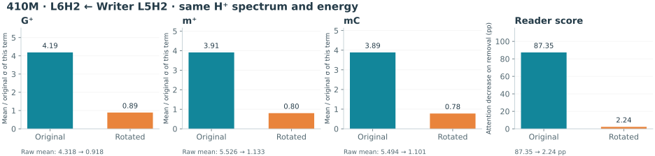
| Term | Before mean | After mean | Before σ | After σ | Before μ/σ | After μ/σ |
|---|---|---|---|---|---|---|
| G⁺ | 4.3185 | 0.9183 | 1.0316 | 0.2898 | 4.1864 | 3.1690 |
| b⁺ | -0.0592 | -0.0138 | 0.5874 | 0.2460 | -0.1008 | -0.0561 |
| T⁺ | 1.1470 | 0.2037 | 0.7993 | 0.4341 | 1.4350 | 0.4693 |
| R⁺ | 0.0014 | -0.0024 | 0.0481 | 0.0223 | 0.0288 | -0.1087 |
| m⁺ | 5.5261 | 1.1334 | 1.4133 | 0.5490 | 3.9100 | 2.0643 |
| GC | 4.2046 | 0.8044 | 1.0468 | 0.3117 | 4.0165 | 2.5803 |
| bC | -0.0571 | -0.0117 | 0.5916 | 0.3158 | -0.0965 | -0.0370 |
| TC | 1.2240 | 0.2807 | 0.8108 | 0.4738 | 1.5096 | 0.5925 |
| RC | 0.0079 | 0.0041 | 0.0926 | 0.0647 | 0.0850 | 0.0628 |
| mC | 5.4935 | 1.1008 | 1.4137 | 0.6011 | 3.8860 | 1.8315 |
L6H3 ← L5H2Reader score: 12.60 → 0.07 pp
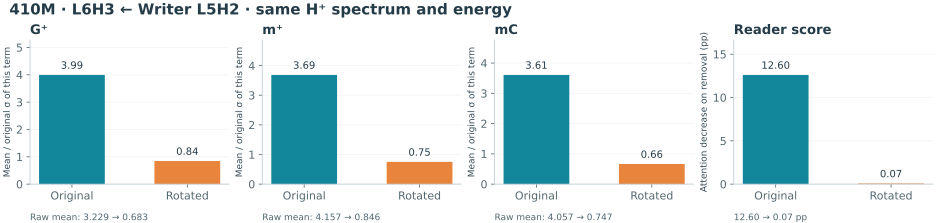
| Term | Before mean | After mean | Before σ | After σ | Before μ/σ | After μ/σ |
|---|---|---|---|---|---|---|
| G⁺ | 3.2294 | 0.6830 | 0.8085 | 0.2181 | 3.9943 | 3.1322 |
| b⁺ | -0.0445 | -0.0104 | 0.4760 | 0.1789 | -0.0935 | -0.0583 |
| T⁺ | 0.8556 | 0.1494 | 0.6268 | 0.3198 | 1.3649 | 0.4673 |
| R⁺ | 0.0270 | 0.0036 | 0.0700 | 0.0229 | 0.3859 | 0.1579 |
| m⁺ | 4.1565 | 0.8465 | 1.1280 | 0.4103 | 3.6850 | 2.0631 |
| GC | 3.0991 | 0.5527 | 0.8147 | 0.2290 | 3.8037 | 2.4138 |
| bC | -0.0401 | -0.0060 | 0.4452 | 0.2372 | -0.0900 | -0.0252 |
| TC | 0.8974 | 0.1913 | 0.6402 | 0.3597 | 1.4019 | 0.5318 |
| RC | 0.0201 | -0.0033 | 0.1482 | 0.1181 | 0.1355 | -0.0281 |
| mC | 4.0567 | 0.7466 | 1.1245 | 0.4798 | 3.6075 | 1.5562 |
L7H1 ← L5H2Reader score: 94.09 → 1.50 pp
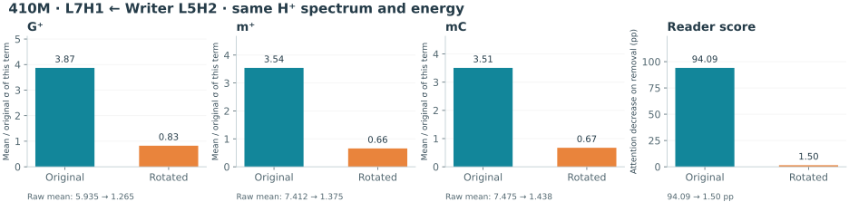
| Term | Before mean | After mean | Before σ | After σ | Before μ/σ | After μ/σ |
|---|---|---|---|---|---|---|
| G⁺ | 5.9355 | 1.2655 | 1.5339 | 0.4141 | 3.8696 | 3.0560 |
| b⁺ | -0.0871 | -0.0191 | 0.8981 | 0.3340 | -0.0970 | -0.0573 |
| T⁺ | 1.3623 | 0.0882 | 1.1932 | 0.6934 | 1.1417 | 0.1272 |
| R⁺ | 0.0270 | 0.0020 | 0.0653 | 0.0326 | 0.4141 | 0.0612 |
| m⁺ | 7.4119 | 1.3749 | 2.0927 | 0.8109 | 3.5417 | 1.6954 |
| GC | 5.7967 | 1.1267 | 1.5476 | 0.4342 | 3.7455 | 2.5948 |
| bC | -0.0801 | -0.0121 | 0.8756 | 0.4175 | -0.0915 | -0.0291 |
| TC | 1.5675 | 0.2934 | 1.2826 | 0.7733 | 1.2222 | 0.3794 |
| RC | 0.0312 | 0.0062 | 0.1318 | 0.1042 | 0.2369 | 0.0594 |
| mC | 7.4755 | 1.4384 | 2.1318 | 0.8962 | 3.5066 | 1.6050 |
L7H7 ← L4H9Reader score: 14.78 → 2.48 pp
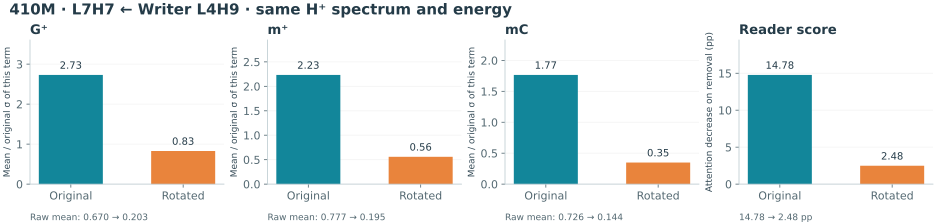
| Term | Before mean | After mean | Before σ | After σ | Before μ/σ | After μ/σ |
|---|---|---|---|---|---|---|
| G⁺ | 0.6697 | 0.2033 | 0.2453 | 0.0642 | 2.7303 | 3.1676 |
| b⁺ | -0.0074 | -0.0030 | 0.1749 | 0.0527 | -0.0425 | -0.0572 |
| T⁺ | 0.0952 | -0.0119 | 0.1933 | 0.1149 | 0.4926 | -0.1037 |
| R⁺ | 0.0045 | 0.0002 | 0.0482 | 0.0219 | 0.0926 | 0.0079 |
| m⁺ | 0.7768 | 0.1945 | 0.3478 | 0.1332 | 2.2333 | 1.4599 |
| GC | 0.5320 | 0.0655 | 0.2393 | 0.0723 | 2.2236 | 0.9065 |
| bC | -0.0070 | -0.0026 | 0.2132 | 0.1142 | -0.0328 | -0.0226 |
| TC | 0.1760 | 0.0689 | 0.2424 | 0.1762 | 0.7261 | 0.3910 |
| RC | 0.0108 | 0.0065 | 0.0935 | 0.0704 | 0.1153 | 0.0921 |
| mC | 0.7258 | 0.1435 | 0.4111 | 0.2146 | 1.7656 | 0.6689 |
L7H7 ← L5H2Reader score: 61.38 → 1.42 pp
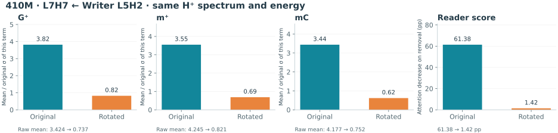
| Term | Before mean | After mean | Before σ | After σ | Before μ/σ | After μ/σ |
|---|---|---|---|---|---|---|
| G⁺ | 3.4245 | 0.7370 | 0.8973 | 0.2270 | 3.8166 | 3.2463 |
| b⁺ | -0.0515 | -0.0111 | 0.5314 | 0.1856 | -0.0970 | -0.0599 |
| T⁺ | 0.7468 | 0.0673 | 0.6768 | 0.3775 | 1.1034 | 0.1783 |
| R⁺ | 0.0222 | 0.0052 | 0.0978 | 0.0362 | 0.2264 | 0.1442 |
| m⁺ | 4.2450 | 0.8206 | 1.1963 | 0.4431 | 3.5484 | 1.8521 |
| GC | 3.2239 | 0.5363 | 0.8947 | 0.2338 | 3.6031 | 2.2940 |
| bC | -0.0476 | -0.0072 | 0.5504 | 0.2877 | -0.0865 | -0.0249 |
| TC | 0.8700 | 0.1905 | 0.7412 | 0.4676 | 1.1737 | 0.4074 |
| RC | 0.0352 | 0.0183 | 0.2013 | 0.1336 | 0.1750 | 0.1369 |
| mC | 4.1767 | 0.7523 | 1.2150 | 0.5350 | 3.4376 | 1.4062 |
L7H7 ← L6H13Reader score: 15.34 → 1.48 pp
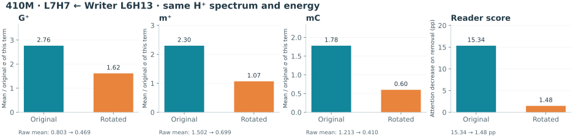
| Term | Before mean | After mean | Before σ | After σ | Before μ/σ | After μ/σ |
|---|---|---|---|---|---|---|
| G⁺ | 0.8026 | 0.4689 | 0.2903 | 0.1419 | 2.7649 | 3.3039 |
| b⁺ | -0.0238 | -0.0071 | 0.2626 | 0.1165 | -0.0906 | -0.0614 |
| T⁺ | 0.6584 | 0.2209 | 0.5538 | 0.3068 | 1.1888 | 0.7202 |
| R⁺ | 0.0175 | 0.0018 | 0.1288 | 0.0515 | 0.1360 | 0.0347 |
| m⁺ | 1.5023 | 0.6988 | 0.6538 | 0.3392 | 2.2977 | 2.0598 |
| GC | 0.5175 | 0.1838 | 0.2718 | 0.1492 | 1.9038 | 1.2323 |
| bC | -0.0134 | 0.0032 | 0.2765 | 0.1646 | -0.0485 | 0.0195 |
| TC | 0.6339 | 0.1964 | 0.5907 | 0.3730 | 1.0731 | 0.5266 |
| RC | 0.0485 | 0.0328 | 0.2338 | 0.1589 | 0.2075 | 0.2063 |
| mC | 1.2134 | 0.4098 | 0.6823 | 0.4209 | 1.7784 | 0.9736 |
L8H3 ← L5H2Reader score: 15.83 → 0.45 pp
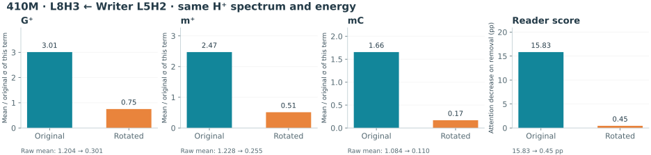
| Term | Before mean | After mean | Before σ | After σ | Before μ/σ | After μ/σ |
|---|---|---|---|---|---|---|
| G⁺ | 1.2036 | 0.3007 | 0.3998 | 0.0923 | 3.0104 | 3.2570 |
| b⁺ | -0.0172 | -0.0046 | 0.2557 | 0.0775 | -0.0671 | -0.0589 |
| T⁺ | 0.0089 | -0.0496 | 0.3603 | 0.1770 | 0.0248 | -0.2802 |
| R⁺ | -0.0015 | -0.0006 | 0.0295 | 0.0331 | -0.0494 | -0.0194 |
| m⁺ | 1.2282 | 0.2550 | 0.4967 | 0.1900 | 2.4725 | 1.3417 |
| GC | 0.9386 | 0.0357 | 0.3856 | 0.1101 | 2.4340 | 0.3244 |
| bC | -0.0164 | -0.0038 | 0.2644 | 0.1655 | -0.0621 | -0.0231 |
| TC | 0.1393 | 0.0808 | 0.5545 | 0.3758 | 0.2513 | 0.2150 |
| RC | -0.0108 | -0.0100 | 0.0701 | 0.0606 | -0.1547 | -0.1654 |
| mC | 1.0835 | 0.1103 | 0.6545 | 0.3903 | 1.6555 | 0.2826 |
L8H6 ← L5H2Reader score: 79.42 → 0.85 pp
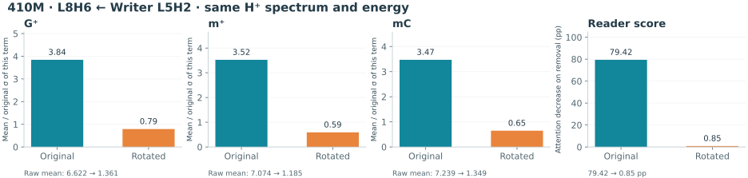
| Term | Before mean | After mean | Before σ | After σ | Before μ/σ | After μ/σ |
|---|---|---|---|---|---|---|
| G⁺ | 6.6224 | 1.3613 | 1.7229 | 0.4449 | 3.8437 | 3.0599 |
| b⁺ | -0.0975 | -0.0206 | 1.0478 | 0.3661 | -0.0930 | -0.0561 |
| T⁺ | 0.3571 | -0.1959 | 1.2196 | 0.7160 | 0.2928 | -0.2737 |
| R⁺ | -0.0029 | -0.0014 | 0.0988 | 0.0518 | -0.0298 | -0.0264 |
| m⁺ | 7.0741 | 1.1846 | 2.0075 | 0.7883 | 3.5238 | 1.5027 |
| GC | 6.4556 | 1.1946 | 1.7416 | 0.4729 | 3.7068 | 2.5262 |
| bC | -0.0918 | -0.0149 | 1.0308 | 0.4372 | -0.0891 | -0.0340 |
| TC | 0.7044 | 0.1514 | 1.3366 | 0.8369 | 0.5270 | 0.1809 |
| RC | -0.0132 | -0.0117 | 0.2354 | 0.1776 | -0.0562 | -0.0656 |
| mC | 7.2386 | 1.3491 | 2.0855 | 0.9711 | 3.4709 | 1.3893 |
L8H6 ← L5H4Reader score: 11.62 → 0.10 pp
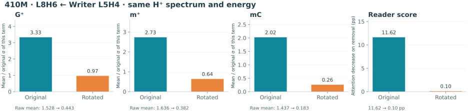
| Term | Before mean | After mean | Before σ | After σ | Before μ/σ | After μ/σ |
|---|---|---|---|---|---|---|
| G⁺ | 1.5283 | 0.4430 | 0.4584 | 0.1464 | 3.3340 | 3.0263 |
| b⁺ | -0.0226 | -0.0068 | 0.3057 | 0.1198 | -0.0740 | -0.0570 |
| T⁺ | 0.0825 | -0.0683 | 0.3413 | 0.2828 | 0.2416 | -0.2413 |
| R⁺ | 0.0026 | 0.0006 | 0.0381 | 0.0195 | 0.0681 | 0.0290 |
| m⁺ | 1.6360 | 0.3821 | 0.5986 | 0.2966 | 2.7332 | 1.2884 |
| GC | 1.2266 | 0.1413 | 0.4634 | 0.1569 | 2.6471 | 0.9001 |
| bC | -0.0180 | -0.0022 | 0.3598 | 0.2295 | -0.0499 | -0.0095 |
| TC | 0.1874 | 0.0367 | 0.4754 | 0.4371 | 0.3943 | 0.0840 |
| RC | 0.0049 | 0.0029 | 0.0704 | 0.0550 | 0.0697 | 0.0523 |
| mC | 1.4369 | 0.1830 | 0.7100 | 0.4733 | 2.0238 | 0.3867 |
L8H7 ← L5H2Reader score: 84.78 → 4.01 pp
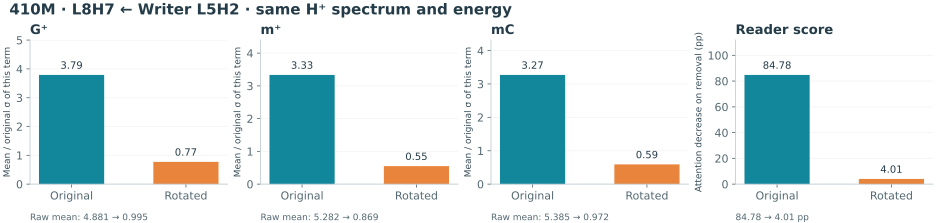
| Term | Before mean | After mean | Before σ | After σ | Before μ/σ | After μ/σ |
|---|---|---|---|---|---|---|
| G⁺ | 4.8808 | 0.9954 | 1.2877 | 0.3319 | 3.7905 | 2.9992 |
| b⁺ | -0.0700 | -0.0150 | 0.8220 | 0.2691 | -0.0852 | -0.0557 |
| T⁺ | 0.3221 | -0.1430 | 0.9137 | 0.5574 | 0.3525 | -0.2565 |
| R⁺ | 0.0093 | 0.0017 | 0.0516 | 0.0485 | 0.1806 | 0.0346 |
| m⁺ | 5.2822 | 0.8691 | 1.5842 | 0.6113 | 3.3344 | 1.4219 |
| GC | 4.6644 | 0.7790 | 1.3028 | 0.3577 | 3.5804 | 2.1777 |
| bC | -0.0642 | -0.0092 | 0.7974 | 0.3555 | -0.0806 | -0.0260 |
| TC | 0.6471 | 0.1820 | 1.0008 | 0.6613 | 0.6466 | 0.2752 |
| RC | 0.0092 | 0.0016 | 0.1079 | 0.0942 | 0.0856 | 0.0169 |
| mC | 5.3850 | 0.9718 | 1.6466 | 0.7489 | 3.2703 | 1.2976 |
L9H4 ← L5H2Reader score: 10.23 → 0.38 pp
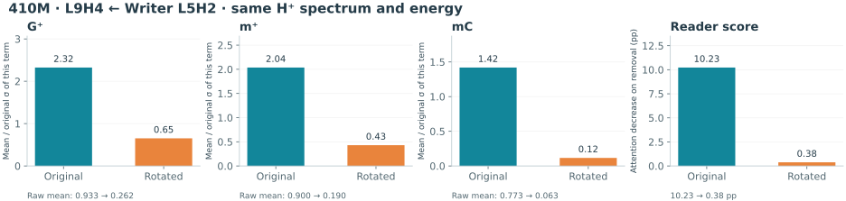
| Term | Before mean | After mean | Before σ | After σ | Before μ/σ | After μ/σ |
|---|---|---|---|---|---|---|
| G⁺ | 0.9331 | 0.2618 | 0.4015 | 0.0849 | 2.3242 | 3.0829 |
| b⁺ | -0.0123 | -0.0040 | 0.2795 | 0.0723 | -0.0439 | -0.0550 |
| T⁺ | -0.0393 | -0.0728 | 0.3139 | 0.2646 | -0.1251 | -0.2753 |
| R⁺ | -0.0062 | -0.0031 | 0.0530 | 0.0304 | -0.1176 | -0.1004 |
| m⁺ | 0.8998 | 0.1899 | 0.4419 | 0.2650 | 2.0364 | 0.7166 |
| GC | 0.6553 | -0.0159 | 0.3920 | 0.1155 | 1.6716 | -0.1378 |
| bC | -0.0123 | -0.0040 | 0.3117 | 0.1827 | -0.0395 | -0.0219 |
| TC | 0.1078 | 0.0742 | 0.4325 | 0.3917 | 0.2493 | 0.1895 |
| RC | -0.0022 | 0.0010 | 0.1300 | 0.0930 | -0.0165 | 0.0111 |
| mC | 0.7733 | 0.0633 | 0.5449 | 0.3851 | 1.4191 | 0.1645 |
L10H0 ← L5H2Reader score: 57.45 → 10.14 pp
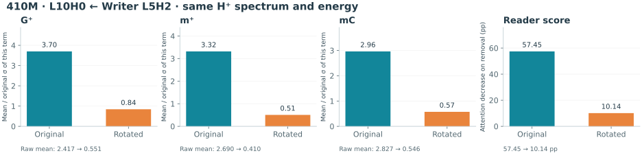
| Term | Before mean | After mean | Before σ | After σ | Before μ/σ | After μ/σ |
|---|---|---|---|---|---|---|
| G⁺ | 2.4170 | 0.5506 | 0.6534 | 0.1753 | 3.6993 | 3.1413 |
| b⁺ | -0.0340 | -0.0084 | 0.4187 | 0.1454 | -0.0812 | -0.0578 |
| T⁺ | 0.2369 | -0.1463 | 0.5553 | 0.3116 | 0.4266 | -0.4695 |
| R⁺ | 0.0023 | -0.0030 | 0.0541 | 0.0342 | 0.0428 | -0.0891 |
| m⁺ | 2.6903 | 0.4097 | 0.8111 | 0.3232 | 3.3167 | 1.2679 |
| GC | 2.1746 | 0.3082 | 0.6411 | 0.1802 | 3.3919 | 1.7106 |
| bC | -0.0317 | -0.0061 | 0.5046 | 0.2765 | -0.0627 | -0.0219 |
| TC | 0.6170 | 0.2339 | 0.7391 | 0.5207 | 0.8349 | 0.4492 |
| RC | 0.0035 | -0.0019 | 0.1224 | 0.0888 | 0.0284 | -0.0213 |
| mC | 2.8268 | 0.5463 | 0.9545 | 0.5161 | 2.9617 | 1.0583 |
L10H0 ← L9H8Reader score: 16.95 → 0.59 pp
| Term | Before mean | After mean | Before σ | After σ | Before μ/σ | After μ/σ |
|---|---|---|---|---|---|---|
| G⁺ | 1.7740 | 0.3422 | 0.4855 | 0.1039 | 3.6539 | 3.2936 |
| b⁺ | -0.0316 | -0.0054 | 0.3313 | 0.0876 | -0.0952 | -0.0615 |
| T⁺ | 0.3758 | 0.1568 | 0.7231 | 0.3884 | 0.5197 | 0.4037 |
| R⁺ | -0.0003 | 0.0031 | 0.0609 | 0.0539 | -0.0055 | 0.0576 |
| m⁺ | 2.1811 | 0.5075 | 0.8683 | 0.3861 | 2.5118 | 1.3145 |
| GC | 1.6345 | 0.2027 | 0.4969 | 0.1304 | 3.2895 | 1.5542 |
| bC | -0.0179 | 0.0083 | 0.3071 | 0.2038 | -0.0582 | 0.0406 |
| TC | 0.4261 | 0.2070 | 0.7443 | 0.4953 | 0.5724 | 0.4179 |
| RC | 0.0084 | 0.0118 | 0.1513 | 0.1362 | 0.0552 | 0.0866 |
| mC | 2.0868 | 0.4133 | 0.8894 | 0.5372 | 2.3462 | 0.7693 |
L10H3 ← L5H2Reader score: 81.00 → 3.45 pp
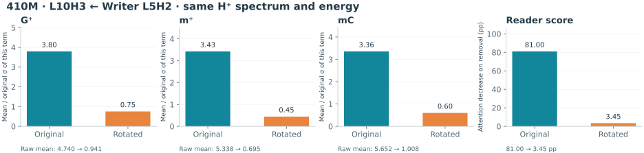
| Term | Before mean | After mean | Before σ | After σ | Before μ/σ | After μ/σ |
|---|---|---|---|---|---|---|
| G⁺ | 4.7397 | 0.9412 | 1.2488 | 0.3165 | 3.7955 | 2.9736 |
| b⁺ | -0.0663 | -0.0142 | 0.7549 | 0.2559 | -0.0878 | -0.0556 |
| T⁺ | 0.5313 | -0.2582 | 0.9714 | 0.5729 | 0.5469 | -0.4506 |
| R⁺ | 0.0009 | -0.0027 | 0.0639 | 0.0459 | 0.0133 | -0.0591 |
| m⁺ | 5.3381 | 0.6945 | 1.5585 | 0.5904 | 3.4252 | 1.1764 |
| GC | 4.5634 | 0.7649 | 1.2579 | 0.3299 | 3.6279 | 2.3188 |
| bC | -0.0637 | -0.0116 | 0.8142 | 0.3696 | -0.0782 | -0.0315 |
| TC | 1.0276 | 0.2381 | 1.0840 | 0.7463 | 0.9480 | 0.3191 |
| RC | -0.0027 | -0.0063 | 0.1328 | 0.0999 | -0.0204 | -0.0628 |
| mC | 5.6520 | 1.0084 | 1.6845 | 0.7767 | 3.3553 | 1.2984 |
L10H3 ← L9H8Reader score: 15.71 → -9.52 pp
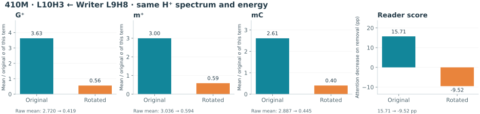
| Term | Before mean | After mean | Before σ | After σ | Before μ/σ | After μ/σ |
|---|---|---|---|---|---|---|
| G⁺ | 2.7198 | 0.4186 | 0.7495 | 0.1337 | 3.6290 | 3.1313 |
| b⁺ | -0.0446 | -0.0066 | 0.4973 | 0.1138 | -0.0897 | -0.0582 |
| T⁺ | 0.2707 | 0.1702 | 0.6773 | 0.4486 | 0.3997 | 0.3794 |
| R⁺ | 0.0005 | -0.0018 | 0.0693 | 0.0509 | 0.0076 | -0.0348 |
| m⁺ | 3.0357 | 0.5936 | 1.0134 | 0.4853 | 2.9957 | 1.2232 |
| GC | 2.5403 | 0.2390 | 0.7873 | 0.1942 | 3.2268 | 1.2310 |
| bC | -0.0186 | 0.0193 | 0.3987 | 0.3616 | -0.0468 | 0.0535 |
| TC | 0.3335 | 0.2329 | 0.7525 | 0.6184 | 0.4431 | 0.3767 |
| RC | -0.0056 | -0.0079 | 0.1573 | 0.1266 | -0.0356 | -0.0623 |
| mC | 2.8868 | 0.4447 | 1.1058 | 0.7935 | 2.6105 | 0.5605 |
L10H4 ← L5H2Reader score: 48.57 → 3.19 pp
| Term | Before mean | After mean | Before σ | After σ | Before μ/σ | After μ/σ |
|---|---|---|---|---|---|---|
| G⁺ | 3.0645 | 0.6290 | 0.8228 | 0.2082 | 3.7243 | 3.0214 |
| b⁺ | -0.0441 | -0.0097 | 0.5170 | 0.1680 | -0.0852 | -0.0577 |
| T⁺ | 0.3686 | -0.1622 | 0.6790 | 0.4362 | 0.5428 | -0.3717 |
| R⁺ | 0.0018 | -0.0002 | 0.0537 | 0.0471 | 0.0334 | -0.0038 |
| m⁺ | 3.4790 | 0.4764 | 1.0227 | 0.4558 | 3.4017 | 1.0451 |
| GC | 2.9186 | 0.4831 | 0.8248 | 0.2153 | 3.5387 | 2.2440 |
| bC | -0.0418 | -0.0075 | 0.5790 | 0.2497 | -0.0723 | -0.0300 |
| TC | 0.7727 | 0.2419 | 0.8190 | 0.5863 | 0.9435 | 0.4127 |
| RC | -0.0019 | -0.0039 | 0.1219 | 0.0976 | -0.0159 | -0.0401 |
| mC | 3.7312 | 0.7286 | 1.1347 | 0.5842 | 3.2882 | 1.2471 |
L10H4 ← L9H8Reader score: 18.16 → -2.94 pp
| Term | Before mean | After mean | Before σ | After σ | Before μ/σ | After μ/σ |
|---|---|---|---|---|---|---|
| G⁺ | 1.9422 | 0.3184 | 0.5287 | 0.1018 | 3.6734 | 3.1259 |
| b⁺ | -0.0318 | -0.0051 | 0.3506 | 0.0880 | -0.0907 | -0.0575 |
| T⁺ | 0.2569 | 0.1448 | 0.5076 | 0.3315 | 0.5062 | 0.4368 |
| R⁺ | -0.0085 | -0.0051 | 0.0587 | 0.0389 | -0.1447 | -0.1321 |
| m⁺ | 2.2224 | 0.4631 | 0.7327 | 0.3491 | 3.0330 | 1.3265 |
| GC | 1.8149 | 0.1911 | 0.5425 | 0.1242 | 3.3455 | 1.5391 |
| bC | -0.0185 | 0.0082 | 0.2770 | 0.2053 | -0.0668 | 0.0401 |
| TC | 0.3277 | 0.2155 | 0.5502 | 0.4157 | 0.5955 | 0.5185 |
| RC | -0.0141 | -0.0108 | 0.1466 | 0.1091 | -0.0962 | -0.0985 |
| mC | 2.1470 | 0.3877 | 0.7678 | 0.4756 | 2.7964 | 0.8151 |
L10H9 ← L5H2Reader score: 68.35 → 9.61 pp
| Term | Before mean | After mean | Before σ | After σ | Before μ/σ | After μ/σ |
|---|---|---|---|---|---|---|
| G⁺ | 2.9987 | 0.7001 | 0.8216 | 0.2253 | 3.6499 | 3.1075 |
| b⁺ | -0.0414 | -0.0105 | 0.5353 | 0.1818 | -0.0774 | -0.0580 |
| T⁺ | 0.4128 | -0.1840 | 0.7413 | 0.4324 | 0.5569 | -0.4256 |
| R⁺ | 0.0014 | 0.0006 | 0.0894 | 0.0657 | 0.0160 | 0.0095 |
| m⁺ | 3.4545 | 0.5272 | 1.1213 | 0.4409 | 3.0807 | 1.1959 |
| GC | 2.6714 | 0.3728 | 0.8264 | 0.2441 | 3.2325 | 1.5270 |
| bC | -0.0379 | -0.0070 | 0.5714 | 0.3114 | -0.0664 | -0.0226 |
| TC | 0.8315 | 0.2347 | 0.9653 | 0.6341 | 0.8614 | 0.3701 |
| RC | 0.0058 | 0.0050 | 0.2139 | 0.1550 | 0.0270 | 0.0321 |
| mC | 3.5467 | 0.6194 | 1.2550 | 0.6402 | 2.8260 | 0.9676 |
L10H9 ← L9H8Reader score: 20.01 → -1.28 pp
| Term | Before mean | After mean | Before σ | After σ | Before μ/σ | After μ/σ |
|---|---|---|---|---|---|---|
| G⁺ | 2.3549 | 0.4275 | 0.6732 | 0.1338 | 3.4980 | 3.1949 |
| b⁺ | -0.0413 | -0.0067 | 0.4853 | 0.1108 | -0.0851 | -0.0601 |
| T⁺ | 0.3678 | 0.1776 | 0.8922 | 0.5880 | 0.4123 | 0.3020 |
| R⁺ | 0.0019 | 0.0097 | 0.0769 | 0.0703 | 0.0251 | 0.1385 |
| m⁺ | 2.7660 | 0.6215 | 1.1242 | 0.5789 | 2.4605 | 1.0735 |
| GC | 2.1575 | 0.2300 | 0.6959 | 0.1789 | 3.1003 | 1.2856 |
| bC | -0.0207 | 0.0140 | 0.3982 | 0.3334 | -0.0519 | 0.0419 |
| TC | 0.4300 | 0.2398 | 0.9028 | 0.6558 | 0.4763 | 0.3657 |
| RC | 0.0239 | 0.0317 | 0.1709 | 0.1465 | 0.1401 | 0.2166 |
| mC | 2.6321 | 0.4876 | 1.1134 | 0.6951 | 2.3641 | 0.7015 |
L10H13 ← L5H2Reader score: 25.92 → 3.49 pp
| Term | Before mean | After mean | Before σ | After σ | Before μ/σ | After μ/σ |
|---|---|---|---|---|---|---|
| G⁺ | 1.3525 | 0.3584 | 0.4590 | 0.1140 | 2.9465 | 3.1449 |
| b⁺ | -0.0187 | -0.0055 | 0.2754 | 0.0938 | -0.0680 | -0.0582 |
| T⁺ | 0.0460 | -0.1090 | 0.4326 | 0.3370 | 0.1064 | -0.3233 |
| R⁺ | 0.0019 | -0.0006 | 0.0367 | 0.0415 | 0.0508 | -0.0139 |
| m⁺ | 1.4192 | 0.2543 | 0.5946 | 0.3296 | 2.3869 | 0.7716 |
| GC | 1.0229 | 0.0288 | 0.4400 | 0.1355 | 2.3250 | 0.2124 |
| bC | -0.0181 | -0.0048 | 0.3665 | 0.2371 | -0.0493 | -0.0203 |
| TC | 0.3403 | 0.1853 | 0.6514 | 0.5430 | 0.5224 | 0.3412 |
| RC | 0.0038 | 0.0013 | 0.0880 | 0.0758 | 0.0429 | 0.0176 |
| mC | 1.3850 | 0.2202 | 0.7639 | 0.5000 | 1.8131 | 0.4404 |
L10H13 ← L9H8Reader score: 12.61 → 1.12 pp
| Term | Before mean | After mean | Before σ | After σ | Before μ/σ | After μ/σ |
|---|---|---|---|---|---|---|
| G⁺ | 1.0305 | 0.3065 | 0.3401 | 0.0946 | 3.0298 | 3.2412 |
| b⁺ | -0.0252 | -0.0049 | 0.2814 | 0.0801 | -0.0896 | -0.0608 |
| T⁺ | 0.3215 | 0.1276 | 0.9458 | 0.6617 | 0.3399 | 0.1929 |
| R⁺ | 0.0009 | 0.0018 | 0.0694 | 0.0824 | 0.0136 | 0.0215 |
| m⁺ | 1.3782 | 0.4408 | 1.0263 | 0.6197 | 1.3428 | 0.7112 |
| GC | 0.8443 | 0.1202 | 0.3281 | 0.1115 | 2.5731 | 1.0782 |
| bC | -0.0141 | 0.0062 | 0.2895 | 0.1892 | -0.0489 | 0.0328 |
| TC | 0.3503 | 0.1564 | 0.8584 | 0.5943 | 0.4081 | 0.2632 |
| RC | -0.0168 | -0.0160 | 0.1502 | 0.1495 | -0.1121 | -0.1071 |
| mC | 1.1919 | 0.2544 | 0.9416 | 0.5758 | 1.2658 | 0.4419 |
L11H1 ← L5H2Reader score: 21.63 → 1.98 pp
| Term | Before mean | After mean | Before σ | After σ | Before μ/σ | After μ/σ |
|---|---|---|---|---|---|---|
| G⁺ | 1.0845 | 0.3317 | 0.3694 | 0.1018 | 2.9357 | 3.2577 |
| b⁺ | -0.0145 | -0.0050 | 0.2658 | 0.0840 | -0.0545 | -0.0597 |
| T⁺ | 0.0064 | -0.1290 | 0.3916 | 0.2678 | 0.0163 | -0.4817 |
| R⁺ | -0.0010 | 0.0009 | 0.0394 | 0.0325 | -0.0259 | 0.0264 |
| m⁺ | 1.1043 | 0.2086 | 0.4661 | 0.2751 | 2.3695 | 0.7580 |
| GC | 0.7559 | 0.0032 | 0.3506 | 0.1291 | 2.1560 | 0.0245 |
| bC | -0.0136 | -0.0041 | 0.3656 | 0.2230 | -0.0371 | -0.0184 |
| TC | 0.2743 | 0.1389 | 0.5943 | 0.4423 | 0.4615 | 0.3140 |
| RC | -0.0015 | 0.0004 | 0.1082 | 0.0854 | -0.0141 | 0.0042 |
| mC | 1.0422 | 0.1465 | 0.6568 | 0.4559 | 1.5868 | 0.3213 |
L11H1 ← L6H13Reader score: 12.37 → 4.63 pp
| Term | Before mean | After mean | Before σ | After σ | Before μ/σ | After μ/σ |
|---|---|---|---|---|---|---|
| G⁺ | 0.7035 | 0.6936 | 0.2953 | 0.2041 | 2.3825 | 3.3990 |
| b⁺ | -0.0256 | -0.0107 | 0.2761 | 0.1710 | -0.0927 | -0.0625 |
| T⁺ | 0.4963 | -0.0912 | 0.7037 | 0.5193 | 0.7053 | -0.1757 |
| R⁺ | -0.0005 | 0.0006 | 0.0589 | 0.0545 | -0.0078 | 0.0104 |
| m⁺ | 1.2250 | 0.6136 | 0.6921 | 0.5026 | 1.7699 | 1.2209 |
| GC | 0.4207 | 0.4107 | 0.2646 | 0.2070 | 1.5897 | 1.9839 |
| bC | -0.0195 | -0.0046 | 0.3061 | 0.2161 | -0.0637 | -0.0213 |
| TC | 0.7938 | 0.2063 | 0.9529 | 0.7359 | 0.8330 | 0.2803 |
| RC | 0.0023 | 0.0033 | 0.1304 | 0.1154 | 0.0173 | 0.0284 |
| mC | 1.2362 | 0.6249 | 0.9422 | 0.7190 | 1.3121 | 0.8690 |
L11H1 ← L9H8Reader score: 13.66 → -0.54 pp
| Term | Before mean | After mean | Before σ | After σ | Before μ/σ | After μ/σ |
|---|---|---|---|---|---|---|
| G⁺ | 0.8114 | 0.2596 | 0.2835 | 0.0826 | 2.8618 | 3.1448 |
| b⁺ | -0.0212 | -0.0041 | 0.2225 | 0.0683 | -0.0954 | -0.0599 |
| T⁺ | 0.3422 | 0.0779 | 0.7949 | 0.4683 | 0.4305 | 0.1664 |
| R⁺ | -0.0023 | 0.0041 | 0.0530 | 0.0373 | -0.0442 | 0.1109 |
| m⁺ | 1.1725 | 0.3458 | 0.8523 | 0.4619 | 1.3756 | 0.7485 |
| GC | 0.6436 | 0.0918 | 0.2689 | 0.0897 | 2.3937 | 1.0240 |
| bC | -0.0134 | 0.0038 | 0.2252 | 0.1477 | -0.0594 | 0.0254 |
| TC | 0.4108 | 0.1466 | 0.7118 | 0.4371 | 0.5772 | 0.3352 |
| RC | 0.0049 | 0.0114 | 0.1296 | 0.1206 | 0.0376 | 0.0942 |
| mC | 1.0727 | 0.2460 | 0.7387 | 0.4448 | 1.4522 | 0.5530 |
L11H1 ← L10H11Reader score: 35.30 → 1.91 pp
| Term | Before mean | After mean | Before σ | After σ | Before μ/σ | After μ/σ |
|---|---|---|---|---|---|---|
| G⁺ | 1.0370 | 0.7991 | 0.3954 | 0.2258 | 2.6229 | 3.5386 |
| b⁺ | -0.0412 | -0.0124 | 0.3785 | 0.1866 | -0.1088 | -0.0662 |
| T⁺ | 1.3905 | 0.2696 | 2.0568 | 1.4518 | 0.6760 | 0.1857 |
| R⁺ | 0.0123 | 0.0024 | 0.1257 | 0.0631 | 0.0980 | 0.0380 |
| m⁺ | 2.4810 | 1.0834 | 2.0106 | 1.4387 | 1.2340 | 0.7531 |
| GC | 0.9266 | 0.6887 | 0.3700 | 0.2695 | 2.5047 | 2.5554 |
| bC | -0.0231 | 0.0057 | 0.3199 | 0.2580 | -0.0724 | 0.0220 |
| TC | 1.4875 | 0.3665 | 1.6167 | 1.0210 | 0.9201 | 0.3590 |
| RC | 0.0409 | 0.0310 | 0.2962 | 0.2223 | 0.1381 | 0.1394 |
| mC | 2.4782 | 1.0805 | 1.4806 | 0.9612 | 1.6737 | 1.1242 |
L11H2 ← L5H2Reader score: 79.19 → 22.26 pp
| Term | Before mean | After mean | Before σ | After σ | Before μ/σ | After μ/σ |
|---|---|---|---|---|---|---|
| G⁺ | 4.0641 | 0.8507 | 1.1423 | 0.2774 | 3.5577 | 3.0668 |
| b⁺ | -0.0587 | -0.0129 | 0.7031 | 0.2283 | -0.0835 | -0.0564 |
| T⁺ | 0.4603 | -0.2957 | 1.0537 | 0.5684 | 0.4368 | -0.5202 |
| R⁺ | 0.0021 | 0.0009 | 0.0877 | 0.0463 | 0.0244 | 0.0203 |
| m⁺ | 4.5852 | 0.5688 | 1.4626 | 0.5723 | 3.1350 | 0.9939 |
| GC | 3.7480 | 0.5347 | 1.1360 | 0.2884 | 3.2992 | 1.8543 |
| bC | -0.0562 | -0.0103 | 0.8251 | 0.3840 | -0.0681 | -0.0269 |
| TC | 1.2095 | 0.4535 | 1.3643 | 0.8755 | 0.8866 | 0.5180 |
| RC | -0.0020 | -0.0032 | 0.1935 | 0.1343 | -0.0103 | -0.0237 |
| mC | 5.0117 | 0.9954 | 1.7297 | 0.8651 | 2.8974 | 1.1505 |
L11H2 ← L9H8Reader score: 10.85 → 0.87 pp
| Term | Before mean | After mean | Before σ | After σ | Before μ/σ | After μ/σ |
|---|---|---|---|---|---|---|
| G⁺ | 2.7118 | 0.4835 | 0.7764 | 0.1484 | 3.4926 | 3.2571 |
| b⁺ | -0.0462 | -0.0076 | 0.4965 | 0.1265 | -0.0930 | -0.0601 |
| T⁺ | 0.6161 | 0.1874 | 0.9547 | 0.5054 | 0.6453 | 0.3708 |
| R⁺ | -0.0086 | -0.0073 | 0.0993 | 0.0936 | -0.0870 | -0.0775 |
| m⁺ | 3.3654 | 0.6712 | 1.2359 | 0.5214 | 2.7231 | 1.2874 |
| GC | 2.5213 | 0.2930 | 0.7924 | 0.1883 | 3.1818 | 1.5561 |
| bC | -0.0279 | 0.0107 | 0.4653 | 0.3132 | -0.0599 | 0.0341 |
| TC | 0.8316 | 0.4029 | 1.0449 | 0.7640 | 0.7959 | 0.5273 |
| RC | -0.0189 | -0.0175 | 0.2653 | 0.2229 | -0.0714 | -0.0787 |
| mC | 3.3619 | 0.6677 | 1.3008 | 0.7788 | 2.5845 | 0.8574 |
L11H2 ← L10H11Reader score: 17.50 → 4.40 pp
| Term | Before mean | After mean | Before σ | After σ | Before μ/σ | After μ/σ |
|---|---|---|---|---|---|---|
| G⁺ | 1.7081 | 0.7218 | 0.5515 | 0.2096 | 3.0970 | 3.4435 |
| b⁺ | -0.0431 | -0.0115 | 0.4046 | 0.1781 | -0.1065 | -0.0645 |
| T⁺ | 1.6715 | 0.4039 | 1.7770 | 1.0539 | 0.9406 | 0.3832 |
| R⁺ | -0.0125 | -0.0119 | 0.1191 | 0.0958 | -0.1052 | -0.1242 |
| m⁺ | 3.4101 | 1.1253 | 1.8842 | 1.0975 | 1.8098 | 1.0253 |
| GC | 1.3691 | 0.3828 | 0.5352 | 0.2716 | 2.5581 | 1.4091 |
| bC | -0.0122 | 0.0194 | 0.3976 | 0.3510 | -0.0308 | 0.0552 |
| TC | 1.9495 | 0.6819 | 1.4757 | 0.9171 | 1.3211 | 0.7435 |
| RC | -0.0032 | -0.0026 | 0.2527 | 0.2133 | -0.0126 | -0.0120 |
| mC | 3.3276 | 1.0427 | 1.5689 | 0.9515 | 2.1209 | 1.0959 |
L11H14 ← L5H2Reader score: 75.09 → 19.34 pp
| Term | Before mean | After mean | Before σ | After σ | Before μ/σ | After μ/σ |
|---|---|---|---|---|---|---|
| G⁺ | 3.4833 | 0.7979 | 0.9261 | 0.2628 | 3.7610 | 3.0361 |
| b⁺ | -0.0478 | -0.0120 | 0.5920 | 0.2164 | -0.0808 | -0.0555 |
| T⁺ | 0.4984 | -0.2580 | 0.9350 | 0.5392 | 0.5330 | -0.4784 |
| R⁺ | -0.0017 | 0.0001 | 0.0572 | 0.0469 | -0.0304 | 0.0014 |
| m⁺ | 4.0278 | 0.5520 | 1.2990 | 0.5564 | 3.1007 | 0.9922 |
| GC | 3.1462 | 0.4608 | 0.9229 | 0.2781 | 3.4090 | 1.6568 |
| bC | -0.0450 | -0.0091 | 0.6619 | 0.3497 | -0.0679 | -0.0261 |
| TC | 1.1483 | 0.3919 | 1.2785 | 0.8337 | 0.8982 | 0.4701 |
| RC | -0.0038 | -0.0020 | 0.1329 | 0.1008 | -0.0283 | -0.0194 |
| mC | 4.3357 | 0.8599 | 1.5392 | 0.8255 | 2.8168 | 1.0417 |
L11H14 ← L9H8Reader score: 10.78 → -0.80 pp
| Term | Before mean | After mean | Before σ | After σ | Before μ/σ | After μ/σ |
|---|---|---|---|---|---|---|
| G⁺ | 2.6262 | 0.4462 | 0.7617 | 0.1433 | 3.4478 | 3.1131 |
| b⁺ | -0.0430 | -0.0069 | 0.5059 | 0.1195 | -0.0849 | -0.0579 |
| T⁺ | 0.4954 | 0.1659 | 0.7665 | 0.3822 | 0.6464 | 0.4341 |
| R⁺ | 0.0003 | -0.0078 | 0.0518 | 0.0686 | 0.0057 | -0.1144 |
| m⁺ | 3.1649 | 0.6112 | 1.0854 | 0.4254 | 2.9160 | 1.4368 |
| GC | 2.4511 | 0.2711 | 0.7873 | 0.1916 | 3.1133 | 1.4154 |
| bC | -0.0232 | 0.0129 | 0.4077 | 0.3514 | -0.0568 | 0.0366 |
| TC | 0.6522 | 0.3226 | 0.9924 | 0.7352 | 0.6572 | 0.4389 |
| RC | 0.0091 | 0.0009 | 0.1557 | 0.1259 | 0.0581 | 0.0072 |
| mC | 3.1355 | 0.5818 | 1.2922 | 0.8690 | 2.4266 | 0.6695 |
L11H14 ← L10H11Reader score: 10.91 → 1.63 pp
| Term | Before mean | After mean | Before σ | After σ | Before μ/σ | After μ/σ |
|---|---|---|---|---|---|---|
| G⁺ | 1.2870 | 0.6165 | 0.3768 | 0.1843 | 3.4156 | 3.3443 |
| b⁺ | -0.0298 | -0.0096 | 0.3441 | 0.1591 | -0.0866 | -0.0604 |
| T⁺ | 1.4883 | 0.3278 | 1.2926 | 0.7398 | 1.1514 | 0.4431 |
| R⁺ | -0.0101 | 0.0015 | 0.1413 | 0.0551 | -0.0717 | 0.0267 |
| m⁺ | 2.7950 | 0.9553 | 1.4044 | 0.7554 | 1.9902 | 1.2646 |
| GC | 0.9682 | 0.2977 | 0.3897 | 0.2589 | 2.4845 | 1.1498 |
| bC | 0.0025 | 0.0227 | 0.3603 | 0.3208 | 0.0070 | 0.0708 |
| TC | 1.7081 | 0.5476 | 1.2198 | 1.0024 | 1.4003 | 0.5463 |
| RC | -0.0002 | 0.0114 | 0.2010 | 0.1274 | -0.0008 | 0.0898 |
| mC | 2.6737 | 0.8340 | 1.2393 | 1.0757 | 2.1574 | 0.7753 |
L12H4 ← L5H2Reader score: 35.01 → 5.44 pp
| Term | Before mean | After mean | Before σ | After σ | Before μ/σ | After μ/σ |
|---|---|---|---|---|---|---|
| G⁺ | 2.1235 | 0.5253 | 0.5792 | 0.1683 | 3.6665 | 3.1212 |
| b⁺ | -0.0295 | -0.0080 | 0.4025 | 0.1338 | -0.0734 | -0.0599 |
| T⁺ | -0.3019 | -0.3010 | 0.5964 | 0.3846 | -0.5062 | -0.7827 |
| R⁺ | -0.0014 | -0.0001 | 0.0782 | 0.0505 | -0.0173 | -0.0024 |
| m⁺ | 1.8497 | 0.2322 | 0.7155 | 0.3726 | 2.5852 | 0.6232 |
| GC | 1.7735 | 0.1753 | 0.5639 | 0.1836 | 3.1452 | 0.9546 |
| bC | -0.0285 | -0.0070 | 0.5056 | 0.3029 | -0.0564 | -0.0232 |
| TC | 0.2275 | 0.2284 | 0.8609 | 0.6382 | 0.2643 | 0.3579 |
| RC | -0.0082 | -0.0069 | 0.1995 | 0.1471 | -0.0410 | -0.0472 |
| mC | 2.0213 | 0.4038 | 0.9154 | 0.5844 | 2.2081 | 0.6909 |
L12H4 ← L9H8Reader score: 20.64 → 2.63 pp
| Term | Before mean | After mean | Before σ | After σ | Before μ/σ | After μ/σ |
|---|---|---|---|---|---|---|
| G⁺ | 2.0378 | 0.4207 | 0.5840 | 0.1288 | 3.4894 | 3.2667 |
| b⁺ | -0.0357 | -0.0066 | 0.3984 | 0.1077 | -0.0897 | -0.0608 |
| T⁺ | -0.0720 | -0.0100 | 1.1113 | 0.6623 | -0.0648 | -0.0150 |
| R⁺ | 0.0021 | -0.0062 | 0.1173 | 0.0780 | 0.0179 | -0.0793 |
| m⁺ | 2.0037 | 0.4111 | 1.1628 | 0.6601 | 1.7231 | 0.6228 |
| GC | 1.8466 | 0.2295 | 0.5869 | 0.1458 | 3.1464 | 1.5739 |
| bC | -0.0227 | 0.0064 | 0.3824 | 0.2427 | -0.0595 | 0.0266 |
| TC | 0.2042 | 0.2662 | 1.1675 | 0.7626 | 0.1749 | 0.3491 |
| RC | 0.0180 | 0.0097 | 0.2793 | 0.2200 | 0.0645 | 0.0443 |
| mC | 2.0916 | 0.4990 | 1.1481 | 0.7137 | 1.8218 | 0.6992 |
L12H4 ← L10H11Reader score: 20.88 → 4.92 pp
| Term | Before mean | After mean | Before σ | After σ | Before μ/σ | After μ/σ |
|---|---|---|---|---|---|---|
| G⁺ | 1.0077 | 0.4495 | 0.3398 | 0.1380 | 2.9658 | 3.2581 |
| b⁺ | -0.0275 | -0.0071 | 0.2821 | 0.1167 | -0.0974 | -0.0607 |
| T⁺ | 0.3911 | 0.0054 | 1.5333 | 0.9982 | 0.2551 | 0.0054 |
| R⁺ | 0.0103 | 0.0042 | 0.1292 | 0.1163 | 0.0798 | 0.0365 |
| m⁺ | 1.4366 | 0.4662 | 1.5147 | 0.9393 | 0.9484 | 0.4964 |
| GC | 0.7779 | 0.2196 | 0.3267 | 0.1716 | 2.3812 | 1.2797 |
| bC | -0.0079 | 0.0125 | 0.3102 | 0.2194 | -0.0255 | 0.0569 |
| TC | 0.6617 | 0.2760 | 1.3289 | 0.8500 | 0.4979 | 0.3247 |
| RC | 0.0278 | 0.0217 | 0.2865 | 0.2383 | 0.0970 | 0.0911 |
| mC | 1.4753 | 0.5049 | 1.2808 | 0.8004 | 1.1518 | 0.6307 |
L12H8 ← L5H2Reader score: 16.14 → 3.08 pp
| Term | Before mean | After mean | Before σ | After σ | Before μ/σ | After μ/σ |
|---|---|---|---|---|---|---|
| G⁺ | 1.2857 | 0.3226 | 0.3579 | 0.1027 | 3.5922 | 3.1401 |
| b⁺ | -0.0183 | -0.0049 | 0.2446 | 0.0839 | -0.0750 | -0.0578 |
| T⁺ | -0.2103 | -0.1800 | 0.3735 | 0.2334 | -0.5629 | -0.7711 |
| R⁺ | -0.0055 | -0.0017 | 0.0516 | 0.0578 | -0.1064 | -0.0295 |
| m⁺ | 1.0883 | 0.1457 | 0.4536 | 0.2294 | 2.3990 | 0.6352 |
| GC | 1.0033 | 0.0402 | 0.3460 | 0.1199 | 2.9000 | 0.3351 |
| bC | -0.0169 | -0.0034 | 0.3436 | 0.2211 | -0.0491 | -0.0152 |
| TC | 0.1242 | 0.1545 | 0.5571 | 0.4149 | 0.2230 | 0.3724 |
| RC | -0.0023 | 0.0015 | 0.1439 | 0.1169 | -0.0160 | 0.0126 |
| mC | 1.1421 | 0.1995 | 0.6169 | 0.3958 | 1.8512 | 0.5041 |
L16H3 ← L5H2Reader score: 10.86 → 4.42 pp
| Term | Before mean | After mean | Before σ | After σ | Before μ/σ | After μ/σ |
|---|---|---|---|---|---|---|
| G⁺ | 0.6443 | 0.1961 | 0.1901 | 0.0615 | 3.3885 | 3.1891 |
| b⁺ | -0.0102 | -0.0030 | 0.1508 | 0.0508 | -0.0674 | -0.0593 |
| T⁺ | -0.2398 | -0.1397 | 0.3467 | 0.2695 | -0.6918 | -0.5184 |
| R⁺ | -0.0047 | -0.0010 | 0.0521 | 0.0477 | -0.0902 | -0.0218 |
| m⁺ | 0.4100 | 0.0584 | 0.2960 | 0.2519 | 1.3848 | 0.2317 |
| GC | 0.3490 | -0.0993 | 0.1734 | 0.0945 | 2.0120 | -1.0502 |
| bC | -0.0075 | -0.0003 | 0.2659 | 0.1913 | -0.0281 | -0.0017 |
| TC | 0.1385 | 0.2387 | 0.7182 | 0.5793 | 0.1929 | 0.4120 |
| RC | -0.0114 | -0.0078 | 0.1739 | 0.1426 | -0.0658 | -0.0546 |
| mC | 0.4835 | 0.1319 | 0.5836 | 0.4647 | 0.8285 | 0.2839 |
L4H1 ← L3H5Reader score: 76.28 → 7.02 pp
| Term | Before mean | After mean | Before σ | After σ | Before μ/σ | After μ/σ |
|---|---|---|---|---|---|---|
| G⁺ | 5.4031 | 1.5573 | 1.1024 | 0.3833 | 4.9011 | 4.0623 |
| b⁺ | -0.0753 | -0.0240 | 0.8947 | 0.3498 | -0.0841 | -0.0686 |
| T⁺ | 0.7811 | 0.1940 | 1.0055 | 0.4965 | 0.7768 | 0.3906 |
| R⁺ | 0.0366 | 0.0059 | 0.1081 | 0.0554 | 0.3381 | 0.1056 |
| m⁺ | 6.2960 | 1.7811 | 1.5982 | 0.6546 | 3.9395 | 2.7209 |
| GC | 4.8624 | 1.0166 | 1.1294 | 0.4388 | 4.3054 | 2.3166 |
| bC | -0.0613 | -0.0100 | 0.8459 | 0.5910 | -0.0724 | -0.0169 |
| TC | 0.9079 | 0.3208 | 1.0358 | 0.6244 | 0.8765 | 0.5138 |
| RC | 0.0549 | 0.0242 | 0.2189 | 0.1695 | 0.2508 | 0.1427 |
| mC | 5.8865 | 1.3716 | 1.5712 | 0.8031 | 3.7466 | 1.7079 |
L4H4 ← L3H5Reader score: 77.35 → 15.44 pp
| Term | Before mean | After mean | Before σ | After σ | Before μ/σ | After μ/σ |
|---|---|---|---|---|---|---|
| G⁺ | 5.9452 | 1.9453 | 1.1734 | 0.4697 | 5.0665 | 4.1413 |
| b⁺ | -0.0821 | -0.0297 | 0.8692 | 0.4294 | -0.0944 | -0.0691 |
| T⁺ | 1.2309 | 0.2424 | 1.2443 | 0.6117 | 0.9892 | 0.3963 |
| R⁺ | 0.0001 | -0.0001 | 0.1177 | 0.0414 | 0.0008 | -0.0025 |
| m⁺ | 7.2582 | 2.2173 | 1.7542 | 0.7944 | 4.1376 | 2.7913 |
| GC | 5.4862 | 1.4863 | 1.1880 | 0.5019 | 4.6181 | 2.9614 |
| bC | -0.0747 | -0.0223 | 0.7929 | 0.5205 | -0.0943 | -0.0429 |
| TC | 1.4934 | 0.5049 | 1.3502 | 0.7816 | 1.1060 | 0.6461 |
| RC | 0.0103 | 0.0101 | 0.2548 | 0.1699 | 0.0404 | 0.0595 |
| mC | 7.0646 | 2.0237 | 1.7950 | 0.9377 | 3.9357 | 2.1581 |
L4H5 ← L3H5Reader score: 37.06 → 2.19 pp
| Term | Before mean | After mean | Before σ | After σ | Before μ/σ | After μ/σ |
|---|---|---|---|---|---|---|
| G⁺ | 3.4647 | 1.1836 | 0.7274 | 0.2821 | 4.7631 | 4.1962 |
| b⁺ | -0.0523 | -0.0183 | 0.5458 | 0.2637 | -0.0959 | -0.0695 |
| T⁺ | 0.6626 | 0.1543 | 0.7513 | 0.3919 | 0.8819 | 0.3937 |
| R⁺ | 0.0873 | 0.0179 | 0.1697 | 0.0598 | 0.5144 | 0.2984 |
| m⁺ | 4.2669 | 1.3741 | 1.0826 | 0.5148 | 3.9414 | 2.6690 |
| GC | 2.9454 | 0.6643 | 0.7030 | 0.2854 | 4.1899 | 2.3276 |
| bC | -0.0438 | -0.0098 | 0.5005 | 0.3718 | -0.0875 | -0.0263 |
| TC | 0.7403 | 0.2320 | 0.7926 | 0.4788 | 0.9340 | 0.4846 |
| RC | 0.0936 | 0.0242 | 0.2937 | 0.1877 | 0.3186 | 0.1287 |
| mC | 3.8231 | 0.9303 | 1.0796 | 0.5898 | 3.5412 | 1.5772 |
L5H6 ← L1H0Reader score: 14.09 → 6.32 pp
| Term | Before mean | After mean | Before σ | After σ | Before μ/σ | After μ/σ |
|---|---|---|---|---|---|---|
| G⁺ | 1.8753 | 0.8383 | 0.4927 | 0.1947 | 3.8061 | 4.3062 |
| b⁺ | -0.0189 | -0.0126 | 0.3667 | 0.1713 | -0.0514 | -0.0737 |
| T⁺ | -0.7163 | -0.4318 | 0.3748 | 0.3904 | -1.9109 | -1.1061 |
| R⁺ | -0.0004 | -0.0002 | 0.0421 | 0.0380 | -0.0105 | -0.0040 |
| m⁺ | 1.1775 | 0.4189 | 0.4537 | 0.3600 | 2.5950 | 1.1638 |
| GC | 1.2733 | 0.2363 | 0.4675 | 0.1908 | 2.7237 | 1.2384 |
| bC | -0.0118 | -0.0055 | 0.4135 | 0.2804 | -0.0285 | -0.0198 |
| TC | -0.1452 | 0.1392 | 0.4436 | 0.5057 | -0.3274 | 0.2752 |
| RC | -0.0053 | -0.0050 | 0.1019 | 0.0785 | -0.0517 | -0.0635 |
| mC | 1.1346 | 0.3760 | 0.6416 | 0.5021 | 1.7684 | 0.7489 |
L5H6 ← L3H5Reader score: 67.62 → 6.06 pp
| Term | Before mean | After mean | Before σ | After σ | Before μ/σ | After μ/σ |
|---|---|---|---|---|---|---|
| G⁺ | 5.9509 | 1.6515 | 1.3917 | 0.4170 | 4.2761 | 3.9608 |
| b⁺ | -0.0837 | -0.0253 | 0.9196 | 0.3771 | -0.0910 | -0.0670 |
| T⁺ | -0.1476 | -0.1278 | 1.1877 | 0.6025 | -0.1243 | -0.2121 |
| R⁺ | -0.0022 | -0.0005 | 0.0840 | 0.0404 | -0.0266 | -0.0116 |
| m⁺ | 5.8847 | 1.5485 | 1.5926 | 0.6963 | 3.6950 | 2.2238 |
| GC | 5.5256 | 1.2262 | 1.3831 | 0.4368 | 3.9952 | 2.8071 |
| bC | -0.0800 | -0.0216 | 0.8576 | 0.4762 | -0.0933 | -0.0454 |
| TC | 0.3084 | 0.3282 | 1.2753 | 0.8005 | 0.2418 | 0.4100 |
| RC | -0.0060 | -0.0043 | 0.1848 | 0.1305 | -0.0326 | -0.0326 |
| mC | 5.9080 | 1.5718 | 1.6577 | 0.8476 | 3.5640 | 1.8544 |
L5H6 ← L3H6Reader score: 12.22 → 0.71 pp
| Term | Before mean | After mean | Before σ | After σ | Before μ/σ | After μ/σ |
|---|---|---|---|---|---|---|
| G⁺ | 2.2245 | 0.9506 | 0.4736 | 0.2282 | 4.6968 | 4.1657 |
| b⁺ | -0.0327 | -0.0145 | 0.3384 | 0.2097 | -0.0966 | -0.0691 |
| T⁺ | 0.0165 | -0.0785 | 0.4881 | 0.2792 | 0.0337 | -0.2812 |
| R⁺ | 0.0002 | -0.0017 | 0.0526 | 0.0344 | 0.0030 | -0.0494 |
| m⁺ | 2.2738 | 0.8849 | 0.6614 | 0.3482 | 3.4378 | 2.5416 |
| GC | 1.4534 | 0.1794 | 0.4397 | 0.2572 | 3.3055 | 0.6975 |
| bC | -0.0228 | -0.0046 | 0.4528 | 0.3605 | -0.0503 | -0.0127 |
| TC | 0.1413 | 0.0463 | 0.7790 | 0.6506 | 0.1814 | 0.0712 |
| RC | 0.0068 | 0.0050 | 0.1351 | 0.1071 | 0.0506 | 0.0465 |
| mC | 1.6243 | 0.2353 | 0.9201 | 0.6997 | 1.7654 | 0.3363 |
L5H7 ← L1H0Reader score: 12.45 → 4.37 pp
| Term | Before mean | After mean | Before σ | After σ | Before μ/σ | After μ/σ |
|---|---|---|---|---|---|---|
| G⁺ | 2.0184 | 0.9668 | 0.4528 | 0.2217 | 4.4580 | 4.3617 |
| b⁺ | -0.0209 | -0.0148 | 0.3804 | 0.1981 | -0.0549 | -0.0749 |
| T⁺ | -0.7674 | -0.5002 | 0.3826 | 0.4193 | -2.0058 | -1.1930 |
| R⁺ | -0.0066 | -0.0010 | 0.0508 | 0.0431 | -0.1293 | -0.0232 |
| m⁺ | 1.2653 | 0.4805 | 0.4432 | 0.3843 | 2.8547 | 1.2501 |
| GC | 1.1655 | 0.1139 | 0.4281 | 0.2436 | 2.7225 | 0.4676 |
| bC | -0.0134 | -0.0074 | 0.3997 | 0.3365 | -0.0336 | -0.0219 |
| TC | -0.1172 | 0.1500 | 0.5012 | 0.5933 | -0.2339 | 0.2528 |
| RC | -0.0087 | -0.0031 | 0.1244 | 0.0970 | -0.0698 | -0.0321 |
| mC | 1.0530 | 0.2682 | 0.7127 | 0.5956 | 1.4775 | 0.4502 |
L5H7 ← L3H5Reader score: 62.01 → 1.72 pp
| Term | Before mean | After mean | Before σ | After σ | Before μ/σ | After μ/σ |
|---|---|---|---|---|---|---|
| G⁺ | 6.2455 | 1.7875 | 1.2991 | 0.4429 | 4.8076 | 4.0361 |
| b⁺ | -0.0842 | -0.0271 | 1.0479 | 0.4062 | -0.0804 | -0.0667 |
| T⁺ | -0.0830 | -0.1651 | 1.1436 | 0.5776 | -0.0726 | -0.2858 |
| R⁺ | -0.0179 | -0.0043 | 0.0865 | 0.0452 | -0.2066 | -0.0943 |
| m⁺ | 6.2289 | 1.6452 | 1.7251 | 0.6817 | 3.6108 | 2.4133 |
| GC | 5.5952 | 1.1372 | 1.3267 | 0.5075 | 4.2175 | 2.2407 |
| bC | -0.0691 | -0.0120 | 0.8960 | 0.5584 | -0.0771 | -0.0214 |
| TC | 0.1949 | 0.1128 | 1.2718 | 0.7977 | 0.1532 | 0.1414 |
| RC | -0.0249 | -0.0113 | 0.1883 | 0.1486 | -0.1322 | -0.0759 |
| mC | 5.8343 | 1.2507 | 1.7663 | 0.9509 | 3.3032 | 1.3153 |
L5H7 ← L3H6Reader score: 33.08 → 1.25 pp
| Term | Before mean | After mean | Before σ | After σ | Before μ/σ | After μ/σ |
|---|---|---|---|---|---|---|
| G⁺ | 5.7104 | 1.7532 | 1.5944 | 0.4737 | 3.5816 | 3.7014 |
| b⁺ | -0.0797 | -0.0268 | 1.2961 | 0.4177 | -0.0615 | -0.0642 |
| T⁺ | 0.0934 | -0.1419 | 1.3363 | 0.5927 | 0.0699 | -0.2394 |
| R⁺ | -0.0027 | -0.0010 | 0.0669 | 0.0454 | -0.0410 | -0.0225 |
| m⁺ | 5.8808 | 1.6371 | 2.1964 | 0.7194 | 2.6775 | 2.2757 |
| GC | 4.8459 | 0.8888 | 1.5938 | 0.4951 | 3.0404 | 1.7953 |
| bC | -0.0637 | -0.0108 | 1.1400 | 0.5579 | -0.0559 | -0.0194 |
| TC | 0.2815 | 0.0462 | 1.9148 | 1.1912 | 0.1470 | 0.0388 |
| RC | -0.0119 | -0.0102 | 0.1492 | 0.1229 | -0.0799 | -0.0831 |
| mC | 5.1793 | 0.9356 | 2.4707 | 1.2813 | 2.0962 | 0.7302 |
L7H1 ← L6H3Reader score: 13.59 → 4.93 pp
| Term | Before mean | After mean | Before σ | After σ | Before μ/σ | After μ/σ |
|---|---|---|---|---|---|---|
| G⁺ | 1.6760 | 1.1938 | 0.4613 | 0.3061 | 3.6334 | 3.8997 |
| b⁺ | -0.0619 | -0.0186 | 0.4782 | 0.2873 | -0.1294 | -0.0647 |
| T⁺ | 1.8339 | 0.4641 | 2.2666 | 1.1990 | 0.8091 | 0.3871 |
| R⁺ | -0.0242 | -0.0241 | 0.3122 | 0.1333 | -0.0776 | -0.1811 |
| m⁺ | 3.5475 | 1.6524 | 2.1924 | 1.1793 | 1.6181 | 1.4012 |
| GC | 1.1871 | 0.7050 | 0.3821 | 0.3030 | 3.1064 | 2.3270 |
| bC | -0.0411 | 0.0022 | 0.4610 | 0.3515 | -0.0891 | 0.0062 |
| TC | 1.7347 | 0.3649 | 1.9532 | 1.0892 | 0.8881 | 0.3350 |
| RC | 0.0010 | 0.0011 | 0.5607 | 0.3874 | 0.0017 | 0.0027 |
| mC | 2.9638 | 1.0687 | 1.9122 | 1.1079 | 1.5500 | 0.9646 |
L8H5 ← L3H5Reader score: 21.78 → 6.20 pp
| Term | Before mean | After mean | Before σ | After σ | Before μ/σ | After μ/σ |
|---|---|---|---|---|---|---|
| G⁺ | 2.2057 | 0.8597 | 0.5310 | 0.2066 | 4.1539 | 4.1604 |
| b⁺ | -0.0294 | -0.0132 | 0.4067 | 0.1923 | -0.0722 | -0.0685 |
| T⁺ | -0.4671 | -0.3283 | 0.6352 | 0.4508 | -0.7353 | -0.7282 |
| R⁺ | -0.0025 | -0.0022 | 0.0524 | 0.0446 | -0.0485 | -0.0488 |
| m⁺ | 1.7654 | 0.5425 | 0.6853 | 0.4344 | 2.5762 | 1.2486 |
| GC | 1.5922 | 0.2463 | 0.4840 | 0.2363 | 3.2894 | 1.0422 |
| bC | -0.0276 | -0.0114 | 0.4172 | 0.2912 | -0.0662 | -0.0391 |
| TC | 0.2069 | 0.3457 | 0.8823 | 0.7054 | 0.2345 | 0.4901 |
| RC | 0.0025 | 0.0029 | 0.1325 | 0.1085 | 0.0192 | 0.0268 |
| mC | 1.8292 | 0.6063 | 0.9648 | 0.6656 | 1.8959 | 0.9108 |
L8H5 ← L6H3Reader score: 26.06 → 9.47 pp
| Term | Before mean | After mean | Before σ | After σ | Before μ/σ | After μ/σ |
|---|---|---|---|---|---|---|
| G⁺ | 2.4532 | 1.6986 | 0.6987 | 0.4352 | 3.5114 | 3.9028 |
| b⁺ | -0.0838 | -0.0264 | 0.7196 | 0.4168 | -0.1165 | -0.0633 |
| T⁺ | 2.7769 | 0.6573 | 3.3906 | 1.7456 | 0.8190 | 0.3766 |
| R⁺ | -0.0036 | -0.0123 | 0.1839 | 0.1354 | -0.0197 | -0.0911 |
| m⁺ | 5.3104 | 2.3700 | 3.3640 | 1.7406 | 1.5786 | 1.3616 |
| GC | 1.9111 | 1.1565 | 0.6129 | 0.4223 | 3.1180 | 2.7386 |
| bC | -0.0603 | -0.0029 | 0.6924 | 0.4696 | -0.0871 | -0.0061 |
| TC | 3.0748 | 0.9551 | 3.3324 | 1.7122 | 0.9227 | 0.5579 |
| RC | 0.0516 | 0.0428 | 0.5064 | 0.4475 | 0.1018 | 0.0957 |
| mC | 5.0978 | 2.1573 | 3.2052 | 1.6682 | 1.5905 | 1.2932 |
L9H1 ← L3H5Reader score: 20.34 → 5.25 pp
| Term | Before mean | After mean | Before σ | After σ | Before μ/σ | After μ/σ |
|---|---|---|---|---|---|---|
| G⁺ | 2.0877 | 0.7207 | 0.6345 | 0.1757 | 3.2901 | 4.1021 |
| b⁺ | -0.0291 | -0.0110 | 0.3989 | 0.1599 | -0.0729 | -0.0690 |
| T⁺ | -0.6119 | -0.3222 | 0.6319 | 0.5368 | -0.9683 | -0.6001 |
| R⁺ | -0.0074 | -0.0070 | 0.0831 | 0.0663 | -0.0894 | -0.1062 |
| m⁺ | 1.4974 | 0.4025 | 0.6875 | 0.5263 | 2.1780 | 0.7648 |
| GC | 1.5996 | 0.2326 | 0.5961 | 0.1881 | 2.6833 | 1.2364 |
| bC | -0.0296 | -0.0116 | 0.4045 | 0.2647 | -0.0732 | -0.0437 |
| TC | 0.0519 | 0.3416 | 0.7442 | 0.6961 | 0.0697 | 0.4908 |
| RC | -0.0029 | -0.0025 | 0.2032 | 0.1579 | -0.0141 | -0.0157 |
| mC | 1.6782 | 0.5833 | 0.8969 | 0.6712 | 1.8711 | 0.8690 |
L9H1 ← L6H3Reader score: 19.66 → 3.88 pp
| Term | Before mean | After mean | Before σ | After σ | Before μ/σ | After μ/σ |
|---|---|---|---|---|---|---|
| G⁺ | 2.2684 | 1.3049 | 0.7779 | 0.3417 | 2.9160 | 3.8194 |
| b⁺ | -0.0848 | -0.0203 | 0.6941 | 0.3212 | -0.1223 | -0.0633 |
| T⁺ | 1.8808 | 0.4314 | 3.0131 | 1.5616 | 0.6242 | 0.2763 |
| R⁺ | -0.0404 | -0.0079 | 0.2558 | 0.2090 | -0.1579 | -0.0379 |
| m⁺ | 4.1936 | 1.7488 | 3.0219 | 1.5213 | 1.3877 | 1.1495 |
| GC | 1.8199 | 0.8565 | 0.6900 | 0.3256 | 2.6374 | 2.6302 |
| bC | -0.0649 | -0.0004 | 0.6614 | 0.4255 | -0.0982 | -0.0010 |
| TC | 2.2550 | 0.8057 | 2.9765 | 1.6154 | 0.7576 | 0.4988 |
| RC | -0.0115 | 0.0210 | 0.5168 | 0.4306 | -0.0222 | 0.0487 |
| mC | 4.1284 | 1.6836 | 2.9748 | 1.5924 | 1.3878 | 1.0573 |
L10H5 ← L3H5Reader score: 19.35 → 6.18 pp
| Term | Before mean | After mean | Before σ | After σ | Before μ/σ | After μ/σ |
|---|---|---|---|---|---|---|
| G⁺ | 1.4207 | 0.4788 | 0.3620 | 0.1187 | 3.9248 | 4.0330 |
| b⁺ | -0.0180 | -0.0072 | 0.2811 | 0.1090 | -0.0641 | -0.0662 |
| T⁺ | -0.3649 | -0.2460 | 0.4311 | 0.2381 | -0.8463 | -1.0331 |
| R⁺ | -0.0064 | 0.0003 | 0.0537 | 0.0385 | -0.1198 | 0.0068 |
| m⁺ | 1.0674 | 0.2402 | 0.4693 | 0.2246 | 2.2746 | 1.0693 |
| GC | 1.0699 | 0.1279 | 0.3416 | 0.1294 | 3.1319 | 0.9890 |
| bC | -0.0180 | -0.0072 | 0.2452 | 0.1906 | -0.0733 | -0.0377 |
| TC | 0.2116 | 0.3304 | 0.6200 | 0.4646 | 0.3413 | 0.7112 |
| RC | -0.0136 | -0.0069 | 0.1377 | 0.1047 | -0.0990 | -0.0663 |
| mC | 1.2858 | 0.4586 | 0.6867 | 0.4447 | 1.8724 | 1.0313 |
L10H5 ← L6H3Reader score: 15.14 → 2.81 pp
| Term | Before mean | After mean | Before σ | After σ | Before μ/σ | After μ/σ |
|---|---|---|---|---|---|---|
| G⁺ | 1.2838 | 0.7428 | 0.3588 | 0.1972 | 3.5775 | 3.7672 |
| b⁺ | -0.0386 | -0.0116 | 0.3504 | 0.1831 | -0.1100 | -0.0635 |
| T⁺ | 0.9210 | 0.0492 | 1.8066 | 0.8339 | 0.5098 | 0.0590 |
| R⁺ | -0.0131 | 0.0016 | 0.1236 | 0.0579 | -0.1062 | 0.0276 |
| m⁺ | 2.2301 | 0.8052 | 1.7907 | 0.8282 | 1.2454 | 0.9723 |
| GC | 0.9195 | 0.3785 | 0.3170 | 0.1714 | 2.9007 | 2.2087 |
| bC | -0.0267 | 0.0003 | 0.3248 | 0.2088 | -0.0821 | 0.0012 |
| TC | 1.2386 | 0.3669 | 2.3771 | 1.4566 | 0.5211 | 0.2519 |
| RC | -0.0023 | 0.0124 | 0.2814 | 0.2148 | -0.0083 | 0.0577 |
| mC | 2.1824 | 0.7575 | 2.3339 | 1.4031 | 0.9351 | 0.5399 |
L11H5 ← L3H5Reader score: 27.48 → 9.60 pp
| Term | Before mean | After mean | Before σ | After σ | Before μ/σ | After μ/σ |
|---|---|---|---|---|---|---|
| G⁺ | 2.2720 | 0.6880 | 0.5319 | 0.1703 | 4.2716 | 4.0394 |
| b⁺ | -0.0301 | -0.0103 | 0.4310 | 0.1540 | -0.0699 | -0.0669 |
| T⁺ | -0.5015 | -0.3476 | 0.6326 | 0.3761 | -0.7928 | -0.9242 |
| R⁺ | -0.0049 | -0.0013 | 0.0567 | 0.0528 | -0.0864 | -0.0252 |
| m⁺ | 1.7957 | 0.3494 | 0.6923 | 0.3691 | 2.5938 | 0.9466 |
| GC | 1.8479 | 0.2639 | 0.5182 | 0.1885 | 3.5658 | 1.3997 |
| bC | -0.0283 | -0.0085 | 0.4143 | 0.2285 | -0.0684 | -0.0372 |
| TC | 0.3706 | 0.5245 | 0.8194 | 0.6305 | 0.4523 | 0.8318 |
| RC | -0.0140 | -0.0104 | 0.1493 | 0.1202 | -0.0937 | -0.0867 |
| mC | 2.2328 | 0.7864 | 0.9276 | 0.6147 | 2.4070 | 1.2794 |
L11H5 ← L6H3Reader score: 15.77 → 4.51 pp
| Term | Before mean | After mean | Before σ | After σ | Before μ/σ | After μ/σ |
|---|---|---|---|---|---|---|
| G⁺ | 1.8485 | 0.9765 | 0.4992 | 0.2517 | 3.7032 | 3.8796 |
| b⁺ | -0.0525 | -0.0153 | 0.4614 | 0.2379 | -0.1139 | -0.0642 |
| T⁺ | 1.2682 | 0.1322 | 1.9005 | 0.9229 | 0.6673 | 0.1433 |
| R⁺ | -0.0292 | 0.0008 | 0.1754 | 0.1100 | -0.1667 | 0.0075 |
| m⁺ | 3.1401 | 1.1248 | 1.9896 | 0.9251 | 1.5782 | 1.2158 |
| GC | 1.3198 | 0.4477 | 0.4446 | 0.2382 | 2.9687 | 1.8795 |
| bC | -0.0277 | 0.0096 | 0.4379 | 0.3127 | -0.0632 | 0.0306 |
| TC | 1.7962 | 0.6602 | 2.0382 | 1.1590 | 0.8812 | 0.5696 |
| RC | -0.0181 | 0.0120 | 0.4537 | 0.3293 | -0.0399 | 0.0363 |
| mC | 3.1256 | 1.1103 | 2.2300 | 1.2343 | 1.4016 | 0.8995 |
L5H4 ← L4H15Reader score: 85.04 → 6.86 pp
| Term | Before mean | After mean | Before σ | After σ | Before μ/σ | After μ/σ |
|---|---|---|---|---|---|---|
| G⁺ | 6.3645 | 1.3695 | 1.3887 | 0.3651 | 4.5831 | 3.7507 |
| b⁺ | -0.0809 | -0.0205 | 0.9401 | 0.3127 | -0.0860 | -0.0657 |
| T⁺ | 0.7962 | 0.2079 | 1.2248 | 0.5413 | 0.6500 | 0.3840 |
| R⁺ | -0.0078 | -0.0000 | 0.0701 | 0.0380 | -0.1110 | -0.0010 |
| m⁺ | 7.2337 | 1.5978 | 1.9112 | 0.6941 | 3.7849 | 2.3020 |
| GC | 6.0546 | 1.0596 | 1.4219 | 0.4404 | 4.2582 | 2.4060 |
| bC | -0.0815 | -0.0212 | 0.8660 | 0.4483 | -0.0941 | -0.0472 |
| TC | 0.9116 | 0.3234 | 1.2593 | 0.6281 | 0.7239 | 0.5148 |
| RC | 0.0003 | 0.0081 | 0.1250 | 0.0985 | 0.0026 | 0.0818 |
| mC | 7.0481 | 1.4122 | 1.8832 | 0.7863 | 3.7425 | 1.7960 |
L7H3 ← L4H15Reader score: 62.44 → 9.53 pp
| Term | Before mean | After mean | Before σ | After σ | Before μ/σ | After μ/σ |
|---|---|---|---|---|---|---|
| G⁺ | 6.5735 | 1.3314 | 1.6028 | 0.3534 | 4.1011 | 3.7674 |
| b⁺ | -0.0817 | -0.0200 | 1.0495 | 0.3012 | -0.0779 | -0.0663 |
| T⁺ | -0.0918 | -0.1843 | 1.4243 | 0.5439 | -0.0645 | -0.3388 |
| R⁺ | 0.0020 | 0.0005 | 0.0692 | 0.0338 | 0.0291 | 0.0136 |
| m⁺ | 6.5654 | 1.1675 | 1.8985 | 0.6229 | 3.4581 | 1.8744 |
| GC | 6.1916 | 0.9495 | 1.6251 | 0.4062 | 3.8099 | 2.3374 |
| bC | -0.0737 | -0.0119 | 0.9711 | 0.4805 | -0.0758 | -0.0248 |
| TC | 0.4024 | 0.3099 | 1.5818 | 0.8034 | 0.2544 | 0.3858 |
| RC | -0.0024 | -0.0040 | 0.1447 | 0.1043 | -0.0169 | -0.0383 |
| mC | 6.6652 | 1.2674 | 2.0295 | 0.9270 | 3.2842 | 1.3671 |
L7H3 ← L6H1Reader score: 50.35 → 11.42 pp
| Term | Before mean | After mean | Before σ | After σ | Before μ/σ | After μ/σ |
|---|---|---|---|---|---|---|
| G⁺ | 4.4853 | 1.3577 | 1.0290 | 0.3585 | 4.3590 | 3.7870 |
| b⁺ | -0.0777 | -0.0209 | 0.6927 | 0.3174 | -0.1122 | -0.0657 |
| T⁺ | 1.9101 | 0.4953 | 1.4633 | 0.6951 | 1.3053 | 0.7125 |
| R⁺ | 0.0023 | -0.0033 | 0.0733 | 0.0478 | 0.0310 | -0.0690 |
| m⁺ | 6.4755 | 1.8705 | 1.7519 | 0.7879 | 3.6963 | 2.3742 |
| GC | 4.2321 | 1.1045 | 1.0539 | 0.3930 | 4.0155 | 2.8107 |
| bC | -0.0514 | 0.0055 | 0.5727 | 0.4202 | -0.0897 | 0.0132 |
| TC | 2.0194 | 0.6046 | 1.4513 | 0.7893 | 1.3915 | 0.7659 |
| RC | 0.0005 | -0.0051 | 0.1599 | 0.1298 | 0.0029 | -0.0394 |
| mC | 6.3033 | 1.6984 | 1.7461 | 0.9627 | 3.6099 | 1.7642 |
L7H5 ← L4H15Reader score: 45.27 → 8.43 pp
| Term | Before mean | After mean | Before σ | After σ | Before μ/σ | After μ/σ |
|---|---|---|---|---|---|---|
| G⁺ | 3.7404 | 0.8925 | 0.9788 | 0.2292 | 3.8214 | 3.8934 |
| b⁺ | -0.0509 | -0.0136 | 0.6054 | 0.1948 | -0.0841 | -0.0699 |
| T⁺ | -0.1669 | -0.1195 | 0.8550 | 0.4207 | -0.1952 | -0.2841 |
| R⁺ | 0.0170 | 0.0026 | 0.0808 | 0.0510 | 0.2100 | 0.0500 |
| m⁺ | 3.6414 | 0.7891 | 1.1444 | 0.4541 | 3.1818 | 1.7378 |
| GC | 3.2154 | 0.3675 | 0.9645 | 0.2531 | 3.3337 | 1.4515 |
| bC | -0.0445 | -0.0072 | 0.6372 | 0.3943 | -0.0698 | -0.0182 |
| TC | 0.1949 | 0.2422 | 0.9495 | 0.6056 | 0.2053 | 0.4000 |
| RC | 0.0219 | 0.0075 | 0.1639 | 0.1170 | 0.1335 | 0.0637 |
| mC | 3.4766 | 0.6243 | 1.2560 | 0.6311 | 2.7679 | 0.9892 |
L7H5 ← L6H1Reader score: 53.42 → 10.53 pp
| Term | Before mean | After mean | Before σ | After σ | Before μ/σ | After μ/σ |
|---|---|---|---|---|---|---|
| G⁺ | 3.1546 | 0.9773 | 0.8598 | 0.2597 | 3.6691 | 3.7631 |
| b⁺ | -0.0677 | -0.0150 | 0.6357 | 0.2325 | -0.1065 | -0.0645 |
| T⁺ | 1.1196 | 0.3314 | 1.3080 | 0.7160 | 0.8560 | 0.4628 |
| R⁺ | 0.0374 | 0.0066 | 0.1216 | 0.0516 | 0.3080 | 0.1284 |
| m⁺ | 4.3794 | 1.3303 | 1.5192 | 0.7725 | 2.8826 | 1.7221 |
| GC | 2.8611 | 0.6837 | 0.8439 | 0.2550 | 3.3902 | 2.6811 |
| bC | -0.0538 | -0.0012 | 0.5870 | 0.3170 | -0.0917 | -0.0037 |
| TC | 1.0803 | 0.2920 | 1.3156 | 0.7892 | 0.8211 | 0.3700 |
| RC | 0.0426 | 0.0118 | 0.1744 | 0.1297 | 0.2443 | 0.0908 |
| mC | 4.0378 | 0.9887 | 1.5124 | 0.8858 | 2.6698 | 1.1162 |
L7H7 ← L4H11Reader score: 11.02 → 0.90 pp
| Term | Before mean | After mean | Before σ | After σ | Before μ/σ | After μ/σ |
|---|---|---|---|---|---|---|
| G⁺ | 2.7529 | 0.7661 | 0.7137 | 0.1943 | 3.8573 | 3.9432 |
| b⁺ | -0.0359 | -0.0117 | 0.5607 | 0.1657 | -0.0641 | -0.0705 |
| T⁺ | -0.0502 | -0.1091 | 0.6028 | 0.2875 | -0.0833 | -0.3795 |
| R⁺ | 0.0037 | -0.0005 | 0.0624 | 0.0422 | 0.0588 | -0.0119 |
| m⁺ | 2.7423 | 0.6682 | 0.8798 | 0.3323 | 3.1168 | 2.0107 |
| GC | 2.2759 | 0.2891 | 0.7042 | 0.2071 | 3.2318 | 1.3962 |
| bC | -0.0276 | -0.0034 | 0.4854 | 0.3066 | -0.0569 | -0.0110 |
| TC | 0.1690 | 0.1101 | 0.6865 | 0.4480 | 0.2463 | 0.2458 |
| RC | 0.0189 | 0.0147 | 0.1513 | 0.1237 | 0.1246 | 0.1188 |
| mC | 2.4915 | 0.4173 | 0.9426 | 0.5421 | 2.6433 | 0.7699 |
L7H7 ← L4H15Reader score: 67.23 → 10.15 pp
| Term | Before mean | After mean | Before σ | After σ | Before μ/σ | After μ/σ |
|---|---|---|---|---|---|---|
| G⁺ | 4.5408 | 0.9887 | 1.1653 | 0.2665 | 3.8967 | 3.7093 |
| b⁺ | -0.0577 | -0.0149 | 0.8942 | 0.2269 | -0.0645 | -0.0658 |
| T⁺ | 0.0977 | -0.1266 | 1.0336 | 0.3999 | 0.0945 | -0.3166 |
| R⁺ | 0.0096 | -0.0018 | 0.0890 | 0.0467 | 0.1078 | -0.0378 |
| m⁺ | 4.7058 | 0.8753 | 1.4918 | 0.4622 | 3.1545 | 1.8939 |
| GC | 4.0784 | 0.5262 | 1.1631 | 0.2941 | 3.5063 | 1.7896 |
| bC | -0.0492 | -0.0065 | 0.8486 | 0.3821 | -0.0580 | -0.0170 |
| TC | 0.7094 | 0.4851 | 1.1908 | 0.6258 | 0.5957 | 0.7751 |
| RC | 0.0271 | 0.0157 | 0.2033 | 0.1574 | 0.1332 | 0.0999 |
| mC | 4.8641 | 1.0335 | 1.6022 | 0.7051 | 3.0358 | 1.4659 |
L7H7 ← L6H1Reader score: 45.96 → 3.78 pp
| Term | Before mean | After mean | Before σ | After σ | Before μ/σ | After μ/σ |
|---|---|---|---|---|---|---|
| G⁺ | 2.7943 | 0.7564 | 0.6490 | 0.2053 | 4.3057 | 3.6839 |
| b⁺ | -0.0546 | -0.0118 | 0.5662 | 0.1826 | -0.0964 | -0.0645 |
| T⁺ | 0.9298 | 0.2405 | 1.1003 | 0.5021 | 0.8450 | 0.4790 |
| R⁺ | 0.0093 | 0.0008 | 0.1000 | 0.0537 | 0.0933 | 0.0155 |
| m⁺ | 3.7880 | 1.0095 | 1.2815 | 0.5462 | 2.9559 | 1.8480 |
| GC | 2.4220 | 0.3841 | 0.6645 | 0.2426 | 3.6447 | 1.5833 |
| bC | -0.0302 | 0.0126 | 0.4839 | 0.4102 | -0.0625 | 0.0307 |
| TC | 1.0027 | 0.3134 | 0.9509 | 0.5830 | 1.0545 | 0.5374 |
| RC | 0.0351 | 0.0266 | 0.2028 | 0.1791 | 0.1731 | 0.1485 |
| mC | 3.4900 | 0.7114 | 1.1700 | 0.6704 | 2.9828 | 1.0612 |
L7H10 ← L4H15Reader score: 71.91 → 7.69 pp
| Term | Before mean | After mean | Before σ | After σ | Before μ/σ | After μ/σ |
|---|---|---|---|---|---|---|
| G⁺ | 6.8843 | 1.2866 | 1.6530 | 0.3579 | 4.1646 | 3.5948 |
| b⁺ | -0.0859 | -0.0194 | 1.0922 | 0.2990 | -0.0787 | -0.0650 |
| T⁺ | -0.1394 | -0.1601 | 1.3585 | 0.4803 | -0.1026 | -0.3333 |
| R⁺ | -0.0060 | -0.0006 | 0.0661 | 0.0398 | -0.0915 | -0.0157 |
| m⁺ | 6.8248 | 1.1453 | 2.0130 | 0.5659 | 3.3903 | 2.0237 |
| GC | 6.5031 | 0.9053 | 1.6777 | 0.4008 | 3.8761 | 2.2587 |
| bC | -0.0773 | -0.0108 | 1.0004 | 0.4657 | -0.0773 | -0.0232 |
| TC | 0.3360 | 0.3153 | 1.4686 | 0.7440 | 0.2288 | 0.4238 |
| RC | -0.0246 | -0.0191 | 0.1508 | 0.1147 | -0.1629 | -0.1668 |
| mC | 6.8918 | 1.2123 | 2.1045 | 0.8962 | 3.2748 | 1.3527 |
L7H10 ← L6H1Reader score: 45.90 → 2.52 pp
| Term | Before mean | After mean | Before σ | After σ | Before μ/σ | After μ/σ |
|---|---|---|---|---|---|---|
| G⁺ | 4.2989 | 1.0075 | 0.9686 | 0.2763 | 4.4382 | 3.6460 |
| b⁺ | -0.0753 | -0.0153 | 0.6706 | 0.2461 | -0.1122 | -0.0623 |
| T⁺ | 1.2445 | 0.3519 | 1.2048 | 0.5470 | 1.0330 | 0.6433 |
| R⁺ | -0.0073 | 0.0002 | 0.0772 | 0.0375 | -0.0940 | 0.0050 |
| m⁺ | 5.6115 | 1.3749 | 1.5677 | 0.6140 | 3.5794 | 2.2394 |
| GC | 3.9563 | 0.6649 | 1.0088 | 0.3318 | 3.9218 | 2.0039 |
| bC | -0.0443 | 0.0156 | 0.5230 | 0.4692 | -0.0848 | 0.0333 |
| TC | 1.3108 | 0.4182 | 1.1907 | 0.7850 | 1.1008 | 0.5327 |
| RC | -0.0267 | -0.0193 | 0.1621 | 0.1236 | -0.1648 | -0.1559 |
| mC | 5.2847 | 1.0482 | 1.5462 | 0.9413 | 3.4179 | 1.1136 |
L10H0 ← L4H15Reader score: 47.44 → 13.02 pp
| Term | Before mean | After mean | Before σ | After σ | Before μ/σ | After μ/σ |
|---|---|---|---|---|---|---|
| G⁺ | 3.8486 | 0.8570 | 1.0008 | 0.2247 | 3.8456 | 3.8142 |
| b⁺ | -0.0484 | -0.0128 | 0.6322 | 0.1890 | -0.0766 | -0.0680 |
| T⁺ | -0.8621 | -0.3872 | 0.9811 | 0.4908 | -0.8787 | -0.7891 |
| R⁺ | 0.0015 | -0.0005 | 0.0588 | 0.0594 | 0.0263 | -0.0082 |
| m⁺ | 3.0364 | 0.4821 | 1.1036 | 0.4841 | 2.7515 | 0.9958 |
| GC | 3.3997 | 0.4081 | 0.9863 | 0.2384 | 3.4469 | 1.7115 |
| bC | -0.0444 | -0.0089 | 0.6574 | 0.3639 | -0.0676 | -0.0244 |
| TC | 0.0944 | 0.5693 | 1.1491 | 0.7874 | 0.0822 | 0.7230 |
| RC | 0.0023 | 0.0003 | 0.1363 | 0.1133 | 0.0171 | 0.0026 |
| mC | 3.5408 | 0.9865 | 1.4170 | 0.7873 | 2.4988 | 1.2530 |
L10H0 ← L6H1Reader score: 45.64 → 10.77 pp
| Term | Before mean | After mean | Before σ | After σ | Before μ/σ | After μ/σ |
|---|---|---|---|---|---|---|
| G⁺ | 3.1285 | 0.8560 | 0.8811 | 0.2353 | 3.5504 | 3.6377 |
| b⁺ | -0.0603 | -0.0131 | 0.5670 | 0.2091 | -0.1063 | -0.0628 |
| T⁺ | 0.1924 | -0.1167 | 1.0574 | 0.5525 | 0.1819 | -0.2112 |
| R⁺ | -0.0010 | 0.0023 | 0.0701 | 0.0855 | -0.0142 | 0.0270 |
| m⁺ | 3.3801 | 0.7548 | 1.2257 | 0.5382 | 2.7578 | 1.4024 |
| GC | 2.8492 | 0.5768 | 0.8584 | 0.2258 | 3.3193 | 2.5540 |
| bC | -0.0475 | -0.0003 | 0.5375 | 0.3298 | -0.0883 | -0.0010 |
| TC | 0.7603 | 0.4512 | 1.1840 | 0.7729 | 0.6421 | 0.5838 |
| RC | -0.0086 | -0.0053 | 0.1637 | 0.1282 | -0.0526 | -0.0414 |
| mC | 3.6484 | 1.0230 | 1.3918 | 0.7903 | 2.6214 | 1.2945 |
L10H0 ← L9H2Reader score: 40.53 → -4.05 pp
| Term | Before mean | After mean | Before σ | After σ | Before μ/σ | After μ/σ |
|---|---|---|---|---|---|---|
| G⁺ | 3.1093 | 1.1172 | 0.8791 | 0.3099 | 3.5371 | 3.6055 |
| b⁺ | -0.0742 | -0.0174 | 0.6750 | 0.2837 | -0.1098 | -0.0612 |
| T⁺ | 2.7641 | 0.7230 | 3.3780 | 1.6679 | 0.8183 | 0.4335 |
| R⁺ | -0.0026 | 0.0112 | 0.1522 | 0.1336 | -0.0173 | 0.0837 |
| m⁺ | 5.9450 | 1.8688 | 3.5160 | 1.6390 | 1.6908 | 1.1402 |
| GC | 2.7421 | 0.7500 | 0.9063 | 0.4574 | 3.0255 | 1.6396 |
| bC | -0.0229 | 0.0339 | 0.5788 | 0.5535 | -0.0395 | 0.0613 |
| TC | 3.0457 | 1.0047 | 2.7251 | 1.3681 | 1.1176 | 0.7343 |
| RC | -0.0061 | 0.0077 | 0.2961 | 0.2358 | -0.0205 | 0.0328 |
| mC | 5.8046 | 1.7284 | 2.8954 | 1.5267 | 2.0047 | 1.1321 |
L10H4 ← L4H15Reader score: 22.18 → 5.58 pp
| Term | Before mean | After mean | Before σ | After σ | Before μ/σ | After μ/σ |
|---|---|---|---|---|---|---|
| G⁺ | 1.8198 | 0.5745 | 0.4972 | 0.1504 | 3.6603 | 3.8187 |
| b⁺ | -0.0210 | -0.0085 | 0.3811 | 0.1276 | -0.0550 | -0.0670 |
| T⁺ | -0.4229 | -0.2660 | 0.5203 | 0.2783 | -0.8129 | -0.9559 |
| R⁺ | -0.0002 | -0.0001 | 0.0492 | 0.0331 | -0.0047 | -0.0018 |
| m⁺ | 1.4176 | 0.3170 | 0.6005 | 0.2583 | 2.3610 | 1.2271 |
| GC | 1.3279 | 0.0825 | 0.4709 | 0.1760 | 2.8197 | 0.4689 |
| bC | -0.0136 | -0.0011 | 0.4182 | 0.2370 | -0.0324 | -0.0048 |
| TC | 0.2196 | 0.3765 | 0.7431 | 0.5364 | 0.2955 | 0.7020 |
| RC | 0.0035 | 0.0037 | 0.1248 | 0.0939 | 0.0280 | 0.0391 |
| mC | 1.5645 | 0.4639 | 0.8636 | 0.5138 | 1.8116 | 0.9027 |
L10H4 ← L6H1Reader score: 22.85 → 5.42 pp
| Term | Before mean | After mean | Before σ | After σ | Before μ/σ | After μ/σ |
|---|---|---|---|---|---|---|
| G⁺ | 1.4189 | 0.5981 | 0.3950 | 0.1565 | 3.5920 | 3.8221 |
| b⁺ | -0.0295 | -0.0091 | 0.2922 | 0.1421 | -0.1010 | -0.0644 |
| T⁺ | 0.2532 | -0.0795 | 0.6135 | 0.3268 | 0.4128 | -0.2431 |
| R⁺ | 0.0025 | -0.0018 | 0.0503 | 0.0499 | 0.0504 | -0.0358 |
| m⁺ | 1.7042 | 0.5260 | 0.6755 | 0.3389 | 2.5230 | 1.5519 |
| GC | 1.1039 | 0.2831 | 0.3709 | 0.1542 | 2.9761 | 1.8361 |
| bC | -0.0161 | 0.0043 | 0.2836 | 0.2197 | -0.0568 | 0.0194 |
| TC | 0.5975 | 0.2648 | 0.7650 | 0.5244 | 0.7810 | 0.5050 |
| RC | 0.0228 | 0.0185 | 0.1535 | 0.1297 | 0.1486 | 0.1425 |
| mC | 1.7403 | 0.5621 | 0.8323 | 0.5274 | 2.0910 | 1.0658 |
L10H4 ← L9H2Reader score: 35.96 → 2.44 pp
| Term | Before mean | After mean | Before σ | After σ | Before μ/σ | After μ/σ |
|---|---|---|---|---|---|---|
| G⁺ | 1.9548 | 1.0813 | 0.5865 | 0.3124 | 3.3326 | 3.4610 |
| b⁺ | -0.0532 | -0.0171 | 0.5175 | 0.2875 | -0.1027 | -0.0594 |
| T⁺ | 2.3541 | 0.6016 | 2.5325 | 1.2621 | 0.9296 | 0.4766 |
| R⁺ | -0.0297 | -0.0002 | 0.1118 | 0.1067 | -0.2654 | -0.0022 |
| m⁺ | 4.3324 | 1.6998 | 2.5872 | 1.2576 | 1.6746 | 1.3516 |
| GC | 1.6560 | 0.7826 | 0.5856 | 0.4033 | 2.8277 | 1.9402 |
| bC | -0.0148 | 0.0213 | 0.4372 | 0.4573 | -0.0338 | 0.0466 |
| TC | 2.5337 | 0.7811 | 1.9839 | 0.9579 | 1.2771 | 0.8154 |
| RC | 0.0146 | 0.0440 | 0.2885 | 0.2903 | 0.0505 | 0.1516 |
| mC | 4.2190 | 1.5864 | 1.9739 | 1.1155 | 2.1374 | 1.4221 |
L10H8 ← L4H15Reader score: 11.15 → 2.04 pp
| Term | Before mean | After mean | Before σ | After σ | Before μ/σ | After μ/σ |
|---|---|---|---|---|---|---|
| G⁺ | 1.8598 | 0.5247 | 0.6079 | 0.1377 | 3.0591 | 3.8115 |
| b⁺ | -0.0220 | -0.0080 | 0.3665 | 0.1165 | -0.0600 | -0.0684 |
| T⁺ | -0.5213 | -0.2490 | 0.5772 | 0.3001 | -0.9032 | -0.8297 |
| R⁺ | 0.0013 | 0.0001 | 0.0402 | 0.0377 | 0.0312 | 0.0033 |
| m⁺ | 1.3617 | 0.2838 | 0.6196 | 0.2830 | 2.1975 | 1.0029 |
| GC | 1.4283 | 0.0933 | 0.5927 | 0.1590 | 2.4097 | 0.5868 |
| bC | -0.0194 | -0.0054 | 0.3940 | 0.2527 | -0.0491 | -0.0212 |
| TC | -0.0054 | 0.2669 | 0.6936 | 0.5300 | -0.0078 | 0.5036 |
| RC | 0.0064 | 0.0052 | 0.0990 | 0.0811 | 0.0644 | 0.0646 |
| mC | 1.4487 | 0.3708 | 0.8445 | 0.5140 | 1.7154 | 0.7214 |
L10H8 ← L6H1Reader score: 12.31 → 1.82 pp
| Term | Before mean | After mean | Before σ | After σ | Before μ/σ | After μ/σ |
|---|---|---|---|---|---|---|
| G⁺ | 1.5978 | 0.5520 | 0.6045 | 0.1508 | 2.6432 | 3.6602 |
| b⁺ | -0.0321 | -0.0084 | 0.4002 | 0.1338 | -0.0802 | -0.0628 |
| T⁺ | 0.1417 | -0.0662 | 0.8071 | 0.3894 | 0.1755 | -0.1699 |
| R⁺ | -0.0013 | 0.0000 | 0.0545 | 0.0419 | -0.0240 | 0.0007 |
| m⁺ | 1.7702 | 0.4942 | 0.8991 | 0.3908 | 1.9689 | 1.2647 |
| GC | 1.3232 | 0.2774 | 0.5823 | 0.1477 | 2.2723 | 1.8779 |
| bC | -0.0248 | -0.0011 | 0.3319 | 0.2287 | -0.0747 | -0.0047 |
| TC | 0.4637 | 0.2559 | 0.9867 | 0.6221 | 0.4700 | 0.4113 |
| RC | 0.0018 | 0.0032 | 0.1336 | 0.1050 | 0.0137 | 0.0301 |
| mC | 1.8136 | 0.5375 | 1.1384 | 0.6591 | 1.5931 | 0.8156 |
L10H8 ← L9H2Reader score: 14.08 → -0.98 pp
| Term | Before mean | After mean | Before σ | After σ | Before μ/σ | After μ/σ |
|---|---|---|---|---|---|---|
| G⁺ | 1.9385 | 0.9170 | 0.7101 | 0.2519 | 2.7298 | 3.6409 |
| b⁺ | -0.0653 | -0.0146 | 0.6061 | 0.2297 | -0.1078 | -0.0638 |
| T⁺ | 2.0685 | 0.5322 | 3.6162 | 1.8895 | 0.5720 | 0.2816 |
| R⁺ | -0.0181 | 0.0069 | 0.1288 | 0.0854 | -0.1405 | 0.0808 |
| m⁺ | 4.0543 | 1.4707 | 3.7085 | 1.8846 | 1.0932 | 0.7804 |
| GC | 1.6910 | 0.6695 | 0.6691 | 0.3182 | 2.5271 | 2.1037 |
| bC | -0.0387 | 0.0120 | 0.5344 | 0.3269 | -0.0725 | 0.0366 |
| TC | 2.1316 | 0.5952 | 3.3534 | 1.6769 | 0.6356 | 0.3550 |
| RC | -0.0044 | 0.0206 | 0.2702 | 0.2307 | -0.0164 | 0.0892 |
| mC | 3.8568 | 1.2733 | 3.3640 | 1.6571 | 1.1465 | 0.7684 |
L10H9 ← L4H11Reader score: 10.39 → 1.40 pp
| Term | Before mean | After mean | Before σ | After σ | Before μ/σ | After μ/σ |
|---|---|---|---|---|---|---|
| G⁺ | 2.5593 | 0.8149 | 0.7083 | 0.2194 | 3.6134 | 3.7143 |
| b⁺ | -0.0328 | -0.0122 | 0.5582 | 0.1891 | -0.0588 | -0.0644 |
| T⁺ | -0.6121 | -0.3778 | 0.6494 | 0.3833 | -0.9426 | -0.9858 |
| R⁺ | -0.0011 | -0.0004 | 0.0553 | 0.0612 | -0.0202 | -0.0067 |
| m⁺ | 1.9789 | 0.4489 | 0.7650 | 0.3763 | 2.5867 | 1.1928 |
| GC | 1.9824 | 0.2380 | 0.6981 | 0.2200 | 2.8399 | 1.0820 |
| bC | -0.0241 | -0.0035 | 0.5260 | 0.3259 | -0.0458 | -0.0107 |
| TC | -0.0675 | 0.1668 | 0.8263 | 0.6300 | -0.0817 | 0.2647 |
| RC | 0.0116 | 0.0123 | 0.1548 | 0.1296 | 0.0748 | 0.0948 |
| mC | 1.9506 | 0.4205 | 0.9578 | 0.6319 | 2.0365 | 0.6655 |
L10H9 ← L4H15Reader score: 26.56 → 2.75 pp
| Term | Before mean | After mean | Before σ | After σ | Before μ/σ | After μ/σ |
|---|---|---|---|---|---|---|
| G⁺ | 2.8766 | 0.7639 | 0.7253 | 0.1960 | 3.9662 | 3.8975 |
| b⁺ | -0.0317 | -0.0116 | 0.5365 | 0.1686 | -0.0592 | -0.0687 |
| T⁺ | -0.6808 | -0.3549 | 0.7010 | 0.3451 | -0.9712 | -1.0282 |
| R⁺ | -0.0038 | 0.0015 | 0.0553 | 0.0512 | -0.0694 | 0.0285 |
| m⁺ | 2.2236 | 0.4221 | 0.7961 | 0.3302 | 2.7931 | 1.2785 |
| GC | 2.2962 | 0.1835 | 0.7132 | 0.2289 | 3.2194 | 0.8016 |
| bC | -0.0212 | -0.0011 | 0.5017 | 0.3213 | -0.0423 | -0.0034 |
| TC | -0.0249 | 0.3010 | 0.9179 | 0.6061 | -0.0271 | 0.4966 |
| RC | 0.0089 | 0.0141 | 0.1290 | 0.1084 | 0.0686 | 0.1305 |
| mC | 2.3013 | 0.4998 | 1.0079 | 0.6420 | 2.2832 | 0.7785 |
L10H9 ← L6H1Reader score: 19.59 → 1.30 pp
| Term | Before mean | After mean | Before σ | After σ | Before μ/σ | After μ/σ |
|---|---|---|---|---|---|---|
| G⁺ | 1.9373 | 0.7042 | 0.4549 | 0.1874 | 4.2587 | 3.7570 |
| b⁺ | -0.0349 | -0.0108 | 0.3953 | 0.1654 | -0.0884 | -0.0653 |
| T⁺ | 0.1416 | -0.1182 | 0.7353 | 0.3633 | 0.1926 | -0.3253 |
| R⁺ | -0.0047 | 0.0016 | 0.0643 | 0.0606 | -0.0734 | 0.0265 |
| m⁺ | 2.1091 | 0.5984 | 0.8258 | 0.3733 | 2.5540 | 1.6029 |
| GC | 1.5427 | 0.3097 | 0.4489 | 0.1937 | 3.4368 | 1.5986 |
| bC | -0.0157 | 0.0085 | 0.3665 | 0.2710 | -0.0428 | 0.0312 |
| TC | 0.3746 | 0.1148 | 0.9165 | 0.6121 | 0.4088 | 0.1876 |
| RC | 0.0044 | 0.0107 | 0.1427 | 0.1168 | 0.0306 | 0.0915 |
| mC | 1.9374 | 0.4267 | 1.0302 | 0.6777 | 1.8806 | 0.6297 |
L10H9 ← L9H2Reader score: 25.58 → 0.76 pp
| Term | Before mean | After mean | Before σ | After σ | Before μ/σ | After μ/σ |
|---|---|---|---|---|---|---|
| G⁺ | 1.9949 | 0.9013 | 0.5047 | 0.2577 | 3.9528 | 3.4975 |
| b⁺ | -0.0500 | -0.0138 | 0.4987 | 0.2370 | -0.1003 | -0.0584 |
| T⁺ | 1.7751 | 0.4748 | 2.1852 | 1.1692 | 0.8124 | 0.4061 |
| R⁺ | -0.0158 | 0.0043 | 0.1342 | 0.0976 | -0.1180 | 0.0438 |
| m⁺ | 3.8043 | 1.3942 | 2.3117 | 1.1621 | 1.6456 | 1.1997 |
| GC | 1.5822 | 0.4886 | 0.5098 | 0.3172 | 3.1037 | 1.5405 |
| bC | -0.0108 | 0.0254 | 0.4430 | 0.4590 | -0.0243 | 0.0554 |
| TC | 1.8402 | 0.5398 | 1.5901 | 0.9226 | 1.1573 | 0.5851 |
| RC | 0.0015 | 0.0216 | 0.2721 | 0.2008 | 0.0055 | 0.1076 |
| mC | 3.4346 | 1.0246 | 1.7505 | 1.0677 | 1.9621 | 0.9596 |
L10H11 ← L9H2Reader score: 13.75 → 1.13 pp
| Term | Before mean | After mean | Before σ | After σ | Before μ/σ | After μ/σ |
|---|---|---|---|---|---|---|
| G⁺ | 1.0385 | 0.5786 | 0.3832 | 0.1627 | 2.7098 | 3.5560 |
| b⁺ | -0.0314 | -0.0091 | 0.3055 | 0.1533 | -0.1027 | -0.0591 |
| T⁺ | 1.3010 | 0.3228 | 1.4668 | 0.7481 | 0.8870 | 0.4316 |
| R⁺ | -0.0037 | 0.0009 | 0.0989 | 0.0974 | -0.0372 | 0.0096 |
| m⁺ | 2.3672 | 0.9114 | 1.5384 | 0.7549 | 1.5388 | 1.2073 |
| GC | 0.7864 | 0.3264 | 0.3485 | 0.1831 | 2.2563 | 1.7827 |
| bC | -0.0088 | 0.0135 | 0.2882 | 0.2486 | -0.0305 | 0.0544 |
| TC | 1.3061 | 0.3280 | 1.1960 | 0.6853 | 1.0921 | 0.4786 |
| RC | -0.0217 | -0.0171 | 0.2543 | 0.1980 | -0.0853 | -0.0863 |
| mC | 2.0796 | 0.6239 | 1.2913 | 0.7445 | 1.6105 | 0.8379 |
L12H11 ← L4H15Reader score: 24.68 → 8.23 pp
| Term | Before mean | After mean | Before σ | After σ | Before μ/σ | After μ/σ |
|---|---|---|---|---|---|---|
| G⁺ | 2.3785 | 0.5873 | 0.6360 | 0.1591 | 3.7399 | 3.6920 |
| b⁺ | -0.0311 | -0.0087 | 0.4714 | 0.1384 | -0.0659 | -0.0631 |
| T⁺ | -0.5415 | -0.3172 | 0.6526 | 0.3109 | -0.8298 | -1.0202 |
| R⁺ | 0.0011 | -0.0011 | 0.0524 | 0.0463 | 0.0203 | -0.0236 |
| m⁺ | 1.8691 | 0.2778 | 0.7263 | 0.2913 | 2.5736 | 0.9536 |
| GC | 1.9663 | 0.1751 | 0.6195 | 0.1766 | 3.1741 | 0.9915 |
| bC | -0.0282 | -0.0058 | 0.5823 | 0.3398 | -0.0484 | -0.0172 |
| TC | 0.3581 | 0.5824 | 0.9240 | 0.6445 | 0.3875 | 0.9038 |
| RC | 0.0051 | 0.0030 | 0.1344 | 0.1072 | 0.0380 | 0.0275 |
| mC | 2.3577 | 0.7663 | 1.0382 | 0.6012 | 2.2709 | 1.2746 |
L12H11 ← L6H1Reader score: 18.47 → 5.53 pp
| Term | Before mean | After mean | Before σ | After σ | Before μ/σ | After μ/σ |
|---|---|---|---|---|---|---|
| G⁺ | 1.8435 | 0.5214 | 0.5367 | 0.1447 | 3.4349 | 3.6030 |
| b⁺ | -0.0350 | -0.0080 | 0.3826 | 0.1274 | -0.0916 | -0.0625 |
| T⁺ | 0.0444 | -0.1260 | 0.6874 | 0.3464 | 0.0646 | -0.3639 |
| R⁺ | 0.0026 | -0.0010 | 0.0686 | 0.0657 | 0.0378 | -0.0146 |
| m⁺ | 1.9255 | 0.4023 | 0.7953 | 0.3566 | 2.4212 | 1.1282 |
| GC | 1.5966 | 0.2745 | 0.5196 | 0.1438 | 3.0728 | 1.9086 |
| bC | -0.0251 | 0.0020 | 0.3599 | 0.2210 | -0.0697 | 0.0091 |
| TC | 0.5645 | 0.3941 | 0.8502 | 0.6013 | 0.6640 | 0.6553 |
| RC | 0.0042 | 0.0006 | 0.1772 | 0.1516 | 0.0234 | 0.0039 |
| mC | 2.1903 | 0.6671 | 0.9828 | 0.6126 | 2.2288 | 1.0890 |
L12H11 ← L9H2Reader score: 16.46 → -0.62 pp
| Term | Before mean | After mean | Before σ | After σ | Before μ/σ | After μ/σ |
|---|---|---|---|---|---|---|
| G⁺ | 1.9109 | 0.6956 | 0.5726 | 0.1979 | 3.3371 | 3.5143 |
| b⁺ | -0.0444 | -0.0108 | 0.4241 | 0.1748 | -0.1046 | -0.0616 |
| T⁺ | 1.3579 | 0.2784 | 1.9774 | 1.0744 | 0.6867 | 0.2591 |
| R⁺ | -0.0024 | 0.0001 | 0.1684 | 0.1232 | -0.0142 | 0.0011 |
| m⁺ | 3.3108 | 0.9849 | 2.1180 | 1.0818 | 1.5632 | 0.9104 |
| GC | 1.6050 | 0.3898 | 0.5679 | 0.2625 | 2.8264 | 1.4848 |
| bC | -0.0126 | 0.0210 | 0.3521 | 0.3428 | -0.0357 | 0.0614 |
| TC | 1.7326 | 0.6531 | 1.4589 | 1.0745 | 1.1876 | 0.6078 |
| RC | 0.0219 | 0.0244 | 0.3953 | 0.3139 | 0.0554 | 0.0778 |
| mC | 3.3721 | 1.0463 | 1.6310 | 1.1319 | 2.0675 | 0.9243 |
L12H15 ← L4H15Reader score: 11.01 → 1.48 pp
| Term | Before mean | After mean | Before σ | After σ | Before μ/σ | After μ/σ |
|---|---|---|---|---|---|---|
| G⁺ | 1.8497 | 0.5017 | 0.4510 | 0.1294 | 4.1017 | 3.8782 |
| b⁺ | -0.0238 | -0.0078 | 0.3549 | 0.1109 | -0.0670 | -0.0699 |
| T⁺ | -0.4456 | -0.2741 | 0.4985 | 0.2594 | -0.8939 | -1.0569 |
| R⁺ | -0.0005 | -0.0023 | 0.0538 | 0.0435 | -0.0098 | -0.0532 |
| m⁺ | 1.4274 | 0.2330 | 0.5548 | 0.2536 | 2.5728 | 0.9187 |
| GC | 1.3711 | 0.0231 | 0.4246 | 0.1662 | 3.2292 | 0.1389 |
| bC | -0.0201 | -0.0041 | 0.4129 | 0.2692 | -0.0488 | -0.0152 |
| TC | 0.2250 | 0.3965 | 0.7399 | 0.5423 | 0.3041 | 0.7310 |
| RC | 0.0020 | 0.0003 | 0.1476 | 0.1157 | 0.0139 | 0.0023 |
| mC | 1.6183 | 0.4239 | 0.8262 | 0.5531 | 1.9588 | 0.7665 |
L12H15 ← L6H1Reader score: 10.33 → 1.47 pp
| Term | Before mean | After mean | Before σ | After σ | Before μ/σ | After μ/σ |
|---|---|---|---|---|---|---|
| G⁺ | 1.3168 | 0.4365 | 0.3257 | 0.1171 | 4.0436 | 3.7281 |
| b⁺ | -0.0250 | -0.0066 | 0.2592 | 0.1051 | -0.0963 | -0.0630 |
| T⁺ | 0.0314 | -0.1216 | 0.5499 | 0.3218 | 0.0570 | -0.3780 |
| R⁺ | 0.0003 | 0.0006 | 0.0721 | 0.0649 | 0.0046 | 0.0099 |
| m⁺ | 1.3735 | 0.3221 | 0.6105 | 0.3354 | 2.2498 | 0.9604 |
| GC | 1.0169 | 0.1365 | 0.3062 | 0.1251 | 3.3206 | 1.0917 |
| bC | -0.0143 | 0.0040 | 0.2892 | 0.2100 | -0.0495 | 0.0192 |
| TC | 0.3638 | 0.2109 | 0.8113 | 0.6581 | 0.4485 | 0.3204 |
| RC | -0.0073 | -0.0070 | 0.1676 | 0.1384 | -0.0436 | -0.0506 |
| mC | 1.3877 | 0.3364 | 0.8844 | 0.7052 | 1.5691 | 0.4770 |
L15H1 ← L4H15Reader score: 11.77 → 1.18 pp
| Term | Before mean | After mean | Before σ | After σ | Before μ/σ | After μ/σ |
|---|---|---|---|---|---|---|
| G⁺ | 1.6950 | 0.4921 | 0.4832 | 0.1275 | 3.5076 | 3.8604 |
| b⁺ | -0.0213 | -0.0075 | 0.3713 | 0.1097 | -0.0574 | -0.0682 |
| T⁺ | -0.6854 | -0.3471 | 0.8305 | 0.3758 | -0.8252 | -0.9234 |
| R⁺ | -0.0078 | -0.0021 | 0.0697 | 0.0402 | -0.1117 | -0.0531 |
| m⁺ | 1.0232 | 0.1504 | 0.8810 | 0.3517 | 1.1613 | 0.4275 |
| GC | 1.1955 | -0.0075 | 0.4514 | 0.1542 | 2.6484 | -0.0484 |
| bC | -0.0177 | -0.0039 | 0.5437 | 0.3217 | -0.0326 | -0.0121 |
| TC | 0.2303 | 0.5687 | 1.9776 | 1.5038 | 0.1165 | 0.3781 |
| RC | -0.0034 | 0.0023 | 0.1482 | 0.1125 | -0.0229 | 0.0201 |
| mC | 1.4401 | 0.5673 | 2.1424 | 1.5445 | 0.6722 | 0.3673 |
L15H1 ← L6H1Reader score: 10.49 → 1.92 pp
| Term | Before mean | After mean | Before σ | After σ | Before μ/σ | After μ/σ |
|---|---|---|---|---|---|---|
| G⁺ | 1.3468 | 0.4658 | 0.4287 | 0.1312 | 3.1416 | 3.5492 |
| b⁺ | -0.0270 | -0.0071 | 0.3049 | 0.1179 | -0.0887 | -0.0606 |
| T⁺ | -0.1949 | -0.2244 | 0.9159 | 0.4056 | -0.2128 | -0.5531 |
| R⁺ | 0.0178 | -0.0025 | 0.0755 | 0.0391 | 0.2364 | -0.0641 |
| m⁺ | 1.1969 | 0.2460 | 0.9014 | 0.3765 | 1.3278 | 0.6536 |
| GC | 1.0458 | 0.1648 | 0.4014 | 0.1300 | 2.6052 | 1.2674 |
| bC | -0.0183 | 0.0016 | 0.3806 | 0.2572 | -0.0480 | 0.0064 |
| TC | 0.4054 | 0.3759 | 2.1412 | 1.6111 | 0.1893 | 0.2333 |
| RC | 0.0137 | -0.0066 | 0.1452 | 0.1224 | 0.0943 | -0.0543 |
| mC | 1.4832 | 0.5324 | 2.1606 | 1.6317 | 0.6865 | 0.3263 |
L15H1 ← L9H2Reader score: 12.70 → -5.15 pp
| Term | Before mean | After mean | Before σ | After σ | Before μ/σ | After μ/σ |
|---|---|---|---|---|---|---|
| G⁺ | 1.7084 | 0.7012 | 0.5840 | 0.1982 | 2.9253 | 3.5387 |
| b⁺ | -0.0515 | -0.0110 | 0.4873 | 0.1799 | -0.1058 | -0.0613 |
| T⁺ | 0.7389 | -0.1680 | 3.3270 | 1.7714 | 0.2221 | -0.0948 |
| R⁺ | -0.0045 | 0.0012 | 0.1662 | 0.0921 | -0.0268 | 0.0131 |
| m⁺ | 2.4944 | 0.5454 | 3.3471 | 1.7807 | 0.7452 | 0.3063 |
| GC | 1.3912 | 0.3840 | 0.5441 | 0.2381 | 2.5568 | 1.6128 |
| bC | -0.0260 | 0.0145 | 0.4343 | 0.3308 | -0.0599 | 0.0438 |
| TC | 1.5669 | 0.6600 | 2.9522 | 2.0698 | 0.5308 | 0.3189 |
| RC | 0.0607 | 0.0663 | 0.3210 | 0.2747 | 0.1890 | 0.2415 |
| mC | 3.0448 | 1.0958 | 3.0284 | 2.1821 | 1.0054 | 0.5022 |
L15H3 ← L4H15Reader score: 10.23 → 3.01 pp
| Term | Before mean | After mean | Before σ | After σ | Before μ/σ | After μ/σ |
|---|---|---|---|---|---|---|
| G⁺ | 1.5252 | 0.4250 | 0.4046 | 0.1104 | 3.7693 | 3.8501 |
| b⁺ | -0.0189 | -0.0064 | 0.2843 | 0.0951 | -0.0664 | -0.0677 |
| T⁺ | -0.5966 | -0.2916 | 0.4828 | 0.2256 | -1.2357 | -1.2926 |
| R⁺ | -0.0071 | -0.0013 | 0.0524 | 0.0572 | -0.1358 | -0.0226 |
| m⁺ | 0.9404 | 0.1385 | 0.4910 | 0.2148 | 1.9152 | 0.6449 |
| GC | 1.1089 | 0.0087 | 0.3881 | 0.1438 | 2.8572 | 0.0607 |
| bC | -0.0175 | -0.0051 | 0.3158 | 0.2226 | -0.0556 | -0.0229 |
| TC | 0.1258 | 0.4307 | 0.7075 | 0.5472 | 0.1778 | 0.7871 |
| RC | -0.0022 | 0.0036 | 0.1323 | 0.1134 | -0.0169 | 0.0316 |
| mC | 1.2500 | 0.4481 | 0.7351 | 0.5183 | 1.7004 | 0.8645 |
L15H3 ← L9H2Reader score: 11.18 → 1.60 pp
| Term | Before mean | After mean | Before σ | After σ | Before μ/σ | After μ/σ |
|---|---|---|---|---|---|---|
| G⁺ | 1.2839 | 0.5083 | 0.3951 | 0.1411 | 3.2492 | 3.6013 |
| b⁺ | -0.0314 | -0.0078 | 0.3351 | 0.1239 | -0.0936 | -0.0633 |
| T⁺ | 0.7082 | -0.0371 | 1.7316 | 0.9599 | 0.4090 | -0.0386 |
| R⁺ | -0.0025 | 0.0088 | 0.1669 | 0.1010 | -0.0151 | 0.0868 |
| m⁺ | 2.0209 | 0.4878 | 1.8432 | 0.9549 | 1.0964 | 0.5109 |
| GC | 1.0268 | 0.2513 | 0.3714 | 0.1570 | 2.7648 | 1.6009 |
| bC | -0.0140 | 0.0096 | 0.2793 | 0.2009 | -0.0500 | 0.0476 |
| TC | 1.2034 | 0.4581 | 1.5142 | 0.8829 | 0.7947 | 0.5189 |
| RC | -0.0111 | 0.0002 | 0.3101 | 0.2406 | -0.0357 | 0.0010 |
| mC | 2.2331 | 0.7001 | 1.6934 | 0.9939 | 1.3187 | 0.7044 |
L15H9 ← L9H2Reader score: 10.15 → 1.03 pp
| Term | Before mean | After mean | Before σ | After σ | Before μ/σ | After μ/σ |
|---|---|---|---|---|---|---|
| G⁺ | 1.1139 | 0.4572 | 0.3527 | 0.1261 | 3.1584 | 3.6248 |
| b⁺ | -0.0306 | -0.0072 | 0.3193 | 0.1125 | -0.0959 | -0.0638 |
| T⁺ | 0.6512 | -0.0420 | 1.8294 | 0.9435 | 0.3560 | -0.0446 |
| R⁺ | -0.0106 | 0.0005 | 0.1758 | 0.0630 | -0.0605 | 0.0077 |
| m⁺ | 1.7851 | 0.4228 | 1.9545 | 0.9210 | 0.9133 | 0.4591 |
| GC | 0.8852 | 0.2284 | 0.3318 | 0.1487 | 2.6677 | 1.5363 |
| bC | -0.0142 | 0.0092 | 0.2835 | 0.2086 | -0.0502 | 0.0442 |
| TC | 1.1011 | 0.4079 | 1.6937 | 0.9673 | 0.6501 | 0.4217 |
| RC | -0.0141 | -0.0030 | 0.2664 | 0.1871 | -0.0528 | -0.0158 |
| mC | 1.9865 | 0.6242 | 1.8412 | 1.0200 | 1.0789 | 0.6119 |
L15H11 ← L9H2Reader score: 13.79 → 0.92 pp
| Term | Before mean | After mean | Before σ | After σ | Before μ/σ | After μ/σ |
|---|---|---|---|---|---|---|
| G⁺ | 1.1895 | 0.5408 | 0.3768 | 0.1490 | 3.1570 | 3.6285 |
| b⁺ | -0.0330 | -0.0084 | 0.3501 | 0.1351 | -0.0942 | -0.0625 |
| T⁺ | 0.7357 | -0.0554 | 1.9113 | 1.2001 | 0.3849 | -0.0461 |
| R⁺ | -0.0298 | -0.0056 | 0.1884 | 0.1174 | -0.1582 | -0.0480 |
| m⁺ | 1.9283 | 0.4882 | 2.0352 | 1.1708 | 0.9475 | 0.4170 |
| GC | 0.9204 | 0.2717 | 0.3436 | 0.1607 | 2.6784 | 1.6910 |
| bC | -0.0162 | 0.0083 | 0.3072 | 0.2072 | -0.0528 | 0.0401 |
| TC | 1.2476 | 0.4565 | 1.5721 | 0.9462 | 0.7936 | 0.4825 |
| RC | -0.0363 | -0.0122 | 0.3354 | 0.2275 | -0.1083 | -0.0535 |
| mC | 2.1479 | 0.7078 | 1.7030 | 0.9788 | 1.2612 | 0.7231 |
L2H18 ← L1H11Reader score: 32.36 → 0.41 pp
| Term | Before mean | After mean | Before σ | After σ | Before μ/σ | After μ/σ |
|---|---|---|---|---|---|---|
| G⁺ | 2.0595 | 0.4353 | 0.5847 | 0.1180 | 3.5226 | 3.6893 |
| b⁺ | -0.0278 | -0.0065 | 0.3627 | 0.1002 | -0.0766 | -0.0650 |
| T⁺ | -0.1178 | -0.0220 | 0.3028 | 0.2299 | -0.3889 | -0.0956 |
| R⁺ | 0.0178 | -0.0015 | 0.0832 | 0.0303 | 0.2141 | -0.0507 |
| m⁺ | 1.9873 | 0.4183 | 0.6695 | 0.2763 | 2.9685 | 1.5138 |
| GC | 1.7408 | 0.1166 | 0.5556 | 0.1470 | 3.1335 | 0.7932 |
| bC | -0.0207 | 0.0006 | 0.3663 | 0.2680 | -0.0564 | 0.0023 |
| TC | -0.0413 | 0.0545 | 0.3794 | 0.2965 | -0.1088 | 0.1839 |
| RC | 0.0152 | -0.0042 | 0.1855 | 0.1323 | 0.0818 | -0.0314 |
| mC | 1.7354 | 0.1664 | 0.6974 | 0.3822 | 2.4885 | 0.4352 |
L2H18 ← L1H12Reader score: 22.79 → -2.26 pp
| Term | Before mean | After mean | Before σ | After σ | Before μ/σ | After μ/σ |
|---|---|---|---|---|---|---|
| G⁺ | 1.5601 | 0.3070 | 0.4184 | 0.0839 | 3.7283 | 3.6609 |
| b⁺ | -0.0235 | -0.0046 | 0.2882 | 0.0708 | -0.0816 | -0.0645 |
| T⁺ | -0.1055 | -0.0129 | 0.1601 | 0.0949 | -0.6589 | -0.1358 |
| R⁺ | 0.0108 | 0.0011 | 0.0474 | 0.0242 | 0.2282 | 0.0448 |
| m⁺ | 1.4889 | 0.2998 | 0.4664 | 0.1350 | 3.1926 | 2.2201 |
| GC | 1.2754 | 0.0223 | 0.4010 | 0.1186 | 3.1805 | 0.1879 |
| bC | -0.0119 | 0.0070 | 0.2933 | 0.2838 | -0.0406 | 0.0248 |
| TC | -0.0462 | 0.0464 | 0.2761 | 0.2197 | -0.1675 | 0.2111 |
| RC | 0.0107 | 0.0009 | 0.0982 | 0.0752 | 0.1087 | 0.0124 |
| mC | 1.2517 | 0.0626 | 0.5290 | 0.3819 | 2.3660 | 0.1638 |
L2H25 ← L1H11Reader score: 62.20 → -7.58 pp
| Term | Before mean | After mean | Before σ | After σ | Before μ/σ | After μ/σ |
|---|---|---|---|---|---|---|
| G⁺ | 3.8040 | 0.6316 | 0.8888 | 0.1789 | 4.2800 | 3.5314 |
| b⁺ | -0.0594 | -0.0096 | 0.6221 | 0.1502 | -0.0955 | -0.0639 |
| T⁺ | -0.3305 | -0.0391 | 0.3960 | 0.2725 | -0.8346 | -0.1435 |
| R⁺ | 0.0291 | 0.0034 | 0.1790 | 0.0472 | 0.1624 | 0.0714 |
| m⁺ | 3.5620 | 0.6055 | 0.9558 | 0.3450 | 3.7268 | 1.7549 |
| GC | 3.4496 | 0.2772 | 0.9047 | 0.2405 | 3.8131 | 1.1526 |
| bC | -0.0202 | 0.0296 | 0.8133 | 0.5881 | -0.0248 | 0.0503 |
| TC | -0.2536 | 0.0378 | 0.4288 | 0.3408 | -0.5913 | 0.1109 |
| RC | 0.0878 | 0.0621 | 0.3405 | 0.2797 | 0.2580 | 0.2221 |
| mC | 3.3041 | 0.3476 | 1.0717 | 0.5821 | 3.0829 | 0.5971 |
L2H25 ← L1H12Reader score: 47.13 → -9.66 pp
| Term | Before mean | After mean | Before σ | After σ | Before μ/σ | After μ/σ |
|---|---|---|---|---|---|---|
| G⁺ | 2.8794 | 0.4498 | 0.6925 | 0.1266 | 4.1581 | 3.5526 |
| b⁺ | -0.0473 | -0.0067 | 0.5173 | 0.1059 | -0.0915 | -0.0628 |
| T⁺ | -0.2367 | -0.0268 | 0.2457 | 0.1389 | -0.9634 | -0.1931 |
| R⁺ | 0.0197 | 0.0003 | 0.0888 | 0.0259 | 0.2215 | 0.0131 |
| m⁺ | 2.7098 | 0.4299 | 0.7495 | 0.2017 | 3.6155 | 2.1319 |
| GC | 2.5728 | 0.1432 | 0.7080 | 0.1602 | 3.6340 | 0.8938 |
| bC | -0.0278 | 0.0129 | 0.4881 | 0.3923 | -0.0569 | 0.0330 |
| TC | -0.1651 | 0.0447 | 0.2809 | 0.2256 | -0.5878 | 0.1984 |
| RC | 0.0234 | 0.0041 | 0.1864 | 0.1315 | 0.1256 | 0.0311 |
| mC | 2.4589 | 0.1791 | 0.7953 | 0.4986 | 3.0920 | 0.3592 |
L3H11 ← L1H11Reader score: 73.30 → 1.18 pp
| Term | Before mean | After mean | Before σ | After σ | Before μ/σ | After μ/σ |
|---|---|---|---|---|---|---|
| G⁺ | 6.3060 | 1.0118 | 1.5945 | 0.2992 | 3.9548 | 3.3821 |
| b⁺ | -0.0897 | -0.0152 | 0.9796 | 0.2484 | -0.0916 | -0.0612 |
| T⁺ | -1.0517 | -0.1504 | 0.7735 | 0.4827 | -1.3596 | -0.3117 |
| R⁺ | -0.0024 | -0.0001 | 0.0792 | 0.0390 | -0.0306 | -0.0015 |
| m⁺ | 5.3416 | 0.8765 | 1.5102 | 0.5784 | 3.5369 | 1.5155 |
| GC | 5.8233 | 0.5290 | 1.5644 | 0.3233 | 3.7224 | 1.6366 |
| bC | -0.0700 | 0.0045 | 0.9510 | 0.4888 | -0.0736 | 0.0092 |
| TC | -0.7981 | 0.1032 | 0.8339 | 0.5902 | -0.9571 | 0.1749 |
| RC | -0.0125 | -0.0101 | 0.1838 | 0.1367 | -0.0681 | -0.0742 |
| mC | 5.0827 | 0.6176 | 1.6169 | 0.8088 | 3.1434 | 0.7636 |
L3H11 ← L1H12Reader score: 47.49 → -3.18 pp
| Term | Before mean | After mean | Before σ | After σ | Before μ/σ | After μ/σ |
|---|---|---|---|---|---|---|
| G⁺ | 4.4777 | 0.6734 | 1.1271 | 0.1937 | 3.9727 | 3.4758 |
| b⁺ | -0.0659 | -0.0099 | 0.7516 | 0.1610 | -0.0877 | -0.0618 |
| T⁺ | -0.7075 | -0.1064 | 0.5029 | 0.2320 | -1.4069 | -0.4584 |
| R⁺ | -0.0032 | -0.0014 | 0.0627 | 0.0205 | -0.0507 | -0.0676 |
| m⁺ | 3.8329 | 0.5756 | 1.0803 | 0.3050 | 3.5480 | 1.8872 |
| GC | 4.0386 | 0.2343 | 1.1273 | 0.2225 | 3.5824 | 1.0530 |
| bC | -0.0502 | 0.0058 | 0.7035 | 0.4333 | -0.0713 | 0.0134 |
| TC | -0.5383 | 0.0629 | 0.6181 | 0.4161 | -0.8709 | 0.1511 |
| RC | -0.0045 | -0.0027 | 0.1362 | 0.0960 | -0.0327 | -0.0277 |
| mC | 3.5460 | 0.2887 | 1.1698 | 0.6505 | 3.0312 | 0.4438 |
L3H17 ← L1H6Reader score: 12.96 → -2.57 pp
| Term | Before mean | After mean | Before σ | After σ | Before μ/σ | After μ/σ |
|---|---|---|---|---|---|---|
| G⁺ | 1.6852 | 0.2977 | 0.4479 | 0.0829 | 3.7626 | 3.5911 |
| b⁺ | -0.0251 | -0.0046 | 0.3282 | 0.0702 | -0.0766 | -0.0650 |
| T⁺ | -0.2599 | -0.0438 | 0.1975 | 0.1086 | -1.3162 | -0.4036 |
| R⁺ | 0.0020 | -0.0012 | 0.0340 | 0.0159 | 0.0595 | -0.0770 |
| m⁺ | 1.4524 | 0.2572 | 0.4574 | 0.1383 | 3.1751 | 1.8601 |
| GC | 1.2796 | -0.1079 | 0.4333 | 0.1113 | 2.9534 | -0.9691 |
| bC | -0.0142 | 0.0063 | 0.2942 | 0.2277 | -0.0484 | 0.0278 |
| TC | -0.1501 | 0.0660 | 0.2664 | 0.2141 | -0.5633 | 0.3084 |
| RC | -0.0010 | -0.0043 | 0.0635 | 0.0468 | -0.0160 | -0.0911 |
| mC | 1.1427 | -0.0524 | 0.4954 | 0.3159 | 2.3068 | -0.1660 |
L3H17 ← L1H11Reader score: 46.28 → -0.60 pp
| Term | Before mean | After mean | Before σ | After σ | Before μ/σ | After μ/σ |
|---|---|---|---|---|---|---|
| G⁺ | 4.4729 | 0.6820 | 1.1169 | 0.1982 | 4.0046 | 3.4414 |
| b⁺ | -0.0641 | -0.0104 | 0.7167 | 0.1677 | -0.0894 | -0.0620 |
| T⁺ | -0.7417 | -0.1098 | 0.5175 | 0.3026 | -1.4332 | -0.3627 |
| R⁺ | 0.0043 | 0.0030 | 0.0733 | 0.0350 | 0.0583 | 0.0851 |
| m⁺ | 3.7995 | 0.5856 | 1.0665 | 0.3630 | 3.5625 | 1.6129 |
| GC | 4.0764 | 0.2855 | 1.1046 | 0.2181 | 3.6902 | 1.3092 |
| bC | -0.0490 | 0.0047 | 0.7160 | 0.3789 | -0.0684 | 0.0125 |
| TC | -0.5547 | 0.0772 | 0.5793 | 0.4165 | -0.9577 | 0.1854 |
| RC | -0.0027 | -0.0040 | 0.1377 | 0.1211 | -0.0200 | -0.0334 |
| mC | 3.5679 | 0.3540 | 1.1918 | 0.6307 | 2.9937 | 0.5612 |
L3H17 ← L1H12Reader score: 42.63 → -0.43 pp
| Term | Before mean | After mean | Before σ | After σ | Before μ/σ | After μ/σ |
|---|---|---|---|---|---|---|
| G⁺ | 3.6452 | 0.5207 | 0.9298 | 0.1519 | 3.9205 | 3.4282 |
| b⁺ | -0.0536 | -0.0077 | 0.6524 | 0.1266 | -0.0821 | -0.0611 |
| T⁺ | -0.5576 | -0.0823 | 0.4015 | 0.1923 | -1.3890 | -0.4280 |
| R⁺ | 0.0097 | -0.0003 | 0.0453 | 0.0185 | 0.2135 | -0.0172 |
| m⁺ | 3.1508 | 0.4458 | 0.9314 | 0.2465 | 3.3828 | 1.8081 |
| GC | 3.3157 | 0.1912 | 0.9231 | 0.1687 | 3.5918 | 1.1333 |
| bC | -0.0412 | 0.0046 | 0.5696 | 0.3322 | -0.0723 | 0.0140 |
| TC | -0.4145 | 0.0609 | 0.4592 | 0.3075 | -0.9027 | 0.1979 |
| RC | 0.0059 | -0.0041 | 0.0849 | 0.0615 | 0.0696 | -0.0663 |
| mC | 2.9483 | 0.2433 | 0.9517 | 0.4794 | 3.0977 | 0.5075 |
L3H22 ← L1H6Reader score: 12.12 → -2.67 pp
| Term | Before mean | After mean | Before σ | After σ | Before μ/σ | After μ/σ |
|---|---|---|---|---|---|---|
| G⁺ | 1.7192 | 0.3138 | 0.4582 | 0.0877 | 3.7517 | 3.5780 |
| b⁺ | -0.0265 | -0.0048 | 0.3376 | 0.0746 | -0.0786 | -0.0643 |
| T⁺ | -0.2734 | -0.0464 | 0.2089 | 0.1103 | -1.3088 | -0.4211 |
| R⁺ | 0.0093 | 0.0009 | 0.0486 | 0.0207 | 0.1908 | 0.0421 |
| m⁺ | 1.4816 | 0.2730 | 0.4644 | 0.1391 | 3.1902 | 1.9630 |
| GC | 1.3036 | -0.1017 | 0.4466 | 0.1173 | 2.9190 | -0.8677 |
| bC | -0.0140 | 0.0077 | 0.2990 | 0.2463 | -0.0469 | 0.0313 |
| TC | -0.1656 | 0.0613 | 0.2978 | 0.2356 | -0.5563 | 0.2602 |
| RC | 0.0064 | -0.0020 | 0.0726 | 0.0714 | 0.0877 | -0.0284 |
| mC | 1.1584 | -0.0502 | 0.5214 | 0.3340 | 2.2215 | -0.1503 |
L3H22 ← L1H11Reader score: 64.85 → 0.25 pp
| Term | Before mean | After mean | Before σ | After σ | Before μ/σ | After μ/σ |
|---|---|---|---|---|---|---|
| G⁺ | 4.6845 | 0.7421 | 1.1582 | 0.2176 | 4.0445 | 3.4100 |
| b⁺ | -0.0686 | -0.0109 | 0.7559 | 0.1787 | -0.0907 | -0.0609 |
| T⁺ | -0.7825 | -0.1143 | 0.5501 | 0.3316 | -1.4223 | -0.3446 |
| R⁺ | 0.0442 | 0.0046 | 0.1426 | 0.0650 | 0.3099 | 0.0710 |
| m⁺ | 4.0147 | 0.6433 | 1.1199 | 0.4137 | 3.5849 | 1.5548 |
| GC | 4.2702 | 0.3278 | 1.1381 | 0.2348 | 3.7519 | 1.3959 |
| bC | -0.0528 | 0.0049 | 0.7738 | 0.3996 | -0.0682 | 0.0123 |
| TC | -0.5754 | 0.0929 | 0.5883 | 0.4297 | -0.9780 | 0.2161 |
| RC | 0.0202 | -0.0194 | 0.2244 | 0.2077 | 0.0899 | -0.0934 |
| mC | 3.7678 | 0.3964 | 1.2365 | 0.6508 | 3.0472 | 0.6091 |
L3H22 ← L1H12Reader score: 55.55 → -1.23 pp
| Term | Before mean | After mean | Before σ | After σ | Before μ/σ | After μ/σ |
|---|---|---|---|---|---|---|
| G⁺ | 3.7118 | 0.5350 | 0.9480 | 0.1564 | 3.9153 | 3.4202 |
| b⁺ | -0.0557 | -0.0080 | 0.6617 | 0.1293 | -0.0842 | -0.0622 |
| T⁺ | -0.5750 | -0.0779 | 0.4129 | 0.1829 | -1.3925 | -0.4263 |
| R⁺ | 0.0271 | 0.0006 | 0.0664 | 0.0320 | 0.4079 | 0.0188 |
| m⁺ | 3.2196 | 0.4657 | 0.9316 | 0.2468 | 3.4560 | 1.8867 |
| GC | 3.3646 | 0.1877 | 0.9409 | 0.1794 | 3.5757 | 1.0466 |
| bC | -0.0417 | 0.0059 | 0.5790 | 0.3610 | -0.0720 | 0.0165 |
| TC | -0.4295 | 0.0675 | 0.4588 | 0.2993 | -0.9362 | 0.2255 |
| RC | 0.0239 | -0.0026 | 0.0894 | 0.0821 | 0.2669 | -0.0319 |
| mC | 3.0006 | 0.2467 | 0.9490 | 0.4757 | 3.1618 | 0.5185 |
L5H1 ← L1H11Reader score: 22.60 → 0.71 pp
| Term | Before mean | After mean | Before σ | After σ | Before μ/σ | After μ/σ |
|---|---|---|---|---|---|---|
| G⁺ | 3.8930 | 0.6431 | 0.9640 | 0.1850 | 4.0384 | 3.4762 |
| b⁺ | -0.0526 | -0.0097 | 0.6367 | 0.1548 | -0.0826 | -0.0628 |
| T⁺ | -0.8980 | -0.2065 | 0.5812 | 0.3005 | -1.5452 | -0.6871 |
| R⁺ | -0.0013 | -0.0006 | 0.0600 | 0.0280 | -0.0224 | -0.0204 |
| m⁺ | 3.0462 | 0.4458 | 0.8356 | 0.3294 | 3.6454 | 1.3533 |
| GC | 3.3669 | 0.1170 | 0.9365 | 0.2395 | 3.5951 | 0.4886 |
| bC | -0.0363 | 0.0066 | 0.6204 | 0.3964 | -0.0585 | 0.0165 |
| TC | -0.4700 | 0.2215 | 0.6548 | 0.4935 | -0.7178 | 0.4489 |
| RC | -0.0032 | -0.0024 | 0.1278 | 0.0892 | -0.0248 | -0.0269 |
| mC | 2.9300 | 0.3296 | 0.9732 | 0.5748 | 3.0107 | 0.5733 |
L5H1 ← L1H12Reader score: 20.75 → 1.89 pp
| Term | Before mean | After mean | Before σ | After σ | Before μ/σ | After μ/σ |
|---|---|---|---|---|---|---|
| G⁺ | 3.6097 | 0.5635 | 0.9693 | 0.1608 | 3.7241 | 3.5053 |
| b⁺ | -0.0507 | -0.0083 | 0.6972 | 0.1339 | -0.0727 | -0.0622 |
| T⁺ | -0.7651 | -0.1778 | 0.5324 | 0.2626 | -1.4371 | -0.6772 |
| R⁺ | -0.0011 | -0.0017 | 0.0398 | 0.0298 | -0.0270 | -0.0578 |
| m⁺ | 2.8942 | 0.3923 | 0.9078 | 0.2877 | 3.1882 | 1.3635 |
| GC | 3.2158 | 0.1696 | 0.9468 | 0.1795 | 3.3964 | 0.9449 |
| bC | -0.0405 | 0.0019 | 0.6200 | 0.3437 | -0.0654 | 0.0054 |
| TC | -0.4262 | 0.1611 | 0.5876 | 0.4235 | -0.7253 | 0.3803 |
| RC | -0.0041 | -0.0048 | 0.0886 | 0.0707 | -0.0465 | -0.0674 |
| mC | 2.8260 | 0.3241 | 0.9742 | 0.4898 | 2.9007 | 0.6617 |
L5H1 ← L4H16Reader score: 49.23 → 3.61 pp
| Term | Before mean | After mean | Before σ | After σ | Before μ/σ | After μ/σ |
|---|---|---|---|---|---|---|
| G⁺ | 5.1575 | 1.0336 | 1.2768 | 0.2846 | 4.0395 | 3.6317 |
| b⁺ | -0.0819 | -0.0159 | 0.8893 | 0.2501 | -0.0921 | -0.0637 |
| T⁺ | 0.4826 | 0.3032 | 1.1803 | 0.5472 | 0.4089 | 0.5542 |
| R⁺ | -0.0099 | -0.0042 | 0.1176 | 0.0648 | -0.0838 | -0.0642 |
| m⁺ | 5.7122 | 1.3486 | 1.5941 | 0.6536 | 3.5833 | 2.0633 |
| GC | 4.7434 | 0.6195 | 1.2891 | 0.3173 | 3.6797 | 1.9524 |
| bC | -0.0484 | 0.0176 | 0.6410 | 0.6375 | -0.0755 | 0.0276 |
| TC | 0.6094 | 0.4300 | 1.2280 | 0.8158 | 0.4963 | 0.5271 |
| RC | -0.0184 | -0.0127 | 0.2101 | 0.1529 | -0.0878 | -0.0834 |
| mC | 5.3828 | 1.0192 | 1.5913 | 0.9913 | 3.3827 | 1.0282 |
L5H5 ← L1H11Reader score: 13.92 → 2.25 pp
| Term | Before mean | After mean | Before σ | After σ | Before μ/σ | After μ/σ |
|---|---|---|---|---|---|---|
| G⁺ | 2.9650 | 0.5269 | 0.8265 | 0.1561 | 3.5875 | 3.3763 |
| b⁺ | -0.0381 | -0.0078 | 0.4943 | 0.1297 | -0.0770 | -0.0598 |
| T⁺ | -0.7157 | -0.1727 | 0.5147 | 0.2699 | -1.3904 | -0.6399 |
| R⁺ | 0.0028 | 0.0010 | 0.0655 | 0.0455 | 0.0432 | 0.0214 |
| m⁺ | 2.2902 | 0.3629 | 0.7305 | 0.3045 | 3.1350 | 1.1919 |
| GC | 2.6308 | 0.1926 | 0.7996 | 0.1799 | 3.2901 | 1.0708 |
| bC | -0.0270 | 0.0033 | 0.5258 | 0.3100 | -0.0513 | 0.0107 |
| TC | -0.3355 | 0.2075 | 0.6534 | 0.4774 | -0.5134 | 0.4346 |
| RC | -0.0026 | -0.0045 | 0.1511 | 0.1117 | -0.0175 | -0.0403 |
| mC | 2.3196 | 0.3923 | 0.8822 | 0.4805 | 2.6295 | 0.8164 |
L5H5 ← L4H16Reader score: 40.67 → 7.95 pp
| Term | Before mean | After mean | Before σ | After σ | Before μ/σ | After μ/σ |
|---|---|---|---|---|---|---|
| G⁺ | 4.4698 | 1.0708 | 1.1106 | 0.2891 | 4.0248 | 3.7042 |
| b⁺ | -0.0758 | -0.0162 | 0.7623 | 0.2437 | -0.0995 | -0.0666 |
| T⁺ | 0.7564 | 0.3142 | 1.1532 | 0.5705 | 0.6559 | 0.5507 |
| R⁺ | 0.0128 | -0.0000 | 0.1063 | 0.0543 | 0.1204 | -0.0001 |
| m⁺ | 5.3148 | 1.4012 | 1.4234 | 0.6530 | 3.7340 | 2.1459 |
| GC | 4.2154 | 0.8163 | 1.1220 | 0.3057 | 3.7570 | 2.6700 |
| bC | -0.0547 | 0.0049 | 0.6803 | 0.3831 | -0.0805 | 0.0127 |
| TC | 0.8203 | 0.3781 | 1.2170 | 0.6847 | 0.6740 | 0.5523 |
| RC | 0.0101 | -0.0027 | 0.2311 | 0.1717 | 0.0437 | -0.0157 |
| mC | 5.1005 | 1.1869 | 1.4873 | 0.8180 | 3.4294 | 1.4509 |
L5H10 ← L1H11Reader score: 35.38 → 5.54 pp
| Term | Before mean | After mean | Before σ | After σ | Before μ/σ | After μ/σ |
|---|---|---|---|---|---|---|
| G⁺ | 2.8702 | 0.4787 | 0.8211 | 0.1399 | 3.4955 | 3.4224 |
| b⁺ | -0.0365 | -0.0071 | 0.5078 | 0.1175 | -0.0718 | -0.0608 |
| T⁺ | -0.6433 | -0.1465 | 0.4824 | 0.2547 | -1.3335 | -0.5752 |
| R⁺ | 0.0001 | 0.0018 | 0.0424 | 0.0237 | 0.0019 | 0.0772 |
| m⁺ | 2.2635 | 0.3412 | 0.7386 | 0.2806 | 3.0646 | 1.2161 |
| GC | 2.5707 | 0.1792 | 0.8050 | 0.1712 | 3.1933 | 1.0471 |
| bC | -0.0264 | 0.0030 | 0.5942 | 0.3599 | -0.0444 | 0.0082 |
| TC | -0.2357 | 0.2611 | 0.6495 | 0.4838 | -0.3628 | 0.5398 |
| RC | -0.0033 | -0.0015 | 0.0882 | 0.0665 | -0.0374 | -0.0232 |
| mC | 2.3581 | 0.4359 | 0.8770 | 0.4629 | 2.6887 | 0.9417 |
L5H10 ← L1H12Reader score: 24.93 → 2.91 pp
| Term | Before mean | After mean | Before σ | After σ | Before μ/σ | After μ/σ |
|---|---|---|---|---|---|---|
| G⁺ | 2.0696 | 0.3430 | 0.5663 | 0.0960 | 3.6549 | 3.5730 |
| b⁺ | -0.0287 | -0.0051 | 0.3927 | 0.0802 | -0.0730 | -0.0640 |
| T⁺ | -0.4288 | -0.1024 | 0.3137 | 0.1437 | -1.3668 | -0.7127 |
| R⁺ | -0.0005 | 0.0001 | 0.0295 | 0.0240 | -0.0184 | 0.0041 |
| m⁺ | 1.6690 | 0.2458 | 0.5471 | 0.1616 | 3.0507 | 1.5212 |
| GC | 1.8140 | 0.0873 | 0.5541 | 0.1091 | 3.2737 | 0.8005 |
| bC | -0.0219 | 0.0016 | 0.3688 | 0.2275 | -0.0594 | 0.0072 |
| TC | -0.1574 | 0.1690 | 0.3904 | 0.2814 | -0.4032 | 0.6005 |
| RC | -0.0004 | 0.0002 | 0.0640 | 0.0499 | -0.0066 | 0.0044 |
| mC | 1.6781 | 0.2549 | 0.6327 | 0.3308 | 2.6521 | 0.7706 |
L5H10 ← L4H16Reader score: 52.00 → 2.74 pp
| Term | Before mean | After mean | Before σ | After σ | Before μ/σ | After μ/σ |
|---|---|---|---|---|---|---|
| G⁺ | 3.6850 | 0.7820 | 0.9234 | 0.2124 | 3.9909 | 3.6810 |
| b⁺ | -0.0650 | -0.0119 | 0.6513 | 0.1799 | -0.0998 | -0.0663 |
| T⁺ | 0.5255 | 0.2256 | 1.1985 | 0.6028 | 0.4385 | 0.3743 |
| R⁺ | -0.0022 | -0.0001 | 0.0939 | 0.0372 | -0.0232 | -0.0017 |
| m⁺ | 4.2733 | 1.0195 | 1.5052 | 0.6434 | 2.8390 | 1.5846 |
| GC | 3.3937 | 0.4907 | 0.9180 | 0.2188 | 3.6967 | 2.2424 |
| bC | -0.0495 | 0.0035 | 0.5920 | 0.3394 | -0.0836 | 0.0104 |
| TC | 0.6151 | 0.3153 | 1.2260 | 0.6889 | 0.5017 | 0.4577 |
| RC | -0.0107 | -0.0086 | 0.1591 | 0.1075 | -0.0674 | -0.0801 |
| mC | 4.0477 | 0.7939 | 1.5558 | 0.7885 | 2.6017 | 1.0069 |
L5H22 ← L1H11Reader score: 13.53 → -1.02 pp
| Term | Before mean | After mean | Before σ | After σ | Before μ/σ | After μ/σ |
|---|---|---|---|---|---|---|
| G⁺ | 1.7898 | 0.3509 | 0.4540 | 0.0962 | 3.9421 | 3.6463 |
| b⁺ | -0.0216 | -0.0053 | 0.3435 | 0.0811 | -0.0630 | -0.0655 |
| T⁺ | -0.3755 | -0.1116 | 0.2900 | 0.2571 | -1.2947 | -0.4339 |
| R⁺ | 0.0271 | 0.0240 | 0.1124 | 0.1431 | 0.2413 | 0.1679 |
| m⁺ | 1.4631 | 0.2687 | 0.4591 | 0.2900 | 3.1871 | 0.9266 |
| GC | 1.4502 | 0.0113 | 0.4369 | 0.1538 | 3.3195 | 0.0737 |
| bC | -0.0055 | 0.0108 | 0.4634 | 0.3002 | -0.0119 | 0.0359 |
| TC | -0.0533 | 0.2106 | 0.4292 | 0.4119 | -0.1242 | 0.5114 |
| RC | -0.0096 | -0.0127 | 0.2911 | 0.2778 | -0.0329 | -0.0457 |
| mC | 1.3929 | 0.1985 | 0.7339 | 0.5415 | 1.8979 | 0.3665 |
L5H22 ← L1H12Reader score: 14.89 → 0.74 pp
| Term | Before mean | After mean | Before σ | After σ | Before μ/σ | After μ/σ |
|---|---|---|---|---|---|---|
| G⁺ | 1.7904 | 0.3163 | 0.4826 | 0.0867 | 3.7098 | 3.6498 |
| b⁺ | -0.0260 | -0.0049 | 0.3553 | 0.0744 | -0.0731 | -0.0661 |
| T⁺ | -0.3390 | -0.0994 | 0.2915 | 0.1548 | -1.1630 | -0.6425 |
| R⁺ | 0.0252 | -0.0036 | 0.0854 | 0.0823 | 0.2956 | -0.0439 |
| m⁺ | 1.5026 | 0.2182 | 0.4738 | 0.1811 | 3.1711 | 1.2049 |
| GC | 1.5435 | 0.0694 | 0.4683 | 0.1049 | 3.2957 | 0.6621 |
| bC | -0.0179 | 0.0032 | 0.3199 | 0.2273 | -0.0558 | 0.0140 |
| TC | -0.0760 | 0.1636 | 0.3712 | 0.2637 | -0.2047 | 0.6204 |
| RC | 0.0211 | -0.0077 | 0.1605 | 0.1625 | 0.1315 | -0.0477 |
| mC | 1.5065 | 0.2221 | 0.5524 | 0.3353 | 2.7272 | 0.6623 |
L5H22 ← L4H16Reader score: 23.55 → 0.69 pp
| Term | Before mean | After mean | Before σ | After σ | Before μ/σ | After μ/σ |
|---|---|---|---|---|---|---|
| G⁺ | 3.1644 | 0.6967 | 0.7895 | 0.1856 | 4.0084 | 3.7544 |
| b⁺ | -0.0573 | -0.0107 | 0.5943 | 0.1590 | -0.0963 | -0.0672 |
| T⁺ | 0.3624 | 0.1943 | 0.8740 | 0.4488 | 0.4146 | 0.4328 |
| R⁺ | 0.0958 | 0.0086 | 0.2840 | 0.0697 | 0.3373 | 0.1228 |
| m⁺ | 3.6799 | 0.9102 | 1.0118 | 0.5029 | 3.6368 | 1.8100 |
| GC | 2.9235 | 0.4558 | 0.7996 | 0.2111 | 3.6561 | 2.1596 |
| bC | -0.0391 | 0.0075 | 0.5116 | 0.3565 | -0.0765 | 0.0209 |
| TC | 0.4734 | 0.3052 | 0.8427 | 0.4695 | 0.5618 | 0.6501 |
| RC | 0.0928 | 0.0055 | 0.3312 | 0.2385 | 0.2802 | 0.0232 |
| mC | 3.5288 | 0.7591 | 1.0296 | 0.6446 | 3.4272 | 1.1778 |
L6H2 ← L1H11Reader score: 13.18 → 3.21 pp
| Term | Before mean | After mean | Before σ | After σ | Before μ/σ | After μ/σ |
|---|---|---|---|---|---|---|
| G⁺ | 2.9046 | 0.5354 | 0.7751 | 0.1566 | 3.7473 | 3.4194 |
| b⁺ | -0.0383 | -0.0082 | 0.5182 | 0.1315 | -0.0739 | -0.0622 |
| T⁺ | -0.6108 | -0.2076 | 0.5004 | 0.3200 | -1.2205 | -0.6489 |
| R⁺ | 0.0047 | -0.0031 | 0.0527 | 0.0364 | 0.0884 | -0.0862 |
| m⁺ | 2.3368 | 0.3328 | 0.7315 | 0.3355 | 3.1946 | 0.9918 |
| GC | 2.4546 | 0.0854 | 0.7469 | 0.2108 | 3.2864 | 0.4051 |
| bC | -0.0253 | 0.0048 | 0.5503 | 0.3154 | -0.0460 | 0.0153 |
| TC | 0.0459 | 0.4490 | 0.7185 | 0.6084 | 0.0639 | 0.7380 |
| RC | 0.0096 | 0.0018 | 0.1242 | 0.0977 | 0.0771 | 0.0181 |
| mC | 2.5354 | 0.5314 | 0.9993 | 0.6035 | 2.5372 | 0.8804 |
L6H2 ← L1H12Reader score: 11.65 → 2.80 pp
| Term | Before mean | After mean | Before σ | After σ | Before μ/σ | After μ/σ |
|---|---|---|---|---|---|---|
| G⁺ | 2.7502 | 0.4818 | 0.7688 | 0.1388 | 3.5773 | 3.4711 |
| b⁺ | -0.0391 | -0.0073 | 0.5527 | 0.1163 | -0.0708 | -0.0630 |
| T⁺ | -0.5311 | -0.1810 | 0.4919 | 0.2399 | -1.0797 | -0.7547 |
| R⁺ | 0.0024 | 0.0005 | 0.0397 | 0.0357 | 0.0595 | 0.0150 |
| m⁺ | 2.2606 | 0.3086 | 0.7685 | 0.2486 | 2.9414 | 1.2414 |
| GC | 2.4093 | 0.1408 | 0.7509 | 0.1540 | 3.2086 | 0.9143 |
| bC | -0.0307 | 0.0011 | 0.5086 | 0.2709 | -0.0603 | 0.0042 |
| TC | -0.0072 | 0.3429 | 0.6535 | 0.4694 | -0.0109 | 0.7306 |
| RC | 0.0013 | -0.0005 | 0.0877 | 0.0713 | 0.0149 | -0.0073 |
| mC | 2.4341 | 0.4821 | 0.9623 | 0.4940 | 2.5294 | 0.9760 |
L6H2 ← L4H16Reader score: 45.75 → 14.78 pp
| Term | Before mean | After mean | Before σ | After σ | Before μ/σ | After μ/σ |
|---|---|---|---|---|---|---|
| G⁺ | 4.9268 | 1.0847 | 1.2885 | 0.3057 | 3.8237 | 3.5478 |
| b⁺ | -0.0798 | -0.0167 | 0.8807 | 0.2569 | -0.0906 | -0.0652 |
| T⁺ | 0.6108 | 0.1342 | 1.4385 | 0.6609 | 0.4246 | 0.2030 |
| R⁺ | 0.0003 | 0.0109 | 0.1125 | 0.0586 | 0.0029 | 0.1865 |
| m⁺ | 5.6177 | 1.2466 | 1.7970 | 0.7229 | 3.1262 | 1.7244 |
| GC | 4.5692 | 0.7272 | 1.2949 | 0.3141 | 3.5287 | 2.3152 |
| bC | -0.0571 | 0.0059 | 0.7298 | 0.5398 | -0.0782 | 0.0110 |
| TC | 1.1381 | 0.6615 | 1.4540 | 0.8061 | 0.7827 | 0.8206 |
| RC | 0.0082 | 0.0188 | 0.2744 | 0.1921 | 0.0298 | 0.0978 |
| mC | 5.7726 | 1.4015 | 1.8727 | 0.9699 | 3.0825 | 1.4450 |
L6H27 ← L1H11Reader score: 28.31 → 8.97 pp
| Term | Before mean | After mean | Before σ | After σ | Before μ/σ | After μ/σ |
|---|---|---|---|---|---|---|
| G⁺ | 2.8538 | 0.5388 | 0.9638 | 0.1652 | 2.9611 | 3.2622 |
| b⁺ | -0.0349 | -0.0084 | 0.6317 | 0.1397 | -0.0552 | -0.0601 |
| T⁺ | -0.6698 | -0.2065 | 0.6075 | 0.3354 | -1.1026 | -0.6157 |
| R⁺ | 0.0115 | 0.0052 | 0.0715 | 0.0498 | 0.1602 | 0.1052 |
| m⁺ | 2.2303 | 0.3460 | 0.9201 | 0.3559 | 2.4239 | 0.9723 |
| GC | 2.5215 | 0.2065 | 0.9245 | 0.1938 | 2.7275 | 1.0659 |
| bC | -0.0258 | 0.0007 | 0.6835 | 0.3660 | -0.0378 | 0.0019 |
| TC | -0.0682 | 0.3952 | 0.8161 | 0.6265 | -0.0835 | 0.6308 |
| RC | 0.0115 | 0.0052 | 0.1678 | 0.1272 | 0.0683 | 0.0412 |
| mC | 2.4906 | 0.6063 | 1.1752 | 0.6042 | 2.1192 | 1.0034 |
L6H27 ← L1H12Reader score: 12.95 → 2.46 pp
| Term | Before mean | After mean | Before σ | After σ | Before μ/σ | After μ/σ |
|---|---|---|---|---|---|---|
| G⁺ | 1.7616 | 0.3260 | 0.5252 | 0.0930 | 3.3544 | 3.5072 |
| b⁺ | -0.0251 | -0.0050 | 0.3694 | 0.0785 | -0.0678 | -0.0641 |
| T⁺ | -0.3859 | -0.1280 | 0.3432 | 0.1650 | -1.1242 | -0.7759 |
| R⁺ | 0.0116 | 0.0006 | 0.0433 | 0.0309 | 0.2680 | 0.0194 |
| m⁺ | 1.4124 | 0.2036 | 0.5481 | 0.1759 | 2.5770 | 1.1573 |
| GC | 1.4888 | 0.0532 | 0.5083 | 0.1094 | 2.9289 | 0.4865 |
| bC | -0.0184 | 0.0017 | 0.3692 | 0.2097 | -0.0497 | 0.0079 |
| TC | -0.0340 | 0.2239 | 0.4615 | 0.3332 | -0.0736 | 0.6719 |
| RC | 0.0163 | 0.0053 | 0.1052 | 0.0810 | 0.1550 | 0.0655 |
| mC | 1.4895 | 0.2807 | 0.6963 | 0.3500 | 2.1391 | 0.8020 |
L6H27 ← L4H16Reader score: 54.77 → 9.83 pp
| Term | Before mean | After mean | Before σ | After σ | Before μ/σ | After μ/σ |
|---|---|---|---|---|---|---|
| G⁺ | 3.9417 | 0.9984 | 1.1246 | 0.2820 | 3.5050 | 3.5398 |
| b⁺ | -0.0729 | -0.0153 | 0.7371 | 0.2355 | -0.0989 | -0.0649 |
| T⁺ | 0.6760 | 0.1047 | 1.3862 | 0.7374 | 0.4876 | 0.1419 |
| R⁺ | 0.0269 | 0.0060 | 0.1098 | 0.0669 | 0.2446 | 0.0894 |
| m⁺ | 4.7175 | 1.1243 | 1.6715 | 0.7808 | 2.8222 | 1.4400 |
| GC | 3.5846 | 0.6412 | 1.1120 | 0.2869 | 3.2236 | 2.2347 |
| bC | -0.0546 | 0.0030 | 0.7045 | 0.4224 | -0.0776 | 0.0071 |
| TC | 0.9909 | 0.4196 | 1.3915 | 0.8277 | 0.7121 | 0.5070 |
| RC | 0.0343 | 0.0135 | 0.2291 | 0.1802 | 0.1499 | 0.0747 |
| mC | 4.6644 | 1.0713 | 1.7286 | 0.9220 | 2.6984 | 1.1619 |
L9H17 ← L4H16Reader score: 10.16 → 1.55 pp
| Term | Before mean | After mean | Before σ | After σ | Before μ/σ | After μ/σ |
|---|---|---|---|---|---|---|
| G⁺ | 0.9523 | 0.3024 | 0.2662 | 0.0833 | 3.5773 | 3.6302 |
| b⁺ | -0.0201 | -0.0047 | 0.2398 | 0.0711 | -0.0836 | -0.0656 |
| T⁺ | 0.0421 | -0.0853 | 0.7768 | 0.4419 | 0.0542 | -0.1931 |
| R⁺ | 0.0082 | -0.0042 | 0.0767 | 0.0490 | 0.1062 | -0.0861 |
| m⁺ | 1.0226 | 0.2176 | 0.7725 | 0.4673 | 1.3238 | 0.4656 |
| GC | 0.7164 | 0.0665 | 0.2536 | 0.0910 | 2.8252 | 0.7305 |
| bC | -0.0165 | -0.0011 | 0.2881 | 0.1817 | -0.0573 | -0.0062 |
| TC | 0.2833 | 0.1559 | 1.0777 | 0.7397 | 0.2629 | 0.2108 |
| RC | 0.0157 | 0.0034 | 0.1807 | 0.1240 | 0.0871 | 0.0271 |
| mC | 1.0319 | 0.2269 | 1.0461 | 0.7407 | 0.9864 | 0.3063 |
L9H17 ← L8H20Reader score: 11.67 → 0.22 pp
| Term | Before mean | After mean | Before σ | After σ | Before μ/σ | After μ/σ |
|---|---|---|---|---|---|---|
| G⁺ | 0.6987 | 0.3720 | 0.2554 | 0.1058 | 2.7351 | 3.5146 |
| b⁺ | -0.0324 | -0.0062 | 0.2785 | 0.0953 | -0.1163 | -0.0648 |
| T⁺ | 0.8411 | 0.1666 | 2.2102 | 1.0746 | 0.3805 | 0.1551 |
| R⁺ | 0.0259 | 0.0094 | 0.2787 | 0.1036 | 0.0930 | 0.0908 |
| m⁺ | 1.5980 | 0.5542 | 2.0222 | 1.0175 | 0.7902 | 0.5446 |
| GC | 0.5297 | 0.2030 | 0.2346 | 0.1076 | 2.2583 | 1.8859 |
| bC | -0.0228 | 0.0034 | 0.3110 | 0.2037 | -0.0734 | 0.0167 |
| TC | 0.8010 | 0.1265 | 2.3075 | 1.2095 | 0.3471 | 0.1046 |
| RC | 0.0539 | 0.0374 | 0.5299 | 0.3519 | 0.1018 | 0.1063 |
| mC | 1.4074 | 0.3635 | 1.9533 | 0.9955 | 0.7205 | 0.3652 |
L10H18 ← L4H16Reader score: 12.45 → 1.94 pp
| Term | Before mean | After mean | Before σ | After σ | Before μ/σ | After μ/σ |
|---|---|---|---|---|---|---|
| G⁺ | 1.9940 | 0.4930 | 0.5529 | 0.1361 | 3.6068 | 3.6234 |
| b⁺ | -0.0314 | -0.0074 | 0.4041 | 0.1148 | -0.0777 | -0.0640 |
| T⁺ | -0.1174 | -0.1587 | 0.7038 | 0.3198 | -0.1668 | -0.4962 |
| R⁺ | 0.0033 | 0.0007 | 0.1147 | 0.1138 | 0.0290 | 0.0065 |
| m⁺ | 1.9114 | 0.3424 | 0.8272 | 0.3303 | 2.3107 | 1.0368 |
| GC | 1.6582 | 0.1572 | 0.5512 | 0.1486 | 3.0084 | 1.0576 |
| bC | -0.0224 | 0.0016 | 0.4001 | 0.2643 | -0.0561 | 0.0060 |
| TC | 0.3822 | 0.3409 | 1.0224 | 0.6722 | 0.3739 | 0.5072 |
| RC | -0.0117 | -0.0142 | 0.2927 | 0.2301 | -0.0398 | -0.0619 |
| mC | 2.0512 | 0.4823 | 1.1853 | 0.7526 | 1.7305 | 0.6408 |
L10H18 ← L8H20Reader score: 11.35 → 2.88 pp
| Term | Before mean | After mean | Before σ | After σ | Before μ/σ | After μ/σ |
|---|---|---|---|---|---|---|
| G⁺ | 1.0664 | 0.4572 | 0.3562 | 0.1304 | 2.9936 | 3.5068 |
| b⁺ | -0.0327 | -0.0071 | 0.3443 | 0.1114 | -0.0949 | -0.0637 |
| T⁺ | 0.8617 | 0.1142 | 1.7823 | 0.8654 | 0.4835 | 0.1319 |
| R⁺ | -0.0092 | -0.0166 | 0.1675 | 0.1424 | -0.0547 | -0.1164 |
| m⁺ | 1.9516 | 0.5619 | 1.8913 | 0.8740 | 1.0319 | 0.6429 |
| GC | 0.7823 | 0.1730 | 0.3349 | 0.1377 | 2.3359 | 1.2566 |
| bC | -0.0181 | 0.0074 | 0.3564 | 0.2302 | -0.0509 | 0.0323 |
| TC | 1.0739 | 0.3263 | 1.5050 | 0.7436 | 0.7135 | 0.4389 |
| RC | 0.0172 | 0.0098 | 0.3416 | 0.2421 | 0.0503 | 0.0404 |
| mC | 1.8915 | 0.5017 | 1.6464 | 0.8006 | 1.1489 | 0.6267 |
L11H18 ← L10H27Reader score: 13.53 → -2.18 pp
| Term | Before mean | After mean | Before σ | After σ | Before μ/σ | After μ/σ |
|---|---|---|---|---|---|---|
| G⁺ | 1.5423 | 0.5144 | 0.4068 | 0.1433 | 3.7917 | 3.5885 |
| b⁺ | -0.0339 | -0.0079 | 0.3387 | 0.1251 | -0.1000 | -0.0634 |
| T⁺ | 1.2207 | 0.2385 | 1.7980 | 0.9394 | 0.6789 | 0.2539 |
| R⁺ | -0.0062 | -0.0037 | 0.0756 | 0.1348 | -0.0818 | -0.0275 |
| m⁺ | 2.7907 | 0.7571 | 1.8356 | 1.0504 | 1.5203 | 0.7208 |
| GC | 1.2142 | 0.1863 | 0.3952 | 0.1923 | 3.0723 | 0.9689 |
| bC | -0.0006 | 0.0254 | 0.3450 | 0.3344 | -0.0016 | 0.0759 |
| TC | 1.3796 | 0.3974 | 1.3329 | 0.8420 | 1.0351 | 0.4720 |
| RC | 0.0194 | 0.0219 | 0.2001 | 0.2265 | 0.0969 | 0.0966 |
| mC | 2.6138 | 0.5802 | 1.4247 | 0.9693 | 1.8346 | 0.5986 |
L11H28 ← L4H16Reader score: 16.25 → 4.60 pp
| Term | Before mean | After mean | Before σ | After σ | Before μ/σ | After μ/σ |
|---|---|---|---|---|---|---|
| G⁺ | 1.6086 | 0.5004 | 0.4972 | 0.1390 | 3.2353 | 3.6005 |
| b⁺ | -0.0286 | -0.0076 | 0.3517 | 0.1151 | -0.0813 | -0.0663 |
| T⁺ | 0.0322 | -0.1615 | 0.6401 | 0.3405 | 0.0504 | -0.4742 |
| R⁺ | 0.0079 | 0.0078 | 0.0506 | 0.1194 | 0.1555 | 0.0657 |
| m⁺ | 1.6773 | 0.3544 | 0.7060 | 0.3393 | 2.3760 | 1.0448 |
| GC | 1.2726 | 0.1644 | 0.4754 | 0.1475 | 2.6770 | 1.1142 |
| bC | -0.0206 | 0.0003 | 0.3781 | 0.2430 | -0.0546 | 0.0013 |
| TC | 0.6759 | 0.4822 | 0.9177 | 0.6324 | 0.7365 | 0.7625 |
| RC | 0.0174 | 0.0174 | 0.1141 | 0.1395 | 0.1529 | 0.1249 |
| mC | 1.9866 | 0.6637 | 0.9953 | 0.6369 | 1.9961 | 1.0421 |
L11H28 ← L8H20Reader score: 13.32 → 2.32 pp
| Term | Before mean | After mean | Before σ | After σ | Before μ/σ | After μ/σ |
|---|---|---|---|---|---|---|
| G⁺ | 1.2783 | 0.5734 | 0.5324 | 0.1648 | 2.4008 | 3.4789 |
| b⁺ | -0.0361 | -0.0089 | 0.3680 | 0.1418 | -0.0980 | -0.0631 |
| T⁺ | 0.9209 | 0.1396 | 1.4042 | 0.6731 | 0.6558 | 0.2074 |
| R⁺ | 0.0065 | -0.0389 | 0.0730 | 0.2011 | 0.0886 | -0.1934 |
| m⁺ | 2.2417 | 0.6830 | 1.4661 | 0.7098 | 1.5291 | 0.9623 |
| GC | 1.0002 | 0.2953 | 0.4930 | 0.1802 | 2.0287 | 1.6390 |
| bC | -0.0174 | 0.0097 | 0.3691 | 0.2697 | -0.0471 | 0.0361 |
| TC | 1.1979 | 0.4166 | 1.3090 | 0.7826 | 0.9152 | 0.5324 |
| RC | 0.0244 | -0.0210 | 0.1501 | 0.2020 | 0.1627 | -0.1038 |
| mC | 2.2399 | 0.6812 | 1.4138 | 0.8335 | 1.5843 | 0.8173 |
L11H28 ← L10H27Reader score: 28.87 → -1.04 pp
| Term | Before mean | After mean | Before σ | After σ | Before μ/σ | After μ/σ |
|---|---|---|---|---|---|---|
| G⁺ | 3.2574 | 0.7817 | 1.0579 | 0.2232 | 3.0791 | 3.5016 |
| b⁺ | -0.0600 | -0.0120 | 0.6235 | 0.1910 | -0.0962 | -0.0628 |
| T⁺ | 1.9437 | 0.5146 | 2.2660 | 1.2020 | 0.8577 | 0.4281 |
| R⁺ | 0.0255 | 0.0008 | 0.1404 | 0.0931 | 0.1815 | 0.0088 |
| m⁺ | 5.2865 | 1.3091 | 2.4323 | 1.2393 | 2.1735 | 1.0563 |
| GC | 2.9554 | 0.4797 | 1.0828 | 0.3448 | 2.7295 | 1.3913 |
| bC | -0.0029 | 0.0451 | 0.6421 | 0.5194 | -0.0045 | 0.0868 |
| TC | 2.1775 | 0.7485 | 1.8479 | 1.1591 | 1.1784 | 0.6458 |
| RC | 0.0716 | 0.0470 | 0.3376 | 0.2498 | 0.2121 | 0.1879 |
| mC | 5.2075 | 1.2301 | 2.1429 | 1.4112 | 2.4301 | 0.8717 |
L11H30 ← L4H16Reader score: 10.34 → 1.66 pp
| Term | Before mean | After mean | Before σ | After σ | Before μ/σ | After μ/σ |
|---|---|---|---|---|---|---|
| G⁺ | 0.9807 | 0.3721 | 0.3201 | 0.1035 | 3.0642 | 3.5953 |
| b⁺ | -0.0199 | -0.0057 | 0.2464 | 0.0873 | -0.0806 | -0.0651 |
| T⁺ | 0.0108 | -0.1448 | 0.5723 | 0.3283 | 0.0188 | -0.4412 |
| R⁺ | 0.0094 | -0.0026 | 0.0598 | 0.0824 | 0.1570 | -0.0315 |
| m⁺ | 1.0207 | 0.2304 | 0.5845 | 0.3595 | 1.7464 | 0.6409 |
| GC | 0.6915 | 0.0829 | 0.3017 | 0.1121 | 2.2917 | 0.7395 |
| bC | -0.0105 | 0.0037 | 0.2766 | 0.1790 | -0.0379 | 0.0207 |
| TC | 0.3810 | 0.2253 | 0.7624 | 0.5149 | 0.4997 | 0.4377 |
| RC | 0.0218 | 0.0098 | 0.1517 | 0.1199 | 0.1435 | 0.0816 |
| mC | 1.1047 | 0.3143 | 0.7936 | 0.5320 | 1.3919 | 0.5908 |
L11H30 ← L8H20Reader score: 13.88 → 1.97 pp
| Term | Before mean | After mean | Before σ | After σ | Before μ/σ | After μ/σ |
|---|---|---|---|---|---|---|
| G⁺ | 0.9310 | 0.5088 | 0.4039 | 0.1470 | 2.3047 | 3.4609 |
| b⁺ | -0.0333 | -0.0079 | 0.3195 | 0.1263 | -0.1041 | -0.0627 |
| T⁺ | 0.7003 | 0.0389 | 1.5417 | 0.8483 | 0.4543 | 0.0458 |
| R⁺ | 0.0144 | 0.0089 | 0.0934 | 0.1656 | 0.1546 | 0.0535 |
| m⁺ | 1.6790 | 0.5644 | 1.5384 | 0.8483 | 1.0914 | 0.6654 |
| GC | 0.7117 | 0.2896 | 0.3695 | 0.1484 | 1.9260 | 1.9517 |
| bC | -0.0189 | 0.0065 | 0.3327 | 0.2386 | -0.0567 | 0.0273 |
| TC | 0.8046 | 0.1431 | 1.5632 | 0.9281 | 0.5147 | 0.1542 |
| RC | 0.0364 | 0.0309 | 0.2238 | 0.2301 | 0.1628 | 0.1341 |
| mC | 1.5716 | 0.4570 | 1.5260 | 0.9083 | 1.0299 | 0.5032 |
L11H30 ← L10H27Reader score: 24.87 → -1.60 pp
| Term | Before mean | After mean | Before σ | After σ | Before μ/σ | After μ/σ |
|---|---|---|---|---|---|---|
| G⁺ | 2.0552 | 0.6803 | 0.6788 | 0.1901 | 3.0276 | 3.5797 |
| b⁺ | -0.0521 | -0.0109 | 0.5117 | 0.1648 | -0.1017 | -0.0660 |
| T⁺ | 1.5943 | 0.2587 | 2.5828 | 1.7007 | 0.6173 | 0.1521 |
| R⁺ | 0.0140 | 0.0500 | 0.1547 | 0.3062 | 0.0908 | 0.1632 |
| m⁺ | 3.7157 | 0.9999 | 2.5702 | 1.4705 | 1.4457 | 0.6800 |
| GC | 1.7408 | 0.3659 | 0.6570 | 0.2601 | 2.6498 | 1.4065 |
| bC | -0.0043 | 0.0369 | 0.4837 | 0.4037 | -0.0089 | 0.0914 |
| TC | 1.5342 | 0.1986 | 1.9893 | 1.1424 | 0.7712 | 0.1738 |
| RC | 0.0433 | 0.0792 | 0.3371 | 0.4277 | 0.1284 | 0.1852 |
| mC | 3.3225 | 0.6068 | 1.9722 | 1.1118 | 1.6847 | 0.5458 |
L12H7 ← L4H16Reader score: 13.28 → 2.31 pp
| Term | Before mean | After mean | Before σ | After σ | Before μ/σ | After μ/σ |
|---|---|---|---|---|---|---|
| G⁺ | 1.2942 | 0.3964 | 0.3744 | 0.1106 | 3.4567 | 3.5845 |
| b⁺ | -0.0209 | -0.0059 | 0.2567 | 0.0918 | -0.0816 | -0.0640 |
| T⁺ | -0.0403 | -0.1558 | 0.4502 | 0.2373 | -0.0896 | -0.6564 |
| R⁺ | 0.0005 | 0.0073 | 0.0649 | 0.1367 | 0.0071 | 0.0534 |
| m⁺ | 1.2753 | 0.2538 | 0.5160 | 0.2418 | 2.4714 | 1.0497 |
| GC | 0.9886 | 0.0907 | 0.3609 | 0.1206 | 2.7395 | 0.7520 |
| bC | -0.0118 | 0.0033 | 0.3104 | 0.2378 | -0.0380 | 0.0137 |
| TC | 0.4171 | 0.3017 | 0.6422 | 0.4581 | 0.6496 | 0.6586 |
| RC | -0.0018 | 0.0051 | 0.1688 | 0.1639 | -0.0106 | 0.0308 |
| mC | 1.4157 | 0.3942 | 0.7352 | 0.4873 | 1.9257 | 0.8089 |
L12H7 ← L10H27Reader score: 21.62 → -1.11 pp
| Term | Before mean | After mean | Before σ | After σ | Before μ/σ | After μ/σ |
|---|---|---|---|---|---|---|
| G⁺ | 2.5692 | 0.6007 | 0.8138 | 0.1740 | 3.1570 | 3.4524 |
| b⁺ | -0.0498 | -0.0094 | 0.5525 | 0.1459 | -0.0901 | -0.0643 |
| T⁺ | 1.0943 | 0.2684 | 1.4702 | 0.8081 | 0.7443 | 0.3321 |
| R⁺ | 0.0162 | -0.0292 | 0.1478 | 0.2243 | 0.1095 | -0.1301 |
| m⁺ | 3.7294 | 0.8492 | 1.6177 | 0.9766 | 2.3054 | 0.8696 |
| GC | 2.2736 | 0.3051 | 0.8148 | 0.2546 | 2.7905 | 1.1982 |
| bC | -0.0050 | 0.0354 | 0.5383 | 0.4100 | -0.0093 | 0.0864 |
| TC | 1.2541 | 0.4282 | 1.2818 | 0.8835 | 0.9784 | 0.4847 |
| RC | 0.0468 | 0.0014 | 0.4903 | 0.3064 | 0.0954 | 0.0046 |
| mC | 3.5795 | 0.6993 | 1.6013 | 1.1329 | 2.2353 | 0.6172 |
L12H24 ← L1H11Reader score: 15.82 → 5.75 pp
| Term | Before mean | After mean | Before σ | After σ | Before μ/σ | After μ/σ |
|---|---|---|---|---|---|---|
| G⁺ | 1.8105 | 0.3838 | 0.6406 | 0.1199 | 2.8264 | 3.2012 |
| b⁺ | -0.0224 | -0.0058 | 0.4492 | 0.0996 | -0.0499 | -0.0580 |
| T⁺ | -0.6321 | -0.2351 | 0.4745 | 0.3594 | -1.3322 | -0.6540 |
| R⁺ | -0.0001 | 0.0021 | 0.0356 | 0.0479 | -0.0017 | 0.0439 |
| m⁺ | 1.2007 | 0.1566 | 0.5965 | 0.3535 | 2.0130 | 0.4430 |
| GC | 1.4913 | 0.0646 | 0.5902 | 0.1698 | 2.5267 | 0.3806 |
| bC | -0.0169 | -0.0003 | 0.5380 | 0.2818 | -0.0315 | -0.0010 |
| TC | 0.0671 | 0.4641 | 0.7020 | 0.6897 | 0.0956 | 0.6730 |
| RC | -0.0046 | -0.0024 | 0.0879 | 0.0723 | -0.0521 | -0.0334 |
| mC | 1.5707 | 0.5266 | 0.9199 | 0.6020 | 1.7074 | 0.8748 |
L12H24 ← L4H16Reader score: 25.21 → 5.04 pp
| Term | Before mean | After mean | Before σ | After σ | Before μ/σ | After μ/σ |
|---|---|---|---|---|---|---|
| G⁺ | 2.4619 | 0.5978 | 0.7040 | 0.1657 | 3.4971 | 3.6082 |
| b⁺ | -0.0421 | -0.0090 | 0.4887 | 0.1395 | -0.0862 | -0.0647 |
| T⁺ | -0.0638 | -0.2339 | 0.8578 | 0.4261 | -0.0743 | -0.5491 |
| R⁺ | 0.0015 | -0.0011 | 0.0685 | 0.0703 | 0.0213 | -0.0154 |
| m⁺ | 2.4418 | 0.3718 | 0.9553 | 0.4342 | 2.5559 | 0.8562 |
| GC | 2.1273 | 0.2631 | 0.6948 | 0.1715 | 3.0615 | 1.5344 |
| bC | -0.0311 | 0.0020 | 0.5517 | 0.3047 | -0.0564 | 0.0065 |
| TC | 0.6224 | 0.4522 | 1.0673 | 0.7033 | 0.5831 | 0.6430 |
| RC | -0.0018 | -0.0043 | 0.1520 | 0.1296 | -0.0116 | -0.0333 |
| mC | 2.7790 | 0.7090 | 1.2081 | 0.7327 | 2.3003 | 0.9676 |
L12H24 ← L8H20Reader score: 13.62 → 0.24 pp
| Term | Before mean | After mean | Before σ | After σ | Before μ/σ | After μ/σ |
|---|---|---|---|---|---|---|
| G⁺ | 1.1978 | 0.4784 | 0.4468 | 0.1435 | 2.6811 | 3.3333 |
| b⁺ | -0.0364 | -0.0076 | 0.3921 | 0.1204 | -0.0929 | -0.0630 |
| T⁺ | 0.6494 | 0.0556 | 1.4068 | 0.7488 | 0.4616 | 0.0743 |
| R⁺ | 0.0129 | 0.0002 | 0.0858 | 0.1156 | 0.1502 | 0.0017 |
| m⁺ | 1.8966 | 0.5418 | 1.4484 | 0.7084 | 1.3094 | 0.7648 |
| GC | 0.8727 | 0.1532 | 0.4153 | 0.1516 | 2.1016 | 1.0109 |
| bC | -0.0215 | 0.0073 | 0.4202 | 0.2690 | -0.0513 | 0.0271 |
| TC | 0.8336 | 0.2398 | 1.3663 | 0.8381 | 0.6101 | 0.2862 |
| RC | 0.0322 | 0.0195 | 0.2068 | 0.2316 | 0.1556 | 0.0842 |
| mC | 1.7600 | 0.4053 | 1.4130 | 0.8674 | 1.2456 | 0.4672 |
L12H24 ← L10H27Reader score: 43.33 → -1.87 pp
| Term | Before mean | After mean | Before σ | After σ | Before μ/σ | After μ/σ |
|---|---|---|---|---|---|---|
| G⁺ | 4.9189 | 0.9204 | 1.4793 | 0.2748 | 3.3252 | 3.3488 |
| b⁺ | -0.0923 | -0.0145 | 0.9298 | 0.2377 | -0.0993 | -0.0609 |
| T⁺ | 1.6312 | 0.4085 | 2.3968 | 1.3818 | 0.6806 | 0.2957 |
| R⁺ | 0.0193 | 0.0071 | 0.1503 | 0.1975 | 0.1286 | 0.0359 |
| m⁺ | 6.6617 | 1.3505 | 2.7860 | 1.3049 | 2.3912 | 1.0350 |
| GC | 4.6781 | 0.6796 | 1.5053 | 0.3748 | 3.1078 | 1.8135 |
| bC | -0.0342 | 0.0436 | 0.8390 | 0.5998 | -0.0407 | 0.0727 |
| TC | 1.7625 | 0.5398 | 2.1511 | 1.2599 | 0.8194 | 0.4285 |
| RC | 0.0382 | 0.0259 | 0.4065 | 0.4542 | 0.0939 | 0.0571 |
| mC | 6.5130 | 1.2018 | 2.5425 | 1.4296 | 2.5617 | 0.8407 |
L13H1 ← L8H20Reader score: 10.06 → 1.71 pp
| Term | Before mean | After mean | Before σ | After σ | Before μ/σ | After μ/σ |
|---|---|---|---|---|---|---|
| G⁺ | 0.7948 | 0.4391 | 0.3436 | 0.1256 | 2.3132 | 3.4964 |
| b⁺ | -0.0270 | -0.0069 | 0.2917 | 0.1081 | -0.0925 | -0.0642 |
| T⁺ | 0.7066 | 0.1093 | 1.1635 | 0.5482 | 0.6074 | 0.1994 |
| R⁺ | 0.0263 | 0.0309 | 0.1123 | 0.1770 | 0.2341 | 0.1744 |
| m⁺ | 1.5547 | 0.5862 | 1.1759 | 0.5933 | 1.3222 | 0.9880 |
| GC | 0.6090 | 0.2533 | 0.3197 | 0.1316 | 1.9050 | 1.9244 |
| bC | -0.0173 | 0.0028 | 0.3596 | 0.2213 | -0.0481 | 0.0125 |
| TC | 0.9683 | 0.3710 | 1.2308 | 0.7901 | 0.7867 | 0.4696 |
| RC | 0.0390 | 0.0436 | 0.2550 | 0.2408 | 0.1529 | 0.1809 |
| mC | 1.6336 | 0.6651 | 1.2862 | 0.8444 | 1.2700 | 0.7876 |
L13H5 ← L10H27Reader score: 10.88 → -2.00 pp
| Term | Before mean | After mean | Before σ | After σ | Before μ/σ | After μ/σ |
|---|---|---|---|---|---|---|
| G⁺ | 1.3633 | 0.3509 | 0.4139 | 0.0988 | 3.2939 | 3.5507 |
| b⁺ | -0.0309 | -0.0055 | 0.3352 | 0.0848 | -0.0923 | -0.0652 |
| T⁺ | 1.1013 | 0.2155 | 1.2075 | 0.6459 | 0.9121 | 0.3336 |
| R⁺ | 0.0076 | -0.0228 | 0.0936 | 0.1111 | 0.0807 | -0.2057 |
| m⁺ | 2.5030 | 0.5491 | 1.2912 | 0.6383 | 1.9385 | 0.8601 |
| GC | 1.1070 | 0.0946 | 0.3966 | 0.1396 | 2.7915 | 0.6775 |
| bC | -0.0065 | 0.0189 | 0.3614 | 0.2481 | -0.0181 | 0.0760 |
| TC | 1.1298 | 0.2440 | 1.1593 | 0.6945 | 0.9745 | 0.3514 |
| RC | 0.0127 | -0.0177 | 0.2516 | 0.2625 | 0.0503 | -0.0676 |
| mC | 2.2560 | 0.3021 | 1.1996 | 0.7506 | 1.8806 | 0.4024 |
L13H9 ← L4H16Reader score: 11.58 → 2.90 pp
| Term | Before mean | After mean | Before σ | After σ | Before μ/σ | After μ/σ |
|---|---|---|---|---|---|---|
| G⁺ | 1.7814 | 0.4452 | 0.4794 | 0.1211 | 3.7159 | 3.6771 |
| b⁺ | -0.0285 | -0.0068 | 0.3580 | 0.1019 | -0.0796 | -0.0670 |
| T⁺ | 0.2768 | -0.1345 | 0.6339 | 0.3155 | 0.4366 | -0.4262 |
| R⁺ | -0.0018 | -0.0003 | 0.0605 | 0.1345 | -0.0300 | -0.0024 |
| m⁺ | 2.0848 | 0.3172 | 0.7558 | 0.3178 | 2.7583 | 0.9980 |
| GC | 1.4871 | 0.1509 | 0.4786 | 0.1337 | 3.1070 | 1.1284 |
| bC | -0.0222 | -0.0006 | 0.3772 | 0.2510 | -0.0589 | -0.0022 |
| TC | 0.8138 | 0.4026 | 0.8758 | 0.5923 | 0.9292 | 0.6797 |
| RC | -0.0028 | -0.0013 | 0.1556 | 0.1843 | -0.0180 | -0.0071 |
| mC | 2.3203 | 0.5527 | 0.9818 | 0.6171 | 2.3633 | 0.8957 |
L13H9 ← L10H27Reader score: 18.50 → 1.62 pp
| Term | Before mean | After mean | Before σ | After σ | Before μ/σ | After μ/σ |
|---|---|---|---|---|---|---|
| G⁺ | 2.7502 | 0.5659 | 0.7718 | 0.1619 | 3.5632 | 3.4950 |
| b⁺ | -0.0473 | -0.0087 | 0.5630 | 0.1390 | -0.0841 | -0.0628 |
| T⁺ | 1.9217 | 0.3546 | 1.6938 | 0.9308 | 1.1345 | 0.3810 |
| R⁺ | 0.0025 | -0.0124 | 0.0993 | 0.1050 | 0.0252 | -0.1181 |
| m⁺ | 4.7218 | 0.9168 | 1.9090 | 0.9918 | 2.4735 | 0.9244 |
| GC | 2.3813 | 0.1969 | 0.7946 | 0.2442 | 2.9966 | 0.8064 |
| bC | -0.0170 | 0.0216 | 0.5145 | 0.3909 | -0.0330 | 0.0553 |
| TC | 2.2233 | 0.6562 | 1.6247 | 1.0324 | 1.3684 | 0.6356 |
| RC | 0.0495 | 0.0346 | 0.2457 | 0.2034 | 0.2015 | 0.1702 |
| mC | 4.6711 | 0.8661 | 1.9057 | 1.2056 | 2.4511 | 0.7184 |
L13H9 ← L12H31Reader score: 10.29 → -1.05 pp
| Term | Before mean | After mean | Before σ | After σ | Before μ/σ | After μ/σ |
|---|---|---|---|---|---|---|
| G⁺ | 4.7443 | 0.5527 | 1.4891 | 0.1642 | 3.1861 | 3.3651 |
| b⁺ | -0.0784 | -0.0085 | 1.1171 | 0.1419 | -0.0702 | -0.0602 |
| T⁺ | 1.4366 | 0.5134 | 1.5342 | 0.7338 | 0.9364 | 0.6997 |
| R⁺ | -0.0117 | 0.0145 | 0.1372 | 0.1131 | -0.0855 | 0.1286 |
| m⁺ | 6.2476 | 1.0892 | 2.4410 | 0.7747 | 2.5594 | 1.4059 |
| GC | 4.2264 | 0.0347 | 1.4435 | 0.2193 | 2.9279 | 0.1583 |
| bC | -0.0490 | 0.0209 | 0.7926 | 0.5950 | -0.0618 | 0.0351 |
| TC | 1.3455 | 0.4223 | 1.7731 | 1.1875 | 0.7588 | 0.3556 |
| RC | 0.0266 | 0.0529 | 0.3006 | 0.2455 | 0.0885 | 0.2155 |
| mC | 5.6475 | 0.4891 | 2.4905 | 1.4094 | 2.2676 | 0.3470 |
L13H14 ← L4H16Reader score: 13.60 → 3.53 pp
| Term | Before mean | After mean | Before σ | After σ | Before μ/σ | After μ/σ |
|---|---|---|---|---|---|---|
| G⁺ | 1.1015 | 0.3481 | 0.2861 | 0.0947 | 3.8494 | 3.6775 |
| b⁺ | -0.0208 | -0.0053 | 0.2499 | 0.0795 | -0.0834 | -0.0669 |
| T⁺ | 0.2031 | -0.1085 | 0.5070 | 0.2609 | 0.4006 | -0.4159 |
| R⁺ | 0.0028 | 0.0010 | 0.0663 | 0.1109 | 0.0418 | 0.0088 |
| m⁺ | 1.3282 | 0.2459 | 0.5454 | 0.2667 | 2.4353 | 0.9222 |
| GC | 0.7887 | 0.0353 | 0.2705 | 0.1138 | 2.9153 | 0.3105 |
| bC | -0.0162 | -0.0007 | 0.3335 | 0.2200 | -0.0485 | -0.0030 |
| TC | 0.6964 | 0.3848 | 0.8226 | 0.5793 | 0.8466 | 0.6643 |
| RC | 0.0043 | 0.0025 | 0.1807 | 0.1879 | 0.0238 | 0.0133 |
| mC | 1.5056 | 0.4233 | 0.8362 | 0.5676 | 1.8006 | 0.7458 |
L13H14 ← L8H20Reader score: 12.06 → 2.41 pp
| Term | Before mean | After mean | Before σ | After σ | Before μ/σ | After μ/σ |
|---|---|---|---|---|---|---|
| G⁺ | 0.7443 | 0.3979 | 0.3049 | 0.1159 | 2.4416 | 3.4342 |
| b⁺ | -0.0299 | -0.0062 | 0.3073 | 0.0992 | -0.0974 | -0.0622 |
| T⁺ | 0.6641 | 0.0907 | 1.1631 | 0.6084 | 0.5710 | 0.1491 |
| R⁺ | 0.0034 | 0.0017 | 0.1292 | 0.1795 | 0.0264 | 0.0094 |
| m⁺ | 1.4418 | 0.4965 | 1.1677 | 0.6726 | 1.2347 | 0.7382 |
| GC | 0.5010 | 0.1546 | 0.2816 | 0.1243 | 1.7793 | 1.2440 |
| bC | -0.0188 | 0.0050 | 0.3509 | 0.2119 | -0.0535 | 0.0236 |
| TC | 0.8801 | 0.3067 | 1.1415 | 0.7093 | 0.7710 | 0.4324 |
| RC | 0.0352 | 0.0335 | 0.3426 | 0.3295 | 0.1027 | 0.1015 |
| mC | 1.4351 | 0.4897 | 1.1747 | 0.7202 | 1.2217 | 0.6800 |
L13H14 ← L10H27Reader score: 23.36 → -1.76 pp
| Term | Before mean | After mean | Before σ | After σ | Before μ/σ | After μ/σ |
|---|---|---|---|---|---|---|
| G⁺ | 2.0244 | 0.5088 | 0.5722 | 0.1479 | 3.5377 | 3.4396 |
| b⁺ | -0.0424 | -0.0080 | 0.4577 | 0.1241 | -0.0927 | -0.0641 |
| T⁺ | 1.7478 | 0.3032 | 1.7453 | 0.9568 | 1.0014 | 0.3169 |
| R⁺ | -0.0022 | -0.0036 | 0.1358 | 0.2141 | -0.0163 | -0.0167 |
| m⁺ | 3.8124 | 0.8163 | 1.8099 | 0.8877 | 2.1064 | 0.9196 |
| GC | 1.6861 | 0.1705 | 0.5630 | 0.2153 | 2.9950 | 0.7922 |
| bC | -0.0068 | 0.0277 | 0.5015 | 0.3677 | -0.0136 | 0.0752 |
| TC | 1.9538 | 0.5092 | 1.5619 | 0.8649 | 1.2509 | 0.5887 |
| RC | 0.0360 | 0.0346 | 0.3643 | 0.3727 | 0.0988 | 0.0930 |
| mC | 3.6827 | 0.6867 | 1.6560 | 1.0123 | 2.2239 | 0.6784 |
L13H14 ← L12H31Reader score: 10.46 → -2.54 pp
| Term | Before mean | After mean | Before σ | After σ | Before μ/σ | After μ/σ |
|---|---|---|---|---|---|---|
| G⁺ | 2.8157 | 0.3921 | 0.8583 | 0.1155 | 3.2807 | 3.3940 |
| b⁺ | -0.0524 | -0.0061 | 0.6524 | 0.0994 | -0.0803 | -0.0616 |
| T⁺ | 0.9934 | 0.3590 | 1.0995 | 0.6320 | 0.9035 | 0.5680 |
| R⁺ | 0.0087 | 0.0063 | 0.1386 | 0.1069 | 0.0627 | 0.0588 |
| m⁺ | 3.8701 | 0.7635 | 1.5423 | 0.6059 | 2.5094 | 1.2601 |
| GC | 2.2183 | -0.2053 | 0.7735 | 0.2083 | 2.8680 | -0.9854 |
| bC | -0.0214 | 0.0249 | 0.5361 | 0.4802 | -0.0398 | 0.0518 |
| TC | 0.8837 | 0.2494 | 1.2128 | 0.8696 | 0.7287 | 0.2868 |
| RC | 0.0410 | 0.0386 | 0.3466 | 0.2842 | 0.1184 | 0.1359 |
| mC | 3.1644 | 0.0578 | 1.6022 | 1.0293 | 1.9750 | 0.0562 |
L13H18 ← L10H27Reader score: 14.84 → -1.98 pp
| Term | Before mean | After mean | Before σ | After σ | Before μ/σ | After μ/σ |
|---|---|---|---|---|---|---|
| G⁺ | 1.7552 | 0.3440 | 0.5462 | 0.0982 | 3.2133 | 3.5034 |
| b⁺ | -0.0349 | -0.0053 | 0.3901 | 0.0836 | -0.0894 | -0.0630 |
| T⁺ | 1.1028 | 0.2017 | 1.2904 | 0.7012 | 0.8546 | 0.2877 |
| R⁺ | -0.0032 | 0.0112 | 0.1022 | 0.0909 | -0.0312 | 0.1229 |
| m⁺ | 2.8897 | 0.5622 | 1.4483 | 0.7026 | 1.9953 | 0.8002 |
| GC | 1.5113 | 0.1000 | 0.5419 | 0.1395 | 2.7889 | 0.7174 |
| bC | -0.0101 | 0.0195 | 0.4659 | 0.3488 | -0.0217 | 0.0559 |
| TC | 1.1729 | 0.2719 | 1.2608 | 0.7900 | 0.9303 | 0.3442 |
| RC | -0.0058 | 0.0086 | 0.2317 | 0.1959 | -0.0250 | 0.0437 |
| mC | 2.6885 | 0.3610 | 1.3960 | 0.8232 | 1.9259 | 0.4385 |
L13H19 ← L10H27Reader score: 10.93 → -0.24 pp
| Term | Before mean | After mean | Before σ | After σ | Before μ/σ | After μ/σ |
|---|---|---|---|---|---|---|
| G⁺ | 1.4347 | 0.3611 | 0.4330 | 0.1056 | 3.3138 | 3.4187 |
| b⁺ | -0.0301 | -0.0057 | 0.3540 | 0.0911 | -0.0849 | -0.0631 |
| T⁺ | 1.2003 | 0.2330 | 1.4236 | 0.8314 | 0.8432 | 0.2802 |
| R⁺ | 0.0023 | -0.0143 | 0.1531 | 0.1371 | 0.0150 | -0.1046 |
| m⁺ | 2.6674 | 0.5855 | 1.5506 | 0.9298 | 1.7202 | 0.6297 |
| GC | 1.1568 | 0.0832 | 0.4157 | 0.1487 | 2.7825 | 0.5594 |
| bC | -0.0025 | 0.0218 | 0.4533 | 0.3410 | -0.0055 | 0.0640 |
| TC | 1.3611 | 0.3938 | 1.2364 | 0.7550 | 1.1009 | 0.5216 |
| RC | 0.0331 | 0.0164 | 0.4448 | 0.3964 | 0.0744 | 0.0415 |
| mC | 2.5535 | 0.4716 | 1.4436 | 0.9069 | 1.7688 | 0.5200 |
L13H24 ← L10H27Reader score: 12.92 → 1.89 pp
| Term | Before mean | After mean | Before σ | After σ | Before μ/σ | After μ/σ |
|---|---|---|---|---|---|---|
| G⁺ | 4.1434 | 0.7649 | 1.2062 | 0.2264 | 3.4350 | 3.3789 |
| b⁺ | -0.0737 | -0.0121 | 0.8578 | 0.1929 | -0.0859 | -0.0628 |
| T⁺ | 2.8575 | 0.4891 | 2.3628 | 1.1629 | 1.2093 | 0.4206 |
| R⁺ | 0.0467 | 0.0212 | 0.3561 | 0.4768 | 0.1311 | 0.0445 |
| m⁺ | 7.1212 | 1.2874 | 2.6264 | 0.9565 | 2.7114 | 1.3459 |
| GC | 3.8228 | 0.4443 | 1.2462 | 0.3449 | 3.0676 | 1.2883 |
| bC | -0.0263 | 0.0353 | 0.8469 | 0.4977 | -0.0310 | 0.0709 |
| TC | 3.2856 | 0.9173 | 2.1950 | 1.2684 | 1.4969 | 0.7232 |
| RC | 0.1179 | 0.0925 | 1.2299 | 1.3139 | 0.0959 | 0.0704 |
| mC | 7.2525 | 1.4187 | 2.8472 | 2.0958 | 2.5472 | 0.6769 |
L15H30 ← L10H27Reader score: 11.77 → -0.83 pp
| Term | Before mean | After mean | Before σ | After σ | Before μ/σ | After μ/σ |
|---|---|---|---|---|---|---|
| G⁺ | 1.8685 | 0.4046 | 0.5813 | 0.1177 | 3.2142 | 3.4391 |
| b⁺ | -0.0338 | -0.0064 | 0.4199 | 0.1005 | -0.0806 | -0.0639 |
| T⁺ | 1.0199 | 0.1896 | 1.4600 | 0.7977 | 0.6986 | 0.2377 |
| R⁺ | 0.0146 | 0.0220 | 0.1230 | 0.1801 | 0.1184 | 0.1223 |
| m⁺ | 2.9367 | 0.6226 | 1.5450 | 0.7808 | 1.9008 | 0.7974 |
| GC | 1.6233 | 0.1595 | 0.5660 | 0.1421 | 2.8681 | 1.1222 |
| bC | -0.0111 | 0.0163 | 0.4535 | 0.2668 | -0.0244 | 0.0613 |
| TC | 1.2243 | 0.3940 | 1.3984 | 0.8380 | 0.8755 | 0.4702 |
| RC | 0.0490 | 0.0564 | 0.3567 | 0.3819 | 0.1373 | 0.1478 |
| mC | 2.9077 | 0.5936 | 1.5149 | 0.9676 | 1.9194 | 0.6135 |
L26H9 ← L16H7Reader score: 13.71 → 3.56 pp
| Term | Before mean | After mean | Before σ | After σ | Before μ/σ | After μ/σ |
|---|---|---|---|---|---|---|
| G⁺ | 3.2756 | 1.4106 | 13.6195 | 1.6274 | 0.2405 | 0.8668 |
| b⁺ | -0.9021 | -0.0211 | 11.8051 | 1.5602 | -0.0764 | -0.0135 |
| T⁺ | -6.9995 | -3.9628 | 118.0813 | 59.2909 | -0.0593 | -0.0668 |
| R⁺ | 0.0009 | -0.0264 | 0.1923 | 0.2382 | 0.0045 | -0.1109 |
| m⁺ | -2.8210 | -2.5575 | 121.0819 | 59.1705 | -0.0233 | -0.0432 |
| GC | 1.6499 | -0.2151 | 12.7281 | 3.7371 | 0.1296 | -0.0576 |
| bC | -1.5119 | -0.6310 | 20.9494 | 19.3812 | -0.0722 | -0.0326 |
| TC | 3.1205 | 6.1572 | 86.8885 | 73.2329 | 0.0359 | 0.0841 |
| RC | 0.0317 | 0.0045 | 0.4972 | 0.4844 | 0.0638 | 0.0092 |
| mC | 6.3141 | 6.5776 | 100.5247 | 80.2765 | 0.0628 | 0.0819 |
L26H9 ← L18H19Reader score: 29.45 → 28.11 pp
| Term | Before mean | After mean | Before σ | After σ | Before μ/σ | After μ/σ |
|---|---|---|---|---|---|---|
| G⁺ | 2.3022 | 1.5628 | 3.3324 | 1.5290 | 0.6908 | 1.0221 |
| b⁺ | -0.3660 | -0.0236 | 8.1241 | 1.1913 | -0.0451 | -0.0198 |
| T⁺ | -3.1005 | -4.3586 | 97.5878 | 56.0480 | -0.0318 | -0.0778 |
| R⁺ | -0.0467 | 0.0019 | 0.3934 | 0.2412 | -0.1187 | 0.0077 |
| m⁺ | -0.4790 | -2.7704 | 98.4972 | 55.9183 | -0.0049 | -0.0495 |
| GC | -2.2930 | -3.0324 | 13.7912 | 16.2724 | -0.1663 | -0.1864 |
| bC | 2.3160 | 2.6584 | 26.1551 | 26.1541 | 0.0885 | 0.1016 |
| TC | -13.2345 | -14.4926 | 94.6492 | 101.1663 | -0.1398 | -0.1433 |
| RC | -0.0268 | 0.0217 | 0.6544 | 0.5675 | -0.0410 | 0.0383 |
| mC | -17.8704 | -20.1617 | 107.2552 | 114.3717 | -0.1666 | -0.1763 |
L26H9 ← L18H29Reader score: 20.72 → 12.95 pp
| Term | Before mean | After mean | Before σ | After σ | Before μ/σ | After μ/σ |
|---|---|---|---|---|---|---|
| G⁺ | 2.9205 | 1.3064 | 8.0616 | 1.4973 | 0.3623 | 0.8725 |
| b⁺ | -0.9634 | -0.0282 | 14.1142 | 1.6220 | -0.0683 | -0.0174 |
| T⁺ | -4.2423 | -4.5369 | 102.9275 | 57.3593 | -0.0412 | -0.0791 |
| R⁺ | -0.0327 | 0.0091 | 0.3779 | 0.5548 | -0.0865 | 0.0165 |
| m⁺ | -0.3911 | -3.1932 | 104.7726 | 57.0131 | -0.0037 | -0.0560 |
| GC | -0.3043 | -1.9185 | 4.2906 | 8.4565 | -0.0709 | -0.2269 |
| bC | 0.2180 | 1.1532 | 24.5924 | 25.6171 | 0.0089 | 0.0450 |
| TC | 0.1370 | -0.1576 | 73.3048 | 107.2254 | 0.0019 | -0.0015 |
| RC | 0.0125 | 0.0543 | 0.5135 | 0.9732 | 0.0243 | 0.0558 |
| mC | -0.3729 | -3.1750 | 82.8681 | 113.5758 | -0.0045 | -0.0280 |
L26H9 ← L21H15Reader score: 17.10 → 7.43 pp
| Term | Before mean | After mean | Before σ | After σ | Before μ/σ | After μ/σ |
|---|---|---|---|---|---|---|
| G⁺ | 3.0609 | 1.3918 | 5.5607 | 1.4862 | 0.5505 | 0.9365 |
| b⁺ | -0.8126 | -0.0289 | 14.3879 | 1.3210 | -0.0565 | -0.0219 |
| T⁺ | -4.9107 | -4.8013 | 127.6693 | 77.3291 | -0.0385 | -0.0621 |
| R⁺ | 0.0602 | -0.0056 | 0.3517 | 0.3162 | 0.1712 | -0.0177 |
| m⁺ | -0.9770 | -3.3862 | 128.9622 | 77.3510 | -0.0076 | -0.0438 |
| GC | -1.5500 | -3.2192 | 9.4593 | 13.8887 | -0.1639 | -0.2318 |
| bC | 1.4425 | 2.2261 | 30.9651 | 30.8564 | 0.0466 | 0.0721 |
| TC | -16.7572 | -16.6478 | 110.9933 | 108.7355 | -0.1510 | -0.1531 |
| RC | -0.0037 | -0.0696 | 0.6198 | 0.6074 | -0.0060 | -0.1145 |
| mC | -19.7535 | -22.1627 | 122.7902 | 121.3372 | -0.1609 | -0.1827 |
L26H9 ← L24H11Reader score: 11.11 → 10.50 pp
| Term | Before mean | After mean | Before σ | After σ | Before μ/σ | After μ/σ |
|---|---|---|---|---|---|---|
| G⁺ | 2.0787 | 0.8088 | 3.2629 | 0.9985 | 0.6371 | 0.8100 |
| b⁺ | -0.4146 | -0.0152 | 9.3392 | 0.8249 | -0.0444 | -0.0185 |
| T⁺ | -2.7047 | -2.7271 | 103.6026 | 54.6658 | -0.0261 | -0.0499 |
| R⁺ | -0.0080 | 0.0027 | 0.1187 | 0.0497 | -0.0675 | 0.0538 |
| m⁺ | -0.2194 | -1.9003 | 104.5405 | 54.7355 | -0.0021 | -0.0347 |
| GC | -0.6313 | -1.9011 | 5.7718 | 7.9510 | -0.1094 | -0.2391 |
| bC | 0.8216 | 1.2209 | 14.8316 | 14.5356 | 0.0554 | 0.0840 |
| TC | -9.9465 | -9.9689 | 58.6485 | 59.3775 | -0.1696 | -0.1679 |
| RC | -0.0057 | 0.0050 | 0.2218 | 0.2010 | -0.0255 | 0.0250 |
| mC | -11.4050 | -13.0859 | 65.1156 | 66.3620 | -0.1751 | -0.1972 |
L4H7 ← L2H1Reader score: 12.12 → -5.30 pp
Before/after component means and standard deviations
| Signed term | Original mean | Rotated mean | Original σ | Rotated σ | Original μ/σ | Rotated μ/σ |
|---|---|---|---|---|---|---|
| G⁺ | 4.96132 | 0.61899 | 1.88914 | 0.23605 | 2.62623 | 2.62232 |
| −b⁺ | 0.07018 | 0.00912 | 1.06970 | 0.17623 | 0.06561 | 0.05177 |
| T⁺ | -0.36159 | -0.00233 | 0.72343 | 0.38672 | -0.49982 | -0.00601 |
| R⁺ | 1.39195 | 0.11608 | 1.07001 | 0.25409 | 1.30087 | 0.45683 |
| m⁺ | 6.06187 | 0.74186 | 2.42765 | 0.55406 | 2.49701 | 1.33896 |
| GC | 3.11893 | -1.22339 | 1.79052 | 0.67472 | 1.74191 | -1.81318 |
| −bC | 0.01082 | -0.05024 | 1.96285 | 1.64455 | 0.00551 | -0.03055 |
| TC | -0.15083 | 0.20843 | 0.74534 | 0.69349 | -0.20237 | 0.30055 |
| RC | 2.40639 | 1.13051 | 2.12853 | 1.45295 | 1.13054 | 0.77808 |
| mC | 5.38531 | 0.06531 | 2.92802 | 1.68257 | 1.83923 | 0.03882 |
L4H7 ← L2H2Reader score: 19.17 → -2.51 pp
Before/after component means and standard deviations
| Signed term | Original mean | Rotated mean | Original σ | Rotated σ | Original μ/σ | Rotated μ/σ |
|---|---|---|---|---|---|---|
| G⁺ | 5.66143 | 0.73752 | 2.07115 | 0.29021 | 2.73347 | 2.54130 |
| −b⁺ | 0.08767 | 0.01115 | 1.24476 | 0.21692 | 0.07043 | 0.05139 |
| T⁺ | -0.46775 | -0.01148 | 0.68605 | 0.46511 | -0.68181 | -0.02468 |
| R⁺ | 1.79457 | 0.17551 | 1.33426 | 0.33061 | 1.34499 | 0.53088 |
| m⁺ | 7.07591 | 0.91270 | 2.75342 | 0.68324 | 2.56987 | 1.33584 |
| GC | 3.38306 | -1.54085 | 1.96147 | 0.83986 | 1.72476 | -1.83465 |
| −bC | 0.05727 | -0.01925 | 2.06314 | 1.51779 | 0.02776 | -0.01268 |
| TC | -0.19745 | 0.25882 | 0.73707 | 0.71370 | -0.26789 | 0.36264 |
| RC | 3.05339 | 1.43434 | 2.60621 | 1.70256 | 1.17158 | 0.84246 |
| mC | 6.29626 | 0.13305 | 3.08879 | 1.50214 | 2.03843 | 0.08858 |
L4H7 ← L3H3Reader score: 81.62 → 0.87 pp
Before/after component means and standard deviations
| Signed term | Original mean | Rotated mean | Original σ | Rotated σ | Original μ/σ | Rotated μ/σ |
|---|---|---|---|---|---|---|
| G⁺ | 16.57029 | 2.14967 | 6.31930 | 0.99226 | 2.62217 | 2.16645 |
| −b⁺ | 0.27807 | 0.03292 | 3.64144 | 0.73789 | 0.07636 | 0.04461 |
| T⁺ | 1.00714 | 0.78632 | 2.22210 | 1.66021 | 0.45324 | 0.47362 |
| R⁺ | 6.82358 | 1.04497 | 3.93852 | 1.03820 | 1.73252 | 1.00652 |
| m⁺ | 24.67908 | 4.01387 | 8.76078 | 2.65102 | 2.81700 | 1.51409 |
| GC | 13.12730 | -1.29331 | 6.29522 | 1.86500 | 2.08528 | -0.69347 |
| −bC | 0.14905 | -0.09610 | 6.70762 | 5.07453 | 0.02222 | -0.01894 |
| TC | 0.83075 | 0.60992 | 2.77243 | 2.30641 | 0.29965 | 0.26445 |
| RC | 9.98206 | 4.20344 | 7.97578 | 5.32178 | 1.25155 | 0.78986 |
| mC | 24.08916 | 3.42395 | 9.08712 | 4.19022 | 2.65091 | 0.81713 |
L4H8 ← L2H1Reader score: 16.21 → -5.69 pp
Before/after component means and standard deviations
| Signed term | Original mean | Rotated mean | Original σ | Rotated σ | Original μ/σ | Rotated μ/σ |
|---|---|---|---|---|---|---|
| G⁺ | 3.25074 | 0.47018 | 1.11571 | 0.15457 | 2.91361 | 3.04193 |
| −b⁺ | 0.04889 | 0.00697 | 0.67881 | 0.11569 | 0.07203 | 0.06026 |
| T⁺ | -0.28158 | -0.01149 | 0.41586 | 0.23453 | -0.67709 | -0.04897 |
| R⁺ | 1.61848 | 0.12631 | 1.02899 | 0.20863 | 1.57288 | 0.60541 |
| m⁺ | 4.63655 | 0.59197 | 1.76660 | 0.40074 | 2.62456 | 1.47719 |
| GC | 1.55552 | -1.22505 | 0.98235 | 0.56447 | 1.58346 | -2.17026 |
| −bC | 3.855e-05 | -0.04188 | 1.39572 | 1.13259 | 2.762e-05 | -0.03698 |
| TC | -0.10584 | 0.16425 | 0.42371 | 0.42237 | -0.24978 | 0.38889 |
| RC | 2.58897 | 1.09680 | 1.90012 | 1.15953 | 1.36253 | 0.94590 |
| mC | 4.03870 | -0.00588 | 2.15942 | 1.24889 | 1.87027 | -0.00471 |
L4H8 ← L2H2Reader score: 23.62 → -1.85 pp
Before/after component means and standard deviations
| Signed term | Original mean | Rotated mean | Original σ | Rotated σ | Original μ/σ | Rotated μ/σ |
|---|---|---|---|---|---|---|
| G⁺ | 3.77747 | 0.54867 | 1.26832 | 0.19329 | 2.97833 | 2.83853 |
| −b⁺ | 0.06311 | 0.00833 | 0.80397 | 0.14604 | 0.07850 | 0.05703 |
| T⁺ | -0.36191 | -0.00723 | 0.40944 | 0.28165 | -0.88390 | -0.02566 |
| R⁺ | 1.89815 | 0.16530 | 1.23172 | 0.31050 | 1.54106 | 0.53237 |
| m⁺ | 5.37682 | 0.71507 | 2.02006 | 0.55331 | 2.66172 | 1.29236 |
| GC | 1.77503 | -1.45378 | 1.13149 | 0.66292 | 1.56875 | -2.19298 |
| −bC | 0.03355 | -0.02124 | 1.48716 | 1.10187 | 0.02256 | -0.01927 |
| TC | -0.15954 | 0.19514 | 0.41195 | 0.43931 | -0.38728 | 0.44420 |
| RC | 3.09140 | 1.35855 | 2.22786 | 1.35041 | 1.38761 | 1.00603 |
| mC | 4.74043 | 0.07868 | 2.24399 | 1.06844 | 2.11251 | 0.07364 |
L4H8 ← L3H3Reader score: 54.89 → 0.19 pp
Before/after component means and standard deviations
| Signed term | Original mean | Rotated mean | Original σ | Rotated σ | Original μ/σ | Rotated μ/σ |
|---|---|---|---|---|---|---|
| G⁺ | 9.79400 | 1.44106 | 3.49752 | 0.58575 | 2.80027 | 2.46022 |
| −b⁺ | 0.18199 | 0.02171 | 2.21582 | 0.44384 | 0.08213 | 0.04891 |
| T⁺ | 0.46238 | 0.43337 | 1.22620 | 0.91164 | 0.37708 | 0.47538 |
| R⁺ | 7.31732 | 1.02354 | 3.66865 | 0.87713 | 1.99456 | 1.16692 |
| m⁺ | 17.75569 | 2.91969 | 6.09963 | 1.74093 | 2.91094 | 1.67709 |
| GC | 6.24555 | -2.10738 | 3.39253 | 1.51265 | 1.84097 | -1.39317 |
| −bC | 0.04978 | -0.11051 | 4.92720 | 3.79008 | 0.01010 | -0.02916 |
| TC | 0.30624 | 0.27723 | 1.57964 | 1.37312 | 0.19387 | 0.20190 |
| RC | 10.41162 | 4.11785 | 6.29527 | 3.77963 | 1.65388 | 1.08948 |
| mC | 17.01319 | 2.17719 | 6.50717 | 3.09478 | 2.61453 | 0.70350 |
L4H8 ← L3H10Reader score: 10.99 → -2.07 pp
Before/after component means and standard deviations
| Signed term | Original mean | Rotated mean | Original σ | Rotated σ | Original μ/σ | Rotated μ/σ |
|---|---|---|---|---|---|---|
| G⁺ | 3.76705 | 0.67417 | 1.19669 | 0.22101 | 3.14789 | 3.05033 |
| −b⁺ | 0.07223 | 0.01050 | 0.74371 | 0.17928 | 0.09712 | 0.05854 |
| T⁺ | 0.13796 | 0.21289 | 0.50221 | 0.36064 | 0.27472 | 0.59031 |
| R⁺ | 1.94108 | 0.28742 | 1.14622 | 0.31737 | 1.69346 | 0.90564 |
| m⁺ | 5.91832 | 1.18498 | 1.99136 | 0.61299 | 2.97200 | 1.93310 |
| GC | 1.85732 | -1.23556 | 1.07631 | 0.62227 | 1.72564 | -1.98555 |
| −bC | 0.02588 | -0.03585 | 1.26626 | 0.99149 | 0.02044 | -0.03616 |
| TC | 0.06954 | 0.14446 | 0.55587 | 0.56610 | 0.12509 | 0.25519 |
| RC | 3.21028 | 1.55663 | 2.35607 | 1.58187 | 1.36256 | 0.98404 |
| mC | 5.16302 | 0.42968 | 2.42268 | 1.54130 | 2.13112 | 0.27878 |
L6H7 ← L2H1Reader score: 10.38 → -5.79 pp
Before/after component means and standard deviations
| Signed term | Original mean | Rotated mean | Original σ | Rotated σ | Original μ/σ | Rotated μ/σ |
|---|---|---|---|---|---|---|
| G⁺ | 8.26335 | 0.89881 | 3.43978 | 0.38448 | 2.40229 | 2.33777 |
| −b⁺ | 0.11988 | 0.01324 | 1.93302 | 0.29093 | 0.06202 | 0.04550 |
| T⁺ | -1.95800 | -0.36730 | 1.73756 | 1.12115 | -1.12686 | -0.32761 |
| R⁺ | 0.38212 | -0.00067 | 1.00573 | 0.51849 | 0.37994 | -0.00129 |
| m⁺ | 6.80735 | 0.54409 | 3.45124 | 1.17140 | 1.97244 | 0.46447 |
| GC | 6.51734 | -0.84719 | 3.31485 | 0.74679 | 1.96610 | -1.13444 |
| −bC | 0.04259 | -0.06405 | 3.06907 | 2.16972 | 0.01388 | -0.02952 |
| TC | -1.39584 | 0.19487 | 1.84312 | 1.63769 | -0.75732 | 0.11899 |
| RC | 0.91385 | 0.53106 | 2.43315 | 2.08570 | 0.37558 | 0.25462 |
| mC | 6.07794 | -0.18532 | 4.28299 | 2.59500 | 1.41909 | -0.07141 |
L6H7 ← L2H2Reader score: 13.64 → -3.53 pp
Before/after component means and standard deviations
| Signed term | Original mean | Rotated mean | Original σ | Rotated σ | Original μ/σ | Rotated μ/σ |
|---|---|---|---|---|---|---|
| G⁺ | 9.03750 | 1.02823 | 3.76387 | 0.47380 | 2.40112 | 2.17021 |
| −b⁺ | 0.13648 | 0.01555 | 2.22181 | 0.35940 | 0.06143 | 0.04326 |
| T⁺ | -2.20121 | -0.42571 | 1.82943 | 1.20542 | -1.20322 | -0.35316 |
| R⁺ | 0.45686 | 0.04401 | 1.28219 | 0.54134 | 0.35631 | 0.08130 |
| m⁺ | 7.42964 | 0.66208 | 3.51331 | 1.34497 | 2.11471 | 0.49226 |
| GC | 6.92377 | -1.08551 | 3.63119 | 0.91126 | 1.90675 | -1.19121 |
| −bC | 0.09506 | -0.02588 | 3.15009 | 2.07005 | 0.03018 | -0.01250 |
| TC | -1.50453 | 0.27096 | 1.96543 | 1.68339 | -0.76550 | 0.16096 |
| RC | 1.02963 | 0.61678 | 3.00055 | 2.36162 | 0.34315 | 0.26117 |
| mC | 6.54392 | -0.22364 | 4.15825 | 2.54588 | 1.57372 | -0.08785 |
L6H7 ← L3H3Reader score: 68.15 → 2.71 pp
Before/after component means and standard deviations
| Signed term | Original mean | Rotated mean | Original σ | Rotated σ | Original μ/σ | Rotated μ/σ |
|---|---|---|---|---|---|---|
| G⁺ | 28.41124 | 3.48227 | 10.95627 | 1.55623 | 2.59315 | 2.23763 |
| −b⁺ | 0.48503 | 0.05188 | 6.02498 | 1.22364 | 0.08050 | 0.04240 |
| T⁺ | -5.55954 | -0.70365 | 5.67042 | 3.73078 | -0.98045 | -0.18861 |
| R⁺ | 2.40934 | 0.18137 | 3.48479 | 1.41599 | 0.69139 | 0.12808 |
| m⁺ | 25.74608 | 3.01187 | 11.24871 | 3.94264 | 2.28880 | 0.76392 |
| GC | 24.91918 | -0.00980 | 10.87830 | 2.21481 | 2.29072 | -0.00442 |
| −bC | 0.35456 | -0.07859 | 9.33180 | 6.12568 | 0.03799 | -0.01283 |
| TC | -3.53653 | 1.31936 | 5.59818 | 4.71751 | -0.63173 | 0.27967 |
| RC | 4.86605 | 2.63807 | 9.22139 | 7.47312 | 0.52769 | 0.35301 |
| mC | 26.60325 | 3.86905 | 12.95683 | 7.10546 | 2.05322 | 0.54452 |
L6H7 ← L5H8Reader score: 13.43 → -1.37 pp
Before/after component means and standard deviations
| Signed term | Original mean | Rotated mean | Original σ | Rotated σ | Original μ/σ | Rotated μ/σ |
|---|---|---|---|---|---|---|
| G⁺ | 7.86442 | 1.67925 | 2.97359 | 0.71913 | 2.64476 | 2.33513 |
| −b⁺ | 0.14605 | 0.02576 | 1.84866 | 0.52620 | 0.07900 | 0.04895 |
| T⁺ | 1.09416 | 0.46924 | 1.82040 | 1.55400 | 0.60106 | 0.30195 |
| R⁺ | 1.20618 | 0.25662 | 1.48653 | 0.76056 | 0.81141 | 0.33741 |
| m⁺ | 10.31081 | 2.43087 | 4.43162 | 2.02760 | 2.32665 | 1.19889 |
| GC | 6.56112 | 0.37595 | 2.92442 | 0.90991 | 2.24356 | 0.41318 |
| −bC | 0.08052 | -0.03977 | 2.98628 | 1.99889 | 0.02696 | -0.01990 |
| TC | 0.95949 | 0.33457 | 2.22225 | 2.11528 | 0.43177 | 0.15817 |
| RC | 2.09970 | 1.15014 | 4.16532 | 3.51709 | 0.50409 | 0.32702 |
| mC | 9.70083 | 1.82089 | 6.08627 | 4.21156 | 1.59389 | 0.43236 |
L6H7 ← L5H10Reader score: 54.60 → 8.67 pp
Before/after component means and standard deviations
| Signed term | Original mean | Rotated mean | Original σ | Rotated σ | Original μ/σ | Rotated μ/σ |
|---|---|---|---|---|---|---|
| G⁺ | 18.24035 | 4.75890 | 6.93465 | 2.20976 | 2.63032 | 2.15359 |
| −b⁺ | 0.33381 | 0.07312 | 4.31475 | 1.64373 | 0.07736 | 0.04448 |
| T⁺ | 4.44594 | 1.90647 | 5.44788 | 4.17808 | 0.81609 | 0.45630 |
| R⁺ | 2.42522 | 0.68652 | 3.21959 | 1.70783 | 0.75327 | 0.40198 |
| m⁺ | 25.44533 | 7.42500 | 11.03938 | 5.35447 | 2.30496 | 1.38669 |
| GC | 15.22052 | 1.73907 | 6.62346 | 2.44067 | 2.29797 | 0.71254 |
| −bC | 0.19522 | -0.06547 | 6.61667 | 4.25659 | 0.02950 | -0.01538 |
| TC | 3.61829 | 1.07881 | 5.57602 | 4.94674 | 0.64890 | 0.21809 |
| RC | 3.99415 | 2.25544 | 7.78149 | 7.09939 | 0.51329 | 0.31770 |
| mC | 23.02818 | 5.00785 | 11.81532 | 7.96370 | 1.94901 | 0.62883 |
L6H11 ← L3H3Reader score: 59.49 → 9.56 pp
Before/after component means and standard deviations
| Signed term | Original mean | Rotated mean | Original σ | Rotated σ | Original μ/σ | Rotated μ/σ |
|---|---|---|---|---|---|---|
| G⁺ | 23.92370 | 2.97587 | 9.40702 | 1.31735 | 2.54317 | 2.25899 |
| −b⁺ | 0.42371 | 0.04442 | 5.54470 | 1.02761 | 0.07642 | 0.04323 |
| T⁺ | -4.54203 | -0.40771 | 4.78662 | 3.14937 | -0.94890 | -0.12946 |
| R⁺ | 6.17942 | 0.71568 | 4.22937 | 1.65158 | 1.46108 | 0.43333 |
| m⁺ | 25.98480 | 3.32827 | 10.33368 | 4.07426 | 2.51457 | 0.81690 |
| GC | 19.78491 | -1.16292 | 9.32333 | 2.32348 | 2.12209 | -0.50051 |
| −bC | 0.29678 | -0.08250 | 9.30272 | 6.32518 | 0.03190 | -0.01304 |
| TC | -2.56221 | 1.57212 | 4.80632 | 4.39393 | -0.53309 | 0.35779 |
| RC | 9.82134 | 4.35760 | 9.22244 | 6.54528 | 1.06494 | 0.66576 |
| mC | 27.34083 | 4.68430 | 11.59048 | 6.08066 | 2.35890 | 0.77036 |
L6H11 ← L5H10Reader score: 32.19 → 11.29 pp
Before/after component means and standard deviations
| Signed term | Original mean | Rotated mean | Original σ | Rotated σ | Original μ/σ | Rotated μ/σ |
|---|---|---|---|---|---|---|
| G⁺ | 15.68236 | 4.12681 | 6.03890 | 1.89867 | 2.59689 | 2.17352 |
| −b⁺ | 0.30200 | 0.06428 | 3.79210 | 1.46170 | 0.07964 | 0.04398 |
| T⁺ | 3.62809 | 1.63627 | 4.67498 | 3.66564 | 0.77607 | 0.44638 |
| R⁺ | 5.82286 | 1.97500 | 4.35452 | 2.41482 | 1.33720 | 0.81787 |
| m⁺ | 25.43531 | 7.80235 | 10.63389 | 5.70838 | 2.39191 | 1.36682 |
| GC | 12.26682 | 0.71127 | 5.74630 | 2.31120 | 2.13473 | 0.30775 |
| −bC | 0.16144 | -0.07628 | 6.22754 | 4.34916 | 0.02592 | -0.01754 |
| TC | 2.92457 | 0.93275 | 5.17490 | 4.85383 | 0.56515 | 0.19217 |
| RC | 7.72494 | 3.87707 | 7.58374 | 6.00294 | 1.01862 | 0.64586 |
| mC | 23.07778 | 5.44481 | 10.34897 | 6.60401 | 2.22996 | 0.82447 |
L7H2 ← L3H3Reader score: 49.84 → 8.29 pp
Before/after component means and standard deviations
| Signed term | Original mean | Rotated mean | Original σ | Rotated σ | Original μ/σ | Rotated μ/σ |
|---|---|---|---|---|---|---|
| G⁺ | 32.15853 | 3.98250 | 12.88535 | 1.95274 | 2.49574 | 2.03944 |
| −b⁺ | 0.51717 | 0.06085 | 6.72405 | 1.53019 | 0.07691 | 0.03977 |
| T⁺ | -8.91276 | -1.20867 | 7.19247 | 4.83737 | -1.23918 | -0.24986 |
| R⁺ | 3.69091 | 0.17937 | 3.36750 | 2.07212 | 1.09604 | 0.08657 |
| m⁺ | 27.45384 | 3.01406 | 11.62207 | 5.65294 | 2.36222 | 0.53318 |
| GC | 28.72918 | 0.55315 | 12.76080 | 2.48794 | 2.25136 | 0.22233 |
| −bC | 0.42108 | -0.03523 | 9.30852 | 5.98703 | 0.04524 | -0.00589 |
| TC | -7.32153 | 0.38257 | 7.26844 | 6.25367 | -1.00730 | 0.06117 |
| RC | 7.94064 | 4.42910 | 9.08840 | 7.26029 | 0.87371 | 0.61004 |
| mC | 29.76937 | 5.32958 | 13.51055 | 7.91435 | 2.20342 | 0.67341 |
L7H2 ← L5H10Reader score: 29.10 → 5.16 pp
Before/after component means and standard deviations
| Signed term | Original mean | Rotated mean | Original σ | Rotated σ | Original μ/σ | Rotated μ/σ |
|---|---|---|---|---|---|---|
| G⁺ | 21.71172 | 5.22807 | 8.57567 | 2.45900 | 2.53178 | 2.12610 |
| −b⁺ | 0.37423 | 0.07851 | 5.11988 | 1.77063 | 0.07309 | 0.04434 |
| T⁺ | 2.28198 | 0.96363 | 6.35437 | 5.14813 | 0.35912 | 0.18718 |
| R⁺ | 3.81900 | 0.56133 | 3.28359 | 2.07235 | 1.16306 | 0.27086 |
| m⁺ | 28.18693 | 6.83154 | 12.66423 | 6.29985 | 2.22571 | 1.08440 |
| GC | 18.30389 | 1.82024 | 8.08616 | 2.69767 | 2.26361 | 0.67475 |
| −bC | 0.26281 | -0.03290 | 6.94383 | 4.34334 | 0.03785 | -0.00758 |
| TC | 0.87822 | -0.44013 | 6.11351 | 6.04174 | 0.14365 | -0.07285 |
| RC | 6.49038 | 3.23270 | 7.37883 | 6.66167 | 0.87959 | 0.48527 |
| mC | 25.93529 | 4.57990 | 12.14067 | 7.65800 | 2.13623 | 0.59805 |
L8H5 ← L3H3Reader score: 19.28 → 6.10 pp
Before/after component means and standard deviations
| Signed term | Original mean | Rotated mean | Original σ | Rotated σ | Original μ/σ | Rotated μ/σ |
|---|---|---|---|---|---|---|
| G⁺ | 18.52580 | 2.48873 | 7.52536 | 1.09230 | 2.46178 | 2.27844 |
| −b⁺ | 0.29676 | 0.03683 | 3.92676 | 0.82823 | 0.07557 | 0.04446 |
| T⁺ | -4.50060 | -0.82232 | 5.00004 | 3.38640 | -0.90011 | -0.24283 |
| R⁺ | 2.38766 | 0.19833 | 2.60910 | 1.62928 | 0.91513 | 0.12173 |
| m⁺ | 16.70962 | 1.90157 | 7.58469 | 3.87345 | 2.20307 | 0.49092 |
| GC | 15.10373 | -0.93334 | 7.43588 | 1.75799 | 2.03120 | -0.53091 |
| −bC | 0.21483 | -0.04510 | 5.61032 | 3.88842 | 0.03829 | -0.01160 |
| TC | -2.49249 | 1.18580 | 6.26859 | 4.77255 | -0.39761 | 0.24846 |
| RC | 6.38653 | 4.19719 | 7.71368 | 5.94797 | 0.82795 | 0.70565 |
| mC | 19.21260 | 4.40455 | 10.28307 | 6.10914 | 1.86837 | 0.72098 |
L8H5 ← L5H10Reader score: 10.08 → 3.52 pp
Before/after component means and standard deviations
| Signed term | Original mean | Rotated mean | Original σ | Rotated σ | Original μ/σ | Rotated μ/σ |
|---|---|---|---|---|---|---|
| G⁺ | 11.73943 | 3.39609 | 4.81533 | 1.46698 | 2.43793 | 2.31501 |
| −b⁺ | 0.20577 | 0.05204 | 2.79213 | 1.12646 | 0.07370 | 0.04620 |
| T⁺ | 2.07507 | 0.16846 | 4.55180 | 3.87100 | 0.45588 | 0.04352 |
| R⁺ | 2.62229 | 0.33315 | 2.72215 | 1.92998 | 0.96332 | 0.17262 |
| m⁺ | 16.64257 | 3.94974 | 7.50081 | 4.85489 | 2.21877 | 0.81356 |
| GC | 9.26691 | 0.92356 | 4.58488 | 1.72221 | 2.02119 | 0.53626 |
| −bC | 0.12271 | -0.03102 | 4.14443 | 2.81222 | 0.02961 | -0.01103 |
| TC | 1.49404 | -0.41257 | 5.15797 | 5.06079 | 0.28966 | -0.08152 |
| RC | 5.76841 | 3.47927 | 6.55731 | 5.42853 | 0.87969 | 0.64092 |
| mC | 16.65206 | 3.95923 | 8.62684 | 6.80879 | 1.93026 | 0.58149 |
L8H5 ← L7H9Reader score: 27.52 → 10.54 pp
Before/after component means and standard deviations
| Signed term | Original mean | Rotated mean | Original σ | Rotated σ | Original μ/σ | Rotated μ/σ |
|---|---|---|---|---|---|---|
| G⁺ | 22.72862 | 4.43962 | 10.18722 | 2.07429 | 2.23109 | 2.14031 |
| −b⁺ | 0.40595 | 0.06734 | 6.69821 | 1.60464 | 0.06061 | 0.04197 |
| T⁺ | 5.90172 | 3.26817 | 13.32220 | 7.30460 | 0.44300 | 0.44741 |
| R⁺ | 5.22901 | 1.54367 | 6.61533 | 3.49013 | 0.79044 | 0.44230 |
| m⁺ | 34.26531 | 9.31881 | 19.70810 | 9.34973 | 1.73864 | 0.99669 |
| GC | 17.27813 | -1.01087 | 9.79327 | 2.83861 | 1.76429 | -0.35611 |
| −bC | 0.19499 | -0.14362 | 8.20707 | 5.35767 | 0.02376 | -0.02681 |
| TC | 4.44044 | 1.80689 | 12.96636 | 9.79235 | 0.34246 | 0.18452 |
| RC | 9.16022 | 5.47487 | 12.19143 | 9.46680 | 0.75137 | 0.57832 |
| mC | 31.07377 | 6.12727 | 19.86095 | 12.07959 | 1.56457 | 0.50724 |
L8H9 ← L3H3Reader score: 20.36 → 5.24 pp
Before/after component means and standard deviations
| Signed term | Original mean | Rotated mean | Original σ | Rotated σ | Original μ/σ | Rotated μ/σ |
|---|---|---|---|---|---|---|
| G⁺ | 15.77091 | 2.32224 | 6.18120 | 0.95003 | 2.55143 | 2.44439 |
| −b⁺ | 0.25702 | 0.03452 | 3.47148 | 0.70047 | 0.07404 | 0.04928 |
| T⁺ | -3.92081 | -0.83296 | 3.83393 | 2.15408 | -1.02266 | -0.38669 |
| R⁺ | 4.84038 | 0.41206 | 3.42200 | 1.66993 | 1.41449 | 0.24675 |
| m⁺ | 16.94749 | 1.93584 | 7.22663 | 3.02514 | 2.34515 | 0.63992 |
| GC | 10.74500 | -2.70367 | 5.96092 | 2.10895 | 1.80257 | -1.28200 |
| −bC | 0.13789 | -0.08461 | 5.94821 | 4.70030 | 0.02318 | -0.01800 |
| TC | -1.21658 | 1.87127 | 4.70616 | 3.85566 | -0.25851 | 0.48533 |
| RC | 8.61515 | 4.18682 | 7.82342 | 5.40343 | 1.10120 | 0.77485 |
| mC | 18.28146 | 3.26981 | 9.55726 | 5.36809 | 1.91284 | 0.60912 |
L8H9 ← L5H10Reader score: 10.90 → 2.93 pp
Before/after component means and standard deviations
| Signed term | Original mean | Rotated mean | Original σ | Rotated σ | Original μ/σ | Rotated μ/σ |
|---|---|---|---|---|---|---|
| G⁺ | 10.94494 | 2.82038 | 4.34127 | 1.16235 | 2.52114 | 2.42645 |
| −b⁺ | 0.21400 | 0.04262 | 2.95902 | 0.88190 | 0.07232 | 0.04833 |
| T⁺ | 0.91716 | 0.12496 | 3.93146 | 3.38754 | 0.23329 | 0.03689 |
| R⁺ | 4.84714 | 0.98290 | 3.59801 | 2.41347 | 1.34717 | 0.40726 |
| m⁺ | 16.92325 | 3.97087 | 7.84860 | 5.10606 | 2.15621 | 0.77768 |
| GC | 7.23614 | -0.88842 | 4.04486 | 1.80260 | 1.78897 | -0.49286 |
| −bC | 0.06226 | -0.10912 | 4.24431 | 2.95653 | 0.01467 | -0.03691 |
| TC | 1.19252 | 0.40032 | 4.76342 | 5.30789 | 0.25035 | 0.07542 |
| RC | 6.87369 | 3.00946 | 6.94292 | 5.54837 | 0.99003 | 0.54240 |
| mC | 15.36461 | 2.41223 | 7.76225 | 6.27826 | 1.97940 | 0.38422 |
L8H9 ← L7H9Reader score: 31.94 → 4.88 pp
Before/after component means and standard deviations
| Signed term | Original mean | Rotated mean | Original σ | Rotated σ | Original μ/σ | Rotated μ/σ |
|---|---|---|---|---|---|---|
| G⁺ | 19.08437 | 3.77262 | 8.26727 | 1.63187 | 2.30842 | 2.31184 |
| −b⁺ | 0.38712 | 0.05661 | 5.28189 | 1.24339 | 0.07329 | 0.04553 |
| T⁺ | 4.32741 | 2.51150 | 11.03580 | 6.70932 | 0.39212 | 0.37433 |
| R⁺ | 8.68365 | 1.76842 | 8.17319 | 4.14986 | 1.06246 | 0.42614 |
| m⁺ | 32.48255 | 8.10915 | 18.96924 | 9.76267 | 1.71238 | 0.83063 |
| GC | 11.95306 | -3.35869 | 7.73519 | 3.13085 | 1.54528 | -1.07277 |
| −bC | 0.05735 | -0.27317 | 7.45891 | 5.82217 | 0.00769 | -0.04692 |
| TC | 4.36304 | 2.54714 | 12.65308 | 11.88045 | 0.34482 | 0.21440 |
| RC | 11.26720 | 4.35197 | 15.03880 | 11.72250 | 0.74921 | 0.37125 |
| mC | 27.64064 | 3.26724 | 17.51522 | 9.93881 | 1.57809 | 0.32874 |
L8H10 ← L3H3Reader score: 38.02 → 11.04 pp
Before/after component means and standard deviations
| Signed term | Original mean | Rotated mean | Original σ | Rotated σ | Original μ/σ | Rotated μ/σ |
|---|---|---|---|---|---|---|
| G⁺ | 19.80906 | 3.04519 | 8.47924 | 1.46035 | 2.33618 | 2.08524 |
| −b⁺ | 0.32152 | 0.04522 | 4.57430 | 1.14231 | 0.07029 | 0.03958 |
| T⁺ | -4.15026 | -0.81803 | 5.96556 | 3.29973 | -0.69570 | -0.24791 |
| R⁺ | 1.70736 | -0.00667 | 2.91258 | 1.85800 | 0.58620 | -0.00359 |
| m⁺ | 17.68768 | 2.26571 | 8.88951 | 3.73616 | 1.98973 | 0.60643 |
| GC | 16.52011 | -0.24375 | 8.33126 | 1.94648 | 1.98291 | -0.12523 |
| −bC | 0.24257 | -0.03373 | 5.90504 | 4.09670 | 0.04108 | -0.00823 |
| TC | -1.68427 | 1.64796 | 7.84196 | 5.35611 | -0.21478 | 0.30768 |
| RC | 6.07901 | 4.36497 | 9.04970 | 7.00710 | 0.67174 | 0.62294 |
| mC | 21.15742 | 5.73545 | 12.86598 | 7.19122 | 1.64445 | 0.79756 |
L8H10 ← L5H10Reader score: 21.44 → 7.22 pp
Before/after component means and standard deviations
| Signed term | Original mean | Rotated mean | Original σ | Rotated σ | Original μ/σ | Rotated μ/σ |
|---|---|---|---|---|---|---|
| G⁺ | 11.83011 | 3.86633 | 5.12220 | 1.80766 | 2.30957 | 2.13886 |
| −b⁺ | 0.20422 | 0.06024 | 2.92977 | 1.38332 | 0.06971 | 0.04355 |
| T⁺ | 3.24143 | 0.40497 | 5.31338 | 4.29287 | 0.61005 | 0.09434 |
| R⁺ | 1.62405 | 0.28168 | 2.74886 | 2.75838 | 0.59081 | 0.10212 |
| m⁺ | 16.89980 | 4.61322 | 8.48637 | 5.54287 | 1.99140 | 0.83228 |
| GC | 9.86278 | 1.89900 | 4.98405 | 1.95322 | 1.97887 | 0.97224 |
| −bC | 0.11480 | -0.02918 | 4.10799 | 2.93227 | 0.02795 | -0.00995 |
| TC | 2.81226 | -0.02419 | 6.49367 | 6.08796 | 0.43308 | -0.00397 |
| RC | 5.16729 | 3.82492 | 7.42975 | 6.43608 | 0.69549 | 0.59429 |
| mC | 17.95713 | 5.67055 | 10.55967 | 8.49662 | 1.70054 | 0.66739 |
L8H10 ← L7H9Reader score: 61.21 → 20.76 pp
Before/after component means and standard deviations
| Signed term | Original mean | Rotated mean | Original σ | Rotated σ | Original μ/σ | Rotated μ/σ |
|---|---|---|---|---|---|---|
| G⁺ | 27.86911 | 6.51881 | 12.73919 | 3.15136 | 2.18767 | 2.06857 |
| −b⁺ | 0.49213 | 0.10052 | 7.79413 | 2.49349 | 0.06314 | 0.04031 |
| T⁺ | 9.56080 | 4.95046 | 18.11387 | 9.60848 | 0.52782 | 0.51522 |
| R⁺ | 5.59580 | 1.93787 | 7.57603 | 4.22105 | 0.73862 | 0.45910 |
| m⁺ | 43.51785 | 13.50767 | 26.45060 | 12.29100 | 1.64525 | 1.09899 |
| GC | 23.38009 | 2.02979 | 12.52012 | 3.65604 | 1.86740 | 0.55519 |
| −bC | 0.24823 | -0.14338 | 9.22045 | 6.53283 | 0.02692 | -0.02195 |
| TC | 8.02620 | 3.41586 | 18.36128 | 14.26158 | 0.43713 | 0.23951 |
| RC | 10.90237 | 7.24443 | 15.33293 | 12.78912 | 0.71104 | 0.56645 |
| mC | 42.55689 | 12.54671 | 26.26232 | 16.97519 | 1.62045 | 0.73912 |
L9H0 ← L3H3Reader score: 17.38 → 4.51 pp
Before/after component means and standard deviations
| Signed term | Original mean | Rotated mean | Original σ | Rotated σ | Original μ/σ | Rotated μ/σ |
|---|---|---|---|---|---|---|
| G⁺ | 7.98906 | 1.69901 | 3.77675 | 0.78294 | 2.11533 | 2.17005 |
| −b⁺ | 0.15566 | 0.02449 | 2.79006 | 0.57647 | 0.05579 | 0.04248 |
| T⁺ | -2.98765 | -0.73091 | 3.15222 | 2.20732 | -0.94779 | -0.33113 |
| R⁺ | 0.75930 | 0.04219 | 2.01182 | 1.13683 | 0.37742 | 0.03711 |
| m⁺ | 5.91637 | 1.03477 | 4.33085 | 2.31439 | 1.36610 | 0.44710 |
| GC | 4.96126 | -1.32879 | 3.52009 | 1.39557 | 1.40942 | -0.95214 |
| −bC | 0.09608 | -0.03509 | 5.23153 | 3.62934 | 0.01837 | -0.00967 |
| TC | -0.81642 | 1.44032 | 4.64666 | 3.79072 | -0.17570 | 0.37996 |
| RC | 2.02724 | 1.31013 | 6.08106 | 4.33109 | 0.33337 | 0.30249 |
| mC | 6.26816 | 1.38657 | 7.74989 | 5.23696 | 0.80881 | 0.26477 |
L9H0 ← L5H10Reader score: 11.24 → 3.85 pp
Before/after component means and standard deviations
| Signed term | Original mean | Rotated mean | Original σ | Rotated σ | Original μ/σ | Rotated μ/σ |
|---|---|---|---|---|---|---|
| G⁺ | 4.69213 | 2.29760 | 2.46259 | 1.09209 | 1.90537 | 2.10385 |
| −b⁺ | 0.10799 | 0.03459 | 2.26187 | 0.78692 | 0.04775 | 0.04396 |
| T⁺ | 0.22983 | -0.41937 | 2.93086 | 3.06758 | 0.07842 | -0.13671 |
| R⁺ | 0.68380 | 0.25067 | 1.74430 | 1.60601 | 0.39202 | 0.15608 |
| m⁺ | 5.71376 | 2.16349 | 4.53198 | 3.42755 | 1.26076 | 0.63121 |
| GC | 3.16666 | 0.77213 | 2.32573 | 1.27664 | 1.36158 | 0.60481 |
| −bC | 0.01236 | -0.06104 | 3.75047 | 2.37488 | 0.00330 | -0.02570 |
| TC | 0.79617 | 0.14696 | 4.16194 | 4.36486 | 0.19130 | 0.03367 |
| RC | 1.39373 | 0.96060 | 4.70095 | 4.03988 | 0.29648 | 0.23778 |
| mC | 5.36892 | 1.81866 | 6.38931 | 5.27160 | 0.84030 | 0.34499 |
L9H0 ← L7H9Reader score: 29.17 → 10.31 pp
Before/after component means and standard deviations
| Signed term | Original mean | Rotated mean | Original σ | Rotated σ | Original μ/σ | Rotated μ/σ |
|---|---|---|---|---|---|---|
| G⁺ | 10.86196 | 4.15424 | 6.29812 | 1.96984 | 1.72463 | 2.10892 |
| −b⁺ | 0.23424 | 0.06128 | 4.23871 | 1.44941 | 0.05526 | 0.04228 |
| T⁺ | 2.79917 | 1.50269 | 8.93938 | 6.20696 | 0.31313 | 0.24210 |
| R⁺ | 2.41448 | 0.78835 | 5.91190 | 3.39026 | 0.40841 | 0.23253 |
| m⁺ | 16.30985 | 6.50656 | 13.43796 | 7.83639 | 1.21371 | 0.83030 |
| GC | 8.03115 | 1.32343 | 6.08906 | 2.40783 | 1.31895 | 0.54964 |
| −bC | -0.00185 | -0.17481 | 5.50885 | 4.46540 | -0.00034 | -0.03915 |
| TC | 4.06880 | 2.77232 | 10.84866 | 9.57866 | 0.37505 | 0.28943 |
| RC | 4.57585 | 2.94972 | 11.43286 | 8.68758 | 0.40024 | 0.33953 |
| mC | 16.67395 | 6.87066 | 15.05384 | 12.56297 | 1.10762 | 0.54690 |
L9H5 ← L3H3Reader score: 10.48 → 1.26 pp
Before/after component means and standard deviations
| Signed term | Original mean | Rotated mean | Original σ | Rotated σ | Original μ/σ | Rotated μ/σ |
|---|---|---|---|---|---|---|
| G⁺ | 4.76651 | 1.12445 | 2.18346 | 0.47025 | 2.18300 | 2.39120 |
| −b⁺ | 0.09953 | 0.01680 | 1.71451 | 0.34200 | 0.05805 | 0.04912 |
| T⁺ | -1.74623 | -0.46216 | 2.09807 | 1.52457 | -0.83230 | -0.30314 |
| R⁺ | 0.90821 | 0.03726 | 1.34752 | 0.85697 | 0.67399 | 0.04348 |
| m⁺ | 4.02802 | 0.71635 | 2.98430 | 1.57232 | 1.34974 | 0.45560 |
| GC | 2.01188 | -1.63017 | 1.92283 | 1.15877 | 1.04631 | -1.40681 |
| −bC | 0.03459 | -0.04814 | 3.63454 | 2.72671 | 0.00952 | -0.01765 |
| TC | 0.18200 | 1.46607 | 3.86378 | 3.12849 | 0.04710 | 0.46862 |
| RC | 1.58764 | 0.71668 | 3.82080 | 2.93573 | 0.41553 | 0.24412 |
| mC | 3.81611 | 0.50444 | 5.56596 | 4.05171 | 0.68562 | 0.12450 |
L9H5 ← L7H9Reader score: 24.16 → 6.71 pp
Before/after component means and standard deviations
| Signed term | Original mean | Rotated mean | Original σ | Rotated σ | Original μ/σ | Rotated μ/σ |
|---|---|---|---|---|---|---|
| G⁺ | 7.35177 | 2.93775 | 4.42430 | 1.36348 | 1.66168 | 2.15460 |
| −b⁺ | 0.18502 | 0.04483 | 3.45497 | 1.04236 | 0.05355 | 0.04301 |
| T⁺ | 2.17677 | 0.92088 | 6.49503 | 4.60133 | 0.33514 | 0.20013 |
| R⁺ | 2.90971 | 0.93546 | 4.48840 | 2.64907 | 0.64827 | 0.35313 |
| m⁺ | 12.62326 | 4.83892 | 10.67436 | 5.98331 | 1.18258 | 0.80874 |
| GC | 4.78548 | 0.37146 | 4.10107 | 1.91202 | 1.16689 | 0.19428 |
| −bC | -0.03024 | -0.17043 | 5.33345 | 3.80975 | -0.00567 | -0.04474 |
| TC | 3.77958 | 2.52368 | 9.46916 | 9.16545 | 0.39915 | 0.27535 |
| RC | 3.86403 | 1.88979 | 9.45151 | 6.95282 | 0.40883 | 0.27180 |
| mC | 12.39885 | 4.61451 | 11.25314 | 8.46193 | 1.10181 | 0.54533 |
L13H10 ← L12H10Reader score: 11.31 → 5.10 pp
Before/after component means and standard deviations
| Signed term | Original mean | Rotated mean | Original σ | Rotated σ | Original μ/σ | Rotated μ/σ |
|---|---|---|---|---|---|---|
| G⁺ | 2.56985 | 1.84083 | 1.48444 | 0.85233 | 1.73119 | 2.15977 |
| −b⁺ | 0.12227 | 0.02923 | 1.96698 | 0.68640 | 0.06216 | 0.04259 |
| T⁺ | 8.69969 | 4.24397 | 14.30305 | 8.84009 | 0.60824 | 0.48008 |
| R⁺ | 2.61520 | 1.16423 | 4.67472 | 2.31733 | 0.55943 | 0.50240 |
| m⁺ | 14.00701 | 7.27826 | 17.32218 | 10.20703 | 0.80862 | 0.71306 |
| GC | 2.02692 | 1.29790 | 1.35836 | 0.90138 | 1.49218 | 1.43990 |
| −bC | 0.06493 | -0.02810 | 2.89870 | 1.62896 | 0.02240 | -0.01725 |
| TC | 7.51560 | 3.05988 | 13.72836 | 8.95352 | 0.54745 | 0.34175 |
| RC | 4.30331 | 2.85234 | 8.52685 | 6.32510 | 0.50468 | 0.45096 |
| mC | 13.91076 | 7.18201 | 16.36402 | 9.61985 | 0.85008 | 0.74658 |
L8H2 ← L7H0Reader score: 62.50 → 8.44 pp
Before/after component means and standard deviations
| Signed term | Original mean | Rotated mean | Original σ | Rotated σ | Original μ/σ | Rotated μ/σ |
|---|---|---|---|---|---|---|
| G⁺ | 18.90873 | 3.33556 | 7.04791 | 1.37413 | 2.68289 | 2.42740 |
| −b⁺ | 0.32332 | 0.05196 | 4.13072 | 1.09950 | 0.07827 | 0.04726 |
| T⁺ | 3.48813 | 0.70248 | 3.71112 | 2.11731 | 0.93991 | 0.33178 |
| R⁺ | 4.17099 | 0.86138 | 3.11636 | 1.02919 | 1.33842 | 0.83695 |
| m⁺ | 26.89117 | 4.95139 | 10.45873 | 3.28678 | 2.57117 | 1.50645 |
| GC | 17.36617 | 1.79300 | 7.09103 | 1.62341 | 2.44903 | 1.10446 |
| −bC | 0.21496 | -0.05640 | 5.17145 | 3.39791 | 0.04157 | -0.01660 |
| TC | 3.75693 | 0.97128 | 4.47773 | 3.74323 | 0.83903 | 0.25948 |
| RC | 5.20497 | 1.89536 | 6.64583 | 4.85035 | 0.78319 | 0.39077 |
| mC | 26.54303 | 4.60325 | 10.26512 | 3.97546 | 2.58575 | 1.15792 |
L8H2 ← L7H11Reader score: 15.92 → -2.50 pp
Before/after component means and standard deviations
| Signed term | Original mean | Rotated mean | Original σ | Rotated σ | Original μ/σ | Rotated μ/σ |
|---|---|---|---|---|---|---|
| G⁺ | 13.30789 | 2.66617 | 4.72929 | 1.04311 | 2.81393 | 2.55598 |
| −b⁺ | 0.24994 | 0.04253 | 2.83439 | 0.84404 | 0.08818 | 0.05039 |
| T⁺ | 2.59521 | 0.47112 | 2.72112 | 1.56587 | 0.95373 | 0.30087 |
| R⁺ | 2.80877 | 0.57223 | 2.42254 | 0.96001 | 1.15943 | 0.59606 |
| m⁺ | 18.96181 | 3.75205 | 7.29287 | 2.55117 | 2.60005 | 1.47072 |
| GC | 11.40425 | 0.76253 | 4.67184 | 1.29885 | 2.44106 | 0.58708 |
| −bC | 0.14131 | -0.06610 | 3.50716 | 2.67471 | 0.04029 | -0.02471 |
| TC | 2.31292 | 0.18883 | 2.88739 | 2.20795 | 0.80104 | 0.08552 |
| RC | 3.43736 | 1.20082 | 5.48762 | 4.19643 | 0.62638 | 0.28615 |
| mC | 17.29584 | 2.08608 | 7.70865 | 4.84850 | 2.24369 | 0.43025 |
L9H9 ← L7H0Reader score: 48.65 → 8.34 pp
Before/after component means and standard deviations
| Signed term | Original mean | Rotated mean | Original σ | Rotated σ | Original μ/σ | Rotated μ/σ |
|---|---|---|---|---|---|---|
| G⁺ | 13.43137 | 3.12253 | 5.06194 | 1.28014 | 2.65340 | 2.43921 |
| −b⁺ | 0.22176 | 0.04958 | 3.32670 | 1.07943 | 0.06666 | 0.04593 |
| T⁺ | 1.15637 | 0.08190 | 3.10148 | 2.23293 | 0.37284 | 0.03668 |
| R⁺ | 4.65742 | 0.71121 | 3.27878 | 1.34313 | 1.42047 | 0.52952 |
| m⁺ | 19.46691 | 3.96522 | 8.13771 | 3.58057 | 2.39218 | 1.10743 |
| GC | 11.06704 | 0.75820 | 4.88769 | 1.49877 | 2.26427 | 0.50588 |
| −bC | 0.12436 | -0.04782 | 4.75293 | 3.36084 | 0.02616 | -0.01423 |
| TC | 1.55130 | 0.47683 | 3.70450 | 3.15983 | 0.41876 | 0.15090 |
| RC | 6.41230 | 2.46609 | 6.25393 | 4.46324 | 1.02532 | 0.55253 |
| mC | 19.15500 | 3.65331 | 8.28973 | 4.11608 | 2.31069 | 0.88757 |
L9H9 ← L7H11Reader score: 15.31 → 1.73 pp
Before/after component means and standard deviations
| Signed term | Original mean | Rotated mean | Original σ | Rotated σ | Original μ/σ | Rotated μ/σ |
|---|---|---|---|---|---|---|
| G⁺ | 9.69377 | 2.57230 | 3.54190 | 1.00944 | 2.73688 | 2.54824 |
| −b⁺ | 0.17457 | 0.04025 | 2.45384 | 0.84551 | 0.07114 | 0.04761 |
| T⁺ | 0.91385 | 0.03171 | 2.26752 | 1.77415 | 0.40302 | 0.01787 |
| R⁺ | 3.02709 | 0.43198 | 2.27070 | 1.05440 | 1.33311 | 0.40969 |
| m⁺ | 13.80928 | 3.07624 | 5.65518 | 2.74899 | 2.44188 | 1.11905 |
| GC | 7.49598 | 0.37451 | 3.39943 | 1.19547 | 2.20507 | 0.31327 |
| −bC | 0.09495 | -0.03937 | 3.38469 | 2.55004 | 0.02805 | -0.01544 |
| TC | 0.97233 | 0.09019 | 2.59316 | 2.36581 | 0.37496 | 0.03812 |
| RC | 4.11368 | 1.51857 | 5.09876 | 4.06066 | 0.80680 | 0.37397 |
| mC | 12.67694 | 1.94390 | 6.03363 | 4.29576 | 2.10105 | 0.45252 |
L9H9 ← L8H9Reader score: 19.99 → 6.18 pp
Before/after component means and standard deviations
| Signed term | Original mean | Rotated mean | Original σ | Rotated σ | Original μ/σ | Rotated μ/σ |
|---|---|---|---|---|---|---|
| G⁺ | 8.13981 | 2.42639 | 3.07799 | 0.94318 | 2.64452 | 2.57256 |
| −b⁺ | 0.16065 | 0.03702 | 2.37860 | 0.77969 | 0.06754 | 0.04748 |
| T⁺ | -0.03259 | 0.29128 | 2.39012 | 1.76915 | -0.01364 | 0.16465 |
| R⁺ | 2.24421 | 0.59589 | 2.00600 | 1.00205 | 1.11875 | 0.59467 |
| m⁺ | 10.51209 | 3.35058 | 4.96400 | 2.62838 | 2.11767 | 1.27477 |
| GC | 5.81969 | 0.10627 | 2.84142 | 1.13743 | 2.04816 | 0.09343 |
| −bC | 0.07475 | -0.04889 | 3.26797 | 2.15582 | 0.02287 | -0.02268 |
| TC | 0.22315 | 0.54703 | 2.39078 | 2.24002 | 0.09334 | 0.24421 |
| RC | 3.31053 | 1.66220 | 3.76487 | 2.74340 | 0.87932 | 0.60589 |
| mC | 9.42812 | 2.26661 | 4.79903 | 3.11626 | 1.96459 | 0.72735 |
L9H11 ← L7H0Reader score: 22.25 → 2.62 pp
Before/after component means and standard deviations
| Signed term | Original mean | Rotated mean | Original σ | Rotated σ | Original μ/σ | Rotated μ/σ |
|---|---|---|---|---|---|---|
| G⁺ | 7.00501 | 1.93597 | 2.52715 | 0.68601 | 2.77190 | 2.82208 |
| −b⁺ | 0.13634 | 0.03007 | 1.70443 | 0.57197 | 0.07999 | 0.05256 |
| T⁺ | 0.50372 | -0.04711 | 2.16860 | 1.73208 | 0.23228 | -0.02720 |
| R⁺ | 2.81085 | 0.45768 | 2.07938 | 0.79707 | 1.35177 | 0.57420 |
| m⁺ | 10.45592 | 2.37660 | 4.58328 | 2.23975 | 2.28132 | 1.06110 |
| GC | 4.67278 | -0.39626 | 2.33304 | 0.96922 | 2.00287 | -0.40885 |
| −bC | 0.04979 | -0.05648 | 3.51481 | 2.76628 | 0.01417 | -0.02042 |
| TC | 0.64909 | 0.09826 | 2.15064 | 1.97978 | 0.30181 | 0.04963 |
| RC | 4.39245 | 2.03928 | 4.64461 | 3.28808 | 0.94571 | 0.62020 |
| mC | 9.76411 | 1.68480 | 4.92973 | 2.95355 | 1.98066 | 0.57043 |
L9H11 ← L8H9Reader score: 14.64 → 3.70 pp
Before/after component means and standard deviations
| Signed term | Original mean | Rotated mean | Original σ | Rotated σ | Original μ/σ | Rotated μ/σ |
|---|---|---|---|---|---|---|
| G⁺ | 4.97237 | 1.77928 | 1.92511 | 0.65746 | 2.58290 | 2.70631 |
| −b⁺ | 0.11001 | 0.02709 | 1.28279 | 0.53288 | 0.08576 | 0.05084 |
| T⁺ | 0.20889 | 0.21004 | 1.82025 | 1.29703 | 0.11476 | 0.16194 |
| R⁺ | 1.87207 | 0.51544 | 1.46669 | 0.72431 | 1.27639 | 0.71163 |
| m⁺ | 7.16334 | 2.53185 | 3.26741 | 1.86473 | 2.19236 | 1.35776 |
| GC | 3.38592 | 0.19282 | 1.75626 | 0.78919 | 1.92791 | 0.24432 |
| −bC | 0.04329 | -0.03963 | 2.20449 | 1.78214 | 0.01964 | -0.02224 |
| TC | 0.30145 | 0.30261 | 1.80880 | 1.65673 | 0.16666 | 0.18266 |
| RC | 2.86783 | 1.51120 | 3.04283 | 2.21424 | 0.94249 | 0.68249 |
| mC | 6.59849 | 1.96700 | 3.30841 | 2.11486 | 1.99446 | 0.93008 |
L10H1 ← L7H0Reader score: 12.44 → -0.76 pp
Before/after component means and standard deviations
| Signed term | Original mean | Rotated mean | Original σ | Rotated σ | Original μ/σ | Rotated μ/σ |
|---|---|---|---|---|---|---|
| G⁺ | 19.36468 | 3.31670 | 7.28770 | 1.47227 | 2.65717 | 2.25277 |
| −b⁺ | 0.30924 | 0.05250 | 4.28194 | 1.23184 | 0.07222 | 0.04262 |
| T⁺ | 0.27811 | 0.00090 | 4.27870 | 2.81382 | 0.06500 | 0.00032 |
| R⁺ | 0.80102 | 0.17041 | 2.25303 | 1.16231 | 0.35553 | 0.14662 |
| m⁺ | 20.75305 | 3.54051 | 8.24270 | 3.22971 | 2.51775 | 1.09623 |
| GC | 18.12785 | 2.07987 | 7.27690 | 1.59824 | 2.49115 | 1.30135 |
| −bC | 0.24323 | -0.01351 | 4.99289 | 2.80535 | 0.04872 | -0.00482 |
| TC | 0.70062 | 0.42342 | 5.50902 | 4.26990 | 0.12718 | 0.09916 |
| RC | 1.56157 | 0.93096 | 5.20290 | 4.03676 | 0.30013 | 0.23062 |
| mC | 20.63327 | 3.42073 | 9.35052 | 5.24834 | 2.20664 | 0.65177 |
L10H1 ← L9H2Reader score: 94.28 → 14.51 pp
Before/after component means and standard deviations
| Signed term | Original mean | Rotated mean | Original σ | Rotated σ | Original μ/σ | Rotated μ/σ |
|---|---|---|---|---|---|---|
| G⁺ | 56.35423 | 9.13524 | 19.98772 | 4.20908 | 2.81944 | 2.17036 |
| −b⁺ | 0.92380 | 0.13549 | 10.21010 | 3.40396 | 0.09048 | 0.03980 |
| T⁺ | 3.86682 | 5.09486 | 18.68670 | 10.64400 | 0.20693 | 0.47866 |
| R⁺ | 4.25706 | 0.54588 | 6.49057 | 3.37364 | 0.65588 | 0.16181 |
| m⁺ | 65.40191 | 14.91147 | 26.95622 | 11.80107 | 2.42623 | 1.26357 |
| GC | 54.83958 | 7.62059 | 19.93548 | 4.32633 | 2.75085 | 1.76144 |
| −bC | 0.75991 | -0.02839 | 11.42069 | 6.61152 | 0.06654 | -0.00429 |
| TC | 3.16395 | 4.39199 | 17.26677 | 13.14246 | 0.18324 | 0.33418 |
| RC | 6.53077 | 2.81959 | 13.82108 | 11.62298 | 0.47252 | 0.24259 |
| mC | 65.29421 | 14.80378 | 25.90651 | 15.77475 | 2.52038 | 0.93845 |
L10H3 ← L9H2Reader score: 77.51 → 27.65 pp
Before/after component means and standard deviations
| Signed term | Original mean | Rotated mean | Original σ | Rotated σ | Original μ/σ | Rotated μ/σ |
|---|---|---|---|---|---|---|
| G⁺ | 33.19644 | 7.71078 | 12.93078 | 3.39486 | 2.56724 | 2.27131 |
| −b⁺ | 0.60035 | 0.11434 | 7.18871 | 2.65196 | 0.08351 | 0.04311 |
| T⁺ | 5.96076 | 3.42000 | 15.60246 | 8.37690 | 0.38204 | 0.40827 |
| R⁺ | 7.37323 | 1.97375 | 5.98219 | 3.07580 | 1.23253 | 0.64170 |
| m⁺ | 47.13078 | 13.21887 | 22.24142 | 10.50191 | 2.11905 | 1.25871 |
| GC | 30.55833 | 5.07267 | 12.77580 | 3.61004 | 2.39189 | 1.40516 |
| −bC | 0.44884 | -0.03717 | 9.72118 | 5.85593 | 0.04617 | -0.00635 |
| TC | 5.82965 | 3.28890 | 13.93110 | 10.95904 | 0.41846 | 0.30011 |
| RC | 10.02067 | 4.62119 | 14.11839 | 11.38521 | 0.70976 | 0.40589 |
| mC | 46.85749 | 12.94559 | 21.10251 | 11.71608 | 2.22047 | 1.10494 |
L10H5 ← L7H0Reader score: 28.87 → 1.62 pp
Before/after component means and standard deviations
| Signed term | Original mean | Rotated mean | Original σ | Rotated σ | Original μ/σ | Rotated μ/σ |
|---|---|---|---|---|---|---|
| G⁺ | 15.69660 | 2.75683 | 5.81591 | 1.16741 | 2.69891 | 2.36150 |
| −b⁺ | 0.24618 | 0.04425 | 3.07902 | 0.95275 | 0.07995 | 0.04644 |
| T⁺ | 0.31636 | 0.01342 | 3.46187 | 2.29433 | 0.09138 | 0.00585 |
| R⁺ | -0.19332 | -0.10806 | 1.50351 | 1.04490 | -0.12858 | -0.10341 |
| m⁺ | 16.06582 | 2.70645 | 6.46040 | 2.51982 | 2.48681 | 1.07406 |
| GC | 14.59029 | 1.65052 | 5.78660 | 1.25952 | 2.52139 | 1.31044 |
| −bC | 0.20831 | 0.00638 | 3.44525 | 2.12719 | 0.06046 | 0.00300 |
| TC | 0.80352 | 0.50058 | 4.40688 | 3.48932 | 0.18233 | 0.14346 |
| RC | 0.63435 | 0.71961 | 4.32581 | 3.65941 | 0.14664 | 0.19665 |
| mC | 16.23647 | 2.87709 | 7.79810 | 4.87432 | 2.08210 | 0.59025 |
L10H5 ← L8H9Reader score: 13.59 → 1.27 pp
Before/after component means and standard deviations
| Signed term | Original mean | Rotated mean | Original σ | Rotated σ | Original μ/σ | Rotated μ/σ |
|---|---|---|---|---|---|---|
| G⁺ | 9.68644 | 1.86805 | 3.51007 | 0.77339 | 2.75962 | 2.41541 |
| −b⁺ | 0.16920 | 0.02791 | 2.07953 | 0.60034 | 0.08137 | 0.04649 |
| T⁺ | -1.15047 | 0.42317 | 2.59223 | 1.98263 | -0.44381 | 0.21344 |
| R⁺ | -0.10722 | -0.08162 | 1.24689 | 0.94734 | -0.08599 | -0.08616 |
| m⁺ | 8.59795 | 2.23750 | 3.78069 | 2.14640 | 2.27417 | 1.04245 |
| GC | 7.65140 | -0.16700 | 3.23056 | 1.01625 | 2.36844 | -0.16433 |
| −bC | 0.11750 | -0.02380 | 2.58585 | 1.53285 | 0.04544 | -0.01552 |
| TC | -0.78937 | 0.78427 | 2.72521 | 2.61943 | -0.28965 | 0.29940 |
| RC | 0.48264 | 0.50824 | 2.69240 | 2.32183 | 0.17926 | 0.21890 |
| mC | 7.46216 | 1.10172 | 4.42316 | 3.43762 | 1.68707 | 0.32049 |
L10H5 ← L9H2Reader score: 71.80 → 8.52 pp
Before/after component means and standard deviations
| Signed term | Original mean | Rotated mean | Original σ | Rotated σ | Original μ/σ | Rotated μ/σ |
|---|---|---|---|---|---|---|
| G⁺ | 46.91663 | 8.40277 | 16.62303 | 3.71778 | 2.82239 | 2.26016 |
| −b⁺ | 0.76425 | 0.12610 | 8.23393 | 2.93093 | 0.09282 | 0.04302 |
| T⁺ | 3.68901 | 3.84193 | 16.39937 | 9.24136 | 0.22495 | 0.41573 |
| R⁺ | -1.09922 | -0.82541 | 4.64223 | 3.07326 | -0.23679 | -0.26858 |
| m⁺ | 50.27066 | 11.54538 | 21.32869 | 10.30735 | 2.35695 | 1.12011 |
| GC | 45.94067 | 7.42681 | 16.60979 | 3.78603 | 2.76588 | 1.96163 |
| −bC | 0.68079 | 0.04264 | 8.76344 | 4.07027 | 0.07768 | 0.01048 |
| TC | 2.90636 | 3.05928 | 14.04027 | 10.89558 | 0.20700 | 0.28078 |
| RC | 2.13107 | 2.40488 | 12.15907 | 11.47265 | 0.17527 | 0.20962 |
| mC | 51.65889 | 12.93361 | 21.78500 | 15.05395 | 2.37131 | 0.85915 |
L10H7 ← L9H2Reader score: 44.88 → 14.51 pp
Before/after component means and standard deviations
| Signed term | Original mean | Rotated mean | Original σ | Rotated σ | Original μ/σ | Rotated μ/σ |
|---|---|---|---|---|---|---|
| G⁺ | 11.06892 | 4.11956 | 4.98381 | 1.84407 | 2.22098 | 2.23395 |
| −b⁺ | 0.23587 | 0.06139 | 3.16974 | 1.46326 | 0.07441 | 0.04195 |
| T⁺ | 3.55371 | 1.51649 | 8.24083 | 4.92531 | 0.43123 | 0.30790 |
| R⁺ | 4.47125 | 1.16631 | 3.97378 | 2.16010 | 1.12519 | 0.53993 |
| m⁺ | 19.32974 | 6.86375 | 11.87395 | 6.46842 | 1.62791 | 1.06112 |
| GC | 8.19074 | 1.24138 | 4.79265 | 2.00149 | 1.70902 | 0.62023 |
| −bC | 0.11420 | -0.06027 | 4.80921 | 3.31152 | 0.02375 | -0.01820 |
| TC | 3.39289 | 1.35567 | 7.38463 | 5.96299 | 0.45945 | 0.22735 |
| RC | 6.72603 | 3.42109 | 8.31798 | 6.27317 | 0.80861 | 0.54535 |
| mC | 18.42386 | 5.95787 | 10.94522 | 6.27806 | 1.68328 | 0.94900 |
L10H8 ← L7H0Reader score: 18.37 → 0.34 pp
Before/after component means and standard deviations
| Signed term | Original mean | Rotated mean | Original σ | Rotated σ | Original μ/σ | Rotated μ/σ |
|---|---|---|---|---|---|---|
| G⁺ | 19.34829 | 3.26303 | 7.32642 | 1.42494 | 2.64089 | 2.28994 |
| −b⁺ | 0.29669 | 0.05152 | 3.87328 | 1.16184 | 0.07660 | 0.04434 |
| T⁺ | 0.34446 | 0.14178 | 4.31236 | 2.69041 | 0.07988 | 0.05270 |
| R⁺ | 1.36650 | 0.12082 | 2.16587 | 1.22224 | 0.63092 | 0.09885 |
| m⁺ | 21.35593 | 3.57714 | 8.41171 | 3.27352 | 2.53884 | 1.09275 |
| GC | 17.95317 | 1.86791 | 7.27468 | 1.54709 | 2.46790 | 1.20737 |
| −bC | 0.24272 | -0.00245 | 4.14757 | 2.81558 | 0.05852 | -0.00087 |
| TC | 0.66859 | 0.46590 | 5.97034 | 4.46717 | 0.11199 | 0.10429 |
| RC | 2.25750 | 1.01182 | 5.11779 | 4.20828 | 0.44111 | 0.24044 |
| mC | 21.12198 | 3.34319 | 9.65708 | 5.51403 | 2.18720 | 0.60631 |
L10H8 ← L9H2Reader score: 94.42 → 11.92 pp
Before/after component means and standard deviations
| Signed term | Original mean | Rotated mean | Original σ | Rotated σ | Original μ/σ | Rotated μ/σ |
|---|---|---|---|---|---|---|
| G⁺ | 57.20991 | 9.27143 | 20.48884 | 4.20548 | 2.79225 | 2.20461 |
| −b⁺ | 0.91291 | 0.13871 | 10.38887 | 3.28920 | 0.08787 | 0.04217 |
| T⁺ | 4.37701 | 5.44238 | 19.60237 | 10.95693 | 0.22329 | 0.49671 |
| R⁺ | 5.03287 | 0.62990 | 5.56159 | 2.70603 | 0.90493 | 0.23278 |
| m⁺ | 67.53269 | 15.48241 | 28.00611 | 12.45804 | 2.41136 | 1.24276 |
| GC | 55.76389 | 7.82540 | 20.46310 | 4.32275 | 2.72509 | 1.81028 |
| −bC | 0.76324 | -0.01095 | 11.23063 | 6.39246 | 0.06796 | -0.00171 |
| TC | 3.48872 | 4.55409 | 18.26039 | 14.12051 | 0.19105 | 0.32252 |
| RC | 7.40444 | 3.00147 | 13.82099 | 12.22477 | 0.53574 | 0.24552 |
| mC | 67.42029 | 15.37001 | 27.20764 | 15.86855 | 2.47799 | 0.96858 |
L13H6 ← L9H2Reader score: 14.67 → 3.05 pp
Before/after component means and standard deviations
| Signed term | Original mean | Rotated mean | Original σ | Rotated σ | Original μ/σ | Rotated μ/σ |
|---|---|---|---|---|---|---|
| G⁺ | 11.50368 | 2.82933 | 4.58144 | 1.15933 | 2.51093 | 2.44049 |
| −b⁺ | 0.23022 | 0.04465 | 2.99554 | 0.92246 | 0.07685 | 0.04841 |
| T⁺ | -3.79501 | -0.92534 | 6.38068 | 3.86795 | -0.59477 | -0.23923 |
| R⁺ | 1.37593 | 0.23897 | 3.17377 | 2.29944 | 0.43353 | 0.10392 |
| m⁺ | 9.31481 | 2.18760 | 7.80074 | 5.31118 | 1.19409 | 0.41189 |
| GC | 8.14232 | -0.53204 | 4.23318 | 1.56957 | 1.92345 | -0.33897 |
| −bC | 0.13380 | -0.05176 | 5.10462 | 3.64018 | 0.02621 | -0.01422 |
| TC | -1.59397 | 1.27570 | 8.93684 | 6.50097 | -0.17836 | 0.19623 |
| RC | 2.17857 | 1.04161 | 9.06252 | 6.90679 | 0.24039 | 0.15081 |
| mC | 8.86071 | 1.73350 | 11.10704 | 7.64257 | 0.79776 | 0.22682 |
L13H6 ← L12H1Reader score: 14.50 → 5.26 pp
Before/after component means and standard deviations
| Signed term | Original mean | Rotated mean | Original σ | Rotated σ | Original μ/σ | Rotated μ/σ |
|---|---|---|---|---|---|---|
| G⁺ | 5.24058 | 2.56588 | 2.48030 | 1.12657 | 2.11288 | 2.27759 |
| −b⁺ | 0.14172 | 0.03872 | 2.04105 | 0.90161 | 0.06943 | 0.04295 |
| T⁺ | 8.43474 | 4.34685 | 14.41320 | 8.70401 | 0.58521 | 0.49941 |
| R⁺ | 2.85374 | 1.15342 | 4.61950 | 2.22246 | 0.61776 | 0.51899 |
| m⁺ | 16.67077 | 8.10488 | 17.93865 | 10.19891 | 0.92932 | 0.79468 |
| GC | 4.27031 | 1.59561 | 2.35478 | 1.19351 | 1.81346 | 1.33690 |
| −bC | 0.05795 | -0.04505 | 3.04180 | 2.24937 | 0.01905 | -0.02003 |
| TC | 7.63697 | 3.54909 | 14.05982 | 8.98865 | 0.54318 | 0.39484 |
| RC | 4.34150 | 2.64119 | 8.70126 | 6.30340 | 0.49895 | 0.41901 |
| mC | 16.30673 | 7.74084 | 17.95141 | 10.44501 | 0.90838 | 0.74110 |
L14H5 ← L12H1Reader score: 12.01 → 4.68 pp
Before/after component means and standard deviations
| Signed term | Original mean | Rotated mean | Original σ | Rotated σ | Original μ/σ | Rotated μ/σ |
|---|---|---|---|---|---|---|
| G⁺ | 4.78407 | 2.34215 | 2.43549 | 1.06391 | 1.96431 | 2.20146 |
| −b⁺ | 0.14522 | 0.03455 | 2.10871 | 0.82645 | 0.06887 | 0.04181 |
| T⁺ | 11.64354 | 5.03986 | 16.77151 | 9.53800 | 0.69425 | 0.52840 |
| R⁺ | 2.08744 | 0.88867 | 3.62478 | 1.98771 | 0.57588 | 0.44708 |
| m⁺ | 18.66027 | 8.30524 | 19.16481 | 10.63642 | 0.97367 | 0.78083 |
| GC | 3.97509 | 1.53318 | 2.31747 | 1.13563 | 1.71527 | 1.35007 |
| −bC | 0.05893 | -0.05174 | 3.25618 | 2.19486 | 0.01810 | -0.02357 |
| TC | 11.52906 | 4.92538 | 15.87508 | 9.27094 | 0.72624 | 0.53127 |
| RC | 3.19048 | 1.99171 | 7.73031 | 6.28041 | 0.41272 | 0.31713 |
| mC | 18.75356 | 8.39854 | 18.52221 | 10.52930 | 1.01249 | 0.79763 |
L14H9 ← L9H2Reader score: 11.87 → 2.04 pp
Before/after component means and standard deviations
| Signed term | Original mean | Rotated mean | Original σ | Rotated σ | Original μ/σ | Rotated μ/σ |
|---|---|---|---|---|---|---|
| G⁺ | 8.42811 | 2.53677 | 3.74261 | 1.04090 | 2.25193 | 2.43709 |
| −b⁺ | 0.17767 | 0.03929 | 2.38139 | 0.80994 | 0.07461 | 0.04851 |
| T⁺ | -1.52821 | -0.69334 | 6.13976 | 4.20034 | -0.24890 | -0.16507 |
| R⁺ | 0.93956 | 0.09932 | 3.13363 | 1.81814 | 0.29983 | 0.05463 |
| m⁺ | 8.01714 | 1.98204 | 8.07084 | 4.65858 | 0.99335 | 0.42546 |
| GC | 5.09750 | -0.79384 | 3.43876 | 1.51093 | 1.48236 | -0.52540 |
| −bC | 0.02902 | -0.10936 | 4.53160 | 3.57502 | 0.00640 | -0.03059 |
| TC | 1.07614 | 1.91101 | 9.73082 | 7.51740 | 0.11059 | 0.25421 |
| RC | 1.61504 | 0.77479 | 8.89863 | 6.72755 | 0.18149 | 0.11517 |
| mC | 7.81770 | 1.78260 | 11.52238 | 7.95069 | 0.67848 | 0.22421 |
L14H9 ← L12H1Reader score: 16.60 → 5.75 pp
Before/after component means and standard deviations
| Signed term | Original mean | Rotated mean | Original σ | Rotated σ | Original μ/σ | Rotated μ/σ |
|---|---|---|---|---|---|---|
| G⁺ | 4.87323 | 2.44075 | 2.73070 | 1.09154 | 1.78461 | 2.23605 |
| −b⁺ | 0.16218 | 0.03659 | 2.48452 | 0.85359 | 0.06527 | 0.04287 |
| T⁺ | 9.68555 | 4.30885 | 15.79689 | 9.83482 | 0.61313 | 0.43812 |
| R⁺ | 1.79302 | 0.89070 | 5.61232 | 2.24546 | 0.31948 | 0.39667 |
| m⁺ | 16.51398 | 7.67689 | 20.11684 | 10.83126 | 0.82090 | 0.70877 |
| GC | 3.87325 | 1.44077 | 2.56400 | 1.22603 | 1.51063 | 1.17515 |
| −bC | 0.04803 | -0.07755 | 2.90022 | 2.01010 | 0.01656 | -0.03858 |
| TC | 9.94969 | 4.57299 | 14.41213 | 9.36566 | 0.69037 | 0.48827 |
| RC | 2.46342 | 1.56110 | 12.87719 | 9.15962 | 0.19130 | 0.17043 |
| mC | 16.33440 | 7.49731 | 20.71765 | 11.58018 | 0.78843 | 0.64743 |
L14H9 ← L13H11Reader score: 12.60 → 6.66 pp
Before/after component means and standard deviations
| Signed term | Original mean | Rotated mean | Original σ | Rotated σ | Original μ/σ | Rotated μ/σ |
|---|---|---|---|---|---|---|
| G⁺ | 3.69829 | 2.28100 | 2.50978 | 1.12065 | 1.47355 | 2.03543 |
| −b⁺ | 0.10935 | 0.03406 | 2.07889 | 0.86323 | 0.05260 | 0.03946 |
| T⁺ | 7.60784 | 4.38034 | 11.55079 | 8.32530 | 0.65864 | 0.52615 |
| R⁺ | 0.92026 | 0.76260 | 3.32951 | 1.83054 | 0.27640 | 0.41660 |
| m⁺ | 12.33574 | 7.45800 | 13.78619 | 9.14894 | 0.89479 | 0.81518 |
| GC | 2.92437 | 1.50708 | 2.38656 | 1.22350 | 1.22535 | 1.23177 |
| −bC | -0.00639 | -0.08167 | 2.11906 | 1.70501 | -0.00301 | -0.04790 |
| TC | 7.84624 | 4.61873 | 10.19361 | 8.00944 | 0.76972 | 0.57666 |
| RC | 1.34437 | 1.18671 | 6.98848 | 5.44228 | 0.19237 | 0.21805 |
| mC | 12.10860 | 7.23085 | 12.24415 | 8.43318 | 0.98893 | 0.85743 |
L4H3 ← L3H0Reader score: 12.10 → -3.17 pp
Before/after component means and standard deviations
| Signed term | Original mean | Rotated mean | Original σ | Rotated σ | Original μ/σ | Rotated μ/σ |
|---|---|---|---|---|---|---|
| G⁺ | 8.79080 | 1.59150 | 2.62854 | 0.54908 | 3.34436 | 2.89851 |
| −b⁺ | 0.15156 | 0.02429 | 1.60300 | 0.42732 | 0.09455 | 0.05684 |
| T⁺ | 0.11940 | 0.11529 | 1.24810 | 0.88945 | 0.09566 | 0.12962 |
| R⁺ | -0.45981 | -0.03044 | 0.90529 | 0.39698 | -0.50792 | -0.07669 |
| m⁺ | 8.60194 | 1.70063 | 2.93824 | 1.06633 | 2.92758 | 1.59485 |
| GC | 7.19443 | -0.00487 | 2.51137 | 0.67425 | 2.86474 | -0.00722 |
| −bC | 0.09734 | -0.02994 | 1.69340 | 1.26044 | 0.05748 | -0.02375 |
| TC | 0.08359 | 0.07948 | 1.40161 | 1.35618 | 0.05964 | 0.05861 |
| RC | -0.71018 | -0.28081 | 1.75767 | 1.43074 | -0.40405 | -0.19627 |
| mC | 6.66518 | -0.23613 | 3.32948 | 2.32076 | 2.00187 | -0.10175 |
L4H3 ← L3H3Reader score: 16.38 → -2.82 pp
Before/after component means and standard deviations
| Signed term | Original mean | Rotated mean | Original σ | Rotated σ | Original μ/σ | Rotated μ/σ |
|---|---|---|---|---|---|---|
| G⁺ | 10.92606 | 2.12927 | 3.13336 | 0.72229 | 3.48701 | 2.94794 |
| −b⁺ | 0.18542 | 0.03292 | 1.89107 | 0.55039 | 0.09805 | 0.05982 |
| T⁺ | 0.23892 | 0.24842 | 1.54500 | 1.12095 | 0.15464 | 0.22162 |
| R⁺ | -0.63382 | -0.04962 | 0.98176 | 0.48500 | -0.64560 | -0.10231 |
| m⁺ | 10.71657 | 2.36100 | 3.51738 | 1.39562 | 3.04675 | 1.69172 |
| GC | 9.27718 | 0.48040 | 3.02052 | 0.85589 | 3.07139 | 0.56128 |
| −bC | 0.12893 | -0.02357 | 2.02540 | 1.41786 | 0.06366 | -0.01662 |
| TC | 0.14263 | 0.15213 | 1.63548 | 1.54422 | 0.08721 | 0.09852 |
| RC | -0.88167 | -0.29748 | 1.99289 | 1.69875 | -0.44241 | -0.17511 |
| mC | 8.66706 | 0.31149 | 3.96458 | 2.82608 | 2.18612 | 0.11022 |
L4H3 ← L3H7Reader score: 34.79 → 0.22 pp
Before/after component means and standard deviations
| Signed term | Original mean | Rotated mean | Original σ | Rotated σ | Original μ/σ | Rotated μ/σ |
|---|---|---|---|---|---|---|
| G⁺ | 24.23717 | 3.90283 | 6.98504 | 1.41607 | 3.46987 | 2.75610 |
| −b⁺ | 0.37699 | 0.06024 | 3.75605 | 1.08066 | 0.10037 | 0.05574 |
| T⁺ | 0.55574 | 0.38578 | 3.26481 | 2.08292 | 0.17022 | 0.18521 |
| R⁺ | -1.20775 | -0.13397 | 1.29460 | 0.55243 | -0.93291 | -0.24251 |
| m⁺ | 23.96215 | 4.21488 | 7.37794 | 2.56616 | 3.24781 | 1.64249 |
| GC | 23.53222 | 3.19789 | 7.03222 | 1.53057 | 3.34634 | 2.08934 |
| −bC | 0.31858 | 0.00182 | 3.57282 | 1.77977 | 0.08917 | 0.00102 |
| TC | 0.63615 | 0.46619 | 3.42522 | 2.40080 | 0.18573 | 0.19418 |
| RC | -1.26090 | -0.18712 | 3.81806 | 3.58015 | -0.33025 | -0.05227 |
| mC | 23.22605 | 3.47878 | 7.89611 | 4.31762 | 2.94145 | 0.80572 |
L4H4 ← L3H7Reader score: 86.14 → 7.48 pp
Before/after component means and standard deviations
| Signed term | Original mean | Rotated mean | Original σ | Rotated σ | Original μ/σ | Rotated μ/σ |
|---|---|---|---|---|---|---|
| G⁺ | 16.21235 | 2.85931 | 4.76316 | 0.95639 | 3.40370 | 2.98968 |
| −b⁺ | 0.25885 | 0.04465 | 2.75052 | 0.76379 | 0.09411 | 0.05846 |
| T⁺ | 0.32470 | 0.29818 | 2.15703 | 1.38503 | 0.15053 | 0.21529 |
| R⁺ | 4.95436 | 1.11871 | 2.32179 | 0.87409 | 2.13385 | 1.27985 |
| m⁺ | 21.75026 | 4.32084 | 6.17616 | 2.29556 | 3.52165 | 1.88226 |
| GC | 14.00642 | 0.65338 | 4.79282 | 1.27536 | 2.92238 | 0.51231 |
| −bC | 0.17573 | -0.03847 | 3.22010 | 2.31732 | 0.05457 | -0.01660 |
| TC | 0.37589 | 0.34937 | 2.34383 | 1.82164 | 0.16037 | 0.19179 |
| RC | 6.84446 | 3.00880 | 4.03047 | 2.77514 | 1.69818 | 1.08420 |
| mC | 21.40250 | 3.97308 | 6.18933 | 2.80288 | 3.45797 | 1.41750 |
L4H7 ← L3H3Reader score: 10.99 → -0.86 pp
Before/after component means and standard deviations
| Signed term | Original mean | Rotated mean | Original σ | Rotated σ | Original μ/σ | Rotated μ/σ |
|---|---|---|---|---|---|---|
| G⁺ | 4.27864 | 1.21512 | 1.15385 | 0.32001 | 3.70814 | 3.79718 |
| −b⁺ | 0.08043 | 0.01870 | 0.79230 | 0.25893 | 0.10152 | 0.07223 |
| T⁺ | 0.09611 | 0.09076 | 0.63863 | 0.46460 | 0.15049 | 0.19534 |
| R⁺ | 1.87902 | 0.33478 | 0.92451 | 0.36573 | 2.03245 | 0.91537 |
| m⁺ | 6.33420 | 1.65936 | 1.91302 | 0.79232 | 3.31111 | 2.09431 |
| GC | 2.46452 | -0.59899 | 1.05928 | 0.52652 | 2.32661 | -1.13765 |
| −bC | 0.03267 | -0.02906 | 0.99971 | 0.81174 | 0.03268 | -0.03579 |
| TC | 0.09243 | 0.08708 | 0.68470 | 0.71252 | 0.13499 | 0.12221 |
| RC | 2.74882 | 1.20457 | 1.46819 | 0.93256 | 1.87225 | 1.29168 |
| mC | 5.33844 | 0.66360 | 2.01889 | 1.30477 | 2.64425 | 0.50859 |
L4H7 ← L3H7Reader score: 25.17 → 0.56 pp
Before/after component means and standard deviations
| Signed term | Original mean | Rotated mean | Original σ | Rotated σ | Original μ/σ | Rotated μ/σ |
|---|---|---|---|---|---|---|
| G⁺ | 8.53970 | 1.75800 | 2.49474 | 0.53880 | 3.42308 | 3.26282 |
| −b⁺ | 0.13872 | 0.02687 | 1.48383 | 0.41224 | 0.09349 | 0.06518 |
| T⁺ | 0.18377 | 0.16527 | 1.19968 | 0.79450 | 0.15318 | 0.20802 |
| R⁺ | 4.96042 | 0.87695 | 2.05368 | 0.71360 | 2.41538 | 1.22891 |
| m⁺ | 13.82261 | 2.82709 | 3.97298 | 1.46469 | 3.47915 | 1.93016 |
| GC | 6.43687 | -0.34482 | 2.48816 | 0.87812 | 2.58700 | -0.39268 |
| −bC | 0.06644 | -0.04541 | 1.82439 | 1.40910 | 0.03642 | -0.03223 |
| TC | 0.25968 | 0.24118 | 1.32191 | 1.12361 | 0.19644 | 0.21465 |
| RC | 6.62737 | 2.54390 | 3.13034 | 1.77226 | 2.11715 | 1.43540 |
| mC | 13.39037 | 2.39485 | 3.97640 | 1.76540 | 3.36746 | 1.35655 |
L5H11 ← L1H7Reader score: 13.96 → -0.65 pp
Before/after component means and standard deviations
| Signed term | Original mean | Rotated mean | Original σ | Rotated σ | Original μ/σ | Rotated μ/σ |
|---|---|---|---|---|---|---|
| G⁺ | 6.04542 | 0.90610 | 1.95797 | 0.30783 | 3.08760 | 2.94349 |
| −b⁺ | 0.09595 | 0.01365 | 1.25312 | 0.24426 | 0.07657 | 0.05587 |
| T⁺ | -1.97243 | -0.31990 | 1.09204 | 0.63544 | -1.80619 | -0.50343 |
| R⁺ | 0.16041 | 0.01275 | 0.45321 | 0.21521 | 0.35395 | 0.05923 |
| m⁺ | 4.32936 | 0.61259 | 1.67754 | 0.73868 | 2.58078 | 0.82930 |
| GC | 4.58076 | -0.55855 | 1.88228 | 0.53588 | 2.43363 | -1.04230 |
| −bC | 0.07331 | -0.00900 | 1.90705 | 1.29088 | 0.03844 | -0.00697 |
| TC | -1.04000 | 0.61253 | 1.24683 | 1.11633 | -0.83412 | 0.54870 |
| RC | 0.24090 | 0.09323 | 0.93038 | 0.77015 | 0.25892 | 0.12105 |
| mC | 3.85497 | 0.13821 | 2.06237 | 1.25167 | 1.86919 | 0.11042 |
L5H11 ← L1H9Reader score: 11.56 → -0.57 pp
Before/after component means and standard deviations
| Signed term | Original mean | Rotated mean | Original σ | Rotated σ | Original μ/σ | Rotated μ/σ |
|---|---|---|---|---|---|---|
| G⁺ | 10.60415 | 1.65187 | 3.87902 | 0.57530 | 2.73372 | 2.87132 |
| −b⁺ | 0.15679 | 0.02463 | 2.55991 | 0.43323 | 0.06125 | 0.05685 |
| T⁺ | -4.04652 | -0.54133 | 2.22961 | 1.27588 | -1.81490 | -0.42428 |
| R⁺ | 0.43301 | 0.02033 | 0.71436 | 0.39060 | 0.60615 | 0.05206 |
| m⁺ | 7.14742 | 1.15550 | 3.02551 | 1.44177 | 2.36238 | 0.80145 |
| GC | 8.87270 | -0.07958 | 3.80543 | 0.70869 | 2.33159 | -0.11229 |
| −bC | 0.11671 | -0.01545 | 2.68014 | 1.73331 | 0.04355 | -0.00892 |
| TC | -3.07937 | 0.42583 | 2.22594 | 1.62149 | -1.38340 | 0.26262 |
| RC | 0.67240 | 0.25973 | 1.53747 | 1.15075 | 0.43735 | 0.22571 |
| mC | 6.58245 | 0.59053 | 3.35968 | 2.00878 | 1.95925 | 0.29397 |
L5H11 ← L3H0Reader score: 11.37 → 0.11 pp
Before/after component means and standard deviations
| Signed term | Original mean | Rotated mean | Original σ | Rotated σ | Original μ/σ | Rotated μ/σ |
|---|---|---|---|---|---|---|
| G⁺ | 7.37260 | 1.42673 | 2.34530 | 0.49640 | 3.14357 | 2.87419 |
| −b⁺ | 0.12325 | 0.02162 | 1.42917 | 0.38919 | 0.08624 | 0.05556 |
| T⁺ | -1.33573 | -0.21579 | 1.24183 | 0.98139 | -1.07561 | -0.21988 |
| R⁺ | 0.25196 | 0.04856 | 0.61952 | 0.32712 | 0.40670 | 0.14845 |
| m⁺ | 6.41208 | 1.28113 | 2.30912 | 1.18580 | 2.77685 | 1.08039 |
| GC | 5.99881 | 0.05294 | 2.22266 | 0.58996 | 2.69894 | 0.08974 |
| −bC | 0.08830 | -0.01333 | 1.66781 | 1.04380 | 0.05294 | -0.01277 |
| TC | -0.99001 | 0.12993 | 1.25483 | 1.26991 | -0.78896 | 0.10231 |
| RC | 0.39216 | 0.18876 | 1.18678 | 0.94858 | 0.33044 | 0.19899 |
| mC | 5.48926 | 0.35831 | 2.49689 | 1.69761 | 2.19844 | 0.21107 |
L5H11 ← L3H3Reader score: 11.89 → -0.30 pp
Before/after component means and standard deviations
| Signed term | Original mean | Rotated mean | Original σ | Rotated σ | Original μ/σ | Rotated μ/σ |
|---|---|---|---|---|---|---|
| G⁺ | 8.19305 | 1.69426 | 2.51880 | 0.57193 | 3.25276 | 2.96236 |
| −b⁺ | 0.13290 | 0.02602 | 1.46288 | 0.44109 | 0.09084 | 0.05900 |
| T⁺ | -1.68848 | -0.21590 | 1.26765 | 0.98280 | -1.33198 | -0.21968 |
| R⁺ | 0.30973 | 0.08440 | 0.65409 | 0.38062 | 0.47354 | 0.22173 |
| m⁺ | 6.94720 | 1.58878 | 2.41452 | 1.20064 | 2.87726 | 1.32327 |
| GC | 6.76714 | 0.26835 | 2.40005 | 0.66780 | 2.81958 | 0.40185 |
| −bC | 0.09866 | -0.00821 | 1.68790 | 1.12805 | 0.05845 | -0.00728 |
| TC | -1.39850 | 0.07408 | 1.28671 | 1.24997 | -1.08688 | 0.05926 |
| RC | 0.47920 | 0.25386 | 1.30917 | 1.04856 | 0.36603 | 0.24210 |
| mC | 5.94650 | 0.58808 | 2.56467 | 1.78621 | 2.31862 | 0.32923 |
L5H11 ← L3H7Reader score: 47.65 → 4.14 pp
Before/after component means and standard deviations
| Signed term | Original mean | Rotated mean | Original σ | Rotated σ | Original μ/σ | Rotated μ/σ |
|---|---|---|---|---|---|---|
| G⁺ | 18.35550 | 3.00280 | 5.57077 | 1.09496 | 3.29497 | 2.74238 |
| −b⁺ | 0.28835 | 0.04445 | 3.05479 | 0.82819 | 0.09439 | 0.05367 |
| T⁺ | -3.89985 | -0.44027 | 2.86475 | 2.02171 | -1.36132 | -0.21777 |
| R⁺ | 0.80297 | 0.13720 | 1.08962 | 0.51308 | 0.73693 | 0.26740 |
| m⁺ | 15.54697 | 2.74418 | 5.02025 | 2.41600 | 3.09685 | 1.13584 |
| GC | 17.44281 | 2.09011 | 5.54430 | 1.13142 | 3.14608 | 1.84734 |
| −bC | 0.25708 | 0.01318 | 3.29680 | 1.80551 | 0.07798 | 0.00730 |
| TC | -3.24205 | 0.21754 | 2.83241 | 2.29977 | -1.14463 | 0.09459 |
| RC | 1.19768 | 0.53190 | 2.58625 | 2.08242 | 0.46310 | 0.25543 |
| mC | 15.65552 | 2.85274 | 5.26776 | 2.85510 | 2.97195 | 0.99917 |
L6H1 ← L3H7Reader score: 24.95 → 3.14 pp
Before/after component means and standard deviations
| Signed term | Original mean | Rotated mean | Original σ | Rotated σ | Original μ/σ | Rotated μ/σ |
|---|---|---|---|---|---|---|
| G⁺ | 10.04587 | 2.57587 | 3.42120 | 0.96019 | 2.93635 | 2.68266 |
| −b⁺ | 0.16395 | 0.03899 | 2.20017 | 0.73152 | 0.07452 | 0.05330 |
| T⁺ | -1.07726 | -0.47654 | 2.49209 | 2.03440 | -0.43227 | -0.23424 |
| R⁺ | -0.26221 | -0.05761 | 1.06261 | 0.71127 | -0.24676 | -0.08099 |
| m⁺ | 8.87034 | 2.08071 | 3.75133 | 1.95144 | 2.36459 | 1.06624 |
| GC | 8.38565 | 0.91565 | 3.36288 | 1.11139 | 2.49359 | 0.82388 |
| −bC | 0.10159 | -0.02336 | 2.91942 | 1.89687 | 0.03480 | -0.01232 |
| TC | 0.39666 | 0.99739 | 3.89502 | 3.01870 | 0.10184 | 0.33040 |
| RC | -0.15531 | 0.04930 | 2.85650 | 2.19619 | -0.05437 | 0.02245 |
| mC | 8.72860 | 1.93897 | 5.27462 | 3.36993 | 1.65483 | 0.57538 |
L6H1 ← L5H6Reader score: 61.22 → 19.57 pp
Before/after component means and standard deviations
| Signed term | Original mean | Rotated mean | Original σ | Rotated σ | Original μ/σ | Rotated μ/σ |
|---|---|---|---|---|---|---|
| G⁺ | 15.31382 | 6.93724 | 5.72392 | 2.64139 | 2.67541 | 2.62636 |
| −b⁺ | 0.29026 | 0.10299 | 3.65806 | 1.98967 | 0.07935 | 0.05176 |
| T⁺ | 7.14578 | 2.48372 | 7.78110 | 5.78967 | 0.91835 | 0.42899 |
| R⁺ | -0.51815 | -0.21265 | 2.06030 | 1.65917 | -0.25149 | -0.12817 |
| m⁺ | 22.23171 | 9.31130 | 10.25434 | 6.54060 | 2.16803 | 1.42362 |
| GC | 14.06480 | 5.68823 | 5.63884 | 2.65384 | 2.49427 | 2.14340 |
| −bC | 0.24582 | 0.05855 | 4.24942 | 2.65733 | 0.05785 | 0.02203 |
| TC | 6.69213 | 2.03007 | 7.99699 | 6.13124 | 0.83683 | 0.33110 |
| RC | -0.31922 | -0.01372 | 4.76896 | 4.29972 | -0.06694 | -0.00319 |
| mC | 20.68353 | 7.76312 | 10.90533 | 7.56880 | 1.89664 | 1.02567 |
L6H6 ← L3H7Reader score: 44.97 → 6.28 pp
Before/after component means and standard deviations
| Signed term | Original mean | Rotated mean | Original σ | Rotated σ | Original μ/σ | Rotated μ/σ |
|---|---|---|---|---|---|---|
| G⁺ | 17.88133 | 3.30059 | 5.76576 | 1.19679 | 3.10130 | 2.75787 |
| −b⁺ | 0.28151 | 0.04984 | 3.30138 | 0.91474 | 0.08527 | 0.05448 |
| T⁺ | -3.08963 | -0.73509 | 3.51497 | 2.40737 | -0.87899 | -0.30535 |
| R⁺ | 0.73582 | 0.09064 | 1.08876 | 0.75080 | 0.67583 | 0.12072 |
| m⁺ | 15.80902 | 2.70597 | 5.71004 | 2.63440 | 2.76864 | 1.02717 |
| GC | 16.54726 | 1.96652 | 5.76663 | 1.29778 | 2.86948 | 1.51530 |
| −bC | 0.21247 | -0.01921 | 3.57218 | 2.16282 | 0.05948 | -0.00888 |
| TC | -1.63093 | 0.72361 | 4.34777 | 3.17731 | -0.37512 | 0.22774 |
| RC | 0.94684 | 0.30166 | 2.85968 | 2.35377 | 0.33110 | 0.12816 |
| mC | 16.07563 | 2.97258 | 6.74121 | 3.88017 | 2.38468 | 0.76610 |
L6H6 ← L5H6Reader score: 61.24 → 9.56 pp
Before/after component means and standard deviations
| Signed term | Original mean | Rotated mean | Original σ | Rotated σ | Original μ/σ | Rotated μ/σ |
|---|---|---|---|---|---|---|
| G⁺ | 19.73094 | 6.05643 | 6.63916 | 2.19288 | 2.97190 | 2.76186 |
| −b⁺ | 0.34212 | 0.09200 | 3.65608 | 1.69039 | 0.09358 | 0.05443 |
| T⁺ | 5.33398 | 2.32531 | 6.55379 | 4.74211 | 0.81388 | 0.49035 |
| R⁺ | 1.30526 | 0.27786 | 2.34019 | 1.52862 | 0.55776 | 0.18177 |
| m⁺ | 26.71230 | 8.75160 | 10.16434 | 5.57699 | 2.62804 | 1.56923 |
| GC | 16.12768 | 2.45317 | 6.34645 | 2.35035 | 2.54121 | 1.04374 |
| −bC | 0.20475 | -0.04537 | 4.15667 | 3.20974 | 0.04926 | -0.01413 |
| TC | 5.22801 | 2.21934 | 7.51765 | 6.88056 | 0.69543 | 0.32255 |
| RC | 1.50159 | 0.47420 | 4.29229 | 4.02864 | 0.34983 | 0.11771 |
| mC | 23.06203 | 5.10134 | 11.24059 | 8.72321 | 2.05167 | 0.58480 |
L6H9 ← L3H7Reader score: 21.75 → 4.05 pp
Before/after component means and standard deviations
| Signed term | Original mean | Rotated mean | Original σ | Rotated σ | Original μ/σ | Rotated μ/σ |
|---|---|---|---|---|---|---|
| G⁺ | 6.02426 | 1.58623 | 1.85247 | 0.46213 | 3.25202 | 3.43247 |
| −b⁺ | 0.09712 | 0.02413 | 1.17574 | 0.35959 | 0.08260 | 0.06710 |
| T⁺ | -0.86468 | -0.36385 | 1.29672 | 0.91770 | -0.66682 | -0.39648 |
| R⁺ | 1.42828 | 0.24675 | 0.97835 | 0.58220 | 1.45988 | 0.42382 |
| m⁺ | 6.68497 | 1.49326 | 2.23429 | 1.21041 | 2.99199 | 1.23368 |
| GC | 3.80223 | -0.63579 | 1.78790 | 0.75527 | 2.12665 | -0.84180 |
| −bC | 0.02409 | -0.04890 | 1.87622 | 1.51464 | 0.01284 | -0.03228 |
| TC | 0.20034 | 0.70117 | 1.86710 | 1.54088 | 0.10730 | 0.45505 |
| RC | 2.42434 | 1.24282 | 2.45196 | 1.87658 | 0.98874 | 0.66228 |
| mC | 6.45101 | 1.25929 | 2.83193 | 1.86620 | 2.27796 | 0.67479 |
L6H9 ← L5H6Reader score: 44.93 → 13.48 pp
Before/after component means and standard deviations
| Signed term | Original mean | Rotated mean | Original σ | Rotated σ | Original μ/σ | Rotated μ/σ |
|---|---|---|---|---|---|---|
| G⁺ | 8.34254 | 3.25673 | 2.97054 | 0.99677 | 2.80843 | 3.26727 |
| −b⁺ | 0.19425 | 0.05110 | 2.19440 | 0.84265 | 0.08852 | 0.06064 |
| T⁺ | 2.17905 | 0.68603 | 4.81204 | 3.47728 | 0.45283 | 0.19729 |
| R⁺ | 3.39095 | 0.99305 | 2.36315 | 2.08363 | 1.43493 | 0.47660 |
| m⁺ | 14.10679 | 4.98691 | 6.66007 | 5.03480 | 2.11811 | 0.99049 |
| GC | 5.93024 | 0.84443 | 2.70819 | 1.23108 | 2.18974 | 0.68592 |
| −bC | 0.09594 | -0.04721 | 3.27229 | 2.59291 | 0.02932 | -0.01821 |
| TC | 1.80930 | 0.31628 | 4.47555 | 3.61146 | 0.40426 | 0.08758 |
| RC | 4.74657 | 2.34867 | 4.74072 | 4.46533 | 1.00123 | 0.52598 |
| mC | 12.58205 | 3.46217 | 6.47428 | 5.18842 | 1.94339 | 0.66729 |
L6H10 ← L3H7Reader score: 19.61 → 3.32 pp
Before/after component means and standard deviations
| Signed term | Original mean | Rotated mean | Original σ | Rotated σ | Original μ/σ | Rotated μ/σ |
|---|---|---|---|---|---|---|
| G⁺ | 12.59519 | 2.82273 | 4.06156 | 0.98355 | 3.10107 | 2.86995 |
| −b⁺ | 0.20578 | 0.04206 | 2.48797 | 0.74169 | 0.08271 | 0.05671 |
| T⁺ | -1.48535 | -0.61875 | 2.76843 | 2.23165 | -0.53653 | -0.27726 |
| R⁺ | 0.49505 | 0.09562 | 1.28075 | 0.75909 | 0.38653 | 0.12597 |
| m⁺ | 11.81067 | 2.34167 | 4.38011 | 2.29549 | 2.69643 | 1.02012 |
| GC | 10.77180 | 0.99934 | 3.99127 | 1.11227 | 2.69884 | 0.89846 |
| −bC | 0.14700 | -0.01672 | 3.12852 | 1.94551 | 0.04699 | -0.00860 |
| TC | 0.25155 | 1.11815 | 4.21026 | 3.34621 | 0.05975 | 0.33415 |
| RC | 0.85940 | 0.45998 | 3.55317 | 2.68711 | 0.24187 | 0.17118 |
| mC | 12.02974 | 2.56074 | 5.84193 | 3.70301 | 2.05921 | 0.69153 |
L6H10 ← L5H6Reader score: 58.15 → 23.09 pp
Before/after component means and standard deviations
| Signed term | Original mean | Rotated mean | Original σ | Rotated σ | Original μ/σ | Rotated μ/σ |
|---|---|---|---|---|---|---|
| G⁺ | 17.99606 | 6.77711 | 6.43642 | 2.45309 | 2.79597 | 2.76268 |
| −b⁺ | 0.32345 | 0.10133 | 3.67612 | 1.87850 | 0.08799 | 0.05394 |
| T⁺ | 6.07260 | 2.24553 | 7.41165 | 5.08079 | 0.81933 | 0.44197 |
| R⁺ | 1.50276 | 0.51493 | 2.31336 | 1.54456 | 0.64960 | 0.33338 |
| m⁺ | 25.89487 | 9.63889 | 10.77605 | 6.07856 | 2.40300 | 1.58572 |
| GC | 16.05706 | 4.83810 | 6.26850 | 2.46905 | 2.56155 | 1.95950 |
| −bC | 0.25264 | 0.03052 | 4.11230 | 2.77941 | 0.06144 | 0.01098 |
| TC | 6.01987 | 2.19280 | 7.60635 | 5.63189 | 0.79143 | 0.38935 |
| RC | 1.63276 | 0.64492 | 5.33985 | 4.73561 | 0.30577 | 0.13619 |
| mC | 23.96233 | 7.70635 | 10.83601 | 6.78937 | 2.21136 | 1.13506 |
L8H3 ← L7H2Reader score: 10.17 → 4.37 pp
Before/after component means and standard deviations
| Signed term | Original mean | Rotated mean | Original σ | Rotated σ | Original μ/σ | Rotated μ/σ |
|---|---|---|---|---|---|---|
| G⁺ | 1.66658 | 1.43216 | 0.66083 | 0.47142 | 2.52194 | 3.03796 |
| −b⁺ | 0.06359 | 0.02139 | 0.81873 | 0.40501 | 0.07767 | 0.05282 |
| T⁺ | 3.45707 | 1.66500 | 5.61168 | 3.35352 | 0.61605 | 0.49649 |
| R⁺ | 1.24606 | 0.42958 | 2.66985 | 1.17664 | 0.46672 | 0.36509 |
| m⁺ | 6.43331 | 3.54813 | 7.86599 | 4.11317 | 0.81786 | 0.86263 |
| GC | 0.87640 | 0.64198 | 0.53247 | 0.53103 | 1.64593 | 1.20894 |
| −bC | 0.01612 | -0.02608 | 1.20024 | 0.94782 | 0.01343 | -0.02752 |
| TC | 2.74747 | 0.95540 | 4.71849 | 3.19510 | 0.58228 | 0.29902 |
| RC | 2.22222 | 1.40574 | 5.09498 | 3.50587 | 0.43616 | 0.40097 |
| mC | 5.86221 | 2.97704 | 7.77883 | 4.22663 | 0.75361 | 0.70435 |
L8H7 ← L7H2Reader score: 14.28 → 7.63 pp
Before/after component means and standard deviations
| Signed term | Original mean | Rotated mean | Original σ | Rotated σ | Original μ/σ | Rotated μ/σ |
|---|---|---|---|---|---|---|
| G⁺ | 3.56540 | 2.57955 | 1.45045 | 0.87361 | 2.45814 | 2.95275 |
| −b⁺ | 0.12106 | 0.03882 | 1.40052 | 0.75929 | 0.08644 | 0.05112 |
| T⁺ | 7.28122 | 2.68629 | 11.02333 | 6.14285 | 0.66053 | 0.43730 |
| R⁺ | 1.18573 | 0.50935 | 2.08124 | 1.39006 | 0.56973 | 0.36642 |
| m⁺ | 12.15341 | 5.81401 | 11.90908 | 6.69303 | 1.02052 | 0.86867 |
| GC | 2.62666 | 1.64081 | 1.32371 | 0.94681 | 1.98433 | 1.73300 |
| −bC | 0.05581 | -0.02643 | 1.94355 | 1.50295 | 0.02871 | -0.01759 |
| TC | 6.89763 | 2.30271 | 10.16966 | 5.74699 | 0.67826 | 0.40068 |
| RC | 2.27547 | 1.59908 | 5.14701 | 4.37899 | 0.44210 | 0.36517 |
| mC | 11.85557 | 5.51617 | 10.43618 | 5.90375 | 1.13601 | 0.93435 |
L8H10 ← L7H2Reader score: 12.77 → 2.06 pp
Before/after component means and standard deviations
| Signed term | Original mean | Rotated mean | Original σ | Rotated σ | Original μ/σ | Rotated μ/σ |
|---|---|---|---|---|---|---|
| G⁺ | 3.84605 | 2.77126 | 2.36635 | 1.00895 | 1.62531 | 2.74666 |
| −b⁺ | 0.17399 | 0.04310 | 1.86782 | 0.88761 | 0.09315 | 0.04856 |
| T⁺ | 4.63938 | 2.29007 | 8.10807 | 5.66539 | 0.57219 | 0.40422 |
| R⁺ | 1.57295 | 0.58783 | 2.16957 | 1.81406 | 0.72500 | 0.32404 |
| m⁺ | 10.23237 | 5.69226 | 9.88113 | 6.93617 | 1.03555 | 0.82066 |
| GC | 3.06198 | 1.98719 | 2.17296 | 1.12390 | 1.40913 | 1.76812 |
| −bC | 0.07847 | -0.05242 | 2.08815 | 1.78990 | 0.03758 | -0.02929 |
| TC | 4.43528 | 2.08597 | 7.08851 | 5.05101 | 0.62570 | 0.41298 |
| RC | 2.31723 | 1.33212 | 4.98951 | 4.41671 | 0.46442 | 0.30161 |
| mC | 9.89297 | 5.35286 | 9.08336 | 6.35895 | 1.08913 | 0.84178 |
L9H0 ← L7H2Reader score: 12.10 → 3.19 pp
Before/after component means and standard deviations
| Signed term | Original mean | Rotated mean | Original σ | Rotated σ | Original μ/σ | Rotated μ/σ |
|---|---|---|---|---|---|---|
| G⁺ | 3.93713 | 2.04324 | 1.66783 | 0.74497 | 2.36063 | 2.74273 |
| −b⁺ | 0.12385 | 0.03211 | 1.53815 | 0.62430 | 0.08052 | 0.05143 |
| T⁺ | 6.51441 | 3.20552 | 9.10301 | 5.95836 | 0.71563 | 0.53799 |
| R⁺ | 1.50664 | 0.41318 | 2.71128 | 1.90132 | 0.55569 | 0.21731 |
| m⁺ | 12.08204 | 5.69405 | 11.14965 | 7.28271 | 1.08362 | 0.78186 |
| GC | 2.93139 | 1.03750 | 1.55637 | 0.82208 | 1.88348 | 1.26203 |
| −bC | 0.04692 | -0.04482 | 1.98631 | 1.42025 | 0.02362 | -0.03156 |
| TC | 6.45800 | 3.14911 | 8.83300 | 5.98189 | 0.73112 | 0.52644 |
| RC | 2.59601 | 1.50254 | 4.91577 | 4.11440 | 0.52810 | 0.36519 |
| mC | 12.03232 | 5.64433 | 11.17230 | 7.38264 | 1.07698 | 0.76454 |
L9H5 ← L7H2Reader score: 10.17 → 3.89 pp
Before/after component means and standard deviations
| Signed term | Original mean | Rotated mean | Original σ | Rotated σ | Original μ/σ | Rotated μ/σ |
|---|---|---|---|---|---|---|
| G⁺ | 2.61136 | 1.76968 | 1.03793 | 0.63287 | 2.51594 | 2.79628 |
| −b⁺ | 0.07305 | 0.02745 | 0.99402 | 0.52736 | 0.07349 | 0.05205 |
| T⁺ | 6.19879 | 2.86439 | 7.74804 | 4.68360 | 0.80005 | 0.61158 |
| R⁺ | 1.36639 | 0.38104 | 2.21122 | 1.20450 | 0.61794 | 0.31635 |
| m⁺ | 10.24960 | 5.04256 | 9.13718 | 5.09381 | 1.12175 | 0.98994 |
| GC | 1.76959 | 0.92790 | 0.95393 | 0.69157 | 1.85506 | 1.34173 |
| −bC | 0.00657 | -0.03903 | 1.50991 | 1.18769 | 0.00435 | -0.03286 |
| TC | 5.96267 | 2.62827 | 7.21480 | 4.69095 | 0.82645 | 0.56029 |
| RC | 2.19797 | 1.21261 | 4.49988 | 3.37757 | 0.48845 | 0.35902 |
| mC | 9.93679 | 4.72976 | 9.03983 | 5.37679 | 1.09922 | 0.87966 |
L9H8 ← L5H6Reader score: 10.28 → 2.74 pp
Before/after component means and standard deviations
| Signed term | Original mean | Rotated mean | Original σ | Rotated σ | Original μ/σ | Rotated μ/σ |
|---|---|---|---|---|---|---|
| G⁺ | 5.05765 | 2.35960 | 2.03843 | 0.84384 | 2.48115 | 2.79626 |
| −b⁺ | 0.12519 | 0.03565 | 1.38958 | 0.65226 | 0.09009 | 0.05466 |
| T⁺ | 0.41092 | -0.50526 | 3.40792 | 2.75291 | 0.12058 | -0.18354 |
| R⁺ | 0.75092 | 0.20297 | 1.82949 | 1.37465 | 0.41045 | 0.14765 |
| m⁺ | 6.34468 | 2.09297 | 4.67195 | 2.99781 | 1.35804 | 0.69817 |
| GC | 3.60817 | 0.91012 | 1.93332 | 0.94280 | 1.86631 | 0.96534 |
| −bC | 0.05048 | -0.03906 | 1.88349 | 1.48926 | 0.02680 | -0.02623 |
| TC | 1.50543 | 0.58925 | 4.54038 | 3.77327 | 0.33157 | 0.15616 |
| RC | 1.01094 | 0.46299 | 4.48867 | 3.39637 | 0.22522 | 0.13632 |
| mC | 6.17502 | 1.92330 | 5.90406 | 4.28210 | 1.04589 | 0.44915 |
L9H8 ← L7H2Reader score: 20.29 → 7.80 pp
Before/after component means and standard deviations
| Signed term | Original mean | Rotated mean | Original σ | Rotated σ | Original μ/σ | Rotated μ/σ |
|---|---|---|---|---|---|---|
| G⁺ | 5.79660 | 2.92416 | 2.42878 | 1.07387 | 2.38663 | 2.72302 |
| −b⁺ | 0.17145 | 0.04363 | 2.00693 | 0.85891 | 0.08543 | 0.05079 |
| T⁺ | 10.49687 | 4.73917 | 13.40642 | 8.20785 | 0.78297 | 0.57739 |
| R⁺ | 1.61308 | 0.75065 | 3.72656 | 1.98405 | 0.43286 | 0.37834 |
| m⁺ | 18.07800 | 8.45760 | 15.69252 | 9.04774 | 1.15201 | 0.93478 |
| GC | 4.65461 | 1.78217 | 2.30961 | 1.16551 | 2.01532 | 1.52910 |
| −bC | 0.07606 | -0.05176 | 2.31493 | 1.58027 | 0.03286 | -0.03275 |
| TC | 10.72194 | 4.96424 | 12.78619 | 7.99966 | 0.83856 | 0.62056 |
| RC | 2.53745 | 1.67502 | 6.86659 | 5.11399 | 0.36954 | 0.32754 |
| mC | 17.99007 | 8.36967 | 15.33525 | 9.02416 | 1.17312 | 0.92747 |
L9H9 ← L7H2Reader score: 12.70 → 3.13 pp
Before/after component means and standard deviations
| Signed term | Original mean | Rotated mean | Original σ | Rotated σ | Original μ/σ | Rotated μ/σ |
|---|---|---|---|---|---|---|
| G⁺ | 4.35543 | 2.14979 | 1.91811 | 0.80322 | 2.27069 | 2.67646 |
| −b⁺ | 0.14709 | 0.03235 | 1.66750 | 0.65082 | 0.08821 | 0.04971 |
| T⁺ | 7.55701 | 3.49629 | 10.41818 | 6.34885 | 0.72537 | 0.55070 |
| R⁺ | 1.13307 | 0.44760 | 2.63679 | 1.20718 | 0.42971 | 0.37078 |
| m⁺ | 13.19260 | 6.12603 | 12.14570 | 6.82129 | 1.08619 | 0.89807 |
| GC | 3.47626 | 1.27061 | 1.81335 | 0.87348 | 1.91704 | 1.45466 |
| −bC | 0.07768 | -0.03705 | 2.07749 | 1.59256 | 0.03739 | -0.02327 |
| TC | 7.74804 | 3.68732 | 10.46609 | 6.72747 | 0.74030 | 0.54810 |
| RC | 1.68249 | 0.99702 | 5.69925 | 4.19511 | 0.29521 | 0.23766 |
| mC | 12.98448 | 5.91790 | 12.17509 | 7.06045 | 1.06648 | 0.83818 |
L5H5 ← L1H7Reader score: 11.56 → -3.15 pp
Before/after component means and standard deviations
| Signed term | Original mean | Rotated mean | Original σ | Rotated σ | Original μ/σ | Rotated μ/σ |
|---|---|---|---|---|---|---|
| G⁺ | 2.65286 | 0.51996 | 0.81126 | 0.16063 | 3.27007 | 3.23700 |
| −b⁺ | 0.04034 | 0.00787 | 0.53803 | 0.13400 | 0.07497 | 0.05875 |
| T⁺ | -0.59576 | -0.16596 | 0.43431 | 0.26962 | -1.37173 | -0.61553 |
| R⁺ | 1.04041 | 0.05657 | 0.57333 | 0.22318 | 1.81469 | 0.25347 |
| m⁺ | 3.13785 | 0.41845 | 1.15221 | 0.41369 | 2.72332 | 1.01150 |
| GC | 1.15602 | -0.97688 | 0.70703 | 0.38842 | 1.63505 | -2.51500 |
| −bC | -0.00167 | -0.03413 | 0.95394 | 0.85394 | -0.00175 | -0.03997 |
| TC | -0.07893 | 0.35087 | 0.47063 | 0.46310 | -0.16771 | 0.75765 |
| RC | 1.62963 | 0.64579 | 1.05288 | 0.75532 | 1.54779 | 0.85500 |
| mC | 2.70506 | -0.01434 | 1.60494 | 1.14109 | 1.68546 | -0.01257 |
L5H5 ← L4H9Reader score: 32.92 → 0.43 pp
Before/after component means and standard deviations
| Signed term | Original mean | Rotated mean | Original σ | Rotated σ | Original μ/σ | Rotated μ/σ |
|---|---|---|---|---|---|---|
| G⁺ | 10.54363 | 1.70432 | 3.25013 | 0.52944 | 3.24406 | 3.21912 |
| −b⁺ | 0.17129 | 0.02645 | 1.97827 | 0.42229 | 0.08659 | 0.06263 |
| T⁺ | -0.36905 | 0.33606 | 1.80975 | 0.92979 | -0.20392 | 0.36143 |
| R⁺ | 7.91527 | 1.25336 | 2.88044 | 0.97608 | 2.74794 | 1.28408 |
| m⁺ | 18.26114 | 3.32018 | 5.18733 | 1.81288 | 3.52034 | 1.83144 |
| GC | 7.40882 | -1.43049 | 3.10857 | 1.10818 | 2.38335 | -1.29084 |
| −bC | 0.09069 | -0.05415 | 2.29708 | 1.61480 | 0.03948 | -0.03353 |
| TC | -0.20698 | 0.49813 | 1.80612 | 1.35336 | -0.11460 | 0.36807 |
| RC | 10.79174 | 4.12983 | 4.28386 | 2.26332 | 2.51916 | 1.82468 |
| mC | 18.08428 | 3.14332 | 5.31213 | 2.22726 | 3.40434 | 1.41130 |
L5H6 ← L1H7Reader score: 12.94 → -7.51 pp
Before/after component means and standard deviations
| Signed term | Original mean | Rotated mean | Original σ | Rotated σ | Original μ/σ | Rotated μ/σ |
|---|---|---|---|---|---|---|
| G⁺ | 4.38883 | 0.68851 | 1.40251 | 0.24317 | 3.12927 | 2.83137 |
| −b⁺ | 0.06706 | 0.01042 | 0.85994 | 0.19941 | 0.07798 | 0.05224 |
| T⁺ | -0.96788 | -0.20838 | 0.77250 | 0.50377 | -1.25292 | -0.41364 |
| R⁺ | 0.46556 | 0.02428 | 0.52918 | 0.19240 | 0.87977 | 0.12620 |
| m⁺ | 3.95356 | 0.51484 | 1.46177 | 0.55099 | 2.70464 | 0.93439 |
| GC | 2.84392 | -0.85640 | 1.32371 | 0.46434 | 2.14845 | -1.84432 |
| −bC | 0.01289 | -0.04375 | 1.56176 | 1.42890 | 0.00825 | -0.03062 |
| TC | -0.33437 | 0.42514 | 0.91526 | 0.81089 | -0.36532 | 0.52429 |
| RC | 0.90639 | 0.46511 | 1.10958 | 0.83032 | 0.81687 | 0.56016 |
| mC | 3.42883 | -0.00990 | 2.01489 | 1.51950 | 1.70174 | -0.00651 |
L5H6 ← L1H12Reader score: 13.92 → -0.84 pp
Before/after component means and standard deviations
| Signed term | Original mean | Rotated mean | Original σ | Rotated σ | Original μ/σ | Rotated μ/σ |
|---|---|---|---|---|---|---|
| G⁺ | 10.33005 | 1.28393 | 3.92096 | 0.44952 | 2.63457 | 2.85621 |
| −b⁺ | 0.15717 | 0.01962 | 2.91690 | 0.36403 | 0.05388 | 0.05390 |
| T⁺ | -2.96130 | -0.33160 | 2.25253 | 0.97764 | -1.31466 | -0.33918 |
| R⁺ | 1.32299 | 0.04610 | 1.12913 | 0.36953 | 1.17169 | 0.12475 |
| m⁺ | 8.84890 | 1.01805 | 3.69221 | 1.08548 | 2.39664 | 0.93788 |
| GC | 7.98122 | -1.06489 | 3.60928 | 0.89453 | 2.21130 | -1.19046 |
| −bC | 0.10189 | -0.03566 | 2.66032 | 2.22016 | 0.03830 | -0.01606 |
| TC | -1.86227 | 0.76744 | 2.24406 | 1.56668 | -0.82987 | 0.48985 |
| RC | 2.39171 | 1.11482 | 2.72451 | 1.97201 | 0.87785 | 0.56532 |
| mC | 8.61255 | 0.78170 | 3.98950 | 2.04705 | 2.15880 | 0.38187 |
L5H6 ← L4H4Reader score: 10.10 → -0.78 pp
Before/after component means and standard deviations
| Signed term | Original mean | Rotated mean | Original σ | Rotated σ | Original μ/σ | Rotated μ/σ |
|---|---|---|---|---|---|---|
| G⁺ | 8.32514 | 1.50173 | 2.37059 | 0.46441 | 3.51185 | 3.23365 |
| −b⁺ | 0.14768 | 0.02317 | 1.48941 | 0.36987 | 0.09916 | 0.06266 |
| T⁺ | -0.31022 | 0.30228 | 1.46255 | 0.76870 | -0.21211 | 0.39324 |
| R⁺ | 1.41143 | 0.24410 | 1.02171 | 0.42334 | 1.38144 | 0.57661 |
| m⁺ | 9.57403 | 2.07129 | 2.85972 | 1.04770 | 3.34788 | 1.97698 |
| GC | 6.05421 | -0.76920 | 2.16420 | 0.73135 | 2.79743 | -1.05175 |
| −bC | 0.08774 | -0.03676 | 1.76955 | 1.38737 | 0.04959 | -0.02650 |
| TC | -0.33586 | 0.27665 | 1.52283 | 1.15107 | -0.22055 | 0.24034 |
| RC | 2.29020 | 1.12287 | 2.09307 | 1.61258 | 1.09419 | 0.69632 |
| mC | 8.09629 | 0.59355 | 2.99115 | 1.77906 | 2.70675 | 0.33363 |
L5H6 ← L4H9Reader score: 71.46 → 1.62 pp
Before/after component means and standard deviations
| Signed term | Original mean | Rotated mean | Original σ | Rotated σ | Original μ/σ | Rotated μ/σ |
|---|---|---|---|---|---|---|
| G⁺ | 19.85888 | 2.69280 | 5.95085 | 0.90248 | 3.33715 | 2.98378 |
| −b⁺ | 0.32025 | 0.04140 | 3.53511 | 0.72556 | 0.09059 | 0.05706 |
| T⁺ | -1.06050 | 0.53380 | 3.32565 | 1.64769 | -0.31889 | 0.32397 |
| R⁺ | 4.58963 | 0.88852 | 2.18111 | 0.79181 | 2.10427 | 1.12213 |
| m⁺ | 23.70826 | 4.15651 | 6.74863 | 2.41169 | 3.51305 | 1.72349 |
| GC | 17.98650 | 0.82042 | 5.93064 | 1.21396 | 3.03281 | 0.67583 |
| −bC | 0.24790 | -0.03095 | 4.12348 | 2.77881 | 0.06012 | -0.01114 |
| TC | -1.03245 | 0.56185 | 3.58875 | 2.31964 | -0.28769 | 0.24221 |
| RC | 6.36681 | 2.66570 | 4.50791 | 3.48824 | 1.41236 | 0.76420 |
| mC | 23.56876 | 4.01701 | 6.89677 | 3.27265 | 3.41736 | 1.22745 |
L5H6 ← L4H14Reader score: 12.53 → -1.46 pp
Before/after component means and standard deviations
| Signed term | Original mean | Rotated mean | Original σ | Rotated σ | Original μ/σ | Rotated μ/σ |
|---|---|---|---|---|---|---|
| G⁺ | 9.13790 | 1.40616 | 2.73825 | 0.43240 | 3.33713 | 3.25198 |
| −b⁺ | 0.15423 | 0.02229 | 1.74592 | 0.35438 | 0.08834 | 0.06291 |
| T⁺ | -0.47831 | 0.23252 | 1.45734 | 0.76084 | -0.32821 | 0.30562 |
| R⁺ | 1.59177 | 0.22555 | 1.12146 | 0.42289 | 1.41937 | 0.53334 |
| m⁺ | 10.40559 | 1.88653 | 3.20575 | 1.02074 | 3.24592 | 1.84819 |
| GC | 7.21651 | -0.51522 | 2.61710 | 0.66632 | 2.75745 | -0.77323 |
| −bC | 0.09549 | -0.03645 | 1.98931 | 1.43550 | 0.04800 | -0.02539 |
| TC | -0.55325 | 0.15758 | 1.57342 | 1.18978 | -0.35162 | 0.13245 |
| RC | 2.52499 | 1.15877 | 2.19312 | 1.62554 | 1.15132 | 0.71285 |
| mC | 9.28375 | 0.76469 | 3.42933 | 1.83515 | 2.70716 | 0.41669 |
L5H8 ← L4H9Reader score: 92.89 → 3.38 pp
Before/after component means and standard deviations
| Signed term | Original mean | Rotated mean | Original σ | Rotated σ | Original μ/σ | Rotated μ/σ |
|---|---|---|---|---|---|---|
| G⁺ | 27.91609 | 3.77812 | 8.39042 | 1.32584 | 3.32714 | 2.84962 |
| −b⁺ | 0.43843 | 0.05907 | 4.82087 | 1.02728 | 0.09094 | 0.05751 |
| T⁺ | -1.29790 | 0.88066 | 4.91876 | 2.34297 | -0.26387 | 0.37587 |
| R⁺ | 3.89794 | 0.74826 | 2.12562 | 0.82486 | 1.83379 | 0.90714 |
| m⁺ | 30.95456 | 5.46613 | 8.96561 | 3.20459 | 3.45259 | 1.70572 |
| GC | 26.37763 | 2.23967 | 8.37689 | 1.52202 | 3.14886 | 1.47151 |
| −bC | 0.37574 | -0.00362 | 5.25906 | 3.08617 | 0.07145 | -0.00117 |
| TC | -1.30366 | 0.87491 | 5.13463 | 2.86002 | -0.25390 | 0.30591 |
| RC | 5.13870 | 1.98902 | 5.07040 | 4.28065 | 1.01347 | 0.46465 |
| mC | 30.58841 | 5.09998 | 9.25464 | 4.09869 | 3.30520 | 1.24430 |
L5H14 ← L4H9Reader score: 88.63 → 5.94 pp
Before/after component means and standard deviations
| Signed term | Original mean | Rotated mean | Original σ | Rotated σ | Original μ/σ | Rotated μ/σ |
|---|---|---|---|---|---|---|
| G⁺ | 15.69164 | 2.30373 | 4.75943 | 0.76061 | 3.29696 | 3.02878 |
| −b⁺ | 0.25300 | 0.03574 | 2.85592 | 0.61210 | 0.08859 | 0.05839 |
| T⁺ | -0.65714 | 0.44853 | 2.70989 | 1.36707 | -0.24250 | 0.32810 |
| R⁺ | 7.04026 | 1.37844 | 2.82152 | 0.99947 | 2.49520 | 1.37917 |
| m⁺ | 22.32776 | 4.16644 | 6.16752 | 2.27552 | 3.62022 | 1.83098 |
| GC | 13.44039 | 0.05248 | 4.70335 | 1.12394 | 2.85762 | 0.04669 |
| −bC | 0.18021 | -0.03705 | 3.45101 | 2.44868 | 0.05222 | -0.01513 |
| TC | -0.53707 | 0.56860 | 2.82376 | 1.87680 | -0.19020 | 0.30296 |
| RC | 9.14530 | 3.48348 | 4.35773 | 2.60276 | 2.09864 | 1.33838 |
| mC | 22.22883 | 4.06751 | 6.20387 | 2.58838 | 3.58306 | 1.57145 |
L6H8 ← L4H9Reader score: 18.38 → 1.59 pp
Before/after component means and standard deviations
| Signed term | Original mean | Rotated mean | Original σ | Rotated σ | Original μ/σ | Rotated μ/σ |
|---|---|---|---|---|---|---|
| G⁺ | 7.34820 | 1.26928 | 2.26421 | 0.39551 | 3.24536 | 3.20922 |
| −b⁺ | 0.11855 | 0.01920 | 1.43784 | 0.31156 | 0.08245 | 0.06164 |
| T⁺ | -0.91043 | -0.09224 | 1.24513 | 0.63498 | -0.73119 | -0.14527 |
| R⁺ | 1.96262 | 0.26222 | 1.08757 | 0.44949 | 1.80460 | 0.58336 |
| m⁺ | 8.51894 | 1.45846 | 2.73510 | 0.98287 | 3.11467 | 1.48388 |
| GC | 5.80069 | -0.27822 | 2.19995 | 0.57754 | 2.63674 | -0.48175 |
| −bC | 0.07329 | -0.02606 | 1.85167 | 1.31464 | 0.03958 | -0.01982 |
| TC | -0.41665 | 0.40154 | 1.49292 | 1.07839 | -0.27908 | 0.37235 |
| RC | 2.93888 | 1.23848 | 2.19844 | 1.52920 | 1.33681 | 0.80989 |
| mC | 8.39621 | 1.33574 | 2.94861 | 1.31673 | 2.84752 | 1.01444 |
L7H3 ← L4H9Reader score: 66.02 → 5.90 pp
Before/after component means and standard deviations
| Signed term | Original mean | Rotated mean | Original σ | Rotated σ | Original μ/σ | Rotated μ/σ |
|---|---|---|---|---|---|---|
| G⁺ | 17.53061 | 2.36820 | 5.80245 | 0.86454 | 3.02124 | 2.73927 |
| −b⁺ | 0.27594 | 0.03601 | 3.49977 | 0.66486 | 0.07884 | 0.05416 |
| T⁺ | -2.11829 | -0.13487 | 3.60651 | 1.91696 | -0.58735 | -0.07035 |
| R⁺ | 1.37974 | 0.14148 | 1.23690 | 0.64047 | 1.11548 | 0.22091 |
| m⁺ | 17.06800 | 2.41083 | 5.96363 | 2.16878 | 2.86202 | 1.11160 |
| GC | 16.51677 | 1.35436 | 5.77655 | 0.91038 | 2.85928 | 1.48769 |
| −bC | 0.22208 | -0.01784 | 3.69806 | 1.80401 | 0.06005 | -0.00989 |
| TC | -1.31531 | 0.66812 | 4.28134 | 2.70428 | -0.30722 | 0.24706 |
| RC | 1.93960 | 0.70133 | 2.98222 | 2.33153 | 0.65039 | 0.30080 |
| mC | 17.36315 | 2.70597 | 6.53776 | 3.03125 | 2.65582 | 0.89269 |
L7H3 ← L6H6Reader score: 48.33 → 2.62 pp
Before/after component means and standard deviations
| Signed term | Original mean | Rotated mean | Original σ | Rotated σ | Original μ/σ | Rotated μ/σ |
|---|---|---|---|---|---|---|
| G⁺ | 11.30755 | 2.22069 | 3.84502 | 0.82664 | 2.94083 | 2.68640 |
| −b⁺ | 0.19951 | 0.03472 | 2.22475 | 0.71310 | 0.08968 | 0.04869 |
| T⁺ | 2.03343 | 1.34567 | 4.04565 | 2.23890 | 0.50262 | 0.60104 |
| R⁺ | 1.02511 | 0.22830 | 1.58030 | 0.87330 | 0.64868 | 0.26142 |
| m⁺ | 14.56561 | 3.82937 | 6.15178 | 2.74803 | 2.36771 | 1.39350 |
| GC | 9.46581 | 0.37894 | 3.70756 | 0.91554 | 2.55311 | 0.41390 |
| −bC | 0.12957 | -0.03522 | 2.35301 | 1.72873 | 0.05507 | -0.02037 |
| TC | 1.96428 | 1.27652 | 4.23373 | 3.54922 | 0.46396 | 0.35966 |
| RC | 1.55811 | 0.76129 | 2.91105 | 2.35268 | 0.53524 | 0.32359 |
| mC | 13.11777 | 2.38153 | 6.18383 | 4.13093 | 2.12130 | 0.57651 |
L7H3 ← L6H7Reader score: 15.87 → -2.77 pp
Before/after component means and standard deviations
| Signed term | Original mean | Rotated mean | Original σ | Rotated σ | Original μ/σ | Rotated μ/σ |
|---|---|---|---|---|---|---|
| G⁺ | 8.90253 | 1.98573 | 2.91053 | 0.70345 | 3.05873 | 2.82285 |
| −b⁺ | 0.15651 | 0.03076 | 1.69048 | 0.60828 | 0.09258 | 0.05057 |
| T⁺ | 1.55414 | 1.04438 | 3.17712 | 1.86346 | 0.48917 | 0.56045 |
| R⁺ | 0.66693 | 0.10730 | 1.15278 | 0.77030 | 0.57854 | 0.13930 |
| m⁺ | 11.28011 | 3.16818 | 4.62916 | 2.12276 | 2.43675 | 1.49248 |
| GC | 7.16036 | 0.24357 | 2.70739 | 0.80012 | 2.64475 | 0.30442 |
| −bC | 0.09140 | -0.03435 | 1.73538 | 1.45394 | 0.05267 | -0.02363 |
| TC | 1.29860 | 0.78884 | 3.04934 | 2.59329 | 0.42586 | 0.30418 |
| RC | 0.93931 | 0.37968 | 2.11403 | 1.81759 | 0.44432 | 0.20889 |
| mC | 9.48967 | 1.37774 | 4.48082 | 3.17028 | 2.11784 | 0.43458 |
L7H8 ← L6H6Reader score: 26.72 → 10.38 pp
Before/after component means and standard deviations
| Signed term | Original mean | Rotated mean | Original σ | Rotated σ | Original μ/σ | Rotated μ/σ |
|---|---|---|---|---|---|---|
| G⁺ | 4.05620 | 2.31000 | 1.96570 | 0.86934 | 2.06349 | 2.65719 |
| −b⁺ | 0.10802 | 0.03602 | 1.45093 | 0.69337 | 0.07445 | 0.05195 |
| T⁺ | 2.68191 | 1.13447 | 3.67989 | 2.60999 | 0.72880 | 0.43466 |
| R⁺ | 0.43162 | 0.06161 | 1.25457 | 0.89702 | 0.34404 | 0.06868 |
| m⁺ | 7.27774 | 3.54209 | 4.89039 | 3.09777 | 1.48817 | 1.14343 |
| GC | 3.37823 | 1.63203 | 1.87880 | 0.89288 | 1.79808 | 1.82784 |
| −bC | 0.07862 | 0.00662 | 1.77212 | 1.07581 | 0.04436 | 0.00615 |
| TC | 2.45508 | 0.90764 | 4.31685 | 3.25722 | 0.56872 | 0.27866 |
| RC | 0.72581 | 0.35580 | 3.60464 | 3.04132 | 0.20135 | 0.11699 |
| mC | 6.63774 | 2.90210 | 6.74059 | 4.91622 | 0.98474 | 0.59031 |
L7H8 ← L6H7Reader score: 10.81 → 4.52 pp
Before/after component means and standard deviations
| Signed term | Original mean | Rotated mean | Original σ | Rotated σ | Original μ/σ | Rotated μ/σ |
|---|---|---|---|---|---|---|
| G⁺ | 3.06209 | 2.30436 | 1.41489 | 0.83322 | 2.16419 | 2.76559 |
| −b⁺ | 0.09168 | 0.03598 | 1.18666 | 0.69493 | 0.07726 | 0.05177 |
| T⁺ | 2.41782 | 1.03528 | 2.93241 | 1.96630 | 0.82452 | 0.52651 |
| R⁺ | 0.26939 | 0.10607 | 0.82046 | 0.84195 | 0.32834 | 0.12599 |
| m⁺ | 5.84098 | 3.48169 | 3.65593 | 2.32603 | 1.59767 | 1.49684 |
| GC | 2.33346 | 1.57572 | 1.32519 | 0.89451 | 1.76084 | 1.76154 |
| −bC | 0.03905 | -0.01665 | 1.51500 | 1.20395 | 0.02578 | -0.01383 |
| TC | 2.21815 | 0.83560 | 3.36970 | 2.56256 | 0.65826 | 0.32608 |
| RC | 0.60278 | 0.43947 | 2.26579 | 2.12742 | 0.26604 | 0.20657 |
| mC | 5.19343 | 2.83415 | 4.35578 | 3.13181 | 1.19231 | 0.90495 |
L7H9 ← L4H9Reader score: 30.20 → 3.23 pp
Before/after component means and standard deviations
| Signed term | Original mean | Rotated mean | Original σ | Rotated σ | Original μ/σ | Rotated μ/σ |
|---|---|---|---|---|---|---|
| G⁺ | 8.59997 | 1.78812 | 2.97744 | 0.64185 | 2.88838 | 2.78589 |
| −b⁺ | 0.14552 | 0.02694 | 2.06323 | 0.48653 | 0.07053 | 0.05537 |
| T⁺ | -0.56615 | 0.03344 | 2.43591 | 1.32336 | -0.23242 | 0.02527 |
| R⁺ | 0.57895 | 0.05223 | 0.95614 | 0.58924 | 0.60551 | 0.08864 |
| m⁺ | 8.75830 | 1.90073 | 3.61001 | 1.44742 | 2.42612 | 1.31318 |
| GC | 7.17686 | 0.36501 | 2.84506 | 0.73682 | 2.52257 | 0.49538 |
| −bC | 0.09288 | -0.02570 | 2.44448 | 1.37758 | 0.03800 | -0.01866 |
| TC | 0.13384 | 0.73343 | 3.59825 | 2.40966 | 0.03720 | 0.30437 |
| RC | 1.01076 | 0.48404 | 2.49480 | 1.89374 | 0.40515 | 0.25560 |
| mC | 8.41435 | 1.55678 | 4.87094 | 2.83802 | 1.72746 | 0.54854 |
L7H9 ← L6H6Reader score: 35.95 → 11.00 pp
Before/after component means and standard deviations
| Signed term | Original mean | Rotated mean | Original σ | Rotated σ | Original μ/σ | Rotated μ/σ |
|---|---|---|---|---|---|---|
| G⁺ | 6.91184 | 2.66138 | 2.38925 | 0.96148 | 2.89290 | 2.76801 |
| −b⁺ | 0.14789 | 0.04062 | 1.86895 | 0.77127 | 0.07913 | 0.05266 |
| T⁺ | 2.95232 | 1.43455 | 4.17444 | 2.54758 | 0.70724 | 0.56310 |
| R⁺ | 0.71738 | 0.24436 | 1.25846 | 1.06014 | 0.57005 | 0.23050 |
| m⁺ | 10.72943 | 4.38090 | 5.43796 | 3.04697 | 1.97306 | 1.43779 |
| GC | 5.96240 | 1.71194 | 2.34040 | 0.98792 | 2.54760 | 1.73287 |
| −bC | 0.11130 | 0.00402 | 2.23217 | 1.23328 | 0.04986 | 0.00326 |
| TC | 2.84066 | 1.32290 | 4.12625 | 2.87657 | 0.68844 | 0.45989 |
| RC | 1.14371 | 0.67068 | 3.17509 | 2.87554 | 0.36021 | 0.23324 |
| mC | 10.05807 | 3.70954 | 5.79836 | 3.78030 | 1.73464 | 0.98128 |
L7H9 ← L6H7Reader score: 14.74 → 3.29 pp
Before/after component means and standard deviations
| Signed term | Original mean | Rotated mean | Original σ | Rotated σ | Original μ/σ | Rotated μ/σ |
|---|---|---|---|---|---|---|
| G⁺ | 6.44421 | 2.79416 | 2.15652 | 0.99391 | 2.98824 | 2.81127 |
| −b⁺ | 0.13614 | 0.04167 | 1.69982 | 0.80858 | 0.08009 | 0.05154 |
| T⁺ | 2.96523 | 1.52859 | 4.12508 | 2.51530 | 0.71883 | 0.60772 |
| R⁺ | 0.80047 | 0.25761 | 1.17756 | 1.06029 | 0.67977 | 0.24297 |
| m⁺ | 10.34605 | 4.62204 | 5.25865 | 3.06069 | 1.96743 | 1.51013 |
| GC | 5.39252 | 1.74247 | 2.09537 | 1.02572 | 2.57354 | 1.69878 |
| −bC | 0.07827 | -0.01620 | 1.78841 | 1.50988 | 0.04376 | -0.01073 |
| TC | 2.81313 | 1.37649 | 4.10233 | 3.10773 | 0.68574 | 0.44292 |
| RC | 1.19730 | 0.65444 | 2.54138 | 2.46427 | 0.47112 | 0.26557 |
| mC | 9.48122 | 3.75720 | 5.26737 | 3.94728 | 1.79999 | 0.95184 |
L7H10 ← L6H6Reader score: 12.48 → 1.84 pp
Before/after component means and standard deviations
| Signed term | Original mean | Rotated mean | Original σ | Rotated σ | Original μ/σ | Rotated μ/σ |
|---|---|---|---|---|---|---|
| G⁺ | 3.06189 | 1.12881 | 1.37332 | 0.33194 | 2.22955 | 3.40065 |
| −b⁺ | 0.07318 | 0.01803 | 0.86598 | 0.28060 | 0.08451 | 0.06426 |
| T⁺ | 0.77878 | 0.39888 | 1.60877 | 1.14945 | 0.48408 | 0.34702 |
| R⁺ | 1.15601 | 0.34557 | 1.08355 | 0.64933 | 1.06688 | 0.53220 |
| m⁺ | 5.06987 | 1.89130 | 2.52857 | 1.41323 | 2.00504 | 1.33828 |
| GC | 1.95746 | 0.02438 | 1.29717 | 0.47553 | 1.50903 | 0.05127 |
| −bC | 0.01186 | -0.04329 | 1.36108 | 1.01172 | 0.00871 | -0.04279 |
| TC | 0.58571 | 0.20581 | 1.92578 | 1.75507 | 0.30414 | 0.11727 |
| RC | 1.75440 | 0.94396 | 2.66621 | 1.84507 | 0.65801 | 0.51161 |
| mC | 4.30944 | 1.13086 | 2.61597 | 1.74278 | 1.64736 | 0.64888 |
L7H12 ← L4H9Reader score: 60.15 → 7.67 pp
Before/after component means and standard deviations
| Signed term | Original mean | Rotated mean | Original σ | Rotated σ | Original μ/σ | Rotated μ/σ |
|---|---|---|---|---|---|---|
| G⁺ | 18.60523 | 2.81405 | 6.12766 | 1.02494 | 3.03627 | 2.74556 |
| −b⁺ | 0.29482 | 0.04303 | 3.59381 | 0.79671 | 0.08204 | 0.05401 |
| T⁺ | -1.78546 | -0.07018 | 4.15410 | 1.95201 | -0.42981 | -0.03595 |
| R⁺ | 0.35308 | 0.06927 | 1.24295 | 0.82547 | 0.28407 | 0.08391 |
| m⁺ | 17.46767 | 2.85617 | 6.22213 | 2.14104 | 2.80735 | 1.33401 |
| GC | 17.37574 | 1.58456 | 6.08541 | 1.07751 | 2.85531 | 1.47057 |
| −bC | 0.22902 | -0.02277 | 3.84718 | 1.91756 | 0.05953 | -0.01187 |
| TC | -0.92673 | 0.78856 | 5.02543 | 2.93326 | -0.18441 | 0.26883 |
| RC | 0.89655 | 0.61273 | 3.43327 | 2.87179 | 0.26114 | 0.21336 |
| mC | 17.57458 | 2.96308 | 7.35103 | 3.74528 | 2.39076 | 0.79115 |
L7H12 ← L6H6Reader score: 52.28 → 13.94 pp
Before/after component means and standard deviations
| Signed term | Original mean | Rotated mean | Original σ | Rotated σ | Original μ/σ | Rotated μ/σ |
|---|---|---|---|---|---|---|
| G⁺ | 14.51285 | 3.21576 | 5.09987 | 1.18868 | 2.84573 | 2.70532 |
| −b⁺ | 0.24696 | 0.04958 | 2.98377 | 1.00982 | 0.08277 | 0.04910 |
| T⁺ | 3.32664 | 1.95659 | 5.30767 | 2.96936 | 0.62676 | 0.65893 |
| R⁺ | 0.69049 | 0.08741 | 1.60322 | 1.08986 | 0.43069 | 0.08020 |
| m⁺ | 18.77694 | 5.30934 | 7.58990 | 3.40396 | 2.47394 | 1.55976 |
| GC | 13.08372 | 1.78663 | 5.00022 | 1.20844 | 2.61663 | 1.47846 |
| −bC | 0.18467 | -0.01270 | 3.19266 | 1.81884 | 0.05784 | -0.00698 |
| TC | 3.27289 | 1.90283 | 5.50737 | 4.11197 | 0.59427 | 0.46275 |
| RC | 1.32628 | 0.72320 | 3.66637 | 3.20889 | 0.36174 | 0.22538 |
| mC | 17.86756 | 4.39997 | 8.15689 | 5.20182 | 2.19049 | 0.84585 |
L7H12 ← L6H7Reader score: 14.09 → 0.92 pp
Before/after component means and standard deviations
| Signed term | Original mean | Rotated mean | Original σ | Rotated σ | Original μ/σ | Rotated μ/σ |
|---|---|---|---|---|---|---|
| G⁺ | 10.93656 | 2.85542 | 3.60673 | 1.03025 | 3.03227 | 2.77158 |
| −b⁺ | 0.19335 | 0.04302 | 2.20352 | 0.82533 | 0.08775 | 0.05213 |
| T⁺ | 2.74569 | 1.54759 | 4.37520 | 2.44427 | 0.62756 | 0.63315 |
| R⁺ | 0.34944 | -0.01596 | 1.19048 | 1.02672 | 0.29353 | -0.01554 |
| m⁺ | 14.22505 | 4.43008 | 5.96539 | 2.74867 | 2.38460 | 1.61171 |
| GC | 9.39472 | 1.31358 | 3.45896 | 1.06737 | 2.71605 | 1.23067 |
| −bC | 0.12476 | -0.02557 | 2.34941 | 1.74671 | 0.05310 | -0.01464 |
| TC | 2.52485 | 1.32675 | 4.37091 | 3.38243 | 0.57765 | 0.39225 |
| RC | 0.77073 | 0.40534 | 2.47488 | 2.47613 | 0.31142 | 0.16370 |
| mC | 12.81507 | 3.02010 | 6.19355 | 4.22997 | 2.06910 | 0.71398 |
L7H14 ← L4H9Reader score: 19.09 → 1.55 pp
Before/after component means and standard deviations
| Signed term | Original mean | Rotated mean | Original σ | Rotated σ | Original μ/σ | Rotated μ/σ |
|---|---|---|---|---|---|---|
| G⁺ | 8.82741 | 1.70164 | 3.17781 | 0.56721 | 2.77783 | 3.00003 |
| −b⁺ | 0.14401 | 0.02597 | 1.97503 | 0.46742 | 0.07291 | 0.05555 |
| T⁺ | -0.39163 | -0.08942 | 2.20157 | 1.14820 | -0.17788 | -0.07788 |
| R⁺ | 1.65274 | 0.24903 | 1.32055 | 0.63614 | 1.25156 | 0.39147 |
| m⁺ | 10.23253 | 1.88722 | 3.96949 | 1.42511 | 2.57780 | 1.32426 |
| GC | 6.86632 | -0.25944 | 3.05963 | 0.75167 | 2.24417 | -0.34515 |
| −bC | 0.07659 | -0.04145 | 2.54841 | 1.61043 | 0.03006 | -0.02574 |
| TC | 0.49251 | 0.79472 | 2.84863 | 2.05037 | 0.17290 | 0.38760 |
| RC | 2.50904 | 1.10533 | 3.06849 | 2.21391 | 0.81768 | 0.49927 |
| mC | 9.94447 | 1.59917 | 4.76038 | 2.59361 | 2.08901 | 0.61658 |
L7H14 ← L6H6Reader score: 38.63 → 15.63 pp
Before/after component means and standard deviations
| Signed term | Original mean | Rotated mean | Original σ | Rotated σ | Original μ/σ | Rotated μ/σ |
|---|---|---|---|---|---|---|
| G⁺ | 10.31434 | 2.78539 | 4.13538 | 0.97164 | 2.49417 | 2.86670 |
| −b⁺ | 0.18915 | 0.04408 | 2.38457 | 0.82730 | 0.07932 | 0.05328 |
| T⁺ | 2.86920 | 1.30600 | 4.23962 | 2.37407 | 0.67676 | 0.55011 |
| R⁺ | 2.38810 | 0.87924 | 2.17167 | 1.21062 | 1.09966 | 0.72627 |
| m⁺ | 15.76078 | 5.01471 | 6.89255 | 3.16959 | 2.28664 | 1.58213 |
| GC | 8.93541 | 1.40647 | 3.98797 | 1.01440 | 2.24059 | 1.38649 |
| −bC | 0.13123 | -0.01383 | 2.42635 | 1.57722 | 0.05409 | -0.00877 |
| TC | 2.67470 | 1.11150 | 4.42299 | 3.20341 | 0.60473 | 0.34697 |
| RC | 3.34513 | 1.83628 | 4.49521 | 3.25144 | 0.74416 | 0.56476 |
| mC | 15.08648 | 4.34041 | 7.10533 | 3.66297 | 2.12326 | 1.18494 |
L7H15 ← L6H6Reader score: 24.28 → 3.98 pp
Before/after component means and standard deviations
| Signed term | Original mean | Rotated mean | Original σ | Rotated σ | Original μ/σ | Rotated μ/σ |
|---|---|---|---|---|---|---|
| G⁺ | 5.68921 | 1.79133 | 2.97709 | 0.66252 | 1.91100 | 2.70382 |
| −b⁺ | 0.12585 | 0.02943 | 1.84233 | 0.55277 | 0.06831 | 0.05325 |
| T⁺ | 1.78068 | 0.77687 | 3.34829 | 2.30460 | 0.53182 | 0.33709 |
| R⁺ | 0.51073 | 0.16732 | 1.40041 | 0.73759 | 0.36470 | 0.22685 |
| m⁺ | 8.10648 | 2.76496 | 4.85902 | 2.54256 | 1.66834 | 1.08747 |
| GC | 5.05595 | 1.15807 | 2.89777 | 0.69458 | 1.74477 | 1.66729 |
| −bC | 0.07972 | -0.01669 | 1.62316 | 1.20729 | 0.04912 | -0.01383 |
| TC | 1.86847 | 0.86465 | 3.59326 | 2.81060 | 0.51999 | 0.30764 |
| RC | 0.53928 | 0.19586 | 3.81983 | 2.89331 | 0.14118 | 0.06770 |
| mC | 7.54342 | 2.20190 | 5.09553 | 3.06332 | 1.48040 | 0.71880 |
L8H0 ← L4H9Reader score: 12.03 → -5.98 pp
Before/after component means and standard deviations
| Signed term | Original mean | Rotated mean | Original σ | Rotated σ | Original μ/σ | Rotated μ/σ |
|---|---|---|---|---|---|---|
| G⁺ | 14.05712 | 2.21291 | 4.77408 | 0.80951 | 2.94447 | 2.73364 |
| −b⁺ | 0.22088 | 0.03294 | 3.00306 | 0.62336 | 0.07355 | 0.05285 |
| T⁺ | -3.50937 | -0.73941 | 3.97538 | 1.90969 | -0.88278 | -0.38719 |
| R⁺ | 0.87909 | 0.05957 | 1.34561 | 0.76031 | 0.65330 | 0.07834 |
| m⁺ | 11.64772 | 1.56601 | 5.12919 | 1.97506 | 2.27087 | 0.79289 |
| GC | 12.62948 | 0.78527 | 4.66415 | 0.86592 | 2.70778 | 0.90686 |
| −bC | 0.16726 | -0.02068 | 3.33208 | 1.70207 | 0.05020 | -0.01215 |
| TC | -2.31463 | 0.45532 | 6.27920 | 3.84520 | -0.36862 | 0.11841 |
| RC | 1.32055 | 0.50103 | 3.61052 | 2.66639 | 0.36575 | 0.18791 |
| mC | 11.80266 | 1.72094 | 7.47597 | 4.11629 | 1.57875 | 0.41808 |
L8H4 ← L4H9Reader score: 42.19 → 2.55 pp
Before/after component means and standard deviations
| Signed term | Original mean | Rotated mean | Original σ | Rotated σ | Original μ/σ | Rotated μ/σ |
|---|---|---|---|---|---|---|
| G⁺ | 19.54332 | 2.40093 | 6.43776 | 0.88736 | 3.03573 | 2.70569 |
| −b⁺ | 0.30739 | 0.03650 | 3.69850 | 0.69512 | 0.08311 | 0.05251 |
| T⁺ | -4.85464 | -0.82489 | 3.97653 | 2.29592 | -1.22082 | -0.35929 |
| R⁺ | 0.68255 | 0.03561 | 1.03808 | 0.68533 | 0.65752 | 0.05196 |
| m⁺ | 15.67863 | 1.64815 | 5.56802 | 2.53444 | 2.81583 | 0.65030 |
| GC | 18.60981 | 1.46741 | 6.43115 | 0.92724 | 2.89370 | 1.58256 |
| −bC | 0.25811 | -0.01278 | 3.96117 | 1.88029 | 0.06516 | -0.00680 |
| TC | -3.76931 | 0.26044 | 4.21044 | 2.80153 | -0.89523 | 0.09296 |
| RC | 0.96786 | 0.32091 | 2.82038 | 2.31156 | 0.34317 | 0.13883 |
| mC | 16.06647 | 2.03599 | 6.12624 | 3.33394 | 2.62257 | 0.61068 |
L8H4 ← L6H6Reader score: 30.19 → -0.09 pp
Before/after component means and standard deviations
| Signed term | Original mean | Rotated mean | Original σ | Rotated σ | Original μ/σ | Rotated μ/σ |
|---|---|---|---|---|---|---|
| G⁺ | 13.45417 | 2.28862 | 4.55406 | 0.84140 | 2.95432 | 2.72000 |
| −b⁺ | 0.24437 | 0.03728 | 2.53177 | 0.74277 | 0.09652 | 0.05019 |
| T⁺ | -0.50935 | 0.43334 | 3.83727 | 2.71306 | -0.13274 | 0.15972 |
| R⁺ | 0.50536 | 0.08691 | 1.27059 | 0.93126 | 0.39774 | 0.09333 |
| m⁺ | 13.69454 | 2.84615 | 5.51982 | 2.75038 | 2.48098 | 1.03482 |
| GC | 11.58423 | 0.41868 | 4.41359 | 0.94535 | 2.62467 | 0.44289 |
| −bC | 0.17386 | -0.03323 | 3.04128 | 1.99576 | 0.05717 | -0.01665 |
| TC | -0.09550 | 0.84719 | 4.18255 | 3.88063 | -0.02283 | 0.21831 |
| RC | 0.82326 | 0.40481 | 2.96158 | 2.65230 | 0.27798 | 0.15263 |
| mC | 12.48585 | 1.63746 | 6.27488 | 4.74989 | 1.98982 | 0.34474 |
L8H4 ← L6H7Reader score: 13.91 → -0.75 pp
Before/after component means and standard deviations
| Signed term | Original mean | Rotated mean | Original σ | Rotated σ | Original μ/σ | Rotated μ/σ |
|---|---|---|---|---|---|---|
| G⁺ | 10.94524 | 2.18388 | 3.53553 | 0.77220 | 3.09579 | 2.82811 |
| −b⁺ | 0.20620 | 0.03443 | 2.00973 | 0.65709 | 0.10260 | 0.05240 |
| T⁺ | -0.30117 | 0.26094 | 2.90129 | 2.21017 | -0.10380 | 0.11806 |
| R⁺ | 0.38718 | 0.11045 | 0.98226 | 0.86620 | 0.39417 | 0.12751 |
| m⁺ | 11.23745 | 2.58970 | 4.33973 | 2.27616 | 2.58944 | 1.13775 |
| GC | 9.17217 | 0.41080 | 3.33697 | 0.88881 | 2.74866 | 0.46219 |
| −bC | 0.13510 | -0.03666 | 2.18020 | 1.62328 | 0.06197 | -0.02258 |
| TC | -0.16694 | 0.39517 | 3.01097 | 2.86525 | -0.05544 | 0.13792 |
| RC | 0.59914 | 0.32242 | 2.10249 | 1.97335 | 0.28497 | 0.16339 |
| mC | 9.73948 | 1.09173 | 4.65812 | 3.73996 | 2.09086 | 0.29191 |
L8H7 ← L4H9Reader score: 23.94 → 1.77 pp
Before/after component means and standard deviations
| Signed term | Original mean | Rotated mean | Original σ | Rotated σ | Original μ/σ | Rotated μ/σ |
|---|---|---|---|---|---|---|
| G⁺ | 11.34586 | 1.55973 | 3.83812 | 0.55105 | 2.95610 | 2.83047 |
| −b⁺ | 0.17404 | 0.02335 | 2.24416 | 0.42930 | 0.07755 | 0.05439 |
| T⁺ | -2.79010 | -0.56669 | 2.44690 | 1.37448 | -1.14026 | -0.41230 |
| R⁺ | 0.89564 | 0.07377 | 0.93598 | 0.43835 | 0.95690 | 0.16829 |
| m⁺ | 9.62545 | 1.09015 | 3.53134 | 1.48433 | 2.72572 | 0.73444 |
| GC | 10.27099 | 0.48485 | 3.79760 | 0.61989 | 2.70460 | 0.78217 |
| −bC | 0.13087 | -0.01983 | 2.43498 | 1.28545 | 0.05375 | -0.01542 |
| TC | -1.84634 | 0.37707 | 2.78122 | 1.89573 | -0.66386 | 0.19890 |
| RC | 1.31554 | 0.49368 | 2.37896 | 1.79882 | 0.55299 | 0.27444 |
| mC | 9.87107 | 1.33577 | 4.08733 | 2.15004 | 2.41504 | 0.62128 |
L8H7 ← L6H6Reader score: 21.17 → 1.60 pp
Before/after component means and standard deviations
| Signed term | Original mean | Rotated mean | Original σ | Rotated σ | Original μ/σ | Rotated μ/σ |
|---|---|---|---|---|---|---|
| G⁺ | 9.12099 | 1.78612 | 3.26129 | 0.65716 | 2.79675 | 2.71793 |
| −b⁺ | 0.17354 | 0.02833 | 2.02576 | 0.59231 | 0.08567 | 0.04784 |
| T⁺ | -0.10876 | 0.38080 | 3.90166 | 2.46033 | -0.02788 | 0.15478 |
| R⁺ | 0.64166 | 0.10058 | 1.44349 | 0.64402 | 0.44452 | 0.15617 |
| m⁺ | 9.82743 | 2.29583 | 5.41283 | 2.68219 | 1.81558 | 0.85595 |
| GC | 7.70233 | 0.36746 | 3.13073 | 0.70597 | 2.46024 | 0.52050 |
| −bC | 0.12646 | -0.01875 | 2.17303 | 1.36510 | 0.05819 | -0.01373 |
| TC | 0.32793 | 0.81749 | 3.80035 | 2.87924 | 0.08629 | 0.28393 |
| RC | 0.99135 | 0.45026 | 2.90439 | 2.23263 | 0.34133 | 0.20167 |
| mC | 9.14807 | 1.61647 | 5.77762 | 3.64579 | 1.58336 | 0.44338 |
L8H11 ← L1H7Reader score: 10.17 → 1.52 pp
Before/after component means and standard deviations
| Signed term | Original mean | Rotated mean | Original σ | Rotated σ | Original μ/σ | Rotated μ/σ |
|---|---|---|---|---|---|---|
| G⁺ | 2.74311 | 0.65998 | 1.03463 | 0.21909 | 2.65130 | 3.01238 |
| −b⁺ | 0.04038 | 0.01012 | 0.73380 | 0.19002 | 0.05503 | 0.05324 |
| T⁺ | -0.95250 | -0.38830 | 0.70415 | 0.56456 | -1.35269 | -0.68778 |
| R⁺ | 0.64661 | 0.03903 | 0.53743 | 0.33334 | 1.20315 | 0.11707 |
| m⁺ | 2.47760 | 0.32083 | 1.27612 | 0.66288 | 1.94151 | 0.48399 |
| GC | 1.76724 | -0.31589 | 0.94503 | 0.34186 | 1.87003 | -0.92405 |
| −bC | 0.02266 | -0.00760 | 0.95003 | 0.62139 | 0.02385 | -0.01224 |
| TC | -0.13146 | 0.43274 | 0.84359 | 0.85568 | -0.15583 | 0.50572 |
| RC | 1.10818 | 0.50060 | 1.02764 | 0.69645 | 1.07837 | 0.71879 |
| mC | 2.76662 | 0.60984 | 1.68657 | 1.00612 | 1.64038 | 0.60613 |
L8H11 ← L4H9Reader score: 30.56 → 2.44 pp
Before/after component means and standard deviations
| Signed term | Original mean | Rotated mean | Original σ | Rotated σ | Original μ/σ | Rotated μ/σ |
|---|---|---|---|---|---|---|
| G⁺ | 8.73809 | 1.65027 | 2.66794 | 0.48052 | 3.27522 | 3.43432 |
| −b⁺ | 0.14983 | 0.02486 | 1.68540 | 0.37990 | 0.08890 | 0.06543 |
| T⁺ | -2.08924 | -0.53203 | 1.88659 | 1.22647 | -1.10741 | -0.43379 |
| R⁺ | 2.57090 | 0.32017 | 1.43584 | 0.85433 | 1.79052 | 0.37476 |
| m⁺ | 9.36958 | 1.46327 | 3.04285 | 1.68624 | 3.07921 | 0.86777 |
| GC | 6.04284 | -1.04498 | 2.52067 | 0.88106 | 2.39732 | -1.18604 |
| −bC | 0.08123 | -0.04374 | 2.45890 | 1.80813 | 0.03304 | -0.02419 |
| TC | -0.85074 | 0.70648 | 2.37532 | 2.00383 | -0.35816 | 0.35256 |
| RC | 4.12734 | 1.87661 | 3.15915 | 2.19451 | 1.30647 | 0.85514 |
| mC | 9.40068 | 1.49437 | 3.52246 | 2.27690 | 2.66878 | 0.65632 |
L8H11 ← L6H6Reader score: 32.30 → 4.45 pp
Before/after component means and standard deviations
| Signed term | Original mean | Rotated mean | Original σ | Rotated σ | Original μ/σ | Rotated μ/σ |
|---|---|---|---|---|---|---|
| G⁺ | 8.03170 | 2.20795 | 2.71938 | 0.68372 | 2.95351 | 3.22930 |
| −b⁺ | 0.17548 | 0.03452 | 1.96713 | 0.59951 | 0.08921 | 0.05758 |
| T⁺ | -0.05646 | 0.29412 | 3.30543 | 2.49482 | -0.01708 | 0.11789 |
| R⁺ | 2.88029 | 0.72080 | 2.08737 | 1.49110 | 1.37986 | 0.48340 |
| m⁺ | 11.03101 | 3.25738 | 5.22066 | 3.64824 | 2.11295 | 0.89286 |
| GC | 5.82279 | -0.00096 | 2.57316 | 0.87923 | 2.26289 | -0.00110 |
| −bC | 0.11087 | -0.03010 | 2.41957 | 1.57267 | 0.04582 | -0.01914 |
| TC | 0.11526 | 0.46584 | 3.18544 | 2.75480 | 0.03618 | 0.16910 |
| RC | 4.40687 | 2.24738 | 3.78980 | 2.97475 | 1.16282 | 0.75549 |
| mC | 10.45578 | 2.68216 | 5.00442 | 3.62298 | 2.08931 | 0.74032 |
L8H11 ← L6H7Reader score: 15.32 → 0.96 pp
Before/after component means and standard deviations
| Signed term | Original mean | Rotated mean | Original σ | Rotated σ | Original μ/σ | Rotated μ/σ |
|---|---|---|---|---|---|---|
| G⁺ | 6.07323 | 1.95562 | 1.90107 | 0.55097 | 3.19464 | 3.54942 |
| −b⁺ | 0.13766 | 0.03069 | 1.37524 | 0.46887 | 0.10010 | 0.06545 |
| T⁺ | 0.01721 | 0.13206 | 1.96644 | 1.71571 | 0.00875 | 0.07697 |
| R⁺ | 1.91969 | 0.59456 | 1.36271 | 0.97146 | 1.40873 | 0.61203 |
| m⁺ | 8.14779 | 2.71293 | 3.22905 | 2.24416 | 2.52328 | 1.20889 |
| GC | 3.92662 | -0.19099 | 1.74473 | 0.76175 | 2.25056 | -0.25072 |
| −bC | 0.05002 | -0.05695 | 1.92878 | 1.53196 | 0.02594 | -0.03717 |
| TC | 0.10711 | 0.22195 | 2.08113 | 2.07132 | 0.05147 | 0.10716 |
| RC | 3.16432 | 1.83919 | 2.61345 | 2.06091 | 1.21078 | 0.89241 |
| mC | 7.24807 | 1.81321 | 3.48076 | 2.73848 | 2.08232 | 0.66212 |
L10H14 ← L6H6Reader score: 12.55 → 4.09 pp
Before/after component means and standard deviations
| Signed term | Original mean | Rotated mean | Original σ | Rotated σ | Original μ/σ | Rotated μ/σ |
|---|---|---|---|---|---|---|
| G⁺ | 4.48028 | 1.67136 | 1.73684 | 0.58375 | 2.57956 | 2.86314 |
| −b⁺ | 0.09002 | 0.02534 | 1.12757 | 0.48954 | 0.07984 | 0.05176 |
| T⁺ | 0.03005 | 0.07735 | 2.77527 | 1.85313 | 0.01083 | 0.04174 |
| R⁺ | 0.89110 | 0.21064 | 1.58209 | 0.85046 | 0.56324 | 0.24768 |
| m⁺ | 5.49145 | 1.98469 | 4.00423 | 2.29250 | 1.37141 | 0.86573 |
| GC | 3.37134 | 0.56242 | 1.62741 | 0.62256 | 2.07160 | 0.90341 |
| −bC | 0.03827 | -0.02641 | 1.48777 | 1.06903 | 0.02572 | -0.02471 |
| TC | 0.79115 | 0.83845 | 3.43964 | 2.60455 | 0.23001 | 0.32192 |
| RC | 1.29190 | 0.61144 | 4.30953 | 3.31587 | 0.29978 | 0.18440 |
| mC | 5.49266 | 1.98590 | 5.51290 | 3.65289 | 0.99633 | 0.54365 |
L13H12 ← L11H14Reader score: 12.03 → 4.11 pp
Before/after component means and standard deviations
| Signed term | Original mean | Rotated mean | Original σ | Rotated σ | Original μ/σ | Rotated μ/σ |
|---|---|---|---|---|---|---|
| G⁺ | 3.26953 | 1.71148 | 1.62917 | 0.64777 | 2.00687 | 2.64209 |
| −b⁺ | 0.11406 | 0.02748 | 1.54450 | 0.55651 | 0.07385 | 0.04938 |
| T⁺ | 7.57602 | 3.22007 | 12.36746 | 6.89474 | 0.61258 | 0.46703 |
| R⁺ | 1.13482 | 0.44561 | 2.30435 | 1.33881 | 0.49247 | 0.33284 |
| m⁺ | 12.09443 | 5.40464 | 12.49279 | 7.41420 | 0.96811 | 0.72896 |
| GC | 2.62753 | 1.06947 | 1.55981 | 0.67133 | 1.68452 | 1.59306 |
| −bC | 0.08063 | -0.00595 | 1.93113 | 1.06059 | 0.04175 | -0.00561 |
| TC | 6.90904 | 2.55309 | 11.50003 | 6.53420 | 0.60078 | 0.39073 |
| RC | 1.84326 | 1.15405 | 4.23553 | 3.45222 | 0.43519 | 0.33429 |
| mC | 11.46046 | 4.77067 | 11.61514 | 6.80594 | 0.98668 | 0.70096 |
L13H12 ← L12H5Reader score: 12.46 → 3.52 pp
Before/after component means and standard deviations
| Signed term | Original mean | Rotated mean | Original σ | Rotated σ | Original μ/σ | Rotated μ/σ |
|---|---|---|---|---|---|---|
| G⁺ | 4.89073 | 2.62540 | 2.04077 | 0.95238 | 2.39651 | 2.75666 |
| −b⁺ | 0.15323 | 0.03973 | 1.75970 | 0.78554 | 0.08708 | 0.05058 |
| T⁺ | 12.97756 | 5.07964 | 18.26630 | 9.40441 | 0.71046 | 0.54013 |
| R⁺ | 2.01463 | 0.74044 | 3.82630 | 2.04167 | 0.52652 | 0.36266 |
| m⁺ | 20.03615 | 8.48521 | 20.27079 | 10.23277 | 0.98842 | 0.82922 |
| GC | 3.93342 | 1.66808 | 1.93182 | 1.00719 | 2.03612 | 1.65617 |
| −bC | 0.06439 | -0.04911 | 2.32553 | 1.48713 | 0.02769 | -0.03302 |
| TC | 11.65196 | 3.75404 | 16.31222 | 8.47615 | 0.71431 | 0.44289 |
| RC | 3.48117 | 2.20698 | 6.59018 | 5.38813 | 0.52824 | 0.40960 |
| mC | 19.13093 | 7.57999 | 18.61557 | 9.22456 | 1.02768 | 0.82172 |
L4H12 ← L3H12Reader score: 65.08 → 11.88 pp
Before/after component means and standard deviations
| Signed term | Original mean | Rotated mean | Original σ | Rotated σ | Original μ/σ | Rotated μ/σ |
|---|---|---|---|---|---|---|
| G⁺ | 9.95787 | 2.20275 | 2.69625 | 0.65462 | 3.69323 | 3.36491 |
| −b⁺ | 0.15321 | 0.03277 | 1.78652 | 0.51239 | 0.08576 | 0.06396 |
| T⁺ | 1.14638 | 0.28737 | 1.69661 | 0.87224 | 0.67569 | 0.32947 |
| R⁺ | 2.71699 | 0.63142 | 1.31306 | 0.51655 | 2.06921 | 1.22238 |
| m⁺ | 13.97446 | 3.15432 | 3.95566 | 1.43151 | 3.53277 | 2.20348 |
| GC | 8.56266 | 0.80754 | 2.68220 | 0.76798 | 3.19241 | 1.05151 |
| −bC | 0.11441 | -0.00603 | 1.95744 | 1.15657 | 0.05845 | -0.00521 |
| TC | 1.13296 | 0.27396 | 1.85788 | 1.17424 | 0.60981 | 0.23330 |
| RC | 3.93003 | 1.84445 | 2.40356 | 1.70329 | 1.63508 | 1.08288 |
| mC | 13.74006 | 2.91992 | 4.17200 | 1.81259 | 3.29340 | 1.61091 |
L5H0 ← L3H12Reader score: 22.47 → 1.77 pp
Before/after component means and standard deviations
| Signed term | Original mean | Rotated mean | Original σ | Rotated σ | Original μ/σ | Rotated μ/σ |
|---|---|---|---|---|---|---|
| G⁺ | 5.26800 | 1.40038 | 1.50771 | 0.40803 | 3.49403 | 3.43208 |
| −b⁺ | 0.08448 | 0.02105 | 1.05764 | 0.33091 | 0.07988 | 0.06362 |
| T⁺ | 1.12211 | 0.00210 | 1.09190 | 0.50739 | 1.02767 | 0.00414 |
| R⁺ | 2.87939 | 0.49053 | 1.26671 | 0.43926 | 2.27313 | 1.11671 |
| m⁺ | 9.35398 | 1.91405 | 2.88736 | 0.91026 | 3.23963 | 2.10276 |
| GC | 4.06910 | 0.20148 | 1.47730 | 0.51308 | 2.75442 | 0.39269 |
| −bC | 0.05246 | -0.01097 | 1.22416 | 0.84222 | 0.04285 | -0.01303 |
| TC | 1.28831 | 0.16829 | 1.27838 | 0.83038 | 1.00777 | 0.20267 |
| RC | 4.01893 | 1.63007 | 2.00852 | 1.21690 | 2.00094 | 1.33953 |
| mC | 9.42880 | 1.98888 | 3.02595 | 1.21070 | 3.11598 | 1.64274 |
L5H11 ← L3H11Reader score: 11.48 → -1.73 pp
Before/after component means and standard deviations
| Signed term | Original mean | Rotated mean | Original σ | Rotated σ | Original μ/σ | Rotated μ/σ |
|---|---|---|---|---|---|---|
| G⁺ | 5.80200 | 1.42025 | 1.50327 | 0.42382 | 3.85960 | 3.35111 |
| −b⁺ | 0.10012 | 0.02103 | 1.06268 | 0.33746 | 0.09421 | 0.06232 |
| T⁺ | 1.03524 | -0.00339 | 1.09412 | 0.57759 | 0.94618 | -0.00587 |
| R⁺ | -0.05440 | -0.00446 | 0.56836 | 0.30071 | -0.09571 | -0.01483 |
| m⁺ | 6.88296 | 1.43343 | 2.15914 | 0.74782 | 3.18783 | 1.91681 |
| GC | 4.71775 | 0.33600 | 1.45264 | 0.48918 | 3.24771 | 0.68687 |
| −bC | 0.07041 | -0.00867 | 1.16903 | 0.81532 | 0.06023 | -0.01063 |
| TC | 1.05038 | 0.01174 | 1.24594 | 0.92193 | 0.84304 | 0.01274 |
| RC | 0.04347 | 0.09341 | 1.28826 | 1.07574 | 0.03374 | 0.08683 |
| mC | 5.88201 | 0.43249 | 2.49373 | 1.57291 | 2.35872 | 0.27496 |
L5H11 ← L3H12Reader score: 28.26 → 0.80 pp
Before/after component means and standard deviations
| Signed term | Original mean | Rotated mean | Original σ | Rotated σ | Original μ/σ | Rotated μ/σ |
|---|---|---|---|---|---|---|
| G⁺ | 11.79955 | 2.48560 | 3.29309 | 0.77407 | 3.58312 | 3.21108 |
| −b⁺ | 0.18296 | 0.03794 | 2.24139 | 0.61145 | 0.08163 | 0.06205 |
| T⁺ | 2.41156 | 0.03134 | 2.27902 | 1.04484 | 1.05815 | 0.02999 |
| R⁺ | 0.07041 | 0.00515 | 0.71146 | 0.37063 | 0.09896 | 0.01389 |
| m⁺ | 14.46447 | 2.56003 | 4.62712 | 1.33860 | 3.12602 | 1.91247 |
| GC | 11.18121 | 1.86726 | 3.30354 | 0.80229 | 3.38462 | 2.32743 |
| −bC | 0.15403 | 0.00901 | 2.22846 | 1.00833 | 0.06912 | 0.00894 |
| TC | 2.60582 | 0.22560 | 2.47410 | 1.36339 | 1.05324 | 0.16547 |
| RC | 0.33483 | 0.26957 | 2.12594 | 1.98854 | 0.15750 | 0.13556 |
| mC | 14.27589 | 2.37145 | 4.87407 | 2.16265 | 2.92895 | 1.09655 |
L6H3 ← L3H12Reader score: 35.32 → 6.02 pp
Before/after component means and standard deviations
| Signed term | Original mean | Rotated mean | Original σ | Rotated σ | Original μ/σ | Rotated μ/σ |
|---|---|---|---|---|---|---|
| G⁺ | 6.25031 | 1.54197 | 1.88341 | 0.48306 | 3.31860 | 3.19208 |
| −b⁺ | 0.09787 | 0.02333 | 1.29865 | 0.39484 | 0.07536 | 0.05908 |
| T⁺ | 0.81475 | -0.10998 | 1.27337 | 0.66855 | 0.63984 | -0.16450 |
| R⁺ | 1.10817 | 0.19173 | 0.67013 | 0.34064 | 1.65367 | 0.56287 |
| m⁺ | 8.27109 | 1.64705 | 2.73300 | 0.94364 | 3.02638 | 1.74542 |
| GC | 5.48678 | 0.77844 | 1.86563 | 0.50274 | 2.94099 | 1.54841 |
| −bC | 0.07599 | 0.00145 | 1.39291 | 0.76915 | 0.05455 | 0.00188 |
| TC | 1.38664 | 0.46191 | 1.78693 | 1.21818 | 0.77599 | 0.37918 |
| RC | 1.52481 | 0.60837 | 1.41330 | 1.08320 | 1.07890 | 0.56164 |
| mC | 8.47421 | 1.85017 | 3.11862 | 1.47524 | 2.71730 | 1.25414 |
L6H3 ← L5H2Reader score: 65.22 → 2.28 pp
Before/after component means and standard deviations
| Signed term | Original mean | Rotated mean | Original σ | Rotated σ | Original μ/σ | Rotated μ/σ |
|---|---|---|---|---|---|---|
| G⁺ | 12.16961 | 2.10538 | 3.55576 | 0.64892 | 3.42250 | 3.24445 |
| −b⁺ | 0.21554 | 0.03161 | 2.15581 | 0.50222 | 0.09998 | 0.06293 |
| T⁺ | 0.00179 | 0.63791 | 3.01279 | 1.58465 | 0.00059 | 0.40256 |
| R⁺ | 1.84210 | 0.40045 | 1.21449 | 0.67132 | 1.51676 | 0.59651 |
| m⁺ | 14.22903 | 3.17534 | 4.77167 | 2.01649 | 2.98198 | 1.57469 |
| GC | 10.83173 | 0.76751 | 3.50652 | 0.68558 | 3.08902 | 1.11950 |
| −bC | 0.16360 | -0.02033 | 2.33864 | 1.43619 | 0.06996 | -0.01416 |
| TC | 0.03852 | 0.67464 | 3.01874 | 2.02186 | 0.01276 | 0.33367 |
| RC | 2.45238 | 1.01072 | 2.22401 | 1.83133 | 1.10268 | 0.55191 |
| mC | 13.48623 | 2.43254 | 4.70295 | 2.63030 | 2.86761 | 0.92481 |
L6H3 ← L5H10Reader score: 18.08 → 1.38 pp
Before/after component means and standard deviations
| Signed term | Original mean | Rotated mean | Original σ | Rotated σ | Original μ/σ | Rotated μ/σ |
|---|---|---|---|---|---|---|
| G⁺ | 17.03746 | 2.70171 | 5.13263 | 0.85207 | 3.31944 | 3.17077 |
| −b⁺ | 0.27592 | 0.04013 | 3.07649 | 0.67729 | 0.08969 | 0.05926 |
| T⁺ | -0.66051 | 0.76118 | 3.53699 | 1.82928 | -0.18674 | 0.41611 |
| R⁺ | 2.10228 | 0.48860 | 1.48662 | 0.71535 | 1.41413 | 0.68302 |
| m⁺ | 18.75516 | 3.99162 | 6.19347 | 2.24532 | 3.02821 | 1.77775 |
| GC | 15.63286 | 1.29711 | 5.11653 | 0.88356 | 3.05537 | 1.46805 |
| −bC | 0.20601 | -0.02978 | 3.19243 | 1.89827 | 0.06453 | -0.01569 |
| TC | -0.69073 | 0.73096 | 3.97380 | 2.60213 | -0.17382 | 0.28091 |
| RC | 2.72026 | 1.10658 | 2.92074 | 2.30156 | 0.93136 | 0.48080 |
| mC | 17.86841 | 3.10487 | 6.53999 | 3.38630 | 2.73218 | 0.91689 |
L6H4 ← L3H12Reader score: 12.36 → 1.21 pp
Before/after component means and standard deviations
| Signed term | Original mean | Rotated mean | Original σ | Rotated σ | Original μ/σ | Rotated μ/σ |
|---|---|---|---|---|---|---|
| G⁺ | 2.03183 | 0.71261 | 0.65527 | 0.18515 | 3.10075 | 3.84889 |
| −b⁺ | 0.03390 | 0.01071 | 0.43905 | 0.15290 | 0.07721 | 0.07008 |
| T⁺ | 0.29579 | -0.04678 | 0.55496 | 0.30253 | 0.53299 | -0.15462 |
| R⁺ | 0.87416 | 0.09303 | 0.62901 | 0.23600 | 1.38975 | 0.39420 |
| m⁺ | 3.23568 | 0.76958 | 1.20688 | 0.43253 | 2.68102 | 1.77926 |
| GC | 1.00093 | -0.31829 | 0.59753 | 0.29907 | 1.67511 | -1.06428 |
| −bC | 0.00980 | -0.01338 | 0.56994 | 0.48092 | 0.01720 | -0.02783 |
| TC | 0.52046 | 0.17789 | 0.89380 | 0.71421 | 0.58230 | 0.24907 |
| RC | 1.48909 | 0.70796 | 1.24892 | 0.81358 | 1.19230 | 0.87017 |
| mC | 3.02028 | 0.55418 | 1.48576 | 0.85923 | 2.03282 | 0.64497 |
L6H4 ← L5H2Reader score: 56.87 → 8.46 pp
Before/after component means and standard deviations
| Signed term | Original mean | Rotated mean | Original σ | Rotated σ | Original μ/σ | Rotated μ/σ |
|---|---|---|---|---|---|---|
| G⁺ | 7.35105 | 1.87195 | 3.04143 | 0.54310 | 2.41697 | 3.44677 |
| −b⁺ | 0.15316 | 0.02791 | 2.23171 | 0.43816 | 0.06863 | 0.06370 |
| T⁺ | 1.47841 | 0.64230 | 2.71542 | 1.55713 | 0.54445 | 0.41249 |
| R⁺ | 2.74521 | 0.58164 | 1.56161 | 0.71829 | 1.75794 | 0.80976 |
| m⁺ | 11.72783 | 3.12380 | 4.62457 | 2.03060 | 2.53598 | 1.53836 |
| GC | 5.53982 | 0.06071 | 2.88288 | 0.67811 | 1.92162 | 0.08954 |
| −bC | 0.10236 | -0.02289 | 2.36910 | 1.16743 | 0.04320 | -0.01961 |
| TC | 1.63860 | 0.80249 | 2.84945 | 1.97807 | 0.57506 | 0.40569 |
| RC | 4.01437 | 1.85079 | 2.87933 | 2.02547 | 1.39420 | 0.91376 |
| mC | 11.29514 | 2.69111 | 4.75271 | 2.42869 | 2.37657 | 1.10805 |
L6H6 ← L5H2Reader score: 21.44 → 5.27 pp
Before/after component means and standard deviations
| Signed term | Original mean | Rotated mean | Original σ | Rotated σ | Original μ/σ | Rotated μ/σ |
|---|---|---|---|---|---|---|
| G⁺ | 4.77225 | 1.47183 | 2.43193 | 0.44134 | 1.96233 | 3.33494 |
| −b⁺ | 0.10953 | 0.02317 | 1.70814 | 0.36332 | 0.06412 | 0.06377 |
| T⁺ | 0.78017 | 0.39803 | 2.29641 | 1.38969 | 0.33973 | 0.28642 |
| R⁺ | 0.69130 | 0.27839 | 0.77859 | 0.48092 | 0.88789 | 0.57887 |
| m⁺ | 6.35324 | 2.17142 | 3.29200 | 1.59914 | 1.92990 | 1.35787 |
| GC | 3.86357 | 0.56316 | 2.32755 | 0.45807 | 1.65993 | 1.22940 |
| −bC | 0.08381 | -0.00255 | 1.56422 | 0.70148 | 0.05358 | -0.00364 |
| TC | 0.79105 | 0.40891 | 2.43232 | 1.63899 | 0.32523 | 0.24949 |
| RC | 1.09023 | 0.67733 | 1.61829 | 1.24825 | 0.67370 | 0.54262 |
| mC | 5.82867 | 1.64685 | 3.32009 | 2.02608 | 1.75557 | 0.81283 |
L6H9 ← L3H12Reader score: 45.49 → 4.42 pp
Before/after component means and standard deviations
| Signed term | Original mean | Rotated mean | Original σ | Rotated σ | Original μ/σ | Rotated μ/σ |
|---|---|---|---|---|---|---|
| G⁺ | 11.21523 | 2.35702 | 3.31851 | 0.80382 | 3.37960 | 2.93229 |
| −b⁺ | 0.17385 | 0.03500 | 2.09851 | 0.63794 | 0.08284 | 0.05487 |
| T⁺ | 1.49450 | -0.10591 | 2.19192 | 1.20662 | 0.68182 | -0.08778 |
| R⁺ | -0.29033 | -0.06960 | 0.76460 | 0.35582 | -0.37972 | -0.19561 |
| m⁺ | 12.59325 | 2.21651 | 4.08612 | 1.38560 | 3.08196 | 1.59967 |
| GC | 10.51460 | 1.65639 | 3.34323 | 0.84067 | 3.14504 | 1.97033 |
| −bC | 0.13692 | -0.00192 | 2.22497 | 1.18075 | 0.06154 | -0.00163 |
| TC | 2.19495 | 0.59454 | 2.89104 | 1.94881 | 0.75922 | 0.30508 |
| RC | -0.23922 | -0.01850 | 1.78900 | 1.43700 | -0.13372 | -0.01287 |
| mC | 12.60725 | 2.23051 | 4.85379 | 2.52859 | 2.59740 | 0.88212 |
L6H9 ← L5H2Reader score: 88.91 → 4.18 pp
Before/after component means and standard deviations
| Signed term | Original mean | Rotated mean | Original σ | Rotated σ | Original μ/σ | Rotated μ/σ |
|---|---|---|---|---|---|---|
| G⁺ | 26.03504 | 3.75163 | 7.46468 | 1.23514 | 3.48776 | 3.03742 |
| −b⁺ | 0.41994 | 0.05616 | 4.05710 | 0.94934 | 0.10351 | 0.05916 |
| T⁺ | -0.16857 | 1.20292 | 5.44599 | 2.87282 | -0.03095 | 0.41872 |
| R⁺ | -0.10218 | -0.05201 | 1.31365 | 0.67658 | -0.07779 | -0.07687 |
| m⁺ | 26.18422 | 4.95870 | 8.18806 | 3.02978 | 3.19785 | 1.63665 |
| GC | 25.09417 | 2.81076 | 7.42600 | 1.25470 | 3.37923 | 2.24019 |
| −bC | 0.35612 | -0.00765 | 4.00198 | 1.72299 | 0.08899 | -0.00444 |
| TC | -0.04564 | 1.32584 | 5.69360 | 3.76066 | -0.00802 | 0.35256 |
| RC | 0.10673 | 0.15691 | 3.35496 | 3.00897 | 0.03181 | 0.05215 |
| mC | 25.51139 | 4.28586 | 8.85251 | 5.04785 | 2.88183 | 0.84905 |
L6H9 ← L5H10Reader score: 17.89 → 0.58 pp
Before/after component means and standard deviations
| Signed term | Original mean | Rotated mean | Original σ | Rotated σ | Original μ/σ | Rotated μ/σ |
|---|---|---|---|---|---|---|
| G⁺ | 29.51829 | 3.99061 | 8.76616 | 1.38861 | 3.36730 | 2.87381 |
| −b⁺ | 0.46502 | 0.05970 | 4.87023 | 1.05349 | 0.09548 | 0.05667 |
| T⁺ | -1.43350 | 1.15838 | 5.66582 | 2.94869 | -0.25301 | 0.39285 |
| R⁺ | -0.92250 | -0.15639 | 2.13599 | 0.82637 | -0.43189 | -0.18925 |
| m⁺ | 27.62730 | 5.05229 | 9.08954 | 3.11400 | 3.03946 | 1.62245 |
| GC | 28.17319 | 2.64551 | 8.75132 | 1.40398 | 3.21931 | 1.88429 |
| −bC | 0.38544 | -0.01988 | 4.83728 | 2.41995 | 0.07968 | -0.00822 |
| TC | -1.60974 | 0.98214 | 6.61672 | 4.29472 | -0.24328 | 0.22869 |
| RC | -0.83782 | -0.07170 | 4.07187 | 3.35184 | -0.20576 | -0.02139 |
| mC | 26.11107 | 3.53606 | 10.15760 | 5.91067 | 2.57060 | 0.59825 |
L6H12 ← L3H11Reader score: 10.59 → -0.85 pp
Before/after component means and standard deviations
| Signed term | Original mean | Rotated mean | Original σ | Rotated σ | Original μ/σ | Rotated μ/σ |
|---|---|---|---|---|---|---|
| G⁺ | 3.99842 | 1.26544 | 1.22055 | 0.40985 | 3.27591 | 3.08759 |
| −b⁺ | 0.07082 | 0.01936 | 0.85131 | 0.32559 | 0.08319 | 0.05947 |
| T⁺ | 0.67464 | -0.03455 | 1.02446 | 0.63911 | 0.65853 | -0.05406 |
| R⁺ | -0.14513 | -0.03271 | 0.42121 | 0.26175 | -0.34454 | -0.12497 |
| m⁺ | 4.59875 | 1.21754 | 1.71622 | 0.75133 | 2.67959 | 1.62050 |
| GC | 3.34749 | 0.61451 | 1.20451 | 0.43379 | 2.77912 | 1.41663 |
| −bC | 0.05456 | 0.00310 | 1.08205 | 0.72561 | 0.05042 | 0.00427 |
| TC | 0.85050 | 0.14131 | 1.53491 | 1.16589 | 0.55410 | 0.12120 |
| RC | -0.18356 | -0.07115 | 0.98369 | 0.77098 | -0.18661 | -0.09229 |
| mC | 4.06898 | 0.68777 | 2.33661 | 1.54556 | 1.74141 | 0.44500 |
L6H12 ← L3H12Reader score: 39.06 → 1.27 pp
Before/after component means and standard deviations
| Signed term | Original mean | Rotated mean | Original σ | Rotated σ | Original μ/σ | Rotated μ/σ |
|---|---|---|---|---|---|---|
| G⁺ | 7.77184 | 1.83493 | 2.38129 | 0.62786 | 3.26371 | 2.92249 |
| −b⁺ | 0.12298 | 0.02736 | 1.52287 | 0.49578 | 0.08075 | 0.05519 |
| T⁺ | 1.31434 | -0.10029 | 1.79797 | 0.94637 | 0.73101 | -0.10597 |
| R⁺ | -0.28291 | -0.06499 | 0.70443 | 0.32826 | -0.40161 | -0.19798 |
| m⁺ | 8.92626 | 1.69701 | 3.10985 | 1.09121 | 2.87032 | 1.55517 |
| GC | 6.99659 | 1.05968 | 2.37361 | 0.66996 | 2.94766 | 1.58171 |
| −bC | 0.08394 | -0.01167 | 1.71172 | 1.01241 | 0.04904 | -0.01153 |
| TC | 2.06852 | 0.65389 | 2.89821 | 2.00316 | 0.71372 | 0.32643 |
| RC | -0.29482 | -0.07690 | 1.72323 | 1.33058 | -0.17108 | -0.05779 |
| mC | 8.85424 | 1.62500 | 4.15228 | 2.42570 | 2.13238 | 0.66991 |
L6H12 ← L5H2Reader score: 64.72 → 1.45 pp
Before/after component means and standard deviations
| Signed term | Original mean | Rotated mean | Original σ | Rotated σ | Original μ/σ | Rotated μ/σ |
|---|---|---|---|---|---|---|
| G⁺ | 21.27916 | 3.99835 | 6.37823 | 1.33574 | 3.33622 | 2.99336 |
| −b⁺ | 0.36495 | 0.05945 | 3.79754 | 1.02137 | 0.09610 | 0.05821 |
| T⁺ | 1.59049 | 1.28701 | 5.82793 | 2.83579 | 0.27291 | 0.45385 |
| R⁺ | -0.66201 | -0.20518 | 1.22180 | 0.62656 | -0.54183 | -0.32748 |
| m⁺ | 22.57259 | 5.13963 | 7.89581 | 3.01909 | 2.85881 | 1.70238 |
| GC | 20.74781 | 3.46700 | 6.36072 | 1.33365 | 3.26186 | 2.59964 |
| −bC | 0.33747 | 0.03197 | 3.85095 | 1.47837 | 0.08763 | 0.02163 |
| TC | 1.40362 | 1.10014 | 6.31172 | 3.34219 | 0.22238 | 0.32917 |
| RC | -0.54294 | -0.08612 | 3.26840 | 2.87741 | -0.16612 | -0.02993 |
| mC | 21.94595 | 4.51299 | 8.63920 | 4.30324 | 2.54028 | 1.04874 |
L6H12 ← L5H10Reader score: 27.99 → 1.15 pp
Before/after component means and standard deviations
| Signed term | Original mean | Rotated mean | Original σ | Rotated σ | Original μ/σ | Rotated μ/σ |
|---|---|---|---|---|---|---|
| G⁺ | 24.45699 | 4.30372 | 7.20177 | 1.46198 | 3.39597 | 2.94376 |
| −b⁺ | 0.39703 | 0.06323 | 4.13610 | 1.11396 | 0.09599 | 0.05676 |
| T⁺ | 0.07034 | 1.35053 | 5.89415 | 2.89429 | 0.01193 | 0.46662 |
| R⁺ | -0.31414 | -0.11847 | 2.03147 | 0.87426 | -0.15464 | -0.13551 |
| m⁺ | 24.61021 | 5.59900 | 8.43669 | 3.25568 | 2.91705 | 1.71977 |
| GC | 23.06628 | 2.91302 | 7.18351 | 1.46554 | 3.21100 | 1.98768 |
| −bC | 0.31883 | -0.01497 | 4.31957 | 2.44481 | 0.07381 | -0.00612 |
| TC | -0.53837 | 0.74182 | 7.87707 | 4.93783 | -0.06835 | 0.15023 |
| RC | -0.00179 | 0.19387 | 4.20049 | 3.33128 | -0.00043 | 0.05820 |
| mC | 22.84495 | 3.83374 | 10.27904 | 5.99704 | 2.22248 | 0.63927 |
L6H14 ← L5H2Reader score: 58.30 → 10.70 pp
Before/after component means and standard deviations
| Signed term | Original mean | Rotated mean | Original σ | Rotated σ | Original μ/σ | Rotated μ/σ |
|---|---|---|---|---|---|---|
| G⁺ | 10.24097 | 3.24606 | 3.95323 | 1.12619 | 2.59053 | 2.88235 |
| −b⁺ | 0.21198 | 0.04882 | 2.77834 | 0.89281 | 0.07630 | 0.05468 |
| T⁺ | 2.82343 | 1.16677 | 4.58118 | 2.71505 | 0.61631 | 0.42974 |
| R⁺ | -0.00495 | -0.00412 | 1.15160 | 0.65459 | -0.00430 | -0.00630 |
| m⁺ | 13.27144 | 4.45753 | 6.03784 | 2.86540 | 2.19805 | 1.55564 |
| GC | 9.65220 | 2.65729 | 3.89258 | 1.11918 | 2.47964 | 2.37433 |
| −bC | 0.20983 | 0.04667 | 2.96095 | 1.27562 | 0.07087 | 0.03659 |
| TC | 2.87262 | 1.21596 | 5.34398 | 3.45900 | 0.53754 | 0.35154 |
| RC | 0.10402 | 0.10484 | 2.96536 | 2.25002 | 0.03508 | 0.04660 |
| mC | 12.83868 | 4.02477 | 7.31900 | 4.32014 | 1.75416 | 0.93163 |
L6H14 ← L5H10Reader score: 10.48 → 2.22 pp
Before/after component means and standard deviations
| Signed term | Original mean | Rotated mean | Original σ | Rotated σ | Original μ/σ | Rotated μ/σ |
|---|---|---|---|---|---|---|
| G⁺ | 8.12686 | 3.52902 | 2.86824 | 1.18550 | 2.83340 | 2.97683 |
| −b⁺ | 0.18174 | 0.05314 | 2.19584 | 0.92064 | 0.08276 | 0.05772 |
| T⁺ | 2.16372 | 1.11578 | 3.87784 | 2.69755 | 0.55797 | 0.41363 |
| R⁺ | -0.11226 | -0.10120 | 1.34219 | 0.90062 | -0.08364 | -0.11236 |
| m⁺ | 10.36004 | 4.59675 | 4.72276 | 2.86393 | 2.19364 | 1.60505 |
| GC | 6.54358 | 1.94575 | 2.71685 | 1.22606 | 2.40852 | 1.58699 |
| −bC | 0.11406 | -0.01454 | 2.58091 | 1.74923 | 0.04420 | -0.00831 |
| TC | 1.98050 | 0.93257 | 5.58526 | 4.24595 | 0.35459 | 0.21964 |
| RC | 0.10589 | 0.11696 | 2.91653 | 2.35419 | 0.03631 | 0.04968 |
| mC | 8.74404 | 2.98074 | 6.50497 | 4.78865 | 1.34421 | 0.62246 |
L7H6 ← L3H12Reader score: 11.39 → 0.44 pp
Before/after component means and standard deviations
| Signed term | Original mean | Rotated mean | Original σ | Rotated σ | Original μ/σ | Rotated μ/σ |
|---|---|---|---|---|---|---|
| G⁺ | 6.16250 | 1.20974 | 1.82839 | 0.39372 | 3.37045 | 3.07257 |
| −b⁺ | 0.09557 | 0.01818 | 1.16650 | 0.31386 | 0.08193 | 0.05792 |
| T⁺ | -0.08921 | -0.30629 | 1.15732 | 0.71088 | -0.07708 | -0.43086 |
| R⁺ | 0.23242 | 0.02087 | 0.46177 | 0.29672 | 0.50333 | 0.07033 |
| m⁺ | 6.40128 | 0.94250 | 2.12693 | 0.78225 | 3.00963 | 1.20485 |
| GC | 5.53983 | 0.58706 | 1.82172 | 0.42025 | 3.04099 | 1.39692 |
| −bC | 0.07167 | -0.00572 | 1.28971 | 0.74084 | 0.05557 | -0.00771 |
| TC | 0.40357 | 0.18649 | 1.32010 | 1.06932 | 0.30571 | 0.17440 |
| RC | 0.30818 | 0.09662 | 1.08557 | 0.91815 | 0.28389 | 0.10524 |
| mC | 6.32324 | 0.86446 | 2.39122 | 1.26950 | 2.64436 | 0.68094 |
L7H6 ← L5H2Reader score: 19.48 → 1.00 pp
Before/after component means and standard deviations
| Signed term | Original mean | Rotated mean | Original σ | Rotated σ | Original μ/σ | Rotated μ/σ |
|---|---|---|---|---|---|---|
| G⁺ | 14.51724 | 2.01397 | 4.37962 | 0.65494 | 3.31473 | 3.07504 |
| −b⁺ | 0.24351 | 0.03055 | 2.42491 | 0.51689 | 0.10042 | 0.05910 |
| T⁺ | -2.13156 | 0.11515 | 3.00330 | 1.74545 | -0.70974 | 0.06597 |
| R⁺ | 0.32852 | 0.07303 | 1.03462 | 0.54939 | 0.31753 | 0.13292 |
| m⁺ | 12.95771 | 2.23270 | 4.52181 | 1.89103 | 2.86560 | 1.18068 |
| GC | 13.59194 | 1.08867 | 4.31234 | 0.67701 | 3.15187 | 1.60806 |
| −bC | 0.19884 | -0.01412 | 2.48619 | 1.20397 | 0.07998 | -0.01172 |
| TC | -1.25975 | 0.98696 | 2.98220 | 2.32735 | -0.42242 | 0.42407 |
| RC | 0.46593 | 0.21043 | 2.32638 | 1.90171 | 0.20028 | 0.11065 |
| mC | 12.99696 | 2.27194 | 4.88146 | 2.80316 | 2.66251 | 0.81049 |
L7H12 ← L3H12Reader score: 26.99 → 1.66 pp
Before/after component means and standard deviations
| Signed term | Original mean | Rotated mean | Original σ | Rotated σ | Original μ/σ | Rotated μ/σ |
|---|---|---|---|---|---|---|
| G⁺ | 8.02817 | 1.67898 | 2.34204 | 0.54318 | 3.42785 | 3.09099 |
| −b⁺ | 0.12174 | 0.02552 | 1.46749 | 0.44021 | 0.08296 | 0.05798 |
| T⁺ | -0.10290 | -0.43843 | 1.55950 | 0.88957 | -0.06598 | -0.49285 |
| R⁺ | 0.63756 | 0.06137 | 0.59907 | 0.32816 | 1.06425 | 0.18702 |
| m⁺ | 8.68456 | 1.32745 | 2.84186 | 1.01711 | 3.05595 | 1.30512 |
| GC | 7.23510 | 0.88591 | 2.34781 | 0.58112 | 3.08164 | 1.52449 |
| −bC | 0.09107 | -0.00515 | 1.62876 | 0.97128 | 0.05592 | -0.00530 |
| TC | 0.50733 | 0.17181 | 1.84186 | 1.38893 | 0.27544 | 0.12370 |
| RC | 0.82290 | 0.24672 | 1.31163 | 1.07895 | 0.62739 | 0.22867 |
| mC | 8.65641 | 1.29929 | 3.21512 | 1.67567 | 2.69240 | 0.77538 |
L7H12 ← L5H2Reader score: 65.40 → 6.68 pp
Before/after component means and standard deviations
| Signed term | Original mean | Rotated mean | Original σ | Rotated σ | Original μ/σ | Rotated μ/σ |
|---|---|---|---|---|---|---|
| G⁺ | 18.81383 | 2.92055 | 5.51647 | 0.93820 | 3.41048 | 3.11294 |
| −b⁺ | 0.31226 | 0.04437 | 3.01941 | 0.73454 | 0.10342 | 0.06040 |
| T⁺ | -2.98907 | 0.14589 | 3.81681 | 2.28523 | -0.78313 | 0.06384 |
| R⁺ | 1.60709 | 0.33679 | 1.15580 | 0.91303 | 1.39045 | 0.36887 |
| m⁺ | 17.74411 | 3.44760 | 5.74410 | 2.73576 | 3.08910 | 1.26020 |
| GC | 17.63253 | 1.73925 | 5.45770 | 0.95314 | 3.23076 | 1.82476 |
| −bC | 0.25345 | -0.01444 | 3.12653 | 1.69722 | 0.08107 | -0.00851 |
| TC | -2.33894 | 0.79603 | 3.85025 | 2.98758 | -0.60748 | 0.26644 |
| RC | 1.93080 | 0.66050 | 2.49490 | 2.21163 | 0.77390 | 0.29865 |
| mC | 17.47784 | 3.18134 | 5.90266 | 3.61000 | 2.96101 | 0.88126 |
L7H12 ← L5H10Reader score: 11.81 → 0.11 pp
Before/after component means and standard deviations
| Signed term | Original mean | Rotated mean | Original σ | Rotated σ | Original μ/σ | Rotated μ/σ |
|---|---|---|---|---|---|---|
| G⁺ | 19.55364 | 3.05357 | 5.73233 | 0.97484 | 3.41111 | 3.13237 |
| −b⁺ | 0.31342 | 0.04619 | 3.29489 | 0.78510 | 0.09512 | 0.05883 |
| T⁺ | -3.24665 | 0.03005 | 3.61798 | 1.99494 | -0.89737 | 0.01506 |
| R⁺ | 1.13069 | 0.16024 | 1.46414 | 0.80059 | 0.77226 | 0.20015 |
| m⁺ | 17.75110 | 3.29005 | 5.81286 | 2.30384 | 3.05376 | 1.42807 |
| GC | 17.93957 | 1.43951 | 5.68997 | 1.01463 | 3.15284 | 1.41875 |
| −bC | 0.23600 | -0.03124 | 3.40016 | 2.05895 | 0.06941 | -0.01517 |
| TC | -2.90795 | 0.36876 | 3.97481 | 2.90801 | -0.73159 | 0.12681 |
| RC | 1.42678 | 0.45632 | 2.90287 | 2.38764 | 0.49151 | 0.19112 |
| mC | 16.69441 | 2.23335 | 6.22872 | 3.54765 | 2.68023 | 0.62953 |
L7H14 ← L3H12Reader score: 28.74 → 3.88 pp
Before/after component means and standard deviations
| Signed term | Original mean | Rotated mean | Original σ | Rotated σ | Original μ/σ | Rotated μ/σ |
|---|---|---|---|---|---|---|
| G⁺ | 7.98520 | 1.85527 | 2.46237 | 0.62650 | 3.24290 | 2.96134 |
| −b⁺ | 0.12417 | 0.02818 | 1.66413 | 0.50153 | 0.07462 | 0.05620 |
| T⁺ | 0.07004 | -0.49185 | 1.75092 | 1.04587 | 0.04000 | -0.47028 |
| R⁺ | 0.39134 | 0.02580 | 0.60720 | 0.42836 | 0.64450 | 0.06024 |
| m⁺ | 8.57075 | 1.41741 | 3.06828 | 1.15611 | 2.79334 | 1.22601 |
| GC | 7.26024 | 1.13031 | 2.44588 | 0.65020 | 2.96835 | 1.73840 |
| −bC | 0.09433 | -0.00165 | 1.79989 | 0.96735 | 0.05241 | -0.00171 |
| TC | 0.86784 | 0.30595 | 2.35501 | 1.71231 | 0.36851 | 0.17868 |
| RC | 0.51504 | 0.14951 | 1.46244 | 1.24001 | 0.35218 | 0.12057 |
| mC | 8.73745 | 1.58411 | 3.59194 | 1.90192 | 2.43251 | 0.83290 |
L7H14 ← L5H2Reader score: 59.68 → 7.04 pp
Before/after component means and standard deviations
| Signed term | Original mean | Rotated mean | Original σ | Rotated σ | Original μ/σ | Rotated μ/σ |
|---|---|---|---|---|---|---|
| G⁺ | 16.65620 | 2.75078 | 4.85242 | 0.89890 | 3.43256 | 3.06016 |
| −b⁺ | 0.28743 | 0.04213 | 2.92175 | 0.72856 | 0.09838 | 0.05783 |
| T⁺ | -2.21392 | 0.15512 | 4.04142 | 2.26685 | -0.54781 | 0.06843 |
| R⁺ | 0.70086 | 0.10995 | 1.16745 | 0.73777 | 0.60033 | 0.14903 |
| m⁺ | 15.43057 | 3.05798 | 5.52707 | 2.58741 | 2.79182 | 1.18187 |
| GC | 15.51837 | 1.61295 | 4.81783 | 0.92533 | 3.22103 | 1.74311 |
| −bC | 0.22959 | -0.01571 | 2.98654 | 1.53179 | 0.07688 | -0.01025 |
| TC | -1.73499 | 0.63405 | 4.22762 | 2.74660 | -0.41039 | 0.23085 |
| RC | 0.88457 | 0.29366 | 2.63665 | 2.24125 | 0.33549 | 0.13103 |
| mC | 14.89755 | 2.52496 | 5.85950 | 3.29308 | 2.54246 | 0.76675 |
L7H14 ← L5H10Reader score: 16.81 → 1.54 pp
Before/after component means and standard deviations
| Signed term | Original mean | Rotated mean | Original σ | Rotated σ | Original μ/σ | Rotated μ/σ |
|---|---|---|---|---|---|---|
| G⁺ | 23.03046 | 3.68142 | 7.02389 | 1.25628 | 3.27888 | 2.93040 |
| −b⁺ | 0.37121 | 0.05664 | 4.14338 | 1.01392 | 0.08959 | 0.05586 |
| T⁺ | -3.55045 | 0.01770 | 4.90657 | 2.43081 | -0.72361 | 0.00728 |
| R⁺ | 1.12324 | 0.10461 | 1.57954 | 0.93725 | 0.71112 | 0.11162 |
| m⁺ | 20.97447 | 3.86037 | 7.43092 | 2.91720 | 2.82260 | 1.32331 |
| GC | 21.84229 | 2.49324 | 7.02203 | 1.27788 | 3.11054 | 1.95107 |
| −bC | 0.30351 | -0.01106 | 4.22875 | 2.19034 | 0.07177 | -0.00505 |
| TC | -3.17730 | 0.39084 | 5.63224 | 3.47011 | -0.56413 | 0.11263 |
| RC | 1.34346 | 0.32484 | 3.35161 | 2.85270 | 0.40084 | 0.11387 |
| mC | 20.31196 | 3.19786 | 8.05411 | 4.19259 | 2.52194 | 0.76274 |
L8H8 ← L5H2Reader score: 20.58 → 4.35 pp
Before/after component means and standard deviations
| Signed term | Original mean | Rotated mean | Original σ | Rotated σ | Original μ/σ | Rotated μ/σ |
|---|---|---|---|---|---|---|
| G⁺ | 6.96062 | 1.77404 | 2.69885 | 0.54404 | 2.57911 | 3.26084 |
| −b⁺ | 0.12802 | 0.02660 | 1.69632 | 0.43666 | 0.07547 | 0.06092 |
| T⁺ | -0.88105 | -0.13338 | 2.71500 | 1.63097 | -0.32451 | -0.08178 |
| R⁺ | 0.96066 | 0.23716 | 1.23207 | 0.69525 | 0.77971 | 0.34111 |
| m⁺ | 7.16826 | 1.90441 | 3.65184 | 1.94148 | 1.96291 | 0.98091 |
| GC | 5.45243 | 0.26584 | 2.56724 | 0.63097 | 2.12385 | 0.42132 |
| −bC | 0.07705 | -0.02436 | 1.82460 | 1.13547 | 0.04223 | -0.02146 |
| TC | 0.16051 | 0.90817 | 3.52738 | 2.55043 | 0.04550 | 0.35608 |
| RC | 1.67388 | 0.95037 | 2.91067 | 2.15929 | 0.57508 | 0.44013 |
| mC | 7.36386 | 2.10002 | 4.68614 | 2.99208 | 1.57141 | 0.70186 |
L8H8 ← L7H2Reader score: 20.20 → 2.37 pp
Before/after component means and standard deviations
| Signed term | Original mean | Rotated mean | Original σ | Rotated σ | Original μ/σ | Rotated μ/σ |
|---|---|---|---|---|---|---|
| G⁺ | 4.58482 | 2.47026 | 1.70158 | 0.73967 | 2.69445 | 3.33966 |
| −b⁺ | 0.12304 | 0.03890 | 1.34708 | 0.60760 | 0.09134 | 0.06403 |
| T⁺ | 4.34919 | 2.08399 | 7.95688 | 4.76074 | 0.54660 | 0.43775 |
| R⁺ | 1.20066 | 0.33790 | 2.90644 | 1.72928 | 0.41310 | 0.19540 |
| m⁺ | 10.25771 | 4.93105 | 10.34635 | 5.96958 | 0.99143 | 0.82603 |
| GC | 2.44318 | 0.32862 | 1.50876 | 0.87626 | 1.61933 | 0.37502 |
| −bC | 0.03766 | -0.04647 | 1.56318 | 1.40506 | 0.02409 | -0.03307 |
| TC | 3.63978 | 1.37458 | 6.73550 | 4.31726 | 0.54039 | 0.31839 |
| RC | 1.90499 | 1.04222 | 5.45265 | 4.35649 | 0.34937 | 0.23923 |
| mC | 8.02561 | 2.69895 | 9.80300 | 5.91113 | 0.81869 | 0.45659 |
L8H13 ← L5H2Reader score: 17.26 → 1.10 pp
Before/after component means and standard deviations
| Signed term | Original mean | Rotated mean | Original σ | Rotated σ | Original μ/σ | Rotated μ/σ |
|---|---|---|---|---|---|---|
| G⁺ | 10.94800 | 2.10152 | 3.41665 | 0.67516 | 3.20431 | 3.11262 |
| −b⁺ | 0.19468 | 0.03151 | 1.96780 | 0.52673 | 0.09893 | 0.05983 |
| T⁺ | -1.15031 | -0.07306 | 3.36250 | 1.90486 | -0.34210 | -0.03836 |
| R⁺ | 0.25117 | 0.04969 | 1.18126 | 0.76519 | 0.21263 | 0.06493 |
| m⁺ | 10.24354 | 2.10966 | 4.31425 | 1.93805 | 2.37435 | 1.08855 |
| GC | 9.78553 | 0.93905 | 3.34843 | 0.69987 | 2.92242 | 1.34175 |
| −bC | 0.14824 | -0.01492 | 2.21272 | 1.26392 | 0.06700 | -0.01181 |
| TC | 0.19506 | 1.27231 | 4.62531 | 3.09349 | 0.04217 | 0.41129 |
| RC | 0.27154 | 0.07005 | 3.03021 | 2.30306 | 0.08961 | 0.03042 |
| mC | 10.40037 | 2.26649 | 5.97678 | 3.72532 | 1.74013 | 0.60840 |
L8H13 ← L7H2Reader score: 18.41 → 7.31 pp
Before/after component means and standard deviations
| Signed term | Original mean | Rotated mean | Original σ | Rotated σ | Original μ/σ | Rotated μ/σ |
|---|---|---|---|---|---|---|
| G⁺ | 6.33218 | 2.62309 | 2.14682 | 0.81738 | 2.94956 | 3.20916 |
| −b⁺ | 0.13348 | 0.04123 | 1.47422 | 0.67138 | 0.09054 | 0.06141 |
| T⁺ | 6.37137 | 2.58999 | 8.80724 | 4.37246 | 0.72342 | 0.59234 |
| R⁺ | 0.55071 | -0.06414 | 2.07079 | 1.38096 | 0.26594 | -0.04645 |
| m⁺ | 13.38775 | 5.19017 | 9.50712 | 4.74777 | 1.40818 | 1.09318 |
| GC | 1.43873 | -2.27035 | 2.25896 | 1.54973 | 0.63690 | -1.46500 |
| −bC | -0.02851 | -0.12076 | 2.23569 | 2.08161 | -0.01275 | -0.05802 |
| TC | 5.72120 | 1.93982 | 7.78131 | 5.59860 | 0.73525 | 0.34648 |
| RC | 0.88354 | 0.26868 | 4.65861 | 3.65257 | 0.18966 | 0.07356 |
| mC | 8.01496 | -0.18262 | 9.11513 | 6.67396 | 0.87930 | -0.02736 |
L9H12 ← L5H2Reader score: 24.92 → 7.97 pp
Before/after component means and standard deviations
| Signed term | Original mean | Rotated mean | Original σ | Rotated σ | Original μ/σ | Rotated μ/σ |
|---|---|---|---|---|---|---|
| G⁺ | 9.98408 | 2.23456 | 3.51856 | 0.71498 | 2.83755 | 3.12534 |
| −b⁺ | 0.19613 | 0.03530 | 2.21288 | 0.59901 | 0.08863 | 0.05894 |
| T⁺ | -1.28062 | -0.36901 | 3.78019 | 2.41198 | -0.33877 | -0.15299 |
| R⁺ | 0.92443 | 0.06978 | 1.41550 | 0.85541 | 0.65308 | 0.08158 |
| m⁺ | 9.82402 | 1.97063 | 4.83010 | 2.79622 | 2.03392 | 0.70475 |
| GC | 8.67965 | 0.93013 | 3.40438 | 0.75709 | 2.54956 | 1.22856 |
| −bC | 0.15063 | -0.01019 | 2.44868 | 1.42189 | 0.06151 | -0.00717 |
| TC | 0.64617 | 1.55778 | 4.90141 | 3.51609 | 0.13183 | 0.44304 |
| RC | 1.40479 | 0.55014 | 3.82316 | 2.95718 | 0.36744 | 0.18604 |
| mC | 10.88124 | 3.02785 | 6.49079 | 4.47666 | 1.67641 | 0.67636 |
L9H12 ← L7H2Reader score: 10.91 → 1.41 pp
Before/after component means and standard deviations
| Signed term | Original mean | Rotated mean | Original σ | Rotated σ | Original μ/σ | Rotated μ/σ |
|---|---|---|---|---|---|---|
| G⁺ | 5.74883 | 2.85530 | 2.07203 | 0.88823 | 2.77448 | 3.21460 |
| −b⁺ | 0.15122 | 0.04469 | 1.55137 | 0.69832 | 0.09747 | 0.06399 |
| T⁺ | 5.02161 | 1.74997 | 10.04122 | 6.06983 | 0.50010 | 0.28831 |
| R⁺ | 0.41041 | 0.27802 | 2.29916 | 1.47097 | 0.17851 | 0.18900 |
| m⁺ | 11.33206 | 4.92797 | 11.34461 | 5.60586 | 0.99889 | 0.87908 |
| GC | 2.14200 | -0.75153 | 2.04361 | 1.27823 | 1.04814 | -0.58794 |
| −bC | 0.01887 | -0.08766 | 1.98434 | 1.83611 | 0.00951 | -0.04774 |
| TC | 4.54522 | 1.27358 | 8.95382 | 5.74247 | 0.50763 | 0.22178 |
| RC | 0.77795 | 0.64556 | 5.06915 | 3.77171 | 0.15347 | 0.17116 |
| mC | 7.48404 | 1.07995 | 11.11321 | 6.61363 | 0.67344 | 0.16329 |
L12H2 ← L11H8Reader score: 10.84 → 3.74 pp
Before/after component means and standard deviations
| Signed term | Original mean | Rotated mean | Original σ | Rotated σ | Original μ/σ | Rotated μ/σ |
|---|---|---|---|---|---|---|
| G⁺ | 5.45976 | 3.13902 | 1.89305 | 1.00748 | 2.88411 | 3.11572 |
| −b⁺ | 0.11994 | 0.04621 | 1.65781 | 0.83868 | 0.07235 | 0.05509 |
| T⁺ | 9.88465 | 4.09127 | 14.12408 | 6.53904 | 0.69984 | 0.62567 |
| R⁺ | 1.22750 | 0.70150 | 2.48947 | 1.80507 | 0.49308 | 0.38863 |
| m⁺ | 16.69185 | 7.97799 | 15.04671 | 7.43991 | 1.10934 | 1.07232 |
| GC | 4.20856 | 1.88782 | 1.83592 | 1.09957 | 2.29235 | 1.71687 |
| −bC | 0.01333 | -0.06040 | 2.09829 | 1.51545 | 0.00635 | -0.03986 |
| TC | 9.85530 | 4.06192 | 12.18780 | 5.83527 | 0.80862 | 0.69610 |
| RC | 1.73990 | 1.21390 | 5.12944 | 4.44178 | 0.33920 | 0.27329 |
| mC | 15.81709 | 7.10324 | 13.91107 | 7.03118 | 1.13701 | 1.01025 |
L3H7 ← L1H1Reader score: 19.74 → -3.80 pp
Before/after component means and standard deviations
| Signed term | Original mean | Rotated mean | Original σ | Rotated σ | Original μ/σ | Rotated μ/σ |
|---|---|---|---|---|---|---|
| G⁺ | 12.03682 | 2.29159 | 3.12474 | 0.66046 | 3.85210 | 3.46970 |
| −b⁺ | 0.15225 | 0.03599 | 1.84441 | 0.54356 | 0.08254 | 0.06620 |
| T⁺ | -2.00453 | -0.40371 | 1.43473 | 0.92597 | -1.39714 | -0.43599 |
| R⁺ | 0.33483 | 0.04654 | 0.81224 | 0.34856 | 0.41222 | 0.13352 |
| m⁺ | 10.51936 | 1.97041 | 3.08570 | 1.22939 | 3.40907 | 1.60275 |
| GC | 10.05697 | 0.31175 | 3.04015 | 0.87209 | 3.30805 | 0.35747 |
| −bC | 0.08348 | -0.03278 | 2.13427 | 1.60192 | 0.03912 | -0.02046 |
| TC | -1.09325 | 0.50757 | 1.58577 | 1.35453 | -0.68941 | 0.37472 |
| RC | 0.69632 | 0.40803 | 1.96688 | 1.58288 | 0.35402 | 0.25778 |
| mC | 9.74353 | 1.19457 | 3.90558 | 2.62198 | 2.49477 | 0.45560 |
L3H7 ← L2H8Reader score: 59.92 → 6.39 pp
Before/after component means and standard deviations
| Signed term | Original mean | Rotated mean | Original σ | Rotated σ | Original μ/σ | Rotated μ/σ |
|---|---|---|---|---|---|---|
| G⁺ | 19.57780 | 4.18864 | 5.00387 | 1.23011 | 3.91253 | 3.40511 |
| −b⁺ | 0.29898 | 0.06348 | 3.38673 | 0.97645 | 0.08828 | 0.06502 |
| T⁺ | 1.01872 | 0.56211 | 2.93445 | 1.45875 | 0.34716 | 0.38533 |
| R⁺ | 0.83148 | 0.21213 | 1.11113 | 0.53249 | 0.74832 | 0.39837 |
| m⁺ | 21.72698 | 5.02636 | 6.24497 | 2.14312 | 3.47912 | 2.34535 |
| GC | 17.76465 | 2.37550 | 4.92695 | 1.23961 | 3.60561 | 1.91633 |
| −bC | 0.24583 | 0.01034 | 3.58200 | 1.77383 | 0.06863 | 0.00583 |
| TC | 1.10814 | 0.65152 | 3.16442 | 1.94219 | 0.35019 | 0.33546 |
| RC | 1.41532 | 0.79596 | 2.91437 | 2.60916 | 0.48563 | 0.30506 |
| mC | 20.53393 | 3.83332 | 6.58546 | 3.08769 | 3.11807 | 1.24148 |
L3H7 ← L2H14Reader score: 11.88 → -2.05 pp
Before/after component means and standard deviations
| Signed term | Original mean | Rotated mean | Original σ | Rotated σ | Original μ/σ | Rotated μ/σ |
|---|---|---|---|---|---|---|
| G⁺ | 11.03049 | 2.43577 | 2.88113 | 0.68762 | 3.82853 | 3.54235 |
| −b⁺ | 0.17488 | 0.03681 | 2.05236 | 0.55182 | 0.08521 | 0.06671 |
| T⁺ | 0.37882 | 0.30752 | 1.57336 | 0.85753 | 0.24077 | 0.35862 |
| R⁺ | 0.16108 | -0.00099 | 0.94566 | 0.40276 | 0.17033 | -0.00246 |
| m⁺ | 11.74527 | 2.77912 | 3.56607 | 1.18527 | 3.29361 | 2.34472 |
| GC | 8.80193 | 0.20721 | 2.75331 | 0.77622 | 3.19686 | 0.26695 |
| −bC | 0.11992 | -0.01815 | 2.21401 | 1.33164 | 0.05416 | -0.01363 |
| TC | 0.08217 | 0.01088 | 1.88594 | 1.60921 | 0.04357 | 0.00676 |
| RC | 0.48690 | 0.32483 | 1.94202 | 1.50071 | 0.25072 | 0.21645 |
| mC | 9.49092 | 0.52477 | 3.96186 | 2.37821 | 2.39557 | 0.22066 |
L4H3 ← L1H1Reader score: 15.75 → 1.49 pp
Before/after component means and standard deviations
| Signed term | Original mean | Rotated mean | Original σ | Rotated σ | Original μ/σ | Rotated μ/σ |
|---|---|---|---|---|---|---|
| G⁺ | 8.31135 | 1.87364 | 2.18910 | 0.49259 | 3.79669 | 3.80367 |
| −b⁺ | 0.08310 | 0.02935 | 1.40796 | 0.41869 | 0.05902 | 0.07009 |
| T⁺ | -1.89059 | -0.49047 | 1.18745 | 0.97845 | -1.59213 | -0.50128 |
| R⁺ | 2.15151 | 0.33552 | 1.07381 | 0.55493 | 2.00362 | 0.60462 |
| m⁺ | 8.65538 | 1.74803 | 2.64280 | 1.33511 | 3.27508 | 1.30927 |
| GC | 5.44975 | -0.98797 | 2.02277 | 0.91207 | 2.69421 | -1.08321 |
| −bC | -0.01498 | -0.06872 | 2.10490 | 1.75150 | -0.00711 | -0.03924 |
| TC | -0.65089 | 0.74922 | 1.40726 | 1.49472 | -0.46253 | 0.50124 |
| RC | 3.58274 | 1.76674 | 2.18322 | 1.56565 | 1.64104 | 1.12844 |
| mC | 8.36662 | 1.45927 | 3.46625 | 2.41802 | 2.41373 | 0.60350 |
L4H3 ← L2H8Reader score: 46.36 → 10.07 pp
Before/after component means and standard deviations
| Signed term | Original mean | Rotated mean | Original σ | Rotated σ | Original μ/σ | Rotated μ/σ |
|---|---|---|---|---|---|---|
| G⁺ | 12.53534 | 3.07798 | 3.28733 | 0.83380 | 3.81323 | 3.69152 |
| −b⁺ | 0.19682 | 0.04676 | 2.24279 | 0.67416 | 0.08776 | 0.06936 |
| T⁺ | -0.27447 | -0.10960 | 1.94290 | 1.11247 | -0.14127 | -0.09852 |
| R⁺ | 5.14912 | 0.99817 | 2.13021 | 0.95431 | 2.41719 | 1.04596 |
| m⁺ | 17.60682 | 4.01331 | 5.00209 | 1.99353 | 3.51990 | 2.01316 |
| GC | 9.58982 | 0.13246 | 3.20377 | 1.02794 | 2.99329 | 0.12886 |
| −bC | 0.10748 | -0.04259 | 2.41375 | 1.77770 | 0.04453 | -0.02396 |
| TC | 0.23674 | 0.40161 | 2.24768 | 1.74955 | 0.10533 | 0.22955 |
| RC | 7.35229 | 3.20134 | 3.49712 | 2.28676 | 2.10238 | 1.39995 |
| mC | 17.28633 | 3.69282 | 5.25996 | 2.56671 | 3.28640 | 1.43873 |
L6H5 ← L2H8Reader score: 12.21 → 2.60 pp
Before/after component means and standard deviations
| Signed term | Original mean | Rotated mean | Original σ | Rotated σ | Original μ/σ | Rotated μ/σ |
|---|---|---|---|---|---|---|
| G⁺ | 6.22875 | 1.91664 | 1.76837 | 0.53730 | 3.52231 | 3.56716 |
| −b⁺ | 0.09597 | 0.02891 | 1.32452 | 0.43794 | 0.07246 | 0.06602 |
| T⁺ | 0.25218 | -0.39970 | 1.40933 | 0.75921 | 0.17894 | -0.52647 |
| R⁺ | 1.59052 | 0.19710 | 1.01122 | 0.57809 | 1.57287 | 0.34095 |
| m⁺ | 8.16742 | 1.74295 | 2.84422 | 1.15979 | 2.87158 | 1.50282 |
| GC | 4.54136 | 0.22926 | 1.70461 | 0.63619 | 2.66416 | 0.36036 |
| −bC | 0.04699 | -0.02007 | 1.46001 | 1.08232 | 0.03219 | -0.01854 |
| TC | 1.23153 | 0.57965 | 2.05645 | 1.45930 | 0.59886 | 0.39721 |
| RC | 2.48102 | 1.08760 | 2.13959 | 1.60815 | 1.15958 | 0.67630 |
| mC | 8.30090 | 1.87643 | 3.51696 | 1.96277 | 2.36025 | 0.95601 |
L6H5 ← L5H5Reader score: 14.15 → 2.73 pp
Before/after component means and standard deviations
| Signed term | Original mean | Rotated mean | Original σ | Rotated σ | Original μ/σ | Rotated μ/σ |
|---|---|---|---|---|---|---|
| G⁺ | 18.33163 | 4.07601 | 5.62701 | 1.24625 | 3.25779 | 3.27063 |
| −b⁺ | 0.31032 | 0.06281 | 3.95217 | 1.07014 | 0.07852 | 0.05870 |
| T⁺ | 3.54611 | 1.35174 | 5.48761 | 2.56455 | 0.64620 | 0.52709 |
| R⁺ | 5.68025 | 1.05597 | 3.37397 | 1.36523 | 1.68355 | 0.77348 |
| m⁺ | 27.86831 | 6.54654 | 10.20167 | 3.56845 | 2.73174 | 1.83456 |
| GC | 15.67495 | 1.41934 | 5.53700 | 1.38315 | 2.83095 | 1.02617 |
| −bC | 0.22613 | -0.02137 | 4.20886 | 2.44086 | 0.05373 | -0.00876 |
| TC | 3.11800 | 0.92363 | 6.09326 | 3.55033 | 0.51171 | 0.26015 |
| RC | 7.57547 | 2.95119 | 5.43300 | 3.68847 | 1.39434 | 0.80011 |
| mC | 26.59455 | 5.27279 | 10.70515 | 4.62114 | 2.48428 | 1.14101 |
L6H5 ← L5H8Reader score: 47.51 → 8.83 pp
Before/after component means and standard deviations
| Signed term | Original mean | Rotated mean | Original σ | Rotated σ | Original μ/σ | Rotated μ/σ |
|---|---|---|---|---|---|---|
| G⁺ | 14.31693 | 3.63267 | 3.97168 | 1.05708 | 3.60475 | 3.43653 |
| −b⁺ | 0.27128 | 0.05598 | 2.84431 | 0.87838 | 0.09538 | 0.06373 |
| T⁺ | 3.34520 | 1.14446 | 5.95000 | 3.16598 | 0.56222 | 0.36149 |
| R⁺ | 4.58237 | 0.94913 | 2.68903 | 1.83633 | 1.70410 | 0.51686 |
| m⁺ | 22.51577 | 5.78224 | 8.54520 | 4.73154 | 2.63490 | 1.22206 |
| GC | 12.07793 | 1.39368 | 3.90959 | 1.17483 | 3.08931 | 1.18627 |
| −bC | 0.18428 | -0.03101 | 2.99639 | 2.08608 | 0.06150 | -0.01487 |
| TC | 3.03245 | 0.83170 | 5.74398 | 3.39376 | 0.52794 | 0.24507 |
| RC | 6.30614 | 2.67290 | 4.67291 | 3.33439 | 1.34951 | 0.80162 |
| mC | 21.60080 | 4.86727 | 8.28016 | 4.72027 | 2.60874 | 1.03114 |
L6H11 ← L2H8Reader score: 17.76 → 1.81 pp
Before/after component means and standard deviations
| Signed term | Original mean | Rotated mean | Original σ | Rotated σ | Original μ/σ | Rotated μ/σ |
|---|---|---|---|---|---|---|
| G⁺ | 13.91505 | 3.36193 | 3.87310 | 1.06185 | 3.59274 | 3.16611 |
| −b⁺ | 0.21136 | 0.05079 | 2.61795 | 0.83855 | 0.08074 | 0.06057 |
| T⁺ | 0.94519 | -0.64661 | 3.12666 | 1.54131 | 0.30230 | -0.41952 |
| R⁺ | -0.42026 | -0.08248 | 0.95319 | 0.51092 | -0.44090 | -0.16144 |
| m⁺ | 14.65134 | 2.68363 | 4.92634 | 1.69586 | 2.97408 | 1.58246 |
| GC | 12.62218 | 2.06906 | 3.87973 | 1.09996 | 3.25336 | 1.88103 |
| −bC | 0.15250 | -0.00807 | 2.72914 | 1.57109 | 0.05588 | -0.00514 |
| TC | 2.50194 | 0.91014 | 4.19892 | 2.62416 | 0.59585 | 0.34683 |
| RC | -0.36763 | -0.02985 | 2.26156 | 1.82197 | -0.16255 | -0.01638 |
| mC | 14.90898 | 2.94128 | 6.10679 | 3.22006 | 2.44138 | 0.91342 |
L6H11 ← L5H5Reader score: 15.32 → 1.52 pp
Before/after component means and standard deviations
| Signed term | Original mean | Rotated mean | Original σ | Rotated σ | Original μ/σ | Rotated μ/σ |
|---|---|---|---|---|---|---|
| G⁺ | 39.44917 | 7.32077 | 11.39722 | 2.43925 | 3.46130 | 3.00124 |
| −b⁺ | 0.63255 | 0.11105 | 7.35029 | 2.00048 | 0.08606 | 0.05551 |
| T⁺ | 7.25256 | 2.60954 | 10.66725 | 4.78980 | 0.67989 | 0.54481 |
| R⁺ | -1.19354 | -0.29192 | 2.82278 | 1.21559 | -0.42282 | -0.24015 |
| m⁺ | 46.14074 | 9.74943 | 16.25463 | 5.32987 | 2.83862 | 1.82921 |
| GC | 37.45023 | 5.32183 | 11.34669 | 2.41155 | 3.30054 | 2.20681 |
| −bC | 0.55669 | 0.03519 | 7.32086 | 3.31767 | 0.07604 | 0.01061 |
| TC | 6.46149 | 1.81847 | 12.13316 | 6.25103 | 0.53255 | 0.29091 |
| RC | -1.02364 | -0.12203 | 5.58881 | 4.66291 | -0.18316 | -0.02617 |
| mC | 43.44476 | 7.05346 | 17.55258 | 7.90923 | 2.47512 | 0.89180 |
L6H11 ← L5H8Reader score: 73.31 → 9.08 pp
Before/after component means and standard deviations
| Signed term | Original mean | Rotated mean | Original σ | Rotated σ | Original μ/σ | Rotated μ/σ |
|---|---|---|---|---|---|---|
| G⁺ | 35.15136 | 7.43584 | 9.64337 | 2.37684 | 3.64513 | 3.12846 |
| −b⁺ | 0.55475 | 0.11253 | 5.90441 | 1.94310 | 0.09395 | 0.05791 |
| T⁺ | 8.26473 | 2.81837 | 10.34813 | 4.59068 | 0.79867 | 0.61393 |
| R⁺ | -0.55571 | -0.23477 | 2.06779 | 0.95654 | -0.26874 | -0.24544 |
| m⁺ | 43.41513 | 10.13197 | 14.43745 | 5.07171 | 3.00712 | 1.99774 |
| GC | 33.75567 | 6.04015 | 9.67995 | 2.47634 | 3.48717 | 2.43914 |
| −bC | 0.43546 | -0.00676 | 5.83540 | 2.90287 | 0.07462 | -0.00233 |
| TC | 8.33833 | 2.89197 | 10.85357 | 5.86780 | 0.76826 | 0.49285 |
| RC | -0.12307 | 0.19787 | 5.98981 | 5.16497 | -0.02055 | 0.03831 |
| mC | 42.40639 | 9.12323 | 15.90647 | 8.78474 | 2.66598 | 1.03853 |
L7H0 ← L5H8Reader score: 19.01 → 3.62 pp
Before/after component means and standard deviations
| Signed term | Original mean | Rotated mean | Original σ | Rotated σ | Original μ/σ | Rotated μ/σ |
|---|---|---|---|---|---|---|
| G⁺ | 8.13667 | 2.96451 | 3.02042 | 0.89394 | 2.69389 | 3.31622 |
| −b⁺ | 0.15371 | 0.04623 | 1.93769 | 0.72096 | 0.07933 | 0.06413 |
| T⁺ | 2.47508 | 0.80324 | 4.18684 | 2.63575 | 0.59116 | 0.30475 |
| R⁺ | 1.35141 | 0.34989 | 1.62006 | 1.02741 | 0.83417 | 0.34056 |
| m⁺ | 12.11687 | 4.16388 | 5.79928 | 3.04686 | 2.08938 | 1.36661 |
| GC | 5.64117 | 0.46901 | 2.85413 | 1.03474 | 1.97649 | 0.45326 |
| −bC | 0.07394 | -0.03354 | 2.16901 | 1.48947 | 0.03409 | -0.02252 |
| TC | 2.92221 | 1.25037 | 4.54416 | 3.49619 | 0.64307 | 0.35764 |
| RC | 2.20316 | 1.20164 | 3.74518 | 2.99037 | 0.58827 | 0.40184 |
| mC | 10.84047 | 2.88748 | 6.24929 | 4.01736 | 1.73467 | 0.71875 |
L7H0 ← L6H7Reader score: 28.71 → 9.34 pp
Before/after component means and standard deviations
| Signed term | Original mean | Rotated mean | Original σ | Rotated σ | Original μ/σ | Rotated μ/σ |
|---|---|---|---|---|---|---|
| G⁺ | 12.20121 | 4.88278 | 5.26491 | 1.48175 | 2.31746 | 3.29527 |
| −b⁺ | 0.24903 | 0.07313 | 3.61569 | 1.20879 | 0.06887 | 0.06050 |
| T⁺ | 5.52257 | 2.35931 | 6.49870 | 3.49961 | 0.84980 | 0.67417 |
| R⁺ | 2.26438 | 0.94577 | 2.17506 | 1.43985 | 1.04106 | 0.65685 |
| m⁺ | 20.23719 | 8.26098 | 9.30845 | 4.48214 | 2.17406 | 1.84309 |
| GC | 10.34357 | 3.02514 | 5.04183 | 1.45193 | 2.05155 | 2.08353 |
| −bC | 0.18698 | 0.01108 | 3.81322 | 1.90415 | 0.04904 | 0.00582 |
| TC | 4.97190 | 1.80864 | 7.16133 | 4.48503 | 0.69427 | 0.40326 |
| RC | 3.09178 | 1.77317 | 4.57152 | 3.67996 | 0.67631 | 0.48184 |
| mC | 18.59423 | 6.61803 | 9.63958 | 5.35184 | 1.92895 | 1.23659 |
L7H2 ← L2H8Reader score: 17.40 → 3.57 pp
Before/after component means and standard deviations
| Signed term | Original mean | Rotated mean | Original σ | Rotated σ | Original μ/σ | Rotated μ/σ |
|---|---|---|---|---|---|---|
| G⁺ | 13.01374 | 3.21662 | 3.66074 | 0.95212 | 3.55495 | 3.37837 |
| −b⁺ | 0.20011 | 0.04943 | 2.61725 | 0.75183 | 0.07646 | 0.06575 |
| T⁺ | 0.46879 | -0.84969 | 2.82246 | 1.49575 | 0.16609 | -0.56807 |
| R⁺ | 1.51634 | 0.17075 | 1.19680 | 0.67404 | 1.26700 | 0.25333 |
| m⁺ | 15.19898 | 2.58711 | 4.98506 | 1.78118 | 3.04890 | 1.45247 |
| GC | 11.18847 | 1.39134 | 3.60974 | 0.98739 | 3.09952 | 1.40911 |
| −bC | 0.15868 | 0.00800 | 2.90667 | 1.57320 | 0.05459 | 0.00509 |
| TC | 2.12774 | 0.80927 | 3.54626 | 2.55827 | 0.60000 | 0.31633 |
| RC | 2.11294 | 0.76736 | 2.74120 | 2.13720 | 0.77081 | 0.35905 |
| mC | 15.58784 | 2.97597 | 5.86459 | 2.93969 | 2.65796 | 1.01234 |
L7H2 ← L5H5Reader score: 14.10 → 2.12 pp
Before/after component means and standard deviations
| Signed term | Original mean | Rotated mean | Original σ | Rotated σ | Original μ/σ | Rotated μ/σ |
|---|---|---|---|---|---|---|
| G⁺ | 33.60238 | 6.42233 | 9.79417 | 2.08452 | 3.43085 | 3.08097 |
| −b⁺ | 0.54340 | 0.10070 | 6.50801 | 1.79069 | 0.08350 | 0.05623 |
| T⁺ | 5.18069 | 1.28636 | 8.17826 | 3.79343 | 0.63347 | 0.33910 |
| R⁺ | 3.80231 | 0.59776 | 3.65904 | 1.72728 | 1.03915 | 0.34607 |
| m⁺ | 43.12878 | 8.40715 | 14.70062 | 4.79109 | 2.93381 | 1.75475 |
| GC | 30.34997 | 3.16992 | 9.66548 | 2.10837 | 3.14004 | 1.50350 |
| −bC | 0.44902 | 0.00631 | 6.98161 | 3.70835 | 0.06431 | 0.00170 |
| TC | 4.96471 | 1.07038 | 8.98438 | 5.28300 | 0.55259 | 0.20261 |
| RC | 4.94915 | 1.74460 | 6.52774 | 5.05868 | 0.75817 | 0.34487 |
| mC | 40.71285 | 5.99121 | 15.39980 | 6.89084 | 2.64373 | 0.86945 |
L7H2 ← L5H8Reader score: 64.54 → 10.73 pp
Before/after component means and standard deviations
| Signed term | Original mean | Rotated mean | Original σ | Rotated σ | Original μ/σ | Rotated μ/σ |
|---|---|---|---|---|---|---|
| G⁺ | 30.65496 | 6.53056 | 8.45298 | 2.05947 | 3.62653 | 3.17099 |
| −b⁺ | 0.52398 | 0.10028 | 5.55828 | 1.72017 | 0.09427 | 0.05830 |
| T⁺ | 5.97978 | 1.32314 | 9.24400 | 4.95804 | 0.64688 | 0.26687 |
| R⁺ | 4.09194 | 0.80706 | 3.89266 | 2.19546 | 1.05119 | 0.36761 |
| m⁺ | 41.25066 | 8.76104 | 14.84902 | 6.62231 | 2.77801 | 1.32296 |
| GC | 27.88640 | 3.76200 | 8.38466 | 2.15146 | 3.32588 | 1.74858 |
| −bC | 0.40047 | -0.02323 | 5.70460 | 3.26823 | 0.07020 | -0.00711 |
| TC | 6.46752 | 1.81087 | 8.83595 | 5.62560 | 0.73195 | 0.32190 |
| RC | 5.33605 | 2.05118 | 7.82010 | 6.28495 | 0.68235 | 0.32636 |
| mC | 40.09044 | 7.60082 | 14.98547 | 7.50736 | 2.67529 | 1.01245 |
L7H2 ← L6H7Reader score: 15.44 → -2.95 pp
Before/after component means and standard deviations
| Signed term | Original mean | Rotated mean | Original σ | Rotated σ | Original μ/σ | Rotated μ/σ |
|---|---|---|---|---|---|---|
| G⁺ | 16.49867 | 3.53550 | 5.13866 | 1.03362 | 3.21070 | 3.42048 |
| −b⁺ | 0.29812 | 0.05310 | 3.28710 | 0.83441 | 0.09070 | 0.06364 |
| T⁺ | 3.21052 | 1.75768 | 4.66713 | 2.54973 | 0.68790 | 0.68936 |
| R⁺ | 1.41781 | 0.46322 | 2.61131 | 1.11492 | 0.54295 | 0.41547 |
| m⁺ | 21.42513 | 5.80949 | 8.15293 | 3.04884 | 2.62791 | 1.90547 |
| GC | 11.12312 | -1.84005 | 4.93240 | 1.54348 | 2.25511 | -1.19215 |
| −bC | 0.15368 | -0.09134 | 4.13697 | 3.12470 | 0.03715 | -0.02923 |
| TC | 2.15315 | 0.70031 | 5.64457 | 4.57769 | 0.38146 | 0.15298 |
| RC | 2.08611 | 1.13152 | 4.67366 | 3.36240 | 0.44635 | 0.33652 |
| mC | 15.51607 | -0.09957 | 9.36732 | 6.31279 | 1.65640 | -0.01577 |
L7H6 ← L2H8Reader score: 10.83 → 2.12 pp
Before/after component means and standard deviations
| Signed term | Original mean | Rotated mean | Original σ | Rotated σ | Original μ/σ | Rotated μ/σ |
|---|---|---|---|---|---|---|
| G⁺ | 4.88395 | 1.71379 | 1.40845 | 0.45324 | 3.46762 | 3.78122 |
| −b⁺ | 0.08234 | 0.02544 | 1.09234 | 0.36827 | 0.07538 | 0.06908 |
| T⁺ | -0.21812 | -0.47411 | 1.21742 | 0.92540 | -0.17917 | -0.51233 |
| R⁺ | 1.26996 | 0.18846 | 0.93637 | 0.54636 | 1.35626 | 0.34494 |
| m⁺ | 6.01813 | 1.45358 | 2.13761 | 1.15853 | 2.81536 | 1.25468 |
| GC | 2.88482 | -0.28535 | 1.32109 | 0.58285 | 2.18366 | -0.48957 |
| −bC | 0.03297 | -0.02393 | 1.45369 | 1.05984 | 0.02268 | -0.02258 |
| TC | 0.88582 | 0.62983 | 1.74073 | 1.54267 | 0.50888 | 0.40828 |
| RC | 2.18536 | 1.10386 | 1.93910 | 1.41701 | 1.12700 | 0.77901 |
| mC | 5.98898 | 1.42442 | 2.69494 | 1.80229 | 2.22231 | 0.79034 |
L7H6 ← L5H8Reader score: 32.17 → 4.97 pp
Before/after component means and standard deviations
| Signed term | Original mean | Rotated mean | Original σ | Rotated σ | Original μ/σ | Rotated μ/σ |
|---|---|---|---|---|---|---|
| G⁺ | 11.49400 | 3.47505 | 3.68311 | 0.97297 | 3.12073 | 3.57158 |
| −b⁺ | 0.20603 | 0.05429 | 2.50341 | 0.82625 | 0.08230 | 0.06571 |
| T⁺ | 2.80682 | 0.85235 | 5.07049 | 2.95097 | 0.55356 | 0.28884 |
| R⁺ | 2.91799 | 0.61819 | 2.92641 | 1.74945 | 0.99713 | 0.35336 |
| m⁺ | 17.42484 | 4.99988 | 7.97968 | 4.23825 | 2.18365 | 1.17970 |
| GC | 7.99740 | -0.02155 | 3.50257 | 1.16953 | 2.28330 | -0.01843 |
| −bC | 0.10575 | -0.04599 | 2.81307 | 1.93556 | 0.03759 | -0.02376 |
| TC | 2.91098 | 0.95651 | 4.79786 | 3.37228 | 0.60672 | 0.28364 |
| RC | 4.67297 | 2.37317 | 5.53281 | 4.11489 | 0.84459 | 0.57673 |
| mC | 15.68710 | 3.26214 | 8.35707 | 4.99213 | 1.87711 | 0.65346 |
L7H6 ← L6H7Reader score: 28.32 → 5.95 pp
Before/after component means and standard deviations
| Signed term | Original mean | Rotated mean | Original σ | Rotated σ | Original μ/σ | Rotated μ/σ |
|---|---|---|---|---|---|---|
| G⁺ | 12.18032 | 3.92238 | 4.77255 | 1.12575 | 2.55216 | 3.48424 |
| −b⁺ | 0.22831 | 0.05836 | 3.37876 | 0.94379 | 0.06757 | 0.06184 |
| T⁺ | 3.35237 | 1.69701 | 4.63878 | 2.58630 | 0.72268 | 0.65615 |
| R⁺ | 3.33279 | 1.08727 | 2.30633 | 1.51181 | 1.44506 | 0.71918 |
| m⁺ | 19.09379 | 6.76502 | 8.06233 | 3.69003 | 2.36827 | 1.83332 |
| GC | 9.66209 | 1.40415 | 4.62490 | 1.16518 | 2.08914 | 1.20510 |
| −bC | 0.15023 | -0.01972 | 3.62493 | 1.70730 | 0.04144 | -0.01155 |
| TC | 2.65070 | 0.99534 | 4.86208 | 3.23348 | 0.54518 | 0.30782 |
| RC | 4.82943 | 2.58391 | 3.95462 | 3.09589 | 1.22121 | 0.83463 |
| mC | 17.29246 | 4.96369 | 8.28545 | 4.34609 | 2.08709 | 1.14210 |
L8H2 ← L7H4Reader score: 10.17 → 3.38 pp
Before/after component means and standard deviations
| Signed term | Original mean | Rotated mean | Original σ | Rotated σ | Original μ/σ | Rotated μ/σ |
|---|---|---|---|---|---|---|
| G⁺ | 11.90418 | 4.76438 | 3.79132 | 1.51024 | 3.13985 | 3.15472 |
| −b⁺ | 0.24018 | 0.07354 | 2.94331 | 1.30304 | 0.08160 | 0.05644 |
| T⁺ | 6.32474 | 2.54132 | 9.03535 | 3.88970 | 0.70000 | 0.65334 |
| R⁺ | 1.30219 | 0.42910 | 2.42175 | 1.39448 | 0.53771 | 0.30772 |
| m⁺ | 19.77130 | 7.80834 | 11.13099 | 4.41950 | 1.77624 | 1.76679 |
| GC | 9.98672 | 2.84693 | 3.66608 | 1.48848 | 2.72409 | 1.91263 |
| −bC | 0.17368 | 0.00704 | 3.11211 | 2.07543 | 0.05581 | 0.00339 |
| TC | 6.19097 | 2.40754 | 8.28440 | 4.83502 | 0.74730 | 0.49794 |
| RC | 1.87174 | 0.99865 | 4.70227 | 3.95158 | 0.39805 | 0.25272 |
| mC | 18.22312 | 6.26016 | 10.64860 | 6.21271 | 1.71132 | 1.00764 |
L8H5 ← L5H8Reader score: 11.09 → 2.04 pp
Before/after component means and standard deviations
| Signed term | Original mean | Rotated mean | Original σ | Rotated σ | Original μ/σ | Rotated μ/σ |
|---|---|---|---|---|---|---|
| G⁺ | 5.74794 | 2.58630 | 1.96512 | 0.83621 | 2.92499 | 3.09287 |
| −b⁺ | 0.11501 | 0.03965 | 1.58477 | 0.66717 | 0.07257 | 0.05944 |
| T⁺ | 1.95822 | 0.42606 | 3.71251 | 2.20769 | 0.52747 | 0.19299 |
| R⁺ | -0.14267 | -0.08545 | 1.23540 | 0.78402 | -0.11549 | -0.10899 |
| m⁺ | 7.67850 | 2.96657 | 4.32386 | 2.29875 | 1.77584 | 1.29052 |
| GC | 3.94458 | 0.78294 | 1.84660 | 0.92265 | 2.13613 | 0.84858 |
| −bC | 0.06114 | -0.01421 | 1.70172 | 1.22922 | 0.03593 | -0.01156 |
| TC | 2.84027 | 1.30812 | 4.63616 | 3.47712 | 0.61263 | 0.37621 |
| RC | -0.16485 | -0.10763 | 3.04613 | 2.33264 | -0.05412 | -0.04614 |
| mC | 6.68115 | 1.96922 | 5.55925 | 3.84701 | 1.20181 | 0.51188 |
L8H5 ← L6H7Reader score: 14.22 → 3.16 pp
Before/after component means and standard deviations
| Signed term | Original mean | Rotated mean | Original σ | Rotated σ | Original μ/σ | Rotated μ/σ |
|---|---|---|---|---|---|---|
| G⁺ | 6.64505 | 3.58058 | 2.69281 | 1.14730 | 2.46770 | 3.12087 |
| −b⁺ | 0.15888 | 0.05387 | 2.20843 | 0.91602 | 0.07194 | 0.05880 |
| T⁺ | 4.31510 | 1.37909 | 4.73715 | 2.59453 | 0.91091 | 0.53154 |
| R⁺ | 0.06590 | -0.07730 | 1.42776 | 1.03813 | 0.04615 | -0.07446 |
| m⁺ | 11.18493 | 4.93624 | 5.74716 | 2.97893 | 1.94617 | 1.65705 |
| GC | 5.17906 | 2.11459 | 2.51752 | 1.15351 | 2.05721 | 1.83318 |
| −bC | 0.10492 | -9.024e-05 | 2.60680 | 1.53935 | 0.04025 | -5.862e-05 |
| TC | 4.33745 | 1.40144 | 5.81489 | 3.77347 | 0.74592 | 0.37139 |
| RC | 0.23759 | 0.09438 | 3.22375 | 2.60415 | 0.07370 | 0.03624 |
| mC | 9.85902 | 3.61033 | 6.92764 | 4.34552 | 1.42314 | 0.83082 |
L8H5 ← L7H4Reader score: 19.74 → 5.12 pp
Before/after component means and standard deviations
| Signed term | Original mean | Rotated mean | Original σ | Rotated σ | Original μ/σ | Rotated μ/σ |
|---|---|---|---|---|---|---|
| G⁺ | 8.00671 | 5.22837 | 2.57922 | 1.66967 | 3.10432 | 3.13138 |
| −b⁺ | 0.21370 | 0.07807 | 2.57005 | 1.33751 | 0.08315 | 0.05837 |
| T⁺ | 8.41200 | 2.71581 | 9.13423 | 4.85625 | 0.92093 | 0.55924 |
| R⁺ | 0.53295 | 0.14854 | 1.87346 | 1.41410 | 0.28447 | 0.10504 |
| m⁺ | 17.16537 | 8.17080 | 9.77652 | 5.08660 | 1.75577 | 1.60634 |
| GC | 6.37760 | 3.59926 | 2.43436 | 1.65793 | 2.61983 | 2.17093 |
| −bC | 0.14981 | 0.01418 | 2.81472 | 1.87122 | 0.05322 | 0.00758 |
| TC | 7.65132 | 1.95513 | 9.73370 | 5.78298 | 0.78607 | 0.33808 |
| RC | 0.97461 | 0.59020 | 4.06212 | 3.61225 | 0.23993 | 0.16339 |
| mC | 15.15334 | 6.15876 | 10.64202 | 6.37239 | 1.42392 | 0.96648 |
L8H6 ← L5H8Reader score: 25.51 → 6.24 pp
Before/after component means and standard deviations
| Signed term | Original mean | Rotated mean | Original σ | Rotated σ | Original μ/σ | Rotated μ/σ |
|---|---|---|---|---|---|---|
| G⁺ | 24.25342 | 6.21241 | 7.36971 | 2.03623 | 3.29096 | 3.05093 |
| −b⁺ | 0.39666 | 0.09549 | 4.61508 | 1.66626 | 0.08595 | 0.05731 |
| T⁺ | 5.14295 | 0.81573 | 8.05279 | 3.87325 | 0.63865 | 0.21061 |
| R⁺ | 0.12400 | -0.00726 | 2.28253 | 1.30731 | 0.05432 | -0.00555 |
| m⁺ | 29.91703 | 7.11637 | 11.06109 | 4.31312 | 2.70471 | 1.64994 |
| GC | 22.27498 | 4.23398 | 7.32046 | 2.07197 | 3.04284 | 2.04345 |
| −bC | 0.27930 | -0.02188 | 4.82737 | 2.70388 | 0.05786 | -0.00809 |
| TC | 6.63829 | 2.31108 | 9.49504 | 5.88038 | 0.69913 | 0.39302 |
| RC | 0.60129 | 0.47003 | 5.68644 | 4.59835 | 0.10574 | 0.10222 |
| mC | 29.79386 | 6.99321 | 12.98667 | 7.55879 | 2.29419 | 0.92518 |
L8H6 ← L6H7Reader score: 10.23 → -0.46 pp
Before/after component means and standard deviations
| Signed term | Original mean | Rotated mean | Original σ | Rotated σ | Original μ/σ | Rotated μ/σ |
|---|---|---|---|---|---|---|
| G⁺ | 15.92066 | 4.23272 | 5.77751 | 1.36981 | 2.75563 | 3.09001 |
| −b⁺ | 0.30888 | 0.06211 | 3.80603 | 1.08366 | 0.08115 | 0.05731 |
| T⁺ | 4.95315 | 1.62464 | 6.09201 | 3.18025 | 0.81306 | 0.51085 |
| R⁺ | 0.23362 | -0.12234 | 2.59676 | 1.24126 | 0.08997 | -0.09856 |
| m⁺ | 21.41631 | 5.79713 | 8.83368 | 3.41694 | 2.42439 | 1.69658 |
| GC | 12.46213 | 0.77419 | 5.61651 | 1.53539 | 2.21884 | 0.50423 |
| −bC | 0.18225 | -0.06452 | 4.23526 | 2.88000 | 0.04303 | -0.02240 |
| TC | 4.08419 | 0.75567 | 7.39022 | 5.51880 | 0.55265 | 0.13693 |
| RC | 0.75452 | 0.39856 | 4.94534 | 3.96010 | 0.15257 | 0.10064 |
| mC | 17.48309 | 1.86390 | 10.70114 | 7.37800 | 1.63376 | 0.25263 |
L8H6 ← L7H4Reader score: 19.75 → 4.68 pp
Before/after component means and standard deviations
| Signed term | Original mean | Rotated mean | Original σ | Rotated σ | Original μ/σ | Rotated μ/σ |
|---|---|---|---|---|---|---|
| G⁺ | 22.67576 | 6.65848 | 6.70935 | 2.13869 | 3.37972 | 3.11335 |
| −b⁺ | 0.43728 | 0.10195 | 4.93166 | 1.78977 | 0.08867 | 0.05696 |
| T⁺ | 10.37423 | 3.96798 | 11.88244 | 5.19615 | 0.87307 | 0.76364 |
| R⁺ | 0.96587 | 0.07323 | 2.99044 | 1.64768 | 0.32298 | 0.04445 |
| m⁺ | 34.45313 | 10.80164 | 13.95283 | 5.66207 | 2.46926 | 1.90772 |
| GC | 19.98044 | 3.96316 | 6.50471 | 2.14917 | 3.07169 | 1.84405 |
| −bC | 0.31056 | -0.02477 | 4.94000 | 3.02794 | 0.06287 | -0.00818 |
| TC | 9.43844 | 3.03220 | 12.08113 | 7.02534 | 0.78125 | 0.43161 |
| RC | 1.73512 | 0.84248 | 6.82969 | 6.11357 | 0.25405 | 0.13781 |
| mC | 31.46456 | 7.81307 | 14.83746 | 9.83753 | 2.12062 | 0.79421 |
L8H12 ← L5H8Reader score: 21.31 → 1.85 pp
Before/after component means and standard deviations
| Signed term | Original mean | Rotated mean | Original σ | Rotated σ | Original μ/σ | Rotated μ/σ |
|---|---|---|---|---|---|---|
| G⁺ | 13.91003 | 3.17685 | 4.14168 | 0.94502 | 3.35855 | 3.36169 |
| −b⁺ | 0.22662 | 0.04895 | 2.84697 | 0.79827 | 0.07960 | 0.06132 |
| T⁺ | 2.31995 | 0.42213 | 4.53185 | 2.56537 | 0.51192 | 0.16455 |
| R⁺ | 1.40968 | 0.11014 | 1.56931 | 0.92980 | 0.89828 | 0.11846 |
| m⁺ | 17.86628 | 3.75807 | 6.68872 | 2.92467 | 2.67111 | 1.28496 |
| GC | 11.92307 | 1.18990 | 4.06207 | 1.00114 | 2.93522 | 1.18854 |
| −bC | 0.14952 | -0.02815 | 3.14626 | 2.04900 | 0.04752 | -0.01374 |
| TC | 3.31351 | 1.41570 | 4.99908 | 3.98260 | 0.66282 | 0.35547 |
| RC | 2.13843 | 0.83889 | 3.49495 | 2.89062 | 0.61186 | 0.29021 |
| mC | 17.52454 | 3.41633 | 7.29198 | 4.75162 | 2.40326 | 0.71898 |
L8H12 ← L7H4Reader score: 13.42 → 0.67 pp
Before/after component means and standard deviations
| Signed term | Original mean | Rotated mean | Original σ | Rotated σ | Original μ/σ | Rotated μ/σ |
|---|---|---|---|---|---|---|
| G⁺ | 10.77376 | 2.77751 | 3.17762 | 0.79359 | 3.39051 | 3.49995 |
| −b⁺ | 0.20320 | 0.04249 | 2.21539 | 0.66901 | 0.09172 | 0.06351 |
| T⁺ | 2.77266 | 1.60967 | 4.73825 | 2.63380 | 0.58516 | 0.61116 |
| R⁺ | 1.19571 | 0.29665 | 1.78892 | 1.07753 | 0.66839 | 0.27531 |
| m⁺ | 14.94531 | 4.72632 | 6.51766 | 3.11405 | 2.29305 | 1.51774 |
| GC | 8.43215 | 0.43590 | 2.97769 | 0.86193 | 2.83178 | 0.50573 |
| −bC | 0.14300 | -0.01771 | 2.25735 | 1.52531 | 0.06335 | -0.01161 |
| TC | 2.19080 | 1.02781 | 4.35481 | 3.15950 | 0.50308 | 0.32531 |
| RC | 2.00448 | 1.10543 | 3.43482 | 2.76596 | 0.58358 | 0.39965 |
| mC | 12.77042 | 2.55142 | 6.71294 | 4.20163 | 1.90236 | 0.60725 |
L8H13 ← L5H8Reader score: 14.22 → 4.61 pp
Before/after component means and standard deviations
| Signed term | Original mean | Rotated mean | Original σ | Rotated σ | Original μ/σ | Rotated μ/σ |
|---|---|---|---|---|---|---|
| G⁺ | 23.08598 | 5.73012 | 7.34362 | 1.87312 | 3.14368 | 3.05913 |
| −b⁺ | 0.38652 | 0.08989 | 4.50926 | 1.54186 | 0.08572 | 0.05830 |
| T⁺ | 4.15626 | 0.78211 | 7.88137 | 4.01446 | 0.52735 | 0.19482 |
| R⁺ | 1.70019 | 0.06698 | 2.96701 | 1.66642 | 0.57303 | 0.04019 |
| m⁺ | 29.32895 | 6.66909 | 11.76906 | 4.79868 | 2.49204 | 1.38978 |
| GC | 20.66193 | 3.30607 | 7.23605 | 1.91710 | 2.85541 | 1.72451 |
| −bC | 0.29388 | -0.00275 | 4.96029 | 2.77995 | 0.05925 | -0.00099 |
| TC | 5.69890 | 2.32474 | 8.74544 | 6.02771 | 0.65164 | 0.38568 |
| RC | 2.04543 | 0.41222 | 7.31237 | 5.93353 | 0.27972 | 0.06947 |
| mC | 28.70014 | 6.04028 | 12.83214 | 6.73176 | 2.23658 | 0.89728 |
L10H9 ← L9H15Reader score: 10.74 → 1.73 pp
Before/after component means and standard deviations
| Signed term | Original mean | Rotated mean | Original σ | Rotated σ | Original μ/σ | Rotated μ/σ |
|---|---|---|---|---|---|---|
| G⁺ | 6.35204 | 3.28834 | 2.00657 | 0.92729 | 3.16562 | 3.54619 |
| −b⁺ | 0.18420 | 0.05237 | 1.76044 | 0.79888 | 0.10463 | 0.06556 |
| T⁺ | 7.91147 | 3.25207 | 11.72519 | 6.28985 | 0.67474 | 0.51704 |
| R⁺ | 2.00455 | 0.92772 | 5.15329 | 1.97821 | 0.38898 | 0.46897 |
| m⁺ | 16.45226 | 7.52050 | 15.95768 | 7.15743 | 1.03099 | 1.05073 |
| GC | 3.89004 | 0.82634 | 1.79892 | 1.13791 | 2.16243 | 0.72619 |
| −bC | 0.06429 | -0.06754 | 1.80519 | 1.71222 | 0.03561 | -0.03945 |
| TC | 6.84397 | 2.18457 | 9.01306 | 5.53821 | 0.75934 | 0.39446 |
| RC | 3.40863 | 2.33180 | 9.73648 | 6.35458 | 0.35009 | 0.36695 |
| mC | 14.20693 | 5.27518 | 14.85581 | 7.30166 | 0.95632 | 0.72246 |
L10H10 ← L9H15Reader score: 15.45 → 2.27 pp
Before/after component means and standard deviations
| Signed term | Original mean | Rotated mean | Original σ | Rotated σ | Original μ/σ | Rotated μ/σ |
|---|---|---|---|---|---|---|
| G⁺ | 8.61166 | 4.08456 | 3.43320 | 1.28113 | 2.50835 | 3.18826 |
| −b⁺ | 0.22511 | 0.06346 | 2.55165 | 1.08445 | 0.08822 | 0.05852 |
| T⁺ | 12.62916 | 4.62864 | 16.41461 | 7.65349 | 0.76939 | 0.60477 |
| R⁺ | 1.71195 | 0.64854 | 3.13669 | 1.84996 | 0.54578 | 0.35057 |
| m⁺ | 23.17788 | 9.42520 | 18.04627 | 8.03153 | 1.28436 | 1.17352 |
| GC | 6.13732 | 1.61022 | 3.20164 | 1.46084 | 1.91693 | 1.10225 |
| −bC | 0.06487 | -0.09678 | 2.76170 | 2.15921 | 0.02349 | -0.04482 |
| TC | 11.98183 | 3.98131 | 14.58347 | 7.93811 | 0.82160 | 0.50154 |
| RC | 2.87708 | 1.81367 | 5.90734 | 4.76643 | 0.48703 | 0.38051 |
| mC | 21.06110 | 7.30842 | 16.53271 | 8.75492 | 1.27390 | 0.83478 |
L10H11 ← L5H8Reader score: 12.39 → 3.31 pp
Before/after component means and standard deviations
| Signed term | Original mean | Rotated mean | Original σ | Rotated σ | Original μ/σ | Rotated μ/σ |
|---|---|---|---|---|---|---|
| G⁺ | 13.28775 | 3.45265 | 4.24486 | 1.11817 | 3.13032 | 3.08778 |
| −b⁺ | 0.23607 | 0.05140 | 3.04934 | 0.91425 | 0.07742 | 0.05622 |
| T⁺ | 1.29759 | -0.10418 | 5.62455 | 3.26727 | 0.23070 | -0.03189 |
| R⁺ | 1.49367 | 0.17166 | 1.92672 | 1.31149 | 0.77524 | 0.13089 |
| m⁺ | 16.31508 | 3.57153 | 7.66786 | 3.91240 | 2.12772 | 0.91287 |
| GC | 11.23725 | 1.40215 | 4.16790 | 1.17547 | 2.69614 | 1.19284 |
| −bC | 0.16208 | -0.02259 | 3.31503 | 1.90848 | 0.04889 | -0.01184 |
| TC | 3.56865 | 2.16688 | 7.05029 | 4.89462 | 0.50617 | 0.44271 |
| RC | 2.02149 | 0.69948 | 4.53191 | 3.61127 | 0.44606 | 0.19369 |
| mC | 16.98948 | 4.24592 | 9.45297 | 5.93304 | 1.79726 | 0.71564 |
L10H11 ← L9H15Reader score: 13.56 → 4.28 pp
Before/after component means and standard deviations
| Signed term | Original mean | Rotated mean | Original σ | Rotated σ | Original μ/σ | Rotated μ/σ |
|---|---|---|---|---|---|---|
| G⁺ | 12.85792 | 4.75860 | 4.11177 | 1.47745 | 3.12710 | 3.22083 |
| −b⁺ | 0.30680 | 0.07319 | 3.22219 | 1.22290 | 0.09522 | 0.05985 |
| T⁺ | 13.39167 | 5.42413 | 19.72572 | 9.66602 | 0.67889 | 0.56115 |
| R⁺ | 1.42219 | 0.65737 | 3.89865 | 2.29620 | 0.36479 | 0.28629 |
| m⁺ | 27.97858 | 10.91329 | 21.85279 | 10.06042 | 1.28032 | 1.08477 |
| GC | 9.26054 | 1.16122 | 3.87838 | 1.65642 | 2.38773 | 0.70104 |
| −bC | 0.13436 | -0.09925 | 3.40162 | 2.59571 | 0.03950 | -0.03824 |
| TC | 11.99032 | 4.02278 | 17.16242 | 9.06835 | 0.69864 | 0.44361 |
| RC | 2.54259 | 1.77777 | 7.82680 | 6.22159 | 0.32486 | 0.28574 |
| mC | 23.92780 | 6.86252 | 20.24861 | 10.55733 | 1.18170 | 0.65002 |
L10H14 ← L9H15Reader score: 18.19 → 7.31 pp
Before/after component means and standard deviations
| Signed term | Original mean | Rotated mean | Original σ | Rotated σ | Original μ/σ | Rotated μ/σ |
|---|---|---|---|---|---|---|
| G⁺ | 11.41129 | 5.67451 | 4.15077 | 1.75273 | 2.74920 | 3.23753 |
| −b⁺ | 0.28847 | 0.08600 | 3.33225 | 1.42807 | 0.08657 | 0.06022 |
| T⁺ | 16.97516 | 6.25063 | 23.88384 | 11.49316 | 0.71074 | 0.54386 |
| R⁺ | 2.21690 | 0.69689 | 5.21490 | 2.49533 | 0.42511 | 0.27928 |
| m⁺ | 30.89182 | 12.70804 | 27.43403 | 12.08419 | 1.12604 | 1.05163 |
| GC | 8.83355 | 3.09678 | 3.93734 | 1.94286 | 2.24353 | 1.59393 |
| −bC | 0.08978 | -0.11269 | 3.44133 | 2.91492 | 0.02609 | -0.03866 |
| TC | 15.99737 | 5.27285 | 20.93260 | 10.43633 | 0.76423 | 0.50524 |
| RC | 3.47100 | 1.95100 | 10.87575 | 7.87178 | 0.31915 | 0.24785 |
| mC | 28.39171 | 10.20793 | 25.82912 | 12.28323 | 1.09921 | 0.83105 |
L3H8 ← L1H4Reader score: 11.73 → -4.11 pp
Before/after component means and standard deviations
| Signed term | Original mean | Rotated mean | Original σ | Rotated σ | Original μ/σ | Rotated μ/σ |
|---|---|---|---|---|---|---|
| G⁺ | 2.87539 | 0.62444 | 0.73779 | 0.17180 | 3.89730 | 3.63466 |
| −b⁺ | 0.04365 | 0.00960 | 0.48547 | 0.14211 | 0.08991 | 0.06755 |
| T⁺ | -0.45167 | -0.14588 | 0.41570 | 0.24380 | -1.08652 | -0.59835 |
| R⁺ | -0.05841 | -0.00356 | 0.17335 | 0.08015 | -0.33693 | -0.04436 |
| m⁺ | 2.40897 | 0.48460 | 0.67340 | 0.27636 | 3.57733 | 1.75354 |
| GC | 2.14810 | -0.10286 | 0.71594 | 0.21866 | 3.00039 | -0.47039 |
| −bC | 0.02564 | -0.00841 | 0.53706 | 0.41814 | 0.04775 | -0.02010 |
| TC | -0.17537 | 0.13042 | 0.40932 | 0.34319 | -0.42844 | 0.38003 |
| RC | -0.07768 | -0.02283 | 0.37896 | 0.30264 | -0.20497 | -0.07543 |
| mC | 1.92070 | -0.00367 | 0.87360 | 0.61066 | 2.19859 | -0.00601 |
L3H8 ← L1H5Reader score: 36.29 → -0.12 pp
Before/after component means and standard deviations
| Signed term | Original mean | Rotated mean | Original σ | Rotated σ | Original μ/σ | Rotated μ/σ |
|---|---|---|---|---|---|---|
| G⁺ | 5.39767 | 0.91012 | 1.29168 | 0.25175 | 4.17879 | 3.61517 |
| −b⁺ | 0.07779 | 0.01431 | 0.79505 | 0.20720 | 0.09785 | 0.06905 |
| T⁺ | -0.71399 | -0.21433 | 0.64989 | 0.37405 | -1.09862 | -0.57300 |
| R⁺ | -0.10438 | -0.01197 | 0.27716 | 0.12688 | -0.37660 | -0.09433 |
| m⁺ | 4.65710 | 0.69812 | 1.24984 | 0.41196 | 3.72615 | 1.69462 |
| GC | 4.70492 | 0.21736 | 1.25812 | 0.28353 | 3.73964 | 0.76665 |
| −bC | 0.05857 | -0.00491 | 0.81292 | 0.50778 | 0.07205 | -0.00968 |
| TC | -0.21363 | 0.28602 | 0.68207 | 0.51459 | -0.31320 | 0.55583 |
| RC | -0.10353 | -0.01112 | 0.65536 | 0.53200 | -0.15798 | -0.02091 |
| mC | 4.44633 | 0.48735 | 1.46221 | 0.79030 | 3.04082 | 0.61667 |
L3H8 ← L2H6Reader score: 57.02 → 2.20 pp
Before/after component means and standard deviations
| Signed term | Original mean | Rotated mean | Original σ | Rotated σ | Original μ/σ | Rotated μ/σ |
|---|---|---|---|---|---|---|
| G⁺ | 12.80891 | 3.14583 | 2.96266 | 0.86867 | 4.32345 | 3.62142 |
| −b⁺ | 0.19653 | 0.04777 | 1.88419 | 0.70961 | 0.10430 | 0.06732 |
| T⁺ | 0.31541 | 0.12246 | 2.00831 | 1.01534 | 0.15705 | 0.12061 |
| R⁺ | -0.44847 | -0.07703 | 0.66934 | 0.34767 | -0.67002 | -0.22156 |
| m⁺ | 12.87238 | 3.23903 | 3.30825 | 1.37994 | 3.89100 | 2.34723 |
| GC | 11.36735 | 1.70427 | 2.88928 | 0.91074 | 3.93432 | 1.87130 |
| −bC | 0.14625 | -0.00251 | 1.82196 | 1.12275 | 0.08027 | -0.00223 |
| TC | 0.45884 | 0.26590 | 2.17654 | 1.41545 | 0.21081 | 0.18785 |
| RC | -0.44116 | -0.06972 | 1.47335 | 1.25971 | -0.29943 | -0.05535 |
| mC | 11.53128 | 1.89793 | 3.61206 | 2.17604 | 3.19244 | 0.87220 |
L3H13 ← L1H5Reader score: 28.43 → 3.34 pp
Before/after component means and standard deviations
| Signed term | Original mean | Rotated mean | Original σ | Rotated σ | Original μ/σ | Rotated μ/σ |
|---|---|---|---|---|---|---|
| G⁺ | 3.00754 | 0.57913 | 0.72949 | 0.14773 | 4.12283 | 3.92013 |
| −b⁺ | 0.04224 | 0.00898 | 0.47511 | 0.12398 | 0.08890 | 0.07240 |
| T⁺ | -0.41471 | -0.13657 | 0.38661 | 0.24298 | -1.07269 | -0.56209 |
| R⁺ | 0.81497 | 0.08274 | 0.36239 | 0.11259 | 2.24886 | 0.73488 |
| m⁺ | 3.45004 | 0.53427 | 0.87706 | 0.31962 | 3.93365 | 1.67159 |
| GC | 2.17921 | -0.24920 | 0.68693 | 0.22709 | 3.17238 | -1.09736 |
| −bC | 0.02636 | -0.00690 | 0.54614 | 0.42402 | 0.04826 | -0.01628 |
| TC | -0.04334 | 0.23480 | 0.43936 | 0.36252 | -0.09864 | 0.64768 |
| RC | 1.30633 | 0.57410 | 0.69011 | 0.42568 | 1.89291 | 1.34866 |
| mC | 3.46856 | 0.55279 | 1.01588 | 0.52260 | 3.41433 | 1.05777 |
L3H13 ← L2H6Reader score: 52.14 → 8.19 pp
Before/after component means and standard deviations
| Signed term | Original mean | Rotated mean | Original σ | Rotated σ | Original μ/σ | Rotated μ/σ |
|---|---|---|---|---|---|---|
| G⁺ | 6.78930 | 1.88867 | 1.59608 | 0.48481 | 4.25372 | 3.89573 |
| −b⁺ | 0.10198 | 0.02841 | 1.08397 | 0.39309 | 0.09408 | 0.07228 |
| T⁺ | 0.15181 | 0.02329 | 1.08936 | 0.60998 | 0.13935 | 0.03817 |
| R⁺ | 2.25555 | 0.48956 | 0.93685 | 0.42491 | 2.40758 | 1.15216 |
| m⁺ | 9.29864 | 2.42993 | 2.30388 | 1.03194 | 4.03608 | 2.35473 |
| GC | 5.35436 | 0.45373 | 1.52465 | 0.53076 | 3.51187 | 0.85488 |
| −bC | 0.06115 | -0.01242 | 1.18760 | 0.80997 | 0.05149 | -0.01534 |
| TC | 0.27339 | 0.14487 | 1.25403 | 0.89886 | 0.21801 | 0.16117 |
| RC | 3.04488 | 1.27889 | 1.48060 | 0.96268 | 2.05652 | 1.32847 |
| mC | 8.73378 | 1.86508 | 2.39501 | 1.31212 | 3.64666 | 1.42142 |
L5H4 ← L1H5Reader score: 10.26 → 1.40 pp
Before/after component means and standard deviations
| Signed term | Original mean | Rotated mean | Original σ | Rotated σ | Original μ/σ | Rotated μ/σ |
|---|---|---|---|---|---|---|
| G⁺ | 1.65658 | 0.44925 | 0.39775 | 0.10853 | 4.16487 | 4.13942 |
| −b⁺ | 0.02357 | 0.00699 | 0.29117 | 0.09603 | 0.08094 | 0.07282 |
| T⁺ | -0.23067 | -0.17543 | 0.27444 | 0.26033 | -0.84053 | -0.67387 |
| R⁺ | 0.38086 | 0.04166 | 0.21808 | 0.13297 | 1.74645 | 0.31333 |
| m⁺ | 1.83033 | 0.32247 | 0.53571 | 0.30813 | 3.41667 | 1.04655 |
| GC | 0.86364 | -0.34369 | 0.33356 | 0.20414 | 2.58917 | -1.68357 |
| −bC | 0.00596 | -0.01062 | 0.31640 | 0.30227 | 0.01883 | -0.03512 |
| TC | 0.32255 | 0.37780 | 0.40285 | 0.42792 | 0.80069 | 0.88286 |
| RC | 0.69307 | 0.35387 | 0.54771 | 0.41944 | 1.26539 | 0.84366 |
| mC | 1.88522 | 0.37736 | 0.78842 | 0.58191 | 2.39115 | 0.64849 |
L5H4 ← L2H6Reader score: 19.72 → 4.00 pp
Before/after component means and standard deviations
| Signed term | Original mean | Rotated mean | Original σ | Rotated σ | Original μ/σ | Rotated μ/σ |
|---|---|---|---|---|---|---|
| G⁺ | 3.69160 | 1.35116 | 0.90260 | 0.32934 | 4.08994 | 4.10264 |
| −b⁺ | 0.05410 | 0.02054 | 0.65818 | 0.27489 | 0.08220 | 0.07472 |
| T⁺ | 0.31256 | -0.30709 | 0.76399 | 0.41334 | 0.40911 | -0.74295 |
| R⁺ | 1.29984 | 0.21927 | 0.63306 | 0.34910 | 2.05327 | 0.62809 |
| m⁺ | 5.35810 | 1.28388 | 1.49773 | 0.66428 | 3.57748 | 1.93273 |
| GC | 2.56370 | 0.22326 | 0.86859 | 0.37922 | 2.95156 | 0.58873 |
| −bC | 0.02236 | -0.01120 | 0.76489 | 0.56954 | 0.02923 | -0.01967 |
| TC | 0.73967 | 0.12002 | 1.00318 | 0.74581 | 0.73732 | 0.16093 |
| RC | 1.91570 | 0.83513 | 1.22148 | 0.92465 | 1.56835 | 0.90319 |
| mC | 5.24142 | 1.16721 | 1.77735 | 1.09950 | 2.94902 | 1.06158 |
L5H4 ← L4H1Reader score: 17.89 → 3.16 pp
Before/after component means and standard deviations
| Signed term | Original mean | Rotated mean | Original σ | Rotated σ | Original μ/σ | Rotated μ/σ |
|---|---|---|---|---|---|---|
| G⁺ | 5.02430 | 1.44925 | 1.28973 | 0.36760 | 3.89563 | 3.94245 |
| −b⁺ | 0.09592 | 0.02237 | 1.04081 | 0.31240 | 0.09216 | 0.07161 |
| T⁺ | 1.50603 | 0.32648 | 1.30796 | 0.62532 | 1.15143 | 0.52211 |
| R⁺ | 2.07891 | 0.41610 | 1.00330 | 0.41058 | 2.07206 | 1.01344 |
| m⁺ | 8.70515 | 2.21421 | 2.61090 | 0.96594 | 3.33416 | 2.29228 |
| GC | 3.72409 | 0.14905 | 1.22998 | 0.42297 | 3.02777 | 0.35238 |
| −bC | 0.05553 | -0.01802 | 1.02107 | 0.65896 | 0.05439 | -0.02734 |
| TC | 1.36207 | 0.18253 | 1.43034 | 0.88885 | 0.95227 | 0.20536 |
| RC | 2.94485 | 1.28205 | 1.62621 | 1.12608 | 1.81087 | 1.13850 |
| mC | 8.08655 | 1.59561 | 2.81700 | 1.39866 | 2.87063 | 1.14081 |
L5H4 ← L4H8Reader score: 53.28 → 8.33 pp
Before/after component means and standard deviations
| Signed term | Original mean | Rotated mean | Original σ | Rotated σ | Original μ/σ | Rotated μ/σ |
|---|---|---|---|---|---|---|
| G⁺ | 6.35349 | 1.82974 | 1.61765 | 0.47806 | 3.92761 | 3.82744 |
| −b⁺ | 0.12767 | 0.02783 | 1.29930 | 0.40190 | 0.09826 | 0.06924 |
| T⁺ | 2.16438 | 0.39553 | 1.92898 | 0.96343 | 1.12204 | 0.41055 |
| R⁺ | 3.20223 | 0.73082 | 1.35875 | 0.74862 | 2.35675 | 0.97623 |
| m⁺ | 11.84776 | 2.98392 | 3.49810 | 1.64314 | 3.38692 | 1.81598 |
| GC | 5.01353 | 0.48978 | 1.55983 | 0.54770 | 3.21416 | 0.89425 |
| −bC | 0.07704 | -0.02281 | 1.29471 | 0.83474 | 0.05950 | -0.02732 |
| TC | 1.83378 | 0.06493 | 2.16131 | 1.38922 | 0.84846 | 0.04674 |
| RC | 4.31705 | 1.84564 | 2.10222 | 1.49488 | 2.05357 | 1.23465 |
| mC | 11.24140 | 2.37755 | 3.66515 | 2.14683 | 3.06711 | 1.10747 |
L5H5 ← L2H6Reader score: 20.97 → 1.28 pp
Before/after component means and standard deviations
| Signed term | Original mean | Rotated mean | Original σ | Rotated σ | Original μ/σ | Rotated μ/σ |
|---|---|---|---|---|---|---|
| G⁺ | 8.06403 | 2.37758 | 1.99286 | 0.64387 | 4.04646 | 3.69262 |
| −b⁺ | 0.11796 | 0.03605 | 1.34382 | 0.51155 | 0.08778 | 0.07047 |
| T⁺ | 0.87538 | -0.53426 | 1.65733 | 0.85915 | 0.52819 | -0.62185 |
| R⁺ | 0.30532 | 0.02895 | 0.54927 | 0.32550 | 0.55586 | 0.08895 |
| m⁺ | 9.36269 | 1.90833 | 2.62643 | 1.01770 | 3.56480 | 1.87513 |
| GC | 7.07976 | 1.39332 | 1.97364 | 0.66763 | 3.58716 | 2.08695 |
| −bC | 0.08432 | 0.00241 | 1.36772 | 0.88331 | 0.06165 | 0.00273 |
| TC | 1.58048 | 0.17084 | 2.02818 | 1.35956 | 0.77926 | 0.12566 |
| RC | 0.38994 | 0.11358 | 1.24529 | 1.02487 | 0.31314 | 0.11082 |
| mC | 9.13451 | 1.68015 | 3.05991 | 1.72439 | 2.98522 | 0.97435 |
L5H5 ← L4H1Reader score: 14.07 → 1.23 pp
Before/after component means and standard deviations
| Signed term | Original mean | Rotated mean | Original σ | Rotated σ | Original μ/σ | Rotated μ/σ |
|---|---|---|---|---|---|---|
| G⁺ | 9.13555 | 1.97993 | 2.32853 | 0.55779 | 3.92331 | 3.54961 |
| −b⁺ | 0.14925 | 0.03045 | 1.64853 | 0.46497 | 0.09054 | 0.06550 |
| T⁺ | 2.77420 | 0.51157 | 2.14596 | 0.88111 | 1.29275 | 0.58061 |
| R⁺ | 0.41835 | 0.07389 | 0.69922 | 0.36221 | 0.59830 | 0.20398 |
| m⁺ | 12.47735 | 2.59584 | 3.69996 | 1.11111 | 3.37229 | 2.33626 |
| GC | 8.21180 | 1.05618 | 2.33367 | 0.56754 | 3.51883 | 1.86096 |
| −bC | 0.11784 | -0.00096 | 1.65368 | 0.83423 | 0.07126 | -0.00115 |
| TC | 2.79685 | 0.53422 | 2.48796 | 1.37216 | 1.12415 | 0.38933 |
| RC | 0.53799 | 0.19352 | 1.43524 | 1.18945 | 0.37484 | 0.16270 |
| mC | 11.66447 | 1.78297 | 4.06456 | 1.82877 | 2.86980 | 0.97495 |
L5H5 ← L4H8Reader score: 51.97 → 5.47 pp
Before/after component means and standard deviations
| Signed term | Original mean | Rotated mean | Original σ | Rotated σ | Original μ/σ | Rotated μ/σ |
|---|---|---|---|---|---|---|
| G⁺ | 13.11807 | 3.09255 | 3.26230 | 0.88004 | 4.02111 | 3.51412 |
| −b⁺ | 0.22078 | 0.04708 | 2.19355 | 0.73262 | 0.10065 | 0.06426 |
| T⁺ | 4.55700 | 0.80000 | 3.35115 | 1.44984 | 1.35983 | 0.55178 |
| R⁺ | 0.64900 | 0.17668 | 1.03764 | 0.44940 | 0.62546 | 0.39315 |
| m⁺ | 18.54485 | 4.11630 | 5.34574 | 1.80507 | 3.46909 | 2.28042 |
| GC | 12.08232 | 2.05680 | 3.28740 | 0.93559 | 3.67535 | 2.19840 |
| −bC | 0.15497 | -0.01873 | 2.02358 | 1.30984 | 0.07658 | -0.01430 |
| TC | 4.55837 | 0.80137 | 3.88104 | 2.33329 | 1.17452 | 0.34345 |
| RC | 0.70571 | 0.23338 | 2.07974 | 1.74309 | 0.33932 | 0.13389 |
| mC | 17.50137 | 3.07282 | 5.68966 | 3.03158 | 3.07600 | 1.01360 |
L6H6 ← L4H8Reader score: 14.74 → 1.83 pp
Before/after component means and standard deviations
| Signed term | Original mean | Rotated mean | Original σ | Rotated σ | Original μ/σ | Rotated μ/σ |
|---|---|---|---|---|---|---|
| G⁺ | 4.16805 | 1.37872 | 1.54186 | 0.41411 | 2.70325 | 3.32933 |
| −b⁺ | 0.08156 | 0.02121 | 1.16930 | 0.35350 | 0.06975 | 0.06000 |
| T⁺ | 1.59584 | 0.26428 | 2.08225 | 1.09597 | 0.76640 | 0.24114 |
| R⁺ | 0.04744 | 0.00624 | 0.83408 | 0.40275 | 0.05687 | 0.01550 |
| m⁺ | 5.89289 | 1.67045 | 2.83650 | 1.21312 | 2.07752 | 1.37699 |
| GC | 3.33538 | 0.54605 | 1.49031 | 0.45313 | 2.23804 | 1.20507 |
| −bC | 0.03801 | -0.02234 | 1.54617 | 0.87028 | 0.02458 | -0.02567 |
| TC | 1.96932 | 0.63777 | 2.73545 | 1.77192 | 0.71993 | 0.35993 |
| RC | 0.06260 | 0.02141 | 2.05122 | 1.45591 | 0.03052 | 0.01471 |
| mC | 5.40532 | 1.18289 | 3.52207 | 2.08763 | 1.53470 | 0.56662 |
L6H6 ← L5H15Reader score: 34.91 → 5.98 pp
Before/after component means and standard deviations
| Signed term | Original mean | Rotated mean | Original σ | Rotated σ | Original μ/σ | Rotated μ/σ |
|---|---|---|---|---|---|---|
| G⁺ | 9.03001 | 3.63783 | 3.36294 | 1.07104 | 2.68516 | 3.39654 |
| −b⁺ | 0.19508 | 0.05528 | 2.30395 | 0.88450 | 0.08467 | 0.06250 |
| T⁺ | 5.03573 | 1.25013 | 5.43891 | 2.66793 | 0.92587 | 0.46858 |
| R⁺ | 0.39083 | 0.14252 | 1.22400 | 0.69633 | 0.31931 | 0.20467 |
| m⁺ | 14.65164 | 5.08576 | 6.72657 | 2.89122 | 2.17817 | 1.75904 |
| GC | 7.94850 | 2.55632 | 3.28384 | 1.12442 | 2.42049 | 2.27347 |
| −bC | 0.12462 | -0.01518 | 2.49966 | 1.30258 | 0.04986 | -0.01165 |
| TC | 5.19097 | 1.40538 | 5.69901 | 3.02217 | 0.91086 | 0.46502 |
| RC | 0.53789 | 0.28958 | 2.52365 | 2.01916 | 0.21314 | 0.14342 |
| mC | 13.80199 | 4.23611 | 7.13124 | 3.61329 | 1.93543 | 1.17237 |
L6H11 ← L2H6Reader score: 12.80 → -0.14 pp
Before/after component means and standard deviations
| Signed term | Original mean | Rotated mean | Original σ | Rotated σ | Original μ/σ | Rotated μ/σ |
|---|---|---|---|---|---|---|
| G⁺ | 3.66520 | 1.23914 | 0.97534 | 0.31592 | 3.75788 | 3.92225 |
| −b⁺ | 0.05475 | 0.01902 | 0.69996 | 0.26975 | 0.07822 | 0.07053 |
| T⁺ | 0.52698 | -0.35632 | 0.87080 | 0.48003 | 0.60517 | -0.74227 |
| R⁺ | 0.59186 | 0.07256 | 0.51545 | 0.25691 | 1.14824 | 0.28242 |
| m⁺ | 4.83879 | 0.97440 | 1.55721 | 0.57675 | 3.10735 | 1.68946 |
| GC | 2.72882 | 0.30276 | 0.94008 | 0.36308 | 2.90274 | 0.83386 |
| −bC | 0.02348 | -0.01225 | 0.85472 | 0.62569 | 0.02747 | -0.01958 |
| TC | 1.08519 | 0.20189 | 1.39830 | 1.06222 | 0.77608 | 0.19006 |
| RC | 0.83598 | 0.31668 | 1.23214 | 0.88887 | 0.67848 | 0.35627 |
| mC | 4.67347 | 0.80908 | 1.96871 | 1.23914 | 2.37388 | 0.65294 |
L6H11 ← L4H1Reader score: 12.81 → -0.02 pp
Before/after component means and standard deviations
| Signed term | Original mean | Rotated mean | Original σ | Rotated σ | Original μ/σ | Rotated μ/σ |
|---|---|---|---|---|---|---|
| G⁺ | 5.13689 | 1.27116 | 1.40572 | 0.32701 | 3.65428 | 3.88720 |
| −b⁺ | 0.09421 | 0.01957 | 1.04119 | 0.27773 | 0.09048 | 0.07048 |
| T⁺ | 1.61629 | 0.15625 | 1.47183 | 0.68924 | 1.09815 | 0.22669 |
| R⁺ | 0.80484 | 0.09696 | 0.70932 | 0.31793 | 1.13467 | 0.30497 |
| m⁺ | 7.65224 | 1.54394 | 2.56105 | 0.85557 | 2.98793 | 1.80457 |
| GC | 4.28462 | 0.41889 | 1.36912 | 0.35033 | 3.12947 | 1.19570 |
| −bC | 0.06005 | -0.01458 | 1.04573 | 0.64836 | 0.05743 | -0.02249 |
| TC | 1.71858 | 0.25854 | 1.98134 | 1.30382 | 0.86739 | 0.19829 |
| RC | 1.19218 | 0.48430 | 1.42689 | 1.05193 | 0.83551 | 0.46039 |
| mC | 7.25543 | 1.14713 | 2.95272 | 1.51498 | 2.45720 | 0.75719 |
L6H11 ← L4H8Reader score: 36.26 → 0.19 pp
Before/after component means and standard deviations
| Signed term | Original mean | Rotated mean | Original σ | Rotated σ | Original μ/σ | Rotated μ/σ |
|---|---|---|---|---|---|---|
| G⁺ | 6.53366 | 1.69718 | 1.76026 | 0.45088 | 3.71175 | 3.76415 |
| −b⁺ | 0.12928 | 0.02636 | 1.33995 | 0.37491 | 0.09648 | 0.07032 |
| T⁺ | 2.37701 | 0.20686 | 2.77458 | 1.62591 | 0.85671 | 0.12723 |
| R⁺ | 1.27724 | 0.16152 | 0.92072 | 0.52386 | 1.38721 | 0.30832 |
| m⁺ | 10.31719 | 2.09193 | 3.79950 | 1.87982 | 2.71541 | 1.11284 |
| GC | 5.28737 | 0.45089 | 1.70170 | 0.51611 | 3.10711 | 0.87362 |
| −bC | 0.07033 | -0.03259 | 1.37764 | 0.94618 | 0.05105 | -0.03444 |
| TC | 2.52045 | 0.35030 | 3.40005 | 2.35373 | 0.74130 | 0.14883 |
| RC | 1.87016 | 0.75444 | 2.02540 | 1.55216 | 0.92335 | 0.48606 |
| mC | 9.74831 | 1.52304 | 4.26762 | 2.66830 | 2.28425 | 0.57079 |
L6H11 ← L5H15Reader score: 39.00 → -6.68 pp
Before/after component means and standard deviations
| Signed term | Original mean | Rotated mean | Original σ | Rotated σ | Original μ/σ | Rotated μ/σ |
|---|---|---|---|---|---|---|
| G⁺ | 9.49650 | 2.36647 | 2.75356 | 0.61248 | 3.44881 | 3.86372 |
| −b⁺ | 0.20743 | 0.03704 | 2.06294 | 0.51707 | 0.10055 | 0.07163 |
| T⁺ | 3.28292 | 0.84837 | 4.67262 | 1.96342 | 0.70259 | 0.43209 |
| R⁺ | 1.68618 | 0.29847 | 1.52553 | 0.80765 | 1.10530 | 0.36955 |
| m⁺ | 14.67303 | 3.55035 | 6.00972 | 2.48989 | 2.44155 | 1.42591 |
| GC | 6.87627 | -0.25376 | 2.60952 | 0.80966 | 2.63507 | -0.31342 |
| −bC | 0.10821 | -0.06218 | 2.31625 | 1.64392 | 0.04672 | -0.03782 |
| TC | 3.16705 | 0.73250 | 4.26247 | 2.56408 | 0.74301 | 0.28568 |
| RC | 2.22545 | 0.83774 | 2.73370 | 2.34893 | 0.81408 | 0.35665 |
| mC | 12.37697 | 1.25429 | 5.82562 | 3.35005 | 2.12458 | 0.37441 |
L6H12 ← L4H8Reader score: 18.20 → -2.19 pp
Before/after component means and standard deviations
| Signed term | Original mean | Rotated mean | Original σ | Rotated σ | Original μ/σ | Rotated μ/σ |
|---|---|---|---|---|---|---|
| G⁺ | 10.58077 | 2.53422 | 2.87433 | 0.75268 | 3.68112 | 3.36695 |
| −b⁺ | 0.18224 | 0.03838 | 1.86023 | 0.61195 | 0.09796 | 0.06271 |
| T⁺ | 3.85121 | 0.42401 | 3.07069 | 1.33172 | 1.25418 | 0.31840 |
| R⁺ | -0.02882 | -0.07569 | 0.90193 | 0.42210 | -0.03195 | -0.17931 |
| m⁺ | 14.58539 | 2.92093 | 4.53781 | 1.49290 | 3.21419 | 1.95654 |
| GC | 9.37316 | 1.32662 | 2.89858 | 0.87253 | 3.23371 | 1.52043 |
| −bC | 0.10254 | -0.04132 | 1.97340 | 1.40698 | 0.05196 | -0.02937 |
| TC | 4.10705 | 0.67986 | 4.17641 | 2.63079 | 0.98339 | 0.25842 |
| RC | 0.15347 | 0.10660 | 2.57289 | 2.07248 | 0.05965 | 0.05144 |
| mC | 13.73623 | 2.07176 | 6.11392 | 3.89685 | 2.24671 | 0.53165 |
L6H12 ← L5H15Reader score: 24.83 → -8.53 pp
Before/after component means and standard deviations
| Signed term | Original mean | Rotated mean | Original σ | Rotated σ | Original μ/σ | Rotated μ/σ |
|---|---|---|---|---|---|---|
| G⁺ | 16.72168 | 4.07859 | 4.99839 | 1.18241 | 3.34541 | 3.44937 |
| −b⁺ | 0.33351 | 0.06302 | 3.36574 | 1.00123 | 0.09909 | 0.06294 |
| T⁺ | 6.13673 | 1.72305 | 6.77008 | 2.55848 | 0.90645 | 0.67347 |
| R⁺ | -0.01886 | -0.14556 | 1.55489 | 0.74248 | -0.01213 | -0.19604 |
| m⁺ | 23.17305 | 5.71909 | 8.58412 | 2.79977 | 2.69953 | 2.04270 |
| GC | 13.39568 | 0.75259 | 4.91233 | 1.44522 | 2.72695 | 0.52074 |
| −bC | 0.17959 | -0.09090 | 3.61310 | 2.76582 | 0.04971 | -0.03286 |
| TC | 5.96316 | 1.54948 | 6.65480 | 3.95210 | 0.89607 | 0.39207 |
| RC | 0.20469 | 0.07799 | 3.47387 | 3.11428 | 0.05892 | 0.02504 |
| mC | 19.74313 | 2.28917 | 9.04065 | 6.22870 | 2.18382 | 0.36752 |
L6H14 ← L4H8Reader score: 11.37 → -1.19 pp
Before/after component means and standard deviations
| Signed term | Original mean | Rotated mean | Original σ | Rotated σ | Original μ/σ | Rotated μ/σ |
|---|---|---|---|---|---|---|
| G⁺ | 2.81563 | 1.13600 | 0.76750 | 0.31615 | 3.66857 | 3.59326 |
| −b⁺ | 0.06434 | 0.01727 | 0.66660 | 0.26150 | 0.09652 | 0.06606 |
| T⁺ | 1.22767 | 0.12189 | 1.31831 | 0.73173 | 0.93125 | 0.16658 |
| R⁺ | -0.19813 | -0.00278 | 0.73943 | 0.32155 | -0.26796 | -0.00865 |
| m⁺ | 3.90951 | 1.27239 | 1.93067 | 0.80657 | 2.02495 | 1.57752 |
| GC | 2.02339 | 0.34376 | 0.71417 | 0.36216 | 2.83322 | 0.94920 |
| −bC | 0.02575 | -0.02131 | 0.87046 | 0.66067 | 0.02959 | -0.03226 |
| TC | 1.39006 | 0.28427 | 1.86709 | 1.28014 | 0.74450 | 0.22206 |
| RC | -0.24273 | -0.04737 | 1.65877 | 1.17499 | -0.14633 | -0.04032 |
| mC | 3.19647 | 0.55935 | 2.63857 | 1.71343 | 1.21144 | 0.32645 |
L6H14 ← L5H6Reader score: 11.09 → 0.41 pp
Before/after component means and standard deviations
| Signed term | Original mean | Rotated mean | Original σ | Rotated σ | Original μ/σ | Rotated μ/σ |
|---|---|---|---|---|---|---|
| G⁺ | 7.63617 | 5.69895 | 2.18207 | 1.72761 | 3.49951 | 3.29874 |
| −b⁺ | 0.19060 | 0.08799 | 2.03057 | 1.42045 | 0.09387 | 0.06194 |
| T⁺ | 11.94826 | 1.66110 | 10.21114 | 3.80618 | 1.17012 | 0.43642 |
| R⁺ | 0.54368 | 0.08647 | 1.97642 | 1.15029 | 0.27508 | 0.07518 |
| m⁺ | 20.31871 | 7.53451 | 10.86218 | 4.14950 | 1.87059 | 1.81576 |
| GC | 4.72439 | 2.78716 | 2.16132 | 1.90215 | 2.18588 | 1.46527 |
| −bC | 0.05060 | -0.05202 | 2.30612 | 2.34696 | 0.02194 | -0.02216 |
| TC | 11.61372 | 1.32656 | 11.53322 | 5.81318 | 1.00698 | 0.22820 |
| RC | 1.15593 | 0.69873 | 4.14864 | 3.53507 | 0.27863 | 0.19766 |
| mC | 17.54464 | 4.76044 | 12.09061 | 6.93996 | 1.45110 | 0.68595 |
L6H14 ← L5H15Reader score: 18.41 → -1.48 pp
Before/after component means and standard deviations
| Signed term | Original mean | Rotated mean | Original σ | Rotated σ | Original μ/σ | Rotated μ/σ |
|---|---|---|---|---|---|---|
| G⁺ | 4.79138 | 2.80670 | 1.26909 | 0.77864 | 3.77544 | 3.60461 |
| −b⁺ | 0.12718 | 0.04229 | 1.26079 | 0.64646 | 0.10088 | 0.06542 |
| T⁺ | 4.07350 | 0.89110 | 4.09213 | 1.70323 | 0.99545 | 0.52319 |
| R⁺ | -0.25815 | -0.04653 | 1.13089 | 0.58208 | -0.22827 | -0.07994 |
| m⁺ | 8.73391 | 3.69357 | 4.60589 | 1.84834 | 1.89625 | 1.99832 |
| GC | 3.20244 | 1.21776 | 1.25920 | 0.87934 | 2.54323 | 1.38486 |
| −bC | 0.04314 | -0.04175 | 1.71360 | 1.49184 | 0.02518 | -0.02799 |
| TC | 4.14030 | 0.95791 | 4.03968 | 2.32976 | 1.02491 | 0.41116 |
| RC | -0.11669 | 0.09493 | 2.05553 | 1.92927 | -0.05677 | 0.04920 |
| mC | 7.26919 | 2.22885 | 4.52582 | 3.44542 | 1.60616 | 0.64690 |
L7H1 ← L4H8Reader score: 16.87 → 0.67 pp
Before/after component means and standard deviations
| Signed term | Original mean | Rotated mean | Original σ | Rotated σ | Original μ/σ | Rotated μ/σ |
|---|---|---|---|---|---|---|
| G⁺ | 5.64052 | 1.39997 | 1.79652 | 0.39679 | 3.13969 | 3.52822 |
| −b⁺ | 0.09933 | 0.02101 | 1.30397 | 0.32764 | 0.07618 | 0.06412 |
| T⁺ | 0.60064 | 0.00894 | 1.89850 | 0.98252 | 0.31638 | 0.00909 |
| R⁺ | 0.33851 | 0.06004 | 0.80227 | 0.39965 | 0.42194 | 0.15023 |
| m⁺ | 6.67900 | 1.48996 | 2.66731 | 1.03739 | 2.50402 | 1.43626 |
| GC | 4.53737 | 0.29683 | 1.71485 | 0.46676 | 2.64593 | 0.63594 |
| −bC | 0.05247 | -0.02585 | 1.37618 | 0.85772 | 0.03813 | -0.03014 |
| TC | 1.16899 | 0.57728 | 2.12077 | 1.57682 | 0.55121 | 0.36611 |
| RC | 0.41434 | 0.13587 | 1.75112 | 1.17896 | 0.23661 | 0.11524 |
| mC | 6.17317 | 0.98413 | 2.99735 | 1.72394 | 2.05954 | 0.57086 |
L7H1 ← L5H15Reader score: 22.50 → 0.49 pp
Before/after component means and standard deviations
| Signed term | Original mean | Rotated mean | Original σ | Rotated σ | Original μ/σ | Rotated μ/σ |
|---|---|---|---|---|---|---|
| G⁺ | 10.11402 | 2.40194 | 3.52710 | 0.70462 | 2.86751 | 3.40886 |
| −b⁺ | 0.19244 | 0.03702 | 2.14779 | 0.58052 | 0.08960 | 0.06377 |
| T⁺ | 0.17497 | 0.24936 | 3.30877 | 1.71921 | 0.05288 | 0.14504 |
| R⁺ | 0.55903 | 0.06924 | 0.95812 | 0.57151 | 0.58347 | 0.12116 |
| m⁺ | 11.04046 | 2.75756 | 4.59369 | 1.89820 | 2.40340 | 1.45273 |
| GC | 8.58831 | 0.87624 | 3.37248 | 0.73882 | 2.54659 | 1.18600 |
| −bC | 0.13743 | -0.01798 | 2.31599 | 1.26870 | 0.05934 | -0.01418 |
| TC | 0.82791 | 0.90230 | 3.35955 | 2.25505 | 0.24643 | 0.40012 |
| RC | 0.62754 | 0.13776 | 1.93738 | 1.60303 | 0.32391 | 0.08593 |
| mC | 10.18120 | 1.89831 | 4.73209 | 2.67516 | 2.15152 | 0.70960 |
L7H4 ← L4H1Reader score: 10.79 → 1.50 pp
Before/after component means and standard deviations
| Signed term | Original mean | Rotated mean | Original σ | Rotated σ | Original μ/σ | Rotated μ/σ |
|---|---|---|---|---|---|---|
| G⁺ | 7.18870 | 1.79716 | 1.99515 | 0.50761 | 3.60309 | 3.54041 |
| −b⁺ | 0.12145 | 0.02718 | 1.44182 | 0.41614 | 0.08424 | 0.06532 |
| T⁺ | 1.41947 | -0.12212 | 1.99107 | 0.91237 | 0.71292 | -0.13385 |
| R⁺ | 0.36572 | 0.05936 | 0.59931 | 0.45637 | 0.61022 | 0.13008 |
| m⁺ | 9.09534 | 1.76159 | 3.08675 | 1.07869 | 2.94658 | 1.63308 |
| GC | 6.38412 | 0.99258 | 1.98114 | 0.50959 | 3.22246 | 1.94781 |
| −bC | 0.09110 | -0.00317 | 1.47380 | 0.78321 | 0.06182 | -0.00404 |
| TC | 1.84414 | 0.30255 | 2.51205 | 1.59325 | 0.73412 | 0.18990 |
| RC | 0.61068 | 0.30433 | 1.39147 | 1.15226 | 0.43888 | 0.26411 |
| mC | 8.93005 | 1.59630 | 3.59221 | 1.88475 | 2.48595 | 0.84696 |
L7H4 ← L4H8Reader score: 24.37 → 2.91 pp
Before/after component means and standard deviations
| Signed term | Original mean | Rotated mean | Original σ | Rotated σ | Original μ/σ | Rotated μ/σ |
|---|---|---|---|---|---|---|
| G⁺ | 8.39413 | 2.22979 | 2.31147 | 0.64714 | 3.63152 | 3.44559 |
| −b⁺ | 0.14357 | 0.03459 | 1.58050 | 0.54016 | 0.09084 | 0.06404 |
| T⁺ | 1.70117 | -0.13587 | 2.54912 | 1.26643 | 0.66736 | -0.10728 |
| R⁺ | 0.48520 | 0.07595 | 0.79838 | 0.51729 | 0.60774 | 0.14681 |
| m⁺ | 10.72408 | 2.20446 | 3.69834 | 1.36984 | 2.89970 | 1.60929 |
| GC | 7.42180 | 1.25746 | 2.31729 | 0.68766 | 3.20279 | 1.82860 |
| −bC | 0.08160 | -0.02738 | 1.54859 | 1.07149 | 0.05269 | -0.02555 |
| TC | 2.28355 | 0.44651 | 3.12508 | 1.95565 | 0.73072 | 0.22832 |
| RC | 0.67816 | 0.26890 | 1.87831 | 1.44048 | 0.36105 | 0.18667 |
| mC | 10.46511 | 1.94550 | 4.29875 | 2.31418 | 2.43445 | 0.84069 |
L7H4 ← L5H15Reader score: 12.86 → -4.99 pp
Before/after component means and standard deviations
| Signed term | Original mean | Rotated mean | Original σ | Rotated σ | Original μ/σ | Rotated μ/σ |
|---|---|---|---|---|---|---|
| G⁺ | 9.15013 | 2.45127 | 2.46052 | 0.67752 | 3.71878 | 3.61801 |
| −b⁺ | 0.18167 | 0.03771 | 1.78955 | 0.56358 | 0.10152 | 0.06691 |
| T⁺ | 1.45156 | 0.31307 | 3.59491 | 1.51233 | 0.40378 | 0.20701 |
| R⁺ | 0.35908 | 0.02060 | 1.06571 | 0.66077 | 0.33694 | 0.03118 |
| m⁺ | 11.14244 | 2.82265 | 4.48383 | 1.68002 | 2.48503 | 1.68013 |
| GC | 6.04835 | -0.65051 | 2.40808 | 0.96140 | 2.51169 | -0.67663 |
| −bC | 0.07783 | -0.06613 | 2.13498 | 1.78694 | 0.03646 | -0.03701 |
| TC | 2.04750 | 0.90901 | 3.94737 | 2.71084 | 0.51870 | 0.33532 |
| RC | 0.51218 | 0.17371 | 2.09361 | 1.71416 | 0.24464 | 0.10134 |
| mC | 8.68587 | 0.36608 | 5.02753 | 3.67321 | 1.72766 | 0.09966 |
L7H15 ← L4H8Reader score: 11.98 → 1.87 pp
Before/after component means and standard deviations
| Signed term | Original mean | Rotated mean | Original σ | Rotated σ | Original μ/σ | Rotated μ/σ |
|---|---|---|---|---|---|---|
| G⁺ | 2.60378 | 1.05903 | 0.65337 | 0.25272 | 3.98513 | 4.19058 |
| −b⁺ | 0.05285 | 0.01619 | 0.50812 | 0.22466 | 0.10402 | 0.07207 |
| T⁺ | 0.53508 | -0.00169 | 0.95971 | 0.57754 | 0.55755 | -0.00292 |
| R⁺ | 0.63457 | 0.10071 | 0.70645 | 0.40465 | 0.89825 | 0.24889 |
| m⁺ | 3.82629 | 1.17425 | 1.58192 | 0.79470 | 2.41877 | 1.47760 |
| GC | 1.49667 | -0.04808 | 0.60877 | 0.31453 | 2.45850 | -0.15285 |
| −bC | 0.01315 | -0.02352 | 0.63187 | 0.57277 | 0.02081 | -0.04106 |
| TC | 0.94731 | 0.41054 | 1.34124 | 1.17174 | 0.70629 | 0.35037 |
| RC | 0.95814 | 0.42428 | 1.84018 | 1.37956 | 0.52068 | 0.30755 |
| mC | 3.41526 | 0.76323 | 1.95223 | 1.29592 | 1.74942 | 0.58895 |
L7H15 ← L5H15Reader score: 16.69 → 2.20 pp
Before/after component means and standard deviations
| Signed term | Original mean | Rotated mean | Original σ | Rotated σ | Original μ/σ | Rotated μ/σ |
|---|---|---|---|---|---|---|
| G⁺ | 4.73738 | 1.85915 | 1.45203 | 0.44181 | 3.26258 | 4.20804 |
| −b⁺ | 0.10621 | 0.02964 | 1.09986 | 0.38561 | 0.09657 | 0.07685 |
| T⁺ | 0.62016 | 0.15235 | 1.79844 | 1.02134 | 0.34483 | 0.14917 |
| R⁺ | 1.42202 | 0.39463 | 1.04691 | 0.73135 | 1.35831 | 0.53960 |
| m⁺ | 6.88578 | 2.43577 | 2.79396 | 1.26889 | 2.46453 | 1.91961 |
| GC | 3.26295 | 0.38472 | 1.36375 | 0.49963 | 2.39264 | 0.77001 |
| −bC | 0.05592 | -0.02065 | 1.19876 | 0.87150 | 0.04665 | -0.02370 |
| TC | 0.89641 | 0.42859 | 2.01386 | 1.56133 | 0.44512 | 0.27451 |
| RC | 2.03751 | 1.01012 | 2.05721 | 1.56055 | 0.99042 | 0.64729 |
| mC | 6.25279 | 1.80278 | 3.09930 | 2.02423 | 2.01748 | 0.89060 |
L10H3 ← L9H15Reader score: 20.79 → 4.52 pp
Before/after component means and standard deviations
| Signed term | Original mean | Rotated mean | Original σ | Rotated σ | Original μ/σ | Rotated μ/σ |
|---|---|---|---|---|---|---|
| G⁺ | 10.11647 | 2.49435 | 3.16545 | 0.72263 | 3.19590 | 3.45175 |
| −b⁺ | 0.19297 | 0.03823 | 2.13348 | 0.63044 | 0.09045 | 0.06065 |
| T⁺ | 6.17018 | 2.16820 | 7.24304 | 3.71315 | 0.85188 | 0.58393 |
| R⁺ | 0.83642 | 0.22084 | 1.85646 | 1.10846 | 0.45054 | 0.19923 |
| m⁺ | 17.31604 | 4.92162 | 8.77690 | 4.32973 | 1.97291 | 1.13670 |
| GC | 8.74914 | 1.12702 | 3.11701 | 0.83612 | 2.80691 | 1.34791 |
| −bC | 0.07610 | -0.07863 | 2.15378 | 1.58309 | 0.03534 | -0.04967 |
| TC | 6.30267 | 2.30069 | 6.01468 | 3.95385 | 1.04788 | 0.58189 |
| RC | 1.03111 | 0.41552 | 4.42078 | 3.71619 | 0.23324 | 0.11181 |
| mC | 16.15902 | 3.76460 | 7.98832 | 4.46604 | 2.02283 | 0.84294 |
L10H4 ← L9H15Reader score: 36.07 → 9.55 pp
Before/after component means and standard deviations
| Signed term | Original mean | Rotated mean | Original σ | Rotated σ | Original μ/σ | Rotated μ/σ |
|---|---|---|---|---|---|---|
| G⁺ | 11.27711 | 3.49352 | 4.03660 | 1.02416 | 2.79372 | 3.41111 |
| −b⁺ | 0.25140 | 0.05187 | 2.63839 | 0.87240 | 0.09529 | 0.05945 |
| T⁺ | 9.81541 | 3.23378 | 12.24146 | 6.64126 | 0.80182 | 0.48692 |
| R⁺ | 0.99204 | 0.30132 | 1.79549 | 1.29667 | 0.55252 | 0.23238 |
| m⁺ | 22.33597 | 7.08050 | 13.61769 | 7.17459 | 1.64022 | 0.98689 |
| GC | 10.15752 | 2.37393 | 3.94663 | 1.13108 | 2.57372 | 2.09881 |
| −bC | 0.13774 | -0.06180 | 2.67421 | 1.54812 | 0.05151 | -0.03992 |
| TC | 10.49609 | 3.91446 | 11.25446 | 5.87489 | 0.93262 | 0.66630 |
| RC | 1.46032 | 0.76960 | 3.84376 | 3.29269 | 0.37992 | 0.23373 |
| mC | 22.25167 | 6.99620 | 12.70855 | 6.52243 | 1.75092 | 1.07264 |
L11H7 ← L9H15Reader score: 22.54 → 6.13 pp
Before/after component means and standard deviations
| Signed term | Original mean | Rotated mean | Original σ | Rotated σ | Original μ/σ | Rotated μ/σ |
|---|---|---|---|---|---|---|
| G⁺ | 10.21887 | 2.84809 | 3.38076 | 0.84366 | 3.02265 | 3.37588 |
| −b⁺ | 0.22007 | 0.04355 | 2.29961 | 0.71415 | 0.09570 | 0.06098 |
| T⁺ | 8.31550 | 2.56610 | 10.62587 | 4.91483 | 0.78257 | 0.52211 |
| R⁺ | 0.94794 | 0.13395 | 2.03533 | 1.34456 | 0.46574 | 0.09962 |
| m⁺ | 19.70238 | 5.59169 | 12.03395 | 5.43989 | 1.63723 | 1.02790 |
| GC | 8.83899 | 1.46821 | 3.27551 | 0.97280 | 2.69851 | 1.50927 |
| −bC | 0.09317 | -0.08335 | 2.44131 | 2.00462 | 0.03816 | -0.04158 |
| TC | 9.81734 | 4.06794 | 9.89386 | 5.44086 | 0.99227 | 0.74767 |
| RC | 1.55017 | 0.73617 | 4.49047 | 3.64335 | 0.34521 | 0.20206 |
| mC | 20.29966 | 6.18897 | 11.50121 | 6.02374 | 1.76500 | 1.02743 |
L12H5 ← L9H15Reader score: 12.47 → 1.78 pp
Before/after component means and standard deviations
| Signed term | Original mean | Rotated mean | Original σ | Rotated σ | Original μ/σ | Rotated μ/σ |
|---|---|---|---|---|---|---|
| G⁺ | 8.85289 | 2.44671 | 3.05588 | 0.73616 | 2.89700 | 3.32359 |
| −b⁺ | 0.21017 | 0.03804 | 2.18192 | 0.63156 | 0.09632 | 0.06023 |
| T⁺ | 3.96433 | 1.30076 | 8.61014 | 4.80238 | 0.46043 | 0.27086 |
| R⁺ | 0.84208 | 0.12597 | 1.84320 | 0.99822 | 0.45686 | 0.12620 |
| m⁺ | 13.86947 | 3.91148 | 9.78251 | 4.90582 | 1.41778 | 0.79731 |
| GC | 7.56717 | 1.16099 | 2.91255 | 0.76812 | 2.59813 | 1.51147 |
| −bC | 0.12540 | -0.04673 | 2.38334 | 1.29783 | 0.05261 | -0.03601 |
| TC | 4.99234 | 2.32877 | 9.05638 | 5.52243 | 0.55125 | 0.42169 |
| RC | 1.41834 | 0.70223 | 3.75360 | 2.85556 | 0.37786 | 0.24592 |
| mC | 14.10325 | 4.14527 | 10.40874 | 5.90250 | 1.35494 | 0.70229 |
L9H8 ← L8H7Reader score: 83.81 → 0.03 pp
Before/after component means and standard deviations
| Signed term | Original mean | Rotated mean | Original σ | Rotated σ | Original μ/σ | Rotated μ/σ |
|---|---|---|---|---|---|---|
| G⁺ | 9.39519 | 1.39477 | 2.95476 | 0.53990 | 3.17967 | 2.58340 |
| −b⁺ | 0.14863 | 0.02167 | 1.48122 | 0.42317 | 0.10034 | 0.05121 |
| T⁺ | 0.90837 | 0.13779 | 1.92206 | 0.91306 | 0.47260 | 0.15091 |
| R⁺ | -0.00917 | -0.00942 | 0.06834 | 0.03163 | -0.13413 | -0.29783 |
| m⁺ | 10.44302 | 1.54481 | 3.56890 | 1.04368 | 2.92611 | 1.48015 |
| GC | 9.30437 | 1.30395 | 2.95545 | 0.54185 | 3.14821 | 2.40649 |
| −bC | 0.15056 | 0.02360 | 1.51442 | 0.49435 | 0.09942 | 0.04774 |
| TC | 1.03209 | 0.26152 | 2.44916 | 1.25960 | 0.42141 | 0.20762 |
| RC | -0.00377 | -0.00403 | 0.14728 | 0.09810 | -0.02560 | -0.04104 |
| mC | 10.48325 | 1.58504 | 3.84161 | 1.33785 | 2.72887 | 1.18477 |
L9H8 ← L8H8Reader score: 12.06 → -0.83 pp
Before/after component means and standard deviations
| Signed term | Original mean | Rotated mean | Original σ | Rotated σ | Original μ/σ | Rotated μ/σ |
|---|---|---|---|---|---|---|
| G⁺ | 1.06479 | 0.22297 | 0.32010 | 0.07587 | 3.32647 | 2.93879 |
| −b⁺ | 0.01872 | 0.00346 | 0.17741 | 0.06332 | 0.10551 | 0.05465 |
| T⁺ | 0.08004 | 0.00458 | 0.24724 | 0.13812 | 0.32373 | 0.03319 |
| R⁺ | -0.00012 | -0.00357 | 0.02708 | 0.02163 | -0.00455 | -0.16493 |
| m⁺ | 1.16342 | 0.22745 | 0.40976 | 0.15716 | 2.83927 | 1.44728 |
| GC | 1.01136 | 0.16955 | 0.31915 | 0.07750 | 3.16897 | 2.18761 |
| −bC | 0.01644 | 0.00118 | 0.17675 | 0.09115 | 0.09300 | 0.01293 |
| TC | 0.07491 | -0.00054 | 0.30847 | 0.18921 | 0.24285 | -0.00286 |
| RC | 0.00370 | 0.00026 | 0.06705 | 0.05417 | 0.05522 | 0.00477 |
| mC | 1.10642 | 0.17045 | 0.44100 | 0.20435 | 2.50889 | 0.83409 |
L9H8 ← L8H11Reader score: 39.14 → 4.53 pp
Before/after component means and standard deviations
| Signed term | Original mean | Rotated mean | Original σ | Rotated σ | Original μ/σ | Rotated μ/σ |
|---|---|---|---|---|---|---|
| G⁺ | 6.24749 | 0.83132 | 2.15627 | 0.34212 | 2.89736 | 2.42993 |
| −b⁺ | 0.09586 | 0.01282 | 1.08913 | 0.26677 | 0.08801 | 0.04806 |
| T⁺ | 0.39141 | 0.04468 | 1.32134 | 0.52168 | 0.29622 | 0.08565 |
| R⁺ | -0.00213 | -0.00213 | 0.02825 | 0.02162 | -0.07543 | -0.09861 |
| m⁺ | 6.73262 | 0.88669 | 2.56748 | 0.62679 | 2.62227 | 1.41464 |
| GC | 6.13153 | 0.71536 | 2.15465 | 0.34112 | 2.84572 | 2.09711 |
| −bC | 0.09262 | 0.00958 | 1.12514 | 0.38580 | 0.08232 | 0.02484 |
| TC | 0.38684 | 0.04012 | 1.73356 | 0.83629 | 0.22315 | 0.04797 |
| RC | 0.00045 | 0.00044 | 0.05286 | 0.04874 | 0.00843 | 0.00913 |
| mC | 6.61144 | 0.76550 | 2.77448 | 0.93920 | 2.38295 | 0.81505 |
L9H10 ← L8H7Reader score: 81.95 → 0.07 pp
Before/after component means and standard deviations
| Signed term | Original mean | Rotated mean | Original σ | Rotated σ | Original μ/σ | Rotated μ/σ |
|---|---|---|---|---|---|---|
| G⁺ | 6.57473 | 0.98292 | 2.05280 | 0.37381 | 3.20281 | 2.62946 |
| −b⁺ | 0.10560 | 0.01503 | 1.03388 | 0.29046 | 0.10214 | 0.05175 |
| T⁺ | 0.60513 | 0.07780 | 1.38470 | 0.65943 | 0.43701 | 0.11798 |
| R⁺ | 0.03179 | -0.00513 | 0.20797 | 0.03801 | 0.15286 | -0.13494 |
| m⁺ | 7.31725 | 1.07062 | 2.48087 | 0.75613 | 2.94947 | 1.41592 |
| GC | 6.50121 | 0.90940 | 2.05549 | 0.37803 | 3.16285 | 2.40564 |
| −bC | 0.10665 | 0.01609 | 1.04978 | 0.33136 | 0.10160 | 0.04856 |
| TC | 0.67013 | 0.14280 | 1.75514 | 0.93076 | 0.38181 | 0.15342 |
| RC | 0.05673 | 0.01981 | 0.28714 | 0.13538 | 0.19755 | 0.14631 |
| mC | 7.33472 | 1.08810 | 2.66428 | 0.97822 | 2.75298 | 1.11232 |
L9H10 ← L8H11Reader score: 29.49 → 3.03 pp
Before/after component means and standard deviations
| Signed term | Original mean | Rotated mean | Original σ | Rotated σ | Original μ/σ | Rotated μ/σ |
|---|---|---|---|---|---|---|
| G⁺ | 4.36065 | 0.59238 | 1.49511 | 0.23777 | 2.91661 | 2.49139 |
| −b⁺ | 0.06827 | 0.00909 | 0.75675 | 0.18503 | 0.09022 | 0.04912 |
| T⁺ | 0.26408 | 0.02721 | 0.92937 | 0.36208 | 0.28415 | 0.07515 |
| R⁺ | 0.00748 | -0.00139 | 0.06591 | 0.02767 | 0.11357 | -0.05016 |
| m⁺ | 4.70049 | 0.62729 | 1.78185 | 0.43829 | 2.63798 | 1.43122 |
| GC | 4.27033 | 0.50206 | 1.49534 | 0.23821 | 2.85575 | 2.10760 |
| −bC | 0.06532 | 0.00614 | 0.76563 | 0.25793 | 0.08532 | 0.02381 |
| TC | 0.27199 | 0.03512 | 1.19575 | 0.57263 | 0.22746 | 0.06133 |
| RC | 0.00095 | -0.00792 | 0.09593 | 0.11013 | 0.00994 | -0.07191 |
| mC | 4.60859 | 0.53540 | 1.91689 | 0.64578 | 2.40420 | 0.82907 |
L9H11 ← L8H7Reader score: 47.19 → 2.41 pp
Before/after component means and standard deviations
| Signed term | Original mean | Rotated mean | Original σ | Rotated σ | Original μ/σ | Rotated μ/σ |
|---|---|---|---|---|---|---|
| G⁺ | 2.22910 | 0.77312 | 0.77140 | 0.34447 | 2.88967 | 2.24439 |
| −b⁺ | 0.04688 | 0.01273 | 0.45722 | 0.28922 | 0.10253 | 0.04401 |
| T⁺ | 0.57756 | 0.09627 | 0.83660 | 0.59263 | 0.69036 | 0.16245 |
| R⁺ | 0.02723 | 0.01145 | 0.13177 | 0.09092 | 0.20663 | 0.12590 |
| m⁺ | 2.88077 | 0.89357 | 1.24356 | 0.72884 | 2.31655 | 1.22602 |
| GC | 1.73269 | 0.27671 | 0.72457 | 0.36394 | 2.39134 | 0.76030 |
| −bC | 0.04105 | 0.00690 | 0.49126 | 0.35327 | 0.08357 | 0.01954 |
| TC | 0.62318 | 0.14189 | 0.90456 | 0.66820 | 0.68894 | 0.21235 |
| RC | 0.06682 | 0.05104 | 0.22407 | 0.17707 | 0.29822 | 0.28826 |
| mC | 2.46375 | 0.47654 | 1.27184 | 0.82040 | 1.93714 | 0.58087 |
L9H13 ← L8H7Reader score: 96.84 → 5.28 pp
Before/after component means and standard deviations
| Signed term | Original mean | Rotated mean | Original σ | Rotated σ | Original μ/σ | Rotated μ/σ |
|---|---|---|---|---|---|---|
| G⁺ | 5.76433 | 0.99209 | 1.73382 | 0.37535 | 3.32463 | 2.64309 |
| −b⁺ | 0.09455 | 0.01523 | 0.89409 | 0.30597 | 0.10575 | 0.04979 |
| T⁺ | 0.61941 | 0.09542 | 1.06040 | 0.55786 | 0.58413 | 0.17104 |
| R⁺ | 0.00025 | -0.00025 | 0.15103 | 0.07020 | 0.00164 | -0.00361 |
| m⁺ | 6.47853 | 1.10248 | 2.06258 | 0.67690 | 3.14098 | 1.62872 |
| GC | 5.59586 | 0.82361 | 1.72647 | 0.38240 | 3.24121 | 2.15380 |
| −bC | 0.09703 | 0.01772 | 0.94189 | 0.42581 | 0.10302 | 0.04161 |
| TC | 0.77562 | 0.25163 | 1.09923 | 0.64831 | 0.70560 | 0.38813 |
| RC | 0.01686 | 0.01636 | 0.24367 | 0.15876 | 0.06919 | 0.10303 |
| mC | 6.48536 | 1.10932 | 2.08677 | 0.79552 | 3.10784 | 1.39446 |
L11H9 ← L8H7Reader score: 83.51 → 0.08 pp
Before/after component means and standard deviations
| Signed term | Original mean | Rotated mean | Original σ | Rotated σ | Original μ/σ | Rotated μ/σ |
|---|---|---|---|---|---|---|
| G⁺ | 9.42789 | 1.18418 | 3.01893 | 0.48640 | 3.12292 | 2.43460 |
| −b⁺ | 0.14546 | 0.01828 | 1.51589 | 0.39109 | 0.09596 | 0.04673 |
| T⁺ | -0.26728 | -0.08324 | 1.76693 | 0.76338 | -0.15127 | -0.10904 |
| R⁺ | -0.00874 | -0.00086 | 0.04803 | 0.06139 | -0.18207 | -0.01408 |
| m⁺ | 9.29733 | 1.11835 | 3.30219 | 0.86536 | 2.81550 | 1.29236 |
| GC | 9.29731 | 1.05360 | 3.01967 | 0.48805 | 3.07891 | 2.15879 |
| −bC | 0.14403 | 0.01685 | 1.50177 | 0.49770 | 0.09591 | 0.03385 |
| TC | -0.12737 | 0.05667 | 2.13036 | 1.05151 | -0.05979 | 0.05389 |
| RC | 0.01045 | 0.01833 | 0.14959 | 0.12149 | 0.06983 | 0.15085 |
| mC | 9.32442 | 1.14544 | 3.46617 | 1.12494 | 2.69012 | 1.01822 |
L11H9 ← L8H11Reader score: 27.93 → 3.00 pp
Before/after component means and standard deviations
| Signed term | Original mean | Rotated mean | Original σ | Rotated σ | Original μ/σ | Rotated μ/σ |
|---|---|---|---|---|---|---|
| G⁺ | 6.25975 | 0.74953 | 2.18383 | 0.31665 | 2.86642 | 2.36708 |
| −b⁺ | 0.09564 | 0.01144 | 1.11297 | 0.25142 | 0.08594 | 0.04551 |
| T⁺ | -0.19789 | -0.08848 | 1.22355 | 0.51413 | -0.16174 | -0.17209 |
| R⁺ | -0.00507 | -0.00120 | 0.02633 | 0.02418 | -0.19269 | -0.04970 |
| m⁺ | 6.15243 | 0.67129 | 2.40887 | 0.58382 | 2.55407 | 1.14983 |
| GC | 6.15639 | 0.64617 | 2.18317 | 0.31377 | 2.81994 | 2.05940 |
| −bC | 0.09307 | 0.00886 | 1.15248 | 0.37475 | 0.08075 | 0.02365 |
| TC | -0.14862 | -0.03921 | 1.48335 | 0.71148 | -0.10019 | -0.05511 |
| RC | -9.751e-05 | 0.00377 | 0.08002 | 0.06280 | -0.00122 | 0.06010 |
| mC | 6.10074 | 0.61960 | 2.52913 | 0.78843 | 2.41219 | 0.78587 |
L11H10 ← L8H7Reader score: 54.93 → 0.33 pp
Before/after component means and standard deviations
| Signed term | Original mean | Rotated mean | Original σ | Rotated σ | Original μ/σ | Rotated μ/σ |
|---|---|---|---|---|---|---|
| G⁺ | 4.37547 | 0.60438 | 1.37788 | 0.23364 | 3.17551 | 2.58680 |
| −b⁺ | 0.06764 | 0.00957 | 0.70436 | 0.18987 | 0.09604 | 0.05042 |
| T⁺ | -0.15070 | -0.06022 | 0.82025 | 0.41902 | -0.18373 | -0.14373 |
| R⁺ | 0.00386 | -0.00277 | 0.06524 | 0.09092 | 0.05913 | -0.03045 |
| m⁺ | 4.29627 | 0.55096 | 1.51965 | 0.48574 | 2.82714 | 1.13428 |
| GC | 4.25639 | 0.48531 | 1.37835 | 0.23999 | 3.08804 | 2.02221 |
| −bC | 0.06201 | 0.00394 | 0.67888 | 0.24817 | 0.09134 | 0.01586 |
| TC | -0.06873 | 0.02175 | 0.92063 | 0.54426 | -0.07466 | 0.03996 |
| RC | -0.01220 | -0.01882 | 0.18122 | 0.19195 | -0.06730 | -0.09806 |
| mC | 4.23747 | 0.49217 | 1.57696 | 0.64241 | 2.68712 | 0.76613 |
L11H10 ← L8H11Reader score: 16.17 → 1.16 pp
Before/after component means and standard deviations
| Signed term | Original mean | Rotated mean | Original σ | Rotated σ | Original μ/σ | Rotated μ/σ |
|---|---|---|---|---|---|---|
| G⁺ | 2.92582 | 0.40350 | 1.00571 | 0.15712 | 2.90920 | 2.56813 |
| −b⁺ | 0.04510 | 0.00622 | 0.51666 | 0.12614 | 0.08730 | 0.04930 |
| T⁺ | -0.10416 | -0.04305 | 0.54393 | 0.24819 | -0.19150 | -0.17346 |
| R⁺ | 0.00417 | -0.00185 | 0.04532 | 0.05396 | 0.09194 | -0.03427 |
| m⁺ | 2.87093 | 0.36481 | 1.10344 | 0.28483 | 2.60180 | 1.28080 |
| GC | 2.84914 | 0.32682 | 1.00626 | 0.15580 | 2.83142 | 2.09761 |
| −bC | 0.04261 | 0.00373 | 0.52339 | 0.17401 | 0.08141 | 0.02141 |
| TC | -0.05396 | 0.00715 | 0.59061 | 0.30614 | -0.09136 | 0.02335 |
| RC | 0.00360 | -0.00241 | 0.09957 | 0.09025 | 0.03619 | -0.02673 |
| mC | 2.84139 | 0.33528 | 1.12450 | 0.34932 | 2.52680 | 0.95980 |
L11H10 ← L10H2Reader score: 16.67 → 8.29 pp
Before/after component means and standard deviations
| Signed term | Original mean | Rotated mean | Original σ | Rotated σ | Original μ/σ | Rotated μ/σ |
|---|---|---|---|---|---|---|
| G⁺ | 0.22438 | 0.31002 | 0.10336 | 0.11642 | 2.17094 | 2.66297 |
| −b⁺ | 0.01221 | 0.00508 | 0.10368 | 0.09988 | 0.11781 | 0.05087 |
| T⁺ | -0.00947 | 0.00115 | 0.61935 | 0.56183 | -0.01529 | 0.00204 |
| R⁺ | 0.00375 | -0.00563 | 0.08144 | 0.11905 | 0.04601 | -0.04732 |
| m⁺ | 0.23087 | 0.31062 | 0.66642 | 0.54707 | 0.34644 | 0.56779 |
| GC | 0.06309 | 0.14874 | 0.05932 | 0.13488 | 1.06364 | 1.10276 |
| −bC | 0.00542 | -0.00171 | 0.11918 | 0.15087 | 0.04551 | -0.01133 |
| TC | 0.04324 | 0.05386 | 0.62186 | 0.56644 | 0.06954 | 0.09508 |
| RC | -0.01744 | -0.02682 | 0.24102 | 0.19153 | -0.07237 | -0.14004 |
| mC | 0.09431 | 0.17406 | 0.81095 | 0.69432 | 0.11630 | 0.25069 |
L11H12 ← L8H7Reader score: 95.51 → 1.63 pp
Before/after component means and standard deviations
| Signed term | Original mean | Rotated mean | Original σ | Rotated σ | Original μ/σ | Rotated μ/σ |
|---|---|---|---|---|---|---|
| G⁺ | 6.87206 | 0.88640 | 2.17350 | 0.34968 | 3.16175 | 2.53489 |
| −b⁺ | 0.10722 | 0.01384 | 1.11029 | 0.27964 | 0.09657 | 0.04949 |
| T⁺ | -0.21317 | -0.08328 | 1.30042 | 0.61405 | -0.16392 | -0.13563 |
| R⁺ | 0.00532 | -0.00481 | 0.06597 | 0.04600 | 0.08071 | -0.10463 |
| m⁺ | 6.77143 | 0.81215 | 2.39436 | 0.68046 | 2.82807 | 1.19352 |
| GC | 6.75570 | 0.77004 | 2.17695 | 0.35465 | 3.10329 | 2.17129 |
| −bC | 0.10239 | 0.00901 | 1.09642 | 0.35133 | 0.09338 | 0.02565 |
| TC | -0.11512 | 0.01477 | 1.54922 | 0.83992 | -0.07431 | 0.01758 |
| RC | 0.01936 | 0.00923 | 0.12726 | 0.10084 | 0.15215 | 0.09149 |
| mC | 6.76233 | 0.80305 | 2.52030 | 0.89813 | 2.68314 | 0.89413 |
L16H0 ← L15H2Reader score: 69.43 → 10.97 pp
Before/after component means and standard deviations
| Signed term | Original mean | Rotated mean | Original σ | Rotated σ | Original μ/σ | Rotated μ/σ |
|---|---|---|---|---|---|---|
| G⁺ | 3.49161 | 1.21435 | 1.24879 | 0.49130 | 2.79601 | 2.47171 |
| −b⁺ | 0.05564 | 0.01901 | 0.78802 | 0.39707 | 0.07061 | 0.04788 |
| T⁺ | 1.59112 | 0.51801 | 2.26550 | 1.34503 | 0.70233 | 0.38513 |
| R⁺ | -0.01626 | 0.00200 | 0.15132 | 0.22328 | -0.10748 | 0.00897 |
| m⁺ | 5.12211 | 1.75338 | 2.63580 | 1.37219 | 1.94329 | 1.27779 |
| GC | 3.20771 | 0.93045 | 1.20019 | 0.49075 | 2.67266 | 1.89600 |
| −bC | 0.04137 | 0.00474 | 0.84801 | 0.52651 | 0.04878 | 0.00899 |
| TC | 1.83264 | 0.75953 | 2.00309 | 1.32232 | 0.91491 | 0.57439 |
| RC | -0.00236 | 0.01591 | 0.27075 | 0.29635 | -0.00871 | 0.05368 |
| mC | 5.07936 | 1.71063 | 2.39141 | 1.42841 | 2.12400 | 1.19758 |
L16H0 ← L15H4Reader score: 17.39 → 5.58 pp
Before/after component means and standard deviations
| Signed term | Original mean | Rotated mean | Original σ | Rotated σ | Original μ/σ | Rotated μ/σ |
|---|---|---|---|---|---|---|
| G⁺ | 3.05063 | 1.11124 | 1.18554 | 0.46581 | 2.57319 | 2.38563 |
| −b⁺ | 0.04488 | 0.01678 | 0.74615 | 0.35969 | 0.06014 | 0.04665 |
| T⁺ | 1.73603 | 0.54234 | 2.40111 | 1.20188 | 0.72301 | 0.45125 |
| R⁺ | -0.07102 | -0.04197 | 0.17905 | 0.14180 | -0.39667 | -0.29599 |
| m⁺ | 4.76051 | 1.62839 | 2.66127 | 1.31851 | 1.78881 | 1.23502 |
| GC | 2.85529 | 0.91590 | 1.17184 | 0.46732 | 2.43658 | 1.95990 |
| −bC | 0.03305 | 0.00496 | 0.88036 | 0.53167 | 0.03755 | 0.00932 |
| TC | 1.60712 | 0.41343 | 2.17078 | 1.37139 | 0.74034 | 0.30147 |
| RC | -0.08823 | -0.05918 | 0.35701 | 0.28179 | -0.24714 | -0.21002 |
| mC | 4.40723 | 1.27511 | 2.48952 | 1.56631 | 1.77032 | 0.81408 |
L16H1 ← L15H2Reader score: 14.54 → 0.70 pp
Before/after component means and standard deviations
| Signed term | Original mean | Rotated mean | Original σ | Rotated σ | Original μ/σ | Rotated μ/σ |
|---|---|---|---|---|---|---|
| G⁺ | 4.55152 | 1.53004 | 1.76826 | 0.65195 | 2.57401 | 2.34686 |
| −b⁺ | 0.08323 | 0.02369 | 0.99103 | 0.52562 | 0.08399 | 0.04506 |
| T⁺ | 1.93825 | 0.66511 | 2.71688 | 1.69117 | 0.71341 | 0.39328 |
| R⁺ | -0.03934 | -0.00267 | 0.06998 | 0.06742 | -0.56208 | -0.03961 |
| m⁺ | 6.53368 | 2.21616 | 3.25451 | 1.85616 | 2.00758 | 1.19395 |
| GC | 4.32709 | 1.30560 | 1.73623 | 0.65559 | 2.49223 | 1.99149 |
| −bC | 0.08058 | 0.02103 | 1.06910 | 0.69707 | 0.07537 | 0.03017 |
| TC | 2.37552 | 1.10237 | 2.73797 | 1.77620 | 0.86762 | 0.62064 |
| RC | -0.01411 | 0.02256 | 0.15698 | 0.14250 | -0.08987 | 0.15830 |
| mC | 6.76907 | 2.45156 | 3.24427 | 1.93557 | 2.08647 | 1.26658 |
L16H2 ← L8H7Reader score: 11.09 → 5.48 pp
Before/after component means and standard deviations
| Signed term | Original mean | Rotated mean | Original σ | Rotated σ | Original μ/σ | Rotated μ/σ |
|---|---|---|---|---|---|---|
| G⁺ | 1.08006 | 0.32762 | 0.56049 | 0.13590 | 1.92699 | 2.41075 |
| −b⁺ | 0.02068 | 0.00536 | 0.43706 | 0.12344 | 0.04732 | 0.04344 |
| T⁺ | -0.08600 | -0.07870 | 0.55269 | 0.46734 | -0.15560 | -0.16840 |
| R⁺ | 0.00114 | -0.00515 | 0.06900 | 0.05982 | 0.01653 | -0.08610 |
| m⁺ | 1.01589 | 0.24913 | 0.83296 | 0.49777 | 1.21962 | 0.50050 |
| GC | 0.26403 | -0.48841 | 0.46792 | 0.40662 | 0.56427 | -1.20114 |
| −bC | 0.00796 | -0.00736 | 0.68790 | 0.52975 | 0.01157 | -0.01389 |
| TC | 0.31755 | 0.32485 | 1.37597 | 1.19845 | 0.23079 | 0.27106 |
| RC | 0.01468 | 0.00839 | 0.17263 | 0.13772 | 0.08505 | 0.06093 |
| mC | 0.60423 | -0.16253 | 1.72886 | 1.31423 | 0.34950 | -0.12367 |
L16H2 ← L15H2Reader score: 85.95 → 24.89 pp
Before/after component means and standard deviations
| Signed term | Original mean | Rotated mean | Original σ | Rotated σ | Original μ/σ | Rotated μ/σ |
|---|---|---|---|---|---|---|
| G⁺ | 5.37984 | 1.75472 | 2.05980 | 0.73548 | 2.61183 | 2.38583 |
| −b⁺ | 0.09614 | 0.02722 | 1.11365 | 0.59201 | 0.08633 | 0.04598 |
| T⁺ | 2.12456 | 0.72221 | 3.32625 | 2.05071 | 0.63872 | 0.35218 |
| R⁺ | -0.00162 | -0.00984 | 0.13194 | 0.19401 | -0.01227 | -0.05071 |
| m⁺ | 7.59892 | 2.49431 | 3.90966 | 2.27431 | 1.94363 | 1.09673 |
| GC | 5.29070 | 1.66557 | 2.05835 | 0.74715 | 2.57035 | 2.22923 |
| −bC | 0.09434 | 0.02542 | 1.08452 | 0.67312 | 0.08698 | 0.03777 |
| TC | 2.46325 | 1.06090 | 3.26257 | 2.03765 | 0.75500 | 0.52065 |
| RC | 0.02950 | 0.02128 | 0.26578 | 0.29190 | 0.11099 | 0.07290 |
| mC | 7.87778 | 2.77317 | 3.86517 | 2.27034 | 2.03814 | 1.22148 |
L16H3 ← L8H7Reader score: 10.71 → 7.16 pp
Before/after component means and standard deviations
| Signed term | Original mean | Rotated mean | Original σ | Rotated σ | Original μ/σ | Rotated μ/σ |
|---|---|---|---|---|---|---|
| G⁺ | 1.30128 | 0.42584 | 0.68006 | 0.18464 | 1.91348 | 2.30637 |
| −b⁺ | 0.02504 | 0.00682 | 0.53640 | 0.15450 | 0.04668 | 0.04417 |
| T⁺ | -0.10216 | -0.11171 | 0.65618 | 0.53722 | -0.15569 | -0.20794 |
| R⁺ | -0.00307 | 0.00054 | 0.05917 | 0.04043 | -0.05189 | 0.01323 |
| m⁺ | 1.22109 | 0.32149 | 1.04317 | 0.56123 | 1.17056 | 0.57283 |
| GC | 0.27897 | -0.59648 | 0.47780 | 0.51017 | 0.58385 | -1.16918 |
| −bC | 0.01112 | -0.00710 | 0.79533 | 0.61668 | 0.01398 | -0.01151 |
| TC | 0.46659 | 0.45704 | 1.72368 | 1.46708 | 0.27069 | 0.31153 |
| RC | 0.00170 | 0.00531 | 0.19429 | 0.15106 | 0.00878 | 0.03515 |
| mC | 0.75837 | -0.14123 | 2.23131 | 1.65788 | 0.33988 | -0.08518 |
L16H3 ← L15H2Reader score: 84.56 → 41.03 pp
Before/after component means and standard deviations
| Signed term | Original mean | Rotated mean | Original σ | Rotated σ | Original μ/σ | Rotated μ/σ |
|---|---|---|---|---|---|---|
| G⁺ | 6.40839 | 2.26402 | 2.34590 | 0.96658 | 2.73174 | 2.34230 |
| −b⁺ | 0.10614 | 0.03459 | 1.26519 | 0.77438 | 0.08389 | 0.04467 |
| T⁺ | 2.97586 | 1.01807 | 3.89707 | 2.29523 | 0.76361 | 0.44356 |
| R⁺ | -0.03865 | -0.02959 | 0.09621 | 0.11371 | -0.40169 | -0.26018 |
| m⁺ | 9.45174 | 3.28710 | 4.53797 | 2.57151 | 2.08281 | 1.27828 |
| GC | 6.26556 | 2.12119 | 2.32941 | 0.97128 | 2.68976 | 2.18391 |
| −bC | 0.10373 | 0.03219 | 1.24170 | 0.89619 | 0.08354 | 0.03592 |
| TC | 4.01314 | 2.05536 | 3.89153 | 2.45866 | 1.03125 | 0.83596 |
| RC | 0.01510 | 0.02416 | 0.25546 | 0.21960 | 0.05912 | 0.11004 |
| mC | 10.39754 | 4.23289 | 4.54101 | 2.72201 | 2.28970 | 1.55506 |
L16H4 ← L15H2Reader score: 16.18 → 0.72 pp
Before/after component means and standard deviations
| Signed term | Original mean | Rotated mean | Original σ | Rotated σ | Original μ/σ | Rotated μ/σ |
|---|---|---|---|---|---|---|
| G⁺ | 2.84528 | 1.16178 | 1.21295 | 0.49828 | 2.34576 | 2.33156 |
| −b⁺ | 0.05868 | 0.01845 | 0.80661 | 0.41659 | 0.07275 | 0.04429 |
| T⁺ | 1.02134 | 0.34981 | 2.21399 | 1.56453 | 0.46131 | 0.22359 |
| R⁺ | -0.00375 | -0.00034 | 0.07408 | 0.09221 | -0.05066 | -0.00367 |
| m⁺ | 3.92154 | 1.52970 | 2.54295 | 1.65313 | 1.54212 | 0.92534 |
| GC | 2.52768 | 0.84418 | 1.15070 | 0.48584 | 2.19665 | 1.73758 |
| −bC | 0.05454 | 0.01432 | 0.92687 | 0.54474 | 0.05885 | 0.02628 |
| TC | 0.86841 | 0.19688 | 2.29171 | 1.71871 | 0.37893 | 0.11455 |
| RC | 0.00785 | 0.01127 | 0.09139 | 0.10841 | 0.08592 | 0.10393 |
| mC | 3.45848 | 1.06665 | 2.61147 | 1.82345 | 1.32435 | 0.58496 |
L16H6 ← L15H2Reader score: 65.06 → 12.82 pp
Before/after component means and standard deviations
| Signed term | Original mean | Rotated mean | Original σ | Rotated σ | Original μ/σ | Rotated μ/σ |
|---|---|---|---|---|---|---|
| G⁺ | 3.45899 | 1.51594 | 1.23250 | 0.62583 | 2.80649 | 2.42229 |
| −b⁺ | 0.05832 | 0.02283 | 0.90043 | 0.50105 | 0.06477 | 0.04556 |
| T⁺ | 1.97804 | 0.63708 | 2.78590 | 1.65440 | 0.71002 | 0.38508 |
| R⁺ | 0.00516 | -0.01086 | 0.13901 | 0.12572 | 0.03714 | -0.08641 |
| m⁺ | 5.50051 | 2.16499 | 3.02111 | 1.82845 | 1.82069 | 1.18406 |
| GC | 2.92922 | 0.98617 | 1.10000 | 0.61021 | 2.66294 | 1.61613 |
| −bC | 0.04653 | 0.01105 | 0.96703 | 0.61113 | 0.04812 | 0.01807 |
| TC | 2.45177 | 1.11081 | 2.74451 | 1.75795 | 0.89334 | 0.63188 |
| RC | 0.04076 | 0.02474 | 0.22991 | 0.19269 | 0.17730 | 0.12838 |
| mC | 5.46829 | 2.13277 | 2.95611 | 1.92184 | 1.84983 | 1.10975 |
L16H6 ← L15H4Reader score: 24.90 → 11.93 pp
Before/after component means and standard deviations
| Signed term | Original mean | Rotated mean | Original σ | Rotated σ | Original μ/σ | Rotated μ/σ |
|---|---|---|---|---|---|---|
| G⁺ | 3.11113 | 1.38680 | 1.18355 | 0.59585 | 2.62864 | 2.32745 |
| −b⁺ | 0.04790 | 0.02089 | 0.72751 | 0.45704 | 0.06585 | 0.04571 |
| T⁺ | 2.24629 | 0.69023 | 3.00970 | 1.53485 | 0.74635 | 0.44971 |
| R⁺ | -0.07536 | -0.02927 | 0.16363 | 0.13750 | -0.46052 | -0.21289 |
| m⁺ | 5.32997 | 2.06865 | 3.18503 | 1.67085 | 1.67344 | 1.23809 |
| GC | 2.82951 | 1.10518 | 1.12410 | 0.59142 | 2.51714 | 1.86868 |
| −bC | 0.03988 | 0.01286 | 0.83312 | 0.61076 | 0.04787 | 0.02106 |
| TC | 2.85685 | 1.30079 | 3.43786 | 2.04462 | 0.83100 | 0.63620 |
| RC | -0.05972 | -0.01363 | 0.28583 | 0.25261 | -0.20892 | -0.05397 |
| mC | 5.66653 | 2.40521 | 3.61088 | 2.20748 | 1.56929 | 1.08957 |
L16H7 ← L15H2Reader score: 57.75 → 26.00 pp
Before/after component means and standard deviations
| Signed term | Original mean | Rotated mean | Original σ | Rotated σ | Original μ/σ | Rotated μ/σ |
|---|---|---|---|---|---|---|
| G⁺ | 3.24570 | 1.21722 | 1.16496 | 0.52813 | 2.78611 | 2.30479 |
| −b⁺ | 0.05009 | 0.01862 | 0.70588 | 0.41860 | 0.07096 | 0.04448 |
| T⁺ | 1.63541 | 0.53211 | 2.27871 | 1.28055 | 0.71769 | 0.41553 |
| R⁺ | -0.00444 | 0.00084 | 0.08217 | 0.09277 | -0.05398 | 0.00901 |
| m⁺ | 4.92676 | 1.76879 | 2.56512 | 1.44906 | 1.92067 | 1.22064 |
| GC | 3.02287 | 0.99439 | 1.13109 | 0.52640 | 2.67253 | 1.88904 |
| −bC | 0.04804 | 0.01658 | 0.75761 | 0.49983 | 0.06341 | 0.03316 |
| TC | 1.97001 | 0.86670 | 2.15535 | 1.31265 | 0.91401 | 0.66027 |
| RC | 0.02824 | 0.03351 | 0.15869 | 0.15250 | 0.17795 | 0.21974 |
| mC | 5.06915 | 1.91118 | 2.47282 | 1.51646 | 2.04995 | 1.26029 |
L16H9 ← L8H7Reader score: 15.73 → -2.56 pp
Before/after component means and standard deviations
| Signed term | Original mean | Rotated mean | Original σ | Rotated σ | Original μ/σ | Rotated μ/σ |
|---|---|---|---|---|---|---|
| G⁺ | 1.00662 | 0.31513 | 0.51700 | 0.14282 | 1.94704 | 2.20647 |
| −b⁺ | 0.01910 | 0.00521 | 0.40759 | 0.11894 | 0.04687 | 0.04378 |
| T⁺ | -0.09723 | -0.06921 | 0.42066 | 0.35413 | -0.23115 | -0.19543 |
| R⁺ | -0.00238 | -0.00178 | 0.02973 | 0.04303 | -0.08000 | -0.04145 |
| m⁺ | 0.92611 | 0.24935 | 0.71751 | 0.37123 | 1.29073 | 0.67169 |
| GC | 0.21678 | -0.47470 | 0.37965 | 0.38415 | 0.57099 | -1.23573 |
| −bC | 0.00689 | -0.00700 | 0.61290 | 0.48021 | 0.01125 | -0.01458 |
| TC | 0.31264 | 0.34067 | 1.00359 | 0.88613 | 0.31152 | 0.38445 |
| RC | -0.00055 | 4.191e-05 | 0.09890 | 0.09144 | -0.00559 | 0.00046 |
| mC | 0.53576 | -0.14100 | 1.38678 | 1.03952 | 0.38633 | -0.13563 |
L16H9 ← L15H2Reader score: 72.47 → 12.52 pp
Before/after component means and standard deviations
| Signed term | Original mean | Rotated mean | Original σ | Rotated σ | Original μ/σ | Rotated μ/σ |
|---|---|---|---|---|---|---|
| G⁺ | 4.38749 | 1.42883 | 1.59577 | 0.62442 | 2.74945 | 2.28824 |
| −b⁺ | 0.07240 | 0.02162 | 0.93686 | 0.49305 | 0.07728 | 0.04384 |
| T⁺ | 1.85189 | 0.59869 | 2.46673 | 1.41709 | 0.75075 | 0.42248 |
| R⁺ | -0.03752 | -0.00917 | 0.06353 | 0.07965 | -0.59062 | -0.11515 |
| m⁺ | 6.27425 | 2.03996 | 2.96581 | 1.60351 | 2.11553 | 1.27219 |
| GC | 4.24227 | 1.28361 | 1.57329 | 0.62073 | 2.69644 | 2.06792 |
| −bC | 0.06980 | 0.01902 | 0.99823 | 0.62244 | 0.06992 | 0.03055 |
| TC | 2.38960 | 1.13641 | 2.46489 | 1.52413 | 0.96946 | 0.74561 |
| RC | -0.00376 | 0.02458 | 0.14085 | 0.15131 | -0.02673 | 0.16247 |
| mC | 6.69791 | 2.46362 | 2.97606 | 1.73068 | 2.25059 | 1.42350 |
L16H9 ← L15H4Reader score: 27.71 → 10.19 pp
Before/after component means and standard deviations
| Signed term | Original mean | Rotated mean | Original σ | Rotated σ | Original μ/σ | Rotated μ/σ |
|---|---|---|---|---|---|---|
| G⁺ | 3.96658 | 1.40171 | 1.57251 | 0.64442 | 2.52246 | 2.17517 |
| −b⁺ | 0.06492 | 0.02080 | 0.96790 | 0.49344 | 0.06708 | 0.04215 |
| T⁺ | 2.10377 | 0.59096 | 2.85365 | 1.43909 | 0.73722 | 0.41065 |
| R⁺ | -0.07786 | -0.02632 | 0.11590 | 0.09736 | -0.67179 | -0.27032 |
| m⁺ | 6.05741 | 1.98715 | 3.29779 | 1.61026 | 1.83681 | 1.23406 |
| GC | 3.78277 | 1.21790 | 1.54844 | 0.64296 | 2.44296 | 1.89422 |
| −bC | 0.06386 | 0.01973 | 1.07754 | 0.70092 | 0.05926 | 0.02815 |
| TC | 2.48080 | 0.96799 | 3.05261 | 1.84472 | 0.81268 | 0.52473 |
| RC | -0.06092 | -0.00938 | 0.19229 | 0.17732 | -0.31679 | -0.05287 |
| mC | 6.26651 | 2.19624 | 3.52847 | 2.05808 | 1.77599 | 1.06713 |
L16H12 ← L15H2Reader score: 66.88 → 31.53 pp
Before/after component means and standard deviations
| Signed term | Original mean | Rotated mean | Original σ | Rotated σ | Original μ/σ | Rotated μ/σ |
|---|---|---|---|---|---|---|
| G⁺ | 3.74911 | 1.46237 | 1.36294 | 0.63233 | 2.75075 | 2.31267 |
| −b⁺ | 0.06112 | 0.02236 | 0.78044 | 0.51103 | 0.07831 | 0.04375 |
| T⁺ | 1.72920 | 0.60765 | 2.43069 | 1.46817 | 0.71140 | 0.41389 |
| R⁺ | -0.01500 | -0.01953 | 0.07812 | 0.08393 | -0.19200 | -0.23266 |
| m⁺ | 5.52442 | 2.07286 | 2.77572 | 1.67489 | 1.99026 | 1.23761 |
| GC | 3.55555 | 1.26881 | 1.31586 | 0.62278 | 2.70206 | 2.03735 |
| −bC | 0.06310 | 0.02435 | 0.79893 | 0.57226 | 0.07898 | 0.04254 |
| TC | 2.26529 | 1.14375 | 2.63753 | 1.66944 | 0.85887 | 0.68511 |
| RC | 0.02191 | 0.01739 | 0.16059 | 0.14296 | 0.13646 | 0.12162 |
| mC | 5.90586 | 2.45429 | 2.95595 | 1.84790 | 1.99796 | 1.32815 |
L16H13 ← L15H2Reader score: 17.66 → 2.31 pp
Before/after component means and standard deviations
| Signed term | Original mean | Rotated mean | Original σ | Rotated σ | Original μ/σ | Rotated μ/σ |
|---|---|---|---|---|---|---|
| G⁺ | 1.31836 | 0.45940 | 0.46848 | 0.19049 | 2.81411 | 2.41166 |
| −b⁺ | 0.02344 | 0.00720 | 0.30282 | 0.15494 | 0.07741 | 0.04644 |
| T⁺ | 0.56222 | 0.17499 | 0.86830 | 0.50219 | 0.64750 | 0.34845 |
| R⁺ | -0.00836 | -0.00732 | 0.05087 | 0.05911 | -0.16428 | -0.12381 |
| m⁺ | 1.89567 | 0.63427 | 0.98891 | 0.56014 | 1.91692 | 1.13233 |
| GC | 1.25290 | 0.39394 | 0.45752 | 0.19225 | 2.73843 | 2.04910 |
| −bC | 0.02266 | 0.00641 | 0.37018 | 0.20878 | 0.06121 | 0.03072 |
| TC | 0.62454 | 0.23731 | 0.86435 | 0.50204 | 0.72256 | 0.47269 |
| RC | 0.00741 | 0.00845 | 0.08801 | 0.10177 | 0.08423 | 0.08305 |
| mC | 1.90751 | 0.64611 | 1.01067 | 0.58422 | 1.88738 | 1.10595 |
L2H3 ← L0H8Reader score: 19.85 → 15.48 pp
Before/after component means and standard deviations
| Signed term | Original mean | Rotated mean | Original σ | Rotated σ | Original μ/σ | Rotated μ/σ |
|---|---|---|---|---|---|---|
| G⁺ | 0.89444 | 0.68425 | 0.22942 | 0.17946 | 3.89861 | 3.81275 |
| −b⁺ | 0.00983 | 0.00995 | 0.17439 | 0.13931 | 0.05639 | 0.07145 |
| T⁺ | -0.43675 | -0.68031 | 0.31316 | 0.62200 | -1.39465 | -1.09373 |
| R⁺ | -0.00110 | 0.00043 | 0.01580 | 0.02702 | -0.06978 | 0.01600 |
| m⁺ | 0.46642 | 0.01433 | 0.30906 | 0.57519 | 1.50916 | 0.02491 |
| GC | -0.07224 | -0.28243 | 0.31547 | 0.28817 | -0.22899 | -0.98006 |
| −bC | -0.00160 | -0.00148 | 0.32699 | 0.31257 | -0.00489 | -0.00473 |
| TC | 2.08973 | 1.84617 | 0.83266 | 1.01710 | 2.50970 | 1.81512 |
| RC | -0.00314 | -0.00161 | 0.02598 | 0.03613 | -0.12098 | -0.04453 |
| mC | 2.01275 | 1.56065 | 0.70142 | 0.83411 | 2.86954 | 1.87104 |
L2H3 ← L1H4Reader score: 76.35 → 28.44 pp
Before/after component means and standard deviations
| Signed term | Original mean | Rotated mean | Original σ | Rotated σ | Original μ/σ | Rotated μ/σ |
|---|---|---|---|---|---|---|
| G⁺ | 4.55845 | 1.44403 | 1.15555 | 0.42120 | 3.94483 | 3.42839 |
| −b⁺ | 0.05745 | 0.02301 | 0.70718 | 0.36138 | 0.08123 | 0.06368 |
| T⁺ | -0.29018 | -0.09350 | 0.62927 | 0.49263 | -0.46114 | -0.18980 |
| R⁺ | -0.01077 | -0.00407 | 0.01925 | 0.02630 | -0.55932 | -0.15479 |
| m⁺ | 4.31495 | 1.36947 | 1.26445 | 0.68548 | 3.41252 | 1.99781 |
| GC | 4.27210 | 1.15768 | 1.12558 | 0.42192 | 3.79547 | 2.74386 |
| −bC | 0.05164 | 0.01720 | 0.76756 | 0.45776 | 0.06728 | 0.03758 |
| TC | -0.04462 | 0.15206 | 0.71088 | 0.63137 | -0.06277 | 0.24084 |
| RC | -0.01127 | -0.00457 | 0.03780 | 0.04077 | -0.29815 | -0.11221 |
| mC | 4.26785 | 1.32237 | 1.37461 | 0.83524 | 3.10478 | 1.58323 |
L2H5 ← L1H4Reader score: 12.66 → 4.99 pp
Before/after component means and standard deviations
| Signed term | Original mean | Rotated mean | Original σ | Rotated σ | Original μ/σ | Rotated μ/σ |
|---|---|---|---|---|---|---|
| G⁺ | 1.15328 | 0.61070 | 0.35111 | 0.14772 | 3.28470 | 4.13412 |
| −b⁺ | 0.01133 | 0.00960 | 0.22992 | 0.12653 | 0.04929 | 0.07583 |
| T⁺ | -0.03763 | -0.04009 | 0.25359 | 0.18469 | -0.14840 | -0.21704 |
| R⁺ | -0.00019 | -0.00354 | 0.03965 | 0.04313 | -0.00473 | -0.08208 |
| m⁺ | 1.12679 | 0.57667 | 0.44074 | 0.24311 | 2.55656 | 2.37205 |
| GC | 0.90341 | 0.36083 | 0.32188 | 0.16124 | 2.80667 | 2.23791 |
| −bC | 0.00790 | 0.00616 | 0.25036 | 0.17700 | 0.03154 | 0.03479 |
| TC | 0.10576 | 0.10331 | 0.38970 | 0.32867 | 0.27140 | 0.31433 |
| RC | 0.00630 | 0.00295 | 0.07236 | 0.06587 | 0.08705 | 0.04472 |
| mC | 1.02337 | 0.47325 | 0.57052 | 0.39868 | 1.79375 | 1.18703 |
L8H7 ← L7H8Reader score: 40.08 → 13.37 pp
Before/after component means and standard deviations
| Signed term | Original mean | Rotated mean | Original σ | Rotated σ | Original μ/σ | Rotated μ/σ |
|---|---|---|---|---|---|---|
| G⁺ | 3.14898 | 1.11043 | 1.13360 | 0.37247 | 2.77785 | 2.98131 |
| −b⁺ | 0.06252 | 0.01803 | 0.70798 | 0.29804 | 0.08830 | 0.06050 |
| T⁺ | 0.54005 | 0.10440 | 1.03444 | 0.57077 | 0.52206 | 0.18291 |
| R⁺ | -0.01345 | -0.00108 | 0.06715 | 0.04861 | -0.20024 | -0.02232 |
| m⁺ | 3.73809 | 1.23178 | 1.68137 | 0.69598 | 2.22325 | 1.76985 |
| GC | 2.99871 | 0.96016 | 1.12368 | 0.37114 | 2.66864 | 2.58708 |
| −bC | 0.05567 | 0.01119 | 0.70591 | 0.36426 | 0.07887 | 0.03071 |
| TC | 0.86029 | 0.42464 | 1.21627 | 0.81620 | 0.70731 | 0.52026 |
| RC | -0.01601 | -0.00365 | 0.14295 | 0.11325 | -0.11200 | -0.03222 |
| mC | 3.89865 | 1.39234 | 1.82891 | 0.93415 | 2.13168 | 1.49049 |
L8H7 ← L7H10Reader score: 25.63 → 7.78 pp
Before/after component means and standard deviations
| Signed term | Original mean | Rotated mean | Original σ | Rotated σ | Original μ/σ | Rotated μ/σ |
|---|---|---|---|---|---|---|
| G⁺ | 4.25229 | 1.40340 | 1.59155 | 0.48109 | 2.67179 | 2.91712 |
| −b⁺ | 0.08008 | 0.02219 | 0.98750 | 0.38192 | 0.08109 | 0.05810 |
| T⁺ | 0.60185 | 0.06140 | 1.33860 | 0.68551 | 0.44961 | 0.08957 |
| R⁺ | -0.01119 | -0.00313 | 0.06208 | 0.04919 | -0.18029 | -0.06355 |
| m⁺ | 4.92303 | 1.48386 | 2.27828 | 0.85541 | 2.16085 | 1.73469 |
| GC | 4.05693 | 1.20803 | 1.58083 | 0.47908 | 2.56633 | 2.52158 |
| −bC | 0.07121 | 0.01332 | 0.98253 | 0.48903 | 0.07248 | 0.02724 |
| TC | 1.01929 | 0.47885 | 1.62764 | 1.02395 | 0.62624 | 0.46765 |
| RC | -0.02575 | -0.01768 | 0.14539 | 0.11134 | -0.17709 | -0.15881 |
| mC | 5.12168 | 1.68252 | 2.49143 | 1.13310 | 2.05572 | 1.48488 |
L14H0 ← L7H8Reader score: 11.97 → 1.31 pp
Before/after component means and standard deviations
| Signed term | Original mean | Rotated mean | Original σ | Rotated σ | Original μ/σ | Rotated μ/σ |
|---|---|---|---|---|---|---|
| G⁺ | 1.61410 | 0.74265 | 0.56146 | 0.21055 | 2.87482 | 3.52714 |
| −b⁺ | 0.03056 | 0.01157 | 0.37147 | 0.17671 | 0.08227 | 0.06545 |
| T⁺ | -0.03999 | -0.17519 | 0.56421 | 0.39983 | -0.07087 | -0.43816 |
| R⁺ | 0.01818 | 0.00128 | 0.08622 | 0.12446 | 0.21084 | 0.01025 |
| m⁺ | 1.62285 | 0.58030 | 0.79113 | 0.46608 | 2.05130 | 1.24508 |
| GC | 1.05627 | 0.18482 | 0.54631 | 0.26321 | 1.93347 | 0.70218 |
| −bC | 0.01541 | -0.00358 | 0.46469 | 0.35706 | 0.03317 | -0.01003 |
| TC | 0.20847 | 0.07327 | 0.84313 | 0.72030 | 0.24726 | 0.10172 |
| RC | 0.00716 | -0.00974 | 0.20927 | 0.20936 | 0.03422 | -0.04653 |
| mC | 1.28732 | 0.24476 | 1.09581 | 0.86777 | 1.17476 | 0.28206 |
L14H0 ← L13H4Reader score: 81.44 → 3.21 pp
Before/after component means and standard deviations
| Signed term | Original mean | Rotated mean | Original σ | Rotated σ | Original μ/σ | Rotated μ/σ |
|---|---|---|---|---|---|---|
| G⁺ | 14.36624 | 3.73182 | 4.39405 | 1.30591 | 3.26948 | 2.85765 |
| −b⁺ | 0.24207 | 0.05871 | 2.52952 | 1.02883 | 0.09570 | 0.05706 |
| T⁺ | 1.21090 | 0.36342 | 3.52478 | 2.33620 | 0.34354 | 0.15556 |
| R⁺ | 0.07233 | 0.04591 | 0.37773 | 0.26092 | 0.19150 | 0.17596 |
| m⁺ | 15.89154 | 4.19987 | 5.86402 | 2.64375 | 2.71001 | 1.58860 |
| GC | 13.80918 | 3.17477 | 4.31685 | 1.30269 | 3.19891 | 2.43710 |
| −bC | 0.21795 | 0.03459 | 2.39977 | 1.07031 | 0.09082 | 0.03231 |
| TC | 1.79302 | 0.94554 | 3.99532 | 3.13296 | 0.44878 | 0.30180 |
| RC | 0.06747 | 0.04105 | 0.67146 | 0.55652 | 0.10048 | 0.07376 |
| mC | 15.88762 | 4.19595 | 6.11114 | 3.33587 | 2.59978 | 1.25783 |
L14H1 ← L13H4Reader score: 25.66 → 8.59 pp
Before/after component means and standard deviations
| Signed term | Original mean | Rotated mean | Original σ | Rotated σ | Original μ/σ | Rotated μ/σ |
|---|---|---|---|---|---|---|
| G⁺ | 5.69765 | 3.10911 | 2.21735 | 1.03604 | 2.56957 | 3.00096 |
| −b⁺ | 0.12792 | 0.04799 | 1.37744 | 0.87280 | 0.09287 | 0.05498 |
| T⁺ | 0.57008 | 0.45864 | 2.56291 | 2.40358 | 0.22244 | 0.19081 |
| R⁺ | 0.01555 | -0.00026 | 0.24042 | 0.25635 | 0.06468 | -0.00103 |
| m⁺ | 6.41120 | 3.61547 | 3.30575 | 2.65691 | 1.93941 | 1.36078 |
| GC | 4.56465 | 1.97611 | 2.13253 | 1.03059 | 2.14048 | 1.91746 |
| −bC | 0.10463 | 0.02470 | 1.51532 | 1.08838 | 0.06905 | 0.02270 |
| TC | 0.38482 | 0.27338 | 3.30975 | 3.26593 | 0.11627 | 0.08371 |
| RC | 0.08511 | 0.06930 | 0.66433 | 0.56422 | 0.12812 | 0.12282 |
| mC | 5.13922 | 2.34348 | 3.56424 | 3.22258 | 1.44188 | 0.72721 |
L14H3 ← L13H4Reader score: 94.43 → 30.77 pp
Before/after component means and standard deviations
| Signed term | Original mean | Rotated mean | Original σ | Rotated σ | Original μ/σ | Rotated μ/σ |
|---|---|---|---|---|---|---|
| G⁺ | 21.76782 | 6.07657 | 6.61212 | 2.20251 | 3.29211 | 2.75893 |
| −b⁺ | 0.34752 | 0.09433 | 3.78275 | 1.76984 | 0.09187 | 0.05330 |
| T⁺ | 2.30724 | 0.88000 | 4.66536 | 3.15361 | 0.49455 | 0.27904 |
| R⁺ | 0.01499 | 0.00302 | 0.16096 | 0.19144 | 0.09310 | 0.01577 |
| m⁺ | 24.43757 | 7.05392 | 8.57088 | 3.93385 | 2.85123 | 1.79314 |
| GC | 21.12860 | 5.43736 | 6.55322 | 2.19890 | 3.22416 | 2.47276 |
| −bC | 0.30968 | 0.05650 | 3.63386 | 1.87000 | 0.08522 | 0.03021 |
| TC | 3.83143 | 2.40420 | 5.23518 | 4.62592 | 0.73186 | 0.51972 |
| RC | 0.11820 | 0.10623 | 0.80359 | 0.66219 | 0.14709 | 0.16042 |
| mC | 25.38792 | 8.00428 | 9.04982 | 5.30592 | 2.80535 | 1.50856 |
L14H4 ← L7H8Reader score: 10.49 → 1.23 pp
Before/after component means and standard deviations
| Signed term | Original mean | Rotated mean | Original σ | Rotated σ | Original μ/σ | Rotated μ/σ |
|---|---|---|---|---|---|---|
| G⁺ | 2.10370 | 0.87720 | 0.74553 | 0.26193 | 2.82175 | 3.34903 |
| −b⁺ | 0.03867 | 0.01369 | 0.49352 | 0.21263 | 0.07836 | 0.06439 |
| T⁺ | -0.02627 | -0.19289 | 0.68824 | 0.46588 | -0.03817 | -0.41405 |
| R⁺ | 0.00412 | -0.00795 | 0.04939 | 0.07552 | 0.08345 | -0.10532 |
| m⁺ | 2.12023 | 0.69004 | 1.03320 | 0.50376 | 2.05209 | 1.36979 |
| GC | 1.41274 | 0.18624 | 0.72380 | 0.32563 | 1.95183 | 0.57193 |
| −bC | 0.02143 | -0.00355 | 0.57309 | 0.43061 | 0.03739 | -0.00824 |
| TC | 0.24995 | 0.08332 | 1.04429 | 0.88114 | 0.23935 | 0.09456 |
| RC | 0.01470 | 0.00263 | 0.13691 | 0.11947 | 0.10740 | 0.02200 |
| mC | 1.69882 | 0.26864 | 1.37764 | 1.00849 | 1.23314 | 0.26638 |
L14H4 ← L13H4Reader score: 90.91 → 2.73 pp
Before/after component means and standard deviations
| Signed term | Original mean | Rotated mean | Original σ | Rotated σ | Original μ/σ | Rotated μ/σ |
|---|---|---|---|---|---|---|
| G⁺ | 19.40652 | 4.78358 | 5.95633 | 1.70204 | 3.25813 | 2.81049 |
| −b⁺ | 0.32416 | 0.07470 | 3.48726 | 1.33183 | 0.09296 | 0.05609 |
| T⁺ | 1.64910 | 0.54050 | 4.58918 | 3.17819 | 0.35935 | 0.17006 |
| R⁺ | 0.00220 | -0.01186 | 0.11512 | 0.13919 | 0.01908 | -0.08518 |
| m⁺ | 21.38198 | 5.38692 | 7.96897 | 3.66532 | 2.68315 | 1.46970 |
| GC | 18.83234 | 4.20941 | 5.86482 | 1.70313 | 3.21107 | 2.47158 |
| −bC | 0.29757 | 0.04811 | 3.40178 | 1.37644 | 0.08748 | 0.03495 |
| TC | 2.19101 | 1.08241 | 5.59325 | 4.55384 | 0.39172 | 0.23769 |
| RC | 0.02102 | 0.00697 | 0.26711 | 0.23755 | 0.07871 | 0.02935 |
| mC | 21.34195 | 5.34690 | 8.56253 | 4.88718 | 2.49248 | 1.09407 |
L14H5 ← L7H8Reader score: 16.58 → 0.12 pp
Before/after component means and standard deviations
| Signed term | Original mean | Rotated mean | Original σ | Rotated σ | Original μ/σ | Rotated μ/σ |
|---|---|---|---|---|---|---|
| G⁺ | 2.53270 | 0.94494 | 0.93170 | 0.31432 | 2.71838 | 3.00630 |
| −b⁺ | 0.04593 | 0.01477 | 0.62176 | 0.25306 | 0.07387 | 0.05835 |
| T⁺ | 0.01795 | -0.18340 | 0.72547 | 0.48636 | 0.02474 | -0.37708 |
| R⁺ | 0.00273 | -0.00333 | 0.06135 | 0.05346 | 0.04447 | -0.06228 |
| m⁺ | 2.59930 | 0.77298 | 1.20828 | 0.55641 | 2.15124 | 1.38922 |
| GC | 1.69662 | 0.10887 | 0.90914 | 0.40791 | 1.86618 | 0.26689 |
| −bC | 0.02800 | -0.00317 | 0.71407 | 0.53526 | 0.03921 | -0.00591 |
| TC | 0.40154 | 0.20020 | 0.99180 | 0.85149 | 0.40487 | 0.23512 |
| RC | 0.00692 | 0.00086 | 0.15651 | 0.11168 | 0.04419 | 0.00769 |
| mC | 2.13308 | 0.30676 | 1.51845 | 1.04700 | 1.40477 | 0.29299 |
L14H5 ← L7H10Reader score: 11.14 → 0.14 pp
Before/after component means and standard deviations
| Signed term | Original mean | Rotated mean | Original σ | Rotated σ | Original μ/σ | Rotated μ/σ |
|---|---|---|---|---|---|---|
| G⁺ | 3.18412 | 1.14203 | 1.25148 | 0.37863 | 2.54428 | 3.01622 |
| −b⁺ | 0.05836 | 0.01785 | 0.88788 | 0.30342 | 0.06573 | 0.05884 |
| T⁺ | -0.06490 | -0.27979 | 0.95898 | 0.54149 | -0.06768 | -0.51670 |
| R⁺ | 0.00291 | 0.00404 | 0.07093 | 0.05770 | 0.04105 | 0.07006 |
| m⁺ | 3.18050 | 0.88414 | 1.61999 | 0.58903 | 1.96328 | 1.50102 |
| GC | 2.16691 | 0.12481 | 1.22325 | 0.48593 | 1.77144 | 0.25686 |
| −bC | 0.03616 | -0.00435 | 0.95102 | 0.69570 | 0.03802 | -0.00626 |
| TC | 0.32704 | 0.11215 | 1.20882 | 0.90972 | 0.27055 | 0.12328 |
| RC | 0.01771 | 0.01884 | 0.20295 | 0.17167 | 0.08726 | 0.10975 |
| mC | 2.54781 | 0.25146 | 1.91700 | 1.18695 | 1.32907 | 0.21185 |
L14H5 ← L13H2Reader score: 12.24 → 0.77 pp
Before/after component means and standard deviations
| Signed term | Original mean | Rotated mean | Original σ | Rotated σ | Original μ/σ | Rotated μ/σ |
|---|---|---|---|---|---|---|
| G⁺ | 2.11622 | 0.86611 | 0.61703 | 0.26399 | 3.42971 | 3.28082 |
| −b⁺ | 0.04016 | 0.01355 | 0.38240 | 0.21752 | 0.10502 | 0.06230 |
| T⁺ | 0.21515 | 0.06503 | 0.64494 | 0.49736 | 0.33360 | 0.13075 |
| R⁺ | 0.01021 | -0.01214 | 0.10991 | 0.06509 | 0.09288 | -0.18656 |
| m⁺ | 2.38174 | 0.93255 | 0.89118 | 0.58828 | 2.67255 | 1.58521 |
| GC | 1.76382 | 0.51371 | 0.58954 | 0.27333 | 2.99189 | 1.87945 |
| −bC | 0.02627 | -0.00034 | 0.38783 | 0.29149 | 0.06773 | -0.00116 |
| TC | 0.27585 | 0.12572 | 0.75782 | 0.64291 | 0.36400 | 0.19555 |
| RC | 0.02129 | -0.00106 | 0.28334 | 0.16744 | 0.07513 | -0.00636 |
| mC | 2.08723 | 0.63803 | 0.94772 | 0.69579 | 2.20236 | 0.91700 |
L14H5 ← L13H4Reader score: 36.71 → 0.28 pp
Before/after component means and standard deviations
| Signed term | Original mean | Rotated mean | Original σ | Rotated σ | Original μ/σ | Rotated μ/σ |
|---|---|---|---|---|---|---|
| G⁺ | 23.65195 | 5.36248 | 7.39792 | 2.04778 | 3.19711 | 2.61868 |
| −b⁺ | 0.37506 | 0.08315 | 4.23202 | 1.59978 | 0.08862 | 0.05197 |
| T⁺ | 2.17686 | 0.79691 | 4.87350 | 3.13710 | 0.44667 | 0.25403 |
| R⁺ | -0.03530 | -0.01235 | 0.13523 | 0.07484 | -0.26102 | -0.16508 |
| m⁺ | 26.16857 | 6.23018 | 9.43520 | 3.76570 | 2.77351 | 1.65445 |
| GC | 22.95797 | 4.66849 | 7.28298 | 2.04331 | 3.15228 | 2.28477 |
| −bC | 0.34823 | 0.05632 | 4.32321 | 2.05362 | 0.08055 | 0.02743 |
| TC | 3.33281 | 1.95286 | 5.40574 | 4.52990 | 0.61653 | 0.43111 |
| RC | -0.01390 | 0.00904 | 0.43192 | 0.32417 | -0.03218 | 0.02790 |
| mC | 26.62512 | 6.68672 | 9.82278 | 5.16516 | 2.71055 | 1.29458 |
L14H6 ← L13H2Reader score: 22.06 → 16.04 pp
Before/after component means and standard deviations
| Signed term | Original mean | Rotated mean | Original σ | Rotated σ | Original μ/σ | Rotated μ/σ |
|---|---|---|---|---|---|---|
| G⁺ | 3.08456 | 2.42752 | 1.19313 | 0.78595 | 2.58528 | 3.08865 |
| −b⁺ | 0.06961 | 0.03760 | 0.84287 | 0.66371 | 0.08259 | 0.05666 |
| T⁺ | 0.75286 | 0.34644 | 1.98962 | 1.33334 | 0.37839 | 0.25983 |
| R⁺ | 0.00479 | -0.03282 | 0.09910 | 0.18058 | 0.04828 | -0.18174 |
| m⁺ | 3.91182 | 2.77875 | 2.20723 | 1.58570 | 1.77228 | 1.75238 |
| GC | 2.93101 | 2.27396 | 1.18624 | 0.78812 | 2.47084 | 2.88531 |
| −bC | 0.05965 | 0.02764 | 0.82690 | 0.69365 | 0.07213 | 0.03985 |
| TC | 1.08070 | 0.67429 | 2.20015 | 1.62997 | 0.49119 | 0.41368 |
| RC | 0.00950 | -0.02810 | 0.24458 | 0.26528 | 0.03884 | -0.10594 |
| mC | 4.08086 | 2.94779 | 2.42794 | 1.84637 | 1.68079 | 1.59653 |
L19H0 ← L18H8Reader score: 13.03 → 1.32 pp
Before/after component means and standard deviations
| Signed term | Original mean | Rotated mean | Original σ | Rotated σ | Original μ/σ | Rotated μ/σ |
|---|---|---|---|---|---|---|
| G⁺ | 3.56701 | 3.14783 | 1.39380 | 0.99516 | 2.55921 | 3.16315 |
| −b⁺ | 0.12182 | 0.04887 | 1.14589 | 0.82340 | 0.10631 | 0.05936 |
| T⁺ | 2.81086 | 1.28002 | 5.09751 | 3.46759 | 0.55142 | 0.36914 |
| R⁺ | 0.02552 | 0.01455 | 0.23274 | 0.27235 | 0.10965 | 0.05344 |
| m⁺ | 6.52521 | 4.49128 | 5.19672 | 3.54310 | 1.25564 | 1.26761 |
| GC | 2.90153 | 2.48235 | 1.19529 | 0.97242 | 2.42747 | 2.55276 |
| −bC | 0.11019 | 0.03724 | 1.10701 | 0.90300 | 0.09953 | 0.04124 |
| TC | 2.66172 | 1.13089 | 4.52254 | 3.10872 | 0.58855 | 0.36378 |
| RC | 0.03764 | 0.02667 | 0.27559 | 0.30626 | 0.13657 | 0.08708 |
| mC | 5.71107 | 3.67714 | 4.59258 | 3.24782 | 1.24354 | 1.13219 |
L19H1 ← L18H8Reader score: 70.05 → 34.13 pp
Before/after component means and standard deviations
| Signed term | Original mean | Rotated mean | Original σ | Rotated σ | Original μ/σ | Rotated μ/σ |
|---|---|---|---|---|---|---|
| G⁺ | 5.69212 | 4.49405 | 1.99399 | 1.51349 | 2.85464 | 2.96933 |
| −b⁺ | 0.15024 | 0.06957 | 1.60662 | 1.26175 | 0.09352 | 0.05513 |
| T⁺ | 6.00519 | 2.51919 | 7.38440 | 4.72869 | 0.81323 | 0.53275 |
| R⁺ | 0.01205 | -0.03425 | 0.27151 | 0.22927 | 0.04439 | -0.14940 |
| m⁺ | 11.85961 | 7.04856 | 7.52421 | 5.02998 | 1.57619 | 1.40131 |
| GC | 5.03821 | 3.84014 | 1.87843 | 1.52570 | 2.68213 | 2.51698 |
| −bC | 0.11657 | 0.03590 | 1.62286 | 1.34974 | 0.07183 | 0.02659 |
| TC | 7.00725 | 3.52125 | 6.11525 | 4.24131 | 1.14586 | 0.83023 |
| RC | 0.02945 | -0.01686 | 0.35177 | 0.31509 | 0.08372 | -0.05350 |
| mC | 12.19148 | 7.38042 | 6.42366 | 4.66878 | 1.89790 | 1.58080 |
L19H2 ← L18H8Reader score: 14.65 → 1.77 pp
Before/after component means and standard deviations
| Signed term | Original mean | Rotated mean | Original σ | Rotated σ | Original μ/σ | Rotated μ/σ |
|---|---|---|---|---|---|---|
| G⁺ | 3.91018 | 2.33269 | 1.83361 | 0.81696 | 2.13250 | 2.85534 |
| −b⁺ | 0.10914 | 0.03706 | 1.32638 | 0.65373 | 0.08229 | 0.05670 |
| T⁺ | 2.37076 | 1.01893 | 4.14682 | 3.00817 | 0.57170 | 0.33872 |
| R⁺ | -0.00324 | 0.01376 | 0.09870 | 0.18272 | -0.03287 | 0.07529 |
| m⁺ | 6.38683 | 3.40244 | 4.79945 | 3.16485 | 1.33074 | 1.07507 |
| GC | 3.67616 | 2.09867 | 1.78960 | 0.82223 | 2.05418 | 2.55241 |
| −bC | 0.10931 | 0.03723 | 1.37484 | 0.76192 | 0.07951 | 0.04886 |
| TC | 2.43640 | 1.08457 | 3.74181 | 2.68749 | 0.65113 | 0.40356 |
| RC | 0.00176 | 0.01877 | 0.15887 | 0.21572 | 0.01111 | 0.08699 |
| mC | 6.22362 | 3.23924 | 4.49441 | 2.89124 | 1.38475 | 1.12036 |
L19H3 ← L18H8Reader score: 71.25 → 53.74 pp
Before/after component means and standard deviations
| Signed term | Original mean | Rotated mean | Original σ | Rotated σ | Original μ/σ | Rotated μ/σ |
|---|---|---|---|---|---|---|
| G⁺ | 7.32975 | 4.44449 | 2.68227 | 1.45232 | 2.73267 | 3.06028 |
| −b⁺ | 0.17454 | 0.06935 | 1.89847 | 1.16508 | 0.09194 | 0.05953 |
| T⁺ | 6.05677 | 2.48743 | 7.09307 | 4.83508 | 0.85390 | 0.51445 |
| R⁺ | -0.00257 | -0.01028 | 0.38096 | 0.34065 | -0.00675 | -0.03017 |
| m⁺ | 13.55849 | 6.99099 | 7.60282 | 5.18769 | 1.78335 | 1.34761 |
| GC | 7.09861 | 4.21334 | 2.62799 | 1.46485 | 2.70115 | 2.87629 |
| −bC | 0.15938 | 0.05419 | 1.97727 | 1.29657 | 0.08060 | 0.04179 |
| TC | 7.80704 | 4.23771 | 6.47086 | 4.37172 | 1.20649 | 0.96935 |
| RC | 0.00444 | -0.00327 | 0.54226 | 0.43593 | 0.00818 | -0.00750 |
| mC | 15.06946 | 8.50197 | 7.09603 | 4.70033 | 2.12365 | 1.80880 |
L19H4 ← L18H8Reader score: 14.26 → 4.37 pp
Before/after component means and standard deviations
| Signed term | Original mean | Rotated mean | Original σ | Rotated σ | Original μ/σ | Rotated μ/σ |
|---|---|---|---|---|---|---|
| G⁺ | 2.37740 | 1.80035 | 0.85377 | 0.54290 | 2.78461 | 3.31615 |
| −b⁺ | 0.07124 | 0.02831 | 0.69645 | 0.45307 | 0.10229 | 0.06248 |
| T⁺ | 2.19932 | 0.91258 | 3.35134 | 2.22181 | 0.65625 | 0.41074 |
| R⁺ | -0.00362 | -0.01623 | 0.18902 | 0.23205 | -0.01917 | -0.06995 |
| m⁺ | 4.64434 | 2.72500 | 3.36152 | 2.30246 | 1.38162 | 1.18352 |
| GC | 1.80093 | 1.22388 | 0.73278 | 0.55430 | 2.45767 | 2.20795 |
| −bC | 0.05871 | 0.01578 | 0.69481 | 0.51891 | 0.08450 | 0.03041 |
| TC | 1.92845 | 0.64170 | 3.07562 | 2.33547 | 0.62701 | 0.27476 |
| RC | 0.00070 | -0.01191 | 0.22655 | 0.29585 | 0.00310 | -0.04025 |
| mC | 3.78879 | 1.86945 | 3.15765 | 2.49020 | 1.19987 | 0.75072 |
L19H5 ← L13H4Reader score: 23.89 → 12.88 pp
Before/after component means and standard deviations
| Signed term | Original mean | Rotated mean | Original σ | Rotated σ | Original μ/σ | Rotated μ/σ |
|---|---|---|---|---|---|---|
| G⁺ | 2.60716 | 1.35471 | 0.93005 | 0.43643 | 2.80324 | 3.10408 |
| −b⁺ | 0.05448 | 0.02083 | 0.61558 | 0.35090 | 0.08850 | 0.05935 |
| T⁺ | 0.51649 | 0.07660 | 1.12592 | 0.95101 | 0.45873 | 0.08054 |
| R⁺ | -0.01249 | -0.00056 | 0.05434 | 0.08404 | -0.22977 | -0.00671 |
| m⁺ | 3.16565 | 1.45157 | 1.52503 | 1.00317 | 2.07579 | 1.44698 |
| GC | 1.58459 | 0.33214 | 0.83288 | 0.53546 | 1.90254 | 0.62029 |
| −bC | 0.02739 | -0.00626 | 0.81904 | 0.71692 | 0.03345 | -0.00873 |
| TC | 2.15655 | 1.71665 | 2.04984 | 1.73342 | 1.05206 | 0.99033 |
| RC | -0.01700 | -0.00508 | 0.14771 | 0.14237 | -0.11512 | -0.03570 |
| mC | 3.75153 | 2.03746 | 2.55208 | 1.87044 | 1.46999 | 1.08929 |
L19H5 ← L18H8Reader score: 85.29 → 24.88 pp
Before/after component means and standard deviations
| Signed term | Original mean | Rotated mean | Original σ | Rotated σ | Original μ/σ | Rotated μ/σ |
|---|---|---|---|---|---|---|
| G⁺ | 8.25960 | 4.66077 | 3.20162 | 1.59018 | 2.57982 | 2.93097 |
| −b⁺ | 0.19609 | 0.07058 | 2.32781 | 1.26315 | 0.08424 | 0.05588 |
| T⁺ | 6.46120 | 2.56137 | 6.47976 | 4.28580 | 0.99714 | 0.59764 |
| R⁺ | -0.01233 | 0.01767 | 0.14639 | 0.22768 | -0.08423 | 0.07759 |
| m⁺ | 14.90456 | 7.31039 | 7.53901 | 4.59427 | 1.97699 | 1.59120 |
| GC | 8.09271 | 4.49389 | 3.18168 | 1.61673 | 2.54353 | 2.77962 |
| −bC | 0.16553 | 0.04003 | 2.33298 | 1.40248 | 0.07095 | 0.02854 |
| TC | 8.01781 | 4.11799 | 5.72902 | 4.01688 | 1.39951 | 1.02517 |
| RC | 0.01011 | 0.04010 | 0.29704 | 0.36048 | 0.03403 | 0.11125 |
| mC | 16.28617 | 8.69201 | 6.96390 | 4.50663 | 2.33866 | 1.92872 |
L23H0 ← L22H2Reader score: 11.72 → 2.82 pp
Before/after component means and standard deviations
| Signed term | Original mean | Rotated mean | Original σ | Rotated σ | Original μ/σ | Rotated μ/σ |
|---|---|---|---|---|---|---|
| G⁺ | 9.12478 | 4.44062 | 4.27137 | 1.94360 | 2.13627 | 2.28474 |
| −b⁺ | 0.14794 | 0.06903 | 2.95981 | 1.57085 | 0.04998 | 0.04395 |
| T⁺ | 6.10889 | 2.31264 | 8.60381 | 4.97201 | 0.71002 | 0.46513 |
| R⁺ | -0.03353 | -0.02431 | 0.16629 | 0.11886 | -0.20161 | -0.20448 |
| m⁺ | 15.34809 | 6.79799 | 10.64430 | 5.44190 | 1.44191 | 1.24919 |
| GC | 8.75039 | 4.06623 | 4.18986 | 1.96006 | 2.08847 | 2.07454 |
| −bC | 0.13290 | 0.05399 | 3.27381 | 1.74412 | 0.04059 | 0.03096 |
| TC | 7.17916 | 3.38291 | 8.83008 | 5.07659 | 0.81303 | 0.66637 |
| RC | -0.03981 | -0.03059 | 0.25204 | 0.19727 | -0.15797 | -0.15509 |
| mC | 16.02263 | 7.47254 | 11.15349 | 5.63328 | 1.43656 | 1.32650 |
L23H1 ← L22H2Reader score: 29.68 → 13.50 pp
Before/after component means and standard deviations
| Signed term | Original mean | Rotated mean | Original σ | Rotated σ | Original μ/σ | Rotated μ/σ |
|---|---|---|---|---|---|---|
| G⁺ | 7.55648 | 4.17054 | 3.48776 | 1.82426 | 2.16657 | 2.28615 |
| −b⁺ | 0.13063 | 0.06369 | 2.44521 | 1.42688 | 0.05342 | 0.04463 |
| T⁺ | 5.93824 | 2.08736 | 8.35728 | 4.61543 | 0.71055 | 0.45226 |
| R⁺ | -0.03471 | -0.01576 | 0.14981 | 0.12197 | -0.23166 | -0.12919 |
| m⁺ | 13.59064 | 6.30583 | 9.84882 | 4.96268 | 1.37993 | 1.27065 |
| GC | 6.89237 | 3.50643 | 3.29891 | 1.85910 | 2.08929 | 1.88609 |
| −bC | 0.10756 | 0.04062 | 2.88162 | 1.90906 | 0.03733 | 0.02128 |
| TC | 7.39345 | 3.54257 | 8.47885 | 4.76177 | 0.87199 | 0.74396 |
| RC | -0.03968 | -0.02073 | 0.26155 | 0.21215 | -0.15172 | -0.09773 |
| mC | 14.35370 | 7.06888 | 10.23129 | 5.22095 | 1.40292 | 1.35394 |
L23H2 ← L22H2Reader score: 45.52 → 17.48 pp
Before/after component means and standard deviations
| Signed term | Original mean | Rotated mean | Original σ | Rotated σ | Original μ/σ | Rotated μ/σ |
|---|---|---|---|---|---|---|
| G⁺ | 17.06336 | 6.26553 | 8.53706 | 2.90735 | 1.99874 | 2.15507 |
| −b⁺ | 0.26364 | 0.09870 | 5.58205 | 2.39901 | 0.04723 | 0.04114 |
| T⁺ | 8.07459 | 2.93720 | 12.21166 | 7.05314 | 0.66122 | 0.41644 |
| R⁺ | -0.05114 | -0.02041 | 0.14393 | 0.10630 | -0.35527 | -0.19202 |
| m⁺ | 25.35045 | 9.28102 | 17.24147 | 7.76022 | 1.47032 | 1.19597 |
| GC | 16.72848 | 5.93064 | 8.55567 | 2.95779 | 1.95525 | 2.00509 |
| −bC | 0.22979 | 0.06485 | 5.74536 | 2.66663 | 0.04000 | 0.02432 |
| TC | 8.14098 | 3.00359 | 12.25469 | 7.07360 | 0.66432 | 0.42462 |
| RC | -0.02469 | 0.00603 | 0.25190 | 0.20210 | -0.09803 | 0.02983 |
| mC | 25.07455 | 9.00512 | 17.42800 | 7.86355 | 1.43875 | 1.14517 |
L23H3 ← L22H2Reader score: 13.38 → 5.86 pp
Before/after component means and standard deviations
| Signed term | Original mean | Rotated mean | Original σ | Rotated σ | Original μ/σ | Rotated μ/σ |
|---|---|---|---|---|---|---|
| G⁺ | 4.34975 | 3.17278 | 1.94312 | 1.18981 | 2.23853 | 2.66662 |
| −b⁺ | 0.07956 | 0.04796 | 1.36390 | 0.93060 | 0.05833 | 0.05154 |
| T⁺ | 3.65050 | 1.45355 | 5.20765 | 3.14368 | 0.70099 | 0.46237 |
| R⁺ | -0.05823 | -0.05076 | 0.18770 | 0.16189 | -0.31023 | -0.31353 |
| m⁺ | 8.02157 | 4.62353 | 5.92983 | 3.35896 | 1.35275 | 1.37648 |
| GC | 3.41716 | 2.24019 | 1.65786 | 1.23913 | 2.06119 | 1.80787 |
| −bC | 0.06412 | 0.03252 | 1.43107 | 1.16250 | 0.04480 | 0.02798 |
| TC | 4.83875 | 2.64180 | 5.27568 | 3.21906 | 0.91718 | 0.82067 |
| RC | -0.04879 | -0.04132 | 0.29842 | 0.25122 | -0.16348 | -0.16446 |
| mC | 8.27123 | 4.87319 | 6.06353 | 3.40214 | 1.36409 | 1.43239 |
L23H4 ← L22H2Reader score: 19.87 → 5.62 pp
Before/after component means and standard deviations
| Signed term | Original mean | Rotated mean | Original σ | Rotated σ | Original μ/σ | Rotated μ/σ |
|---|---|---|---|---|---|---|
| G⁺ | 7.02526 | 3.48600 | 3.31409 | 1.49484 | 2.11982 | 2.33202 |
| −b⁺ | 0.11644 | 0.05249 | 2.28999 | 1.13895 | 0.05085 | 0.04608 |
| T⁺ | 4.65032 | 1.66372 | 6.79711 | 3.97634 | 0.68416 | 0.41841 |
| R⁺ | -0.03125 | -0.00974 | 0.13421 | 0.11407 | -0.23284 | -0.08535 |
| m⁺ | 11.76077 | 5.19248 | 8.35178 | 4.24866 | 1.40818 | 1.22215 |
| GC | 6.65658 | 3.11732 | 3.24042 | 1.52268 | 2.05423 | 2.04725 |
| −bC | 0.09884 | 0.03489 | 2.49377 | 1.39559 | 0.03964 | 0.02500 |
| TC | 5.70367 | 2.71707 | 6.87272 | 3.96670 | 0.82990 | 0.68497 |
| RC | -0.02853 | -0.00702 | 0.20778 | 0.18019 | -0.13733 | -0.03896 |
| mC | 12.43056 | 5.86226 | 8.61836 | 4.28459 | 1.44233 | 1.36822 |
L23H8 ← L22H2Reader score: 13.76 → 4.12 pp
Before/after component means and standard deviations
| Signed term | Original mean | Rotated mean | Original σ | Rotated σ | Original μ/σ | Rotated μ/σ |
|---|---|---|---|---|---|---|
| G⁺ | 1.98850 | 1.27359 | 0.79955 | 0.43698 | 2.48704 | 2.91451 |
| −b⁺ | 0.04980 | 0.01912 | 0.64161 | 0.34398 | 0.07762 | 0.05560 |
| T⁺ | 3.00687 | 1.08598 | 4.53118 | 2.18738 | 0.66360 | 0.49647 |
| R⁺ | -0.01094 | -0.00376 | 0.11359 | 0.10768 | -0.09632 | -0.03495 |
| m⁺ | 5.03424 | 2.37493 | 4.62112 | 2.19375 | 1.08940 | 1.08259 |
| GC | 1.78590 | 1.07099 | 0.78450 | 0.45840 | 2.27650 | 2.33637 |
| −bC | 0.03722 | 0.00654 | 0.71375 | 0.42167 | 0.05214 | 0.01551 |
| TC | 2.83862 | 0.91772 | 4.25709 | 2.04897 | 0.66680 | 0.44790 |
| RC | 0.00262 | 0.00980 | 0.12641 | 0.18400 | 0.02071 | 0.05324 |
| mC | 4.66436 | 2.00505 | 4.31790 | 2.05215 | 1.08024 | 0.97705 |
L3H0 ← L1H1Reader score: 11.24 → 6.28 pp
Before/after component means and standard deviations
| Signed term | Original mean | Rotated mean | Original σ | Rotated σ | Original μ/σ | Rotated μ/σ |
|---|---|---|---|---|---|---|
| G⁺ | 0.83200 | 0.36645 | 0.40628 | 0.10188 | 2.04786 | 3.59697 |
| −b⁺ | 0.00751 | 0.00566 | 0.20987 | 0.08374 | 0.03577 | 0.06761 |
| T⁺ | -0.10112 | -0.00335 | 0.17404 | 0.19066 | -0.58098 | -0.01758 |
| R⁺ | -0.00379 | 0.00036 | 0.01461 | 0.02338 | -0.25908 | 0.01557 |
| m⁺ | 0.73460 | 0.36912 | 0.38042 | 0.22721 | 1.93102 | 1.62461 |
| GC | 0.69745 | 0.23190 | 0.38190 | 0.10529 | 1.82628 | 2.20246 |
| −bC | 0.00525 | 0.00341 | 0.21059 | 0.11200 | 0.02493 | 0.03040 |
| TC | -0.01595 | 0.08181 | 0.18425 | 0.22319 | -0.08657 | 0.36656 |
| RC | -0.00494 | -0.00079 | 0.02668 | 0.02918 | -0.18517 | -0.02706 |
| mC | 0.68181 | 0.31633 | 0.40954 | 0.25981 | 1.66481 | 1.21751 |
L3H0 ← L2H13Reader score: 17.92 → 9.73 pp
Before/after component means and standard deviations
| Signed term | Original mean | Rotated mean | Original σ | Rotated σ | Original μ/σ | Rotated μ/σ |
|---|---|---|---|---|---|---|
| G⁺ | 1.20441 | 0.55468 | 0.40622 | 0.14669 | 2.96493 | 3.78145 |
| −b⁺ | 0.01416 | 0.00871 | 0.23557 | 0.12008 | 0.06012 | 0.07252 |
| T⁺ | 0.07293 | 0.09217 | 0.24559 | 0.19038 | 0.29694 | 0.48416 |
| R⁺ | -0.00074 | 0.00109 | 0.03281 | 0.03367 | -0.02242 | 0.03240 |
| m⁺ | 1.29077 | 0.65666 | 0.47217 | 0.25616 | 2.73370 | 2.56341 |
| GC | 1.06958 | 0.41985 | 0.38845 | 0.14970 | 2.75347 | 2.80454 |
| −bC | 0.01344 | 0.00799 | 0.23888 | 0.15841 | 0.05627 | 0.05042 |
| TC | 0.11798 | 0.13723 | 0.27325 | 0.25252 | 0.43179 | 0.54344 |
| RC | 0.00164 | 0.00347 | 0.05335 | 0.04842 | 0.03082 | 0.07169 |
| mC | 1.20265 | 0.56854 | 0.51113 | 0.32449 | 2.35295 | 1.75209 |
L5H12 ← L1H1Reader score: 10.60 → 1.89 pp
Before/after component means and standard deviations
| Signed term | Original mean | Rotated mean | Original σ | Rotated σ | Original μ/σ | Rotated μ/σ |
|---|---|---|---|---|---|---|
| G⁺ | 0.96526 | 0.18894 | 0.30042 | 0.05690 | 3.21304 | 3.32079 |
| −b⁺ | 0.01369 | 0.00287 | 0.17995 | 0.04429 | 0.07605 | 0.06492 |
| T⁺ | -0.05960 | -0.04333 | 0.15573 | 0.07848 | -0.38271 | -0.55215 |
| R⁺ | 0.00024 | 0.00136 | 0.01123 | 0.01531 | 0.02166 | 0.08854 |
| m⁺ | 0.91959 | 0.14984 | 0.31123 | 0.09362 | 2.95467 | 1.60046 |
| GC | 0.84718 | 0.07086 | 0.29033 | 0.06263 | 2.91802 | 1.13132 |
| −bC | 0.01247 | 0.00166 | 0.18946 | 0.09320 | 0.06580 | 0.01777 |
| TC | 0.14306 | 0.15933 | 0.18571 | 0.16029 | 0.77036 | 0.99403 |
| RC | -0.00097 | 0.00014 | 0.02978 | 0.02760 | -0.03254 | 0.00519 |
| mC | 1.00174 | 0.23199 | 0.38827 | 0.18896 | 2.58003 | 1.22766 |
L5H12 ← L4H4Reader score: 32.73 → 0.07 pp
Before/after component means and standard deviations
| Signed term | Original mean | Rotated mean | Original σ | Rotated σ | Original μ/σ | Rotated μ/σ |
|---|---|---|---|---|---|---|
| G⁺ | 2.79855 | 0.58619 | 0.76457 | 0.18556 | 3.66030 | 3.15898 |
| −b⁺ | 0.03832 | 0.00910 | 0.44328 | 0.15363 | 0.08645 | 0.05921 |
| T⁺ | 0.39355 | 0.08730 | 0.56960 | 0.37149 | 0.69092 | 0.23499 |
| R⁺ | -0.00401 | 0.00104 | 0.03096 | 0.03355 | -0.12964 | 0.03105 |
| m⁺ | 3.22641 | 0.68363 | 1.02247 | 0.42176 | 3.15550 | 1.62088 |
| GC | 2.25346 | 0.04111 | 0.68008 | 0.22534 | 3.31354 | 0.18242 |
| −bC | 0.02947 | 0.00024 | 0.44536 | 0.28003 | 0.06616 | 0.00086 |
| TC | 0.44118 | 0.13492 | 0.60401 | 0.47187 | 0.73041 | 0.28593 |
| RC | -0.01365 | -0.00859 | 0.07912 | 0.06761 | -0.17248 | -0.12706 |
| mC | 2.71046 | 0.16768 | 1.03770 | 0.58331 | 2.61198 | 0.28746 |
L5H12 ← L4H15Reader score: 39.06 → 3.12 pp
Before/after component means and standard deviations
| Signed term | Original mean | Rotated mean | Original σ | Rotated σ | Original μ/σ | Rotated μ/σ |
|---|---|---|---|---|---|---|
| G⁺ | 4.77041 | 0.56903 | 1.37342 | 0.18820 | 3.47339 | 3.02357 |
| −b⁺ | 0.06180 | 0.00877 | 0.77811 | 0.15177 | 0.07942 | 0.05778 |
| T⁺ | 0.44160 | 0.09555 | 0.72234 | 0.36912 | 0.61135 | 0.25886 |
| R⁺ | -0.00322 | 0.00230 | 0.03185 | 0.03419 | -0.10117 | 0.06720 |
| m⁺ | 5.27059 | 0.67564 | 1.68040 | 0.42200 | 3.13651 | 1.60104 |
| GC | 4.53989 | 0.33850 | 1.36805 | 0.19783 | 3.31851 | 1.71112 |
| −bC | 0.06150 | 0.00847 | 0.83556 | 0.38469 | 0.07360 | 0.02202 |
| TC | 0.90186 | 0.55582 | 0.93780 | 0.65536 | 0.96169 | 0.84811 |
| RC | -0.01463 | -0.00911 | 0.07230 | 0.06421 | -0.20234 | -0.14185 |
| mC | 5.48862 | 0.89368 | 1.89903 | 0.77817 | 2.89023 | 1.14844 |
L7H3 ← L4H4Reader score: 22.36 → 7.23 pp
Before/after component means and standard deviations
| Signed term | Original mean | Rotated mean | Original σ | Rotated σ | Original μ/σ | Rotated μ/σ |
|---|---|---|---|---|---|---|
| G⁺ | 3.14442 | 0.86824 | 0.87459 | 0.25768 | 3.59531 | 3.36943 |
| −b⁺ | 0.04572 | 0.01363 | 0.59118 | 0.21276 | 0.07733 | 0.06408 |
| T⁺ | -0.22563 | -0.04344 | 0.69016 | 0.47059 | -0.32692 | -0.09231 |
| R⁺ | -0.00344 | -0.00406 | 0.02228 | 0.03517 | -0.15454 | -0.11554 |
| m⁺ | 2.96106 | 0.83437 | 1.05472 | 0.52713 | 2.80743 | 1.58286 |
| GC | 2.67674 | 0.40057 | 0.80281 | 0.27825 | 3.33423 | 1.43958 |
| −bC | 0.04084 | 0.00875 | 0.63336 | 0.35248 | 0.06447 | 0.02483 |
| TC | 0.16191 | 0.34410 | 0.79216 | 0.64756 | 0.20440 | 0.53138 |
| RC | -0.00533 | -0.00595 | 0.03695 | 0.04676 | -0.14430 | -0.12729 |
| mC | 2.87416 | 0.74747 | 1.17072 | 0.70117 | 2.45503 | 1.06604 |
L7H3 ← L4H15Reader score: 16.52 → 2.59 pp
Before/after component means and standard deviations
| Signed term | Original mean | Rotated mean | Original σ | Rotated σ | Original μ/σ | Rotated μ/σ |
|---|---|---|---|---|---|---|
| G⁺ | 4.44495 | 0.62155 | 1.28455 | 0.19509 | 3.46033 | 3.18596 |
| −b⁺ | 0.06202 | 0.00944 | 0.76216 | 0.15615 | 0.08137 | 0.06048 |
| T⁺ | -0.62861 | -0.05880 | 0.71823 | 0.31047 | -0.87521 | -0.18938 |
| R⁺ | -0.00461 | -0.00132 | 0.01650 | 0.01845 | -0.27936 | -0.07153 |
| m⁺ | 3.87375 | 0.57088 | 1.27916 | 0.35296 | 3.02836 | 1.61742 |
| GC | 4.09665 | 0.27325 | 1.28605 | 0.21894 | 3.18544 | 1.24802 |
| −bC | 0.05770 | 0.00512 | 0.89944 | 0.45111 | 0.06415 | 0.01136 |
| TC | -0.08926 | 0.48055 | 0.91123 | 0.68042 | -0.09795 | 0.70626 |
| RC | -0.00423 | -0.00095 | 0.03225 | 0.02940 | -0.13133 | -0.03215 |
| mC | 4.06085 | 0.75798 | 1.58239 | 0.78413 | 2.56628 | 0.96664 |
L7H4 ← L4H4Reader score: 11.09 → 7.28 pp
Before/after component means and standard deviations
| Signed term | Original mean | Rotated mean | Original σ | Rotated σ | Original μ/σ | Rotated μ/σ |
|---|---|---|---|---|---|---|
| G⁺ | 0.96507 | 0.62279 | 0.28031 | 0.16441 | 3.44284 | 3.78797 |
| −b⁺ | 0.01402 | 0.00967 | 0.20755 | 0.13469 | 0.06755 | 0.07176 |
| T⁺ | -0.03524 | -0.03560 | 0.32029 | 0.30531 | -0.11002 | -0.11659 |
| R⁺ | 0.00319 | 0.00301 | 0.03189 | 0.05278 | 0.10006 | 0.05708 |
| m⁺ | 0.94705 | 0.59988 | 0.39482 | 0.33533 | 2.39869 | 1.78894 |
| GC | 0.76941 | 0.42713 | 0.26116 | 0.17913 | 2.94609 | 2.38450 |
| −bC | 0.01132 | 0.00697 | 0.24079 | 0.18216 | 0.04703 | 0.03826 |
| TC | 0.18542 | 0.18506 | 0.45441 | 0.43261 | 0.40805 | 0.42778 |
| RC | 0.00641 | 0.00623 | 0.06787 | 0.07791 | 0.09446 | 0.08000 |
| mC | 0.97257 | 0.62540 | 0.54579 | 0.44367 | 1.78193 | 1.40961 |
L20H1 ← L19H11Reader score: 94.47 → 17.47 pp
Before/after component means and standard deviations
| Signed term | Original mean | Rotated mean | Original σ | Rotated σ | Original μ/σ | Rotated μ/σ |
|---|---|---|---|---|---|---|
| G⁺ | 24.24626 | 6.67185 | 7.03968 | 2.28087 | 3.44423 | 2.92514 |
| −b⁺ | 0.28836 | 0.10059 | 3.63468 | 1.74423 | 0.07934 | 0.05767 |
| T⁺ | 6.65874 | 1.77777 | 9.47781 | 5.12002 | 0.70256 | 0.34722 |
| R⁺ | -0.00353 | -0.02520 | 0.20237 | 0.16980 | -0.01744 | -0.14843 |
| m⁺ | 31.18984 | 8.52500 | 12.09167 | 5.62756 | 2.57945 | 1.51487 |
| GC | 23.84875 | 6.27434 | 7.01493 | 2.32441 | 3.39971 | 2.69933 |
| −bC | 0.29307 | 0.10529 | 3.58840 | 1.87048 | 0.08167 | 0.05629 |
| TC | 7.84253 | 2.96156 | 10.21500 | 5.69511 | 0.76775 | 0.52002 |
| RC | 0.02827 | 0.00660 | 0.54361 | 0.39453 | 0.05201 | 0.01673 |
| mC | 32.01262 | 9.34779 | 12.59867 | 6.02386 | 2.54095 | 1.55179 |
L20H2 ← L19H11Reader score: 40.63 → 3.17 pp
Before/after component means and standard deviations
| Signed term | Original mean | Rotated mean | Original σ | Rotated σ | Original μ/σ | Rotated μ/σ |
|---|---|---|---|---|---|---|
| G⁺ | 8.45725 | 3.13704 | 2.81572 | 1.02801 | 3.00359 | 3.05158 |
| −b⁺ | 0.12151 | 0.04824 | 1.78996 | 0.79359 | 0.06789 | 0.06078 |
| T⁺ | 2.46631 | 0.88783 | 4.56787 | 2.28392 | 0.53992 | 0.38873 |
| R⁺ | 0.01154 | -0.01705 | 0.17857 | 0.16377 | 0.06463 | -0.10412 |
| m⁺ | 11.05661 | 4.05606 | 5.45543 | 2.53835 | 2.02672 | 1.59791 |
| GC | 6.50800 | 1.18780 | 2.68756 | 1.13119 | 2.42153 | 1.05004 |
| −bC | 0.09514 | 0.02186 | 2.02912 | 1.14872 | 0.04689 | 0.01903 |
| TC | 2.32311 | 0.74463 | 4.91534 | 2.76458 | 0.47262 | 0.26935 |
| RC | 0.01278 | -0.01582 | 0.32372 | 0.23894 | 0.03947 | -0.06619 |
| mC | 8.93902 | 1.93847 | 5.59715 | 3.01877 | 1.59707 | 0.64214 |
L20H3 ← L19H11Reader score: 91.92 → 10.09 pp
Before/after component means and standard deviations
| Signed term | Original mean | Rotated mean | Original σ | Rotated σ | Original μ/σ | Rotated μ/σ |
|---|---|---|---|---|---|---|
| G⁺ | 18.04735 | 4.50618 | 5.24314 | 1.51437 | 3.44209 | 2.97561 |
| −b⁺ | 0.23248 | 0.06723 | 2.77179 | 1.16763 | 0.08387 | 0.05758 |
| T⁺ | 4.39280 | 1.25117 | 6.81528 | 3.27395 | 0.64455 | 0.38216 |
| R⁺ | 0.03939 | -0.01667 | 0.32101 | 0.18916 | 0.12272 | -0.08813 |
| m⁺ | 22.71202 | 5.80791 | 8.78209 | 3.64180 | 2.58617 | 1.59479 |
| GC | 17.81708 | 4.27591 | 5.24310 | 1.53794 | 3.39819 | 2.78029 |
| −bC | 0.24125 | 0.07600 | 2.76407 | 1.28618 | 0.08728 | 0.05909 |
| TC | 5.00577 | 1.86414 | 7.26895 | 3.69159 | 0.68865 | 0.50497 |
| RC | 0.04656 | -0.00950 | 0.51884 | 0.33771 | 0.08974 | -0.02814 |
| mC | 23.11066 | 6.20655 | 9.10275 | 4.01852 | 2.53886 | 1.54449 |
L20H4 ← L19H11Reader score: 90.35 → 16.48 pp
Before/after component means and standard deviations
| Signed term | Original mean | Rotated mean | Original σ | Rotated σ | Original μ/σ | Rotated μ/σ |
|---|---|---|---|---|---|---|
| G⁺ | 16.68267 | 5.41333 | 4.72788 | 1.79485 | 3.52857 | 3.01603 |
| −b⁺ | 0.21492 | 0.08179 | 2.56335 | 1.37027 | 0.08384 | 0.05969 |
| T⁺ | 5.47489 | 1.58813 | 8.66120 | 3.72591 | 0.63212 | 0.42624 |
| R⁺ | 0.00321 | -0.01189 | 0.14833 | 0.16455 | 0.02166 | -0.07224 |
| m⁺ | 22.37568 | 7.07135 | 9.87934 | 4.19786 | 2.26490 | 1.68452 |
| GC | 15.02866 | 3.75932 | 4.47310 | 1.84183 | 3.35978 | 2.04108 |
| −bC | 0.21513 | 0.08200 | 2.52785 | 1.65844 | 0.08510 | 0.04944 |
| TC | 6.41256 | 2.52580 | 9.59004 | 4.72726 | 0.66867 | 0.53431 |
| RC | 0.01188 | -0.00322 | 0.27516 | 0.24947 | 0.04317 | -0.01292 |
| mC | 21.66822 | 6.36389 | 10.56755 | 5.04696 | 2.05045 | 1.26093 |
L20H5 ← L19H11Reader score: 12.51 → 0.77 pp
Before/after component means and standard deviations
| Signed term | Original mean | Rotated mean | Original σ | Rotated σ | Original μ/σ | Rotated μ/σ |
|---|---|---|---|---|---|---|
| G⁺ | 2.76227 | 1.33676 | 0.84677 | 0.39405 | 3.26214 | 3.39234 |
| −b⁺ | 0.04060 | 0.02085 | 0.54142 | 0.31159 | 0.07498 | 0.06691 |
| T⁺ | 0.94292 | 0.37321 | 1.98517 | 1.03818 | 0.47498 | 0.35949 |
| R⁺ | 0.00790 | -0.00350 | 0.10873 | 0.07553 | 0.07267 | -0.04631 |
| m⁺ | 3.75369 | 1.72733 | 2.15410 | 1.11920 | 1.74258 | 1.54335 |
| GC | 1.39244 | -0.03307 | 0.67581 | 0.52132 | 2.06041 | -0.06344 |
| −bC | 0.03669 | 0.01694 | 0.75433 | 0.62612 | 0.04864 | 0.02706 |
| TC | 0.74832 | 0.17862 | 1.93062 | 1.26044 | 0.38761 | 0.14171 |
| RC | -0.00587 | -0.01727 | 0.26102 | 0.21413 | -0.02249 | -0.08065 |
| mC | 2.17158 | 0.14522 | 2.09331 | 1.44377 | 1.03739 | 0.10058 |
L20H6 ← L19H11Reader score: 33.26 → 3.63 pp
Before/after component means and standard deviations
| Signed term | Original mean | Rotated mean | Original σ | Rotated σ | Original μ/σ | Rotated μ/σ |
|---|---|---|---|---|---|---|
| G⁺ | 5.13915 | 2.10003 | 1.44246 | 0.62182 | 3.56278 | 3.37725 |
| −b⁺ | 0.08231 | 0.03257 | 0.93102 | 0.49549 | 0.08841 | 0.06573 |
| T⁺ | 1.77239 | 0.51674 | 3.06238 | 1.47247 | 0.57876 | 0.35093 |
| R⁺ | -0.01106 | -0.01575 | 0.19436 | 0.17986 | -0.05691 | -0.08759 |
| m⁺ | 6.98279 | 2.63358 | 3.39124 | 1.61329 | 2.05906 | 1.63242 |
| GC | 3.57881 | 0.53969 | 1.24562 | 0.74223 | 2.87312 | 0.72713 |
| −bC | 0.08120 | 0.03146 | 1.12012 | 0.84318 | 0.07249 | 0.03731 |
| TC | 1.84640 | 0.59075 | 2.93620 | 1.90876 | 0.62884 | 0.30949 |
| RC | -0.00607 | -0.01077 | 0.47344 | 0.41780 | -0.01283 | -0.02577 |
| mC | 5.50034 | 1.15113 | 3.31062 | 2.15799 | 1.66142 | 0.53343 |
L20H7 ← L19H11Reader score: 86.28 → 7.76 pp
Before/after component means and standard deviations
| Signed term | Original mean | Rotated mean | Original σ | Rotated σ | Original μ/σ | Rotated μ/σ |
|---|---|---|---|---|---|---|
| G⁺ | 21.58372 | 5.52877 | 6.30146 | 1.88815 | 3.42520 | 2.92813 |
| −b⁺ | 0.23455 | 0.08196 | 3.25505 | 1.43369 | 0.07206 | 0.05716 |
| T⁺ | 5.95932 | 1.50257 | 8.22936 | 4.16132 | 0.72415 | 0.36108 |
| R⁺ | -0.04795 | -0.02059 | 0.12548 | 0.14335 | -0.38214 | -0.14363 |
| m⁺ | 27.72965 | 7.09271 | 10.64365 | 4.60852 | 2.60528 | 1.53904 |
| GC | 21.16549 | 5.11053 | 6.27501 | 1.94408 | 3.37298 | 2.62876 |
| −bC | 0.23384 | 0.08124 | 3.55601 | 2.11430 | 0.06576 | 0.03843 |
| TC | 7.47302 | 3.01627 | 8.79036 | 4.62956 | 0.85014 | 0.65152 |
| RC | -0.01685 | 0.01051 | 0.47331 | 0.39095 | -0.03560 | 0.02689 |
| mC | 28.85550 | 8.21856 | 11.15702 | 5.18054 | 2.58631 | 1.58643 |
L25H1 ← L24H15Reader score: 10.67 → 6.90 pp
Before/after component means and standard deviations
| Signed term | Original mean | Rotated mean | Original σ | Rotated σ | Original μ/σ | Rotated μ/σ |
|---|---|---|---|---|---|---|
| G⁺ | 1.43589 | 1.57225 | 0.78442 | 0.48966 | 1.83051 | 3.21090 |
| −b⁺ | -0.00575 | 0.02361 | 0.56355 | 0.37945 | -0.01020 | 0.06223 |
| T⁺ | 2.11693 | 0.77003 | 2.45017 | 1.50927 | 0.86399 | 0.51020 |
| R⁺ | -0.01213 | 0.00415 | 0.06998 | 0.09974 | -0.17337 | 0.04159 |
| m⁺ | 3.53493 | 2.37004 | 2.61198 | 1.58429 | 1.35335 | 1.49597 |
| GC | 1.24407 | 1.38043 | 0.70615 | 0.50470 | 1.76175 | 2.73513 |
| −bC | -0.00298 | 0.02638 | 0.62090 | 0.44033 | -0.00480 | 0.05992 |
| TC | 2.29796 | 0.95106 | 2.79708 | 1.86071 | 0.82156 | 0.51113 |
| RC | -0.02759 | -0.01131 | 0.14767 | 0.14645 | -0.18681 | -0.07721 |
| mC | 3.51146 | 2.34657 | 2.98647 | 1.95930 | 1.17579 | 1.19766 |
L25H4 ← L19H11Reader score: 11.54 → 4.85 pp
Before/after component means and standard deviations
| Signed term | Original mean | Rotated mean | Original σ | Rotated σ | Original μ/σ | Rotated μ/σ |
|---|---|---|---|---|---|---|
| G⁺ | 1.42339 | 0.84608 | 0.54183 | 0.26478 | 2.62702 | 3.19543 |
| −b⁺ | 0.03275 | 0.01301 | 0.44216 | 0.20579 | 0.07407 | 0.06321 |
| T⁺ | 0.32711 | 0.00529 | 1.29304 | 0.65685 | 0.25298 | 0.00806 |
| R⁺ | -0.00015 | -0.00756 | 0.05267 | 0.10027 | -0.00275 | -0.07535 |
| m⁺ | 1.78311 | 0.85682 | 1.41450 | 0.64942 | 1.26060 | 1.31936 |
| GC | 0.62383 | 0.04651 | 0.36852 | 0.33474 | 1.69281 | 0.13896 |
| −bC | 0.02647 | 0.00673 | 0.46556 | 0.35902 | 0.05686 | 0.01874 |
| TC | 0.99153 | 0.66971 | 1.98974 | 1.32742 | 0.49832 | 0.50452 |
| RC | 0.00510 | -0.00231 | 0.12495 | 0.14518 | 0.04083 | -0.01591 |
| mC | 1.64693 | 0.72064 | 2.09303 | 1.28697 | 0.78686 | 0.55996 |
L25H4 ← L24H15Reader score: 24.46 → 20.49 pp
Before/after component means and standard deviations
| Signed term | Original mean | Rotated mean | Original σ | Rotated σ | Original μ/σ | Rotated μ/σ |
|---|---|---|---|---|---|---|
| G⁺ | 1.60031 | 2.18475 | 0.94014 | 0.65335 | 1.70221 | 3.34394 |
| −b⁺ | -0.01674 | 0.03310 | 0.76264 | 0.50179 | -0.02195 | 0.06596 |
| T⁺ | 2.82421 | 1.14973 | 3.27173 | 1.95518 | 0.86322 | 0.58804 |
| R⁺ | 0.01203 | -0.00356 | 0.08441 | 0.14147 | 0.14256 | -0.02517 |
| m⁺ | 4.41982 | 3.36402 | 3.42037 | 2.07027 | 1.29220 | 1.62492 |
| GC | 1.29847 | 1.88291 | 0.79206 | 0.68215 | 1.63936 | 2.76027 |
| −bC | -0.00930 | 0.04054 | 0.93078 | 0.63638 | -0.00999 | 0.06370 |
| TC | 3.24674 | 1.57225 | 4.23048 | 2.79453 | 0.76746 | 0.56262 |
| RC | 0.01515 | -0.00045 | 0.14324 | 0.17715 | 0.10574 | -0.00253 |
| mC | 4.55106 | 3.49525 | 4.36389 | 2.87864 | 1.04289 | 1.21420 |
L25H5 ← L19H11Reader score: 13.88 → 7.29 pp
Before/after component means and standard deviations
| Signed term | Original mean | Rotated mean | Original σ | Rotated σ | Original μ/σ | Rotated μ/σ |
|---|---|---|---|---|---|---|
| G⁺ | 2.19036 | 1.04370 | 0.88641 | 0.32474 | 2.47104 | 3.21393 |
| −b⁺ | 0.04630 | 0.01598 | 0.62606 | 0.24813 | 0.07396 | 0.06441 |
| T⁺ | 0.69392 | 0.11404 | 1.52292 | 0.79759 | 0.45565 | 0.14299 |
| R⁺ | -0.00080 | -0.00404 | 0.06850 | 0.08976 | -0.01167 | -0.04503 |
| m⁺ | 2.92979 | 1.16969 | 1.78940 | 0.82680 | 1.63730 | 1.41471 |
| GC | 1.50068 | 0.35402 | 0.81058 | 0.39821 | 1.85137 | 0.88904 |
| −bC | 0.05481 | 0.02450 | 0.71477 | 0.47761 | 0.07669 | 0.05129 |
| TC | 1.76890 | 1.18902 | 2.11062 | 1.38334 | 0.83810 | 0.85953 |
| RC | 0.00644 | 0.00320 | 0.17814 | 0.17181 | 0.03618 | 0.01864 |
| mC | 3.33084 | 1.57075 | 2.38082 | 1.41123 | 1.39903 | 1.11303 |
L25H5 ← L24H15Reader score: 27.55 → 21.43 pp
Before/after component means and standard deviations
| Signed term | Original mean | Rotated mean | Original σ | Rotated σ | Original μ/σ | Rotated μ/σ |
|---|---|---|---|---|---|---|
| G⁺ | 3.05248 | 2.84312 | 1.45709 | 0.86540 | 2.09492 | 3.28533 |
| −b⁺ | -0.00265 | 0.04308 | 1.07628 | 0.68612 | -0.00246 | 0.06279 |
| T⁺ | 4.51516 | 1.53859 | 4.45088 | 2.67458 | 1.01444 | 0.57526 |
| R⁺ | 0.00540 | -0.01678 | 0.10793 | 0.15558 | 0.05007 | -0.10786 |
| m⁺ | 7.57039 | 4.40801 | 4.77279 | 2.78379 | 1.58616 | 1.58345 |
| GC | 2.82432 | 2.61496 | 1.35672 | 0.91340 | 2.08172 | 2.86289 |
| −bC | 0.00937 | 0.05511 | 1.25589 | 0.88402 | 0.00746 | 0.06234 |
| TC | 5.11559 | 2.13901 | 4.84111 | 3.17097 | 1.05670 | 0.67456 |
| RC | 0.01007 | -0.01211 | 0.20266 | 0.21313 | 0.04970 | -0.05683 |
| mC | 7.95935 | 4.79697 | 5.19476 | 3.29940 | 1.53219 | 1.45389 |
L32H0 ← L31H9Reader score: 18.40 → 3.67 pp
Before/after component means and standard deviations
| Signed term | Original mean | Rotated mean | Original σ | Rotated σ | Original μ/σ | Rotated μ/σ |
|---|---|---|---|---|---|---|
| G⁺ | 5.33477 | 1.59910 | 1.88112 | 0.53719 | 2.83596 | 2.97681 |
| −b⁺ | 0.07785 | 0.02543 | 1.37331 | 0.44374 | 0.05669 | 0.05730 |
| T⁺ | 4.18189 | 0.74384 | 6.90372 | 2.05793 | 0.60575 | 0.36145 |
| R⁺ | -0.01329 | -0.01623 | 0.16809 | 0.09351 | -0.07908 | -0.17360 |
| m⁺ | 9.58122 | 2.35214 | 7.14310 | 2.13652 | 1.34133 | 1.10092 |
| GC | 4.97426 | 1.23859 | 1.81954 | 0.57960 | 2.73379 | 2.13697 |
| −bC | 0.08659 | 0.03416 | 1.39503 | 0.68633 | 0.06207 | 0.04977 |
| TC | 4.43670 | 0.99865 | 6.47243 | 2.15101 | 0.68548 | 0.46427 |
| RC | -0.03387 | -0.03681 | 0.23016 | 0.20718 | -0.14715 | -0.17766 |
| mC | 9.46368 | 2.23459 | 6.73123 | 2.22468 | 1.40594 | 1.00445 |
L32H1 ← L31H9Reader score: 16.00 → 3.12 pp
Before/after component means and standard deviations
| Signed term | Original mean | Rotated mean | Original σ | Rotated σ | Original μ/σ | Rotated μ/σ |
|---|---|---|---|---|---|---|
| G⁺ | 4.89484 | 1.42804 | 1.77367 | 0.47404 | 2.75972 | 3.01251 |
| −b⁺ | 0.06577 | 0.02286 | 1.34786 | 0.39832 | 0.04880 | 0.05739 |
| T⁺ | 3.77230 | 0.71704 | 6.26833 | 1.88816 | 0.60180 | 0.37976 |
| R⁺ | -0.01896 | -0.00494 | 0.15208 | 0.09714 | -0.12469 | -0.05088 |
| m⁺ | 8.71395 | 2.16300 | 6.50309 | 1.97078 | 1.33997 | 1.09753 |
| GC | 4.60060 | 1.13380 | 1.72954 | 0.50936 | 2.66002 | 2.22594 |
| −bC | 0.07391 | 0.03100 | 1.38751 | 0.58091 | 0.05327 | 0.05336 |
| TC | 4.07204 | 1.01679 | 5.90613 | 1.93483 | 0.68946 | 0.52552 |
| RC | -0.03376 | -0.01974 | 0.22192 | 0.19251 | -0.15212 | -0.10253 |
| mC | 8.71280 | 2.16184 | 6.14652 | 2.02419 | 1.41752 | 1.06800 |
L32H2 ← L31H9Reader score: 14.83 → 2.79 pp
Before/after component means and standard deviations
| Signed term | Original mean | Rotated mean | Original σ | Rotated σ | Original μ/σ | Rotated μ/σ |
|---|---|---|---|---|---|---|
| G⁺ | 4.91751 | 1.50009 | 1.78482 | 0.50224 | 2.75519 | 2.98680 |
| −b⁺ | 0.07105 | 0.02348 | 1.30207 | 0.41687 | 0.05457 | 0.05632 |
| T⁺ | 3.77658 | 0.70588 | 6.28563 | 1.92167 | 0.60083 | 0.36732 |
| R⁺ | -0.00754 | -0.00202 | 0.16179 | 0.11632 | -0.04660 | -0.01733 |
| m⁺ | 8.75760 | 2.22743 | 6.52743 | 2.02404 | 1.34166 | 1.10049 |
| GC | 4.61862 | 1.20119 | 1.74003 | 0.52909 | 2.65433 | 2.27031 |
| −bC | 0.07476 | 0.02719 | 1.31477 | 0.57684 | 0.05686 | 0.04714 |
| TC | 4.02741 | 0.95671 | 5.93462 | 1.99842 | 0.67863 | 0.47873 |
| RC | -0.01847 | -0.01295 | 0.22631 | 0.20118 | -0.08161 | -0.06435 |
| mC | 8.70232 | 2.17214 | 6.19130 | 2.09683 | 1.40557 | 1.03592 |
L32H3 ← L31H9Reader score: 22.27 → 5.76 pp
Before/after component means and standard deviations
| Signed term | Original mean | Rotated mean | Original σ | Rotated σ | Original μ/σ | Rotated μ/σ |
|---|---|---|---|---|---|---|
| G⁺ | 6.52493 | 2.07402 | 2.31763 | 0.70186 | 2.81534 | 2.95506 |
| −b⁺ | 0.09879 | 0.03281 | 1.80798 | 0.57508 | 0.05464 | 0.05706 |
| T⁺ | 5.51633 | 0.90493 | 9.10018 | 2.56213 | 0.60618 | 0.35319 |
| R⁺ | -0.01487 | -0.01172 | 0.19025 | 0.10777 | -0.07818 | -0.10878 |
| m⁺ | 12.12518 | 3.00005 | 9.38339 | 2.67311 | 1.29220 | 1.12231 |
| GC | 6.02593 | 1.57503 | 2.22826 | 0.73468 | 2.70432 | 2.14383 |
| −bC | 0.10265 | 0.03666 | 1.89686 | 0.86327 | 0.05411 | 0.04247 |
| TC | 5.98650 | 1.37510 | 8.44305 | 2.79007 | 0.70904 | 0.49285 |
| RC | -0.04203 | -0.03888 | 0.28556 | 0.25224 | -0.14717 | -0.15412 |
| mC | 12.07305 | 2.94792 | 8.74600 | 2.87609 | 1.38041 | 1.02497 |
L32H6 ← L31H9Reader score: 15.23 → 2.60 pp
Before/after component means and standard deviations
| Signed term | Original mean | Rotated mean | Original σ | Rotated σ | Original μ/σ | Rotated μ/σ |
|---|---|---|---|---|---|---|
| G⁺ | 4.65713 | 1.40925 | 1.65315 | 0.46981 | 2.81712 | 2.99963 |
| −b⁺ | 0.06706 | 0.02262 | 1.24159 | 0.39269 | 0.05401 | 0.05759 |
| T⁺ | 3.77763 | 0.69341 | 6.22561 | 1.83539 | 0.60679 | 0.37780 |
| R⁺ | -0.01983 | -0.00700 | 0.15986 | 0.08947 | -0.12405 | -0.07824 |
| m⁺ | 8.48199 | 2.11827 | 6.43734 | 1.90091 | 1.31762 | 1.11435 |
| GC | 4.34748 | 1.09959 | 1.60638 | 0.49147 | 2.70638 | 2.23735 |
| −bC | 0.06961 | 0.02517 | 1.21128 | 0.55348 | 0.05747 | 0.04547 |
| TC | 4.10614 | 1.02192 | 5.84789 | 1.90304 | 0.70216 | 0.53699 |
| RC | -0.03250 | -0.01967 | 0.22958 | 0.19709 | -0.14155 | -0.09978 |
| mC | 8.49073 | 2.12701 | 6.04934 | 1.95733 | 1.40358 | 1.08669 |
L32H7 ← L31H9Reader score: 26.06 → 5.88 pp
Before/after component means and standard deviations
| Signed term | Original mean | Rotated mean | Original σ | Rotated σ | Original μ/σ | Rotated μ/σ |
|---|---|---|---|---|---|---|
| G⁺ | 8.38278 | 2.26516 | 3.04331 | 0.77324 | 2.75449 | 2.92943 |
| −b⁺ | 0.13146 | 0.03564 | 2.11046 | 0.63457 | 0.06229 | 0.05616 |
| T⁺ | 6.19343 | 1.08546 | 10.25540 | 2.88841 | 0.60392 | 0.37580 |
| R⁺ | -0.03032 | -0.01639 | 0.21428 | 0.09939 | -0.14149 | -0.16487 |
| m⁺ | 14.67735 | 3.36987 | 10.71466 | 2.98473 | 1.36984 | 1.12904 |
| GC | 8.05245 | 1.93483 | 3.01179 | 0.81404 | 2.67364 | 2.37683 |
| −bC | 0.14023 | 0.04441 | 2.11375 | 0.93629 | 0.06634 | 0.04743 |
| TC | 6.47118 | 1.36322 | 9.63305 | 3.12876 | 0.67177 | 0.43571 |
| RC | -0.05265 | -0.03872 | 0.31934 | 0.27970 | -0.16488 | -0.13843 |
| mC | 14.61122 | 3.30374 | 10.11506 | 3.24352 | 1.44450 | 1.01857 |
L32H9 ← L31H9Reader score: 14.71 → 2.95 pp
Before/after component means and standard deviations
| Signed term | Original mean | Rotated mean | Original σ | Rotated σ | Original μ/σ | Rotated μ/σ |
|---|---|---|---|---|---|---|
| G⁺ | 5.29588 | 1.61360 | 1.89029 | 0.53533 | 2.80162 | 3.01424 |
| −b⁺ | 0.07570 | 0.02502 | 1.40603 | 0.43212 | 0.05384 | 0.05790 |
| T⁺ | 3.92225 | 0.75471 | 6.51687 | 2.00875 | 0.60186 | 0.37571 |
| R⁺ | -0.03553 | -0.02525 | 0.18965 | 0.13878 | -0.18736 | -0.18193 |
| m⁺ | 9.25830 | 2.36808 | 6.80103 | 2.08435 | 1.36131 | 1.13613 |
| GC | 4.97340 | 1.29112 | 1.84423 | 0.56848 | 2.69673 | 2.27117 |
| −bC | 0.08011 | 0.02944 | 1.46182 | 0.62689 | 0.05480 | 0.04695 |
| TC | 4.20221 | 1.03467 | 6.17004 | 2.08973 | 0.68107 | 0.49512 |
| RC | -0.04301 | -0.03272 | 0.28470 | 0.25245 | -0.15106 | -0.12961 |
| mC | 9.21272 | 2.32250 | 6.46333 | 2.18055 | 1.42538 | 1.06510 |
L32H10 ← L31H9Reader score: 15.52 → 3.00 pp
Before/after component means and standard deviations
| Signed term | Original mean | Rotated mean | Original σ | Rotated σ | Original μ/σ | Rotated μ/σ |
|---|---|---|---|---|---|---|
| G⁺ | 4.84859 | 1.51206 | 1.74323 | 0.50448 | 2.78139 | 2.99726 |
| −b⁺ | 0.06503 | 0.02377 | 1.31783 | 0.42352 | 0.04934 | 0.05612 |
| T⁺ | 3.89158 | 0.68316 | 6.39720 | 1.90524 | 0.60833 | 0.35857 |
| R⁺ | -0.02751 | -0.02184 | 0.18623 | 0.13201 | -0.14773 | -0.16544 |
| m⁺ | 8.77769 | 2.19715 | 6.65037 | 1.98389 | 1.31988 | 1.10750 |
| GC | 4.52534 | 1.18881 | 1.68742 | 0.52350 | 2.68181 | 2.27087 |
| −bC | 0.06580 | 0.02455 | 1.36301 | 0.62439 | 0.04828 | 0.03931 |
| TC | 4.22707 | 1.01865 | 6.07370 | 2.04833 | 0.69596 | 0.49731 |
| RC | -0.04216 | -0.03649 | 0.25681 | 0.24501 | -0.16416 | -0.14891 |
| mC | 8.77606 | 2.19552 | 6.32928 | 2.14132 | 1.38658 | 1.02531 |
L32H12 ← L31H9Reader score: 13.94 → 2.53 pp
Before/after component means and standard deviations
| Signed term | Original mean | Rotated mean | Original σ | Rotated σ | Original μ/σ | Rotated μ/σ |
|---|---|---|---|---|---|---|
| G⁺ | 4.59956 | 1.42780 | 1.63388 | 0.46971 | 2.81511 | 3.03974 |
| −b⁺ | 0.06086 | 0.02281 | 1.25626 | 0.40093 | 0.04844 | 0.05690 |
| T⁺ | 3.84973 | 0.70552 | 6.24427 | 1.81023 | 0.61652 | 0.38974 |
| R⁺ | -0.02895 | -0.01595 | 0.18316 | 0.15096 | -0.15805 | -0.10565 |
| m⁺ | 8.48119 | 2.14019 | 6.45299 | 1.87098 | 1.31430 | 1.14389 |
| GC | 4.25192 | 1.08017 | 1.57135 | 0.50819 | 2.70591 | 2.12554 |
| −bC | 0.06049 | 0.02245 | 1.32559 | 0.60573 | 0.04564 | 0.03706 |
| TC | 4.22271 | 1.07851 | 5.92478 | 1.96985 | 0.71272 | 0.54751 |
| RC | -0.04477 | -0.03177 | 0.27151 | 0.26197 | -0.16489 | -0.12127 |
| mC | 8.49036 | 2.14935 | 6.14501 | 2.04512 | 1.38167 | 1.05097 |
L32H14 ← L31H9Reader score: 14.35 → 2.67 pp
Before/after component means and standard deviations
| Signed term | Original mean | Rotated mean | Original σ | Rotated σ | Original μ/σ | Rotated μ/σ |
|---|---|---|---|---|---|---|
| G⁺ | 4.81143 | 1.46818 | 1.72250 | 0.48024 | 2.79328 | 3.05714 |
| −b⁺ | 0.06432 | 0.02278 | 1.33828 | 0.39104 | 0.04806 | 0.05826 |
| T⁺ | 3.93636 | 0.72851 | 6.42265 | 1.89037 | 0.61289 | 0.38538 |
| R⁺ | -0.01783 | -0.00218 | 0.17467 | 0.14348 | -0.10208 | -0.01520 |
| m⁺ | 8.79428 | 2.21729 | 6.67826 | 1.96144 | 1.31685 | 1.13044 |
| GC | 4.49698 | 1.15373 | 1.67391 | 0.51520 | 2.68651 | 2.23937 |
| −bC | 0.06458 | 0.02304 | 1.40195 | 0.60352 | 0.04606 | 0.03817 |
| TC | 4.27316 | 1.06532 | 6.08811 | 2.03270 | 0.70189 | 0.52409 |
| RC | -0.03270 | -0.01705 | 0.25872 | 0.24698 | -0.12638 | -0.06903 |
| mC | 8.80202 | 2.22503 | 6.38230 | 2.12829 | 1.37913 | 1.04546 |
L33H0 ← L31H9Reader score: 11.09 → 1.64 pp
Before/after component means and standard deviations
| Signed term | Original mean | Rotated mean | Original σ | Rotated σ | Original μ/σ | Rotated μ/σ |
|---|---|---|---|---|---|---|
| G⁺ | 6.98196 | 1.70413 | 2.51326 | 0.57708 | 2.77804 | 2.95304 |
| −b⁺ | 0.09650 | 0.02554 | 2.02182 | 0.46152 | 0.04773 | 0.05533 |
| T⁺ | 2.57353 | 0.25896 | 7.26035 | 1.96694 | 0.35446 | 0.13165 |
| R⁺ | -0.01822 | 0.00428 | 0.24056 | 0.13545 | -0.07573 | 0.03163 |
| m⁺ | 9.63377 | 1.99291 | 7.48414 | 2.02825 | 1.28722 | 0.98257 |
| GC | 6.62064 | 1.34281 | 2.46088 | 0.62829 | 2.69036 | 2.13726 |
| −bC | 0.10085 | 0.02988 | 2.12866 | 0.75562 | 0.04737 | 0.03955 |
| TC | 3.02570 | 0.71113 | 6.83324 | 2.20443 | 0.44279 | 0.32259 |
| RC | -0.01919 | 0.00331 | 0.29165 | 0.28167 | -0.06580 | 0.01176 |
| mC | 9.72799 | 2.08714 | 7.04782 | 2.28295 | 1.38028 | 0.91423 |
L33H1 ← L31H9Reader score: 12.42 → 1.92 pp
Before/after component means and standard deviations
| Signed term | Original mean | Rotated mean | Original σ | Rotated σ | Original μ/σ | Rotated μ/σ |
|---|---|---|---|---|---|---|
| G⁺ | 7.13463 | 1.71675 | 2.60453 | 0.57617 | 2.73932 | 2.97958 |
| −b⁺ | 0.10019 | 0.02659 | 2.04168 | 0.47148 | 0.04907 | 0.05640 |
| T⁺ | 2.59954 | 0.32498 | 7.37250 | 2.00264 | 0.35260 | 0.16228 |
| R⁺ | -0.01848 | -0.00626 | 0.22531 | 0.20106 | -0.08203 | -0.03114 |
| m⁺ | 9.81589 | 2.06206 | 7.61695 | 2.09741 | 1.28869 | 0.98315 |
| GC | 6.78226 | 1.36438 | 2.55645 | 0.62482 | 2.65300 | 2.18364 |
| −bC | 0.10413 | 0.03053 | 2.10039 | 0.74255 | 0.04958 | 0.04112 |
| TC | 3.04241 | 0.76785 | 6.95623 | 2.26889 | 0.43737 | 0.33843 |
| RC | -0.02355 | -0.01132 | 0.27815 | 0.27389 | -0.08465 | -0.04135 |
| mC | 9.90526 | 2.15144 | 7.20279 | 2.36478 | 1.37520 | 0.90978 |
L33H2 ← L31H9Reader score: 12.01 → 1.80 pp
Before/after component means and standard deviations
| Signed term | Original mean | Rotated mean | Original σ | Rotated σ | Original μ/σ | Rotated μ/σ |
|---|---|---|---|---|---|---|
| G⁺ | 7.20880 | 1.77523 | 2.63806 | 0.59736 | 2.73261 | 2.97177 |
| −b⁺ | 0.09923 | 0.02768 | 2.11796 | 0.47714 | 0.04685 | 0.05801 |
| T⁺ | 2.62923 | 0.31697 | 7.47970 | 2.02399 | 0.35152 | 0.15661 |
| R⁺ | -0.01837 | -0.00116 | 0.23789 | 0.19257 | -0.07722 | -0.00605 |
| m⁺ | 9.91889 | 2.11871 | 7.73001 | 2.07859 | 1.28317 | 1.01930 |
| GC | 6.84755 | 1.41397 | 2.58868 | 0.64481 | 2.64519 | 2.19284 |
| −bC | 0.09870 | 0.02715 | 2.24003 | 0.79581 | 0.04406 | 0.03412 |
| TC | 3.07820 | 0.76594 | 7.07889 | 2.32081 | 0.43484 | 0.33003 |
| RC | -0.02463 | -0.00742 | 0.29572 | 0.28312 | -0.08328 | -0.02622 |
| mC | 9.99982 | 2.19964 | 7.33591 | 2.37698 | 1.36313 | 0.92539 |
L33H3 ← L31H9Reader score: 14.37 → 2.23 pp
Before/after component means and standard deviations
| Signed term | Original mean | Rotated mean | Original σ | Rotated σ | Original μ/σ | Rotated μ/σ |
|---|---|---|---|---|---|---|
| G⁺ | 7.33034 | 1.79222 | 2.68330 | 0.60536 | 2.73183 | 2.96059 |
| −b⁺ | 0.10248 | 0.02703 | 2.13428 | 0.49170 | 0.04802 | 0.05497 |
| T⁺ | 2.68489 | 0.27524 | 7.57375 | 2.09267 | 0.35450 | 0.13153 |
| R⁺ | -0.01795 | -0.00829 | 0.21430 | 0.13628 | -0.08374 | -0.06083 |
| m⁺ | 10.09976 | 2.08620 | 7.81918 | 2.14482 | 1.29167 | 0.97267 |
| GC | 6.96541 | 1.42729 | 2.63214 | 0.66898 | 2.64629 | 2.13355 |
| −bC | 0.11036 | 0.03490 | 2.26392 | 0.82221 | 0.04875 | 0.04244 |
| TC | 3.14614 | 0.73650 | 7.16331 | 2.31044 | 0.43920 | 0.31877 |
| RC | -0.02623 | -0.01657 | 0.28561 | 0.26040 | -0.09183 | -0.06363 |
| mC | 10.19568 | 2.18212 | 7.41371 | 2.37289 | 1.37525 | 0.91960 |
L33H4 ← L31H9Reader score: 11.60 → 1.87 pp
Before/after component means and standard deviations
| Signed term | Original mean | Rotated mean | Original σ | Rotated σ | Original μ/σ | Rotated μ/σ |
|---|---|---|---|---|---|---|
| G⁺ | 6.84851 | 1.67333 | 2.46385 | 0.55521 | 2.77959 | 3.01389 |
| −b⁺ | 0.09155 | 0.02542 | 1.95517 | 0.44841 | 0.04682 | 0.05669 |
| T⁺ | 2.47567 | 0.24803 | 7.03329 | 1.91282 | 0.35199 | 0.12967 |
| R⁺ | -0.01924 | -0.00657 | 0.23162 | 0.19042 | -0.08307 | -0.03449 |
| m⁺ | 9.39648 | 1.94022 | 7.25180 | 1.98557 | 1.29574 | 0.97716 |
| GC | 6.50643 | 1.33125 | 2.41171 | 0.59339 | 2.69785 | 2.24348 |
| −bC | 0.09670 | 0.03057 | 2.03610 | 0.72096 | 0.04749 | 0.04240 |
| TC | 2.89969 | 0.67205 | 6.62106 | 2.13189 | 0.43795 | 0.31524 |
| RC | -0.01926 | -0.00659 | 0.27836 | 0.27323 | -0.06919 | -0.02411 |
| mC | 9.48356 | 2.02729 | 6.82707 | 2.21726 | 1.38911 | 0.91432 |
L33H5 ← L31H9Reader score: 10.77 → 1.64 pp
Before/after component means and standard deviations
| Signed term | Original mean | Rotated mean | Original σ | Rotated σ | Original μ/σ | Rotated μ/σ |
|---|---|---|---|---|---|---|
| G⁺ | 7.08682 | 1.75494 | 2.54299 | 0.57730 | 2.78680 | 3.03988 |
| −b⁺ | 0.09794 | 0.02654 | 2.00860 | 0.46610 | 0.04876 | 0.05695 |
| T⁺ | 2.50703 | 0.28867 | 7.22527 | 1.98951 | 0.34698 | 0.14510 |
| R⁺ | -0.01794 | 0.00843 | 0.24223 | 0.15373 | -0.07404 | 0.05482 |
| m⁺ | 9.67386 | 2.07858 | 7.44618 | 2.05573 | 1.29917 | 1.01112 |
| GC | 6.73965 | 1.40777 | 2.49276 | 0.62161 | 2.70369 | 2.26472 |
| −bC | 0.09975 | 0.02836 | 2.09985 | 0.75681 | 0.04750 | 0.03747 |
| TC | 2.93349 | 0.71513 | 6.79681 | 2.20830 | 0.43160 | 0.32384 |
| RC | -0.02066 | 0.00570 | 0.28821 | 0.27554 | -0.07169 | 0.02069 |
| mC | 9.75223 | 2.15696 | 7.00415 | 2.28361 | 1.39235 | 0.94454 |
L33H6 ← L31H9Reader score: 10.94 → 1.65 pp
Before/after component means and standard deviations
| Signed term | Original mean | Rotated mean | Original σ | Rotated σ | Original μ/σ | Rotated μ/σ |
|---|---|---|---|---|---|---|
| G⁺ | 7.14759 | 1.70652 | 2.58071 | 0.57158 | 2.76962 | 2.98563 |
| −b⁺ | 0.09987 | 0.02594 | 2.00784 | 0.45412 | 0.04974 | 0.05712 |
| T⁺ | 2.47539 | 0.29632 | 7.21540 | 1.98890 | 0.34307 | 0.14899 |
| R⁺ | -0.02260 | -0.00793 | 0.23956 | 0.18321 | -0.09435 | -0.04330 |
| m⁺ | 9.70026 | 2.02084 | 7.44344 | 2.03564 | 1.30320 | 0.99273 |
| GC | 6.80825 | 1.36718 | 2.53429 | 0.61131 | 2.68646 | 2.23646 |
| −bC | 0.10094 | 0.02701 | 2.08616 | 0.73815 | 0.04839 | 0.03659 |
| TC | 2.89486 | 0.71579 | 6.79915 | 2.25748 | 0.42577 | 0.31707 |
| RC | -0.02369 | -0.00902 | 0.28310 | 0.28016 | -0.08368 | -0.03220 |
| mC | 9.78037 | 2.10096 | 7.01872 | 2.31590 | 1.39347 | 0.90719 |
L33H7 ← L31H9Reader score: 13.25 → 2.12 pp
Before/after component means and standard deviations
| Signed term | Original mean | Rotated mean | Original σ | Rotated σ | Original μ/σ | Rotated μ/σ |
|---|---|---|---|---|---|---|
| G⁺ | 7.12362 | 1.72019 | 2.58552 | 0.57947 | 2.75520 | 2.96856 |
| −b⁺ | 0.09855 | 0.02633 | 2.04106 | 0.45617 | 0.04829 | 0.05773 |
| T⁺ | 2.56451 | 0.28594 | 7.34822 | 2.01736 | 0.34900 | 0.14174 |
| R⁺ | -0.01517 | 0.00055 | 0.22892 | 0.14757 | -0.06629 | 0.00373 |
| m⁺ | 9.77151 | 2.03301 | 7.58165 | 2.08730 | 1.28884 | 0.97399 |
| GC | 6.76775 | 1.36432 | 2.53323 | 0.63563 | 2.67158 | 2.14640 |
| −bC | 0.10381 | 0.03159 | 2.15263 | 0.77948 | 0.04822 | 0.04052 |
| TC | 3.00449 | 0.72592 | 6.98323 | 2.30158 | 0.43024 | 0.31540 |
| RC | -0.02148 | -0.00575 | 0.28226 | 0.25491 | -0.07609 | -0.02257 |
| mC | 9.85457 | 2.11607 | 7.22234 | 2.37651 | 1.36446 | 0.89041 |
L33H8 ← L31H9Reader score: 13.49 → 1.86 pp
Before/after component means and standard deviations
| Signed term | Original mean | Rotated mean | Original σ | Rotated σ | Original μ/σ | Rotated μ/σ |
|---|---|---|---|---|---|---|
| G⁺ | 7.80801 | 1.90867 | 2.82604 | 0.63905 | 2.76288 | 2.98671 |
| −b⁺ | 0.11533 | 0.02992 | 2.14802 | 0.51838 | 0.05369 | 0.05773 |
| T⁺ | 2.85324 | 0.35614 | 7.97015 | 2.20299 | 0.35799 | 0.16166 |
| R⁺ | -0.01555 | -0.01279 | 0.22727 | 0.13636 | -0.06842 | -0.09381 |
| m⁺ | 10.76103 | 2.28194 | 8.16651 | 2.26285 | 1.31770 | 1.00844 |
| GC | 7.36986 | 1.47052 | 2.76360 | 0.68144 | 2.66675 | 2.15794 |
| −bC | 0.11861 | 0.03321 | 2.30448 | 0.87820 | 0.05147 | 0.03782 |
| TC | 3.30797 | 0.81087 | 7.57867 | 2.47864 | 0.43648 | 0.32714 |
| RC | -0.02972 | -0.02696 | 0.33198 | 0.28285 | -0.08953 | -0.09533 |
| mC | 10.76672 | 2.28763 | 7.75227 | 2.51944 | 1.38885 | 0.90799 |
L33H9 ← L31H9Reader score: 12.77 → 1.94 pp
Before/after component means and standard deviations
| Signed term | Original mean | Rotated mean | Original σ | Rotated σ | Original μ/σ | Rotated μ/σ |
|---|---|---|---|---|---|---|
| G⁺ | 7.20558 | 1.82048 | 2.55227 | 0.61662 | 2.82321 | 2.95237 |
| −b⁺ | 0.10346 | 0.02877 | 1.99285 | 0.50277 | 0.05191 | 0.05723 |
| T⁺ | 2.77346 | 0.27829 | 7.57151 | 1.98062 | 0.36630 | 0.14050 |
| R⁺ | -0.01337 | 0.01101 | 0.22155 | 0.13752 | -0.06036 | 0.08003 |
| m⁺ | 10.06912 | 2.13855 | 7.75916 | 2.04676 | 1.29771 | 1.04485 |
| GC | 6.79636 | 1.41126 | 2.49171 | 0.64139 | 2.72759 | 2.20031 |
| −bC | 0.09809 | 0.02341 | 2.06913 | 0.76667 | 0.04741 | 0.03053 |
| TC | 3.22848 | 0.73331 | 7.12369 | 2.29750 | 0.45320 | 0.31918 |
| RC | -0.02571 | -0.00133 | 0.31435 | 0.27767 | -0.08179 | -0.00480 |
| mC | 10.09722 | 2.16664 | 7.29534 | 2.36977 | 1.38406 | 0.91429 |
L33H10 ← L31H9Reader score: 12.79 → 1.85 pp
Before/after component means and standard deviations
| Signed term | Original mean | Rotated mean | Original σ | Rotated σ | Original μ/σ | Rotated μ/σ |
|---|---|---|---|---|---|---|
| G⁺ | 7.03819 | 1.67718 | 2.55100 | 0.56833 | 2.75900 | 2.95106 |
| −b⁺ | 0.09596 | 0.02613 | 1.98038 | 0.45727 | 0.04846 | 0.05715 |
| T⁺ | 2.57573 | 0.31294 | 7.31819 | 1.97456 | 0.35196 | 0.15849 |
| R⁺ | -0.01824 | 0.00069 | 0.21452 | 0.13921 | -0.08502 | 0.00496 |
| m⁺ | 9.69164 | 2.01694 | 7.50092 | 2.03183 | 1.29206 | 0.99267 |
| GC | 6.64541 | 1.28440 | 2.49045 | 0.63333 | 2.66835 | 2.02802 |
| −bC | 0.10036 | 0.03053 | 2.15611 | 0.84564 | 0.04655 | 0.03610 |
| TC | 3.01753 | 0.75474 | 6.91834 | 2.29848 | 0.43616 | 0.32837 |
| RC | -0.02746 | -0.00853 | 0.31645 | 0.25918 | -0.08677 | -0.03290 |
| mC | 9.73584 | 2.06114 | 7.08907 | 2.34979 | 1.37336 | 0.87716 |
L33H11 ← L31H9Reader score: 13.90 → 2.32 pp
Before/after component means and standard deviations
| Signed term | Original mean | Rotated mean | Original σ | Rotated σ | Original μ/σ | Rotated μ/σ |
|---|---|---|---|---|---|---|
| G⁺ | 7.75751 | 1.90196 | 2.81481 | 0.62381 | 2.75596 | 3.04893 |
| −b⁺ | 0.10305 | 0.02939 | 2.26462 | 0.49870 | 0.04551 | 0.05893 |
| T⁺ | 2.81595 | 0.34667 | 7.90755 | 2.12415 | 0.35611 | 0.16320 |
| R⁺ | -0.02255 | -2.145e-05 | 0.21955 | 0.13641 | -0.10270 | -0.00016 |
| m⁺ | 10.65396 | 2.27799 | 8.13394 | 2.15502 | 1.30982 | 1.05706 |
| GC | 7.32548 | 1.46992 | 2.74603 | 0.65981 | 2.66766 | 2.22780 |
| −bC | 0.09881 | 0.02515 | 2.38722 | 0.80988 | 0.04139 | 0.03105 |
| TC | 3.29363 | 0.82435 | 7.34252 | 2.50330 | 0.44857 | 0.32931 |
| RC | -0.03671 | -0.01419 | 0.32115 | 0.29446 | -0.11432 | -0.04818 |
| mC | 10.68121 | 2.30524 | 7.57128 | 2.57197 | 1.41075 | 0.89629 |
L33H12 ← L31H9Reader score: 12.10 → 1.91 pp
Before/after component means and standard deviations
| Signed term | Original mean | Rotated mean | Original σ | Rotated σ | Original μ/σ | Rotated μ/σ |
|---|---|---|---|---|---|---|
| G⁺ | 6.90669 | 1.70930 | 2.47641 | 0.57749 | 2.78899 | 2.95989 |
| −b⁺ | 0.09730 | 0.02656 | 1.94744 | 0.46307 | 0.04996 | 0.05735 |
| T⁺ | 2.53154 | 0.26835 | 7.16608 | 1.97359 | 0.35327 | 0.13597 |
| R⁺ | -0.02138 | -0.01429 | 0.21778 | 0.14644 | -0.09819 | -0.09757 |
| m⁺ | 9.51414 | 1.98992 | 7.34580 | 2.01283 | 1.29518 | 0.98862 |
| GC | 6.53371 | 1.33632 | 2.42580 | 0.62566 | 2.69343 | 2.13588 |
| −bC | 0.09787 | 0.02714 | 2.07208 | 0.76503 | 0.04723 | 0.03547 |
| TC | 2.94845 | 0.68526 | 6.74862 | 2.19422 | 0.43690 | 0.31230 |
| RC | -0.02800 | -0.02090 | 0.29893 | 0.25734 | -0.09366 | -0.08123 |
| mC | 9.55204 | 2.02781 | 6.92686 | 2.23269 | 1.37898 | 0.90824 |
L33H14 ← L31H9Reader score: 11.47 → 1.75 pp
Before/after component means and standard deviations
| Signed term | Original mean | Rotated mean | Original σ | Rotated σ | Original μ/σ | Rotated μ/σ |
|---|---|---|---|---|---|---|
| G⁺ | 6.75942 | 1.66347 | 2.42208 | 0.55187 | 2.79076 | 3.01423 |
| −b⁺ | 0.09365 | 0.02539 | 1.87020 | 0.44335 | 0.05007 | 0.05728 |
| T⁺ | 2.48124 | 0.25433 | 7.02692 | 2.05291 | 0.35311 | 0.12389 |
| R⁺ | -0.02354 | -0.01530 | 0.21470 | 0.14981 | -0.10963 | -0.10216 |
| m⁺ | 9.31077 | 1.92789 | 7.21225 | 2.12225 | 1.29097 | 0.90842 |
| GC | 6.39930 | 1.30335 | 2.36705 | 0.59062 | 2.70350 | 2.20674 |
| −bC | 0.09560 | 0.02735 | 1.93233 | 0.72087 | 0.04948 | 0.03794 |
| TC | 2.89185 | 0.66493 | 6.64916 | 2.23976 | 0.43492 | 0.29688 |
| RC | -0.02919 | -0.02096 | 0.29005 | 0.24298 | -0.10064 | -0.08625 |
| mC | 9.35756 | 1.97468 | 6.82498 | 2.29463 | 1.37107 | 0.86057 |
L33H15 ← L31H9Reader score: 12.95 → 2.04 pp
Before/after component means and standard deviations
| Signed term | Original mean | Rotated mean | Original σ | Rotated σ | Original μ/σ | Rotated μ/σ |
|---|---|---|---|---|---|---|
| G⁺ | 6.91126 | 1.68189 | 2.49436 | 0.56223 | 2.77076 | 2.99147 |
| −b⁺ | 0.09218 | 0.02596 | 2.04844 | 0.45642 | 0.04500 | 0.05687 |
| T⁺ | 2.52525 | 0.29668 | 7.10159 | 1.93492 | 0.35559 | 0.15333 |
| R⁺ | -0.02843 | -0.00546 | 0.20804 | 0.11850 | -0.13667 | -0.04604 |
| m⁺ | 9.50026 | 1.99908 | 7.31560 | 1.98114 | 1.29863 | 1.00905 |
| GC | 6.52971 | 1.30034 | 2.43953 | 0.63682 | 2.67662 | 2.04192 |
| −bC | 0.08415 | 0.01792 | 2.25324 | 0.77289 | 0.03734 | 0.02319 |
| TC | 2.95610 | 0.72753 | 6.65798 | 2.23652 | 0.44399 | 0.32530 |
| RC | -0.03759 | -0.01461 | 0.29212 | 0.24600 | -0.12868 | -0.05940 |
| mC | 9.53236 | 2.03118 | 6.91268 | 2.33139 | 1.37897 | 0.87123 |
L2H26 ← L0H6Reader score: 12.41 → 7.96 pp
Before/after component means and standard deviations
| Signed term | Original mean | Rotated mean | Original σ | Rotated σ | Original μ/σ | Rotated μ/σ |
|---|---|---|---|---|---|---|
| G⁺ | 0.26103 | 0.07410 | 0.07805 | 0.01823 | 3.34424 | 4.06404 |
| −b⁺ | 0.00221 | 0.00106 | 0.05826 | 0.01400 | 0.03801 | 0.07578 |
| T⁺ | -0.11218 | -0.06978 | 0.05812 | 0.11856 | -1.93010 | -0.58851 |
| R⁺ | -9.884e-05 | 2.332e-05 | 0.00612 | 0.00829 | -0.01615 | 0.00281 |
| m⁺ | 0.15096 | 0.00541 | 0.07173 | 0.11690 | 2.10458 | 0.04624 |
| GC | 0.06208 | -0.12485 | 0.06069 | 0.06020 | 1.02301 | -2.07377 |
| −bC | 0.00116 | 9.722e-06 | 0.05880 | 0.06158 | 0.01979 | 0.00016 |
| TC | 0.35798 | 0.40038 | 0.18866 | 0.22382 | 1.89745 | 1.78884 |
| RC | -5.688e-05 | 6.528e-05 | 0.01930 | 0.01665 | -0.00295 | 0.00392 |
| mC | 0.42117 | 0.27561 | 0.19481 | 0.17639 | 2.16197 | 1.56250 |
L2H26 ← L1H15Reader score: 19.02 → 3.60 pp
Before/after component means and standard deviations
| Signed term | Original mean | Rotated mean | Original σ | Rotated σ | Original μ/σ | Rotated μ/σ |
|---|---|---|---|---|---|---|
| G⁺ | 0.52556 | 0.09253 | 0.17332 | 0.02524 | 3.03239 | 3.66529 |
| −b⁺ | 0.00843 | 0.00153 | 0.11606 | 0.02161 | 0.07262 | 0.07089 |
| T⁺ | 0.00875 | 0.01263 | 0.10338 | 0.05588 | 0.08466 | 0.22598 |
| R⁺ | 0.00032 | 0.00035 | 0.01088 | 0.00516 | 0.02982 | 0.06724 |
| m⁺ | 0.54307 | 0.10704 | 0.21337 | 0.06597 | 2.54526 | 1.62246 |
| GC | 0.47811 | 0.04508 | 0.16830 | 0.02674 | 2.84075 | 1.68578 |
| −bC | 0.00685 | -4.460e-05 | 0.09723 | 0.06148 | 0.07048 | -0.00073 |
| TC | 0.05826 | 0.06214 | 0.11668 | 0.08483 | 0.49934 | 0.73251 |
| RC | 0.00149 | 0.00151 | 0.02018 | 0.01483 | 0.07395 | 0.10211 |
| mC | 0.54472 | 0.10869 | 0.21644 | 0.10004 | 2.51670 | 1.08642 |
L5H18 ← L3H10Reader score: 26.53 → 7.40 pp
Before/after component means and standard deviations
| Signed term | Original mean | Rotated mean | Original σ | Rotated σ | Original μ/σ | Rotated μ/σ |
|---|---|---|---|---|---|---|
| G⁺ | 1.07689 | 0.28248 | 0.30062 | 0.08188 | 3.58225 | 3.44997 |
| −b⁺ | 0.01460 | 0.00450 | 0.20285 | 0.06852 | 0.07195 | 0.06569 |
| T⁺ | 0.15103 | 0.03666 | 0.26142 | 0.14164 | 0.57773 | 0.25881 |
| R⁺ | -0.00125 | -0.00091 | 0.01567 | 0.01201 | -0.07949 | -0.07585 |
| m⁺ | 1.24127 | 0.32272 | 0.40937 | 0.16430 | 3.03217 | 1.96425 |
| GC | 0.95640 | 0.16199 | 0.29430 | 0.08634 | 3.24977 | 1.87626 |
| −bC | 0.01240 | 0.00231 | 0.23422 | 0.12414 | 0.05295 | 0.01859 |
| TC | 0.31511 | 0.20074 | 0.33097 | 0.22362 | 0.95209 | 0.89768 |
| RC | -6.615e-05 | 0.00027 | 0.03422 | 0.02709 | -0.00193 | 0.00990 |
| mC | 1.28385 | 0.36530 | 0.48600 | 0.26116 | 2.64166 | 1.39876 |
L5H19 ← L3H10Reader score: 27.40 → 7.48 pp
Before/after component means and standard deviations
| Signed term | Original mean | Rotated mean | Original σ | Rotated σ | Original μ/σ | Rotated μ/σ |
|---|---|---|---|---|---|---|
| G⁺ | 1.86188 | 0.32962 | 0.52213 | 0.10213 | 3.56595 | 3.22733 |
| −b⁺ | 0.02503 | 0.00500 | 0.31445 | 0.08310 | 0.07959 | 0.06020 |
| T⁺ | 0.24217 | 0.04806 | 0.38103 | 0.17090 | 0.63558 | 0.28123 |
| R⁺ | -0.00448 | -0.00072 | 0.02703 | 0.01381 | -0.16560 | -0.05246 |
| m⁺ | 2.12460 | 0.38196 | 0.67204 | 0.19795 | 3.16144 | 1.92959 |
| GC | 1.75830 | 0.22605 | 0.51639 | 0.10798 | 3.40499 | 2.09347 |
| −bC | 0.02304 | 0.00301 | 0.32604 | 0.15210 | 0.07066 | 0.01981 |
| TC | 0.48273 | 0.28862 | 0.45904 | 0.27880 | 1.05161 | 1.03523 |
| RC | -0.00869 | -0.00493 | 0.06597 | 0.04690 | -0.13166 | -0.10518 |
| mC | 2.25539 | 0.51275 | 0.74839 | 0.33263 | 3.01364 | 1.54149 |
L14H0 ← L13H13Reader score: 92.29 → 12.58 pp
Before/after component means and standard deviations
| Signed term | Original mean | Rotated mean | Original σ | Rotated σ | Original μ/σ | Rotated μ/σ |
|---|---|---|---|---|---|---|
| G⁺ | 13.13562 | 2.16255 | 4.06408 | 0.72427 | 3.23213 | 2.98582 |
| −b⁺ | 0.21572 | 0.03373 | 2.40211 | 0.57307 | 0.08980 | 0.05885 |
| T⁺ | 1.51400 | 0.26600 | 3.73418 | 1.81406 | 0.40544 | 0.14663 |
| R⁺ | 0.00987 | 0.00129 | 0.25319 | 0.09498 | 0.03897 | 0.01354 |
| m⁺ | 14.87520 | 2.46356 | 5.76516 | 1.96601 | 2.58019 | 1.25307 |
| GC | 12.96448 | 1.99141 | 4.05476 | 0.73304 | 3.19735 | 2.71664 |
| −bC | 0.20408 | 0.02209 | 2.38784 | 0.69322 | 0.08546 | 0.03186 |
| TC | 2.04930 | 0.80130 | 4.48153 | 2.54663 | 0.45728 | 0.31465 |
| RC | 0.06865 | 0.06007 | 0.75673 | 0.56408 | 0.09072 | 0.10648 |
| mC | 15.28651 | 2.87486 | 6.21093 | 2.49479 | 2.46123 | 1.15235 |
L14H1 ← L13H13Reader score: 20.88 → 0.84 pp
Before/after component means and standard deviations
| Signed term | Original mean | Rotated mean | Original σ | Rotated σ | Original μ/σ | Rotated μ/σ |
|---|---|---|---|---|---|---|
| G⁺ | 4.24206 | 1.16037 | 1.35903 | 0.34488 | 3.12139 | 3.36454 |
| −b⁺ | 0.09472 | 0.01875 | 0.90036 | 0.30090 | 0.10520 | 0.06232 |
| T⁺ | 0.42460 | 0.05884 | 2.39906 | 1.95917 | 0.17699 | 0.03003 |
| R⁺ | 0.01278 | -0.00694 | 0.11925 | 0.16168 | 0.10716 | -0.04295 |
| m⁺ | 4.77416 | 1.23101 | 2.77268 | 2.10275 | 1.72186 | 0.58543 |
| GC | 2.98368 | -0.09801 | 1.23516 | 0.51283 | 2.41562 | -0.19112 |
| −bC | 0.07209 | -0.00388 | 0.86524 | 0.48925 | 0.08331 | -0.00793 |
| TC | 0.17830 | -0.18746 | 2.97158 | 2.62995 | 0.06000 | -0.07128 |
| RC | 0.01092 | -0.00880 | 0.23990 | 0.20775 | 0.04551 | -0.04238 |
| mC | 3.24499 | -0.29816 | 3.17817 | 2.77631 | 1.02102 | -0.10740 |
L14H2 ← L13H10Reader score: 24.44 → 4.48 pp
Before/after component means and standard deviations
| Signed term | Original mean | Rotated mean | Original σ | Rotated σ | Original μ/σ | Rotated μ/σ |
|---|---|---|---|---|---|---|
| G⁺ | 5.79239 | 1.15032 | 1.85366 | 0.33842 | 3.12484 | 3.39905 |
| −b⁺ | 0.09675 | 0.01816 | 1.08512 | 0.26944 | 0.08916 | 0.06738 |
| T⁺ | 0.60177 | 0.16988 | 1.76003 | 0.89173 | 0.34191 | 0.19051 |
| R⁺ | 0.01045 | 0.00786 | 0.08719 | 0.12577 | 0.11991 | 0.06252 |
| m⁺ | 6.50137 | 1.34621 | 2.61358 | 0.94067 | 2.48753 | 1.43112 |
| GC | 5.42988 | 0.78780 | 1.84411 | 0.34643 | 2.94444 | 2.27406 |
| −bC | 0.08666 | 0.00806 | 1.13354 | 0.46274 | 0.07645 | 0.01742 |
| TC | 0.80303 | 0.37114 | 2.14199 | 1.28292 | 0.37490 | 0.28929 |
| RC | 0.01718 | 0.01458 | 0.25987 | 0.27893 | 0.06610 | 0.05229 |
| mC | 6.33674 | 1.18159 | 2.85228 | 1.32961 | 2.22164 | 0.88867 |
L14H2 ← L13H13Reader score: 58.58 → 0.65 pp
Before/after component means and standard deviations
| Signed term | Original mean | Rotated mean | Original σ | Rotated σ | Original μ/σ | Rotated μ/σ |
|---|---|---|---|---|---|---|
| G⁺ | 7.36869 | 1.32586 | 2.25937 | 0.40663 | 3.26140 | 3.26062 |
| −b⁺ | 0.13013 | 0.02118 | 1.36328 | 0.33331 | 0.09545 | 0.06354 |
| T⁺ | 0.72158 | 0.12691 | 2.61503 | 1.48042 | 0.27593 | 0.08573 |
| R⁺ | 0.00063 | -0.00159 | 0.17555 | 0.12674 | 0.00359 | -0.01254 |
| m⁺ | 8.22103 | 1.47236 | 3.60343 | 1.55776 | 2.28144 | 0.94517 |
| GC | 6.65258 | 0.60975 | 2.21143 | 0.47954 | 3.00827 | 1.27152 |
| −bC | 0.11144 | 0.00250 | 1.41897 | 0.66117 | 0.07854 | 0.00378 |
| TC | 0.83220 | 0.23753 | 3.22704 | 2.13913 | 0.25788 | 0.11104 |
| RC | -0.03910 | -0.04132 | 0.40305 | 0.34911 | -0.09700 | -0.11835 |
| mC | 7.55713 | 0.80846 | 4.09901 | 2.34056 | 1.84365 | 0.34541 |
L14H4 ← L3H10Reader score: 16.73 → 4.13 pp
Before/after component means and standard deviations
| Signed term | Original mean | Rotated mean | Original σ | Rotated σ | Original μ/σ | Rotated μ/σ |
|---|---|---|---|---|---|---|
| G⁺ | 1.19824 | 0.33377 | 0.41639 | 0.10787 | 2.87767 | 3.09413 |
| −b⁺ | 0.01637 | 0.00533 | 0.26875 | 0.09373 | 0.06092 | 0.05683 |
| T⁺ | 0.12607 | -0.12693 | 0.38442 | 0.19608 | 0.32795 | -0.64732 |
| R⁺ | -0.00239 | 0.00080 | 0.01263 | 0.01529 | -0.18964 | 0.05207 |
| m⁺ | 1.33828 | 0.21296 | 0.62778 | 0.20392 | 2.13179 | 1.04433 |
| GC | 0.87237 | 0.00790 | 0.41403 | 0.14149 | 2.10703 | 0.05585 |
| −bC | 0.01301 | 0.00197 | 0.34768 | 0.24651 | 0.03742 | 0.00798 |
| TC | 0.63736 | 0.38436 | 0.63508 | 0.46257 | 1.00359 | 0.83094 |
| RC | -0.00551 | -0.00232 | 0.03403 | 0.02863 | -0.16199 | -0.08112 |
| mC | 1.51723 | 0.39191 | 0.85745 | 0.48252 | 1.76946 | 0.81222 |
L14H4 ← L13H10Reader score: 32.14 → 4.83 pp
Before/after component means and standard deviations
| Signed term | Original mean | Rotated mean | Original σ | Rotated σ | Original μ/σ | Rotated μ/σ |
|---|---|---|---|---|---|---|
| G⁺ | 9.71370 | 1.55541 | 3.24556 | 0.54006 | 2.99292 | 2.88008 |
| −b⁺ | 0.15350 | 0.02445 | 1.88998 | 0.42294 | 0.08122 | 0.05781 |
| T⁺ | 0.99104 | 0.26014 | 2.62812 | 1.00092 | 0.37709 | 0.25990 |
| R⁺ | -0.01823 | -0.00572 | 0.04026 | 0.04469 | -0.45272 | -0.12799 |
| m⁺ | 10.84002 | 1.83428 | 4.43980 | 1.14339 | 2.44156 | 1.60424 |
| GC | 9.39695 | 1.23865 | 3.23778 | 0.53094 | 2.90228 | 2.33294 |
| −bC | 0.14421 | 0.01516 | 1.99204 | 0.77494 | 0.07239 | 0.01957 |
| TC | 1.39530 | 0.66440 | 3.22099 | 1.76964 | 0.43319 | 0.37544 |
| RC | -0.01338 | -0.00087 | 0.15416 | 0.12609 | -0.08679 | -0.00693 |
| mC | 10.92308 | 1.91734 | 4.89066 | 1.97270 | 2.23346 | 0.97194 |
L14H4 ← L13H13Reader score: 55.33 → 0.42 pp
Before/after component means and standard deviations
| Signed term | Original mean | Rotated mean | Original σ | Rotated σ | Original μ/σ | Rotated μ/σ |
|---|---|---|---|---|---|---|
| G⁺ | 13.26298 | 2.06170 | 4.24824 | 0.73282 | 3.12199 | 2.81339 |
| −b⁺ | 0.21145 | 0.03248 | 2.48129 | 0.57589 | 0.08522 | 0.05640 |
| T⁺ | 1.57275 | 0.31669 | 3.49323 | 1.53177 | 0.45023 | 0.20675 |
| R⁺ | -0.05205 | -0.00769 | 0.06283 | 0.06199 | -0.82844 | -0.12412 |
| m⁺ | 14.99512 | 2.40318 | 5.86023 | 1.70266 | 2.55880 | 1.41143 |
| GC | 13.01400 | 1.81272 | 4.24322 | 0.73921 | 3.06701 | 2.45226 |
| −bC | 0.19799 | 0.01902 | 2.60883 | 1.05037 | 0.07589 | 0.01811 |
| TC | 2.27414 | 1.01809 | 4.18635 | 2.49877 | 0.54323 | 0.40744 |
| RC | -0.05544 | -0.01108 | 0.19877 | 0.18745 | -0.27889 | -0.05911 |
| mC | 15.43070 | 2.83876 | 6.44914 | 2.81779 | 2.39268 | 1.00744 |
L14H6 ← L13H13Reader score: 95.35 → 5.69 pp
Before/after component means and standard deviations
| Signed term | Original mean | Rotated mean | Original σ | Rotated σ | Original μ/σ | Rotated μ/σ |
|---|---|---|---|---|---|---|
| G⁺ | 11.95462 | 1.83310 | 3.74009 | 0.61975 | 3.19635 | 2.95781 |
| −b⁺ | 0.20359 | 0.02906 | 2.25538 | 0.48434 | 0.09027 | 0.06000 |
| T⁺ | 1.07945 | 0.18134 | 3.67313 | 1.82746 | 0.29388 | 0.09923 |
| R⁺ | 0.02043 | 0.01767 | 0.14664 | 0.13340 | 0.13934 | 0.13248 |
| m⁺ | 13.25808 | 2.06117 | 5.52363 | 1.90852 | 2.40025 | 1.07998 |
| GC | 11.82154 | 1.70002 | 3.73908 | 0.62567 | 3.16162 | 2.71711 |
| −bC | 0.19498 | 0.02045 | 2.22129 | 0.62007 | 0.08778 | 0.03298 |
| TC | 1.40176 | 0.50365 | 4.31674 | 2.56221 | 0.32473 | 0.19657 |
| RC | 0.01828 | 0.01552 | 0.24438 | 0.20988 | 0.07481 | 0.07396 |
| mC | 13.43656 | 2.23965 | 5.97721 | 2.61547 | 2.24797 | 0.85631 |
L17H8 ← L13H13Reader score: 26.09 → 10.81 pp
Before/after component means and standard deviations
| Signed term | Original mean | Rotated mean | Original σ | Rotated σ | Original μ/σ | Rotated μ/σ |
|---|---|---|---|---|---|---|
| G⁺ | 2.33756 | 0.75852 | 0.88349 | 0.24744 | 2.64583 | 3.06545 |
| −b⁺ | 0.04939 | 0.01232 | 0.56506 | 0.21208 | 0.08741 | 0.05809 |
| T⁺ | 0.39269 | -0.00862 | 1.35640 | 0.96214 | 0.28951 | -0.00896 |
| R⁺ | -0.01232 | 0.01423 | 0.04903 | 0.12857 | -0.25116 | 0.11072 |
| m⁺ | 2.76733 | 0.77645 | 1.59688 | 0.91424 | 1.73296 | 0.84928 |
| GC | 1.78210 | 0.20306 | 0.81048 | 0.29857 | 2.19882 | 0.68012 |
| −bC | 0.03630 | -0.00077 | 0.59687 | 0.37519 | 0.06082 | -0.00205 |
| TC | 1.23043 | 0.82912 | 1.72547 | 1.25046 | 0.71310 | 0.66305 |
| RC | -0.00687 | 0.01968 | 0.11423 | 0.19335 | -0.06017 | 0.10176 |
| mC | 3.04196 | 1.05109 | 1.97995 | 1.21236 | 1.53638 | 0.86697 |
L17H8 ← L15H11Reader score: 10.84 → 6.75 pp
Before/after component means and standard deviations
| Signed term | Original mean | Rotated mean | Original σ | Rotated σ | Original μ/σ | Rotated μ/σ |
|---|---|---|---|---|---|---|
| G⁺ | 0.90522 | 0.66561 | 0.37228 | 0.21423 | 2.43157 | 3.10696 |
| −b⁺ | 0.02539 | 0.01035 | 0.31601 | 0.17517 | 0.08035 | 0.05911 |
| T⁺ | 1.11504 | 0.40358 | 1.63357 | 1.13075 | 0.68257 | 0.35691 |
| R⁺ | -0.01851 | -0.00364 | 0.06469 | 0.12797 | -0.28611 | -0.02848 |
| m⁺ | 2.02713 | 1.07590 | 1.66732 | 1.11675 | 1.21580 | 0.96341 |
| GC | 0.72227 | 0.48267 | 0.33763 | 0.22966 | 2.13925 | 2.10170 |
| −bC | 0.02076 | 0.00572 | 0.31307 | 0.21917 | 0.06630 | 0.02609 |
| TC | 1.52250 | 0.81104 | 1.70427 | 1.22024 | 0.89335 | 0.66466 |
| RC | -0.00494 | 0.00993 | 0.15008 | 0.17332 | -0.03291 | 0.05727 |
| mC | 2.26059 | 1.30936 | 1.75044 | 1.21788 | 1.29144 | 1.07511 |
L17H13 ← L13H13Reader score: 14.83 → 3.21 pp
Before/after component means and standard deviations
| Signed term | Original mean | Rotated mean | Original σ | Rotated σ | Original μ/σ | Rotated μ/σ |
|---|---|---|---|---|---|---|
| G⁺ | 1.56795 | 0.52582 | 0.64437 | 0.16332 | 2.43330 | 3.21957 |
| −b⁺ | 0.03491 | 0.00846 | 0.40396 | 0.14867 | 0.08641 | 0.05687 |
| T⁺ | 0.08325 | -0.01906 | 0.94895 | 0.73018 | 0.08772 | -0.02610 |
| R⁺ | -0.00620 | -0.01143 | 0.06180 | 0.08133 | -0.10029 | -0.14057 |
| m⁺ | 1.67991 | 0.50379 | 1.10631 | 0.76913 | 1.51848 | 0.65501 |
| GC | 0.96254 | -0.07959 | 0.57018 | 0.23336 | 1.68813 | -0.34106 |
| −bC | 0.02323 | -0.00322 | 0.44386 | 0.29688 | 0.05234 | -0.01085 |
| TC | 0.46280 | 0.36049 | 1.17399 | 0.95238 | 0.39421 | 0.37852 |
| RC | -0.01822 | -0.02346 | 0.16028 | 0.14474 | -0.11369 | -0.16206 |
| mC | 1.43034 | 0.25423 | 1.36477 | 1.03102 | 1.04805 | 0.24658 |
L17H13 ← L15H11Reader score: 11.83 → 7.26 pp
Before/after component means and standard deviations
| Signed term | Original mean | Rotated mean | Original σ | Rotated σ | Original μ/σ | Rotated μ/σ |
|---|---|---|---|---|---|---|
| G⁺ | 0.68317 | 0.61037 | 0.34443 | 0.20417 | 1.98346 | 2.98954 |
| −b⁺ | 0.02049 | 0.00952 | 0.28342 | 0.17100 | 0.07231 | 0.05567 |
| T⁺ | 0.72975 | 0.33250 | 1.30282 | 0.93083 | 0.56013 | 0.35720 |
| R⁺ | 0.01011 | 0.01154 | 0.07893 | 0.11595 | 0.12805 | 0.09952 |
| m⁺ | 1.44352 | 0.96392 | 1.35381 | 0.97096 | 1.06627 | 0.99275 |
| GC | 0.57392 | 0.50111 | 0.31598 | 0.21296 | 1.81628 | 2.35307 |
| −bC | 0.01807 | 0.00710 | 0.29493 | 0.20563 | 0.06128 | 0.03451 |
| TC | 0.92395 | 0.52670 | 1.37156 | 1.00736 | 0.67365 | 0.52285 |
| RC | 0.01587 | 0.01730 | 0.16195 | 0.16389 | 0.09798 | 0.10554 |
| mC | 1.53181 | 1.05221 | 1.46304 | 1.07323 | 1.04700 | 0.98042 |
L17H18 ← L16H8Reader score: 14.87 → 6.09 pp
Before/after component means and standard deviations
| Signed term | Original mean | Rotated mean | Original σ | Rotated σ | Original μ/σ | Rotated μ/σ |
|---|---|---|---|---|---|---|
| G⁺ | 3.43914 | 1.34981 | 1.41936 | 0.43749 | 2.42302 | 3.08533 |
| −b⁺ | 0.06972 | 0.02081 | 0.96697 | 0.34941 | 0.07210 | 0.05956 |
| T⁺ | 3.28219 | 0.76545 | 3.57875 | 1.64018 | 0.91713 | 0.46668 |
| R⁺ | -0.00843 | -0.00442 | 0.07372 | 0.12803 | -0.11440 | -0.03455 |
| m⁺ | 6.78261 | 2.13164 | 3.87725 | 1.66691 | 1.74933 | 1.27879 |
| GC | 3.24773 | 1.15841 | 1.40903 | 0.43327 | 2.30495 | 2.67364 |
| −bC | 0.05481 | 0.00590 | 1.02504 | 0.45909 | 0.05347 | 0.01286 |
| TC | 3.52955 | 1.01280 | 3.58067 | 2.14751 | 0.98573 | 0.47162 |
| RC | -0.02263 | -0.01862 | 0.12222 | 0.16743 | -0.18515 | -0.11120 |
| mC | 6.80947 | 2.15850 | 3.95339 | 2.21720 | 1.72244 | 0.97352 |
L22H0 ← L21H15Reader score: 19.90 → 0.72 pp
Before/after component means and standard deviations
| Signed term | Original mean | Rotated mean | Original σ | Rotated σ | Original μ/σ | Rotated μ/σ |
|---|---|---|---|---|---|---|
| G⁺ | 4.93471 | 1.06336 | 1.54049 | 0.33328 | 3.20333 | 3.19064 |
| −b⁺ | 0.09821 | 0.01553 | 1.01217 | 0.27408 | 0.09703 | 0.05667 |
| T⁺ | 2.24052 | 0.64675 | 3.43092 | 1.81434 | 0.65304 | 0.35647 |
| R⁺ | -0.00999 | -0.00063 | 0.17160 | 0.17340 | -0.05819 | -0.00363 |
| m⁺ | 7.26346 | 1.72502 | 3.71614 | 1.84872 | 1.95457 | 0.93309 |
| GC | 4.41749 | 0.54614 | 1.43137 | 0.34545 | 3.08619 | 1.58098 |
| −bC | 0.07921 | -0.00347 | 1.04620 | 0.46686 | 0.07571 | -0.00743 |
| TC | 2.40553 | 0.81176 | 3.02605 | 1.52094 | 0.79494 | 0.53372 |
| RC | 0.01675 | 0.02611 | 0.26897 | 0.27024 | 0.06228 | 0.09661 |
| mC | 6.91899 | 1.38055 | 3.43313 | 1.66719 | 2.01536 | 0.82807 |
L22H1 ← L13H13Reader score: 19.12 → 5.15 pp
Before/after component means and standard deviations
| Signed term | Original mean | Rotated mean | Original σ | Rotated σ | Original μ/σ | Rotated μ/σ |
|---|---|---|---|---|---|---|
| G⁺ | 2.10394 | 0.62626 | 0.72238 | 0.19419 | 2.91252 | 3.22493 |
| −b⁺ | 0.04061 | 0.00961 | 0.48346 | 0.14932 | 0.08400 | 0.06434 |
| T⁺ | 0.18605 | -0.16043 | 0.93355 | 0.62396 | 0.19929 | -0.25711 |
| R⁺ | 0.00497 | -0.01212 | 0.04613 | 0.07477 | 0.10765 | -0.16213 |
| m⁺ | 2.33557 | 0.46331 | 1.15892 | 0.64689 | 2.01530 | 0.71622 |
| GC | 1.33061 | -0.14708 | 0.54268 | 0.31041 | 2.45194 | -0.47381 |
| −bC | 0.02421 | -0.00679 | 0.48513 | 0.35440 | 0.04991 | -0.01916 |
| TC | 1.40756 | 1.06109 | 1.50548 | 1.21509 | 0.93496 | 0.87325 |
| RC | 0.02228 | 0.00519 | 0.11676 | 0.10113 | 0.19084 | 0.05136 |
| mC | 2.78466 | 0.91241 | 1.67630 | 1.15292 | 1.66120 | 0.79140 |
L22H1 ← L21H15Reader score: 52.79 → 2.02 pp
Before/after component means and standard deviations
| Signed term | Original mean | Rotated mean | Original σ | Rotated σ | Original μ/σ | Rotated μ/σ |
|---|---|---|---|---|---|---|
| G⁺ | 9.10953 | 1.98971 | 2.84600 | 0.64102 | 3.20081 | 3.10399 |
| −b⁺ | 0.16877 | 0.03024 | 1.85169 | 0.49276 | 0.09115 | 0.06136 |
| T⁺ | 3.99890 | 1.13329 | 6.69550 | 3.25928 | 0.59725 | 0.34771 |
| R⁺ | -0.01925 | -0.01218 | 0.14118 | 0.18992 | -0.13639 | -0.06414 |
| m⁺ | 13.25795 | 3.14106 | 7.28725 | 3.26141 | 1.81934 | 0.96310 |
| GC | 8.10887 | 0.98905 | 2.63354 | 0.69991 | 3.07908 | 1.41312 |
| −bC | 0.14187 | 0.00333 | 1.76097 | 0.76705 | 0.08056 | 0.00434 |
| TC | 4.33061 | 1.46499 | 5.99596 | 2.85086 | 0.72225 | 0.51388 |
| RC | -0.02108 | -0.01400 | 0.26671 | 0.28192 | -0.07903 | -0.04967 |
| mC | 12.56027 | 2.44338 | 6.58492 | 2.90557 | 1.90743 | 0.84093 |
L22H2 ← L21H15Reader score: 26.22 → 1.84 pp
Before/after component means and standard deviations
| Signed term | Original mean | Rotated mean | Original σ | Rotated σ | Original μ/σ | Rotated μ/σ |
|---|---|---|---|---|---|---|
| G⁺ | 4.29862 | 1.16187 | 1.41824 | 0.35802 | 3.03095 | 3.24528 |
| −b⁺ | 0.09243 | 0.01804 | 0.96221 | 0.29962 | 0.09606 | 0.06022 |
| T⁺ | 2.08560 | 0.69905 | 3.71998 | 2.27109 | 0.56065 | 0.30780 |
| R⁺ | -0.00597 | -0.03941 | 0.39245 | 0.29536 | -0.01520 | -0.13344 |
| m⁺ | 6.47068 | 1.83955 | 3.82914 | 2.39750 | 1.68985 | 0.76728 |
| GC | 3.29760 | 0.16084 | 1.20522 | 0.40423 | 2.73608 | 0.39789 |
| −bC | 0.06993 | -0.00445 | 1.00540 | 0.54682 | 0.06956 | -0.00814 |
| TC | 2.47952 | 1.09297 | 3.47687 | 2.09992 | 0.71315 | 0.52048 |
| RC | -0.00735 | -0.04080 | 0.56643 | 0.39268 | -0.01298 | -0.10390 |
| mC | 5.83970 | 1.20856 | 3.60879 | 2.19266 | 1.61819 | 0.55119 |
L22H3 ← L21H15Reader score: 45.70 → 17.12 pp
Before/after component means and standard deviations
| Signed term | Original mean | Rotated mean | Original σ | Rotated σ | Original μ/σ | Rotated μ/σ |
|---|---|---|---|---|---|---|
| G⁺ | 12.18452 | 2.50833 | 4.01269 | 0.84688 | 3.03650 | 2.96186 |
| −b⁺ | 0.22258 | 0.03772 | 2.51135 | 0.65828 | 0.08863 | 0.05730 |
| T⁺ | 5.31217 | 1.63749 | 8.64230 | 4.13850 | 0.61467 | 0.39567 |
| R⁺ | 0.02238 | -0.00805 | 0.24957 | 0.11582 | 0.08969 | -0.06949 |
| m⁺ | 17.74166 | 4.17549 | 9.54591 | 4.25293 | 1.85856 | 0.98179 |
| GC | 11.76895 | 2.09276 | 3.95390 | 0.85404 | 2.97654 | 2.45041 |
| −bC | 0.19732 | 0.01246 | 2.68365 | 1.06313 | 0.07353 | 0.01172 |
| TC | 6.13708 | 2.46240 | 8.87400 | 4.39414 | 0.69158 | 0.56038 |
| RC | 0.02426 | -0.00617 | 0.59345 | 0.40084 | 0.04089 | -0.01539 |
| mC | 18.12761 | 4.56144 | 9.60768 | 4.37646 | 1.88678 | 1.04227 |
L22H4 ← L21H15Reader score: 66.75 → 14.24 pp
Before/after component means and standard deviations
| Signed term | Original mean | Rotated mean | Original σ | Rotated σ | Original μ/σ | Rotated μ/σ |
|---|---|---|---|---|---|---|
| G⁺ | 15.77064 | 2.64480 | 5.19536 | 0.90000 | 3.03552 | 2.93866 |
| −b⁺ | 0.26498 | 0.03956 | 3.13861 | 0.69093 | 0.08443 | 0.05726 |
| T⁺ | 5.81130 | 1.83680 | 8.76256 | 4.01148 | 0.66320 | 0.45789 |
| R⁺ | -0.03391 | 0.00149 | 0.14896 | 0.20384 | -0.22761 | 0.00732 |
| m⁺ | 21.81302 | 4.52266 | 10.31830 | 4.02449 | 2.11401 | 1.12378 |
| GC | 15.52307 | 2.39723 | 5.20705 | 0.94625 | 2.98117 | 2.53340 |
| −bC | 0.23730 | 0.01188 | 3.27353 | 1.15497 | 0.07249 | 0.01029 |
| TC | 6.72025 | 2.74575 | 8.50870 | 3.85678 | 0.78981 | 0.71193 |
| RC | -0.01305 | 0.02235 | 0.50270 | 0.54640 | -0.02596 | 0.04090 |
| mC | 22.46758 | 5.17721 | 10.02778 | 3.91991 | 2.24053 | 1.32075 |
L22H5 ← L21H15Reader score: 17.82 → 0.83 pp
Before/after component means and standard deviations
| Signed term | Original mean | Rotated mean | Original σ | Rotated σ | Original μ/σ | Rotated μ/σ |
|---|---|---|---|---|---|---|
| G⁺ | 9.85556 | 1.76715 | 3.42492 | 0.60546 | 2.87760 | 2.91870 |
| −b⁺ | 0.18058 | 0.02619 | 2.13656 | 0.48771 | 0.08452 | 0.05370 |
| T⁺ | 3.43229 | 1.11197 | 5.69662 | 2.83784 | 0.60251 | 0.39184 |
| R⁺ | -0.01646 | -0.01087 | 0.08671 | 0.13041 | -0.18986 | -0.08334 |
| m⁺ | 13.45197 | 2.89445 | 6.83528 | 2.93928 | 1.96802 | 0.98475 |
| GC | 9.59689 | 1.50849 | 3.39281 | 0.60032 | 2.82859 | 2.51282 |
| −bC | 0.17036 | 0.01596 | 2.38150 | 0.82453 | 0.07153 | 0.01936 |
| TC | 3.82399 | 1.50368 | 5.65787 | 2.82738 | 0.67587 | 0.53183 |
| RC | -0.01467 | -0.00907 | 0.16070 | 0.18558 | -0.09127 | -0.04889 |
| mC | 13.57658 | 3.01906 | 6.85562 | 2.97405 | 1.98036 | 1.01513 |
L22H6 ← L21H15Reader score: 14.41 → 0.17 pp
Before/after component means and standard deviations
| Signed term | Original mean | Rotated mean | Original σ | Rotated σ | Original μ/σ | Rotated μ/σ |
|---|---|---|---|---|---|---|
| G⁺ | 7.05570 | 1.65338 | 2.31736 | 0.54235 | 3.04472 | 3.04854 |
| −b⁺ | 0.14563 | 0.02495 | 1.64786 | 0.44179 | 0.08837 | 0.05648 |
| T⁺ | 3.02549 | 0.95591 | 5.08383 | 2.56426 | 0.59512 | 0.37278 |
| R⁺ | -0.00777 | -0.01286 | 0.08410 | 0.11085 | -0.09244 | -0.11606 |
| m⁺ | 10.21904 | 2.62138 | 5.64947 | 2.63037 | 1.80885 | 0.99658 |
| GC | 5.32097 | -0.08136 | 1.88162 | 0.67988 | 2.82787 | -0.11966 |
| −bC | 0.11804 | -0.00263 | 1.91740 | 1.03329 | 0.06156 | -0.00254 |
| TC | 3.33178 | 1.26221 | 5.06907 | 2.77550 | 0.65728 | 0.45477 |
| RC | -0.00923 | -0.01432 | 0.14902 | 0.14630 | -0.06196 | -0.09791 |
| mC | 8.76156 | 1.16390 | 5.53217 | 2.93407 | 1.58375 | 0.39668 |
L23H11 ← L21H15Reader score: 12.46 → 2.28 pp
Before/after component means and standard deviations
| Signed term | Original mean | Rotated mean | Original σ | Rotated σ | Original μ/σ | Rotated μ/σ |
|---|---|---|---|---|---|---|
| G⁺ | 2.77789 | 0.56007 | 0.91988 | 0.17382 | 3.01985 | 3.22209 |
| −b⁺ | 0.05429 | 0.00867 | 0.58866 | 0.13674 | 0.09223 | 0.06337 |
| T⁺ | 1.41322 | 0.48136 | 2.70788 | 1.17653 | 0.52189 | 0.40914 |
| R⁺ | -0.01551 | -0.01912 | 0.15623 | 0.18517 | -0.09930 | -0.10325 |
| m⁺ | 4.22988 | 1.03098 | 2.81802 | 1.26109 | 1.50101 | 0.81753 |
| GC | 2.35099 | 0.13317 | 0.83348 | 0.19498 | 2.82068 | 0.68301 |
| −bC | 0.04078 | -0.00485 | 0.63006 | 0.34275 | 0.06472 | -0.01414 |
| TC | 1.85370 | 0.92185 | 2.64533 | 1.26928 | 0.70074 | 0.72628 |
| RC | -0.03151 | -0.03512 | 0.27384 | 0.26740 | -0.11508 | -0.13133 |
| mC | 4.21395 | 1.01506 | 2.75214 | 1.36591 | 1.53115 | 0.74313 |
L23H13 ← L21H15Reader score: 11.54 → 0.58 pp
Before/after component means and standard deviations
| Signed term | Original mean | Rotated mean | Original σ | Rotated σ | Original μ/σ | Rotated μ/σ |
|---|---|---|---|---|---|---|
| G⁺ | 3.06006 | 0.53664 | 1.04006 | 0.16760 | 2.94220 | 3.20191 |
| −b⁺ | 0.05810 | 0.00835 | 0.65233 | 0.14066 | 0.08906 | 0.05934 |
| T⁺ | 0.85361 | 0.34764 | 2.12272 | 1.04671 | 0.40213 | 0.33213 |
| R⁺ | -0.02046 | -0.02325 | 0.09535 | 0.16406 | -0.21453 | -0.14171 |
| m⁺ | 3.95131 | 0.86937 | 2.25511 | 1.13726 | 1.75216 | 0.76444 |
| GC | 2.63412 | 0.11069 | 0.95237 | 0.20066 | 2.76585 | 0.55165 |
| −bC | 0.04531 | -0.00444 | 0.82080 | 0.45980 | 0.05520 | -0.00966 |
| TC | 1.11222 | 0.60625 | 1.95636 | 1.05813 | 0.56851 | 0.57295 |
| RC | -0.03366 | -0.03645 | 0.17887 | 0.21651 | -0.18818 | -0.16836 |
| mC | 3.75799 | 0.67605 | 2.12824 | 1.13408 | 1.76577 | 0.59612 |
L5H0 ← L4H11Reader score: 28.93 → 7.46 pp
Before/after component means and standard deviations
| Signed term | Original mean | Rotated mean | Original σ | Rotated σ | Original μ/σ | Rotated μ/σ |
|---|---|---|---|---|---|---|
| G⁺ | 3.98961 | 2.55915 | 1.26030 | 0.73228 | 3.16559 | 3.49475 |
| −b⁺ | 0.08479 | 0.03838 | 0.81628 | 0.59944 | 0.10388 | 0.06402 |
| T⁺ | 2.15863 | 0.54399 | 1.80100 | 1.01335 | 1.19857 | 0.53683 |
| R⁺ | -5.901e-16 | -5.129e-16 | 3.908e-15 | 1.867e-15 | -0.15097 | -0.27466 |
| m⁺ | 6.23303 | 3.14152 | 2.30883 | 1.35289 | 2.69965 | 2.32207 |
| GC | 3.42846 | 1.99800 | 1.22168 | 0.75747 | 2.80634 | 2.63774 |
| −bC | 0.04773 | 0.00132 | 0.83264 | 0.72674 | 0.05733 | 0.00182 |
| TC | 2.23224 | 0.61760 | 1.93667 | 1.39804 | 1.15262 | 0.44176 |
| RC | 1.451e-16 | 2.223e-16 | 3.239e-15 | 5.289e-15 | 0.04481 | 0.04203 |
| mC | 5.70843 | 2.61692 | 2.40858 | 1.77012 | 2.37004 | 1.47838 |
L5H1 ← L4H11Reader score: 46.33 → -25.76 pp
Before/after component means and standard deviations
| Signed term | Original mean | Rotated mean | Original σ | Rotated σ | Original μ/σ | Rotated μ/σ |
|---|---|---|---|---|---|---|
| G⁺ | 11.10034 | 4.37916 | 2.75596 | 1.18072 | 4.02776 | 3.70890 |
| −b⁺ | 0.19927 | 0.06535 | 1.73079 | 0.96984 | 0.11513 | 0.06738 |
| T⁺ | 4.74417 | 0.84816 | 3.83609 | 1.54921 | 1.23672 | 0.54748 |
| R⁺ | 1.791e-15 | 6.555e-16 | 9.652e-15 | 3.059e-15 | 0.18556 | 0.21430 |
| m⁺ | 16.04378 | 5.29267 | 4.78796 | 2.08798 | 3.35086 | 2.53483 |
| GC | 10.68221 | 3.96104 | 2.86251 | 1.35780 | 3.73176 | 2.91726 |
| −bC | 0.13065 | -0.00327 | 1.44404 | 1.12216 | 0.09047 | -0.00291 |
| TC | 4.93875 | 1.04273 | 3.66801 | 1.78044 | 1.34644 | 0.58566 |
| RC | 2.639e-15 | 1.503e-15 | 7.379e-15 | 1.240e-14 | 0.35758 | 0.12125 |
| mC | 15.75161 | 5.00051 | 4.62797 | 2.54977 | 3.40357 | 1.96116 |
L5H5 ← L4H11Reader score: 20.77 → -20.10 pp
Before/after component means and standard deviations
| Signed term | Original mean | Rotated mean | Original σ | Rotated σ | Original μ/σ | Rotated μ/σ |
|---|---|---|---|---|---|---|
| G⁺ | 9.80848 | 2.55248 | 2.47585 | 0.70263 | 3.96166 | 3.63273 |
| −b⁺ | 0.16085 | 0.03874 | 1.70183 | 0.57665 | 0.09452 | 0.06719 |
| T⁺ | 2.08908 | 0.46249 | 2.77714 | 1.02521 | 0.75224 | 0.45112 |
| R⁺ | -7.022e-16 | -2.329e-16 | 6.471e-15 | 1.805e-15 | -0.10851 | -0.12902 |
| m⁺ | 12.05842 | 3.05371 | 3.82034 | 1.32932 | 3.15637 | 2.29719 |
| GC | 9.12268 | 1.86668 | 2.50218 | 0.79680 | 3.64590 | 2.34272 |
| −bC | 0.11065 | -0.01145 | 1.27260 | 0.89174 | 0.08695 | -0.01284 |
| TC | 2.24152 | 0.61493 | 2.43107 | 1.22320 | 0.92203 | 0.50272 |
| RC | 2.403e-17 | 4.933e-16 | 5.296e-15 | 8.443e-15 | 0.00454 | 0.05844 |
| mC | 11.47486 | 2.47015 | 3.45556 | 1.77306 | 3.32070 | 1.39316 |
L5H8 ← L4H11Reader score: 13.21 → -2.12 pp
Before/after component means and standard deviations
| Signed term | Original mean | Rotated mean | Original σ | Rotated σ | Original μ/σ | Rotated μ/σ |
|---|---|---|---|---|---|---|
| G⁺ | 4.83587 | 1.48778 | 1.20338 | 0.39340 | 4.01858 | 3.78190 |
| −b⁺ | 0.08383 | 0.02281 | 0.77789 | 0.32502 | 0.10777 | 0.07019 |
| T⁺ | 1.06408 | 0.24197 | 1.34516 | 0.59445 | 0.79104 | 0.40706 |
| R⁺ | 1.220e-17 | 6.774e-17 | 3.463e-15 | 1.009e-15 | 0.00352 | 0.06716 |
| m⁺ | 5.98378 | 1.75257 | 1.82952 | 0.75030 | 3.27069 | 2.33584 |
| GC | 4.50683 | 1.15874 | 1.21333 | 0.43437 | 3.71442 | 2.66761 |
| −bC | 0.05497 | -0.00605 | 0.65004 | 0.49052 | 0.08456 | -0.01234 |
| TC | 1.10435 | 0.28225 | 1.20817 | 0.73820 | 0.91407 | 0.38235 |
| RC | -4.486e-16 | -3.930e-16 | 3.270e-15 | 4.992e-15 | -0.13720 | -0.07873 |
| mC | 5.66615 | 1.43494 | 1.72616 | 1.01714 | 3.28252 | 1.41075 |
L6H9 ← L4H11Reader score: 28.44 → -23.48 pp
Before/after component means and standard deviations
| Signed term | Original mean | Rotated mean | Original σ | Rotated σ | Original μ/σ | Rotated μ/σ |
|---|---|---|---|---|---|---|
| G⁺ | 11.60865 | 2.99680 | 3.02452 | 0.80210 | 3.83818 | 3.73621 |
| −b⁺ | 0.19055 | 0.04588 | 1.93399 | 0.65856 | 0.09853 | 0.06966 |
| T⁺ | 1.24017 | 0.04039 | 2.99287 | 1.50882 | 0.41438 | 0.02677 |
| R⁺ | -2.743e-15 | -7.845e-16 | 7.085e-15 | 2.034e-15 | -0.38713 | -0.38579 |
| m⁺ | 13.03936 | 3.08307 | 4.02878 | 1.73496 | 3.23655 | 1.77703 |
| GC | 11.10926 | 2.49742 | 3.08237 | 0.93404 | 3.60413 | 2.67377 |
| −bC | 0.15418 | 0.00951 | 1.65319 | 0.84235 | 0.09326 | 0.01129 |
| TC | 1.35610 | 0.15632 | 2.64095 | 1.55992 | 0.51349 | 0.10021 |
| RC | -6.390e-16 | 1.319e-15 | 6.161e-15 | 9.425e-15 | -0.10372 | 0.13995 |
| mC | 12.61954 | 2.66325 | 3.68171 | 1.96325 | 3.42763 | 1.35655 |
L6H9 ← L5H6Reader score: 12.21 → -13.18 pp
Before/after component means and standard deviations
| Signed term | Original mean | Rotated mean | Original σ | Rotated σ | Original μ/σ | Rotated μ/σ |
|---|---|---|---|---|---|---|
| G⁺ | 20.09077 | 3.78669 | 5.17019 | 1.03359 | 3.88589 | 3.66363 |
| −b⁺ | 0.31344 | 0.05715 | 3.13582 | 0.85092 | 0.09995 | 0.06716 |
| T⁺ | -0.56806 | 0.39745 | 3.05475 | 2.02219 | -0.18596 | 0.19655 |
| R⁺ | 2.248e-15 | 5.500e-16 | 1.022e-14 | 2.919e-15 | 0.22000 | 0.18841 |
| m⁺ | 19.83615 | 4.24129 | 5.68356 | 2.29279 | 3.49009 | 1.84984 |
| GC | 19.08568 | 2.78160 | 5.29943 | 1.30780 | 3.60146 | 2.12693 |
| −bC | 0.23974 | -0.01655 | 2.56718 | 1.59939 | 0.09339 | -0.01035 |
| TC | -1.88098 | -0.91547 | 3.51096 | 2.85515 | -0.53575 | -0.32064 |
| RC | -4.140e-16 | -2.112e-15 | 7.813e-15 | 1.296e-14 | -0.05300 | -0.16298 |
| mC | 17.44444 | 1.84958 | 5.79997 | 3.51605 | 3.00768 | 0.52604 |
L7H2 ← L4H11Reader score: 20.41 → -0.92 pp
Before/after component means and standard deviations
| Signed term | Original mean | Rotated mean | Original σ | Rotated σ | Original μ/σ | Rotated μ/σ |
|---|---|---|---|---|---|---|
| G⁺ | 5.77689 | 2.18136 | 1.50819 | 0.58375 | 3.83035 | 3.73680 |
| −b⁺ | 0.10370 | 0.03331 | 0.95943 | 0.48413 | 0.10808 | 0.06879 |
| T⁺ | 1.13144 | -0.08222 | 1.92219 | 1.21694 | 0.58862 | -0.06756 |
| R⁺ | -1.008e-15 | -4.276e-16 | 4.017e-15 | 1.518e-15 | -0.25087 | -0.28178 |
| m⁺ | 7.01203 | 2.13245 | 2.33327 | 1.32757 | 3.00523 | 1.60629 |
| GC | 5.44750 | 1.85197 | 1.52430 | 0.63181 | 3.57378 | 2.93121 |
| −bC | 0.08788 | 0.01749 | 0.95011 | 0.58470 | 0.09250 | 0.02992 |
| TC | 1.36370 | 0.15004 | 1.87690 | 1.32221 | 0.72657 | 0.11347 |
| RC | 8.580e-16 | 1.438e-15 | 3.486e-15 | 5.403e-15 | 0.24614 | 0.26618 |
| mC | 6.89908 | 2.01950 | 2.26429 | 1.48252 | 3.04691 | 1.36221 |
L7H10 ← L4H11Reader score: 14.41 → -0.53 pp
Before/after component means and standard deviations
| Signed term | Original mean | Rotated mean | Original σ | Rotated σ | Original μ/σ | Rotated μ/σ |
|---|---|---|---|---|---|---|
| G⁺ | 7.85625 | 2.01208 | 2.11167 | 0.55186 | 3.72040 | 3.64603 |
| −b⁺ | 0.13007 | 0.03028 | 1.36765 | 0.46272 | 0.09510 | 0.06545 |
| T⁺ | 0.49291 | -0.17242 | 2.20796 | 1.32344 | 0.22324 | -0.13028 |
| R⁺ | 6.028e-16 | 2.159e-16 | 4.652e-15 | 1.442e-15 | 0.12958 | 0.14977 |
| m⁺ | 8.47923 | 1.86995 | 2.90102 | 1.41942 | 2.92285 | 1.31741 |
| GC | 7.41164 | 1.56747 | 2.12138 | 0.61037 | 3.49379 | 2.56806 |
| −bC | 0.10712 | 0.00734 | 1.16397 | 0.67960 | 0.09203 | 0.01080 |
| TC | 0.81309 | 0.14776 | 2.08854 | 1.44911 | 0.38931 | 0.10197 |
| RC | -8.036e-16 | -1.190e-15 | 4.090e-15 | 6.323e-15 | -0.19648 | -0.18826 |
| mC | 8.33185 | 1.72257 | 2.77742 | 1.61738 | 2.99985 | 1.06503 |
L7H11 ← L4H11Reader score: 10.00 → -1.13 pp
Before/after component means and standard deviations
| Signed term | Original mean | Rotated mean | Original σ | Rotated σ | Original μ/σ | Rotated μ/σ |
|---|---|---|---|---|---|---|
| G⁺ | 2.94521 | 1.40341 | 1.05248 | 0.40222 | 2.79835 | 3.48914 |
| −b⁺ | 0.06193 | 0.02137 | 0.65721 | 0.32187 | 0.09423 | 0.06638 |
| T⁺ | 0.47716 | -0.07019 | 1.35577 | 1.00976 | 0.35195 | -0.06951 |
| R⁺ | 2.090e-16 | 5.881e-17 | 2.269e-15 | 1.071e-15 | 0.09212 | 0.05493 |
| m⁺ | 3.48430 | 1.35459 | 1.66049 | 1.07195 | 2.09836 | 1.26366 |
| GC | 2.58111 | 1.03931 | 1.03246 | 0.41884 | 2.49995 | 2.48139 |
| −bC | 0.04501 | 0.00444 | 0.67313 | 0.48759 | 0.06687 | 0.00911 |
| TC | 0.61356 | 0.06622 | 1.42968 | 1.13475 | 0.42916 | 0.05835 |
| RC | 2.474e-16 | 9.724e-17 | 1.955e-15 | 3.188e-15 | 0.12659 | 0.03050 |
| mC | 3.23968 | 1.10996 | 1.71626 | 1.26690 | 1.88764 | 0.87612 |
L7H11 ← L6H8Reader score: 11.90 → 3.97 pp
Before/after component means and standard deviations
| Signed term | Original mean | Rotated mean | Original σ | Rotated σ | Original μ/σ | Rotated μ/σ |
|---|---|---|---|---|---|---|
| G⁺ | 2.15743 | 2.91242 | 0.72689 | 0.86248 | 2.96803 | 3.37678 |
| −b⁺ | 0.06498 | 0.04589 | 0.61679 | 0.73725 | 0.10535 | 0.06225 |
| T⁺ | 3.67734 | 1.84018 | 5.19809 | 3.76350 | 0.70744 | 0.48896 |
| R⁺ | 1.676e-17 | 9.841e-17 | 5.001e-15 | 3.241e-15 | 0.00335 | 0.03037 |
| m⁺ | 5.89975 | 4.79850 | 5.26219 | 3.91725 | 1.12116 | 1.22497 |
| GC | 1.31943 | 2.07442 | 0.63196 | 0.90233 | 2.08784 | 2.29895 |
| −bC | 0.02460 | 0.00551 | 0.62978 | 0.86027 | 0.03906 | 0.00640 |
| TC | 3.55559 | 1.71844 | 4.80785 | 3.59009 | 0.73954 | 0.47866 |
| RC | -2.220e-18 | 7.942e-17 | 4.012e-15 | 7.095e-15 | -0.00055 | 0.01119 |
| mC | 4.89962 | 3.79837 | 4.86814 | 3.82041 | 1.00647 | 0.99423 |
L8H1 ← L4H11Reader score: 11.86 → 1.51 pp
Before/after component means and standard deviations
| Signed term | Original mean | Rotated mean | Original σ | Rotated σ | Original μ/σ | Rotated μ/σ |
|---|---|---|---|---|---|---|
| G⁺ | 3.16278 | 1.30408 | 0.93356 | 0.35256 | 3.38787 | 3.69891 |
| −b⁺ | 0.05818 | 0.02024 | 0.60397 | 0.30005 | 0.09633 | 0.06744 |
| T⁺ | 0.07474 | -0.32928 | 1.34092 | 1.02036 | 0.05574 | -0.32271 |
| R⁺ | -9.178e-17 | 5.941e-18 | 1.825e-15 | 9.775e-16 | -0.05028 | 0.00608 |
| m⁺ | 3.29571 | 0.99504 | 1.54193 | 1.05364 | 2.13740 | 0.94438 |
| GC | 2.83368 | 0.97497 | 0.92220 | 0.36698 | 3.07273 | 2.65677 |
| −bC | 0.04353 | 0.00559 | 0.61693 | 0.43653 | 0.07057 | 0.01280 |
| TC | 0.45188 | 0.04786 | 1.45257 | 1.17171 | 0.31109 | 0.04085 |
| RC | 1.304e-16 | 2.281e-16 | 1.843e-15 | 2.697e-15 | 0.07073 | 0.08457 |
| mC | 3.32909 | 1.02842 | 1.65200 | 1.23338 | 2.01518 | 0.83382 |
L5H8 ← L4H13Reader score: 28.37 → -8.61 pp
Before/after component means and standard deviations
| Signed term | Original mean | Rotated mean | Original σ | Rotated σ | Original μ/σ | Rotated μ/σ |
|---|---|---|---|---|---|---|
| G⁺ | 12.56175 | 3.89137 | 3.03432 | 1.01294 | 4.13989 | 3.84166 |
| −b⁺ | 0.20488 | 0.05771 | 2.13120 | 0.86878 | 0.09614 | 0.06642 |
| T⁺ | 1.13337 | 0.35106 | 1.54709 | 0.85384 | 0.73258 | 0.41116 |
| R⁺ | 1.885e-15 | 5.457e-16 | 7.922e-15 | 2.284e-15 | 0.23797 | 0.23896 |
| m⁺ | 13.90000 | 4.30015 | 3.59042 | 1.48721 | 3.87142 | 2.89142 |
| GC | 11.69331 | 3.02293 | 3.16783 | 1.24266 | 3.69127 | 2.43263 |
| −bC | 0.09465 | -0.05253 | 1.67728 | 1.29228 | 0.05643 | -0.04065 |
| TC | 1.15060 | 0.36830 | 1.71345 | 1.16520 | 0.67151 | 0.31608 |
| RC | 2.694e-16 | -1.070e-15 | 5.968e-15 | 1.019e-14 | 0.04515 | -0.10497 |
| mC | 12.93856 | 3.33870 | 3.71610 | 2.38538 | 3.48176 | 1.39965 |
L6H1 ← L4H13Reader score: 22.83 → -19.54 pp
Before/after component means and standard deviations
| Signed term | Original mean | Rotated mean | Original σ | Rotated σ | Original μ/σ | Rotated μ/σ |
|---|---|---|---|---|---|---|
| G⁺ | 16.09009 | 5.54073 | 4.08878 | 1.46533 | 3.93518 | 3.78123 |
| −b⁺ | 0.26123 | 0.08374 | 2.73794 | 1.26866 | 0.09541 | 0.06601 |
| T⁺ | 2.39733 | 0.28810 | 2.78442 | 1.40824 | 0.86098 | 0.20458 |
| R⁺ | 8.842e-16 | 1.128e-16 | 1.031e-14 | 3.304e-15 | 0.08576 | 0.03414 |
| m⁺ | 18.74865 | 5.91256 | 4.86698 | 2.24228 | 3.85221 | 2.63685 |
| GC | 15.12713 | 4.57776 | 4.26293 | 1.77076 | 3.54853 | 2.58520 |
| −bC | 0.12538 | -0.05211 | 2.08965 | 1.80934 | 0.06000 | -0.02880 |
| TC | 2.40722 | 0.29799 | 3.01907 | 1.81489 | 0.79734 | 0.16419 |
| RC | 6.377e-16 | -1.337e-16 | 7.188e-15 | 1.286e-14 | 0.08872 | -0.01040 |
| mC | 17.65973 | 4.82364 | 5.11953 | 3.29028 | 3.44948 | 1.46603 |
L6H1 ← L5H11Reader score: 16.48 → -31.55 pp
Before/after component means and standard deviations
| Signed term | Original mean | Rotated mean | Original σ | Rotated σ | Original μ/σ | Rotated μ/σ |
|---|---|---|---|---|---|---|
| G⁺ | 16.55734 | 5.63131 | 3.80498 | 1.48527 | 4.35149 | 3.79144 |
| −b⁺ | 0.27542 | 0.08408 | 2.43700 | 1.29280 | 0.11301 | 0.06504 |
| T⁺ | 2.93648 | 0.73145 | 3.11704 | 1.47139 | 0.94207 | 0.49712 |
| R⁺ | -8.991e-16 | -5.306e-16 | 1.071e-14 | 3.501e-15 | -0.08398 | -0.15156 |
| m⁺ | 19.76924 | 6.44685 | 4.85783 | 2.28436 | 4.06956 | 2.82217 |
| GC | 15.53306 | 4.60704 | 4.02708 | 1.83059 | 3.85715 | 2.51669 |
| −bC | 0.12368 | -0.06765 | 2.02400 | 1.63665 | 0.06111 | -0.04134 |
| TC | 2.76640 | 0.56137 | 3.04975 | 1.80303 | 0.90709 | 0.31135 |
| RC | -1.606e-15 | -1.237e-15 | 7.868e-15 | 1.356e-14 | -0.20410 | -0.09126 |
| mC | 18.42314 | 5.10075 | 5.01796 | 3.15586 | 3.67144 | 1.61628 |
L6H11 ← L4H13Reader score: 12.69 → 3.17 pp
Before/after component means and standard deviations
| Signed term | Original mean | Rotated mean | Original σ | Rotated σ | Original μ/σ | Rotated μ/σ |
|---|---|---|---|---|---|---|
| G⁺ | 5.49351 | 2.89764 | 1.75502 | 0.82457 | 3.13018 | 3.51412 |
| −b⁺ | 0.10311 | 0.04353 | 1.15291 | 0.70095 | 0.08944 | 0.06210 |
| T⁺ | 0.99100 | 0.20410 | 1.49297 | 0.96330 | 0.66378 | 0.21188 |
| R⁺ | -3.309e-16 | 1.786e-18 | 3.836e-15 | 1.886e-15 | -0.08626 | 0.00095 |
| m⁺ | 6.58762 | 3.14528 | 2.33744 | 1.38875 | 2.81831 | 2.26483 |
| GC | 4.44758 | 1.85171 | 1.71584 | 0.86043 | 2.59206 | 2.15208 |
| −bC | 0.04835 | -0.01124 | 1.28889 | 0.87870 | 0.03751 | -0.01279 |
| TC | 0.93447 | 0.14757 | 1.94938 | 1.36430 | 0.47937 | 0.10817 |
| RC | -3.136e-17 | 3.013e-16 | 3.091e-15 | 5.172e-15 | -0.01015 | 0.05826 |
| mC | 5.43039 | 1.98804 | 2.74541 | 1.87050 | 1.97799 | 1.06284 |
L6H11 ← L5H11Reader score: 13.46 → 3.66 pp
Before/after component means and standard deviations
| Signed term | Original mean | Rotated mean | Original σ | Rotated σ | Original μ/σ | Rotated μ/σ |
|---|---|---|---|---|---|---|
| G⁺ | 5.56624 | 2.96350 | 1.69673 | 0.82894 | 3.28058 | 3.57503 |
| −b⁺ | 0.10474 | 0.04466 | 0.99988 | 0.69816 | 0.10475 | 0.06397 |
| T⁺ | 1.21104 | 0.45169 | 1.55164 | 0.97596 | 0.78049 | 0.46281 |
| R⁺ | 4.105e-16 | 3.217e-16 | 4.033e-15 | 1.973e-15 | 0.10179 | 0.16304 |
| m⁺ | 6.88201 | 3.45985 | 2.31019 | 1.40198 | 2.97898 | 2.46783 |
| GC | 4.57284 | 1.97010 | 1.68183 | 0.86625 | 2.71897 | 2.27428 |
| −bC | 0.04908 | -0.01099 | 1.16508 | 0.90809 | 0.04213 | -0.01210 |
| TC | 1.05730 | 0.29795 | 1.75531 | 1.24672 | 0.60234 | 0.23899 |
| RC | 3.268e-18 | -8.555e-17 | 3.065e-15 | 5.395e-15 | 0.00107 | -0.01586 |
| mC | 5.67922 | 2.25706 | 2.56860 | 1.78493 | 2.21102 | 1.26451 |
L9H4 ← L8H1Reader score: 14.18 → 8.59 pp
Before/after component means and standard deviations
| Signed term | Original mean | Rotated mean | Original σ | Rotated σ | Original μ/σ | Rotated μ/σ |
|---|---|---|---|---|---|---|
| G⁺ | 3.37064 | 5.06560 | 1.22022 | 1.45524 | 2.76231 | 3.48095 |
| −b⁺ | 0.10515 | 0.07718 | 1.01705 | 1.19625 | 0.10339 | 0.06452 |
| T⁺ | 5.77535 | 1.77263 | 6.13722 | 3.94441 | 0.94104 | 0.44940 |
| R⁺ | -3.761e-16 | -8.916e-17 | 7.086e-15 | 4.333e-15 | -0.05308 | -0.02057 |
| m⁺ | 9.25114 | 6.91542 | 6.27985 | 4.27936 | 1.47315 | 1.61599 |
| GC | 2.40523 | 4.10020 | 1.16884 | 1.57048 | 2.05780 | 2.61080 |
| −bC | 0.01697 | -0.01099 | 1.09443 | 1.38700 | 0.01551 | -0.00793 |
| TC | 5.96535 | 1.96263 | 5.72079 | 3.73880 | 1.04275 | 0.52493 |
| RC | 1.570e-15 | 1.857e-15 | 5.516e-15 | 9.982e-15 | 0.28470 | 0.18606 |
| mC | 8.38756 | 6.05184 | 5.86609 | 4.27995 | 1.42984 | 1.41400 |
L10H1 ← L4H13Reader score: 20.55 → -2.45 pp
Before/after component means and standard deviations
| Signed term | Original mean | Rotated mean | Original σ | Rotated σ | Original μ/σ | Rotated μ/σ |
|---|---|---|---|---|---|---|
| G⁺ | 9.89771 | 2.68318 | 2.68045 | 0.71030 | 3.69255 | 3.77755 |
| −b⁺ | 0.15693 | 0.03944 | 1.62204 | 0.59873 | 0.09675 | 0.06587 |
| T⁺ | -0.17947 | -0.51627 | 1.80751 | 1.14099 | -0.09929 | -0.45248 |
| R⁺ | -2.382e-16 | -1.957e-16 | 5.267e-15 | 1.741e-15 | -0.04523 | -0.11237 |
| m⁺ | 9.87517 | 2.20635 | 2.81193 | 1.27474 | 3.51189 | 1.73082 |
| GC | 9.17246 | 1.95794 | 2.69791 | 0.78627 | 3.39984 | 2.49016 |
| −bC | 0.10173 | -0.01577 | 1.46390 | 1.08301 | 0.06949 | -0.01456 |
| TC | 0.52233 | 0.18552 | 2.06376 | 1.62177 | 0.25310 | 0.11439 |
| RC | -2.230e-16 | -1.805e-16 | 4.036e-15 | 6.792e-15 | -0.05526 | -0.02657 |
| mC | 9.79652 | 2.12769 | 3.17168 | 2.00012 | 3.08875 | 1.06378 |
L10H1 ← L5H11Reader score: 19.03 → -4.36 pp
Before/after component means and standard deviations
| Signed term | Original mean | Rotated mean | Original σ | Rotated σ | Original μ/σ | Rotated μ/σ |
|---|---|---|---|---|---|---|
| G⁺ | 9.92365 | 2.77728 | 2.42688 | 0.72648 | 4.08906 | 3.82292 |
| −b⁺ | 0.15749 | 0.04144 | 1.40351 | 0.61480 | 0.11221 | 0.06740 |
| T⁺ | 0.07337 | -0.28862 | 1.87635 | 1.24630 | 0.03910 | -0.23158 |
| R⁺ | -1.118e-16 | 1.538e-16 | 5.547e-15 | 1.944e-15 | -0.02015 | 0.07912 |
| m⁺ | 10.15451 | 2.53009 | 2.78768 | 1.38718 | 3.64264 | 1.82391 |
| GC | 9.12928 | 1.98290 | 2.44781 | 0.80317 | 3.72957 | 2.46885 |
| −bC | 0.10030 | -0.01575 | 1.39520 | 0.97612 | 0.07189 | -0.01614 |
| TC | 0.58856 | 0.22657 | 2.05656 | 1.65547 | 0.28619 | 0.13686 |
| RC | -8.317e-17 | 1.824e-16 | 4.154e-15 | 7.110e-15 | -0.02002 | 0.02566 |
| mC | 9.81814 | 2.19372 | 3.01822 | 1.87007 | 3.25296 | 1.17307 |
L10H1 ← L6H7Reader score: 13.71 → -5.28 pp
Before/after component means and standard deviations
| Signed term | Original mean | Rotated mean | Original σ | Rotated σ | Original μ/σ | Rotated μ/σ |
|---|---|---|---|---|---|---|
| G⁺ | 8.06315 | 2.79648 | 1.93865 | 0.73008 | 4.15917 | 3.83038 |
| −b⁺ | 0.13519 | 0.04186 | 1.22523 | 0.60614 | 0.11034 | 0.06906 |
| T⁺ | 0.83613 | -0.03456 | 2.46498 | 2.00515 | 0.33920 | -0.01724 |
| R⁺ | 3.663e-17 | -6.953e-17 | 5.091e-15 | 2.230e-15 | 0.00719 | -0.03118 |
| m⁺ | 9.03446 | 2.80377 | 3.08989 | 2.11365 | 2.92388 | 1.32651 |
| GC | 6.79096 | 1.52429 | 1.89937 | 0.82824 | 3.57537 | 1.84039 |
| −bC | 0.06244 | -0.03089 | 1.18080 | 0.88452 | 0.05288 | -0.03492 |
| TC | 1.18007 | 0.30938 | 2.36554 | 2.22567 | 0.49886 | 0.13901 |
| RC | 1.713e-16 | 6.514e-17 | 4.155e-15 | 6.603e-15 | 0.04123 | 0.00987 |
| mC | 8.03348 | 1.80279 | 3.02793 | 2.43487 | 2.65312 | 0.74040 |
L10H1 ← L7H13Reader score: 10.98 → -3.71 pp
Before/after component means and standard deviations
| Signed term | Original mean | Rotated mean | Original σ | Rotated σ | Original μ/σ | Rotated μ/σ |
|---|---|---|---|---|---|---|
| G⁺ | 11.37814 | 3.64582 | 2.76461 | 0.94883 | 4.11564 | 3.84243 |
| −b⁺ | 0.19316 | 0.05623 | 1.79389 | 0.78402 | 0.10768 | 0.07172 |
| T⁺ | 1.02861 | 0.77038 | 4.05177 | 3.31297 | 0.25387 | 0.23254 |
| R⁺ | 1.658e-16 | 9.894e-17 | 7.333e-15 | 3.137e-15 | 0.02261 | 0.03154 |
| m⁺ | 12.59991 | 4.47244 | 4.85210 | 3.45815 | 2.59679 | 1.29330 |
| GC | 9.63107 | 1.89876 | 2.78549 | 1.13718 | 3.45759 | 1.66970 |
| −bC | 0.07796 | -0.05897 | 1.74565 | 1.44777 | 0.04466 | -0.04073 |
| TC | 1.52955 | 1.27132 | 3.41387 | 3.02553 | 0.44804 | 0.42020 |
| RC | -7.995e-16 | -8.664e-16 | 5.725e-15 | 9.623e-15 | -0.13965 | -0.09003 |
| mC | 11.23858 | 3.11111 | 4.41866 | 3.48885 | 2.54344 | 0.89173 |
L10H8 ← L8H1Reader score: 12.34 → 6.96 pp
Before/after component means and standard deviations
| Signed term | Original mean | Rotated mean | Original σ | Rotated σ | Original μ/σ | Rotated μ/σ |
|---|---|---|---|---|---|---|
| G⁺ | 3.14172 | 5.07494 | 0.99500 | 1.38558 | 3.15750 | 3.66269 |
| −b⁺ | 0.07408 | 0.07705 | 0.71420 | 1.17797 | 0.10372 | 0.06541 |
| T⁺ | 6.11748 | 1.46893 | 4.81719 | 2.89097 | 1.26993 | 0.50811 |
| R⁺ | -1.057e-15 | -7.979e-16 | 6.065e-15 | 4.133e-15 | -0.17427 | -0.19307 |
| m⁺ | 9.33327 | 6.62093 | 4.87296 | 3.23997 | 1.91532 | 2.04351 |
| GC | 1.99137 | 3.92459 | 0.98064 | 1.48969 | 2.03069 | 2.63451 |
| −bC | -0.00515 | -0.00217 | 0.88985 | 1.34893 | -0.00578 | -0.00161 |
| TC | 6.34680 | 1.69825 | 4.63942 | 3.16665 | 1.36802 | 0.53629 |
| RC | -3.615e-16 | -1.024e-16 | 5.501e-15 | 8.913e-15 | -0.06572 | -0.01149 |
| mC | 8.33302 | 5.62068 | 4.70457 | 3.62072 | 1.77126 | 1.55236 |
Download the selected model’s before/after results. The 160M evaluation was independently accepted on CPU; it is not claimed to be bitwise identical to the production GPU capture. All 19 models have completed acceptance; each route includes before/after G, b, T, R, and m statistics for H⁺ and complete C.
In the 70M experiment, across all ten heads, the average , , , and native route-removal Reader score decrease. Across sequences, the comparison-weighted average retains approximately 17.3–26.4% of its original value, rather than the one-percent training-sequence target.
Mean route-removal Reader scores before and after rotation. For either the original or the rotated route, the Reader score is correct-successor attention with that route retained minus attention after removing it, following Section 1.3. Each route first averages the 150,000 queries equally; the model mean then gives each route equal weight.
| Model (routes) | Original mean Reader score (pp) | Rotated mean Reader score (pp) | Change (pp) |
|---|---|---|---|
| Pythia 70M (10) | 46.53 | 3.09 | -43.44 |
| Pythia 160M (29) | 31.26 | 3.65 | -27.61 |
| Pythia 410M (36) | 34.53 | 3.03 | -31.50 |
| Pythia 1B (18) | 31.74 | 5.44 | -26.30 |
| Pythia 1.4B (36) | 29.11 | 3.77 | -25.33 |
| Pythia 2.8B (64) | 24.39 | 2.04 | -22.34 |
All six scales show lower average route-removal Reader scores after direction rotation, while retaining the positive eigenvalues and energy. The score decreases on all 193 individual routes; negative scores after rotation are retained.
Download the scale summaries and metric definition (JSON) · Mean route-removal Reader scores (CSV)
Cross-family mean route-removal scores
For the 13 new models, each route averages the 149,928 queries in the other 2,083 sequences equally, then each route receives equal weight in its model mean. The removed-route reference is the same for the original and rotated operators. Values are attention decreases on route removal, not total attention probabilities.
| Model | Routes | Original mean (pp) | Rotated mean (pp) | Change (pp) |
|---|---|---|---|---|
| OLMo 60M | 31 | 28.84 | 3.95 | -24.88 |
| OLMo 90M | 22 | 33.53 | 6.16 | -27.37 |
| OLMo 150M | 27 | 26.73 | 4.50 | -22.23 |
| OLMo 300M | 38 | 29.05 | 2.71 | -26.33 |
| OLMo 530M | 34 | 31.28 | 3.33 | -27.95 |
| OLMo 750M | 35 | 22.70 | 3.67 | -19.03 |
| OLMo 1B | 34 | 24.00 | 1.45 | -22.56 |
| Qwen2.5 0.5B | 29 | 46.32 | 7.94 | -38.38 |
| Qwen2.5 1.5B | 29 | 34.98 | 10.96 | -24.03 |
| Qwen2.5 3B | 45 | 23.47 | 4.93 | -18.54 |
| Qwen2.5 7B | 27 | 31.34 | 5.15 | -26.19 |
| GPT-2 Small (124M) | 11 | 19.86 | -6.75 | -26.61 |
| GPT-2 Medium (355M) | 11 | 16.78 | -4.83 | -21.61 |
Route-removal scores decrease on all 373 new routes; the mean G⁺ decreases on 367 and the mean complete-C margin on 372. The exceptions are retained in the selector. Negative rotated scores mean the retained rotated route performs worse than its removal baseline; they are not negative attention probabilities. Every route preserves the H⁺ spectrum and energy and keeps H⁻ and A fixed. The changes in b, T, and R mean this is not a G⁺-only causal ablation.
Download all 13 model summaries and evaluation definitions · Download the 26 decomposition and RMS comparisons
The intervention also changes , , and ; those before/after statistics are provided for every head. It establishes an orientation effect at fixed positive spectrum and energy within this intervention. It does not uniquely assign the entire behavioral change to , nor show that low positive energy is sufficient for a working circuit.
High H⁺ energy alone is not a sufficient guarantee. Its eigenvalue weights must act along directions aligned with the token representations. The useful object is this weighted geometry together with the complete margin and the resulting competition in native attention.
Download the 19-model route index; choose a model above to download every route’s before/after component means, standard deviations, and contextual-change measurements.